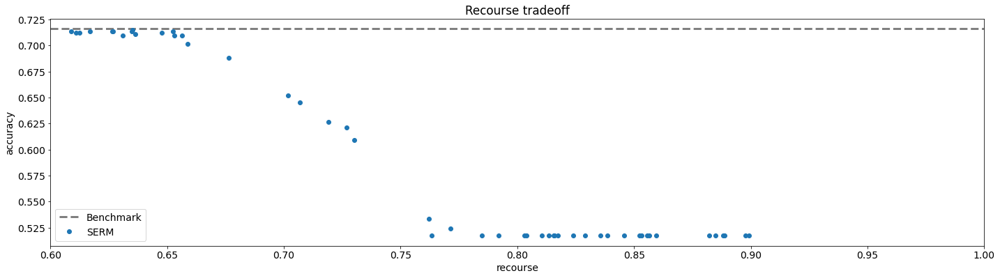

Recourse¶
Imports and Definitions¶
[1]:
import os
import time
import torch
import numpy as np
import pandas as pd
import matplotlib
import matplotlib.pyplot as plt
from lib.StrategicModel import StrategicModel
from lib.SocialMeasures import Recourse
import DataGeneration as data
torch.set_default_dtype(torch.float64)
torch.manual_seed(0)
matplotlib.rc('font', size=14)
PATH = "./results/recourse"
if not os.path.exists(PATH):
os.makedirs(PATH)
Data Loading¶
[2]:
# credit dataset
X, Y = data.load_credit_default_data()
X, Y = X[:3000], Y[:3000]
X, Y, Xval, Yval, Xtest, Ytest = data.split_validation_test(X, Y, 0.5, 0.5) # TODO: The split in recourse is 50-25-25?
Training¶
[3]:
x_dim = len(X[0])
scale = 1 / x_dim
epochs = 10
batch_size = 64
lambda_range = np.logspace(start=-1, stop=0.3, num=50)
print(lambda_range)
[0.1 0.10629935 0.11299552 0.1201135 0.12767988 0.13572288
0.14427254 0.15336077 0.1630215 0.1732908 0.184207 0.19581084
0.20814565 0.22125748 0.23519526 0.25001104 0.26576011 0.28250127
0.30029702 0.31921378 0.33932218 0.36069727 0.38341886 0.40757176
0.43324613 0.46053783 0.48954872 0.52038711 0.55316812 0.58801412
0.62505519 0.66442961 0.70628436 0.75077569 0.79806969 0.8483429
0.90178299 0.95858947 1.01897438 1.08316315 1.1513954 1.22392583
1.30102522 1.38298136 1.47010021 1.56270698 1.66114737 1.76578887
1.87702211 1.99526231]
[4]:
init_time = time.time()
results = {
"lambdas": [],
"accuracies": [],
"recourses": []
}
print(f"---------- Training the benchmark model (non-strategic) ----------")
model_name = f"benchmark"
benchmark_model = StrategicModel(x_dim, batch_size, cost_fn="quad", cost_const_kwargs={"scale": scale}, strategic=False)
benchmark_model.fit(X, Y, Xval, Yval, opt_class=torch.optim.Adam, opt_kwargs={"lr": 5e-2}, epochs=epochs,
verbose="batches", path=PATH, model_name=model_name)
results["lambdas"].append(0)
accuracy = benchmark_model.evaluate(Xtest, Ytest, strategic_data=False)
print(f"Accuracy: {accuracy}.")
results["accuracies"].append(accuracy)
Xtest_opt = benchmark_model.optimize_X(Xtest, requires_grad=False)
recourse_calculator = Recourse(0)
recourse = recourse_calculator.calc_recourse(Xtest, Xtest_opt, benchmark_model.w, benchmark_model.b, requires_grad=False).item()
print(f"Recourse: {recourse}.")
results["recourses"].append(recourse)
pd.DataFrame(results).to_csv(f"{PATH}/results.csv")
for lamb in lambda_range:
print(f"---------- Training with lambda={lamb:.3f} ----------")
model_name = f"recourse_{lamb:.3f}"
model = StrategicModel(x_dim, batch_size, cost_fn="quad", cost_const_kwargs={"scale": scale}, recourse_reg=lamb, strategic=True)
model.fit(X, Y, Xval, Yval, opt_class=torch.optim.Adam, opt_kwargs={"lr": 5e-2},
epochs=epochs, verbose="batches", path=PATH, model_name=model_name)
results["lambdas"].append(lamb)
accuracy = model.evaluate(Xtest, Ytest, strategic_data=True)
results["accuracies"].append(accuracy)
print(f"Accuracy: {accuracy}.")
Xtest_opt = model.optimize_X(Xtest, requires_grad=False)
recourse = model.social_measure_dict["recourse"].calc_recourse(Xtest, Xtest_opt, model.w, model.b, requires_grad=False).item()
results["recourses"].append(recourse)
print(f"Recourse: {recourse}.")
pd.DataFrame(results).to_csv(f"{PATH}/results.csv")
final_time = time.time()
total_time = final_time - init_time
print(f"Test took {total_time / 60} minutes ({total_time} seconds).")
---------- Training the benchmark model (non-strategic) ----------
Starting epoch 001 / 010.
Ended batch 001 / 024 | loss: 1.00383 | error: 0.46875
Ended batch 002 / 024 | loss: 0.95290 | error: 0.45312
Ended batch 003 / 024 | loss: 0.87193 | error: 0.42188
Ended batch 004 / 024 | loss: 0.96373 | error: 0.50000
Ended batch 005 / 024 | loss: 1.02244 | error: 0.54688
Ended batch 006 / 024 | loss: 0.93216 | error: 0.53125
Ended batch 007 / 024 | loss: 0.69428 | error: 0.37500
Ended batch 008 / 024 | loss: 0.66125 | error: 0.37500
Ended batch 009 / 024 | loss: 0.83748 | error: 0.43750
Ended batch 010 / 024 | loss: 1.00768 | error: 0.57812
Ended batch 011 / 024 | loss: 0.84887 | error: 0.43750
Ended batch 012 / 024 | loss: 0.95065 | error: 0.51562
Ended batch 013 / 024 | loss: 0.93706 | error: 0.45312
Ended batch 014 / 024 | loss: 0.69330 | error: 0.32812
Ended batch 015 / 024 | loss: 0.79202 | error: 0.34375
Ended batch 016 / 024 | loss: 0.86048 | error: 0.39062
Ended batch 017 / 024 | loss: 0.82768 | error: 0.32812
Ended batch 018 / 024 | loss: 0.82252 | error: 0.37500
Ended batch 019 / 024 | loss: 0.71627 | error: 0.32812
Ended batch 020 / 024 | loss: 0.57347 | error: 0.21875
Ended batch 021 / 024 | loss: 0.84754 | error: 0.43750
Ended batch 022 / 024 | loss: 0.65719 | error: 0.28125
Ended batch 023 / 024 | loss: 0.90416 | error: 0.40625
Ended batch 024 / 024 | loss: 0.56914 | error: 0.28571
Finished training step, calculating validation loss and accuracy.
Ended epoch 001 / 010 | time: 000 sec | loss: 0.67515 | error: 0.28453
Model saved to ./results/recourse/benchmark_model.pt.
Starting epoch 002 / 010.
Ended batch 001 / 024 | loss: 0.67931 | error: 0.26562
Ended batch 002 / 024 | loss: 0.62549 | error: 0.25000
Ended batch 003 / 024 | loss: 0.69057 | error: 0.29688
Ended batch 004 / 024 | loss: 0.84624 | error: 0.42188
Ended batch 005 / 024 | loss: 0.65449 | error: 0.31250
Ended batch 006 / 024 | loss: 0.49900 | error: 0.21875
Ended batch 007 / 024 | loss: 0.57641 | error: 0.25000
Ended batch 008 / 024 | loss: 0.48736 | error: 0.20312
Ended batch 009 / 024 | loss: 0.83487 | error: 0.40625
Ended batch 010 / 024 | loss: 0.69388 | error: 0.32812
Ended batch 011 / 024 | loss: 0.60478 | error: 0.26562
Ended batch 012 / 024 | loss: 0.86461 | error: 0.40625
Ended batch 013 / 024 | loss: 0.72342 | error: 0.35938
Ended batch 014 / 024 | loss: 0.53074 | error: 0.23438
Ended batch 015 / 024 | loss: 0.56740 | error: 0.26562
Ended batch 016 / 024 | loss: 0.73082 | error: 0.34375
Ended batch 017 / 024 | loss: 0.78554 | error: 0.34375
Ended batch 018 / 024 | loss: 0.76903 | error: 0.37500
Ended batch 019 / 024 | loss: 0.64376 | error: 0.31250
Ended batch 020 / 024 | loss: 0.41747 | error: 0.17188
Ended batch 021 / 024 | loss: 0.84229 | error: 0.43750
Ended batch 022 / 024 | loss: 0.63687 | error: 0.29688
Ended batch 023 / 024 | loss: 0.80576 | error: 0.37500
Ended batch 024 / 024 | loss: 0.57043 | error: 0.28571
Finished training step, calculating validation loss and accuracy.
Ended epoch 002 / 010 | time: 000 sec | loss: 0.63810 | error: 0.29365
Starting epoch 003 / 010.
Ended batch 001 / 024 | loss: 0.66973 | error: 0.31250
Ended batch 002 / 024 | loss: 0.57652 | error: 0.25000
Ended batch 003 / 024 | loss: 0.69271 | error: 0.31250
Ended batch 004 / 024 | loss: 0.85567 | error: 0.42188
Ended batch 005 / 024 | loss: 0.62466 | error: 0.31250
Ended batch 006 / 024 | loss: 0.46060 | error: 0.21875
Ended batch 007 / 024 | loss: 0.51500 | error: 0.25000
Ended batch 008 / 024 | loss: 0.43909 | error: 0.20312
Ended batch 009 / 024 | loss: 0.85279 | error: 0.40625
Ended batch 010 / 024 | loss: 0.68736 | error: 0.32812
Ended batch 011 / 024 | loss: 0.57510 | error: 0.26562
Ended batch 012 / 024 | loss: 0.83445 | error: 0.39062
Ended batch 013 / 024 | loss: 0.72470 | error: 0.35938
Ended batch 014 / 024 | loss: 0.49459 | error: 0.23438
Ended batch 015 / 024 | loss: 0.57706 | error: 0.26562
Ended batch 016 / 024 | loss: 0.71912 | error: 0.34375
Ended batch 017 / 024 | loss: 0.75138 | error: 0.34375
Ended batch 018 / 024 | loss: 0.76615 | error: 0.37500
Ended batch 019 / 024 | loss: 0.64161 | error: 0.31250
Ended batch 020 / 024 | loss: 0.40496 | error: 0.17188
Ended batch 021 / 024 | loss: 0.87333 | error: 0.43750
Ended batch 022 / 024 | loss: 0.62354 | error: 0.29688
Ended batch 023 / 024 | loss: 0.79840 | error: 0.37500
Ended batch 024 / 024 | loss: 0.58263 | error: 0.28571
Finished training step, calculating validation loss and accuracy.
Ended epoch 003 / 010 | time: 000 sec | loss: 0.62343 | error: 0.29235
Starting epoch 004 / 010.
Ended batch 001 / 024 | loss: 0.66621 | error: 0.31250
Ended batch 002 / 024 | loss: 0.55164 | error: 0.25000
Ended batch 003 / 024 | loss: 0.67178 | error: 0.31250
Ended batch 004 / 024 | loss: 0.86764 | error: 0.42188
Ended batch 005 / 024 | loss: 0.62741 | error: 0.31250
Ended batch 006 / 024 | loss: 0.46085 | error: 0.21875
Ended batch 007 / 024 | loss: 0.50764 | error: 0.25000
Ended batch 008 / 024 | loss: 0.43394 | error: 0.20312
Ended batch 009 / 024 | loss: 0.84278 | error: 0.40625
Ended batch 010 / 024 | loss: 0.69166 | error: 0.32812
Ended batch 011 / 024 | loss: 0.56280 | error: 0.26562
Ended batch 012 / 024 | loss: 0.82573 | error: 0.39062
Ended batch 013 / 024 | loss: 0.72030 | error: 0.35938
Ended batch 014 / 024 | loss: 0.49391 | error: 0.23438
Ended batch 015 / 024 | loss: 0.56872 | error: 0.26562
Ended batch 016 / 024 | loss: 0.71379 | error: 0.34375
Ended batch 017 / 024 | loss: 0.74248 | error: 0.34375
Ended batch 018 / 024 | loss: 0.76001 | error: 0.37500
Ended batch 019 / 024 | loss: 0.63860 | error: 0.31250
Ended batch 020 / 024 | loss: 0.39282 | error: 0.17188
Ended batch 021 / 024 | loss: 0.87769 | error: 0.43750
Ended batch 022 / 024 | loss: 0.61762 | error: 0.29688
Ended batch 023 / 024 | loss: 0.79095 | error: 0.37500
Ended batch 024 / 024 | loss: 0.58725 | error: 0.28571
Finished training step, calculating validation loss and accuracy.
Ended epoch 004 / 010 | time: 000 sec | loss: 0.62121 | error: 0.29235
Starting epoch 005 / 010.
Ended batch 001 / 024 | loss: 0.67599 | error: 0.31250
Ended batch 002 / 024 | loss: 0.54770 | error: 0.25000
Ended batch 003 / 024 | loss: 0.67069 | error: 0.31250
Ended batch 004 / 024 | loss: 0.86663 | error: 0.42188
Ended batch 005 / 024 | loss: 0.62464 | error: 0.31250
Ended batch 006 / 024 | loss: 0.45511 | error: 0.21875
Ended batch 007 / 024 | loss: 0.51208 | error: 0.25000
Ended batch 008 / 024 | loss: 0.43447 | error: 0.20312
Ended batch 009 / 024 | loss: 0.84063 | error: 0.40625
Ended batch 010 / 024 | loss: 0.69282 | error: 0.34375
Ended batch 011 / 024 | loss: 0.56179 | error: 0.26562
Ended batch 012 / 024 | loss: 0.82504 | error: 0.39062
Ended batch 013 / 024 | loss: 0.72948 | error: 0.35938
Ended batch 014 / 024 | loss: 0.49095 | error: 0.23438
Ended batch 015 / 024 | loss: 0.56142 | error: 0.26562
Ended batch 016 / 024 | loss: 0.71527 | error: 0.34375
Ended batch 017 / 024 | loss: 0.73388 | error: 0.34375
Ended batch 018 / 024 | loss: 0.75998 | error: 0.37500
Ended batch 019 / 024 | loss: 0.63771 | error: 0.31250
Ended batch 020 / 024 | loss: 0.38094 | error: 0.17188
Ended batch 021 / 024 | loss: 0.87655 | error: 0.43750
Ended batch 022 / 024 | loss: 0.61571 | error: 0.29688
Ended batch 023 / 024 | loss: 0.78503 | error: 0.37500
Ended batch 024 / 024 | loss: 0.58586 | error: 0.28571
Finished training step, calculating validation loss and accuracy.
Ended epoch 005 / 010 | time: 000 sec | loss: 0.61564 | error: 0.29235
Ending training due to 4 consecutive epochs without improvement in validation accuracy.
Total training time: 0.4990055561065674 seconds.
Model loaded from ./results/recourse/benchmark_model.pt.
Accuracy: 0.716.
Recourse: 0.8659104105914851.
---------- Training with lambda=0.100 ----------
Starting epoch 001 / 010.
Ended batch 001 / 024 | loss: 1.01577 | error: 0.46875 | recourse: 0.90626
Ended batch 002 / 024 | loss: 0.90557 | error: 0.45312 | recourse: 0.89392
Ended batch 003 / 024 | loss: 0.86465 | error: 0.42188 | recourse: 0.89074
Ended batch 004 / 024 | loss: 0.99972 | error: 0.50000 | recourse: 0.89363
Ended batch 005 / 024 | loss: 1.05964 | error: 0.54688 | recourse: 0.89310
Ended batch 006 / 024 | loss: 1.00551 | error: 0.53125 | recourse: 0.88597
Ended batch 007 / 024 | loss: 0.75120 | error: 0.37500 | recourse: 0.89274
Ended batch 008 / 024 | loss: 0.72584 | error: 0.37500 | recourse: 0.89885
Ended batch 009 / 024 | loss: 0.88067 | error: 0.43750 | recourse: 0.89973
Ended batch 010 / 024 | loss: 1.18594 | error: 0.60938 | recourse: 0.88774
Ended batch 011 / 024 | loss: 0.96719 | error: 0.50000 | recourse: 0.88440
Ended batch 012 / 024 | loss: 0.98093 | error: 0.50000 | recourse: 0.87854
Ended batch 013 / 024 | loss: 1.05745 | error: 0.56250 | recourse: 0.86641
Ended batch 014 / 024 | loss: 0.85790 | error: 0.43750 | recourse: 0.86892
Ended batch 015 / 024 | loss: 1.02376 | error: 0.54688 | recourse: 0.86231
Ended batch 016 / 024 | loss: 1.02378 | error: 0.54688 | recourse: 0.86004
Ended batch 017 / 024 | loss: 0.97956 | error: 0.50000 | recourse: 0.85547
Ended batch 018 / 024 | loss: 0.93488 | error: 0.46875 | recourse: 0.86549
Ended batch 019 / 024 | loss: 0.95985 | error: 0.50000 | recourse: 0.85841
Ended batch 020 / 024 | loss: 0.95876 | error: 0.51562 | recourse: 0.86253
Ended batch 021 / 024 | loss: 1.16652 | error: 0.62500 | recourse: 0.86215
Ended batch 022 / 024 | loss: 0.90467 | error: 0.46875 | recourse: 0.85546
Ended batch 023 / 024 | loss: 1.09653 | error: 0.57812 | recourse: 0.85617
Ended batch 024 / 024 | loss: 0.89034 | error: 0.46429 | recourse: 0.85924
Finished training step, calculating validation loss and accuracy.
Ended epoch 001 / 010 | time: 024 sec | loss: 0.95581 | error: 0.47294 | recourse: 0.83723
Model saved to ./results/recourse/recourse_0.100_model.pt.
Starting epoch 002 / 010.
Ended batch 001 / 024 | loss: 0.91624 | error: 0.46875 | recourse: 0.85781
Ended batch 002 / 024 | loss: 0.86816 | error: 0.45312 | recourse: 0.85517
Ended batch 003 / 024 | loss: 0.83929 | error: 0.42188 | recourse: 0.87296
Ended batch 004 / 024 | loss: 0.99617 | error: 0.50000 | recourse: 0.88008
Ended batch 005 / 024 | loss: 1.04425 | error: 0.54688 | recourse: 0.86630
Ended batch 006 / 024 | loss: 0.98262 | error: 0.53125 | recourse: 0.85490
Ended batch 007 / 024 | loss: 0.73218 | error: 0.37500 | recourse: 0.85827
Ended batch 008 / 024 | loss: 0.72497 | error: 0.37500 | recourse: 0.86014
Ended batch 009 / 024 | loss: 0.87590 | error: 0.43750 | recourse: 0.86099
Ended batch 010 / 024 | loss: 1.12216 | error: 0.60938 | recourse: 0.84924
Ended batch 011 / 024 | loss: 0.94205 | error: 0.50000 | recourse: 0.85190
Ended batch 012 / 024 | loss: 0.98106 | error: 0.50000 | recourse: 0.85123
Ended batch 013 / 024 | loss: 1.05013 | error: 0.56250 | recourse: 0.84183
Ended batch 014 / 024 | loss: 0.84036 | error: 0.43750 | recourse: 0.84699
Ended batch 015 / 024 | loss: 1.00667 | error: 0.54688 | recourse: 0.84066
Ended batch 016 / 024 | loss: 1.01681 | error: 0.54688 | recourse: 0.83771
Ended batch 017 / 024 | loss: 0.96268 | error: 0.50000 | recourse: 0.82985
Ended batch 018 / 024 | loss: 0.92580 | error: 0.46875 | recourse: 0.84321
Ended batch 019 / 024 | loss: 0.94654 | error: 0.50000 | recourse: 0.83551
Ended batch 020 / 024 | loss: 0.92790 | error: 0.51562 | recourse: 0.83325
Ended batch 021 / 024 | loss: 1.14220 | error: 0.62500 | recourse: 0.83294
Ended batch 022 / 024 | loss: 0.90282 | error: 0.46875 | recourse: 0.82072
Ended batch 023 / 024 | loss: 1.08132 | error: 0.57812 | recourse: 0.82001
Ended batch 024 / 024 | loss: 0.88817 | error: 0.46429 | recourse: 0.82166
Finished training step, calculating validation loss and accuracy.
Ended epoch 002 / 010 | time: 026 sec | loss: 0.97256 | error: 0.47294 | recourse: 0.80474
Starting epoch 003 / 010.
Ended batch 001 / 024 | loss: 0.91844 | error: 0.46875 | recourse: 0.81646
Ended batch 002 / 024 | loss: 0.87810 | error: 0.43750 | recourse: 0.81079
Ended batch 003 / 024 | loss: 0.86857 | error: 0.42188 | recourse: 0.83330
Ended batch 004 / 024 | loss: 0.98630 | error: 0.50000 | recourse: 0.84646
Ended batch 005 / 024 | loss: 1.00905 | error: 0.54688 | recourse: 0.83953
Ended batch 006 / 024 | loss: 0.95769 | error: 0.53125 | recourse: 0.83606
Ended batch 007 / 024 | loss: 0.73136 | error: 0.37500 | recourse: 0.85048
Ended batch 008 / 024 | loss: 0.71173 | error: 0.37500 | recourse: 0.85721
Ended batch 009 / 024 | loss: 0.87551 | error: 0.43750 | recourse: 0.85740
Ended batch 010 / 024 | loss: 1.15325 | error: 0.60938 | recourse: 0.84023
Ended batch 011 / 024 | loss: 0.95069 | error: 0.50000 | recourse: 0.83638
Ended batch 012 / 024 | loss: 0.98239 | error: 0.50000 | recourse: 0.82979
Ended batch 013 / 024 | loss: 1.04125 | error: 0.56250 | recourse: 0.81343
Ended batch 014 / 024 | loss: 0.85145 | error: 0.43750 | recourse: 0.81461
Ended batch 015 / 024 | loss: 0.99312 | error: 0.54688 | recourse: 0.80184
Ended batch 016 / 024 | loss: 0.99732 | error: 0.53125 | recourse: 0.79416
Ended batch 017 / 024 | loss: 0.96721 | error: 0.50000 | recourse: 0.78142
Ended batch 018 / 024 | loss: 0.94533 | error: 0.45312 | recourse: 0.79347
Ended batch 019 / 024 | loss: 0.95052 | error: 0.50000 | recourse: 0.78205
Ended batch 020 / 024 | loss: 0.92535 | error: 0.50000 | recourse: 0.77931
Ended batch 021 / 024 | loss: 1.08402 | error: 0.62500 | recourse: 0.77761
Ended batch 022 / 024 | loss: 0.92506 | error: 0.43750 | recourse: 0.76257
Ended batch 023 / 024 | loss: 1.03751 | error: 0.59375 | recourse: 0.76083
Ended batch 024 / 024 | loss: 0.91460 | error: 0.39286 | recourse: 0.76259
Finished training step, calculating validation loss and accuracy.
Ended epoch 003 / 010 | time: 026 sec | loss: 0.98752 | error: 0.47294 | recourse: 0.77079
Starting epoch 004 / 010.
Ended batch 001 / 024 | loss: 0.94276 | error: 0.45312 | recourse: 0.75844
Ended batch 002 / 024 | loss: 0.90746 | error: 0.43750 | recourse: 0.75560
Ended batch 003 / 024 | loss: 0.90422 | error: 0.42188 | recourse: 0.78880
Ended batch 004 / 024 | loss: 0.98595 | error: 0.50000 | recourse: 0.81185
Ended batch 005 / 024 | loss: 0.99643 | error: 0.54688 | recourse: 0.81045
Ended batch 006 / 024 | loss: 0.94966 | error: 0.53125 | recourse: 0.81155
Ended batch 007 / 024 | loss: 0.74214 | error: 0.37500 | recourse: 0.83272
Ended batch 008 / 024 | loss: 0.71458 | error: 0.37500 | recourse: 0.84545
Ended batch 009 / 024 | loss: 0.87990 | error: 0.43750 | recourse: 0.84840
Ended batch 010 / 024 | loss: 1.18249 | error: 0.60938 | recourse: 0.83107
Ended batch 011 / 024 | loss: 0.97273 | error: 0.50000 | recourse: 0.82615
Ended batch 012 / 024 | loss: 0.99029 | error: 0.50000 | recourse: 0.81462
Ended batch 013 / 024 | loss: 1.04860 | error: 0.56250 | recourse: 0.79344
Ended batch 014 / 024 | loss: 0.84964 | error: 0.43750 | recourse: 0.78853
Ended batch 015 / 024 | loss: 0.98490 | error: 0.54688 | recourse: 0.76816
Ended batch 016 / 024 | loss: 0.98374 | error: 0.50000 | recourse: 0.75219
Ended batch 017 / 024 | loss: 0.96478 | error: 0.45312 | recourse: 0.73201
Ended batch 018 / 024 | loss: 0.95270 | error: 0.39062 | recourse: 0.74219
Ended batch 019 / 024 | loss: 0.95080 | error: 0.35938 | recourse: 0.72477
Ended batch 020 / 024 | loss: 0.91497 | error: 0.32812 | recourse: 0.72103
Ended batch 021 / 024 | loss: 1.03802 | error: 0.50000 | recourse: 0.71699
Ended batch 022 / 024 | loss: 0.93866 | error: 0.26562 | recourse: 0.69735
Ended batch 023 / 024 | loss: 0.99989 | error: 0.40625 | recourse: 0.69233
Ended batch 024 / 024 | loss: 0.94016 | error: 0.28571 | recourse: 0.69283
Finished training step, calculating validation loss and accuracy.
Ended epoch 004 / 010 | time: 028 sec | loss: 0.87216 | error: 0.34149 | recourse: 0.70602
Validation accuracy improved.
Model saved to ./results/recourse/recourse_0.100_model.pt.
Starting epoch 005 / 010.
Ended batch 001 / 024 | loss: 0.96418 | error: 0.32812 | recourse: 0.68552
Ended batch 002 / 024 | loss: 0.93264 | error: 0.26562 | recourse: 0.68218
Ended batch 003 / 024 | loss: 0.94420 | error: 0.34375 | recourse: 0.72768
Ended batch 004 / 024 | loss: 0.98644 | error: 0.46875 | recourse: 0.76068
Ended batch 005 / 024 | loss: 0.97537 | error: 0.53125 | recourse: 0.76225
Ended batch 006 / 024 | loss: 0.93068 | error: 0.53125 | recourse: 0.76669
Ended batch 007 / 024 | loss: 0.76871 | error: 0.37500 | recourse: 0.79645
Ended batch 008 / 024 | loss: 0.73074 | error: 0.37500 | recourse: 0.81890
Ended batch 009 / 024 | loss: 0.87608 | error: 0.43750 | recourse: 0.82984
Ended batch 010 / 024 | loss: 1.17593 | error: 0.60938 | recourse: 0.81657
Ended batch 011 / 024 | loss: 0.98396 | error: 0.50000 | recourse: 0.81670
Ended batch 012 / 024 | loss: 1.00747 | error: 0.50000 | recourse: 0.80761
Ended batch 013 / 024 | loss: 1.07510 | error: 0.56250 | recourse: 0.78712
Ended batch 014 / 024 | loss: 0.83833 | error: 0.43750 | recourse: 0.78272
Ended batch 015 / 024 | loss: 0.99887 | error: 0.54688 | recourse: 0.76071
Ended batch 016 / 024 | loss: 0.99478 | error: 0.53125 | recourse: 0.74111
Ended batch 017 / 024 | loss: 0.95940 | error: 0.50000 | recourse: 0.71412
Ended batch 018 / 024 | loss: 0.93819 | error: 0.40625 | recourse: 0.72147
Ended batch 019 / 024 | loss: 0.93433 | error: 0.34375 | recourse: 0.69425
Ended batch 020 / 024 | loss: 0.88689 | error: 0.31250 | recourse: 0.68266
Ended batch 021 / 024 | loss: 1.00837 | error: 0.46875 | recourse: 0.67038
Ended batch 022 / 024 | loss: 0.92775 | error: 0.29688 | recourse: 0.63861
Ended batch 023 / 024 | loss: 0.97314 | error: 0.35938 | recourse: 0.62695
Ended batch 024 / 024 | loss: 0.94205 | error: 0.39286 | recourse: 0.62100
Finished training step, calculating validation loss and accuracy.
Ended epoch 005 / 010 | time: 028 sec | loss: 0.79020 | error: 0.29235 | recourse: 0.60673
Validation accuracy improved.
Model saved to ./results/recourse/recourse_0.100_model.pt.
Starting epoch 006 / 010.
Ended batch 001 / 024 | loss: 0.97153 | error: 0.50000 | recourse: 0.60633
Ended batch 002 / 024 | loss: 0.94971 | error: 0.50000 | recourse: 0.59820
Ended batch 003 / 024 | loss: 0.98244 | error: 0.32812 | recourse: 0.65252
Ended batch 004 / 024 | loss: 0.98529 | error: 0.40625 | recourse: 0.69417
Ended batch 005 / 024 | loss: 0.94382 | error: 0.35938 | recourse: 0.69873
Ended batch 006 / 024 | loss: 0.90017 | error: 0.43750 | recourse: 0.70549
Ended batch 007 / 024 | loss: 0.80641 | error: 0.34375 | recourse: 0.74503
Ended batch 008 / 024 | loss: 0.76254 | error: 0.37500 | recourse: 0.77695
Ended batch 009 / 024 | loss: 0.88528 | error: 0.43750 | recourse: 0.80009
Ended batch 010 / 024 | loss: 1.14317 | error: 0.60938 | recourse: 0.79310
Ended batch 011 / 024 | loss: 0.97353 | error: 0.50000 | recourse: 0.79983
Ended batch 012 / 024 | loss: 1.01031 | error: 0.50000 | recourse: 0.79541
Ended batch 013 / 024 | loss: 1.09286 | error: 0.56250 | recourse: 0.77823
Ended batch 014 / 024 | loss: 0.83984 | error: 0.43750 | recourse: 0.77486
Ended batch 015 / 024 | loss: 1.01491 | error: 0.54688 | recourse: 0.75416
Ended batch 016 / 024 | loss: 1.01360 | error: 0.54688 | recourse: 0.73584
Ended batch 017 / 024 | loss: 0.96176 | error: 0.50000 | recourse: 0.70893
Ended batch 018 / 024 | loss: 0.92766 | error: 0.45312 | recourse: 0.71572
Ended batch 019 / 024 | loss: 0.92606 | error: 0.42188 | recourse: 0.68426
Ended batch 020 / 024 | loss: 0.87261 | error: 0.34375 | recourse: 0.66315
Ended batch 021 / 024 | loss: 1.00654 | error: 0.48438 | recourse: 0.64118
Ended batch 022 / 024 | loss: 0.89931 | error: 0.29688 | recourse: 0.59325
Ended batch 023 / 024 | loss: 0.94842 | error: 0.37500 | recourse: 0.57120
Ended batch 024 / 024 | loss: 0.91168 | error: 0.53571 | recourse: 0.55497
Finished training step, calculating validation loss and accuracy.
Ended epoch 006 / 010 | time: 026 sec | loss: 1.12891 | error: 0.52706 | recourse: 0.43208
Starting epoch 007 / 010.
Ended batch 001 / 024 | loss: 0.96510 | error: 0.53125 | recourse: 0.53273
Ended batch 002 / 024 | loss: 0.94526 | error: 0.54688 | recourse: 0.52090
Ended batch 003 / 024 | loss: 0.99452 | error: 0.48438 | recourse: 0.59467
Ended batch 004 / 024 | loss: 0.97558 | error: 0.42188 | recourse: 0.65003
Ended batch 005 / 024 | loss: 0.91612 | error: 0.32812 | recourse: 0.65761
Ended batch 006 / 024 | loss: 0.87382 | error: 0.31250 | recourse: 0.66733
Ended batch 007 / 024 | loss: 0.81192 | error: 0.31250 | recourse: 0.71518
Ended batch 008 / 024 | loss: 0.76772 | error: 0.37500 | recourse: 0.75042
Ended batch 009 / 024 | loss: 0.89379 | error: 0.43750 | recourse: 0.77495
Ended batch 010 / 024 | loss: 1.10870 | error: 0.59375 | recourse: 0.76474
Ended batch 011 / 024 | loss: 0.96397 | error: 0.50000 | recourse: 0.78146
Ended batch 012 / 024 | loss: 1.00577 | error: 0.50000 | recourse: 0.78065
Ended batch 013 / 024 | loss: 1.09623 | error: 0.56250 | recourse: 0.76586
Ended batch 014 / 024 | loss: 0.84339 | error: 0.43750 | recourse: 0.76363
Ended batch 015 / 024 | loss: 1.02556 | error: 0.54688 | recourse: 0.74300
Ended batch 016 / 024 | loss: 1.00455 | error: 0.53125 | recourse: 0.72206
Ended batch 017 / 024 | loss: 0.96601 | error: 0.50000 | recourse: 0.70251
Ended batch 018 / 024 | loss: 0.91516 | error: 0.45312 | recourse: 0.70720
Ended batch 019 / 024 | loss: 0.92914 | error: 0.45312 | recourse: 0.68137
Ended batch 020 / 024 | loss: 0.87610 | error: 0.40625 | recourse: 0.65560
Ended batch 021 / 024 | loss: 1.01900 | error: 0.50000 | recourse: 0.62855
Ended batch 022 / 024 | loss: 0.86782 | error: 0.29688 | recourse: 0.56996
Ended batch 023 / 024 | loss: 0.92900 | error: 0.37500 | recourse: 0.53844
Ended batch 024 / 024 | loss: 0.88127 | error: 0.42857 | recourse: 0.52568
Finished training step, calculating validation loss and accuracy.
Ended epoch 007 / 010 | time: 029 sec | loss: 1.26595 | error: 0.52706 | recourse: 0.35745
Starting epoch 008 / 010.
Ended batch 001 / 024 | loss: 0.93694 | error: 0.50000 | recourse: 0.51942
Ended batch 002 / 024 | loss: 0.88493 | error: 0.32812 | recourse: 0.52856
Ended batch 003 / 024 | loss: 0.96084 | error: 0.29688 | recourse: 0.64340
Ended batch 004 / 024 | loss: 0.97833 | error: 0.45312 | recourse: 0.70137
Ended batch 005 / 024 | loss: 0.96727 | error: 0.51562 | recourse: 0.70680
Ended batch 006 / 024 | loss: 0.91644 | error: 0.51562 | recourse: 0.70984
Ended batch 007 / 024 | loss: 0.76696 | error: 0.37500 | recourse: 0.75057
Ended batch 008 / 024 | loss: 0.73509 | error: 0.37500 | recourse: 0.77350
Ended batch 009 / 024 | loss: 0.88439 | error: 0.43750 | recourse: 0.78639
Ended batch 010 / 024 | loss: 1.14234 | error: 0.59375 | recourse: 0.76730
Ended batch 011 / 024 | loss: 0.97778 | error: 0.50000 | recourse: 0.77625
Ended batch 012 / 024 | loss: 1.01023 | error: 0.50000 | recourse: 0.77177
Ended batch 013 / 024 | loss: 1.09125 | error: 0.56250 | recourse: 0.75041
Ended batch 014 / 024 | loss: 0.83792 | error: 0.43750 | recourse: 0.75155
Ended batch 015 / 024 | loss: 1.01993 | error: 0.54688 | recourse: 0.73185
Ended batch 016 / 024 | loss: 0.98316 | error: 0.51562 | recourse: 0.70729
Ended batch 017 / 024 | loss: 0.96642 | error: 0.50000 | recourse: 0.69573
Ended batch 018 / 024 | loss: 0.91917 | error: 0.45312 | recourse: 0.70171
Ended batch 019 / 024 | loss: 0.93271 | error: 0.45312 | recourse: 0.67924
Ended batch 020 / 024 | loss: 0.87558 | error: 0.40625 | recourse: 0.65228
Ended batch 021 / 024 | loss: 1.03234 | error: 0.53125 | recourse: 0.62813
Ended batch 022 / 024 | loss: 0.87316 | error: 0.29688 | recourse: 0.57131
Ended batch 023 / 024 | loss: 0.92671 | error: 0.37500 | recourse: 0.53601
Ended batch 024 / 024 | loss: 0.86827 | error: 0.32143 | recourse: 0.52373
Finished training step, calculating validation loss and accuracy.
Ended epoch 008 / 010 | time: 030 sec | loss: 1.29744 | error: 0.52706 | recourse: 0.34221
Starting epoch 009 / 010.
Ended batch 001 / 024 | loss: 0.92384 | error: 0.39062 | recourse: 0.52205
Ended batch 002 / 024 | loss: 0.88622 | error: 0.26562 | recourse: 0.53090
Ended batch 003 / 024 | loss: 0.93423 | error: 0.29688 | recourse: 0.64979
Ended batch 004 / 024 | loss: 0.97060 | error: 0.45312 | recourse: 0.70370
Ended batch 005 / 024 | loss: 0.96412 | error: 0.53125 | recourse: 0.70882
Ended batch 006 / 024 | loss: 0.92013 | error: 0.51562 | recourse: 0.71587
Ended batch 007 / 024 | loss: 0.76387 | error: 0.37500 | recourse: 0.75606
Ended batch 008 / 024 | loss: 0.73074 | error: 0.37500 | recourse: 0.77845
Ended batch 009 / 024 | loss: 0.88196 | error: 0.43750 | recourse: 0.78827
Ended batch 010 / 024 | loss: 1.15429 | error: 0.59375 | recourse: 0.76550
Ended batch 011 / 024 | loss: 0.98454 | error: 0.50000 | recourse: 0.77263
Ended batch 012 / 024 | loss: 1.01092 | error: 0.50000 | recourse: 0.76568
Ended batch 013 / 024 | loss: 1.08671 | error: 0.56250 | recourse: 0.74363
Ended batch 014 / 024 | loss: 0.83891 | error: 0.43750 | recourse: 0.74325
Ended batch 015 / 024 | loss: 1.01436 | error: 0.54688 | recourse: 0.72232
Ended batch 016 / 024 | loss: 0.97876 | error: 0.51562 | recourse: 0.69580
Ended batch 017 / 024 | loss: 0.99146 | error: 0.51562 | recourse: 0.67660
Ended batch 018 / 024 | loss: 0.91828 | error: 0.45312 | recourse: 0.68776
Ended batch 019 / 024 | loss: 0.92779 | error: 0.42188 | recourse: 0.65901
Ended batch 020 / 024 | loss: 0.86687 | error: 0.34375 | recourse: 0.63515
Ended batch 021 / 024 | loss: 1.00418 | error: 0.48438 | recourse: 0.60670
Ended batch 022 / 024 | loss: 0.85505 | error: 0.29688 | recourse: 0.54072
Ended batch 023 / 024 | loss: 0.92785 | error: 0.35938 | recourse: 0.52192
Ended batch 024 / 024 | loss: 0.88406 | error: 0.39286 | recourse: 0.51984
Finished training step, calculating validation loss and accuracy.
Ended epoch 009 / 010 | time: 031 sec | loss: 1.31559 | error: 0.52706 | recourse: 0.33491
Ending training due to 4 consecutive epochs without improvement in validation accuracy.
Total training time: 4.125307961304983 minutes (247.51847767829895 seconds).
Model loaded from ./results/recourse/recourse_0.100_model.pt.
Accuracy: 0.7133333333333334.
Recourse: 0.6088228658342754.
---------- Training with lambda=0.106 ----------
Starting epoch 001 / 010.
Ended batch 001 / 024 | loss: 1.04954 | error: 0.46875 | recourse: 0.77013
Ended batch 002 / 024 | loss: 0.98760 | error: 0.45312 | recourse: 0.83233
Ended batch 003 / 024 | loss: 0.88692 | error: 0.42188 | recourse: 0.82472
Ended batch 004 / 024 | loss: 1.06591 | error: 0.50000 | recourse: 0.80565
Ended batch 005 / 024 | loss: 1.14261 | error: 0.54688 | recourse: 0.78844
Ended batch 006 / 024 | loss: 1.09923 | error: 0.53125 | recourse: 0.77481
Ended batch 007 / 024 | loss: 0.84174 | error: 0.37500 | recourse: 0.76928
Ended batch 008 / 024 | loss: 0.83265 | error: 0.37500 | recourse: 0.77953
Ended batch 009 / 024 | loss: 0.91156 | error: 0.43750 | recourse: 0.79216
Ended batch 010 / 024 | loss: 1.21739 | error: 0.60938 | recourse: 0.79653
Ended batch 011 / 024 | loss: 1.00871 | error: 0.50000 | recourse: 0.79806
Ended batch 012 / 024 | loss: 1.02161 | error: 0.50000 | recourse: 0.79976
Ended batch 013 / 024 | loss: 1.13872 | error: 0.56250 | recourse: 0.79829
Ended batch 014 / 024 | loss: 0.89661 | error: 0.43750 | recourse: 0.79570
Ended batch 015 / 024 | loss: 1.08769 | error: 0.54688 | recourse: 0.78975
Ended batch 016 / 024 | loss: 1.09066 | error: 0.54688 | recourse: 0.77728
Ended batch 017 / 024 | loss: 1.00092 | error: 0.50000 | recourse: 0.77157
Ended batch 018 / 024 | loss: 0.95359 | error: 0.46875 | recourse: 0.77669
Ended batch 019 / 024 | loss: 0.98323 | error: 0.50000 | recourse: 0.77216
Ended batch 020 / 024 | loss: 0.99019 | error: 0.51562 | recourse: 0.76979
Ended batch 021 / 024 | loss: 1.17369 | error: 0.62500 | recourse: 0.75626
Ended batch 022 / 024 | loss: 0.94108 | error: 0.46875 | recourse: 0.74320
Ended batch 023 / 024 | loss: 1.09756 | error: 0.57812 | recourse: 0.73035
Ended batch 024 / 024 | loss: 0.90369 | error: 0.46429 | recourse: 0.72756
Finished training step, calculating validation loss and accuracy.
Ended epoch 001 / 010 | time: 031 sec | loss: 0.81522 | error: 0.31912 | recourse: 0.57257
Model saved to ./results/recourse/recourse_0.106_model.pt.
Starting epoch 002 / 010.
Ended batch 001 / 024 | loss: 0.94261 | error: 0.46875 | recourse: 0.71945
Ended batch 002 / 024 | loss: 0.90036 | error: 0.43750 | recourse: 0.71351
Ended batch 003 / 024 | loss: 0.88930 | error: 0.42188 | recourse: 0.74341
Ended batch 004 / 024 | loss: 0.99597 | error: 0.50000 | recourse: 0.76609
Ended batch 005 / 024 | loss: 1.01328 | error: 0.54688 | recourse: 0.75747
Ended batch 006 / 024 | loss: 0.96580 | error: 0.53125 | recourse: 0.75326
Ended batch 007 / 024 | loss: 0.76326 | error: 0.37500 | recourse: 0.77601
Ended batch 008 / 024 | loss: 0.73070 | error: 0.37500 | recourse: 0.79550
Ended batch 009 / 024 | loss: 0.87963 | error: 0.43750 | recourse: 0.80191
Ended batch 010 / 024 | loss: 1.17523 | error: 0.60938 | recourse: 0.78150
Ended batch 011 / 024 | loss: 0.97127 | error: 0.50000 | recourse: 0.77591
Ended batch 012 / 024 | loss: 0.99429 | error: 0.50000 | recourse: 0.76598
Ended batch 013 / 024 | loss: 1.06097 | error: 0.56250 | recourse: 0.74051
Ended batch 014 / 024 | loss: 0.84880 | error: 0.43750 | recourse: 0.73744
Ended batch 015 / 024 | loss: 0.99031 | error: 0.54688 | recourse: 0.70995
Ended batch 016 / 024 | loss: 0.98440 | error: 0.50000 | recourse: 0.68315
Ended batch 017 / 024 | loss: 0.95514 | error: 0.42188 | recourse: 0.64213
Ended batch 018 / 024 | loss: 0.94351 | error: 0.35938 | recourse: 0.64427
Ended batch 019 / 024 | loss: 0.90393 | error: 0.31250 | recourse: 0.61080
Ended batch 020 / 024 | loss: 0.83300 | error: 0.17188 | recourse: 0.59024
Ended batch 021 / 024 | loss: 0.92818 | error: 0.43750 | recourse: 0.57393
Ended batch 022 / 024 | loss: 0.90998 | error: 0.53125 | recourse: 0.52941
Ended batch 023 / 024 | loss: 0.91136 | error: 0.43750 | recourse: 0.52674
Ended batch 024 / 024 | loss: 0.89802 | error: 0.53571 | recourse: 0.54007
Finished training step, calculating validation loss and accuracy.
Ended epoch 002 / 010 | time: 027 sec | loss: 1.18961 | error: 0.52706 | recourse: 0.39478
Starting epoch 003 / 010.
Ended batch 001 / 024 | loss: 0.92767 | error: 0.40625 | recourse: 0.56061
Ended batch 002 / 024 | loss: 0.88608 | error: 0.25000 | recourse: 0.58811
Ended batch 003 / 024 | loss: 0.92509 | error: 0.37500 | recourse: 0.69208
Ended batch 004 / 024 | loss: 0.98823 | error: 0.48438 | recourse: 0.74412
Ended batch 005 / 024 | loss: 0.99977 | error: 0.54688 | recourse: 0.74885
Ended batch 006 / 024 | loss: 0.95831 | error: 0.53125 | recourse: 0.75558
Ended batch 007 / 024 | loss: 0.73765 | error: 0.37500 | recourse: 0.78423
Ended batch 008 / 024 | loss: 0.72385 | error: 0.37500 | recourse: 0.79299
Ended batch 009 / 024 | loss: 0.89294 | error: 0.43750 | recourse: 0.79121
Ended batch 010 / 024 | loss: 1.16509 | error: 0.59375 | recourse: 0.76132
Ended batch 011 / 024 | loss: 0.97769 | error: 0.50000 | recourse: 0.76171
Ended batch 012 / 024 | loss: 0.99625 | error: 0.50000 | recourse: 0.75091
Ended batch 013 / 024 | loss: 1.06185 | error: 0.56250 | recourse: 0.72464
Ended batch 014 / 024 | loss: 0.84748 | error: 0.43750 | recourse: 0.72257
Ended batch 015 / 024 | loss: 0.99782 | error: 0.54688 | recourse: 0.69540
Ended batch 016 / 024 | loss: 0.94854 | error: 0.50000 | recourse: 0.65964
Ended batch 017 / 024 | loss: 0.98763 | error: 0.42188 | recourse: 0.62579
Ended batch 018 / 024 | loss: 0.93268 | error: 0.37500 | recourse: 0.63631
Ended batch 019 / 024 | loss: 0.87337 | error: 0.31250 | recourse: 0.59311
Ended batch 020 / 024 | loss: 0.78231 | error: 0.17188 | recourse: 0.57313
Ended batch 021 / 024 | loss: 0.92918 | error: 0.43750 | recourse: 0.56564
Ended batch 022 / 024 | loss: 0.86896 | error: 0.31250 | recourse: 0.52130
Ended batch 023 / 024 | loss: 0.93146 | error: 0.37500 | recourse: 0.53460
Ended batch 024 / 024 | loss: 0.84155 | error: 0.28571 | recourse: 0.55302
Finished training step, calculating validation loss and accuracy.
Ended epoch 003 / 010 | time: 030 sec | loss: 1.28991 | error: 0.52706 | recourse: 0.34434
Starting epoch 004 / 010.
Ended batch 001 / 024 | loss: 0.88734 | error: 0.32812 | recourse: 0.59191
Ended batch 002 / 024 | loss: 0.85828 | error: 0.25000 | recourse: 0.62178
Ended batch 003 / 024 | loss: 0.89625 | error: 0.42188 | recourse: 0.71758
Ended batch 004 / 024 | loss: 0.99141 | error: 0.50000 | recourse: 0.75536
Ended batch 005 / 024 | loss: 1.01400 | error: 0.54688 | recourse: 0.75574
Ended batch 006 / 024 | loss: 0.94843 | error: 0.51562 | recourse: 0.75273
Ended batch 007 / 024 | loss: 0.73358 | error: 0.37500 | recourse: 0.78280
Ended batch 008 / 024 | loss: 0.72915 | error: 0.37500 | recourse: 0.78754
Ended batch 009 / 024 | loss: 0.89498 | error: 0.43750 | recourse: 0.78317
Ended batch 010 / 024 | loss: 1.16015 | error: 0.59375 | recourse: 0.75116
Ended batch 011 / 024 | loss: 0.96815 | error: 0.50000 | recourse: 0.75118
Ended batch 012 / 024 | loss: 0.97100 | error: 0.48438 | recourse: 0.73772
Ended batch 013 / 024 | loss: 1.05946 | error: 0.56250 | recourse: 0.71866
Ended batch 014 / 024 | loss: 0.84766 | error: 0.43750 | recourse: 0.71988
Ended batch 015 / 024 | loss: 0.99919 | error: 0.54688 | recourse: 0.69547
Ended batch 016 / 024 | loss: 0.95209 | error: 0.50000 | recourse: 0.66267
Ended batch 017 / 024 | loss: 0.99420 | error: 0.46875 | recourse: 0.63379
Ended batch 018 / 024 | loss: 0.93008 | error: 0.39062 | recourse: 0.65039
Ended batch 019 / 024 | loss: 0.87919 | error: 0.31250 | recourse: 0.60898
Ended batch 020 / 024 | loss: 0.79978 | error: 0.15625 | recourse: 0.58916
Ended batch 021 / 024 | loss: 0.95028 | error: 0.43750 | recourse: 0.57584
Ended batch 022 / 024 | loss: 0.86016 | error: 0.29688 | recourse: 0.52541
Ended batch 023 / 024 | loss: 0.93512 | error: 0.37500 | recourse: 0.53007
Ended batch 024 / 024 | loss: 0.84792 | error: 0.28571 | recourse: 0.54391
Finished training step, calculating validation loss and accuracy.
Ended epoch 004 / 010 | time: 031 sec | loss: 1.32262 | error: 0.52706 | recourse: 0.33087
Starting epoch 005 / 010.
Ended batch 001 / 024 | loss: 0.90053 | error: 0.32812 | recourse: 0.57483
Ended batch 002 / 024 | loss: 0.87588 | error: 0.23438 | recourse: 0.60478
Ended batch 003 / 024 | loss: 0.90950 | error: 0.43750 | recourse: 0.69876
Ended batch 004 / 024 | loss: 0.99229 | error: 0.50000 | recourse: 0.73929
Ended batch 005 / 024 | loss: 0.98412 | error: 0.53125 | recourse: 0.73233
Ended batch 006 / 024 | loss: 0.93853 | error: 0.51562 | recourse: 0.73661
Ended batch 007 / 024 | loss: 0.74475 | error: 0.37500 | recourse: 0.77220
Ended batch 008 / 024 | loss: 0.72106 | error: 0.37500 | recourse: 0.78346
Ended batch 009 / 024 | loss: 0.88877 | error: 0.43750 | recourse: 0.78447
Ended batch 010 / 024 | loss: 1.16092 | error: 0.59375 | recourse: 0.75661
Ended batch 011 / 024 | loss: 0.97829 | error: 0.50000 | recourse: 0.75887
Ended batch 012 / 024 | loss: 0.99982 | error: 0.50000 | recourse: 0.75003
Ended batch 013 / 024 | loss: 1.06843 | error: 0.56250 | recourse: 0.72544
Ended batch 014 / 024 | loss: 0.84380 | error: 0.43750 | recourse: 0.72608
Ended batch 015 / 024 | loss: 1.00515 | error: 0.54688 | recourse: 0.70229
Ended batch 016 / 024 | loss: 0.95525 | error: 0.50000 | recourse: 0.67001
Ended batch 017 / 024 | loss: 1.00102 | error: 0.51562 | recourse: 0.64237
Ended batch 018 / 024 | loss: 0.92905 | error: 0.40625 | recourse: 0.66009
Ended batch 019 / 024 | loss: 0.88869 | error: 0.34375 | recourse: 0.62197
Ended batch 020 / 024 | loss: 0.81470 | error: 0.23438 | recourse: 0.59951
Ended batch 021 / 024 | loss: 0.97290 | error: 0.42188 | recourse: 0.58076
Ended batch 022 / 024 | loss: 0.85714 | error: 0.29688 | recourse: 0.52136
Ended batch 023 / 024 | loss: 0.93415 | error: 0.37500 | recourse: 0.52163
Ended batch 024 / 024 | loss: 0.85986 | error: 0.28571 | recourse: 0.52959
Finished training step, calculating validation loss and accuracy.
Ended epoch 005 / 010 | time: 033 sec | loss: 1.34230 | error: 0.52706 | recourse: 0.32323
Ending training due to 4 consecutive epochs without improvement in validation accuracy.
Total training time: 2.5282297333081565 minutes (151.69378399848938 seconds).
Model loaded from ./results/recourse/recourse_0.106_model.pt.
Accuracy: 0.684.
Recourse: 0.5753653290065813.
---------- Training with lambda=0.113 ----------
Starting epoch 001 / 010.
Ended batch 001 / 024 | loss: 0.96444 | error: 0.46875 | recourse: 0.83726
Ended batch 002 / 024 | loss: 0.92852 | error: 0.45312 | recourse: 0.85743
Ended batch 003 / 024 | loss: 0.85100 | error: 0.42188 | recourse: 0.85269
Ended batch 004 / 024 | loss: 1.02073 | error: 0.50000 | recourse: 0.84216
Ended batch 005 / 024 | loss: 1.06810 | error: 0.54688 | recourse: 0.82625
Ended batch 006 / 024 | loss: 1.00415 | error: 0.53125 | recourse: 0.80300
Ended batch 007 / 024 | loss: 0.81387 | error: 0.37500 | recourse: 0.81466
Ended batch 008 / 024 | loss: 0.77008 | error: 0.37500 | recourse: 0.83628
Ended batch 009 / 024 | loss: 0.88277 | error: 0.43750 | recourse: 0.85146
Ended batch 010 / 024 | loss: 1.18048 | error: 0.60938 | recourse: 0.84524
Ended batch 011 / 024 | loss: 0.97911 | error: 0.50000 | recourse: 0.84388
Ended batch 012 / 024 | loss: 1.00428 | error: 0.50000 | recourse: 0.83658
Ended batch 013 / 024 | loss: 1.08145 | error: 0.56250 | recourse: 0.82248
Ended batch 014 / 024 | loss: 0.85109 | error: 0.43750 | recourse: 0.81805
Ended batch 015 / 024 | loss: 1.00743 | error: 0.54688 | recourse: 0.80504
Ended batch 016 / 024 | loss: 1.01336 | error: 0.54688 | recourse: 0.79393
Ended batch 017 / 024 | loss: 0.96383 | error: 0.50000 | recourse: 0.77831
Ended batch 018 / 024 | loss: 0.94379 | error: 0.45312 | recourse: 0.78794
Ended batch 019 / 024 | loss: 0.94617 | error: 0.50000 | recourse: 0.77908
Ended batch 020 / 024 | loss: 0.92254 | error: 0.50000 | recourse: 0.77053
Ended batch 021 / 024 | loss: 1.08823 | error: 0.62500 | recourse: 0.76382
Ended batch 022 / 024 | loss: 0.93083 | error: 0.43750 | recourse: 0.74383
Ended batch 023 / 024 | loss: 1.03010 | error: 0.53125 | recourse: 0.73642
Ended batch 024 / 024 | loss: 0.91531 | error: 0.25000 | recourse: 0.73375
Finished training step, calculating validation loss and accuracy.
Ended epoch 001 / 010 | time: 030 sec | loss: 0.97533 | error: 0.45029 | recourse: 0.74994
Model saved to ./results/recourse/recourse_0.113_model.pt.
Starting epoch 002 / 010.
Ended batch 001 / 024 | loss: 0.95441 | error: 0.40625 | recourse: 0.72997
Ended batch 002 / 024 | loss: 0.92006 | error: 0.37500 | recourse: 0.72690
Ended batch 003 / 024 | loss: 0.92784 | error: 0.45312 | recourse: 0.76404
Ended batch 004 / 024 | loss: 0.98603 | error: 0.50000 | recourse: 0.79182
Ended batch 005 / 024 | loss: 0.99411 | error: 0.54688 | recourse: 0.78747
Ended batch 006 / 024 | loss: 0.94971 | error: 0.53125 | recourse: 0.78975
Ended batch 007 / 024 | loss: 0.76242 | error: 0.37500 | recourse: 0.81393
Ended batch 008 / 024 | loss: 0.72829 | error: 0.37500 | recourse: 0.83167
Ended batch 009 / 024 | loss: 0.87852 | error: 0.43750 | recourse: 0.84039
Ended batch 010 / 024 | loss: 1.18150 | error: 0.60938 | recourse: 0.82611
Ended batch 011 / 024 | loss: 0.98430 | error: 0.50000 | recourse: 0.82470
Ended batch 012 / 024 | loss: 1.00396 | error: 0.50000 | recourse: 0.81580
Ended batch 013 / 024 | loss: 1.06630 | error: 0.56250 | recourse: 0.79621
Ended batch 014 / 024 | loss: 0.84041 | error: 0.43750 | recourse: 0.79307
Ended batch 015 / 024 | loss: 1.00061 | error: 0.54688 | recourse: 0.77174
Ended batch 016 / 024 | loss: 0.99625 | error: 0.53125 | recourse: 0.75461
Ended batch 017 / 024 | loss: 0.96667 | error: 0.50000 | recourse: 0.73053
Ended batch 018 / 024 | loss: 0.94498 | error: 0.43750 | recourse: 0.73846
Ended batch 019 / 024 | loss: 0.94049 | error: 0.35938 | recourse: 0.71569
Ended batch 020 / 024 | loss: 0.90141 | error: 0.31250 | recourse: 0.70637
Ended batch 021 / 024 | loss: 1.02169 | error: 0.48438 | recourse: 0.69818
Ended batch 022 / 024 | loss: 0.93473 | error: 0.28125 | recourse: 0.67260
Ended batch 023 / 024 | loss: 0.99927 | error: 0.39062 | recourse: 0.66669
Ended batch 024 / 024 | loss: 0.93814 | error: 0.28571 | recourse: 0.66487
Finished training step, calculating validation loss and accuracy.
Ended epoch 002 / 010 | time: 030 sec | loss: 0.79948 | error: 0.28272 | recourse: 0.65547
Validation accuracy improved.
Model saved to ./results/recourse/recourse_0.113_model.pt.
Starting epoch 003 / 010.
Ended batch 001 / 024 | loss: 0.96578 | error: 0.32812 | recourse: 0.65335
Ended batch 002 / 024 | loss: 0.94173 | error: 0.26562 | recourse: 0.64593
Ended batch 003 / 024 | loss: 0.96083 | error: 0.29688 | recourse: 0.69356
Ended batch 004 / 024 | loss: 0.99287 | error: 0.43750 | recourse: 0.72489
Ended batch 005 / 024 | loss: 0.96811 | error: 0.45312 | recourse: 0.72816
Ended batch 006 / 024 | loss: 0.91992 | error: 0.50000 | recourse: 0.73044
Ended batch 007 / 024 | loss: 0.80693 | error: 0.37500 | recourse: 0.76397
Ended batch 008 / 024 | loss: 0.76326 | error: 0.37500 | recourse: 0.79083
Ended batch 009 / 024 | loss: 0.88859 | error: 0.43750 | recourse: 0.80925
Ended batch 010 / 024 | loss: 1.14333 | error: 0.60938 | recourse: 0.80135
Ended batch 011 / 024 | loss: 0.97095 | error: 0.50000 | recourse: 0.80869
Ended batch 012 / 024 | loss: 1.00646 | error: 0.50000 | recourse: 0.80539
Ended batch 013 / 024 | loss: 1.09045 | error: 0.56250 | recourse: 0.79054
Ended batch 014 / 024 | loss: 0.84257 | error: 0.43750 | recourse: 0.78947
Ended batch 015 / 024 | loss: 1.01845 | error: 0.54688 | recourse: 0.77304
Ended batch 016 / 024 | loss: 1.02155 | error: 0.54688 | recourse: 0.75900
Ended batch 017 / 024 | loss: 0.96373 | error: 0.50000 | recourse: 0.73747
Ended batch 018 / 024 | loss: 0.92930 | error: 0.45312 | recourse: 0.74744
Ended batch 019 / 024 | loss: 0.93714 | error: 0.48438 | recourse: 0.72365
Ended batch 020 / 024 | loss: 0.89422 | error: 0.46875 | recourse: 0.70881
Ended batch 021 / 024 | loss: 1.05174 | error: 0.54688 | recourse: 0.69206
Ended batch 022 / 024 | loss: 0.90840 | error: 0.26562 | recourse: 0.65499
Ended batch 023 / 024 | loss: 0.99674 | error: 0.40625 | recourse: 0.63627
Ended batch 024 / 024 | loss: 0.91805 | error: 0.32143 | recourse: 0.62264
Finished training step, calculating validation loss and accuracy.
Ended epoch 003 / 010 | time: 031 sec | loss: 0.85884 | error: 0.35168 | recourse: 0.56712
Starting epoch 004 / 010.
Ended batch 001 / 024 | loss: 0.95904 | error: 0.35938 | recourse: 0.60104
Ended batch 002 / 024 | loss: 0.93574 | error: 0.40625 | recourse: 0.58570
Ended batch 003 / 024 | loss: 0.99129 | error: 0.37500 | recourse: 0.63486
Ended batch 004 / 024 | loss: 0.99052 | error: 0.42188 | recourse: 0.67054
Ended batch 005 / 024 | loss: 0.92871 | error: 0.31250 | recourse: 0.66407
Ended batch 006 / 024 | loss: 0.88342 | error: 0.25000 | recourse: 0.66675
Ended batch 007 / 024 | loss: 0.83973 | error: 0.28125 | recourse: 0.70701
Ended batch 008 / 024 | loss: 0.79543 | error: 0.32812 | recourse: 0.74136
Ended batch 009 / 024 | loss: 0.90767 | error: 0.43750 | recourse: 0.76921
Ended batch 010 / 024 | loss: 1.10581 | error: 0.60938 | recourse: 0.76770
Ended batch 011 / 024 | loss: 0.95221 | error: 0.50000 | recourse: 0.78248
Ended batch 012 / 024 | loss: 0.99563 | error: 0.50000 | recourse: 0.78709
Ended batch 013 / 024 | loss: 1.08230 | error: 0.56250 | recourse: 0.77788
Ended batch 014 / 024 | loss: 0.84274 | error: 0.43750 | recourse: 0.78127
Ended batch 015 / 024 | loss: 1.03083 | error: 0.54688 | recourse: 0.76582
Ended batch 016 / 024 | loss: 1.03104 | error: 0.54688 | recourse: 0.75444
Ended batch 017 / 024 | loss: 0.97124 | error: 0.50000 | recourse: 0.73655
Ended batch 018 / 024 | loss: 0.92727 | error: 0.46875 | recourse: 0.74879
Ended batch 019 / 024 | loss: 0.93880 | error: 0.50000 | recourse: 0.72694
Ended batch 020 / 024 | loss: 0.90046 | error: 0.50000 | recourse: 0.70857
Ended batch 021 / 024 | loss: 1.08973 | error: 0.59375 | recourse: 0.69450
Ended batch 022 / 024 | loss: 0.89176 | error: 0.37500 | recourse: 0.65519
Ended batch 023 / 024 | loss: 1.01537 | error: 0.45312 | recourse: 0.63512
Ended batch 024 / 024 | loss: 0.87695 | error: 0.28571 | recourse: 0.61433
Finished training step, calculating validation loss and accuracy.
Ended epoch 004 / 010 | time: 028 sec | loss: 1.13407 | error: 0.52446 | recourse: 0.42550
Starting epoch 005 / 010.
Ended batch 001 / 024 | loss: 0.92822 | error: 0.32812 | recourse: 0.58320
Ended batch 002 / 024 | loss: 0.90004 | error: 0.28125 | recourse: 0.55545
Ended batch 003 / 024 | loss: 0.96787 | error: 0.31250 | recourse: 0.61217
Ended batch 004 / 024 | loss: 0.97754 | error: 0.42188 | recourse: 0.64489
Ended batch 005 / 024 | loss: 0.91266 | error: 0.31250 | recourse: 0.63657
Ended batch 006 / 024 | loss: 0.86111 | error: 0.25000 | recourse: 0.63189
Ended batch 007 / 024 | loss: 0.83808 | error: 0.26562 | recourse: 0.67407
Ended batch 008 / 024 | loss: 0.80130 | error: 0.26562 | recourse: 0.71006
Ended batch 009 / 024 | loss: 0.91816 | error: 0.43750 | recourse: 0.73901
Ended batch 010 / 024 | loss: 1.07219 | error: 0.59375 | recourse: 0.73025
Ended batch 011 / 024 | loss: 0.94711 | error: 0.50000 | recourse: 0.75314
Ended batch 012 / 024 | loss: 0.99316 | error: 0.50000 | recourse: 0.76170
Ended batch 013 / 024 | loss: 1.07044 | error: 0.56250 | recourse: 0.75560
Ended batch 014 / 024 | loss: 0.84556 | error: 0.43750 | recourse: 0.76466
Ended batch 015 / 024 | loss: 1.02966 | error: 0.54688 | recourse: 0.75453
Ended batch 016 / 024 | loss: 1.02036 | error: 0.53125 | recourse: 0.74266
Ended batch 017 / 024 | loss: 0.97224 | error: 0.50000 | recourse: 0.73524
Ended batch 018 / 024 | loss: 0.91002 | error: 0.45312 | recourse: 0.74571
Ended batch 019 / 024 | loss: 0.94804 | error: 0.50000 | recourse: 0.73627
Ended batch 020 / 024 | loss: 0.91280 | error: 0.50000 | recourse: 0.72119
Ended batch 021 / 024 | loss: 1.13829 | error: 0.62500 | recourse: 0.71486
Ended batch 022 / 024 | loss: 0.88727 | error: 0.45312 | recourse: 0.68296
Ended batch 023 / 024 | loss: 1.06685 | error: 0.57812 | recourse: 0.67265
Ended batch 024 / 024 | loss: 0.87584 | error: 0.32143 | recourse: 0.65920
Finished training step, calculating validation loss and accuracy.
Ended epoch 005 / 010 | time: 030 sec | loss: 1.23899 | error: 0.52706 | recourse: 0.36555
Starting epoch 006 / 010.
Ended batch 001 / 024 | loss: 0.90998 | error: 0.34375 | recourse: 0.62751
Ended batch 002 / 024 | loss: 0.87555 | error: 0.23438 | recourse: 0.59123
Ended batch 003 / 024 | loss: 0.94756 | error: 0.28125 | recourse: 0.63085
Ended batch 004 / 024 | loss: 0.96368 | error: 0.45312 | recourse: 0.64473
Ended batch 005 / 024 | loss: 0.89838 | error: 0.32812 | recourse: 0.62025
Ended batch 006 / 024 | loss: 0.83507 | error: 0.25000 | recourse: 0.60613
Ended batch 007 / 024 | loss: 0.82318 | error: 0.20312 | recourse: 0.64430
Ended batch 008 / 024 | loss: 0.79404 | error: 0.25000 | recourse: 0.68175
Ended batch 009 / 024 | loss: 0.92417 | error: 0.42188 | recourse: 0.71664
Ended batch 010 / 024 | loss: 1.05701 | error: 0.59375 | recourse: 0.70734
Ended batch 011 / 024 | loss: 0.94396 | error: 0.50000 | recourse: 0.73005
Ended batch 012 / 024 | loss: 0.97411 | error: 0.48438 | recourse: 0.73430
Ended batch 013 / 024 | loss: 1.05618 | error: 0.56250 | recourse: 0.73567
Ended batch 014 / 024 | loss: 0.84724 | error: 0.43750 | recourse: 0.74858
Ended batch 015 / 024 | loss: 1.02227 | error: 0.54688 | recourse: 0.74092
Ended batch 016 / 024 | loss: 0.97277 | error: 0.50000 | recourse: 0.71866
Ended batch 017 / 024 | loss: 1.01161 | error: 0.51562 | recourse: 0.72224
Ended batch 018 / 024 | loss: 0.91028 | error: 0.45312 | recourse: 0.74174
Ended batch 019 / 024 | loss: 0.94983 | error: 0.50000 | recourse: 0.73566
Ended batch 020 / 024 | loss: 0.91787 | error: 0.50000 | recourse: 0.72306
Ended batch 021 / 024 | loss: 1.13389 | error: 0.60938 | recourse: 0.71475
Ended batch 022 / 024 | loss: 0.88694 | error: 0.45312 | recourse: 0.69283
Ended batch 023 / 024 | loss: 1.08487 | error: 0.57812 | recourse: 0.68810
Ended batch 024 / 024 | loss: 0.87878 | error: 0.46429 | recourse: 0.68029
Finished training step, calculating validation loss and accuracy.
Ended epoch 006 / 010 | time: 036 sec | loss: 1.29307 | error: 0.52315 | recourse: 0.33702
Ending training due to 4 consecutive epochs without improvement in validation accuracy.
Total training time: 3.082490559418996 minutes (184.94943356513977 seconds).
Model loaded from ./results/recourse/recourse_0.113_model.pt.
Accuracy: 0.7133333333333334.
Recourse: 0.6524672800132936.
---------- Training with lambda=0.120 ----------
Starting epoch 001 / 010.
Ended batch 001 / 024 | loss: 1.04821 | error: 0.46875 | recourse: 0.89701
Ended batch 002 / 024 | loss: 0.93610 | error: 0.46875 | recourse: 0.87593
Ended batch 003 / 024 | loss: 0.85883 | error: 0.42188 | recourse: 0.88268
Ended batch 004 / 024 | loss: 1.00331 | error: 0.50000 | recourse: 0.88208
Ended batch 005 / 024 | loss: 1.06161 | error: 0.54688 | recourse: 0.87525
Ended batch 006 / 024 | loss: 1.00108 | error: 0.53125 | recourse: 0.86964
Ended batch 007 / 024 | loss: 0.75755 | error: 0.37500 | recourse: 0.88124
Ended batch 008 / 024 | loss: 0.72434 | error: 0.37500 | recourse: 0.88732
Ended batch 009 / 024 | loss: 0.88182 | error: 0.43750 | recourse: 0.88381
Ended batch 010 / 024 | loss: 1.17675 | error: 0.60938 | recourse: 0.86931
Ended batch 011 / 024 | loss: 0.95341 | error: 0.50000 | recourse: 0.86299
Ended batch 012 / 024 | loss: 0.98460 | error: 0.50000 | recourse: 0.85712
Ended batch 013 / 024 | loss: 1.05319 | error: 0.56250 | recourse: 0.84488
Ended batch 014 / 024 | loss: 0.86597 | error: 0.43750 | recourse: 0.84615
Ended batch 015 / 024 | loss: 1.00982 | error: 0.54688 | recourse: 0.84059
Ended batch 016 / 024 | loss: 1.02118 | error: 0.54688 | recourse: 0.83739
Ended batch 017 / 024 | loss: 0.97592 | error: 0.50000 | recourse: 0.83362
Ended batch 018 / 024 | loss: 0.94499 | error: 0.46875 | recourse: 0.84531
Ended batch 019 / 024 | loss: 0.95612 | error: 0.50000 | recourse: 0.84195
Ended batch 020 / 024 | loss: 0.94853 | error: 0.51562 | recourse: 0.84456
Ended batch 021 / 024 | loss: 1.14940 | error: 0.62500 | recourse: 0.84393
Ended batch 022 / 024 | loss: 0.91168 | error: 0.46875 | recourse: 0.83314
Ended batch 023 / 024 | loss: 1.09805 | error: 0.57812 | recourse: 0.83385
Ended batch 024 / 024 | loss: 0.89422 | error: 0.46429 | recourse: 0.83733
Finished training step, calculating validation loss and accuracy.
Ended epoch 001 / 010 | time: 025 sec | loss: 0.97178 | error: 0.47294 | recourse: 0.81563
Model saved to ./results/recourse/recourse_0.120_model.pt.
Starting epoch 002 / 010.
Ended batch 001 / 024 | loss: 0.91903 | error: 0.46875 | recourse: 0.83398
Ended batch 002 / 024 | loss: 0.87983 | error: 0.45312 | recourse: 0.83022
Ended batch 003 / 024 | loss: 0.85885 | error: 0.42188 | recourse: 0.85024
Ended batch 004 / 024 | loss: 0.99180 | error: 0.50000 | recourse: 0.86298
Ended batch 005 / 024 | loss: 1.03119 | error: 0.54688 | recourse: 0.85327
Ended batch 006 / 024 | loss: 0.98113 | error: 0.53125 | recourse: 0.84420
Ended batch 007 / 024 | loss: 0.73155 | error: 0.37500 | recourse: 0.85080
Ended batch 008 / 024 | loss: 0.71993 | error: 0.37500 | recourse: 0.85408
Ended batch 009 / 024 | loss: 0.87750 | error: 0.43750 | recourse: 0.85426
Ended batch 010 / 024 | loss: 1.13260 | error: 0.60938 | recourse: 0.83858
Ended batch 011 / 024 | loss: 0.94629 | error: 0.50000 | recourse: 0.83747
Ended batch 012 / 024 | loss: 0.98557 | error: 0.50000 | recourse: 0.83326
Ended batch 013 / 024 | loss: 1.04451 | error: 0.56250 | recourse: 0.81947
Ended batch 014 / 024 | loss: 0.85324 | error: 0.43750 | recourse: 0.82346
Ended batch 015 / 024 | loss: 1.00103 | error: 0.54688 | recourse: 0.81377
Ended batch 016 / 024 | loss: 1.00797 | error: 0.54688 | recourse: 0.80876
Ended batch 017 / 024 | loss: 0.96865 | error: 0.50000 | recourse: 0.79823
Ended batch 018 / 024 | loss: 0.94122 | error: 0.45312 | recourse: 0.81179
Ended batch 019 / 024 | loss: 0.95124 | error: 0.50000 | recourse: 0.80320
Ended batch 020 / 024 | loss: 0.92844 | error: 0.50000 | recourse: 0.79991
Ended batch 021 / 024 | loss: 1.11469 | error: 0.62500 | recourse: 0.79895
Ended batch 022 / 024 | loss: 0.91907 | error: 0.45312 | recourse: 0.78520
Ended batch 023 / 024 | loss: 1.05785 | error: 0.57812 | recourse: 0.78318
Ended batch 024 / 024 | loss: 0.90562 | error: 0.46429 | recourse: 0.78404
Finished training step, calculating validation loss and accuracy.
Ended epoch 002 / 010 | time: 025 sec | loss: 0.98610 | error: 0.47164 | recourse: 0.78134
Validation accuracy improved.
Model saved to ./results/recourse/recourse_0.120_model.pt.
Starting epoch 003 / 010.
Ended batch 001 / 024 | loss: 0.93650 | error: 0.45312 | recourse: 0.78021
Ended batch 002 / 024 | loss: 0.89882 | error: 0.43750 | recourse: 0.77563
Ended batch 003 / 024 | loss: 0.89352 | error: 0.42188 | recourse: 0.80556
Ended batch 004 / 024 | loss: 0.98945 | error: 0.50000 | recourse: 0.82428
Ended batch 005 / 024 | loss: 1.00578 | error: 0.54688 | recourse: 0.81985
Ended batch 006 / 024 | loss: 0.95496 | error: 0.53125 | recourse: 0.81927
Ended batch 007 / 024 | loss: 0.74151 | error: 0.37500 | recourse: 0.83887
Ended batch 008 / 024 | loss: 0.71482 | error: 0.37500 | recourse: 0.84902
Ended batch 009 / 024 | loss: 0.88099 | error: 0.43750 | recourse: 0.84940
Ended batch 010 / 024 | loss: 1.17164 | error: 0.60938 | recourse: 0.83154
Ended batch 011 / 024 | loss: 0.96260 | error: 0.50000 | recourse: 0.82688
Ended batch 012 / 024 | loss: 0.98693 | error: 0.50000 | recourse: 0.81804
Ended batch 013 / 024 | loss: 1.04828 | error: 0.56250 | recourse: 0.79943
Ended batch 014 / 024 | loss: 0.85394 | error: 0.43750 | recourse: 0.79763
Ended batch 015 / 024 | loss: 0.99276 | error: 0.54688 | recourse: 0.78084
Ended batch 016 / 024 | loss: 0.99434 | error: 0.51562 | recourse: 0.76848
Ended batch 017 / 024 | loss: 0.96978 | error: 0.51562 | recourse: 0.75149
Ended batch 018 / 024 | loss: 0.95315 | error: 0.45312 | recourse: 0.76263
Ended batch 019 / 024 | loss: 0.95339 | error: 0.42188 | recourse: 0.74787
Ended batch 020 / 024 | loss: 0.91978 | error: 0.42188 | recourse: 0.74422
Ended batch 021 / 024 | loss: 1.05864 | error: 0.54688 | recourse: 0.74097
Ended batch 022 / 024 | loss: 0.93538 | error: 0.32812 | recourse: 0.72211
Ended batch 023 / 024 | loss: 1.02174 | error: 0.50000 | recourse: 0.71919
Ended batch 024 / 024 | loss: 0.93383 | error: 0.28571 | recourse: 0.72070
Finished training step, calculating validation loss and accuracy.
Ended epoch 003 / 010 | time: 029 sec | loss: 0.96324 | error: 0.43257 | recourse: 0.73896
Validation accuracy improved.
Model saved to ./results/recourse/recourse_0.120_model.pt.
Starting epoch 004 / 010.
Ended batch 001 / 024 | loss: 0.95645 | error: 0.34375 | recourse: 0.71502
Ended batch 002 / 024 | loss: 0.92314 | error: 0.34375 | recourse: 0.71282
Ended batch 003 / 024 | loss: 0.93118 | error: 0.43750 | recourse: 0.75362
Ended batch 004 / 024 | loss: 0.98992 | error: 0.50000 | recourse: 0.78268
Ended batch 005 / 024 | loss: 0.99029 | error: 0.54688 | recourse: 0.78304
Ended batch 006 / 024 | loss: 0.94432 | error: 0.53125 | recourse: 0.78604
Ended batch 007 / 024 | loss: 0.76041 | error: 0.37500 | recourse: 0.81234
Ended batch 008 / 024 | loss: 0.72473 | error: 0.37500 | recourse: 0.83126
Ended batch 009 / 024 | loss: 0.88188 | error: 0.43750 | recourse: 0.83860
Ended batch 010 / 024 | loss: 1.18792 | error: 0.60938 | recourse: 0.82333
Ended batch 011 / 024 | loss: 0.98708 | error: 0.50000 | recourse: 0.82162
Ended batch 012 / 024 | loss: 1.00616 | error: 0.50000 | recourse: 0.81123
Ended batch 013 / 024 | loss: 1.06985 | error: 0.56250 | recourse: 0.79086
Ended batch 014 / 024 | loss: 0.84443 | error: 0.43750 | recourse: 0.78591
Ended batch 015 / 024 | loss: 0.99817 | error: 0.54688 | recourse: 0.76401
Ended batch 016 / 024 | loss: 0.99467 | error: 0.51562 | recourse: 0.74472
Ended batch 017 / 024 | loss: 0.96576 | error: 0.50000 | recourse: 0.71962
Ended batch 018 / 024 | loss: 0.94843 | error: 0.39062 | recourse: 0.72775
Ended batch 019 / 024 | loss: 0.94620 | error: 0.35938 | recourse: 0.70393
Ended batch 020 / 024 | loss: 0.90312 | error: 0.31250 | recourse: 0.69618
Ended batch 021 / 024 | loss: 1.02281 | error: 0.50000 | recourse: 0.68740
Ended batch 022 / 024 | loss: 0.93900 | error: 0.29688 | recourse: 0.66109
Ended batch 023 / 024 | loss: 0.99083 | error: 0.37500 | recourse: 0.65281
Ended batch 024 / 024 | loss: 0.95039 | error: 0.28571 | recourse: 0.65033
Finished training step, calculating validation loss and accuracy.
Ended epoch 004 / 010 | time: 026 sec | loss: 0.80163 | error: 0.28923 | recourse: 0.63360
Validation accuracy improved.
Model saved to ./results/recourse/recourse_0.120_model.pt.
Starting epoch 005 / 010.
Ended batch 001 / 024 | loss: 0.97511 | error: 0.35938 | recourse: 0.63950
Ended batch 002 / 024 | loss: 0.94663 | error: 0.29688 | recourse: 0.63449
Ended batch 003 / 024 | loss: 0.97274 | error: 0.31250 | recourse: 0.68618
Ended batch 004 / 024 | loss: 0.99259 | error: 0.43750 | recourse: 0.72448
Ended batch 005 / 024 | loss: 0.96461 | error: 0.43750 | recourse: 0.72751
Ended batch 006 / 024 | loss: 0.92009 | error: 0.50000 | recourse: 0.73342
Ended batch 007 / 024 | loss: 0.79550 | error: 0.37500 | recourse: 0.76912
Ended batch 008 / 024 | loss: 0.75179 | error: 0.37500 | recourse: 0.79662
Ended batch 009 / 024 | loss: 0.88320 | error: 0.43750 | recourse: 0.81427
Ended batch 010 / 024 | loss: 1.16196 | error: 0.60938 | recourse: 0.80492
Ended batch 011 / 024 | loss: 0.98352 | error: 0.50000 | recourse: 0.80909
Ended batch 012 / 024 | loss: 1.01596 | error: 0.50000 | recourse: 0.80327
Ended batch 013 / 024 | loss: 1.09425 | error: 0.56250 | recourse: 0.78467
Ended batch 014 / 024 | loss: 0.84118 | error: 0.43750 | recourse: 0.78157
Ended batch 015 / 024 | loss: 1.01455 | error: 0.54688 | recourse: 0.76094
Ended batch 016 / 024 | loss: 1.01290 | error: 0.54688 | recourse: 0.74296
Ended batch 017 / 024 | loss: 0.96600 | error: 0.51562 | recourse: 0.71690
Ended batch 018 / 024 | loss: 0.93556 | error: 0.45312 | recourse: 0.72440
Ended batch 019 / 024 | loss: 0.93489 | error: 0.42188 | recourse: 0.69538
Ended batch 020 / 024 | loss: 0.88372 | error: 0.35938 | recourse: 0.67824
Ended batch 021 / 024 | loss: 1.02221 | error: 0.48438 | recourse: 0.66108
Ended batch 022 / 024 | loss: 0.91672 | error: 0.29688 | recourse: 0.62082
Ended batch 023 / 024 | loss: 0.97394 | error: 0.37500 | recourse: 0.60380
Ended batch 024 / 024 | loss: 0.93479 | error: 0.42857 | recourse: 0.59237
Finished training step, calculating validation loss and accuracy.
Ended epoch 005 / 010 | time: 033 sec | loss: 1.01837 | error: 0.48488 | recourse: 0.50182
Starting epoch 006 / 010.
Ended batch 001 / 024 | loss: 0.97240 | error: 0.53125 | recourse: 0.57258
Ended batch 002 / 024 | loss: 0.95033 | error: 0.54688 | recourse: 0.56128
Ended batch 003 / 024 | loss: 0.99780 | error: 0.45312 | recourse: 0.62106
Ended batch 004 / 024 | loss: 0.98838 | error: 0.42188 | recourse: 0.66596
Ended batch 005 / 024 | loss: 0.93413 | error: 0.32812 | recourse: 0.66985
Ended batch 006 / 024 | loss: 0.88899 | error: 0.31250 | recourse: 0.67693
Ended batch 007 / 024 | loss: 0.82251 | error: 0.31250 | recourse: 0.72098
Ended batch 008 / 024 | loss: 0.77893 | error: 0.37500 | recourse: 0.75587
Ended batch 009 / 024 | loss: 0.89887 | error: 0.43750 | recourse: 0.78180
Ended batch 010 / 024 | loss: 1.12971 | error: 0.60938 | recourse: 0.77757
Ended batch 011 / 024 | loss: 0.96727 | error: 0.50000 | recourse: 0.78808
Ended batch 012 / 024 | loss: 1.00865 | error: 0.50000 | recourse: 0.78711
Ended batch 013 / 024 | loss: 1.09657 | error: 0.56250 | recourse: 0.77227
Ended batch 014 / 024 | loss: 0.84591 | error: 0.43750 | recourse: 0.77255
Ended batch 015 / 024 | loss: 1.02879 | error: 0.54688 | recourse: 0.75403
Ended batch 016 / 024 | loss: 1.02882 | error: 0.54688 | recourse: 0.73945
Ended batch 017 / 024 | loss: 0.97063 | error: 0.50000 | recourse: 0.71709
Ended batch 018 / 024 | loss: 0.91890 | error: 0.45312 | recourse: 0.72402
Ended batch 019 / 024 | loss: 0.93819 | error: 0.50000 | recourse: 0.70162
Ended batch 020 / 024 | loss: 0.89050 | error: 0.48438 | recourse: 0.68090
Ended batch 021 / 024 | loss: 1.05842 | error: 0.54688 | recourse: 0.66164
Ended batch 022 / 024 | loss: 0.89229 | error: 0.28125 | recourse: 0.61322
Ended batch 023 / 024 | loss: 0.98094 | error: 0.39062 | recourse: 0.58654
Ended batch 024 / 024 | loss: 0.87396 | error: 0.28571 | recourse: 0.56371
Finished training step, calculating validation loss and accuracy.
Ended epoch 006 / 010 | time: 028 sec | loss: 1.19639 | error: 0.52706 | recourse: 0.39599
Starting epoch 007 / 010.
Ended batch 001 / 024 | loss: 0.94090 | error: 0.45312 | recourse: 0.54158
Ended batch 002 / 024 | loss: 0.91060 | error: 0.43750 | recourse: 0.53111
Ended batch 003 / 024 | loss: 0.97842 | error: 0.31250 | recourse: 0.61546
Ended batch 004 / 024 | loss: 0.98184 | error: 0.42188 | recourse: 0.66822
Ended batch 005 / 024 | loss: 0.94005 | error: 0.39062 | recourse: 0.67032
Ended batch 006 / 024 | loss: 0.89201 | error: 0.42188 | recourse: 0.67305
Ended batch 007 / 024 | loss: 0.80687 | error: 0.34375 | recourse: 0.71640
Ended batch 008 / 024 | loss: 0.76932 | error: 0.37500 | recourse: 0.74610
Ended batch 009 / 024 | loss: 0.90177 | error: 0.43750 | recourse: 0.76692
Ended batch 010 / 024 | loss: 1.10865 | error: 0.59375 | recourse: 0.75584
Ended batch 011 / 024 | loss: 0.96157 | error: 0.50000 | recourse: 0.77301
Ended batch 012 / 024 | loss: 1.00318 | error: 0.50000 | recourse: 0.77427
Ended batch 013 / 024 | loss: 1.09244 | error: 0.56250 | recourse: 0.76052
Ended batch 014 / 024 | loss: 0.84587 | error: 0.43750 | recourse: 0.76278
Ended batch 015 / 024 | loss: 1.03213 | error: 0.54688 | recourse: 0.74550
Ended batch 016 / 024 | loss: 1.01312 | error: 0.53125 | recourse: 0.72794
Ended batch 017 / 024 | loss: 0.97351 | error: 0.50000 | recourse: 0.71463
Ended batch 018 / 024 | loss: 0.91725 | error: 0.45312 | recourse: 0.72217
Ended batch 019 / 024 | loss: 0.94260 | error: 0.50000 | recourse: 0.70466
Ended batch 020 / 024 | loss: 0.89863 | error: 0.50000 | recourse: 0.68343
Ended batch 021 / 024 | loss: 1.08723 | error: 0.59375 | recourse: 0.66710
Ended batch 022 / 024 | loss: 0.89080 | error: 0.32812 | recourse: 0.62035
Ended batch 023 / 024 | loss: 1.00089 | error: 0.43750 | recourse: 0.58958
Ended batch 024 / 024 | loss: 0.83207 | error: 0.28571 | recourse: 0.56052
Finished training step, calculating validation loss and accuracy.
Ended epoch 007 / 010 | time: 031 sec | loss: 1.28734 | error: 0.52706 | recourse: 0.35113
Starting epoch 008 / 010.
Ended batch 001 / 024 | loss: 0.91516 | error: 0.32812 | recourse: 0.54438
Ended batch 002 / 024 | loss: 0.88525 | error: 0.26562 | recourse: 0.53290
Ended batch 003 / 024 | loss: 0.95895 | error: 0.31250 | recourse: 0.62793
Ended batch 004 / 024 | loss: 0.97717 | error: 0.42188 | recourse: 0.67624
Ended batch 005 / 024 | loss: 0.93672 | error: 0.43750 | recourse: 0.67304
Ended batch 006 / 024 | loss: 0.90492 | error: 0.48438 | recourse: 0.67950
Ended batch 007 / 024 | loss: 0.79533 | error: 0.35938 | recourse: 0.72140
Ended batch 008 / 024 | loss: 0.76337 | error: 0.37500 | recourse: 0.74744
Ended batch 009 / 024 | loss: 0.89872 | error: 0.43750 | recourse: 0.76605
Ended batch 010 / 024 | loss: 1.11562 | error: 0.59375 | recourse: 0.75163
Ended batch 011 / 024 | loss: 0.96392 | error: 0.50000 | recourse: 0.76782
Ended batch 012 / 024 | loss: 1.00416 | error: 0.50000 | recourse: 0.76808
Ended batch 013 / 024 | loss: 1.09105 | error: 0.56250 | recourse: 0.75243
Ended batch 014 / 024 | loss: 0.84563 | error: 0.43750 | recourse: 0.75502
Ended batch 015 / 024 | loss: 1.02951 | error: 0.54688 | recourse: 0.73803
Ended batch 016 / 024 | loss: 0.99476 | error: 0.51562 | recourse: 0.71482
Ended batch 017 / 024 | loss: 1.00551 | error: 0.51562 | recourse: 0.70234
Ended batch 018 / 024 | loss: 0.91855 | error: 0.45312 | recourse: 0.71570
Ended batch 019 / 024 | loss: 0.94413 | error: 0.50000 | recourse: 0.69793
Ended batch 020 / 024 | loss: 0.89796 | error: 0.50000 | recourse: 0.67769
Ended batch 021 / 024 | loss: 1.07402 | error: 0.59375 | recourse: 0.65860
Ended batch 022 / 024 | loss: 0.87877 | error: 0.32812 | recourse: 0.61478
Ended batch 023 / 024 | loss: 0.99596 | error: 0.45312 | recourse: 0.58593
Ended batch 024 / 024 | loss: 0.82673 | error: 0.28571 | recourse: 0.56360
Finished training step, calculating validation loss and accuracy.
Ended epoch 008 / 010 | time: 033 sec | loss: 1.32505 | error: 0.52706 | recourse: 0.33405
Ending training due to 4 consecutive epochs without improvement in validation accuracy.
Total training time: 3.8406405091285705 minutes (230.43843054771423 seconds).
Model loaded from ./results/recourse/recourse_0.120_model.pt.
Accuracy: 0.7133333333333334.
Recourse: 0.6349447587832928.
---------- Training with lambda=0.128 ----------
Starting epoch 001 / 010.
Ended batch 001 / 024 | loss: 1.00118 | error: 0.46875 | recourse: 0.83378
Ended batch 002 / 024 | loss: 0.97537 | error: 0.45312 | recourse: 0.84447
Ended batch 003 / 024 | loss: 0.88142 | error: 0.42188 | recourse: 0.82723
Ended batch 004 / 024 | loss: 1.03724 | error: 0.50000 | recourse: 0.81781
Ended batch 005 / 024 | loss: 1.12087 | error: 0.54688 | recourse: 0.81515
Ended batch 006 / 024 | loss: 1.07759 | error: 0.53125 | recourse: 0.79774
Ended batch 007 / 024 | loss: 0.83135 | error: 0.37500 | recourse: 0.80807
Ended batch 008 / 024 | loss: 0.80502 | error: 0.37500 | recourse: 0.82764
Ended batch 009 / 024 | loss: 0.89345 | error: 0.43750 | recourse: 0.84114
Ended batch 010 / 024 | loss: 1.23099 | error: 0.60938 | recourse: 0.83206
Ended batch 011 / 024 | loss: 1.01452 | error: 0.50000 | recourse: 0.82927
Ended batch 012 / 024 | loss: 1.02483 | error: 0.50000 | recourse: 0.82034
Ended batch 013 / 024 | loss: 1.12338 | error: 0.56250 | recourse: 0.80916
Ended batch 014 / 024 | loss: 0.88376 | error: 0.43750 | recourse: 0.80067
Ended batch 015 / 024 | loss: 1.04460 | error: 0.54688 | recourse: 0.79111
Ended batch 016 / 024 | loss: 1.06501 | error: 0.54688 | recourse: 0.78051
Ended batch 017 / 024 | loss: 0.97453 | error: 0.50000 | recourse: 0.76101
Ended batch 018 / 024 | loss: 0.95191 | error: 0.46875 | recourse: 0.76974
Ended batch 019 / 024 | loss: 0.96169 | error: 0.50000 | recourse: 0.76156
Ended batch 020 / 024 | loss: 0.92525 | error: 0.50000 | recourse: 0.75319
Ended batch 021 / 024 | loss: 1.09336 | error: 0.62500 | recourse: 0.74185
Ended batch 022 / 024 | loss: 0.91993 | error: 0.43750 | recourse: 0.71192
Ended batch 023 / 024 | loss: 1.05447 | error: 0.50000 | recourse: 0.70339
Ended batch 024 / 024 | loss: 0.90772 | error: 0.28571 | recourse: 0.69563
Finished training step, calculating validation loss and accuracy.
Ended epoch 001 / 010 | time: 029 sec | loss: 0.79139 | error: 0.29155 | recourse: 0.66222
Model saved to ./results/recourse/recourse_0.128_model.pt.
Starting epoch 002 / 010.
Ended batch 001 / 024 | loss: 0.93794 | error: 0.32812 | recourse: 0.68876
Ended batch 002 / 024 | loss: 0.90664 | error: 0.32812 | recourse: 0.68658
Ended batch 003 / 024 | loss: 0.92640 | error: 0.42188 | recourse: 0.73639
Ended batch 004 / 024 | loss: 0.98614 | error: 0.50000 | recourse: 0.77192
Ended batch 005 / 024 | loss: 1.00485 | error: 0.54688 | recourse: 0.77077
Ended batch 006 / 024 | loss: 0.95622 | error: 0.53125 | recourse: 0.77116
Ended batch 007 / 024 | loss: 0.76002 | error: 0.37500 | recourse: 0.79727
Ended batch 008 / 024 | loss: 0.72820 | error: 0.37500 | recourse: 0.81660
Ended batch 009 / 024 | loss: 0.88761 | error: 0.43750 | recourse: 0.82292
Ended batch 010 / 024 | loss: 1.19272 | error: 0.60938 | recourse: 0.80367
Ended batch 011 / 024 | loss: 0.98949 | error: 0.50000 | recourse: 0.79986
Ended batch 012 / 024 | loss: 1.00397 | error: 0.50000 | recourse: 0.78714
Ended batch 013 / 024 | loss: 1.06273 | error: 0.56250 | recourse: 0.76357
Ended batch 014 / 024 | loss: 0.84916 | error: 0.43750 | recourse: 0.75995
Ended batch 015 / 024 | loss: 0.99960 | error: 0.54688 | recourse: 0.73376
Ended batch 016 / 024 | loss: 0.98575 | error: 0.50000 | recourse: 0.70919
Ended batch 017 / 024 | loss: 0.97257 | error: 0.45312 | recourse: 0.67816
Ended batch 018 / 024 | loss: 0.94675 | error: 0.40625 | recourse: 0.68437
Ended batch 019 / 024 | loss: 0.93093 | error: 0.31250 | recourse: 0.65157
Ended batch 020 / 024 | loss: 0.89164 | error: 0.17188 | recourse: 0.64466
Ended batch 021 / 024 | loss: 0.97309 | error: 0.40625 | recourse: 0.62829
Ended batch 022 / 024 | loss: 0.93071 | error: 0.39062 | recourse: 0.59333
Ended batch 023 / 024 | loss: 0.96382 | error: 0.45312 | recourse: 0.58296
Ended batch 024 / 024 | loss: 0.93845 | error: 0.53571 | recourse: 0.57859
Finished training step, calculating validation loss and accuracy.
Ended epoch 002 / 010 | time: 031 sec | loss: 1.05887 | error: 0.50283 | recourse: 0.48341
Starting epoch 003 / 010.
Ended batch 001 / 024 | loss: 0.97989 | error: 0.53125 | recourse: 0.56855
Ended batch 002 / 024 | loss: 0.94285 | error: 0.51562 | recourse: 0.56672
Ended batch 003 / 024 | loss: 0.98262 | error: 0.34375 | recourse: 0.63993
Ended batch 004 / 024 | loss: 0.99789 | error: 0.45312 | recourse: 0.69455
Ended batch 005 / 024 | loss: 0.95798 | error: 0.45312 | recourse: 0.70287
Ended batch 006 / 024 | loss: 0.92244 | error: 0.48438 | recourse: 0.71047
Ended batch 007 / 024 | loss: 0.79570 | error: 0.37500 | recourse: 0.74736
Ended batch 008 / 024 | loss: 0.75389 | error: 0.37500 | recourse: 0.77576
Ended batch 009 / 024 | loss: 0.89036 | error: 0.43750 | recourse: 0.79254
Ended batch 010 / 024 | loss: 1.15942 | error: 0.60938 | recourse: 0.78433
Ended batch 011 / 024 | loss: 0.97998 | error: 0.50000 | recourse: 0.78873
Ended batch 012 / 024 | loss: 1.01637 | error: 0.50000 | recourse: 0.78445
Ended batch 013 / 024 | loss: 1.10161 | error: 0.56250 | recourse: 0.76792
Ended batch 014 / 024 | loss: 0.84969 | error: 0.43750 | recourse: 0.76560
Ended batch 015 / 024 | loss: 1.02864 | error: 0.54688 | recourse: 0.74680
Ended batch 016 / 024 | loss: 1.02786 | error: 0.54688 | recourse: 0.73047
Ended batch 017 / 024 | loss: 0.97051 | error: 0.50000 | recourse: 0.70572
Ended batch 018 / 024 | loss: 0.92431 | error: 0.45312 | recourse: 0.71038
Ended batch 019 / 024 | loss: 0.93628 | error: 0.45312 | recourse: 0.68706
Ended batch 020 / 024 | loss: 0.88132 | error: 0.37500 | recourse: 0.66058
Ended batch 021 / 024 | loss: 1.02881 | error: 0.50000 | recourse: 0.63595
Ended batch 022 / 024 | loss: 0.89313 | error: 0.29688 | recourse: 0.57962
Ended batch 023 / 024 | loss: 0.95123 | error: 0.37500 | recourse: 0.55221
Ended batch 024 / 024 | loss: 0.88439 | error: 0.42857 | recourse: 0.53908
Finished training step, calculating validation loss and accuracy.
Ended epoch 003 / 010 | time: 028 sec | loss: 1.22694 | error: 0.52706 | recourse: 0.38311
Starting epoch 004 / 010.
Ended batch 001 / 024 | loss: 0.94200 | error: 0.51562 | recourse: 0.53226
Ended batch 002 / 024 | loss: 0.90860 | error: 0.35938 | recourse: 0.53662
Ended batch 003 / 024 | loss: 0.96274 | error: 0.31250 | recourse: 0.63613
Ended batch 004 / 024 | loss: 0.98673 | error: 0.42188 | recourse: 0.69180
Ended batch 005 / 024 | loss: 0.96683 | error: 0.48438 | recourse: 0.69707
Ended batch 006 / 024 | loss: 0.91430 | error: 0.51562 | recourse: 0.70035
Ended batch 007 / 024 | loss: 0.78685 | error: 0.37500 | recourse: 0.74133
Ended batch 008 / 024 | loss: 0.75363 | error: 0.37500 | recourse: 0.76531
Ended batch 009 / 024 | loss: 0.89287 | error: 0.43750 | recourse: 0.78139
Ended batch 010 / 024 | loss: 1.13019 | error: 0.59375 | recourse: 0.76463
Ended batch 011 / 024 | loss: 0.97425 | error: 0.50000 | recourse: 0.77854
Ended batch 012 / 024 | loss: 1.01160 | error: 0.50000 | recourse: 0.77629
Ended batch 013 / 024 | loss: 1.09759 | error: 0.56250 | recourse: 0.75948
Ended batch 014 / 024 | loss: 0.84539 | error: 0.43750 | recourse: 0.76118
Ended batch 015 / 024 | loss: 1.03010 | error: 0.54688 | recourse: 0.74290
Ended batch 016 / 024 | loss: 1.01369 | error: 0.53125 | recourse: 0.72525
Ended batch 017 / 024 | loss: 0.97495 | error: 0.50000 | recourse: 0.70982
Ended batch 018 / 024 | loss: 0.92227 | error: 0.45312 | recourse: 0.71679
Ended batch 019 / 024 | loss: 0.94336 | error: 0.50000 | recourse: 0.69689
Ended batch 020 / 024 | loss: 0.89526 | error: 0.50000 | recourse: 0.67548
Ended batch 021 / 024 | loss: 1.07289 | error: 0.57812 | recourse: 0.65796
Ended batch 022 / 024 | loss: 0.88427 | error: 0.26562 | recourse: 0.60809
Ended batch 023 / 024 | loss: 0.98668 | error: 0.39062 | recourse: 0.58099
Ended batch 024 / 024 | loss: 0.84424 | error: 0.28571 | recourse: 0.55812
Finished training step, calculating validation loss and accuracy.
Ended epoch 004 / 010 | time: 030 sec | loss: 1.27835 | error: 0.52706 | recourse: 0.35753
Starting epoch 005 / 010.
Ended batch 001 / 024 | loss: 0.92193 | error: 0.34375 | recourse: 0.54347
Ended batch 002 / 024 | loss: 0.88693 | error: 0.28125 | recourse: 0.53529
Ended batch 003 / 024 | loss: 0.96710 | error: 0.29688 | recourse: 0.62890
Ended batch 004 / 024 | loss: 0.98453 | error: 0.42188 | recourse: 0.67846
Ended batch 005 / 024 | loss: 0.93603 | error: 0.43750 | recourse: 0.67478
Ended batch 006 / 024 | loss: 0.90605 | error: 0.48438 | recourse: 0.68269
Ended batch 007 / 024 | loss: 0.79782 | error: 0.37500 | recourse: 0.72353
Ended batch 008 / 024 | loss: 0.76331 | error: 0.37500 | recourse: 0.74946
Ended batch 009 / 024 | loss: 0.89980 | error: 0.43750 | recourse: 0.76662
Ended batch 010 / 024 | loss: 1.11689 | error: 0.59375 | recourse: 0.75333
Ended batch 011 / 024 | loss: 0.96585 | error: 0.50000 | recourse: 0.76851
Ended batch 012 / 024 | loss: 1.00540 | error: 0.50000 | recourse: 0.76948
Ended batch 013 / 024 | loss: 1.09322 | error: 0.56250 | recourse: 0.75663
Ended batch 014 / 024 | loss: 0.84953 | error: 0.43750 | recourse: 0.75954
Ended batch 015 / 024 | loss: 1.03526 | error: 0.54688 | recourse: 0.74425
Ended batch 016 / 024 | loss: 1.01792 | error: 0.53125 | recourse: 0.72759
Ended batch 017 / 024 | loss: 0.97566 | error: 0.50000 | recourse: 0.71603
Ended batch 018 / 024 | loss: 0.91801 | error: 0.45312 | recourse: 0.72422
Ended batch 019 / 024 | loss: 0.94702 | error: 0.50000 | recourse: 0.70983
Ended batch 020 / 024 | loss: 0.90477 | error: 0.50000 | recourse: 0.69019
Ended batch 021 / 024 | loss: 1.10426 | error: 0.60938 | recourse: 0.67793
Ended batch 022 / 024 | loss: 0.89495 | error: 0.39062 | recourse: 0.63696
Ended batch 023 / 024 | loss: 1.04031 | error: 0.50000 | recourse: 0.61310
Ended batch 024 / 024 | loss: 0.83007 | error: 0.28571 | recourse: 0.58348
Finished training step, calculating validation loss and accuracy.
Ended epoch 005 / 010 | time: 033 sec | loss: 1.31122 | error: 0.52706 | recourse: 0.34146
Ending training due to 4 consecutive epochs without improvement in validation accuracy.
Total training time: 2.531585963567098 minutes (151.89515781402588 seconds).
Model loaded from ./results/recourse/recourse_0.128_model.pt.
Accuracy: 0.7013333333333334.
Recourse: 0.6586879550517908.
---------- Training with lambda=0.136 ----------
Starting epoch 001 / 010.
Ended batch 001 / 024 | loss: 0.99431 | error: 0.46875 | recourse: 0.82940
Ended batch 002 / 024 | loss: 0.93023 | error: 0.45312 | recourse: 0.85713
Ended batch 003 / 024 | loss: 0.90396 | error: 0.42188 | recourse: 0.85219
Ended batch 004 / 024 | loss: 1.03188 | error: 0.50000 | recourse: 0.83472
Ended batch 005 / 024 | loss: 1.07737 | error: 0.54688 | recourse: 0.80411
Ended batch 006 / 024 | loss: 1.02692 | error: 0.53125 | recourse: 0.78190
Ended batch 007 / 024 | loss: 0.83631 | error: 0.37500 | recourse: 0.78809
Ended batch 008 / 024 | loss: 0.83280 | error: 0.37500 | recourse: 0.80046
Ended batch 009 / 024 | loss: 0.92303 | error: 0.43750 | recourse: 0.81780
Ended batch 010 / 024 | loss: 1.13684 | error: 0.60938 | recourse: 0.81420
Ended batch 011 / 024 | loss: 0.96166 | error: 0.50000 | recourse: 0.82462
Ended batch 012 / 024 | loss: 0.99961 | error: 0.50000 | recourse: 0.83608
Ended batch 013 / 024 | loss: 1.09597 | error: 0.56250 | recourse: 0.82696
Ended batch 014 / 024 | loss: 0.84542 | error: 0.43750 | recourse: 0.83246
Ended batch 015 / 024 | loss: 1.03828 | error: 0.54688 | recourse: 0.81951
Ended batch 016 / 024 | loss: 1.05328 | error: 0.54688 | recourse: 0.81440
Ended batch 017 / 024 | loss: 0.97377 | error: 0.50000 | recourse: 0.79680
Ended batch 018 / 024 | loss: 0.93512 | error: 0.46875 | recourse: 0.80868
Ended batch 019 / 024 | loss: 0.94880 | error: 0.50000 | recourse: 0.79472
Ended batch 020 / 024 | loss: 0.92910 | error: 0.51562 | recourse: 0.78644
Ended batch 021 / 024 | loss: 1.11933 | error: 0.62500 | recourse: 0.77805
Ended batch 022 / 024 | loss: 0.91524 | error: 0.46875 | recourse: 0.75623
Ended batch 023 / 024 | loss: 1.06597 | error: 0.57812 | recourse: 0.74981
Ended batch 024 / 024 | loss: 0.90507 | error: 0.39286 | recourse: 0.74770
Finished training step, calculating validation loss and accuracy.
Ended epoch 001 / 010 | time: 030 sec | loss: 0.94949 | error: 0.42346 | recourse: 0.74116
Model saved to ./results/recourse/recourse_0.136_model.pt.
Starting epoch 002 / 010.
Ended batch 001 / 024 | loss: 0.93865 | error: 0.42188 | recourse: 0.73701
Ended batch 002 / 024 | loss: 0.91222 | error: 0.42188 | recourse: 0.72905
Ended batch 003 / 024 | loss: 0.91735 | error: 0.43750 | recourse: 0.76255
Ended batch 004 / 024 | loss: 1.00217 | error: 0.50000 | recourse: 0.78492
Ended batch 005 / 024 | loss: 0.99345 | error: 0.54688 | recourse: 0.78181
Ended batch 006 / 024 | loss: 0.94769 | error: 0.53125 | recourse: 0.78005
Ended batch 007 / 024 | loss: 0.78276 | error: 0.37500 | recourse: 0.80149
Ended batch 008 / 024 | loss: 0.73899 | error: 0.37500 | recourse: 0.82174
Ended batch 009 / 024 | loss: 0.88194 | error: 0.43750 | recourse: 0.83192
Ended batch 010 / 024 | loss: 1.17289 | error: 0.60938 | recourse: 0.82087
Ended batch 011 / 024 | loss: 0.98297 | error: 0.50000 | recourse: 0.82255
Ended batch 012 / 024 | loss: 1.00680 | error: 0.50000 | recourse: 0.81418
Ended batch 013 / 024 | loss: 1.07881 | error: 0.56250 | recourse: 0.79921
Ended batch 014 / 024 | loss: 0.84835 | error: 0.43750 | recourse: 0.79613
Ended batch 015 / 024 | loss: 1.01078 | error: 0.54688 | recourse: 0.77950
Ended batch 016 / 024 | loss: 1.00953 | error: 0.54688 | recourse: 0.76369
Ended batch 017 / 024 | loss: 0.96856 | error: 0.50000 | recourse: 0.74314
Ended batch 018 / 024 | loss: 0.94469 | error: 0.45312 | recourse: 0.75236
Ended batch 019 / 024 | loss: 0.94561 | error: 0.43750 | recourse: 0.73218
Ended batch 020 / 024 | loss: 0.90407 | error: 0.37500 | recourse: 0.72057
Ended batch 021 / 024 | loss: 1.04446 | error: 0.51562 | recourse: 0.71030
Ended batch 022 / 024 | loss: 0.93335 | error: 0.28125 | recourse: 0.68121
Ended batch 023 / 024 | loss: 1.01187 | error: 0.40625 | recourse: 0.67303
Ended batch 024 / 024 | loss: 0.94080 | error: 0.28571 | recourse: 0.66903
Finished training step, calculating validation loss and accuracy.
Ended epoch 002 / 010 | time: 030 sec | loss: 0.80480 | error: 0.28402 | recourse: 0.65488
Validation accuracy improved.
Model saved to ./results/recourse/recourse_0.136_model.pt.
Starting epoch 003 / 010.
Ended batch 001 / 024 | loss: 0.96658 | error: 0.31250 | recourse: 0.65718
Ended batch 002 / 024 | loss: 0.93749 | error: 0.25000 | recourse: 0.65090
Ended batch 003 / 024 | loss: 0.97149 | error: 0.29688 | recourse: 0.69555
Ended batch 004 / 024 | loss: 0.99536 | error: 0.42188 | recourse: 0.72824
Ended batch 005 / 024 | loss: 0.97013 | error: 0.46875 | recourse: 0.72656
Ended batch 006 / 024 | loss: 0.92574 | error: 0.50000 | recourse: 0.73046
Ended batch 007 / 024 | loss: 0.80492 | error: 0.37500 | recourse: 0.76553
Ended batch 008 / 024 | loss: 0.76880 | error: 0.37500 | recourse: 0.79162
Ended batch 009 / 024 | loss: 0.89389 | error: 0.43750 | recourse: 0.81148
Ended batch 010 / 024 | loss: 1.14672 | error: 0.60938 | recourse: 0.80373
Ended batch 011 / 024 | loss: 0.97328 | error: 0.50000 | recourse: 0.80989
Ended batch 012 / 024 | loss: 1.01192 | error: 0.50000 | recourse: 0.80729
Ended batch 013 / 024 | loss: 1.09170 | error: 0.56250 | recourse: 0.79048
Ended batch 014 / 024 | loss: 0.84192 | error: 0.43750 | recourse: 0.79125
Ended batch 015 / 024 | loss: 1.02172 | error: 0.54688 | recourse: 0.77401
Ended batch 016 / 024 | loss: 1.02442 | error: 0.54688 | recourse: 0.76156
Ended batch 017 / 024 | loss: 0.97193 | error: 0.50000 | recourse: 0.74057
Ended batch 018 / 024 | loss: 0.93673 | error: 0.45312 | recourse: 0.75151
Ended batch 019 / 024 | loss: 0.94204 | error: 0.50000 | recourse: 0.72869
Ended batch 020 / 024 | loss: 0.90341 | error: 0.50000 | recourse: 0.71396
Ended batch 021 / 024 | loss: 1.06530 | error: 0.54688 | recourse: 0.69929
Ended batch 022 / 024 | loss: 0.91650 | error: 0.26562 | recourse: 0.66360
Ended batch 023 / 024 | loss: 1.01199 | error: 0.42188 | recourse: 0.64854
Ended batch 024 / 024 | loss: 0.92269 | error: 0.28571 | recourse: 0.63736
Finished training step, calculating validation loss and accuracy.
Ended epoch 003 / 010 | time: 028 sec | loss: 0.80347 | error: 0.29495 | recourse: 0.59454
Starting epoch 004 / 010.
Ended batch 001 / 024 | loss: 0.95949 | error: 0.34375 | recourse: 0.61633
Ended batch 002 / 024 | loss: 0.94329 | error: 0.31250 | recourse: 0.60087
Ended batch 003 / 024 | loss: 0.98272 | error: 0.31250 | recourse: 0.65095
Ended batch 004 / 024 | loss: 0.99829 | error: 0.40625 | recourse: 0.68389
Ended batch 005 / 024 | loss: 0.94822 | error: 0.35938 | recourse: 0.68155
Ended batch 006 / 024 | loss: 0.89727 | error: 0.31250 | recourse: 0.68226
Ended batch 007 / 024 | loss: 0.84040 | error: 0.29688 | recourse: 0.72005
Ended batch 008 / 024 | loss: 0.79198 | error: 0.35938 | recourse: 0.75339
Ended batch 009 / 024 | loss: 0.90813 | error: 0.43750 | recourse: 0.77801
Ended batch 010 / 024 | loss: 1.11869 | error: 0.60938 | recourse: 0.77527
Ended batch 011 / 024 | loss: 0.96153 | error: 0.50000 | recourse: 0.78885
Ended batch 012 / 024 | loss: 1.00232 | error: 0.50000 | recourse: 0.79107
Ended batch 013 / 024 | loss: 1.09137 | error: 0.56250 | recourse: 0.78047
Ended batch 014 / 024 | loss: 0.84879 | error: 0.43750 | recourse: 0.78272
Ended batch 015 / 024 | loss: 1.03359 | error: 0.54688 | recourse: 0.76824
Ended batch 016 / 024 | loss: 1.03605 | error: 0.54688 | recourse: 0.75696
Ended batch 017 / 024 | loss: 0.97388 | error: 0.50000 | recourse: 0.73860
Ended batch 018 / 024 | loss: 0.93167 | error: 0.45312 | recourse: 0.75146
Ended batch 019 / 024 | loss: 0.94627 | error: 0.50000 | recourse: 0.73003
Ended batch 020 / 024 | loss: 0.90428 | error: 0.50000 | recourse: 0.71349
Ended batch 021 / 024 | loss: 1.09494 | error: 0.60938 | recourse: 0.70095
Ended batch 022 / 024 | loss: 0.90374 | error: 0.37500 | recourse: 0.66355
Ended batch 023 / 024 | loss: 1.02907 | error: 0.50000 | recourse: 0.64434
Ended batch 024 / 024 | loss: 0.89640 | error: 0.28571 | recourse: 0.62613
Finished training step, calculating validation loss and accuracy.
Ended epoch 004 / 010 | time: 032 sec | loss: 1.04434 | error: 0.46252 | recourse: 0.47374
Starting epoch 005 / 010.
Ended batch 001 / 024 | loss: 0.93823 | error: 0.32812 | recourse: 0.59617
Ended batch 002 / 024 | loss: 0.91028 | error: 0.25000 | recourse: 0.57228
Ended batch 003 / 024 | loss: 0.97917 | error: 0.31250 | recourse: 0.62462
Ended batch 004 / 024 | loss: 0.98823 | error: 0.42188 | recourse: 0.65617
Ended batch 005 / 024 | loss: 0.92929 | error: 0.32812 | recourse: 0.64557
Ended batch 006 / 024 | loss: 0.87528 | error: 0.23438 | recourse: 0.64102
Ended batch 007 / 024 | loss: 0.84306 | error: 0.25000 | recourse: 0.68335
Ended batch 008 / 024 | loss: 0.80889 | error: 0.28125 | recourse: 0.71748
Ended batch 009 / 024 | loss: 0.92315 | error: 0.43750 | recourse: 0.74673
Ended batch 010 / 024 | loss: 1.08169 | error: 0.59375 | recourse: 0.73845
Ended batch 011 / 024 | loss: 0.95332 | error: 0.50000 | recourse: 0.76194
Ended batch 012 / 024 | loss: 0.99905 | error: 0.50000 | recourse: 0.77171
Ended batch 013 / 024 | loss: 1.07854 | error: 0.56250 | recourse: 0.76624
Ended batch 014 / 024 | loss: 0.84825 | error: 0.43750 | recourse: 0.77503
Ended batch 015 / 024 | loss: 1.04128 | error: 0.54688 | recourse: 0.76264
Ended batch 016 / 024 | loss: 1.04692 | error: 0.54688 | recourse: 0.75416
Ended batch 017 / 024 | loss: 0.97891 | error: 0.50000 | recourse: 0.73821
Ended batch 018 / 024 | loss: 0.91479 | error: 0.45312 | recourse: 0.74669
Ended batch 019 / 024 | loss: 0.95129 | error: 0.50000 | recourse: 0.73411
Ended batch 020 / 024 | loss: 0.91633 | error: 0.50000 | recourse: 0.71773
Ended batch 021 / 024 | loss: 1.13170 | error: 0.62500 | recourse: 0.70872
Ended batch 022 / 024 | loss: 0.89454 | error: 0.45312 | recourse: 0.67378
Ended batch 023 / 024 | loss: 1.05813 | error: 0.54688 | recourse: 0.66016
Ended batch 024 / 024 | loss: 0.88278 | error: 0.28571 | recourse: 0.64321
Finished training step, calculating validation loss and accuracy.
Ended epoch 005 / 010 | time: 028 sec | loss: 1.21476 | error: 0.52446 | recourse: 0.38460
Starting epoch 006 / 010.
Ended batch 001 / 024 | loss: 0.92034 | error: 0.32812 | recourse: 0.60944
Ended batch 002 / 024 | loss: 0.88643 | error: 0.25000 | recourse: 0.57340
Ended batch 003 / 024 | loss: 0.96141 | error: 0.29688 | recourse: 0.62106
Ended batch 004 / 024 | loss: 0.97775 | error: 0.40625 | recourse: 0.64202
Ended batch 005 / 024 | loss: 0.90501 | error: 0.32812 | recourse: 0.62156
Ended batch 006 / 024 | loss: 0.84988 | error: 0.23438 | recourse: 0.61148
Ended batch 007 / 024 | loss: 0.83668 | error: 0.20312 | recourse: 0.64864
Ended batch 008 / 024 | loss: 0.80285 | error: 0.25000 | recourse: 0.68846
Ended batch 009 / 024 | loss: 0.92909 | error: 0.43750 | recourse: 0.72443
Ended batch 010 / 024 | loss: 1.07096 | error: 0.59375 | recourse: 0.71626
Ended batch 011 / 024 | loss: 0.95235 | error: 0.50000 | recourse: 0.74104
Ended batch 012 / 024 | loss: 0.97900 | error: 0.48438 | recourse: 0.74611
Ended batch 013 / 024 | loss: 1.07094 | error: 0.56250 | recourse: 0.74746
Ended batch 014 / 024 | loss: 0.85102 | error: 0.43750 | recourse: 0.75874
Ended batch 015 / 024 | loss: 1.03496 | error: 0.54688 | recourse: 0.74960
Ended batch 016 / 024 | loss: 0.98380 | error: 0.50000 | recourse: 0.72571
Ended batch 017 / 024 | loss: 1.01653 | error: 0.51562 | recourse: 0.72598
Ended batch 018 / 024 | loss: 0.91578 | error: 0.45312 | recourse: 0.74289
Ended batch 019 / 024 | loss: 0.95600 | error: 0.50000 | recourse: 0.73474
Ended batch 020 / 024 | loss: 0.92226 | error: 0.50000 | recourse: 0.71987
Ended batch 021 / 024 | loss: 1.13430 | error: 0.60938 | recourse: 0.71016
Ended batch 022 / 024 | loss: 0.89427 | error: 0.45312 | recourse: 0.68542
Ended batch 023 / 024 | loss: 1.08361 | error: 0.57812 | recourse: 0.67833
Ended batch 024 / 024 | loss: 0.88503 | error: 0.39286 | recourse: 0.66817
Finished training step, calculating validation loss and accuracy.
Ended epoch 006 / 010 | time: 031 sec | loss: 1.30246 | error: 0.52446 | recourse: 0.34093
Ending training due to 4 consecutive epochs without improvement in validation accuracy.
Total training time: 2.992896576722463 minutes (179.57379460334778 seconds).
Model loaded from ./results/recourse/recourse_0.136_model.pt.
Accuracy: 0.7093333333333334.
Recourse: 0.6532505542493259.
---------- Training with lambda=0.144 ----------
Starting epoch 001 / 010.
Ended batch 001 / 024 | loss: 1.01126 | error: 0.46875 | recourse: 0.89404
Ended batch 002 / 024 | loss: 0.93436 | error: 0.45312 | recourse: 0.88380
Ended batch 003 / 024 | loss: 0.89519 | error: 0.42188 | recourse: 0.88359
Ended batch 004 / 024 | loss: 1.01481 | error: 0.50000 | recourse: 0.89039
Ended batch 005 / 024 | loss: 1.06951 | error: 0.54688 | recourse: 0.89032
Ended batch 006 / 024 | loss: 1.02121 | error: 0.53125 | recourse: 0.88194
Ended batch 007 / 024 | loss: 0.75489 | error: 0.37500 | recourse: 0.88770
Ended batch 008 / 024 | loss: 0.73527 | error: 0.37500 | recourse: 0.89473
Ended batch 009 / 024 | loss: 0.88690 | error: 0.43750 | recourse: 0.89702
Ended batch 010 / 024 | loss: 1.19685 | error: 0.60938 | recourse: 0.88588
Ended batch 011 / 024 | loss: 0.97380 | error: 0.50000 | recourse: 0.88157
Ended batch 012 / 024 | loss: 0.98966 | error: 0.50000 | recourse: 0.87573
Ended batch 013 / 024 | loss: 1.06588 | error: 0.56250 | recourse: 0.86345
Ended batch 014 / 024 | loss: 0.86201 | error: 0.43750 | recourse: 0.86429
Ended batch 015 / 024 | loss: 1.02463 | error: 0.54688 | recourse: 0.85724
Ended batch 016 / 024 | loss: 1.02920 | error: 0.54688 | recourse: 0.85549
Ended batch 017 / 024 | loss: 0.98244 | error: 0.50000 | recourse: 0.84962
Ended batch 018 / 024 | loss: 0.94201 | error: 0.46875 | recourse: 0.86146
Ended batch 019 / 024 | loss: 0.96671 | error: 0.50000 | recourse: 0.85530
Ended batch 020 / 024 | loss: 0.95931 | error: 0.51562 | recourse: 0.85861
Ended batch 021 / 024 | loss: 1.17217 | error: 0.62500 | recourse: 0.86012
Ended batch 022 / 024 | loss: 0.91421 | error: 0.46875 | recourse: 0.85387
Ended batch 023 / 024 | loss: 1.10530 | error: 0.57812 | recourse: 0.85491
Ended batch 024 / 024 | loss: 0.89100 | error: 0.46429 | recourse: 0.85894
Finished training step, calculating validation loss and accuracy.
Ended epoch 001 / 010 | time: 023 sec | loss: 0.96461 | error: 0.47294 | recourse: 0.83460
Model saved to ./results/recourse/recourse_0.144_model.pt.
Starting epoch 002 / 010.
Ended batch 001 / 024 | loss: 0.92385 | error: 0.46875 | recourse: 0.85819
Ended batch 002 / 024 | loss: 0.88141 | error: 0.45312 | recourse: 0.85556
Ended batch 003 / 024 | loss: 0.84515 | error: 0.42188 | recourse: 0.87261
Ended batch 004 / 024 | loss: 1.00219 | error: 0.50000 | recourse: 0.87802
Ended batch 005 / 024 | loss: 1.04816 | error: 0.54688 | recourse: 0.86268
Ended batch 006 / 024 | loss: 0.98099 | error: 0.53125 | recourse: 0.85056
Ended batch 007 / 024 | loss: 0.74898 | error: 0.37500 | recourse: 0.85459
Ended batch 008 / 024 | loss: 0.73908 | error: 0.37500 | recourse: 0.85722
Ended batch 009 / 024 | loss: 0.88511 | error: 0.43750 | recourse: 0.86007
Ended batch 010 / 024 | loss: 1.13078 | error: 0.60938 | recourse: 0.85014
Ended batch 011 / 024 | loss: 0.95021 | error: 0.50000 | recourse: 0.85443
Ended batch 012 / 024 | loss: 0.99030 | error: 0.50000 | recourse: 0.85499
Ended batch 013 / 024 | loss: 1.06140 | error: 0.56250 | recourse: 0.84517
Ended batch 014 / 024 | loss: 0.84222 | error: 0.43750 | recourse: 0.85066
Ended batch 015 / 024 | loss: 1.01585 | error: 0.54688 | recourse: 0.84366
Ended batch 016 / 024 | loss: 1.02859 | error: 0.54688 | recourse: 0.84083
Ended batch 017 / 024 | loss: 0.97004 | error: 0.50000 | recourse: 0.83252
Ended batch 018 / 024 | loss: 0.93255 | error: 0.46875 | recourse: 0.84528
Ended batch 019 / 024 | loss: 0.95095 | error: 0.50000 | recourse: 0.83800
Ended batch 020 / 024 | loss: 0.93540 | error: 0.51562 | recourse: 0.83588
Ended batch 021 / 024 | loss: 1.15163 | error: 0.62500 | recourse: 0.83571
Ended batch 022 / 024 | loss: 0.90811 | error: 0.46875 | recourse: 0.82416
Ended batch 023 / 024 | loss: 1.09229 | error: 0.57812 | recourse: 0.82453
Ended batch 024 / 024 | loss: 0.89433 | error: 0.46429 | recourse: 0.82676
Finished training step, calculating validation loss and accuracy.
Ended epoch 002 / 010 | time: 022 sec | loss: 0.97902 | error: 0.47294 | recourse: 0.80787
Starting epoch 003 / 010.
Ended batch 001 / 024 | loss: 0.92403 | error: 0.46875 | recourse: 0.82199
Ended batch 002 / 024 | loss: 0.88410 | error: 0.43750 | recourse: 0.81659
Ended batch 003 / 024 | loss: 0.87055 | error: 0.42188 | recourse: 0.83935
Ended batch 004 / 024 | loss: 0.99459 | error: 0.50000 | recourse: 0.85185
Ended batch 005 / 024 | loss: 1.01705 | error: 0.54688 | recourse: 0.84467
Ended batch 006 / 024 | loss: 0.96705 | error: 0.53125 | recourse: 0.84012
Ended batch 007 / 024 | loss: 0.73596 | error: 0.37500 | recourse: 0.85188
Ended batch 008 / 024 | loss: 0.71653 | error: 0.37500 | recourse: 0.85758
Ended batch 009 / 024 | loss: 0.87996 | error: 0.43750 | recourse: 0.85719
Ended batch 010 / 024 | loss: 1.14977 | error: 0.60938 | recourse: 0.84107
Ended batch 011 / 024 | loss: 0.95318 | error: 0.50000 | recourse: 0.83833
Ended batch 012 / 024 | loss: 0.98757 | error: 0.50000 | recourse: 0.83330
Ended batch 013 / 024 | loss: 1.04871 | error: 0.56250 | recourse: 0.81804
Ended batch 014 / 024 | loss: 0.85761 | error: 0.43750 | recourse: 0.82110
Ended batch 015 / 024 | loss: 1.00398 | error: 0.54688 | recourse: 0.81005
Ended batch 016 / 024 | loss: 1.01080 | error: 0.54688 | recourse: 0.80480
Ended batch 017 / 024 | loss: 0.97618 | error: 0.50000 | recourse: 0.79351
Ended batch 018 / 024 | loss: 0.95190 | error: 0.45312 | recourse: 0.80608
Ended batch 019 / 024 | loss: 0.95728 | error: 0.50000 | recourse: 0.79701
Ended batch 020 / 024 | loss: 0.93550 | error: 0.50000 | recourse: 0.79414
Ended batch 021 / 024 | loss: 1.10910 | error: 0.62500 | recourse: 0.79370
Ended batch 022 / 024 | loss: 0.92858 | error: 0.45312 | recourse: 0.78047
Ended batch 023 / 024 | loss: 1.05837 | error: 0.57812 | recourse: 0.78041
Ended batch 024 / 024 | loss: 0.91484 | error: 0.46429 | recourse: 0.78308
Finished training step, calculating validation loss and accuracy.
Ended epoch 003 / 010 | time: 026 sec | loss: 0.99153 | error: 0.47164 | recourse: 0.78184
Validation accuracy improved.
Model saved to ./results/recourse/recourse_0.144_model.pt.
Starting epoch 004 / 010.
Ended batch 001 / 024 | loss: 0.94264 | error: 0.45312 | recourse: 0.78062
Ended batch 002 / 024 | loss: 0.90427 | error: 0.43750 | recourse: 0.77821
Ended batch 003 / 024 | loss: 0.89718 | error: 0.42188 | recourse: 0.80875
Ended batch 004 / 024 | loss: 0.99317 | error: 0.50000 | recourse: 0.82908
Ended batch 005 / 024 | loss: 1.01199 | error: 0.54688 | recourse: 0.82643
Ended batch 006 / 024 | loss: 0.96468 | error: 0.53125 | recourse: 0.82649
Ended batch 007 / 024 | loss: 0.73907 | error: 0.37500 | recourse: 0.84284
Ended batch 008 / 024 | loss: 0.72106 | error: 0.37500 | recourse: 0.84872
Ended batch 009 / 024 | loss: 0.88377 | error: 0.43750 | recourse: 0.84704
Ended batch 010 / 024 | loss: 1.16141 | error: 0.60938 | recourse: 0.82738
Ended batch 011 / 024 | loss: 0.95773 | error: 0.50000 | recourse: 0.82189
Ended batch 012 / 024 | loss: 0.99120 | error: 0.50000 | recourse: 0.81315
Ended batch 013 / 024 | loss: 1.04429 | error: 0.56250 | recourse: 0.79395
Ended batch 014 / 024 | loss: 0.86483 | error: 0.43750 | recourse: 0.79390
Ended batch 015 / 024 | loss: 0.99374 | error: 0.54688 | recourse: 0.77877
Ended batch 016 / 024 | loss: 0.99896 | error: 0.51562 | recourse: 0.76960
Ended batch 017 / 024 | loss: 0.97648 | error: 0.51562 | recourse: 0.75430
Ended batch 018 / 024 | loss: 0.96134 | error: 0.45312 | recourse: 0.76750
Ended batch 019 / 024 | loss: 0.95962 | error: 0.43750 | recourse: 0.75574
Ended batch 020 / 024 | loss: 0.92758 | error: 0.50000 | recourse: 0.75294
Ended batch 021 / 024 | loss: 1.07579 | error: 0.59375 | recourse: 0.75225
Ended batch 022 / 024 | loss: 0.93823 | error: 0.37500 | recourse: 0.73629
Ended batch 023 / 024 | loss: 1.03681 | error: 0.50000 | recourse: 0.73571
Ended batch 024 / 024 | loss: 0.92902 | error: 0.32143 | recourse: 0.73885
Finished training step, calculating validation loss and accuracy.
Ended epoch 004 / 010 | time: 026 sec | loss: 0.98524 | error: 0.45420 | recourse: 0.75169
Validation accuracy improved.
Model saved to ./results/recourse/recourse_0.144_model.pt.
Starting epoch 005 / 010.
Ended batch 001 / 024 | loss: 0.95510 | error: 0.39062 | recourse: 0.73554
Ended batch 002 / 024 | loss: 0.91858 | error: 0.37500 | recourse: 0.73436
Ended batch 003 / 024 | loss: 0.91887 | error: 0.42188 | recourse: 0.77436
Ended batch 004 / 024 | loss: 0.99578 | error: 0.50000 | recourse: 0.80141
Ended batch 005 / 024 | loss: 1.00334 | error: 0.54688 | recourse: 0.80057
Ended batch 006 / 024 | loss: 0.95676 | error: 0.53125 | recourse: 0.80275
Ended batch 007 / 024 | loss: 0.74730 | error: 0.37500 | recourse: 0.82661
Ended batch 008 / 024 | loss: 0.72153 | error: 0.37500 | recourse: 0.83764
Ended batch 009 / 024 | loss: 0.88786 | error: 0.43750 | recourse: 0.83886
Ended batch 010 / 024 | loss: 1.18295 | error: 0.60938 | recourse: 0.81967
Ended batch 011 / 024 | loss: 0.97384 | error: 0.50000 | recourse: 0.81486
Ended batch 012 / 024 | loss: 0.99572 | error: 0.50000 | recourse: 0.80479
Ended batch 013 / 024 | loss: 1.05558 | error: 0.56250 | recourse: 0.78367
Ended batch 014 / 024 | loss: 0.85661 | error: 0.43750 | recourse: 0.78118
Ended batch 015 / 024 | loss: 0.99567 | error: 0.54688 | recourse: 0.76135
Ended batch 016 / 024 | loss: 0.99583 | error: 0.50000 | recourse: 0.74642
Ended batch 017 / 024 | loss: 0.97374 | error: 0.48438 | recourse: 0.72471
Ended batch 018 / 024 | loss: 0.96011 | error: 0.39062 | recourse: 0.73596
Ended batch 019 / 024 | loss: 0.95463 | error: 0.35938 | recourse: 0.71822
Ended batch 020 / 024 | loss: 0.91507 | error: 0.31250 | recourse: 0.71224
Ended batch 021 / 024 | loss: 1.04661 | error: 0.50000 | recourse: 0.70796
Ended batch 022 / 024 | loss: 0.94350 | error: 0.28125 | recourse: 0.68612
Ended batch 023 / 024 | loss: 1.01249 | error: 0.39062 | recourse: 0.68223
Ended batch 024 / 024 | loss: 0.94279 | error: 0.28571 | recourse: 0.68298
Finished training step, calculating validation loss and accuracy.
Ended epoch 005 / 010 | time: 027 sec | loss: 0.82945 | error: 0.30169 | recourse: 0.67737
Validation accuracy improved.
Model saved to ./results/recourse/recourse_0.144_model.pt.
Starting epoch 006 / 010.
Ended batch 001 / 024 | loss: 0.96923 | error: 0.32812 | recourse: 0.67691
Ended batch 002 / 024 | loss: 0.93490 | error: 0.25000 | recourse: 0.67516
Ended batch 003 / 024 | loss: 0.94949 | error: 0.35938 | recourse: 0.72555
Ended batch 004 / 024 | loss: 0.99689 | error: 0.45312 | recourse: 0.76135
Ended batch 005 / 024 | loss: 0.98969 | error: 0.54688 | recourse: 0.76365
Ended batch 006 / 024 | loss: 0.94539 | error: 0.53125 | recourse: 0.76828
Ended batch 007 / 024 | loss: 0.76917 | error: 0.37500 | recourse: 0.79797
Ended batch 008 / 024 | loss: 0.73196 | error: 0.37500 | recourse: 0.81977
Ended batch 009 / 024 | loss: 0.88725 | error: 0.43750 | recourse: 0.82872
Ended batch 010 / 024 | loss: 1.19471 | error: 0.60938 | recourse: 0.81357
Ended batch 011 / 024 | loss: 0.99598 | error: 0.50000 | recourse: 0.81169
Ended batch 012 / 024 | loss: 1.01552 | error: 0.50000 | recourse: 0.80134
Ended batch 013 / 024 | loss: 1.08137 | error: 0.56250 | recourse: 0.77940
Ended batch 014 / 024 | loss: 0.84900 | error: 0.43750 | recourse: 0.77435
Ended batch 015 / 024 | loss: 1.00643 | error: 0.54688 | recourse: 0.75084
Ended batch 016 / 024 | loss: 1.00112 | error: 0.51562 | recourse: 0.72992
Ended batch 017 / 024 | loss: 0.97122 | error: 0.46875 | recourse: 0.70128
Ended batch 018 / 024 | loss: 0.95257 | error: 0.39062 | recourse: 0.70873
Ended batch 019 / 024 | loss: 0.94601 | error: 0.29688 | recourse: 0.68197
Ended batch 020 / 024 | loss: 0.89511 | error: 0.26562 | recourse: 0.67065
Ended batch 021 / 024 | loss: 1.01666 | error: 0.42188 | recourse: 0.66064
Ended batch 022 / 024 | loss: 0.94109 | error: 0.29688 | recourse: 0.62968
Ended batch 023 / 024 | loss: 0.98606 | error: 0.37500 | recourse: 0.62078
Ended batch 024 / 024 | loss: 0.95141 | error: 0.32143 | recourse: 0.61736
Finished training step, calculating validation loss and accuracy.
Ended epoch 006 / 010 | time: 028 sec | loss: 0.81656 | error: 0.30276 | recourse: 0.59557
Starting epoch 007 / 010.
Ended batch 001 / 024 | loss: 0.98079 | error: 0.43750 | recourse: 0.60632
Ended batch 002 / 024 | loss: 0.95404 | error: 0.32812 | recourse: 0.60269
Ended batch 003 / 024 | loss: 0.98237 | error: 0.31250 | recourse: 0.66558
Ended batch 004 / 024 | loss: 0.99814 | error: 0.45312 | recourse: 0.71193
Ended batch 005 / 024 | loss: 0.96937 | error: 0.45312 | recourse: 0.71783
Ended batch 006 / 024 | loss: 0.92730 | error: 0.51562 | recourse: 0.72550
Ended batch 007 / 024 | loss: 0.79408 | error: 0.37500 | recourse: 0.76298
Ended batch 008 / 024 | loss: 0.75312 | error: 0.37500 | recourse: 0.79066
Ended batch 009 / 024 | loss: 0.88826 | error: 0.43750 | recourse: 0.80791
Ended batch 010 / 024 | loss: 1.17376 | error: 0.60938 | recourse: 0.79708
Ended batch 011 / 024 | loss: 0.99221 | error: 0.50000 | recourse: 0.79993
Ended batch 012 / 024 | loss: 1.02302 | error: 0.50000 | recourse: 0.79292
Ended batch 013 / 024 | loss: 1.10016 | error: 0.56250 | recourse: 0.77261
Ended batch 014 / 024 | loss: 0.84769 | error: 0.43750 | recourse: 0.76955
Ended batch 015 / 024 | loss: 1.02106 | error: 0.54688 | recourse: 0.74780
Ended batch 016 / 024 | loss: 1.01863 | error: 0.54688 | recourse: 0.72868
Ended batch 017 / 024 | loss: 0.97308 | error: 0.51562 | recourse: 0.70068
Ended batch 018 / 024 | loss: 0.94069 | error: 0.43750 | recourse: 0.70743
Ended batch 019 / 024 | loss: 0.93851 | error: 0.43750 | recourse: 0.67655
Ended batch 020 / 024 | loss: 0.88302 | error: 0.31250 | recourse: 0.65575
Ended batch 021 / 024 | loss: 1.01626 | error: 0.43750 | recourse: 0.63607
Ended batch 022 / 024 | loss: 0.91864 | error: 0.29688 | recourse: 0.59007
Ended batch 023 / 024 | loss: 0.96455 | error: 0.37500 | recourse: 0.57152
Ended batch 024 / 024 | loss: 0.92531 | error: 0.53571 | recourse: 0.55883
Finished training step, calculating validation loss and accuracy.
Ended epoch 007 / 010 | time: 025 sec | loss: 1.15367 | error: 0.52706 | recourse: 0.43137
Starting epoch 008 / 010.
Ended batch 001 / 024 | loss: 0.97671 | error: 0.53125 | recourse: 0.54157
Ended batch 002 / 024 | loss: 0.95114 | error: 0.54688 | recourse: 0.53599
Ended batch 003 / 024 | loss: 0.99506 | error: 0.37500 | recourse: 0.61770
Ended batch 004 / 024 | loss: 0.99256 | error: 0.42188 | recourse: 0.67722
Ended batch 005 / 024 | loss: 0.95566 | error: 0.42188 | recourse: 0.68743
Ended batch 006 / 024 | loss: 0.91750 | error: 0.46875 | recourse: 0.69735
Ended batch 007 / 024 | loss: 0.80309 | error: 0.35938 | recourse: 0.73801
Ended batch 008 / 024 | loss: 0.76184 | error: 0.37500 | recourse: 0.76835
Ended batch 009 / 024 | loss: 0.89455 | error: 0.43750 | recourse: 0.78829
Ended batch 010 / 024 | loss: 1.14121 | error: 0.59375 | recourse: 0.77389
Ended batch 011 / 024 | loss: 0.98728 | error: 0.50000 | recourse: 0.78603
Ended batch 012 / 024 | loss: 1.02327 | error: 0.50000 | recourse: 0.78114
Ended batch 013 / 024 | loss: 1.10857 | error: 0.56250 | recourse: 0.76320
Ended batch 014 / 024 | loss: 0.85163 | error: 0.43750 | recourse: 0.76032
Ended batch 015 / 024 | loss: 1.03145 | error: 0.54688 | recourse: 0.73922
C:\Users\technion\anaconda3\envs\ModularStrategicClassification\lib\site-packages\cvxpy\problems\problem.py:1055: UserWarning: Solution may be inaccurate. Try another solver, adjusting the solver settings, or solve with verbose=True for more information.
"Solution may be inaccurate. Try another solver, "
Ended batch 016 / 024 | loss: 1.01254 | error: 0.53125 | recourse: 0.71750
Ended batch 017 / 024 | loss: 0.97719 | error: 0.50000 | recourse: 0.69663
Ended batch 018 / 024 | loss: 0.92990 | error: 0.45312 | recourse: 0.70194
Ended batch 019 / 024 | loss: 0.94014 | error: 0.43750 | recourse: 0.67541
Ended batch 020 / 024 | loss: 0.88607 | error: 0.37500 | recourse: 0.65101
Ended batch 021 / 024 | loss: 1.03040 | error: 0.48438 | recourse: 0.62591
Ended batch 022 / 024 | loss: 0.88801 | error: 0.29688 | recourse: 0.56774
Ended batch 023 / 024 | loss: 0.94784 | error: 0.37500 | recourse: 0.53970
Ended batch 024 / 024 | loss: 0.90357 | error: 0.46429 | recourse: 0.52904
Finished training step, calculating validation loss and accuracy.
Ended epoch 008 / 010 | time: 027 sec | loss: 1.27960 | error: 0.52706 | recourse: 0.36398
Starting epoch 009 / 010.
Ended batch 001 / 024 | loss: 0.95760 | error: 0.46875 | recourse: 0.52611
Ended batch 002 / 024 | loss: 0.90481 | error: 0.29688 | recourse: 0.53913
Ended batch 003 / 024 | loss: 0.97248 | error: 0.29688 | recourse: 0.65386
Ended batch 004 / 024 | loss: 1.00213 | error: 0.45312 | recourse: 0.71371
Ended batch 005 / 024 | loss: 0.98692 | error: 0.51562 | recourse: 0.71777
Ended batch 006 / 024 | loss: 0.93412 | error: 0.51562 | recourse: 0.72157
Ended batch 007 / 024 | loss: 0.76956 | error: 0.37500 | recourse: 0.76207
Ended batch 008 / 024 | loss: 0.73595 | error: 0.37500 | recourse: 0.78419
Ended batch 009 / 024 | loss: 0.89398 | error: 0.43750 | recourse: 0.79376
Ended batch 010 / 024 | loss: 1.16902 | error: 0.59375 | recourse: 0.77271
Ended batch 011 / 024 | loss: 0.99780 | error: 0.50000 | recourse: 0.78072
Ended batch 012 / 024 | loss: 1.02650 | error: 0.50000 | recourse: 0.77509
Ended batch 013 / 024 | loss: 1.10661 | error: 0.56250 | recourse: 0.75311
Ended batch 014 / 024 | loss: 0.84835 | error: 0.43750 | recourse: 0.75261
Ended batch 015 / 024 | loss: 1.03086 | error: 0.54688 | recourse: 0.73136
Ended batch 016 / 024 | loss: 0.99356 | error: 0.51562 | recourse: 0.70557
Ended batch 017 / 024 | loss: 0.97852 | error: 0.50000 | recourse: 0.69209
Ended batch 018 / 024 | loss: 0.93304 | error: 0.45312 | recourse: 0.69755
Ended batch 019 / 024 | loss: 0.94407 | error: 0.43750 | recourse: 0.67348
Ended batch 020 / 024 | loss: 0.88607 | error: 0.37500 | recourse: 0.64629
Ended batch 021 / 024 | loss: 1.03723 | error: 0.48438 | recourse: 0.62269
Ended batch 022 / 024 | loss: 0.89006 | error: 0.29688 | recourse: 0.56542
Ended batch 023 / 024 | loss: 0.94292 | error: 0.37500 | recourse: 0.53620
Ended batch 024 / 024 | loss: 0.89122 | error: 0.39286 | recourse: 0.52823
Finished training step, calculating validation loss and accuracy.
Ended epoch 009 / 010 | time: 028 sec | loss: 1.30824 | error: 0.52706 | recourse: 0.35017
Ending training due to 4 consecutive epochs without improvement in validation accuracy.
Total training time: 3.8802735884984334 minutes (232.816415309906 seconds).
Model loaded from ./results/recourse/recourse_0.144_model.pt.
Accuracy: 0.688.
Recourse: 0.6763315890057038.
---------- Training with lambda=0.153 ----------
Starting epoch 001 / 010.
Ended batch 001 / 024 | loss: 1.01558 | error: 0.46875 | recourse: 0.87951
Ended batch 002 / 024 | loss: 0.93538 | error: 0.45312 | recourse: 0.87046
Ended batch 003 / 024 | loss: 0.89341 | error: 0.42188 | recourse: 0.87260
Ended batch 004 / 024 | loss: 1.02759 | error: 0.50000 | recourse: 0.88009
Ended batch 005 / 024 | loss: 1.07328 | error: 0.54688 | recourse: 0.87935
Ended batch 006 / 024 | loss: 1.03384 | error: 0.53125 | recourse: 0.87692
Ended batch 007 / 024 | loss: 0.74975 | error: 0.37500 | recourse: 0.88487
Ended batch 008 / 024 | loss: 0.73762 | error: 0.37500 | recourse: 0.88599
Ended batch 009 / 024 | loss: 0.88963 | error: 0.43750 | recourse: 0.88141
Ended batch 010 / 024 | loss: 1.16805 | error: 0.60938 | recourse: 0.86628
Ended batch 011 / 024 | loss: 0.95546 | error: 0.50000 | recourse: 0.86032
Ended batch 012 / 024 | loss: 0.99366 | error: 0.50000 | recourse: 0.85566
Ended batch 013 / 024 | loss: 1.05730 | error: 0.56250 | recourse: 0.84411
Ended batch 014 / 024 | loss: 0.86445 | error: 0.43750 | recourse: 0.84962
Ended batch 015 / 024 | loss: 1.01405 | error: 0.54688 | recourse: 0.84506
Ended batch 016 / 024 | loss: 1.02590 | error: 0.54688 | recourse: 0.84621
Ended batch 017 / 024 | loss: 0.97972 | error: 0.50000 | recourse: 0.84266
Ended batch 018 / 024 | loss: 0.94023 | error: 0.46875 | recourse: 0.85884
Ended batch 019 / 024 | loss: 0.95627 | error: 0.50000 | recourse: 0.85541
Ended batch 020 / 024 | loss: 0.95453 | error: 0.51562 | recourse: 0.85741
Ended batch 021 / 024 | loss: 1.19264 | error: 0.62500 | recourse: 0.85727
Ended batch 022 / 024 | loss: 0.90853 | error: 0.46875 | recourse: 0.84636
Ended batch 023 / 024 | loss: 1.11555 | error: 0.57812 | recourse: 0.84525
Ended batch 024 / 024 | loss: 0.88171 | error: 0.46429 | recourse: 0.84575
Finished training step, calculating validation loss and accuracy.
Ended epoch 001 / 010 | time: 026 sec | loss: 0.97465 | error: 0.47294 | recourse: 0.81789
Model saved to ./results/recourse/recourse_0.153_model.pt.
Starting epoch 002 / 010.
Ended batch 001 / 024 | loss: 0.92442 | error: 0.46875 | recourse: 0.84317
Ended batch 002 / 024 | loss: 0.88555 | error: 0.45312 | recourse: 0.83712
Ended batch 003 / 024 | loss: 0.85286 | error: 0.42188 | recourse: 0.85866
Ended batch 004 / 024 | loss: 0.99349 | error: 0.50000 | recourse: 0.86708
Ended batch 005 / 024 | loss: 1.04712 | error: 0.54688 | recourse: 0.85358
Ended batch 006 / 024 | loss: 0.98397 | error: 0.53125 | recourse: 0.83995
Ended batch 007 / 024 | loss: 0.74491 | error: 0.37500 | recourse: 0.84610
Ended batch 008 / 024 | loss: 0.73295 | error: 0.37500 | recourse: 0.85056
Ended batch 009 / 024 | loss: 0.88443 | error: 0.43750 | recourse: 0.85396
Ended batch 010 / 024 | loss: 1.13750 | error: 0.60938 | recourse: 0.84158
Ended batch 011 / 024 | loss: 0.95328 | error: 0.50000 | recourse: 0.84328
Ended batch 012 / 024 | loss: 0.99069 | error: 0.50000 | recourse: 0.84150
Ended batch 013 / 024 | loss: 1.05735 | error: 0.56250 | recourse: 0.83041
Ended batch 014 / 024 | loss: 0.84975 | error: 0.43750 | recourse: 0.83516
Ended batch 015 / 024 | loss: 1.01585 | error: 0.54688 | recourse: 0.82686
Ended batch 016 / 024 | loss: 1.02250 | error: 0.54688 | recourse: 0.82256
Ended batch 017 / 024 | loss: 0.97384 | error: 0.50000 | recourse: 0.81271
Ended batch 018 / 024 | loss: 0.93718 | error: 0.46875 | recourse: 0.82659
Ended batch 019 / 024 | loss: 0.95295 | error: 0.50000 | recourse: 0.81757
Ended batch 020 / 024 | loss: 0.93544 | error: 0.50000 | recourse: 0.81541
Ended batch 021 / 024 | loss: 1.13554 | error: 0.62500 | recourse: 0.81435
Ended batch 022 / 024 | loss: 0.91546 | error: 0.46875 | recourse: 0.80105
Ended batch 023 / 024 | loss: 1.08040 | error: 0.57812 | recourse: 0.80051
Ended batch 024 / 024 | loss: 0.90389 | error: 0.46429 | recourse: 0.80197
Finished training step, calculating validation loss and accuracy.
Ended epoch 002 / 010 | time: 024 sec | loss: 0.98815 | error: 0.47164 | recourse: 0.79023
Validation accuracy improved.
Model saved to ./results/recourse/recourse_0.153_model.pt.
Starting epoch 003 / 010.
Ended batch 001 / 024 | loss: 0.93329 | error: 0.46875 | recourse: 0.79727
Ended batch 002 / 024 | loss: 0.89562 | error: 0.43750 | recourse: 0.79255
Ended batch 003 / 024 | loss: 0.88687 | error: 0.42188 | recourse: 0.81958
Ended batch 004 / 024 | loss: 0.99540 | error: 0.50000 | recourse: 0.83613
Ended batch 005 / 024 | loss: 1.01543 | error: 0.54688 | recourse: 0.83140
Ended batch 006 / 024 | loss: 0.96481 | error: 0.53125 | recourse: 0.82922
Ended batch 007 / 024 | loss: 0.74061 | error: 0.37500 | recourse: 0.84494
Ended batch 008 / 024 | loss: 0.72097 | error: 0.37500 | recourse: 0.85061
Ended batch 009 / 024 | loss: 0.88314 | error: 0.43750 | recourse: 0.84933
Ended batch 010 / 024 | loss: 1.15610 | error: 0.60938 | recourse: 0.83055
Ended batch 011 / 024 | loss: 0.95644 | error: 0.50000 | recourse: 0.82629
Ended batch 012 / 024 | loss: 0.99122 | error: 0.50000 | recourse: 0.81932
Ended batch 013 / 024 | loss: 1.04714 | error: 0.56250 | recourse: 0.80136
Ended batch 014 / 024 | loss: 0.86373 | error: 0.43750 | recourse: 0.80329
Ended batch 015 / 024 | loss: 0.99945 | error: 0.54688 | recourse: 0.78983
Ended batch 016 / 024 | loss: 1.00487 | error: 0.51562 | recourse: 0.78209
Ended batch 017 / 024 | loss: 0.97869 | error: 0.50000 | recourse: 0.76878
Ended batch 018 / 024 | loss: 0.95820 | error: 0.45312 | recourse: 0.78230
Ended batch 019 / 024 | loss: 0.96021 | error: 0.50000 | recourse: 0.77113
Ended batch 020 / 024 | loss: 0.93323 | error: 0.50000 | recourse: 0.76957
Ended batch 021 / 024 | loss: 1.09201 | error: 0.62500 | recourse: 0.76834
Ended batch 022 / 024 | loss: 0.93498 | error: 0.43750 | recourse: 0.75349
Ended batch 023 / 024 | loss: 1.04740 | error: 0.57812 | recourse: 0.75258
Ended batch 024 / 024 | loss: 0.92419 | error: 0.35714 | recourse: 0.75561
Finished training step, calculating validation loss and accuracy.
Ended epoch 003 / 010 | time: 028 sec | loss: 0.99988 | error: 0.47164 | recourse: 0.76350
Starting epoch 004 / 010.
Ended batch 001 / 024 | loss: 0.95244 | error: 0.45312 | recourse: 0.75291
Ended batch 002 / 024 | loss: 0.91376 | error: 0.43750 | recourse: 0.75168
Ended batch 003 / 024 | loss: 0.91012 | error: 0.42188 | recourse: 0.78874
Ended batch 004 / 024 | loss: 0.99565 | error: 0.50000 | recourse: 0.81390
Ended batch 005 / 024 | loss: 1.01152 | error: 0.54688 | recourse: 0.81314
Ended batch 006 / 024 | loss: 0.96486 | error: 0.53125 | recourse: 0.81491
Ended batch 007 / 024 | loss: 0.74280 | error: 0.37500 | recourse: 0.83464
Ended batch 008 / 024 | loss: 0.72543 | error: 0.37500 | recourse: 0.84210
Ended batch 009 / 024 | loss: 0.88902 | error: 0.43750 | recourse: 0.84088
Ended batch 010 / 024 | loss: 1.17619 | error: 0.60938 | recourse: 0.81986
Ended batch 011 / 024 | loss: 0.96653 | error: 0.50000 | recourse: 0.81350
Ended batch 012 / 024 | loss: 0.99448 | error: 0.50000 | recourse: 0.80337
Ended batch 013 / 024 | loss: 1.04908 | error: 0.56250 | recourse: 0.78217
Ended batch 014 / 024 | loss: 0.86495 | error: 0.43750 | recourse: 0.78055
Ended batch 015 / 024 | loss: 0.99387 | error: 0.54688 | recourse: 0.76229
Ended batch 016 / 024 | loss: 0.99568 | error: 0.50000 | recourse: 0.74930
Ended batch 017 / 024 | loss: 0.97791 | error: 0.46875 | recourse: 0.73050
Ended batch 018 / 024 | loss: 0.96388 | error: 0.40625 | recourse: 0.74373
Ended batch 019 / 024 | loss: 0.95989 | error: 0.42188 | recourse: 0.72847
Ended batch 020 / 024 | loss: 0.92311 | error: 0.35938 | recourse: 0.72578
Ended batch 021 / 024 | loss: 1.05949 | error: 0.53125 | recourse: 0.72342
Ended batch 022 / 024 | loss: 0.94301 | error: 0.29688 | recourse: 0.70448
Ended batch 023 / 024 | loss: 1.02539 | error: 0.46875 | recourse: 0.70241
Ended batch 024 / 024 | loss: 0.93839 | error: 0.28571 | recourse: 0.70482
Finished training step, calculating validation loss and accuracy.
Ended epoch 004 / 010 | time: 028 sec | loss: 0.87480 | error: 0.34018 | recourse: 0.70427
Validation accuracy improved.
Model saved to ./results/recourse/recourse_0.153_model.pt.
Starting epoch 005 / 010.
Ended batch 001 / 024 | loss: 0.96468 | error: 0.32812 | recourse: 0.70060
Ended batch 002 / 024 | loss: 0.92803 | error: 0.28125 | recourse: 0.70015
Ended batch 003 / 024 | loss: 0.93532 | error: 0.43750 | recourse: 0.74807
Ended batch 004 / 024 | loss: 0.99822 | error: 0.50000 | recourse: 0.78111
Ended batch 005 / 024 | loss: 1.00124 | error: 0.54688 | recourse: 0.78272
Ended batch 006 / 024 | loss: 0.95574 | error: 0.53125 | recourse: 0.78652
Ended batch 007 / 024 | loss: 0.75566 | error: 0.37500 | recourse: 0.81380
Ended batch 008 / 024 | loss: 0.72487 | error: 0.37500 | recourse: 0.82981
Ended batch 009 / 024 | loss: 0.89243 | error: 0.43750 | recourse: 0.83383
Ended batch 010 / 024 | loss: 1.20141 | error: 0.60938 | recourse: 0.81544
Ended batch 011 / 024 | loss: 0.99234 | error: 0.50000 | recourse: 0.81082
Ended batch 012 / 024 | loss: 1.00786 | error: 0.50000 | recourse: 0.79811
Ended batch 013 / 024 | loss: 1.06815 | error: 0.56250 | recourse: 0.77335
Ended batch 014 / 024 | loss: 0.85653 | error: 0.43750 | recourse: 0.76744
Ended batch 015 / 024 | loss: 0.99799 | error: 0.54688 | recourse: 0.74242
Ended batch 016 / 024 | loss: 0.99208 | error: 0.50000 | recourse: 0.72078
Ended batch 017 / 024 | loss: 0.97534 | error: 0.40625 | recourse: 0.69305
Ended batch 018 / 024 | loss: 0.96444 | error: 0.37500 | recourse: 0.70197
Ended batch 019 / 024 | loss: 0.95600 | error: 0.31250 | recourse: 0.67843
Ended batch 020 / 024 | loss: 0.90752 | error: 0.17188 | recourse: 0.67178
Ended batch 021 / 024 | loss: 1.02112 | error: 0.43750 | recourse: 0.66525
Ended batch 022 / 024 | loss: 0.95062 | error: 0.29688 | recourse: 0.63898
Ended batch 023 / 024 | loss: 0.99308 | error: 0.37500 | recourse: 0.63299
Ended batch 024 / 024 | loss: 0.95624 | error: 0.32143 | recourse: 0.63299
Finished training step, calculating validation loss and accuracy.
Ended epoch 005 / 010 | time: 029 sec | loss: 0.80612 | error: 0.29104 | recourse: 0.61091
Validation accuracy improved.
Model saved to ./results/recourse/recourse_0.153_model.pt.
Starting epoch 006 / 010.
Ended batch 001 / 024 | loss: 0.98226 | error: 0.34375 | recourse: 0.62536
Ended batch 002 / 024 | loss: 0.95012 | error: 0.28125 | recourse: 0.62487
Ended batch 003 / 024 | loss: 0.97134 | error: 0.29688 | recourse: 0.68812
Ended batch 004 / 024 | loss: 1.00016 | error: 0.45312 | recourse: 0.73384
Ended batch 005 / 024 | loss: 0.98413 | error: 0.51562 | recourse: 0.74010
Ended batch 006 / 024 | loss: 0.94265 | error: 0.51562 | recourse: 0.74745
Ended batch 007 / 024 | loss: 0.77728 | error: 0.37500 | recourse: 0.78196
Ended batch 008 / 024 | loss: 0.73888 | error: 0.37500 | recourse: 0.80654
Ended batch 009 / 024 | loss: 0.89036 | error: 0.43750 | recourse: 0.81724
Ended batch 010 / 024 | loss: 1.19596 | error: 0.60938 | recourse: 0.80210
Ended batch 011 / 024 | loss: 1.00067 | error: 0.50000 | recourse: 0.80093
Ended batch 012 / 024 | loss: 1.02289 | error: 0.50000 | recourse: 0.79034
Ended batch 013 / 024 | loss: 1.09121 | error: 0.56250 | recourse: 0.76643
Ended batch 014 / 024 | loss: 0.85117 | error: 0.43750 | recourse: 0.76154
Ended batch 015 / 024 | loss: 1.01357 | error: 0.54688 | recourse: 0.73669
Ended batch 016 / 024 | loss: 1.00666 | error: 0.51562 | recourse: 0.71365
Ended batch 017 / 024 | loss: 0.97394 | error: 0.46875 | recourse: 0.68185
Ended batch 018 / 024 | loss: 0.94645 | error: 0.39062 | recourse: 0.68724
Ended batch 019 / 024 | loss: 0.93988 | error: 0.32812 | recourse: 0.65548
Ended batch 020 / 024 | loss: 0.88309 | error: 0.18750 | recourse: 0.63873
Ended batch 021 / 024 | loss: 0.99796 | error: 0.43750 | recourse: 0.62294
Ended batch 022 / 024 | loss: 0.93234 | error: 0.29688 | recourse: 0.58174
Ended batch 023 / 024 | loss: 0.96390 | error: 0.42188 | recourse: 0.56906
Ended batch 024 / 024 | loss: 0.93879 | error: 0.53571 | recourse: 0.56251
Finished training step, calculating validation loss and accuracy.
Ended epoch 006 / 010 | time: 027 sec | loss: 1.14537 | error: 0.52706 | recourse: 0.43994
Starting epoch 007 / 010.
Ended batch 001 / 024 | loss: 0.98208 | error: 0.53125 | recourse: 0.54961
Ended batch 002 / 024 | loss: 0.95144 | error: 0.53125 | recourse: 0.54740
Ended batch 003 / 024 | loss: 0.99234 | error: 0.29688 | recourse: 0.62996
Ended batch 004 / 024 | loss: 0.99831 | error: 0.45312 | recourse: 0.69024
Ended batch 005 / 024 | loss: 0.96713 | error: 0.43750 | recourse: 0.70115
Ended batch 006 / 024 | loss: 0.92980 | error: 0.51562 | recourse: 0.71089
Ended batch 007 / 024 | loss: 0.79405 | error: 0.37500 | recourse: 0.74968
Ended batch 008 / 024 | loss: 0.75428 | error: 0.37500 | recourse: 0.77780
Ended batch 009 / 024 | loss: 0.89227 | error: 0.43750 | recourse: 0.79347
Ended batch 010 / 024 | loss: 1.15507 | error: 0.59375 | recourse: 0.77544
Ended batch 011 / 024 | loss: 0.99414 | error: 0.50000 | recourse: 0.78433
Ended batch 012 / 024 | loss: 1.02459 | error: 0.50000 | recourse: 0.77715
Ended batch 013 / 024 | loss: 1.10465 | error: 0.56250 | recourse: 0.75672
Ended batch 014 / 024 | loss: 0.85310 | error: 0.43750 | recourse: 0.75357
Ended batch 015 / 024 | loss: 1.02813 | error: 0.54688 | recourse: 0.73168
Ended batch 016 / 024 | loss: 1.01015 | error: 0.53125 | recourse: 0.70845
Ended batch 017 / 024 | loss: 0.97837 | error: 0.51562 | recourse: 0.68580
Ended batch 018 / 024 | loss: 0.93615 | error: 0.45312 | recourse: 0.69111
Ended batch 019 / 024 | loss: 0.93885 | error: 0.42188 | recourse: 0.66280
Ended batch 020 / 024 | loss: 0.88063 | error: 0.35938 | recourse: 0.63747
Ended batch 021 / 024 | loss: 1.01095 | error: 0.45312 | recourse: 0.61100
Ended batch 022 / 024 | loss: 0.88907 | error: 0.29688 | recourse: 0.55390
Ended batch 023 / 024 | loss: 0.94682 | error: 0.35938 | recourse: 0.53449
Ended batch 024 / 024 | loss: 0.90451 | error: 0.46429 | recourse: 0.53376
Finished training step, calculating validation loss and accuracy.
Ended epoch 007 / 010 | time: 029 sec | loss: 1.28608 | error: 0.52706 | recourse: 0.36298
Starting epoch 008 / 010.
Ended batch 001 / 024 | loss: 0.95177 | error: 0.37500 | recourse: 0.54096
Ended batch 002 / 024 | loss: 0.90577 | error: 0.26562 | recourse: 0.55847
Ended batch 003 / 024 | loss: 0.95581 | error: 0.28125 | recourse: 0.66872
Ended batch 004 / 024 | loss: 1.00348 | error: 0.46875 | recourse: 0.72172
Ended batch 005 / 024 | loss: 0.99844 | error: 0.54688 | recourse: 0.72437
Ended batch 006 / 024 | loss: 0.94157 | error: 0.51562 | recourse: 0.72672
Ended batch 007 / 024 | loss: 0.76651 | error: 0.37500 | recourse: 0.76672
Ended batch 008 / 024 | loss: 0.73421 | error: 0.37500 | recourse: 0.78783
Ended batch 009 / 024 | loss: 0.89813 | error: 0.43750 | recourse: 0.79543
Ended batch 010 / 024 | loss: 1.17894 | error: 0.59375 | recourse: 0.77312
Ended batch 011 / 024 | loss: 1.00392 | error: 0.50000 | recourse: 0.78084
Ended batch 012 / 024 | loss: 1.03150 | error: 0.50000 | recourse: 0.77496
Ended batch 013 / 024 | loss: 1.11046 | error: 0.56250 | recourse: 0.75227
Ended batch 014 / 024 | loss: 0.85030 | error: 0.43750 | recourse: 0.75158
Ended batch 015 / 024 | loss: 1.03392 | error: 0.54688 | recourse: 0.72987
Ended batch 016 / 024 | loss: 0.99618 | error: 0.51562 | recourse: 0.70302
Ended batch 017 / 024 | loss: 0.98129 | error: 0.50000 | recourse: 0.68889
Ended batch 018 / 024 | loss: 0.93503 | error: 0.45312 | recourse: 0.69386
Ended batch 019 / 024 | loss: 0.94669 | error: 0.42188 | recourse: 0.66744
Ended batch 020 / 024 | loss: 0.88685 | error: 0.35938 | recourse: 0.64038
Ended batch 021 / 024 | loss: 1.03182 | error: 0.48438 | recourse: 0.61423
Ended batch 022 / 024 | loss: 0.88132 | error: 0.29688 | recourse: 0.55415
Ended batch 023 / 024 | loss: 0.95029 | error: 0.37500 | recourse: 0.53001
Ended batch 024 / 024 | loss: 0.89821 | error: 0.35714 | recourse: 0.52731
Finished training step, calculating validation loss and accuracy.
Ended epoch 008 / 010 | time: 031 sec | loss: 1.32684 | error: 0.52706 | recourse: 0.34429
Starting epoch 009 / 010.
Ended batch 001 / 024 | loss: 0.94496 | error: 0.34375 | recourse: 0.53566
Ended batch 002 / 024 | loss: 0.89767 | error: 0.26562 | recourse: 0.55500
Ended batch 003 / 024 | loss: 0.94577 | error: 0.28125 | recourse: 0.67240
Ended batch 004 / 024 | loss: 0.99039 | error: 0.45312 | recourse: 0.72265
Ended batch 005 / 024 | loss: 1.00388 | error: 0.54688 | recourse: 0.73174
Ended batch 006 / 024 | loss: 0.94433 | error: 0.51562 | recourse: 0.73478
Ended batch 007 / 024 | loss: 0.75929 | error: 0.37500 | recourse: 0.77384
Ended batch 008 / 024 | loss: 0.73057 | error: 0.37500 | recourse: 0.78986
Ended batch 009 / 024 | loss: 0.89992 | error: 0.43750 | recourse: 0.79309
Ended batch 010 / 024 | loss: 1.18164 | error: 0.59375 | recourse: 0.76786
Ended batch 011 / 024 | loss: 1.00134 | error: 0.50000 | recourse: 0.77273
Ended batch 012 / 024 | loss: 1.02272 | error: 0.50000 | recourse: 0.76411
Ended batch 013 / 024 | loss: 1.09576 | error: 0.56250 | recourse: 0.73965
Ended batch 014 / 024 | loss: 0.85213 | error: 0.43750 | recourse: 0.73880
Ended batch 015 / 024 | loss: 1.02457 | error: 0.54688 | recourse: 0.71590
Ended batch 016 / 024 | loss: 0.99009 | error: 0.51562 | recourse: 0.68846
Ended batch 017 / 024 | loss: 1.00398 | error: 0.53125 | recourse: 0.66695
Ended batch 018 / 024 | loss: 0.93899 | error: 0.43750 | recourse: 0.67729
Ended batch 019 / 024 | loss: 0.94093 | error: 0.42188 | recourse: 0.64719
Ended batch 020 / 024 | loss: 0.87546 | error: 0.31250 | recourse: 0.62181
Ended batch 021 / 024 | loss: 1.00180 | error: 0.45312 | recourse: 0.59427
Ended batch 022 / 024 | loss: 0.88450 | error: 0.29688 | recourse: 0.53334
Ended batch 023 / 024 | loss: 0.94695 | error: 0.39062 | recourse: 0.52317
Ended batch 024 / 024 | loss: 0.90240 | error: 0.39286 | recourse: 0.52945
Finished training step, calculating validation loss and accuracy.
Ended epoch 009 / 010 | time: 033 sec | loss: 1.33413 | error: 0.52706 | recourse: 0.34158
Ending training due to 4 consecutive epochs without improvement in validation accuracy.
Total training time: 4.247496251265208 minutes (254.84977507591248 seconds).
Model loaded from ./results/recourse/recourse_0.153_model.pt.
Accuracy: 0.712.
Recourse: 0.6124107319169747.
---------- Training with lambda=0.163 ----------
Starting epoch 001 / 010.
Ended batch 001 / 024 | loss: 1.00828 | error: 0.46875 | recourse: 0.86028
Ended batch 002 / 024 | loss: 0.95069 | error: 0.46875 | recourse: 0.86960
Ended batch 003 / 024 | loss: 0.88707 | error: 0.42188 | recourse: 0.86926
Ended batch 004 / 024 | loss: 1.02241 | error: 0.50000 | recourse: 0.86139
Ended batch 005 / 024 | loss: 1.08988 | error: 0.54688 | recourse: 0.84615
Ended batch 006 / 024 | loss: 1.02486 | error: 0.53125 | recourse: 0.82740
Ended batch 007 / 024 | loss: 0.82418 | error: 0.37500 | recourse: 0.83912
Ended batch 008 / 024 | loss: 0.78539 | error: 0.37500 | recourse: 0.85713
Ended batch 009 / 024 | loss: 0.89293 | error: 0.43750 | recourse: 0.87179
Ended batch 010 / 024 | loss: 1.20060 | error: 0.60938 | recourse: 0.86530
Ended batch 011 / 024 | loss: 1.00755 | error: 0.50000 | recourse: 0.86872
Ended batch 012 / 024 | loss: 1.02643 | error: 0.50000 | recourse: 0.86219
Ended batch 013 / 024 | loss: 1.09446 | error: 0.56250 | recourse: 0.84732
Ended batch 014 / 024 | loss: 0.84862 | error: 0.43750 | recourse: 0.84381
Ended batch 015 / 024 | loss: 1.02231 | error: 0.54688 | recourse: 0.83048
Ended batch 016 / 024 | loss: 1.02677 | error: 0.54688 | recourse: 0.82104
Ended batch 017 / 024 | loss: 0.97671 | error: 0.50000 | recourse: 0.80749
Ended batch 018 / 024 | loss: 0.94733 | error: 0.45312 | recourse: 0.81704
Ended batch 019 / 024 | loss: 0.95874 | error: 0.50000 | recourse: 0.80656
Ended batch 020 / 024 | loss: 0.94031 | error: 0.50000 | recourse: 0.80428
Ended batch 021 / 024 | loss: 1.11432 | error: 0.62500 | recourse: 0.80302
Ended batch 022 / 024 | loss: 0.92832 | error: 0.46875 | recourse: 0.78993
Ended batch 023 / 024 | loss: 1.07381 | error: 0.57812 | recourse: 0.79074
Ended batch 024 / 024 | loss: 0.92294 | error: 0.46429 | recourse: 0.79366
Finished training step, calculating validation loss and accuracy.
Ended epoch 001 / 010 | time: 026 sec | loss: 0.99324 | error: 0.47164 | recourse: 0.78778
Model saved to ./results/recourse/recourse_0.163_model.pt.
Starting epoch 002 / 010.
Ended batch 001 / 024 | loss: 0.94707 | error: 0.46875 | recourse: 0.78873
Ended batch 002 / 024 | loss: 0.91314 | error: 0.43750 | recourse: 0.78673
Ended batch 003 / 024 | loss: 0.90086 | error: 0.42188 | recourse: 0.81491
Ended batch 004 / 024 | loss: 1.00264 | error: 0.50000 | recourse: 0.83222
Ended batch 005 / 024 | loss: 1.01517 | error: 0.54688 | recourse: 0.82732
Ended batch 006 / 024 | loss: 0.97324 | error: 0.53125 | recourse: 0.82939
Ended batch 007 / 024 | loss: 0.74175 | error: 0.37500 | recourse: 0.84586
Ended batch 008 / 024 | loss: 0.72235 | error: 0.37500 | recourse: 0.85393
Ended batch 009 / 024 | loss: 0.88950 | error: 0.43750 | recourse: 0.85435
Ended batch 010 / 024 | loss: 1.18033 | error: 0.60938 | recourse: 0.83771
Ended batch 011 / 024 | loss: 0.96922 | error: 0.50000 | recourse: 0.83287
Ended batch 012 / 024 | loss: 0.99446 | error: 0.50000 | recourse: 0.82604
Ended batch 013 / 024 | loss: 1.06227 | error: 0.56250 | recourse: 0.80990
Ended batch 014 / 024 | loss: 0.85774 | error: 0.43750 | recourse: 0.81039
Ended batch 015 / 024 | loss: 1.00630 | error: 0.54688 | recourse: 0.79625
Ended batch 016 / 024 | loss: 1.01341 | error: 0.54688 | recourse: 0.78794
Ended batch 017 / 024 | loss: 0.97811 | error: 0.50000 | recourse: 0.77279
Ended batch 018 / 024 | loss: 0.95646 | error: 0.45312 | recourse: 0.78562
Ended batch 019 / 024 | loss: 0.95896 | error: 0.50000 | recourse: 0.77487
Ended batch 020 / 024 | loss: 0.93137 | error: 0.50000 | recourse: 0.77011
Ended batch 021 / 024 | loss: 1.09591 | error: 0.62500 | recourse: 0.76882
Ended batch 022 / 024 | loss: 0.93840 | error: 0.43750 | recourse: 0.75408
Ended batch 023 / 024 | loss: 1.04966 | error: 0.59375 | recourse: 0.75196
Ended batch 024 / 024 | loss: 0.92554 | error: 0.39286 | recourse: 0.75355
Finished training step, calculating validation loss and accuracy.
Ended epoch 002 / 010 | time: 026 sec | loss: 1.00309 | error: 0.47164 | recourse: 0.76269
Starting epoch 003 / 010.
Ended batch 001 / 024 | loss: 0.95320 | error: 0.42188 | recourse: 0.75084
Ended batch 002 / 024 | loss: 0.91564 | error: 0.42188 | recourse: 0.74735
Ended batch 003 / 024 | loss: 0.92001 | error: 0.42188 | recourse: 0.78110
Ended batch 004 / 024 | loss: 0.99882 | error: 0.50000 | recourse: 0.80371
Ended batch 005 / 024 | loss: 1.00995 | error: 0.54688 | recourse: 0.80119
Ended batch 006 / 024 | loss: 0.95974 | error: 0.53125 | recourse: 0.80156
Ended batch 007 / 024 | loss: 0.76363 | error: 0.37500 | recourse: 0.82508
Ended batch 008 / 024 | loss: 0.72824 | error: 0.37500 | recourse: 0.84164
Ended batch 009 / 024 | loss: 0.88998 | error: 0.43750 | recourse: 0.84752
Ended batch 010 / 024 | loss: 1.19748 | error: 0.60938 | recourse: 0.83374
Ended batch 011 / 024 | loss: 0.99481 | error: 0.50000 | recourse: 0.83291
Ended batch 012 / 024 | loss: 1.01415 | error: 0.50000 | recourse: 0.82440
Ended batch 013 / 024 | loss: 1.07885 | error: 0.56250 | recourse: 0.80539
Ended batch 014 / 024 | loss: 0.85139 | error: 0.43750 | recourse: 0.80110
Ended batch 015 / 024 | loss: 1.00988 | error: 0.54688 | recourse: 0.78210
Ended batch 016 / 024 | loss: 1.00967 | error: 0.53125 | recourse: 0.76662
Ended batch 017 / 024 | loss: 0.97647 | error: 0.53125 | recourse: 0.74548
Ended batch 018 / 024 | loss: 0.95666 | error: 0.45312 | recourse: 0.75483
Ended batch 019 / 024 | loss: 0.95844 | error: 0.42188 | recourse: 0.73588
Ended batch 020 / 024 | loss: 0.92441 | error: 0.35938 | recourse: 0.72916
Ended batch 021 / 024 | loss: 1.05675 | error: 0.51562 | recourse: 0.72394
Ended batch 022 / 024 | loss: 0.94756 | error: 0.28125 | recourse: 0.70350
Ended batch 023 / 024 | loss: 1.02641 | error: 0.46875 | recourse: 0.70012
Ended batch 024 / 024 | loss: 0.95147 | error: 0.28571 | recourse: 0.70064
Finished training step, calculating validation loss and accuracy.
Ended epoch 003 / 010 | time: 029 sec | loss: 0.89201 | error: 0.34539 | recourse: 0.71050
Validation accuracy improved.
Model saved to ./results/recourse/recourse_0.163_model.pt.
Starting epoch 004 / 010.
Ended batch 001 / 024 | loss: 0.97741 | error: 0.31250 | recourse: 0.69300
Ended batch 002 / 024 | loss: 0.94805 | error: 0.25000 | recourse: 0.68870
Ended batch 003 / 024 | loss: 0.96029 | error: 0.35938 | recourse: 0.73190
Ended batch 004 / 024 | loss: 1.00474 | error: 0.45312 | recourse: 0.76068
Ended batch 005 / 024 | loss: 0.98800 | error: 0.51562 | recourse: 0.75937
Ended batch 006 / 024 | loss: 0.94351 | error: 0.51562 | recourse: 0.76395
Ended batch 007 / 024 | loss: 0.78976 | error: 0.37500 | recourse: 0.79396
Ended batch 008 / 024 | loss: 0.74957 | error: 0.37500 | recourse: 0.81679
Ended batch 009 / 024 | loss: 0.88783 | error: 0.43750 | recourse: 0.83084
Ended batch 010 / 024 | loss: 1.17713 | error: 0.60938 | recourse: 0.82087
Ended batch 011 / 024 | loss: 0.99360 | error: 0.50000 | recourse: 0.82414
Ended batch 012 / 024 | loss: 1.02301 | error: 0.50000 | recourse: 0.81808
Ended batch 013 / 024 | loss: 1.10014 | error: 0.56250 | recourse: 0.80098
Ended batch 014 / 024 | loss: 0.84707 | error: 0.43750 | recourse: 0.79856
Ended batch 015 / 024 | loss: 1.02107 | error: 0.54688 | recourse: 0.77978
Ended batch 016 / 024 | loss: 1.02161 | error: 0.54688 | recourse: 0.76502
Ended batch 017 / 024 | loss: 0.97690 | error: 0.50000 | recourse: 0.74261
Ended batch 018 / 024 | loss: 0.94722 | error: 0.45312 | recourse: 0.75205
Ended batch 019 / 024 | loss: 0.95043 | error: 0.43750 | recourse: 0.72958
Ended batch 020 / 024 | loss: 0.91298 | error: 0.39062 | recourse: 0.71746
Ended batch 021 / 024 | loss: 1.06121 | error: 0.51562 | recourse: 0.70692
Ended batch 022 / 024 | loss: 0.93791 | error: 0.26562 | recourse: 0.67873
Ended batch 023 / 024 | loss: 1.01777 | error: 0.40625 | recourse: 0.66864
Ended batch 024 / 024 | loss: 0.94502 | error: 0.28571 | recourse: 0.66336
Finished training step, calculating validation loss and accuracy.
Ended epoch 004 / 010 | time: 028 sec | loss: 0.80912 | error: 0.28793 | recourse: 0.63467
Validation accuracy improved.
Model saved to ./results/recourse/recourse_0.163_model.pt.
Starting epoch 005 / 010.
Ended batch 001 / 024 | loss: 0.97698 | error: 0.32812 | recourse: 0.65131
Ended batch 002 / 024 | loss: 0.94951 | error: 0.26562 | recourse: 0.64257
Ended batch 003 / 024 | loss: 0.98009 | error: 0.29688 | recourse: 0.68964
Ended batch 004 / 024 | loss: 1.00428 | error: 0.43750 | recourse: 0.72239
Ended batch 005 / 024 | loss: 0.97870 | error: 0.43750 | recourse: 0.72211
Ended batch 006 / 024 | loss: 0.92895 | error: 0.46875 | recourse: 0.72494
Ended batch 007 / 024 | loss: 0.82035 | error: 0.37500 | recourse: 0.76082
Ended batch 008 / 024 | loss: 0.77599 | error: 0.37500 | recourse: 0.78896
Ended batch 009 / 024 | loss: 0.89882 | error: 0.43750 | recourse: 0.80946
Ended batch 010 / 024 | loss: 1.15569 | error: 0.60938 | recourse: 0.80368
Ended batch 011 / 024 | loss: 0.98551 | error: 0.50000 | recourse: 0.81209
Ended batch 012 / 024 | loss: 1.02401 | error: 0.50000 | recourse: 0.80953
Ended batch 013 / 024 | loss: 1.10774 | error: 0.56250 | recourse: 0.79400
Ended batch 014 / 024 | loss: 0.85218 | error: 0.43750 | recourse: 0.79249
Ended batch 015 / 024 | loss: 1.03226 | error: 0.54688 | recourse: 0.77463
Ended batch 016 / 024 | loss: 1.03158 | error: 0.54688 | recourse: 0.76007
Ended batch 017 / 024 | loss: 0.97742 | error: 0.50000 | recourse: 0.73852
Ended batch 018 / 024 | loss: 0.94046 | error: 0.45312 | recourse: 0.74890
Ended batch 019 / 024 | loss: 0.95037 | error: 0.50000 | recourse: 0.72440
Ended batch 020 / 024 | loss: 0.90965 | error: 0.48438 | recourse: 0.71064
Ended batch 021 / 024 | loss: 1.07074 | error: 0.54688 | recourse: 0.69594
Ended batch 022 / 024 | loss: 0.92382 | error: 0.28125 | recourse: 0.66120
Ended batch 023 / 024 | loss: 1.01919 | error: 0.42188 | recourse: 0.64647
Ended batch 024 / 024 | loss: 0.93586 | error: 0.28571 | recourse: 0.63583
Finished training step, calculating validation loss and accuracy.
Ended epoch 005 / 010 | time: 031 sec | loss: 0.82411 | error: 0.30276 | recourse: 0.58950
Starting epoch 006 / 010.
Ended batch 001 / 024 | loss: 0.97330 | error: 0.32812 | recourse: 0.61600
Ended batch 002 / 024 | loss: 0.95192 | error: 0.28125 | recourse: 0.60239
Ended batch 003 / 024 | loss: 0.99388 | error: 0.31250 | recourse: 0.65459
Ended batch 004 / 024 | loss: 1.00643 | error: 0.40625 | recourse: 0.68848
Ended batch 005 / 024 | loss: 0.95891 | error: 0.34375 | recourse: 0.68481
Ended batch 006 / 024 | loss: 0.91135 | error: 0.34375 | recourse: 0.68815
Ended batch 007 / 024 | loss: 0.83690 | error: 0.32812 | recourse: 0.72718
Ended batch 008 / 024 | loss: 0.79383 | error: 0.37500 | recourse: 0.75921
Ended batch 009 / 024 | loss: 0.91230 | error: 0.43750 | recourse: 0.78422
Ended batch 010 / 024 | loss: 1.13079 | error: 0.60938 | recourse: 0.78163
Ended batch 011 / 024 | loss: 0.97054 | error: 0.50000 | recourse: 0.79442
Ended batch 012 / 024 | loss: 1.01306 | error: 0.50000 | recourse: 0.79553
Ended batch 013 / 024 | loss: 1.10475 | error: 0.56250 | recourse: 0.78341
Ended batch 014 / 024 | loss: 0.85383 | error: 0.43750 | recourse: 0.78355
Ended batch 015 / 024 | loss: 1.03919 | error: 0.54688 | recourse: 0.76567
Ended batch 016 / 024 | loss: 1.03938 | error: 0.54688 | recourse: 0.75203
Ended batch 017 / 024 | loss: 0.98136 | error: 0.50000 | recourse: 0.73037
Ended batch 018 / 024 | loss: 0.94130 | error: 0.45312 | recourse: 0.74081
Ended batch 019 / 024 | loss: 0.94986 | error: 0.50000 | recourse: 0.71612
Ended batch 020 / 024 | loss: 0.90623 | error: 0.50000 | recourse: 0.69785
Ended batch 021 / 024 | loss: 1.07938 | error: 0.57812 | recourse: 0.68295
Ended batch 022 / 024 | loss: 0.91300 | error: 0.29688 | recourse: 0.64341
Ended batch 023 / 024 | loss: 1.01592 | error: 0.42188 | recourse: 0.62498
Ended batch 024 / 024 | loss: 0.91281 | error: 0.28571 | recourse: 0.60879
Finished training step, calculating validation loss and accuracy.
Ended epoch 006 / 010 | time: 028 sec | loss: 1.12666 | error: 0.52446 | recourse: 0.45044
Starting epoch 007 / 010.
Ended batch 001 / 024 | loss: 0.96131 | error: 0.35938 | recourse: 0.58510
Ended batch 002 / 024 | loss: 0.93442 | error: 0.29688 | recourse: 0.56715
Ended batch 003 / 024 | loss: 0.99239 | error: 0.31250 | recourse: 0.62769
Ended batch 004 / 024 | loss: 0.99980 | error: 0.42188 | recourse: 0.66726
Ended batch 005 / 024 | loss: 0.95246 | error: 0.34375 | recourse: 0.66469
Ended batch 006 / 024 | loss: 0.89735 | error: 0.31250 | recourse: 0.66505
Ended batch 007 / 024 | loss: 0.84020 | error: 0.29688 | recourse: 0.70884
Ended batch 008 / 024 | loss: 0.79801 | error: 0.35938 | recourse: 0.74247
Ended batch 009 / 024 | loss: 0.91744 | error: 0.43750 | recourse: 0.76785
Ended batch 010 / 024 | loss: 1.11293 | error: 0.59375 | recourse: 0.75972
Ended batch 011 / 024 | loss: 0.96917 | error: 0.50000 | recourse: 0.77931
Ended batch 012 / 024 | loss: 1.01175 | error: 0.50000 | recourse: 0.78180
Ended batch 013 / 024 | loss: 1.10043 | error: 0.56250 | recourse: 0.76946
Ended batch 014 / 024 | loss: 0.85642 | error: 0.43750 | recourse: 0.77176
Ended batch 015 / 024 | loss: 1.04279 | error: 0.54688 | recourse: 0.75586
Ended batch 016 / 024 | loss: 1.04382 | error: 0.54688 | recourse: 0.74351
Ended batch 017 / 024 | loss: 0.98296 | error: 0.50000 | recourse: 0.72474
Ended batch 018 / 024 | loss: 0.92640 | error: 0.45312 | recourse: 0.73321
Ended batch 019 / 024 | loss: 0.95471 | error: 0.50000 | recourse: 0.71649
Ended batch 020 / 024 | loss: 0.91236 | error: 0.50000 | recourse: 0.69830
Ended batch 021 / 024 | loss: 1.10549 | error: 0.59375 | recourse: 0.68567
Ended batch 022 / 024 | loss: 0.90646 | error: 0.37500 | recourse: 0.64613
Ended batch 023 / 024 | loss: 1.03453 | error: 0.46875 | recourse: 0.62773
Ended batch 024 / 024 | loss: 0.88453 | error: 0.28571 | recourse: 0.60697
Finished training step, calculating validation loss and accuracy.
Ended epoch 007 / 010 | time: 029 sec | loss: 1.22672 | error: 0.52706 | recourse: 0.39058
Starting epoch 008 / 010.
Ended batch 001 / 024 | loss: 0.93685 | error: 0.32812 | recourse: 0.57530
Ended batch 002 / 024 | loss: 0.91094 | error: 0.26562 | recourse: 0.54804
Ended batch 003 / 024 | loss: 0.98827 | error: 0.31250 | recourse: 0.61299
Ended batch 004 / 024 | loss: 0.99415 | error: 0.40625 | recourse: 0.65033
Ended batch 005 / 024 | loss: 0.92774 | error: 0.31250 | recourse: 0.64140
Ended batch 006 / 024 | loss: 0.88821 | error: 0.29688 | recourse: 0.64361
Ended batch 007 / 024 | loss: 0.83767 | error: 0.28125 | recourse: 0.68699
Ended batch 008 / 024 | loss: 0.80154 | error: 0.34375 | recourse: 0.72049
Ended batch 009 / 024 | loss: 0.92414 | error: 0.43750 | recourse: 0.74700
Ended batch 010 / 024 | loss: 1.09965 | error: 0.59375 | recourse: 0.73758
Ended batch 011 / 024 | loss: 0.96373 | error: 0.50000 | recourse: 0.75992
Ended batch 012 / 024 | loss: 1.00731 | error: 0.50000 | recourse: 0.76721
Ended batch 013 / 024 | loss: 1.09472 | error: 0.56250 | recourse: 0.76049
Ended batch 014 / 024 | loss: 0.85818 | error: 0.43750 | recourse: 0.76728
Ended batch 015 / 024 | loss: 1.05092 | error: 0.54688 | recourse: 0.75328
Ended batch 016 / 024 | loss: 1.03537 | error: 0.53125 | recourse: 0.73777
Ended batch 017 / 024 | loss: 0.98688 | error: 0.50000 | recourse: 0.72810
Ended batch 018 / 024 | loss: 0.92384 | error: 0.45312 | recourse: 0.73638
Ended batch 019 / 024 | loss: 0.95922 | error: 0.50000 | recourse: 0.72448
Ended batch 020 / 024 | loss: 0.92387 | error: 0.50000 | recourse: 0.70738
Ended batch 021 / 024 | loss: 1.13783 | error: 0.62500 | recourse: 0.69824
Ended batch 022 / 024 | loss: 0.90492 | error: 0.45312 | recourse: 0.66277
Ended batch 023 / 024 | loss: 1.06428 | error: 0.53125 | recourse: 0.64847
Ended batch 024 / 024 | loss: 0.84174 | error: 0.28571 | recourse: 0.62427
Finished training step, calculating validation loss and accuracy.
Ended epoch 008 / 010 | time: 033 sec | loss: 1.31166 | error: 0.52706 | recourse: 0.34832
Ending training due to 4 consecutive epochs without improvement in validation accuracy.
Total training time: 3.867122252782186 minutes (232.02733516693115 seconds).
Model loaded from ./results/recourse/recourse_0.163_model.pt.
Accuracy: 0.7146666666666667.
Recourse: 0.6351003531194666.
---------- Training with lambda=0.173 ----------
Starting epoch 001 / 010.
Ended batch 001 / 024 | loss: 1.18762 | error: 0.46875 | recourse: 0.93250
Ended batch 002 / 024 | loss: 1.07071 | error: 0.46875 | recourse: 0.91622
Ended batch 003 / 024 | loss: 0.93724 | error: 0.42188 | recourse: 0.91298
Ended batch 004 / 024 | loss: 1.02891 | error: 0.50000 | recourse: 0.89709
Ended batch 005 / 024 | loss: 1.06674 | error: 0.54688 | recourse: 0.88219
Ended batch 006 / 024 | loss: 1.03947 | error: 0.53125 | recourse: 0.87331
Ended batch 007 / 024 | loss: 0.83219 | error: 0.37500 | recourse: 0.87506
Ended batch 008 / 024 | loss: 0.82069 | error: 0.37500 | recourse: 0.88204
Ended batch 009 / 024 | loss: 0.89339 | error: 0.43750 | recourse: 0.89489
Ended batch 010 / 024 | loss: 1.20107 | error: 0.60938 | recourse: 0.89359
Ended batch 011 / 024 | loss: 1.02369 | error: 0.50000 | recourse: 0.89743
Ended batch 012 / 024 | loss: 1.03006 | error: 0.50000 | recourse: 0.89220
Ended batch 013 / 024 | loss: 1.12114 | error: 0.56250 | recourse: 0.88533
Ended batch 014 / 024 | loss: 0.87399 | error: 0.43750 | recourse: 0.88154
Ended batch 015 / 024 | loss: 1.05752 | error: 0.54688 | recourse: 0.87485
Ended batch 016 / 024 | loss: 1.07296 | error: 0.54688 | recourse: 0.86961
Ended batch 017 / 024 | loss: 0.98571 | error: 0.50000 | recourse: 0.86107
Ended batch 018 / 024 | loss: 0.94998 | error: 0.46875 | recourse: 0.86674
Ended batch 019 / 024 | loss: 0.97176 | error: 0.50000 | recourse: 0.86229
Ended batch 020 / 024 | loss: 0.95919 | error: 0.51562 | recourse: 0.86119
Ended batch 021 / 024 | loss: 1.16601 | error: 0.62500 | recourse: 0.86203
Ended batch 022 / 024 | loss: 0.91450 | error: 0.46875 | recourse: 0.85545
Ended batch 023 / 024 | loss: 1.11206 | error: 0.57812 | recourse: 0.85688
Ended batch 024 / 024 | loss: 0.89057 | error: 0.46429 | recourse: 0.86053
Finished training step, calculating validation loss and accuracy.
Ended epoch 001 / 010 | time: 026 sec | loss: 0.96699 | error: 0.47294 | recourse: 0.83843
Model saved to ./results/recourse/recourse_0.173_model.pt.
Starting epoch 002 / 010.
Ended batch 001 / 024 | loss: 0.91974 | error: 0.46875 | recourse: 0.86135
Ended batch 002 / 024 | loss: 0.86841 | error: 0.45312 | recourse: 0.85804
Ended batch 003 / 024 | loss: 0.84365 | error: 0.42188 | recourse: 0.87609
Ended batch 004 / 024 | loss: 1.01117 | error: 0.50000 | recourse: 0.88026
Ended batch 005 / 024 | loss: 1.05494 | error: 0.54688 | recourse: 0.86443
Ended batch 006 / 024 | loss: 0.98718 | error: 0.53125 | recourse: 0.85211
Ended batch 007 / 024 | loss: 0.75658 | error: 0.37500 | recourse: 0.85583
Ended batch 008 / 024 | loss: 0.74209 | error: 0.37500 | recourse: 0.85948
Ended batch 009 / 024 | loss: 0.89516 | error: 0.43750 | recourse: 0.86073
Ended batch 010 / 024 | loss: 1.14113 | error: 0.60938 | recourse: 0.85212
Ended batch 011 / 024 | loss: 0.95174 | error: 0.50000 | recourse: 0.85596
Ended batch 012 / 024 | loss: 0.98910 | error: 0.50000 | recourse: 0.85864
Ended batch 013 / 024 | loss: 1.07127 | error: 0.56250 | recourse: 0.85157
Ended batch 014 / 024 | loss: 0.84330 | error: 0.43750 | recourse: 0.85845
Ended batch 015 / 024 | loss: 1.02790 | error: 0.54688 | recourse: 0.85265
Ended batch 016 / 024 | loss: 1.03313 | error: 0.54688 | recourse: 0.85076
Ended batch 017 / 024 | loss: 0.97523 | error: 0.50000 | recourse: 0.84420
Ended batch 018 / 024 | loss: 0.92606 | error: 0.46875 | recourse: 0.85858
Ended batch 019 / 024 | loss: 0.95203 | error: 0.50000 | recourse: 0.85110
Ended batch 020 / 024 | loss: 0.94363 | error: 0.51562 | recourse: 0.85072
Ended batch 021 / 024 | loss: 1.17938 | error: 0.62500 | recourse: 0.85084
Ended batch 022 / 024 | loss: 0.90375 | error: 0.46875 | recourse: 0.84056
Ended batch 023 / 024 | loss: 1.11119 | error: 0.57812 | recourse: 0.84155
Ended batch 024 / 024 | loss: 0.88615 | error: 0.46429 | recourse: 0.84437
Finished training step, calculating validation loss and accuracy.
Ended epoch 002 / 010 | time: 025 sec | loss: 0.97653 | error: 0.47294 | recourse: 0.81733
Starting epoch 003 / 010.
Ended batch 001 / 024 | loss: 0.91891 | error: 0.46875 | recourse: 0.84005
Ended batch 002 / 024 | loss: 0.87630 | error: 0.45312 | recourse: 0.83429
Ended batch 003 / 024 | loss: 0.85628 | error: 0.42188 | recourse: 0.85471
Ended batch 004 / 024 | loss: 0.99595 | error: 0.50000 | recourse: 0.86470
Ended batch 005 / 024 | loss: 1.03643 | error: 0.54688 | recourse: 0.85380
Ended batch 006 / 024 | loss: 0.98057 | error: 0.53125 | recourse: 0.84476
Ended batch 007 / 024 | loss: 0.73817 | error: 0.37500 | recourse: 0.85294
Ended batch 008 / 024 | loss: 0.72710 | error: 0.37500 | recourse: 0.85667
Ended batch 009 / 024 | loss: 0.88395 | error: 0.43750 | recourse: 0.85791
Ended batch 010 / 024 | loss: 1.14015 | error: 0.60938 | recourse: 0.84355
Ended batch 011 / 024 | loss: 0.95476 | error: 0.50000 | recourse: 0.84445
Ended batch 012 / 024 | loss: 0.99250 | error: 0.50000 | recourse: 0.84256
Ended batch 013 / 024 | loss: 1.05720 | error: 0.56250 | recourse: 0.83113
Ended batch 014 / 024 | loss: 0.85358 | error: 0.43750 | recourse: 0.83660
Ended batch 015 / 024 | loss: 1.01523 | error: 0.54688 | recourse: 0.82889
Ended batch 016 / 024 | loss: 1.02492 | error: 0.54688 | recourse: 0.82590
Ended batch 017 / 024 | loss: 0.97733 | error: 0.50000 | recourse: 0.81716
Ended batch 018 / 024 | loss: 0.94287 | error: 0.46875 | recourse: 0.83119
Ended batch 019 / 024 | loss: 0.95673 | error: 0.50000 | recourse: 0.82342
Ended batch 020 / 024 | loss: 0.93959 | error: 0.51562 | recourse: 0.82191
Ended batch 021 / 024 | loss: 1.14026 | error: 0.62500 | recourse: 0.82191
Ended batch 022 / 024 | loss: 0.91961 | error: 0.46875 | recourse: 0.81035
Ended batch 023 / 024 | loss: 1.08564 | error: 0.57812 | recourse: 0.81068
Ended batch 024 / 024 | loss: 0.90429 | error: 0.46429 | recourse: 0.81319
Finished training step, calculating validation loss and accuracy.
Ended epoch 003 / 010 | time: 024 sec | loss: 0.98986 | error: 0.47294 | recourse: 0.79934
Starting epoch 004 / 010.
Ended batch 001 / 024 | loss: 0.93555 | error: 0.46875 | recourse: 0.81015
Ended batch 002 / 024 | loss: 0.89534 | error: 0.43750 | recourse: 0.80558
Ended batch 003 / 024 | loss: 0.88383 | error: 0.42188 | recourse: 0.83066
Ended batch 004 / 024 | loss: 0.99623 | error: 0.50000 | recourse: 0.84555
Ended batch 005 / 024 | loss: 1.02235 | error: 0.54688 | recourse: 0.83985
Ended batch 006 / 024 | loss: 0.97131 | error: 0.53125 | recourse: 0.83668
Ended batch 007 / 024 | loss: 0.74059 | error: 0.37500 | recourse: 0.85053
Ended batch 008 / 024 | loss: 0.72056 | error: 0.37500 | recourse: 0.85645
Ended batch 009 / 024 | loss: 0.88585 | error: 0.43750 | recourse: 0.85566
Ended batch 010 / 024 | loss: 1.15986 | error: 0.60938 | recourse: 0.83867
Ended batch 011 / 024 | loss: 0.95872 | error: 0.50000 | recourse: 0.83543
Ended batch 012 / 024 | loss: 0.99296 | error: 0.50000 | recourse: 0.82959
Ended batch 013 / 024 | loss: 1.05412 | error: 0.56250 | recourse: 0.81467
Ended batch 014 / 024 | loss: 0.86461 | error: 0.43750 | recourse: 0.81654
Ended batch 015 / 024 | loss: 1.00850 | error: 0.54688 | recourse: 0.80497
Ended batch 016 / 024 | loss: 1.01385 | error: 0.54688 | recourse: 0.79838
Ended batch 017 / 024 | loss: 0.98131 | error: 0.50000 | recourse: 0.78664
Ended batch 018 / 024 | loss: 0.95611 | error: 0.45312 | recourse: 0.80001
Ended batch 019 / 024 | loss: 0.96308 | error: 0.50000 | recourse: 0.79001
Ended batch 020 / 024 | loss: 0.93818 | error: 0.50000 | recourse: 0.78858
Ended batch 021 / 024 | loss: 1.10550 | error: 0.62500 | recourse: 0.78854
Ended batch 022 / 024 | loss: 0.93470 | error: 0.45312 | recourse: 0.77538
Ended batch 023 / 024 | loss: 1.06362 | error: 0.57812 | recourse: 0.77609
Ended batch 024 / 024 | loss: 0.92290 | error: 0.46429 | recourse: 0.77951
Finished training step, calculating validation loss and accuracy.
Ended epoch 004 / 010 | time: 026 sec | loss: 0.99868 | error: 0.47164 | recourse: 0.77940
Validation accuracy improved.
Model saved to ./results/recourse/recourse_0.173_model.pt.
Starting epoch 005 / 010.
Ended batch 001 / 024 | loss: 0.94932 | error: 0.45312 | recourse: 0.77706
Ended batch 002 / 024 | loss: 0.91219 | error: 0.43750 | recourse: 0.77487
Ended batch 003 / 024 | loss: 0.90414 | error: 0.42188 | recourse: 0.80670
Ended batch 004 / 024 | loss: 0.99697 | error: 0.50000 | recourse: 0.82704
Ended batch 005 / 024 | loss: 1.01868 | error: 0.54688 | recourse: 0.82439
Ended batch 006 / 024 | loss: 0.96809 | error: 0.53125 | recourse: 0.82450
Ended batch 007 / 024 | loss: 0.74336 | error: 0.37500 | recourse: 0.84334
Ended batch 008 / 024 | loss: 0.72541 | error: 0.37500 | recourse: 0.85084
Ended batch 009 / 024 | loss: 0.89107 | error: 0.43750 | recourse: 0.85069
Ended batch 010 / 024 | loss: 1.17787 | error: 0.60938 | recourse: 0.83192
Ended batch 011 / 024 | loss: 0.96928 | error: 0.50000 | recourse: 0.82751
Ended batch 012 / 024 | loss: 0.99572 | error: 0.50000 | recourse: 0.81898
Ended batch 013 / 024 | loss: 1.05584 | error: 0.56250 | recourse: 0.80104
Ended batch 014 / 024 | loss: 0.86471 | error: 0.43750 | recourse: 0.80063
Ended batch 015 / 024 | loss: 1.00558 | error: 0.54688 | recourse: 0.78559
Ended batch 016 / 024 | loss: 1.00798 | error: 0.51562 | recourse: 0.77497
Ended batch 017 / 024 | loss: 0.98234 | error: 0.51562 | recourse: 0.75980
Ended batch 018 / 024 | loss: 0.96018 | error: 0.45312 | recourse: 0.77281
Ended batch 019 / 024 | loss: 0.96590 | error: 0.45312 | recourse: 0.75879
Ended batch 020 / 024 | loss: 0.93522 | error: 0.50000 | recourse: 0.75784
Ended batch 021 / 024 | loss: 1.08140 | error: 0.59375 | recourse: 0.75584
Ended batch 022 / 024 | loss: 0.94283 | error: 0.39062 | recourse: 0.74010
Ended batch 023 / 024 | loss: 1.04607 | error: 0.50000 | recourse: 0.73916
Ended batch 024 / 024 | loss: 0.93771 | error: 0.32143 | recourse: 0.74222
Finished training step, calculating validation loss and accuracy.
Ended epoch 005 / 010 | time: 026 sec | loss: 1.00121 | error: 0.46462 | recourse: 0.75583
Validation accuracy improved.
Model saved to ./results/recourse/recourse_0.173_model.pt.
Starting epoch 006 / 010.
Ended batch 001 / 024 | loss: 0.96297 | error: 0.39062 | recourse: 0.73917
Ended batch 002 / 024 | loss: 0.92628 | error: 0.37500 | recourse: 0.73798
Ended batch 003 / 024 | loss: 0.92569 | error: 0.42188 | recourse: 0.77731
Ended batch 004 / 024 | loss: 0.99959 | error: 0.50000 | recourse: 0.80367
Ended batch 005 / 024 | loss: 1.01217 | error: 0.54688 | recourse: 0.80326
Ended batch 006 / 024 | loss: 0.96334 | error: 0.53125 | recourse: 0.80607
Ended batch 007 / 024 | loss: 0.75231 | error: 0.37500 | recourse: 0.83040
Ended batch 008 / 024 | loss: 0.72608 | error: 0.37500 | recourse: 0.84194
Ended batch 009 / 024 | loss: 0.89462 | error: 0.43750 | recourse: 0.84358
Ended batch 010 / 024 | loss: 1.19357 | error: 0.60938 | recourse: 0.82491
Ended batch 011 / 024 | loss: 0.98248 | error: 0.50000 | recourse: 0.82046
Ended batch 012 / 024 | loss: 1.00125 | error: 0.50000 | recourse: 0.81056
Ended batch 013 / 024 | loss: 1.06261 | error: 0.56250 | recourse: 0.79003
Ended batch 014 / 024 | loss: 0.86117 | error: 0.43750 | recourse: 0.78750
Ended batch 015 / 024 | loss: 1.00452 | error: 0.54688 | recourse: 0.76872
Ended batch 016 / 024 | loss: 1.00456 | error: 0.51562 | recourse: 0.75395
Ended batch 017 / 024 | loss: 0.98129 | error: 0.50000 | recourse: 0.73420
Ended batch 018 / 024 | loss: 0.96264 | error: 0.43750 | recourse: 0.74623
Ended batch 019 / 024 | loss: 0.96428 | error: 0.42188 | recourse: 0.72823
Ended batch 020 / 024 | loss: 0.92743 | error: 0.34375 | recourse: 0.72564
Ended batch 021 / 024 | loss: 1.05970 | error: 0.53125 | recourse: 0.72144
Ended batch 022 / 024 | loss: 0.94866 | error: 0.28125 | recourse: 0.70153
Ended batch 023 / 024 | loss: 1.02975 | error: 0.45312 | recourse: 0.69848
Ended batch 024 / 024 | loss: 0.95061 | error: 0.32143 | recourse: 0.70044
Finished training step, calculating validation loss and accuracy.
Ended epoch 006 / 010 | time: 027 sec | loss: 0.88075 | error: 0.33628 | recourse: 0.70352
Validation accuracy improved.
Model saved to ./results/recourse/recourse_0.173_model.pt.
Starting epoch 007 / 010.
Ended batch 001 / 024 | loss: 0.97519 | error: 0.32812 | recourse: 0.69498
Ended batch 002 / 024 | loss: 0.94031 | error: 0.23438 | recourse: 0.69373
Ended batch 003 / 024 | loss: 0.95064 | error: 0.39062 | recourse: 0.74069
Ended batch 004 / 024 | loss: 1.00413 | error: 0.46875 | recourse: 0.77352
Ended batch 005 / 024 | loss: 0.99986 | error: 0.54688 | recourse: 0.77492
Ended batch 006 / 024 | loss: 0.95437 | error: 0.53125 | recourse: 0.77957
Ended batch 007 / 024 | loss: 0.76877 | error: 0.37500 | recourse: 0.80841
Ended batch 008 / 024 | loss: 0.73203 | error: 0.37500 | recourse: 0.82834
Ended batch 009 / 024 | loss: 0.89377 | error: 0.43750 | recourse: 0.83595
Ended batch 010 / 024 | loss: 1.20455 | error: 0.60938 | recourse: 0.82103
Ended batch 011 / 024 | loss: 1.00358 | error: 0.50000 | recourse: 0.81998
Ended batch 012 / 024 | loss: 1.02264 | error: 0.50000 | recourse: 0.80969
Ended batch 013 / 024 | loss: 1.08716 | error: 0.56250 | recourse: 0.78780
Ended batch 014 / 024 | loss: 0.85294 | error: 0.43750 | recourse: 0.78285
Ended batch 015 / 024 | loss: 1.01253 | error: 0.54688 | recourse: 0.76011
Ended batch 016 / 024 | loss: 1.00842 | error: 0.51562 | recourse: 0.74033
Ended batch 017 / 024 | loss: 0.97963 | error: 0.50000 | recourse: 0.71397
Ended batch 018 / 024 | loss: 0.96114 | error: 0.39062 | recourse: 0.72215
Ended batch 019 / 024 | loss: 0.95893 | error: 0.34375 | recourse: 0.69764
Ended batch 020 / 024 | loss: 0.91386 | error: 0.31250 | recourse: 0.68921
Ended batch 021 / 024 | loss: 1.03544 | error: 0.43750 | recourse: 0.68102
Ended batch 022 / 024 | loss: 0.95350 | error: 0.29688 | recourse: 0.65451
Ended batch 023 / 024 | loss: 1.00801 | error: 0.37500 | recourse: 0.64805
Ended batch 024 / 024 | loss: 0.96299 | error: 0.32143 | recourse: 0.64733
Finished training step, calculating validation loss and accuracy.
Ended epoch 007 / 010 | time: 025 sec | loss: 0.81543 | error: 0.29104 | recourse: 0.62521
Validation accuracy improved.
Model saved to ./results/recourse/recourse_0.173_model.pt.
Starting epoch 008 / 010.
Ended batch 001 / 024 | loss: 0.98950 | error: 0.35938 | recourse: 0.63840
Ended batch 002 / 024 | loss: 0.95967 | error: 0.26562 | recourse: 0.63573
Ended batch 003 / 024 | loss: 0.98148 | error: 0.29688 | recourse: 0.69236
Ended batch 004 / 024 | loss: 1.00749 | error: 0.43750 | recourse: 0.73326
Ended batch 005 / 024 | loss: 0.98474 | error: 0.50000 | recourse: 0.73757
Ended batch 006 / 024 | loss: 0.94127 | error: 0.51562 | recourse: 0.74477
Ended batch 007 / 024 | loss: 0.79181 | error: 0.37500 | recourse: 0.78016
Ended batch 008 / 024 | loss: 0.75009 | error: 0.37500 | recourse: 0.80602
Ended batch 009 / 024 | loss: 0.89205 | error: 0.43750 | recourse: 0.82007
Ended batch 010 / 024 | loss: 1.19002 | error: 0.60938 | recourse: 0.80869
Ended batch 011 / 024 | loss: 1.00362 | error: 0.50000 | recourse: 0.81108
Ended batch 012 / 024 | loss: 1.03173 | error: 0.50000 | recourse: 0.80395
Ended batch 013 / 024 | loss: 1.10756 | error: 0.56250 | recourse: 0.78389
Ended batch 014 / 024 | loss: 0.85155 | error: 0.43750 | recourse: 0.78025
Ended batch 015 / 024 | loss: 1.02563 | error: 0.54688 | recourse: 0.75905
Ended batch 016 / 024 | loss: 1.02304 | error: 0.54688 | recourse: 0.74054
Ended batch 017 / 024 | loss: 0.98003 | error: 0.51562 | recourse: 0.71422
Ended batch 018 / 024 | loss: 0.95053 | error: 0.43750 | recourse: 0.72193
Ended batch 019 / 024 | loss: 0.95053 | error: 0.43750 | recourse: 0.69388
Ended batch 020 / 024 | loss: 0.90015 | error: 0.34375 | recourse: 0.67802
Ended batch 021 / 024 | loss: 1.03876 | error: 0.48438 | recourse: 0.66339
Ended batch 022 / 024 | loss: 0.93715 | error: 0.29688 | recourse: 0.62643
Ended batch 023 / 024 | loss: 0.99756 | error: 0.37500 | recourse: 0.61301
Ended batch 024 / 024 | loss: 0.95118 | error: 0.32143 | recourse: 0.60524
Finished training step, calculating validation loss and accuracy.
Ended epoch 008 / 010 | time: 030 sec | loss: 0.93450 | error: 0.39255 | recourse: 0.54371
Starting epoch 009 / 010.
Ended batch 001 / 024 | loss: 0.98825 | error: 0.46875 | recourse: 0.59055
Ended batch 002 / 024 | loss: 0.96284 | error: 0.45312 | recourse: 0.58387
Ended batch 003 / 024 | loss: 0.99979 | error: 0.29688 | recourse: 0.64779
Ended batch 004 / 024 | loss: 1.00666 | error: 0.43750 | recourse: 0.69477
Ended batch 005 / 024 | loss: 0.96983 | error: 0.42188 | recourse: 0.70054
Ended batch 006 / 024 | loss: 0.92675 | error: 0.46875 | recourse: 0.70856
Ended batch 007 / 024 | loss: 0.81302 | error: 0.37500 | recourse: 0.74881
Ended batch 008 / 024 | loss: 0.77016 | error: 0.37500 | recourse: 0.77930
Ended batch 009 / 024 | loss: 0.89929 | error: 0.43750 | recourse: 0.79968
Ended batch 010 / 024 | loss: 1.16818 | error: 0.60938 | recourse: 0.79171
Ended batch 011 / 024 | loss: 0.99376 | error: 0.50000 | recourse: 0.79750
Ended batch 012 / 024 | loss: 1.02954 | error: 0.50000 | recourse: 0.79301
Ended batch 013 / 024 | loss: 1.11339 | error: 0.56250 | recourse: 0.77528
Ended batch 014 / 024 | loss: 0.85560 | error: 0.43750 | recourse: 0.77319
Ended batch 015 / 024 | loss: 1.03543 | error: 0.54688 | recourse: 0.75316
Ended batch 016 / 024 | loss: 1.03483 | error: 0.54688 | recourse: 0.73658
Ended batch 017 / 024 | loss: 0.98288 | error: 0.50000 | recourse: 0.71194
Ended batch 018 / 024 | loss: 0.94598 | error: 0.45312 | recourse: 0.72076
Ended batch 019 / 024 | loss: 0.95036 | error: 0.43750 | recourse: 0.69232
Ended batch 020 / 024 | loss: 0.89981 | error: 0.37500 | recourse: 0.67206
Ended batch 021 / 024 | loss: 1.05245 | error: 0.50000 | recourse: 0.65307
Ended batch 022 / 024 | loss: 0.91932 | error: 0.28125 | recourse: 0.60695
Ended batch 023 / 024 | loss: 0.99199 | error: 0.37500 | recourse: 0.58633
Ended batch 024 / 024 | loss: 0.91980 | error: 0.32143 | recourse: 0.57007
Finished training step, calculating validation loss and accuracy.
Ended epoch 009 / 010 | time: 026 sec | loss: 1.18170 | error: 0.52706 | recourse: 0.42309
Starting epoch 010 / 010.
Ended batch 001 / 024 | loss: 0.97597 | error: 0.50000 | recourse: 0.54904
Ended batch 002 / 024 | loss: 0.95063 | error: 0.51562 | recourse: 0.53949
Ended batch 003 / 024 | loss: 1.00328 | error: 0.29688 | recourse: 0.61868
Ended batch 004 / 024 | loss: 1.00225 | error: 0.42188 | recourse: 0.67368
Ended batch 005 / 024 | loss: 0.96108 | error: 0.40625 | recourse: 0.68017
Ended batch 006 / 024 | loss: 0.91248 | error: 0.45312 | recourse: 0.68707
Ended batch 007 / 024 | loss: 0.81514 | error: 0.34375 | recourse: 0.73209
Ended batch 008 / 024 | loss: 0.77377 | error: 0.37500 | recourse: 0.76334
Ended batch 009 / 024 | loss: 0.90475 | error: 0.43750 | recourse: 0.78483
Ended batch 010 / 024 | loss: 1.14233 | error: 0.59375 | recourse: 0.77130
Ended batch 011 / 024 | loss: 0.98985 | error: 0.50000 | recourse: 0.78460
Ended batch 012 / 024 | loss: 1.02752 | error: 0.50000 | recourse: 0.78098
Ended batch 013 / 024 | loss: 1.11458 | error: 0.56250 | recourse: 0.76412
Ended batch 014 / 024 | loss: 0.85826 | error: 0.43750 | recourse: 0.76164
Ended batch 015 / 024 | loss: 1.04049 | error: 0.54688 | recourse: 0.74106
Ended batch 016 / 024 | loss: 1.02168 | error: 0.53125 | recourse: 0.72010
Ended batch 017 / 024 | loss: 0.98586 | error: 0.50000 | recourse: 0.70093
Ended batch 018 / 024 | loss: 0.93663 | error: 0.45312 | recourse: 0.70686
Ended batch 019 / 024 | loss: 0.95126 | error: 0.45312 | recourse: 0.68262
Ended batch 020 / 024 | loss: 0.89972 | error: 0.40625 | recourse: 0.65946
Ended batch 021 / 024 | loss: 1.05648 | error: 0.53125 | recourse: 0.63736
Ended batch 022 / 024 | loss: 0.90302 | error: 0.28125 | recourse: 0.58289
Ended batch 023 / 024 | loss: 0.97411 | error: 0.37500 | recourse: 0.55593
Ended batch 024 / 024 | loss: 0.89552 | error: 0.32143 | recourse: 0.54062
Finished training step, calculating validation loss and accuracy.
Ended epoch 010 / 010 | time: 027 sec | loss: 1.29205 | error: 0.52706 | recourse: 0.36587
Total training time: 4.365407903989156 minutes (261.92447423934937 seconds).
Model loaded from ./results/recourse/recourse_0.173_model.pt.
Accuracy: 0.7133333333333334.
Recourse: 0.6269107219805237.
---------- Training with lambda=0.184 ----------
Starting epoch 001 / 010.
Ended batch 001 / 024 | loss: 1.05131 | error: 0.46875 | recourse: 0.91433
Ended batch 002 / 024 | loss: 0.96601 | error: 0.45312 | recourse: 0.90143
Ended batch 003 / 024 | loss: 0.88857 | error: 0.42188 | recourse: 0.89741
Ended batch 004 / 024 | loss: 1.01035 | error: 0.50000 | recourse: 0.89873
Ended batch 005 / 024 | loss: 1.08599 | error: 0.54688 | recourse: 0.89902
Ended batch 006 / 024 | loss: 1.03416 | error: 0.53125 | recourse: 0.89777
Ended batch 007 / 024 | loss: 0.74861 | error: 0.37500 | recourse: 0.90500
Ended batch 008 / 024 | loss: 0.74519 | error: 0.37500 | recourse: 0.90469
Ended batch 009 / 024 | loss: 0.89599 | error: 0.43750 | recourse: 0.89928
Ended batch 010 / 024 | loss: 1.17028 | error: 0.60938 | recourse: 0.88428
Ended batch 011 / 024 | loss: 0.96170 | error: 0.50000 | recourse: 0.87950
Ended batch 012 / 024 | loss: 0.99756 | error: 0.50000 | recourse: 0.87529
Ended batch 013 / 024 | loss: 1.06923 | error: 0.56250 | recourse: 0.86721
Ended batch 014 / 024 | loss: 0.87974 | error: 0.43750 | recourse: 0.86930
Ended batch 015 / 024 | loss: 1.04148 | error: 0.54688 | recourse: 0.86574
Ended batch 016 / 024 | loss: 1.03917 | error: 0.54688 | recourse: 0.86418
Ended batch 017 / 024 | loss: 0.99279 | error: 0.50000 | recourse: 0.86235
Ended batch 018 / 024 | loss: 0.93663 | error: 0.46875 | recourse: 0.87451
Ended batch 019 / 024 | loss: 0.97373 | error: 0.50000 | recourse: 0.86837
Ended batch 020 / 024 | loss: 0.97272 | error: 0.51562 | recourse: 0.87321
Ended batch 021 / 024 | loss: 1.19473 | error: 0.62500 | recourse: 0.87114
Ended batch 022 / 024 | loss: 0.91065 | error: 0.46875 | recourse: 0.86073
Ended batch 023 / 024 | loss: 1.12311 | error: 0.57812 | recourse: 0.85960
Ended batch 024 / 024 | loss: 0.89787 | error: 0.46429 | recourse: 0.86036
Finished training step, calculating validation loss and accuracy.
Ended epoch 001 / 010 | time: 023 sec | loss: 0.96907 | error: 0.47294 | recourse: 0.83888
Model saved to ./results/recourse/recourse_0.184_model.pt.
Starting epoch 002 / 010.
Ended batch 001 / 024 | loss: 0.92582 | error: 0.46875 | recourse: 0.85794
Ended batch 002 / 024 | loss: 0.88277 | error: 0.45312 | recourse: 0.85352
Ended batch 003 / 024 | loss: 0.85571 | error: 0.42188 | recourse: 0.87115
Ended batch 004 / 024 | loss: 1.00053 | error: 0.50000 | recourse: 0.87986
Ended batch 005 / 024 | loss: 1.05302 | error: 0.54688 | recourse: 0.86984
Ended batch 006 / 024 | loss: 0.99730 | error: 0.53125 | recourse: 0.85991
Ended batch 007 / 024 | loss: 0.73869 | error: 0.37500 | recourse: 0.86444
Ended batch 008 / 024 | loss: 0.72844 | error: 0.37500 | recourse: 0.86663
Ended batch 009 / 024 | loss: 0.88568 | error: 0.43750 | recourse: 0.86711
Ended batch 010 / 024 | loss: 1.14338 | error: 0.60938 | recourse: 0.85446
Ended batch 011 / 024 | loss: 0.95521 | error: 0.50000 | recourse: 0.85657
Ended batch 012 / 024 | loss: 0.99353 | error: 0.50000 | recourse: 0.85603
Ended batch 013 / 024 | loss: 1.06369 | error: 0.56250 | recourse: 0.84513
Ended batch 014 / 024 | loss: 0.85291 | error: 0.43750 | recourse: 0.85116
Ended batch 015 / 024 | loss: 1.02331 | error: 0.54688 | recourse: 0.84459
Ended batch 016 / 024 | loss: 1.03354 | error: 0.54688 | recourse: 0.84266
Ended batch 017 / 024 | loss: 0.97891 | error: 0.50000 | recourse: 0.83544
Ended batch 018 / 024 | loss: 0.93987 | error: 0.46875 | recourse: 0.84872
Ended batch 019 / 024 | loss: 0.95943 | error: 0.50000 | recourse: 0.84233
Ended batch 020 / 024 | loss: 0.94552 | error: 0.51562 | recourse: 0.84152
Ended batch 021 / 024 | loss: 1.16746 | error: 0.62500 | recourse: 0.84270
Ended batch 022 / 024 | loss: 0.91325 | error: 0.46875 | recourse: 0.83289
Ended batch 023 / 024 | loss: 1.10230 | error: 0.57812 | recourse: 0.83428
Ended batch 024 / 024 | loss: 0.89692 | error: 0.46429 | recourse: 0.83808
Finished training step, calculating validation loss and accuracy.
Ended epoch 002 / 010 | time: 022 sec | loss: 0.98164 | error: 0.47294 | recourse: 0.81531
Starting epoch 003 / 010.
Ended batch 001 / 024 | loss: 0.92606 | error: 0.46875 | recourse: 0.83487
Ended batch 002 / 024 | loss: 0.88316 | error: 0.45312 | recourse: 0.83090
Ended batch 003 / 024 | loss: 0.86196 | error: 0.42188 | recourse: 0.85355
Ended batch 004 / 024 | loss: 0.99883 | error: 0.50000 | recourse: 0.86617
Ended batch 005 / 024 | loss: 1.04424 | error: 0.54688 | recourse: 0.85692
Ended batch 006 / 024 | loss: 0.99380 | error: 0.53125 | recourse: 0.84782
Ended batch 007 / 024 | loss: 0.73840 | error: 0.37500 | recourse: 0.85467
Ended batch 008 / 024 | loss: 0.72441 | error: 0.37500 | recourse: 0.85689
Ended batch 009 / 024 | loss: 0.88519 | error: 0.43750 | recourse: 0.85593
Ended batch 010 / 024 | loss: 1.13966 | error: 0.60938 | recourse: 0.84009
Ended batch 011 / 024 | loss: 0.95353 | error: 0.50000 | recourse: 0.83973
Ended batch 012 / 024 | loss: 0.99454 | error: 0.50000 | recourse: 0.83744
Ended batch 013 / 024 | loss: 1.05539 | error: 0.56250 | recourse: 0.82516
Ended batch 014 / 024 | loss: 0.86181 | error: 0.43750 | recourse: 0.83073
Ended batch 015 / 024 | loss: 1.01451 | error: 0.54688 | recourse: 0.82266
Ended batch 016 / 024 | loss: 1.02289 | error: 0.54688 | recourse: 0.81985
Ended batch 017 / 024 | loss: 0.98154 | error: 0.50000 | recourse: 0.81123
Ended batch 018 / 024 | loss: 0.94839 | error: 0.46875 | recourse: 0.82602
Ended batch 019 / 024 | loss: 0.96055 | error: 0.50000 | recourse: 0.81825
Ended batch 020 / 024 | loss: 0.94314 | error: 0.51562 | recourse: 0.81768
Ended batch 021 / 024 | loss: 1.14041 | error: 0.62500 | recourse: 0.81828
Ended batch 022 / 024 | loss: 0.92324 | error: 0.46875 | recourse: 0.80725
Ended batch 023 / 024 | loss: 1.08596 | error: 0.57812 | recourse: 0.80828
Ended batch 024 / 024 | loss: 0.90635 | error: 0.46429 | recourse: 0.81163
Finished training step, calculating validation loss and accuracy.
Ended epoch 003 / 010 | time: 022 sec | loss: 0.99137 | error: 0.47164 | recourse: 0.79722
Validation accuracy improved.
Model saved to ./results/recourse/recourse_0.184_model.pt.
Starting epoch 004 / 010.
Ended batch 001 / 024 | loss: 0.93722 | error: 0.46875 | recourse: 0.80945
Ended batch 002 / 024 | loss: 0.89603 | error: 0.43750 | recourse: 0.80612
Ended batch 003 / 024 | loss: 0.88084 | error: 0.42188 | recourse: 0.83271
Ended batch 004 / 024 | loss: 0.99821 | error: 0.50000 | recourse: 0.84849
Ended batch 005 / 024 | loss: 1.02875 | error: 0.54688 | recourse: 0.84286
Ended batch 006 / 024 | loss: 0.98305 | error: 0.53125 | recourse: 0.83729
Ended batch 007 / 024 | loss: 0.74159 | error: 0.37500 | recourse: 0.84825
Ended batch 008 / 024 | loss: 0.72354 | error: 0.37500 | recourse: 0.85200
Ended batch 009 / 024 | loss: 0.88597 | error: 0.43750 | recourse: 0.85032
Ended batch 010 / 024 | loss: 1.14942 | error: 0.60938 | recourse: 0.83186
Ended batch 011 / 024 | loss: 0.95551 | error: 0.50000 | recourse: 0.82881
Ended batch 012 / 024 | loss: 0.99593 | error: 0.50000 | recourse: 0.82332
Ended batch 013 / 024 | loss: 1.05118 | error: 0.56250 | recourse: 0.80748
Ended batch 014 / 024 | loss: 0.87028 | error: 0.43750 | recourse: 0.81098
Ended batch 015 / 024 | loss: 1.00848 | error: 0.54688 | recourse: 0.79991
Ended batch 016 / 024 | loss: 1.01364 | error: 0.53125 | recourse: 0.79444
Ended batch 017 / 024 | loss: 0.98492 | error: 0.50000 | recourse: 0.78384
Ended batch 018 / 024 | loss: 0.95902 | error: 0.45312 | recourse: 0.79879
Ended batch 019 / 024 | loss: 0.96631 | error: 0.50000 | recourse: 0.78939
Ended batch 020 / 024 | loss: 0.94161 | error: 0.50000 | recourse: 0.78904
Ended batch 021 / 024 | loss: 1.11625 | error: 0.62500 | recourse: 0.78973
Ended batch 022 / 024 | loss: 0.93409 | error: 0.45312 | recourse: 0.77716
Ended batch 023 / 024 | loss: 1.06867 | error: 0.57812 | recourse: 0.77806
Ended batch 024 / 024 | loss: 0.92073 | error: 0.46429 | recourse: 0.78216
Finished training step, calculating validation loss and accuracy.
Ended epoch 004 / 010 | time: 024 sec | loss: 1.00165 | error: 0.47294 | recourse: 0.77837
Starting epoch 005 / 010.
Ended batch 001 / 024 | loss: 0.94838 | error: 0.45312 | recourse: 0.78027
Ended batch 002 / 024 | loss: 0.90842 | error: 0.43750 | recourse: 0.77864
Ended batch 003 / 024 | loss: 0.89824 | error: 0.42188 | recourse: 0.81135
Ended batch 004 / 024 | loss: 0.99951 | error: 0.50000 | recourse: 0.83221
Ended batch 005 / 024 | loss: 1.02420 | error: 0.54688 | recourse: 0.82973
Ended batch 006 / 024 | loss: 0.97920 | error: 0.53125 | recourse: 0.82715
Ended batch 007 / 024 | loss: 0.74306 | error: 0.37500 | recourse: 0.84181
Ended batch 008 / 024 | loss: 0.72762 | error: 0.37500 | recourse: 0.84616
Ended batch 009 / 024 | loss: 0.88987 | error: 0.43750 | recourse: 0.84366
Ended batch 010 / 024 | loss: 1.16143 | error: 0.60938 | recourse: 0.82300
Ended batch 011 / 024 | loss: 0.96049 | error: 0.50000 | recourse: 0.81776
Ended batch 012 / 024 | loss: 0.99788 | error: 0.50000 | recourse: 0.80970
Ended batch 009 / 024 | loss: 0.89957 | error: 0.43750 | recourse: 0.81173
Ended batch 010 / 024 | loss: 1.21146 | error: 0.60938 | recourse: 0.79677
Ended batch 011 / 024 | loss: 1.01471 | error: 0.50000 | recourse: 0.79584
Ended batch 012 / 024 | loss: 1.03784 | error: 0.50000 | recourse: 0.78576
Ended batch 013 / 024 | loss: 1.11051 | error: 0.56250 | recourse: 0.76209
Ended batch 014 / 024 | loss: 0.85758 | error: 0.43750 | recourse: 0.75713
Ended batch 015 / 024 | loss: 1.02835 | error: 0.54688 | recourse: 0.73239
Ended batch 016 / 024 | loss: 1.02215 | error: 0.53125 | recourse: 0.70953
Ended batch 017 / 024 | loss: 0.98457 | error: 0.50000 | recourse: 0.67749
Ended batch 018 / 024 | loss: 0.95210 | error: 0.39062 | recourse: 0.68203
Ended batch 019 / 024 | loss: 0.94656 | error: 0.31250 | recourse: 0.65004
Ended batch 020 / 024 | loss: 0.88654 | error: 0.25000 | recourse: 0.62956
Ended batch 021 / 024 | loss: 1.00789 | error: 0.43750 | recourse: 0.60982
Ended batch 022 / 024 | loss: 0.93072 | error: 0.29688 | recourse: 0.56181
Ended batch 023 / 024 | loss: 0.96182 | error: 0.40625 | recourse: 0.54837
Ended batch 024 / 024 | loss: 0.93803 | error: 0.53571 | recourse: 0.54814
Finished training step, calculating validation loss and accuracy.
Ended epoch 009 / 010 | time: 026 sec | loss: 1.21831 | error: 0.52706 | recourse: 0.40571
Starting epoch 010 / 010.
Ended batch 001 / 024 | loss: 0.98123 | error: 0.53125 | recourse: 0.54897
Ended batch 002 / 024 | loss: 0.93772 | error: 0.31250 | recourse: 0.56286
Ended batch 003 / 024 | loss: 0.97633 | error: 0.29688 | recourse: 0.66613
Ended batch 004 / 024 | loss: 1.01259 | error: 0.46875 | recourse: 0.72625
Ended batch 005 / 024 | loss: 1.00370 | error: 0.54688 | recourse: 0.73456
Ended batch 006 / 024 | loss: 0.96543 | error: 0.53125 | recourse: 0.74472
Ended batch 007 / 024 | loss: 0.76770 | error: 0.37500 | recourse: 0.77920
Ended batch 008 / 024 | loss: 0.73452 | error: 0.37500 | recourse: 0.79835
Ended batch 009 / 024 | loss: 0.90699 | error: 0.43750 | recourse: 0.80270
Ended batch 010 / 024 | loss: 1.19518 | error: 0.59375 | recourse: 0.77883
Ended batch 011 / 024 | loss: 1.01372 | error: 0.50000 | recourse: 0.78372
Ended batch 012 / 024 | loss: 1.03554 | error: 0.50000 | recourse: 0.77417
Ended batch 013 / 024 | loss: 1.10839 | error: 0.56250 | recourse: 0.74869
Ended batch 014 / 024 | loss: 0.85844 | error: 0.43750 | recourse: 0.74535
Ended batch 015 / 024 | loss: 1.03128 | error: 0.54688 | recourse: 0.72035
Ended batch 016 / 024 | loss: 0.99535 | error: 0.51562 | recourse: 0.69118
Ended batch 017 / 024 | loss: 0.98667 | error: 0.51562 | recourse: 0.66950
Ended batch 018 / 024 | loss: 0.95163 | error: 0.40625 | recourse: 0.67431
Ended batch 019 / 024 | loss: 0.94532 | error: 0.34375 | recourse: 0.64274
Ended batch 020 / 024 | loss: 0.87899 | error: 0.26562 | recourse: 0.61658
Ended batch 021 / 024 | loss: 0.99910 | error: 0.43750 | recourse: 0.59125
Ended batch 022 / 024 | loss: 0.91124 | error: 0.29688 | recourse: 0.53544
Ended batch 023 / 024 | loss: 0.95357 | error: 0.42188 | recourse: 0.52698
Ended batch 024 / 024 | loss: 0.92167 | error: 0.50000 | recourse: 0.53611
Finished training step, calculating validation loss and accuracy.
Ended epoch 010 / 010 | time: 027 sec | loss: 1.29631 | error: 0.52706 | recourse: 0.36639
Total training time: 4.187060964107514 minutes (251.2236578464508 seconds).
Model loaded from ./results/recourse/recourse_0.184_model.pt.
Accuracy: 0.7133333333333334.
Recourse: 0.6264292472477553.
---------- Training with lambda=0.196 ----------
Starting epoch 001 / 010.
Ended batch 001 / 024 | loss: 1.10089 | error: 0.46875 | recourse: 0.91568
Ended batch 002 / 024 | loss: 0.99324 | error: 0.46875 | recourse: 0.89918
Ended batch 003 / 024 | loss: 0.86711 | error: 0.42188 | recourse: 0.89811
Ended batch 004 / 024 | loss: 1.02479 | error: 0.50000 | recourse: 0.89703
Ended batch 005 / 024 | loss: 1.06251 | error: 0.54688 | recourse: 0.89046
Ended batch 006 / 024 | loss: 1.00443 | error: 0.53125 | recourse: 0.88245
Ended batch 007 / 024 | loss: 0.75634 | error: 0.37500 | recourse: 0.89025
Ended batch 008 / 024 | loss: 0.73097 | error: 0.37500 | recourse: 0.89644
Ended batch 009 / 024 | loss: 0.88997 | error: 0.43750 | recourse: 0.89556
Ended batch 010 / 024 | loss: 1.18841 | error: 0.60938 | recourse: 0.88340
Ended batch 011 / 024 | loss: 0.97172 | error: 0.50000 | recourse: 0.87924
Ended batch 012 / 024 | loss: 0.99503 | error: 0.50000 | recourse: 0.87360
Ended batch 013 / 024 | loss: 1.06910 | error: 0.56250 | recourse: 0.86334
Ended batch 014 / 024 | loss: 0.87179 | error: 0.43750 | recourse: 0.86537
Ended batch 015 / 024 | loss: 1.03516 | error: 0.54688 | recourse: 0.85972
Ended batch 016 / 024 | loss: 1.04134 | error: 0.54688 | recourse: 0.85698
Ended batch 017 / 024 | loss: 0.99148 | error: 0.50000 | recourse: 0.85379
Ended batch 018 / 024 | loss: 0.95244 | error: 0.46875 | recourse: 0.86305
Ended batch 019 / 024 | loss: 0.96574 | error: 0.50000 | recourse: 0.86085
Ended batch 020 / 024 | loss: 0.97182 | error: 0.51562 | recourse: 0.86120
Ended batch 021 / 024 | loss: 1.18672 | error: 0.62500 | recourse: 0.86137
Ended batch 022 / 024 | loss: 0.92177 | error: 0.46875 | recourse: 0.85547
Ended batch 023 / 024 | loss: 1.10949 | error: 0.57812 | recourse: 0.85592
Ended batch 024 / 024 | loss: 0.89272 | error: 0.46429 | recourse: 0.85843
Finished training step, calculating validation loss and accuracy.
Ended epoch 001 / 010 | time: 023 sec | loss: 0.97230 | error: 0.47294 | recourse: 0.83533
Model saved to ./results/recourse/recourse_0.196_model.pt.
Starting epoch 002 / 010.
Ended batch 001 / 024 | loss: 0.92486 | error: 0.46875 | recourse: 0.85933
Ended batch 002 / 024 | loss: 0.87999 | error: 0.45312 | recourse: 0.85515
Ended batch 003 / 024 | loss: 0.84703 | error: 0.42188 | recourse: 0.87228
Ended batch 004 / 024 | loss: 1.00342 | error: 0.50000 | recourse: 0.87783
Ended batch 005 / 024 | loss: 1.05367 | error: 0.54688 | recourse: 0.86355
Ended batch 006 / 024 | loss: 0.98729 | error: 0.53125 | recourse: 0.85185
Ended batch 007 / 024 | loss: 0.75183 | error: 0.37500 | recourse: 0.85665
Ended batch 008 / 024 | loss: 0.74145 | error: 0.37500 | recourse: 0.86020
Ended batch 009 / 024 | loss: 0.88963 | error: 0.43750 | recourse: 0.86253
Ended batch 010 / 024 | loss: 1.13896 | error: 0.60938 | recourse: 0.85240
Ended batch 011 / 024 | loss: 0.95821 | error: 0.50000 | recourse: 0.85489
Ended batch 012 / 024 | loss: 0.99414 | error: 0.50000 | recourse: 0.85433
Ended batch 013 / 024 | loss: 1.06936 | error: 0.56250 | recourse: 0.84614
Ended batch 014 / 024 | loss: 0.85233 | error: 0.43750 | recourse: 0.85133
Ended batch 015 / 024 | loss: 1.02514 | error: 0.54688 | recourse: 0.84519
Ended batch 016 / 024 | loss: 1.03341 | error: 0.54688 | recourse: 0.84333
Ended batch 017 / 024 | loss: 0.97943 | error: 0.50000 | recourse: 0.83631
Ended batch 018 / 024 | loss: 0.93550 | error: 0.46875 | recourse: 0.85104
Ended batch 019 / 024 | loss: 0.96126 | error: 0.50000 | recourse: 0.84331
Ended batch 020 / 024 | loss: 0.94524 | error: 0.51562 | recourse: 0.84363
Ended batch 021 / 024 | loss: 1.17012 | error: 0.62500 | recourse: 0.84472
Ended batch 022 / 024 | loss: 0.91227 | error: 0.46875 | recourse: 0.83463
Ended batch 023 / 024 | loss: 1.10850 | error: 0.57812 | recourse: 0.83596
Ended batch 024 / 024 | loss: 0.89614 | error: 0.46429 | recourse: 0.83942
Finished training step, calculating validation loss and accuracy.
Ended epoch 002 / 010 | time: 022 sec | loss: 0.98330 | error: 0.47294 | recourse: 0.81543
Starting epoch 003 / 010.
Ended batch 001 / 024 | loss: 0.92697 | error: 0.46875 | recourse: 0.83592
Ended batch 002 / 024 | loss: 0.88476 | error: 0.45312 | recourse: 0.83111
Ended batch 003 / 024 | loss: 0.86271 | error: 0.42188 | recourse: 0.85357
Ended batch 004 / 024 | loss: 0.99882 | error: 0.50000 | recourse: 0.86536
Ended batch 005 / 024 | loss: 1.04424 | error: 0.54688 | recourse: 0.85640
Ended batch 006 / 024 | loss: 0.99230 | error: 0.53125 | recourse: 0.84739
Ended batch 007 / 024 | loss: 0.74015 | error: 0.37500 | recourse: 0.85503
Ended batch 008 / 024 | loss: 0.72587 | error: 0.37500 | recourse: 0.85830
Ended batch 009 / 024 | loss: 0.88690 | error: 0.43750 | recourse: 0.85819
Ended batch 010 / 024 | loss: 1.14574 | error: 0.60938 | recourse: 0.84316
Ended batch 011 / 024 | loss: 0.95602 | error: 0.50000 | recourse: 0.84364
Ended batch 012 / 024 | loss: 0.99563 | error: 0.50000 | recourse: 0.84202
Ended batch 013 / 024 | loss: 1.06018 | error: 0.56250 | recourse: 0.83000
Ended batch 014 / 024 | loss: 0.85857 | error: 0.43750 | recourse: 0.83630
Ended batch 015 / 024 | loss: 1.01990 | error: 0.54688 | recourse: 0.82857
Ended batch 016 / 024 | loss: 1.02730 | error: 0.54688 | recourse: 0.82566
Ended batch 017 / 024 | loss: 0.98285 | error: 0.50000 | recourse: 0.81786
Ended batch 018 / 024 | loss: 0.94638 | error: 0.46875 | recourse: 0.83238
Ended batch 019 / 024 | loss: 0.96154 | error: 0.50000 | recourse: 0.82453
Ended batch 020 / 024 | loss: 0.94572 | error: 0.51562 | recourse: 0.82416
Ended batch 021 / 024 | loss: 1.15031 | error: 0.62500 | recourse: 0.82469
Ended batch 022 / 024 | loss: 0.92151 | error: 0.46875 | recourse: 0.81373
Ended batch 023 / 024 | loss: 1.09298 | error: 0.57812 | recourse: 0.81484
Ended batch 024 / 024 | loss: 0.90607 | error: 0.46429 | recourse: 0.81822
Finished training step, calculating validation loss and accuracy.
Ended epoch 003 / 010 | time: 024 sec | loss: 0.99243 | error: 0.47294 | recourse: 0.80124
Starting epoch 004 / 010.
Ended batch 001 / 024 | loss: 0.93594 | error: 0.46875 | recourse: 0.81578
Ended batch 002 / 024 | loss: 0.89437 | error: 0.43750 | recourse: 0.81226
Ended batch 003 / 024 | loss: 0.87871 | error: 0.42188 | recourse: 0.83754
Ended batch 004 / 024 | loss: 1.00014 | error: 0.50000 | recourse: 0.85244
Ended batch 005 / 024 | loss: 1.03281 | error: 0.54688 | recourse: 0.84544
Ended batch 006 / 024 | loss: 0.98458 | error: 0.53125 | recourse: 0.83861
Ended batch 007 / 024 | loss: 0.74415 | error: 0.37500 | recourse: 0.84836
Ended batch 008 / 024 | loss: 0.72671 | error: 0.37500 | recourse: 0.85350
Ended batch 009 / 024 | loss: 0.88695 | error: 0.43750 | recourse: 0.85413
Ended batch 010 / 024 | loss: 1.15590 | error: 0.60938 | recourse: 0.83832
Ended batch 011 / 024 | loss: 0.96155 | error: 0.50000 | recourse: 0.83674
Ended batch 012 / 024 | loss: 0.99673 | error: 0.50000 | recourse: 0.83263
Ended batch 013 / 024 | loss: 1.05937 | error: 0.56250 | recourse: 0.81875
Ended batch 014 / 024 | loss: 0.86316 | error: 0.43750 | recourse: 0.82318
Ended batch 015 / 024 | loss: 1.01566 | error: 0.54688 | recourse: 0.81329
Ended batch 016 / 024 | loss: 1.02128 | error: 0.54688 | recourse: 0.80847
Ended batch 017 / 024 | loss: 0.98482 | error: 0.50000 | recourse: 0.79901
Ended batch 018 / 024 | loss: 0.95312 | error: 0.46875 | recourse: 0.81372
Ended batch 019 / 024 | loss: 0.96498 | error: 0.50000 | recourse: 0.80459
Ended batch 020 / 024 | loss: 0.94476 | error: 0.50000 | recourse: 0.80397
Ended batch 021 / 024 | loss: 1.13414 | error: 0.62500 | recourse: 0.80407
Ended batch 022 / 024 | loss: 0.93008 | error: 0.46875 | recourse: 0.79190
Ended batch 023 / 024 | loss: 1.07901 | error: 0.57812 | recourse: 0.79221
Ended batch 024 / 024 | loss: 0.91728 | error: 0.46429 | recourse: 0.79562
Finished training step, calculating validation loss and accuracy.
Ended epoch 004 / 010 | time: 024 sec | loss: 0.99930 | error: 0.47164 | recourse: 0.78635
Validation accuracy improved.
Model saved to ./results/recourse/recourse_0.196_model.pt.
Starting epoch 005 / 010.
Ended batch 001 / 024 | loss: 0.94624 | error: 0.45312 | recourse: 0.79289
Ended batch 002 / 024 | loss: 0.90590 | error: 0.43750 | recourse: 0.78997
Ended batch 003 / 024 | loss: 0.89415 | error: 0.42188 | recourse: 0.81981
Ended batch 004 / 024 | loss: 1.00077 | error: 0.50000 | recourse: 0.83824
Ended batch 005 / 024 | loss: 1.02685 | error: 0.54688 | recourse: 0.83449
Ended batch 006 / 024 | loss: 0.97983 | error: 0.53125 | recourse: 0.83114
Ended batch 007 / 024 | loss: 0.74453 | error: 0.37500 | recourse: 0.84497
Ended batch 008 / 024 | loss: 0.72728 | error: 0.37500 | recourse: 0.84922
Ended batch 009 / 024 | loss: 0.88971 | error: 0.43750 | recourse: 0.84703
Ended batch 010 / 024 | loss: 1.15792 | error: 0.60938 | recourse: 0.82757
Ended batch 011 / 024 | loss: 0.96014 | error: 0.50000 | recourse: 0.82323
Ended batch 012 / 024 | loss: 0.99881 | error: 0.50000 | recourse: 0.81639
Ended batch 013 / 024 | loss: 1.05262 | error: 0.56250 | recourse: 0.79858
Ended batch 014 / 024 | loss: 0.87448 | error: 0.43750 | recourse: 0.80125
Ended batch 015 / 024 | loss: 1.00850 | error: 0.54688 | recourse: 0.78857
Ended batch 016 / 024 | loss: 1.01223 | error: 0.51562 | recourse: 0.78144
Ended batch 017 / 024 | loss: 0.98875 | error: 0.50000 | recourse: 0.76992
Ended batch 018 / 024 | loss: 0.96557 | error: 0.45312 | recourse: 0.78489
Ended batch 019 / 024 | loss: 0.97034 | error: 0.50000 | recourse: 0.77465
Ended batch 020 / 024 | loss: 0.94313 | error: 0.50000 | recourse: 0.77466
Ended batch 021 / 024 | loss: 1.10833 | error: 0.62500 | recourse: 0.77503
Ended batch 022 / 024 | loss: 0.94085 | error: 0.45312 | recourse: 0.76171
Ended batch 023 / 024 | loss: 1.06348 | error: 0.57812 | recourse: 0.76252
Ended batch 024 / 024 | loss: 0.92872 | error: 0.46429 | recourse: 0.76702
Finished training step, calculating validation loss and accuracy.
Ended epoch 005 / 010 | time: 025 sec | loss: 1.00720 | error: 0.47164 | recourse: 0.76834
Starting epoch 006 / 010.
Ended batch 001 / 024 | loss: 0.95584 | error: 0.45312 | recourse: 0.76562
Ended batch 002 / 024 | loss: 0.91581 | error: 0.43750 | recourse: 0.76498
Ended batch 003 / 024 | loss: 0.90747 | error: 0.42188 | recourse: 0.80119
Ended batch 004 / 024 | loss: 1.00238 | error: 0.50000 | recourse: 0.82455
Ended batch 005 / 024 | loss: 1.02534 | error: 0.54688 | recourse: 0.82317
Ended batch 006 / 024 | loss: 0.97980 | error: 0.53125 | recourse: 0.82107
Ended batch 007 / 024 | loss: 0.74699 | error: 0.37500 | recourse: 0.83659
Ended batch 008 / 024 | loss: 0.73040 | error: 0.37500 | recourse: 0.84150
Ended batch 009 / 024 | loss: 0.89235 | error: 0.43750 | recourse: 0.83912
Ended batch 010 / 024 | loss: 1.16549 | error: 0.60938 | recourse: 0.81811
Ended batch 011 / 024 | loss: 0.96436 | error: 0.50000 | recourse: 0.81313
Ended batch 012 / 024 | loss: 1.00056 | error: 0.50000 | recourse: 0.80528
Ended batch 013 / 024 | loss: 1.05401 | error: 0.56250 | recourse: 0.78603
Ended batch 014 / 024 | loss: 0.87395 | error: 0.43750 | recourse: 0.78775
Ended batch 015 / 024 | loss: 1.00616 | error: 0.54688 | recourse: 0.77293
Ended batch 016 / 024 | loss: 1.00876 | error: 0.51562 | recourse: 0.76345
Ended batch 017 / 024 | loss: 0.98834 | error: 0.51562 | recourse: 0.74923
Ended batch 018 / 024 | loss: 0.96753 | error: 0.45312 | recourse: 0.76465
Ended batch 019 / 024 | loss: 0.96913 | error: 0.43750 | recourse: 0.75228
Ended batch 020 / 024 | loss: 0.93727 | error: 0.50000 | recourse: 0.75151
Ended batch 021 / 024 | loss: 1.09434 | error: 0.59375 | recourse: 0.75069
Ended batch 022 / 024 | loss: 0.94446 | error: 0.40625 | recourse: 0.73461
Ended batch 023 / 024 | loss: 1.05287 | error: 0.51562 | recourse: 0.73413
Ended batch 024 / 024 | loss: 0.93612 | error: 0.28571 | recourse: 0.73789
Finished training step, calculating validation loss and accuracy.
Ended epoch 006 / 010 | time: 028 sec | loss: 0.97352 | error: 0.42867 | recourse: 0.74165
Validation accuracy improved.
Model saved to ./results/recourse/recourse_0.196_model.pt.
Starting epoch 007 / 010.
Ended batch 001 / 024 | loss: 0.96355 | error: 0.39062 | recourse: 0.73535
Ended batch 002 / 024 | loss: 0.92435 | error: 0.40625 | recourse: 0.73488
Ended batch 003 / 024 | loss: 0.92349 | error: 0.42188 | recourse: 0.77703
Ended batch 004 / 024 | loss: 1.00483 | error: 0.50000 | recourse: 0.80470
Ended batch 005 / 024 | loss: 1.02034 | error: 0.54688 | recourse: 0.80481
Ended batch 006 / 024 | loss: 0.97246 | error: 0.53125 | recourse: 0.80683
Ended batch 007 / 024 | loss: 0.75058 | error: 0.37500 | recourse: 0.82802
Ended batch 008 / 024 | loss: 0.73317 | error: 0.37500 | recourse: 0.83614
Ended batch 009 / 024 | loss: 0.89763 | error: 0.43750 | recourse: 0.83536
Ended batch 010 / 024 | loss: 1.18686 | error: 0.60938 | recourse: 0.81385
Ended batch 011 / 024 | loss: 0.97658 | error: 0.50000 | recourse: 0.80789
Ended batch 012 / 024 | loss: 1.00313 | error: 0.50000 | recourse: 0.79777
Ended batch 013 / 024 | loss: 1.06011 | error: 0.56250 | recourse: 0.77597
Ended batch 014 / 024 | loss: 0.87191 | error: 0.43750 | recourse: 0.77494
Ended batch 015 / 024 | loss: 1.00534 | error: 0.54688 | recourse: 0.75620
Ended batch 016 / 024 | loss: 1.00495 | error: 0.50000 | recourse: 0.74224
Ended batch 017 / 024 | loss: 0.98839 | error: 0.45312 | recourse: 0.72347
Ended batch 018 / 024 | loss: 0.97117 | error: 0.40625 | recourse: 0.73783
Ended batch 019 / 024 | loss: 0.96936 | error: 0.42188 | recourse: 0.72170
Ended batch 020 / 024 | loss: 0.93107 | error: 0.35938 | recourse: 0.71994
Ended batch 021 / 024 | loss: 1.07203 | error: 0.54688 | recourse: 0.71732
Ended batch 022 / 024 | loss: 0.95128 | error: 0.31250 | recourse: 0.69774
Ended batch 023 / 024 | loss: 1.03684 | error: 0.48438 | recourse: 0.69572
Ended batch 024 / 024 | loss: 0.94826 | error: 0.28571 | recourse: 0.69879
Finished training step, calculating validation loss and accuracy.
Ended epoch 007 / 010 | time: 028 sec | loss: 0.85145 | error: 0.31261 | recourse: 0.68545
Validation accuracy improved.
Model saved to ./results/recourse/recourse_0.196_model.pt.
Starting epoch 008 / 010.
Ended batch 001 / 024 | loss: 0.97509 | error: 0.32812 | recourse: 0.69538
Ended batch 002 / 024 | loss: 0.93585 | error: 0.28125 | recourse: 0.69604
Ended batch 003 / 024 | loss: 0.94377 | error: 0.43750 | recourse: 0.74716
Ended batch 004 / 024 | loss: 1.00757 | error: 0.50000 | recourse: 0.78174
Ended batch 005 / 024 | loss: 1.01453 | error: 0.54688 | recourse: 0.78424
Ended batch 006 / 024 | loss: 0.96846 | error: 0.53125 | recourse: 0.78890
Ended batch 007 / 024 | loss: 0.75792 | error: 0.37500 | recourse: 0.81624
Ended batch 008 / 024 | loss: 0.73439 | error: 0.37500 | recourse: 0.82831
Ended batch 009 / 024 | loss: 0.90177 | error: 0.43750 | recourse: 0.82914
Ended batch 010 / 024 | loss: 1.20272 | error: 0.60938 | recourse: 0.80787
Ended batch 011 / 024 | loss: 0.98977 | error: 0.50000 | recourse: 0.80124
Ended batch 012 / 024 | loss: 1.00828 | error: 0.50000 | recourse: 0.78975
Ended batch 013 / 024 | loss: 1.06822 | error: 0.56250 | recourse: 0.76628
Ended batch 014 / 024 | loss: 0.86918 | error: 0.43750 | recourse: 0.76325
Ended batch 015 / 024 | loss: 1.00742 | error: 0.54688 | recourse: 0.74095
Ended batch 016 / 024 | loss: 1.00337 | error: 0.50000 | recourse: 0.72235
Ended batch 017 / 024 | loss: 0.98739 | error: 0.40625 | recourse: 0.69813
Ended batch 018 / 024 | loss: 0.97158 | error: 0.39062 | recourse: 0.71059
Ended batch 019 / 024 | loss: 0.96580 | error: 0.29688 | recourse: 0.68975
Ended batch 020 / 024 | loss: 0.91873 | error: 0.31250 | recourse: 0.68504
Ended batch 021 / 024 | loss: 1.04889 | error: 0.48438 | recourse: 0.67993
Ended batch 022 / 024 | loss: 0.95403 | error: 0.29688 | recourse: 0.65501
Ended batch 023 / 024 | loss: 1.01937 | error: 0.39062 | recourse: 0.65091
Ended batch 024 / 024 | loss: 0.95572 | error: 0.28571 | recourse: 0.65224
Finished training step, calculating validation loss and accuracy.
Ended epoch 008 / 010 | time: 025 sec | loss: 0.81783 | error: 0.29104 | recourse: 0.61514
Validation accuracy improved.
Model saved to ./results/recourse/recourse_0.196_model.pt.
Starting epoch 009 / 010.
Ended batch 001 / 024 | loss: 0.98348 | error: 0.32812 | recourse: 0.64724
Ended batch 002 / 024 | loss: 0.94697 | error: 0.25000 | recourse: 0.64880
Ended batch 003 / 024 | loss: 0.96409 | error: 0.34375 | recourse: 0.71134
Ended batch 004 / 024 | loss: 1.01030 | error: 0.45312 | recourse: 0.75430
Ended batch 005 / 024 | loss: 1.00759 | error: 0.54688 | recourse: 0.75962
Ended batch 006 / 024 | loss: 0.96385 | error: 0.53125 | recourse: 0.76606
Ended batch 007 / 024 | loss: 0.76973 | error: 0.37500 | recourse: 0.79742
Ended batch 008 / 024 | loss: 0.73609 | error: 0.37500 | recourse: 0.81670
Ended batch 009 / 024 | loss: 0.90328 | error: 0.43750 | recourse: 0.82210
Ended batch 010 / 024 | loss: 1.21632 | error: 0.60938 | recourse: 0.80430
Ended batch 011 / 024 | loss: 1.01046 | error: 0.50000 | recourse: 0.80068
Ended batch 012 / 024 | loss: 1.02679 | error: 0.50000 | recourse: 0.78879
Ended batch 013 / 024 | loss: 1.09147 | error: 0.56250 | recourse: 0.76387
Ended batch 014 / 024 | loss: 0.86217 | error: 0.43750 | recourse: 0.75836
Ended batch 015 / 024 | loss: 1.01785 | error: 0.54688 | recourse: 0.73246
Ended batch 016 / 024 | loss: 1.00930 | error: 0.50000 | recourse: 0.70859
Ended batch 017 / 024 | loss: 0.98659 | error: 0.43750 | recourse: 0.67766
Ended batch 018 / 024 | loss: 0.96512 | error: 0.37500 | recourse: 0.68539
Ended batch 019 / 024 | loss: 0.95898 | error: 0.29688 | recourse: 0.65708
Ended batch 020 / 024 | loss: 0.90511 | error: 0.17188 | recourse: 0.64657
Ended batch 021 / 024 | loss: 1.02474 | error: 0.43750 | recourse: 0.63639
Ended batch 022 / 024 | loss: 0.95222 | error: 0.29688 | recourse: 0.60260
Ended batch 023 / 024 | loss: 0.99435 | error: 0.34375 | recourse: 0.59490
Ended batch 024 / 024 | loss: 0.95859 | error: 0.39286 | recourse: 0.59337
Finished training step, calculating validation loss and accuracy.
Ended epoch 009 / 010 | time: 031 sec | loss: 1.08006 | error: 0.49270 | recourse: 0.48854
Starting epoch 010 / 010.
Ended batch 001 / 024 | loss: 0.99411 | error: 0.42188 | recourse: 0.58566
Ended batch 002 / 024 | loss: 0.95819 | error: 0.31250 | recourse: 0.58833
Ended batch 003 / 024 | loss: 0.98727 | error: 0.29688 | recourse: 0.66769
Ended batch 004 / 024 | loss: 1.01342 | error: 0.45312 | recourse: 0.72262
Ended batch 005 / 024 | loss: 0.99784 | error: 0.51562 | recourse: 0.73140
Ended batch 006 / 024 | loss: 0.95827 | error: 0.53125 | recourse: 0.74077
Ended batch 007 / 024 | loss: 0.78140 | error: 0.37500 | recourse: 0.77667
Ended batch 008 / 024 | loss: 0.74350 | error: 0.37500 | recourse: 0.80104
Ended batch 009 / 024 | loss: 0.90343 | error: 0.43750 | recourse: 0.80989
Ended batch 010 / 024 | loss: 1.21612 | error: 0.60938 | recourse: 0.79434
Ended batch 011 / 024 | loss: 1.01765 | error: 0.50000 | recourse: 0.79297
Ended batch 012 / 024 | loss: 1.03998 | error: 0.50000 | recourse: 0.78257
Ended batch 013 / 024 | loss: 1.11234 | error: 0.56250 | recourse: 0.75834
Ended batch 014 / 024 | loss: 0.86077 | error: 0.43750 | recourse: 0.75379
Ended batch 015 / 024 | loss: 1.03161 | error: 0.54688 | recourse: 0.72907
Ended batch 016 / 024 | loss: 1.02533 | error: 0.53125 | recourse: 0.70619
Ended batch 017 / 024 | loss: 0.98848 | error: 0.50000 | recourse: 0.67432
Ended batch 018 / 024 | loss: 0.95559 | error: 0.39062 | recourse: 0.67887
Ended batch 019 / 024 | loss: 0.94920 | error: 0.31250 | recourse: 0.64702
Ended batch 020 / 024 | loss: 0.88877 | error: 0.26562 | recourse: 0.62597
Ended batch 021 / 024 | loss: 1.00971 | error: 0.43750 | recourse: 0.60524
Ended batch 022 / 024 | loss: 0.93009 | error: 0.29688 | recourse: 0.55504
Ended batch 023 / 024 | loss: 0.96328 | error: 0.42188 | recourse: 0.54186
Ended batch 024 / 024 | loss: 0.94089 | error: 0.53571 | recourse: 0.54272
Finished training step, calculating validation loss and accuracy.
Ended epoch 010 / 010 | time: 026 sec | loss: 1.24750 | error: 0.52706 | recourse: 0.39367
Total training time: 4.2537733515103655 minutes (255.22640109062195 seconds).
Model loaded from ./results/recourse/recourse_0.196_model.pt.
Accuracy: 0.7133333333333334.
Recourse: 0.6170724231127527.
---------- Training with lambda=0.208 ----------
Starting epoch 001 / 010.
Ended batch 001 / 024 | loss: 1.04787 | error: 0.46875 | recourse: 0.89607
Ended batch 002 / 024 | loss: 0.97675 | error: 0.45312 | recourse: 0.88482
Ended batch 003 / 024 | loss: 0.91539 | error: 0.42188 | recourse: 0.87885
Ended batch 004 / 024 | loss: 1.03623 | error: 0.50000 | recourse: 0.88263
Ended batch 005 / 024 | loss: 1.07463 | error: 0.54688 | recourse: 0.88657
Ended batch 006 / 024 | loss: 1.03931 | error: 0.53125 | recourse: 0.88772
Ended batch 007 / 024 | loss: 0.76259 | error: 0.37500 | recourse: 0.89455
Ended batch 008 / 024 | loss: 0.74921 | error: 0.37500 | recourse: 0.89738
Ended batch 009 / 024 | loss: 0.89362 | error: 0.43750 | recourse: 0.89315
Ended batch 010 / 024 | loss: 1.19162 | error: 0.60938 | recourse: 0.87888
Ended batch 011 / 024 | loss: 0.96672 | error: 0.50000 | recourse: 0.87140
Ended batch 012 / 024 | loss: 1.00198 | error: 0.50000 | recourse: 0.86590
Ended batch 013 / 024 | loss: 1.06746 | error: 0.56250 | recourse: 0.85250
Ended batch 014 / 024 | loss: 0.88073 | error: 0.43750 | recourse: 0.85687
Ended batch 015 / 024 | loss: 1.03185 | error: 0.54688 | recourse: 0.85217
Ended batch 016 / 024 | loss: 1.04296 | error: 0.54688 | recourse: 0.85391
Ended batch 017 / 024 | loss: 0.99033 | error: 0.50000 | recourse: 0.85030
Ended batch 018 / 024 | loss: 0.95402 | error: 0.46875 | recourse: 0.86389
Ended batch 019 / 024 | loss: 0.97504 | error: 0.50000 | recourse: 0.86271
Ended batch 020 / 024 | loss: 0.96225 | error: 0.51562 | recourse: 0.86384
Ended batch 021 / 024 | loss: 1.21356 | error: 0.62500 | recourse: 0.86840
Ended batch 022 / 024 | loss: 0.91221 | error: 0.46875 | recourse: 0.86131
Ended batch 023 / 024 | loss: 1.13044 | error: 0.57812 | recourse: 0.86363
Ended batch 024 / 024 | loss: 0.89232 | error: 0.46429 | recourse: 0.86674
Finished training step, calculating validation loss and accuracy.
Ended epoch 001 / 010 | time: 023 sec | loss: 0.97167 | error: 0.47294 | recourse: 0.83409
Model saved to ./results/recourse/recourse_0.208_model.pt.
Starting epoch 002 / 010.
Ended batch 001 / 024 | loss: 0.91997 | error: 0.46875 | recourse: 0.86122
Ended batch 002 / 024 | loss: 0.88084 | error: 0.45312 | recourse: 0.85249
Ended batch 003 / 024 | loss: 0.85049 | error: 0.42188 | recourse: 0.86772
Ended batch 004 / 024 | loss: 1.00013 | error: 0.50000 | recourse: 0.87111
Ended batch 005 / 024 | loss: 1.04251 | error: 0.54688 | recourse: 0.85404
Ended batch 006 / 024 | loss: 0.97709 | error: 0.53125 | recourse: 0.84274
Ended batch 007 / 024 | loss: 0.76324 | error: 0.37500 | recourse: 0.85219
Ended batch 008 / 024 | loss: 0.74539 | error: 0.37500 | recourse: 0.85993
Ended batch 009 / 024 | loss: 0.89056 | error: 0.43750 | recourse: 0.86630
Ended batch 010 / 024 | loss: 1.16148 | error: 0.60938 | recourse: 0.85625
Ended batch 011 / 024 | loss: 0.97178 | error: 0.50000 | recourse: 0.85845
Ended batch 012 / 024 | loss: 1.00048 | error: 0.50000 | recourse: 0.85495
Ended batch 013 / 024 | loss: 1.07293 | error: 0.56250 | recourse: 0.84169
Ended batch 014 / 024 | loss: 0.85490 | error: 0.43750 | recourse: 0.84373
Ended batch 015 / 024 | loss: 1.02443 | error: 0.54688 | recourse: 0.83325
Ended batch 016 / 024 | loss: 1.03225 | error: 0.54688 | recourse: 0.82782
Ended batch 017 / 024 | loss: 0.98546 | error: 0.50000 | recourse: 0.81711
Ended batch 018 / 024 | loss: 0.95261 | error: 0.46875 | recourse: 0.82828
Ended batch 019 / 024 | loss: 0.96672 | error: 0.50000 | recourse: 0.81972
Ended batch 020 / 024 | loss: 0.95051 | error: 0.50000 | recourse: 0.81792
Ended batch 021 / 024 | loss: 1.13531 | error: 0.62500 | recourse: 0.81756
Ended batch 022 / 024 | loss: 0.93280 | error: 0.46875 | recourse: 0.80665
Ended batch 023 / 024 | loss: 1.08741 | error: 0.57812 | recourse: 0.80785
Ended batch 024 / 024 | loss: 0.91777 | error: 0.46429 | recourse: 0.81152
Finished training step, calculating validation loss and accuracy.
Ended epoch 002 / 010 | time: 022 sec | loss: 0.99698 | error: 0.47294 | recourse: 0.80093
Starting epoch 003 / 010.
Ended batch 001 / 024 | loss: 0.94515 | error: 0.46875 | recourse: 0.80992
Ended batch 002 / 024 | loss: 0.90514 | error: 0.43750 | recourse: 0.80823
Ended batch 003 / 024 | loss: 0.88841 | error: 0.42188 | recourse: 0.83477
Ended batch 004 / 024 | loss: 1.00433 | error: 0.50000 | recourse: 0.85155
Ended batch 005 / 024 | loss: 1.03181 | error: 0.54688 | recourse: 0.84671
Ended batch 006 / 024 | loss: 0.98735 | error: 0.53125 | recourse: 0.84124
Ended batch 007 / 024 | loss: 0.74673 | error: 0.37500 | recourse: 0.85145
Ended batch 008 / 024 | loss: 0.72769 | error: 0.37500 | recourse: 0.85518
Ended batch 009 / 024 | loss: 0.88830 | error: 0.43750 | recourse: 0.85344
Ended batch 010 / 024 | loss: 1.15243 | error: 0.60938 | recourse: 0.83565
Ended batch 011 / 024 | loss: 0.95951 | error: 0.50000 | recourse: 0.83256
Ended batch 012 / 024 | loss: 0.99971 | error: 0.50000 | recourse: 0.82737
Ended batch 013 / 024 | loss: 1.05558 | error: 0.56250 | recourse: 0.81191
Ended batch 014 / 024 | loss: 0.87425 | error: 0.43750 | recourse: 0.81608
Ended batch 015 / 024 | loss: 1.01399 | error: 0.54688 | recourse: 0.80614
Ended batch 016 / 024 | loss: 1.02158 | error: 0.53125 | recourse: 0.80220
Ended batch 017 / 024 | loss: 0.98963 | error: 0.50000 | recourse: 0.79253
Ended batch 018 / 024 | loss: 0.96348 | error: 0.45312 | recourse: 0.80723
Ended batch 019 / 024 | loss: 0.97007 | error: 0.50000 | recourse: 0.79972
Ended batch 020 / 024 | loss: 0.94858 | error: 0.50000 | recourse: 0.79912
Ended batch 021 / 024 | loss: 1.13243 | error: 0.62500 | recourse: 0.80046
Ended batch 022 / 024 | loss: 0.93608 | error: 0.45312 | recourse: 0.78938
Ended batch 023 / 024 | loss: 1.07912 | error: 0.57812 | recourse: 0.79096
Ended batch 024 / 024 | loss: 0.92055 | error: 0.46429 | recourse: 0.79553
Finished training step, calculating validation loss and accuracy.
Ended epoch 003 / 010 | time: 024 sec | loss: 1.00175 | error: 0.47164 | recourse: 0.78633
Validation accuracy improved.
Model saved to ./results/recourse/recourse_0.208_model.pt.
Starting epoch 004 / 010.
Ended batch 001 / 024 | loss: 0.94850 | error: 0.46875 | recourse: 0.79420
Ended batch 002 / 024 | loss: 0.90676 | error: 0.43750 | recourse: 0.79251
Ended batch 003 / 024 | loss: 0.89362 | error: 0.42188 | recourse: 0.82309
Ended batch 004 / 024 | loss: 1.00333 | error: 0.50000 | recourse: 0.84172
Ended batch 005 / 024 | loss: 1.03021 | error: 0.54688 | recourse: 0.83678
Ended batch 006 / 024 | loss: 0.98603 | error: 0.53125 | recourse: 0.83216
Ended batch 007 / 024 | loss: 0.74459 | error: 0.37500 | recourse: 0.84470
Ended batch 008 / 024 | loss: 0.72819 | error: 0.37500 | recourse: 0.84751
Ended batch 009 / 024 | loss: 0.89087 | error: 0.43750 | recourse: 0.84462
Ended batch 010 / 024 | loss: 1.15279 | error: 0.60938 | recourse: 0.82438
Ended batch 011 / 024 | loss: 0.95925 | error: 0.50000 | recourse: 0.82092
Ended batch 012 / 024 | loss: 1.00093 | error: 0.50000 | recourse: 0.81519
Ended batch 013 / 024 | loss: 1.05405 | error: 0.56250 | recourse: 0.79805
Ended batch 014 / 024 | loss: 0.87624 | error: 0.43750 | recourse: 0.80182
Ended batch 015 / 024 | loss: 1.01101 | error: 0.54688 | recourse: 0.79005
Ended batch 016 / 024 | loss: 1.01692 | error: 0.51562 | recourse: 0.78421
Ended batch 017 / 024 | loss: 0.98975 | error: 0.50000 | recourse: 0.77251
Ended batch 018 / 024 | loss: 0.96690 | error: 0.45312 | recourse: 0.78785
Ended batch 019 / 024 | loss: 0.97040 | error: 0.50000 | recourse: 0.77885
Ended batch 020 / 024 | loss: 0.94246 | error: 0.50000 | recourse: 0.77777
Ended batch 021 / 024 | loss: 1.11412 | error: 0.62500 | recourse: 0.77867
Ended batch 022 / 024 | loss: 0.94074 | error: 0.45312 | recourse: 0.76526
Ended batch 023 / 024 | loss: 1.07113 | error: 0.57812 | recourse: 0.76672
Ended batch 024 / 024 | loss: 0.92628 | error: 0.46429 | recourse: 0.77143
Finished training step, calculating validation loss and accuracy.
Ended epoch 004 / 010 | time: 025 sec | loss: 1.00891 | error: 0.47164 | recourse: 0.76966
Starting epoch 005 / 010.
Ended batch 001 / 024 | loss: 0.95466 | error: 0.45312 | recourse: 0.76981
Ended batch 002 / 024 | loss: 0.91493 | error: 0.43750 | recourse: 0.76882
Ended batch 003 / 024 | loss: 0.90646 | error: 0.42188 | recourse: 0.80397
Ended batch 004 / 024 | loss: 1.00562 | error: 0.50000 | recourse: 0.82648
Ended batch 005 / 024 | loss: 1.02707 | error: 0.54688 | recourse: 0.82429
Ended batch 006 / 024 | loss: 0.98202 | error: 0.53125 | recourse: 0.82201
Ended batch 007 / 024 | loss: 0.74829 | error: 0.37500 | recourse: 0.83731
Ended batch 008 / 024 | loss: 0.73202 | error: 0.37500 | recourse: 0.84176
Ended batch 009 / 024 | loss: 0.89390 | error: 0.43750 | recourse: 0.83915
Ended batch 010 / 024 | loss: 1.16508 | error: 0.60938 | recourse: 0.81815
Ended batch 011 / 024 | loss: 0.96537 | error: 0.50000 | recourse: 0.81288
Ended batch 012 / 024 | loss: 1.00290 | error: 0.50000 | recourse: 0.80488
Ended batch 013 / 024 | loss: 1.05512 | error: 0.56250 | recourse: 0.78534
Ended batch 014 / 024 | loss: 0.87810 | error: 0.43750 | recourse: 0.78707
Ended batch 015 / 024 | loss: 1.00766 | error: 0.54688 | recourse: 0.77243
Ended batch 016 / 024 | loss: 1.01164 | error: 0.51562 | recourse: 0.76384
Ended batch 017 / 024 | loss: 0.99131 | error: 0.51562 | recourse: 0.74957
Ended batch 018 / 024 | loss: 0.97253 | error: 0.45312 | recourse: 0.76512
Ended batch 019 / 024 | loss: 0.97200 | error: 0.43750 | recourse: 0.75422
Ended batch 020 / 024 | loss: 0.94001 | error: 0.50000 | recourse: 0.75287
Ended batch 021 / 024 | loss: 1.09865 | error: 0.60938 | recourse: 0.75307
Ended batch 022 / 024 | loss: 0.94782 | error: 0.42188 | recourse: 0.73788
Ended batch 023 / 024 | loss: 1.05784 | error: 0.54688 | recourse: 0.73842
Ended batch 024 / 024 | loss: 0.93644 | error: 0.32143 | recourse: 0.74299
Finished training step, calculating validation loss and accuracy.
Ended epoch 005 / 010 | time: 027 sec | loss: 0.99265 | error: 0.44820 | recourse: 0.74751
Validation accuracy improved.
Model saved to ./results/recourse/recourse_0.208_model.pt.
Starting epoch 006 / 010.
Ended batch 001 / 024 | loss: 0.96455 | error: 0.39062 | recourse: 0.74124
Ended batch 002 / 024 | loss: 0.92487 | error: 0.42188 | recourse: 0.74113
Ended batch 003 / 024 | loss: 0.92199 | error: 0.42188 | recourse: 0.78257
Ended batch 004 / 024 | loss: 1.00749 | error: 0.50000 | recourse: 0.80944
Ended batch 005 / 024 | loss: 1.02351 | error: 0.54688 | recourse: 0.80881
Ended batch 006 / 024 | loss: 0.97618 | error: 0.53125 | recourse: 0.81057
Ended batch 007 / 024 | loss: 0.75036 | error: 0.37500 | recourse: 0.83042
Ended batch 008 / 024 | loss: 0.73534 | error: 0.37500 | recourse: 0.83692
Ended batch 009 / 024 | loss: 0.89891 | error: 0.43750 | recourse: 0.83521
Ended batch 010 / 024 | loss: 1.18306 | error: 0.60938 | recourse: 0.81329
Ended batch 011 / 024 | loss: 0.97462 | error: 0.50000 | recourse: 0.80691
Ended batch 012 / 024 | loss: 1.00456 | error: 0.50000 | recourse: 0.79737
Ended batch 013 / 024 | loss: 1.05997 | error: 0.56250 | recourse: 0.77568
Ended batch 014 / 024 | loss: 0.87598 | error: 0.43750 | recourse: 0.77536
Ended batch 015 / 024 | loss: 1.00712 | error: 0.54688 | recourse: 0.75739
Ended batch 016 / 024 | loss: 1.00842 | error: 0.50000 | recourse: 0.74498
Ended batch 017 / 024 | loss: 0.99138 | error: 0.46875 | recourse: 0.72670
Ended batch 018 / 024 | loss: 0.97545 | error: 0.40625 | recourse: 0.74145
Ended batch 019 / 024 | loss: 0.97227 | error: 0.42188 | recourse: 0.72722
Ended batch 020 / 024 | loss: 0.93377 | error: 0.37500 | recourse: 0.72477
Ended batch 021 / 024 | loss: 1.07902 | error: 0.56250 | recourse: 0.72359
Ended batch 022 / 024 | loss: 0.95351 | error: 0.31250 | recourse: 0.70523
Ended batch 023 / 024 | loss: 1.04495 | error: 0.51562 | recourse: 0.70471
Ended batch 024 / 024 | loss: 0.94646 | error: 0.28571 | recourse: 0.70877
Finished training step, calculating validation loss and accuracy.
Ended epoch 006 / 010 | time: 029 sec | loss: 0.87486 | error: 0.33186 | recourse: 0.69943
Validation accuracy improved.
Model saved to ./results/recourse/recourse_0.208_model.pt.
Starting epoch 007 / 010.
Ended batch 001 / 024 | loss: 0.97397 | error: 0.34375 | recourse: 0.70626
Ended batch 002 / 024 | loss: 0.93458 | error: 0.34375 | recourse: 0.70710
Ended batch 003 / 024 | loss: 0.93925 | error: 0.45312 | recourse: 0.75637
Ended batch 004 / 024 | loss: 1.01000 | error: 0.50000 | recourse: 0.78903
Ended batch 005 / 024 | loss: 1.01961 | error: 0.54688 | recourse: 0.79065
Ended batch 006 / 024 | loss: 0.97311 | error: 0.53125 | recourse: 0.79445
Ended batch 007 / 024 | loss: 0.75639 | error: 0.37500 | recourse: 0.81935
Ended batch 008 / 024 | loss: 0.73651 | error: 0.37500 | recourse: 0.82950
Ended batch 009 / 024 | loss: 0.90268 | error: 0.43750 | recourse: 0.82920
Ended batch 010 / 024 | loss: 1.19741 | error: 0.60938 | recourse: 0.80794
Ended batch 011 / 024 | loss: 0.98649 | error: 0.50000 | recourse: 0.80226
Ended batch 012 / 024 | loss: 1.00890 | error: 0.50000 | recourse: 0.79191
Ended batch 013 / 024 | loss: 1.06922 | error: 0.56250 | recourse: 0.77007
Ended batch 014 / 024 | loss: 0.87125 | error: 0.43750 | recourse: 0.76869
Ended batch 015 / 024 | loss: 1.01181 | error: 0.54688 | recourse: 0.74856
Ended batch 016 / 024 | loss: 1.00991 | error: 0.50000 | recourse: 0.73268
Ended batch 017 / 024 | loss: 0.99013 | error: 0.45312 | recourse: 0.71056
Ended batch 018 / 024 | loss: 0.97172 | error: 0.39062 | recourse: 0.72422
Ended batch 019 / 024 | loss: 0.96812 | error: 0.35938 | recourse: 0.70551
Ended batch 020 / 024 | loss: 0.92420 | error: 0.32812 | recourse: 0.70055
Ended batch 021 / 024 | loss: 1.06514 | error: 0.50000 | recourse: 0.69622
Ended batch 022 / 024 | loss: 0.95374 | error: 0.26562 | recourse: 0.67278
Ended batch 023 / 024 | loss: 1.03293 | error: 0.42188 | recourse: 0.66930
Ended batch 024 / 024 | loss: 0.95257 | error: 0.28571 | recourse: 0.67075
Finished training step, calculating validation loss and accuracy.
Ended epoch 007 / 010 | time: 026 sec | loss: 0.81249 | error: 0.28272 | recourse: 0.62995
Validation accuracy improved.
Model saved to ./results/recourse/recourse_0.208_model.pt.
Starting epoch 008 / 010.
Ended batch 001 / 024 | loss: 0.98204 | error: 0.32812 | recourse: 0.66582
Ended batch 002 / 024 | loss: 0.94481 | error: 0.21875 | recourse: 0.66626
Ended batch 003 / 024 | loss: 0.95907 | error: 0.34375 | recourse: 0.72417
Ended batch 004 / 024 | loss: 1.01221 | error: 0.45312 | recourse: 0.76329
Ended batch 005 / 024 | loss: 1.01344 | error: 0.54688 | recourse: 0.76703
Ended batch 006 / 024 | loss: 0.96791 | error: 0.53125 | recourse: 0.77254
Ended batch 007 / 024 | loss: 0.76964 | error: 0.37500 | recourse: 0.80288
Ended batch 008 / 024 | loss: 0.73712 | error: 0.37500 | recourse: 0.82076
Ended batch 009 / 024 | loss: 0.90512 | error: 0.43750 | recourse: 0.82531
Ended batch 010 / 024 | loss: 1.21604 | error: 0.60938 | recourse: 0.80687
Ended batch 011 / 024 | loss: 1.00836 | error: 0.50000 | recourse: 0.80253
Ended batch 012 / 024 | loss: 1.02417 | error: 0.50000 | recourse: 0.79047
Ended batch 013 / 024 | loss: 1.08748 | error: 0.56250 | recourse: 0.76679
Ended batch 014 / 024 | loss: 0.86579 | error: 0.43750 | recourse: 0.76242
Ended batch 015 / 024 | loss: 1.01891 | error: 0.54688 | recourse: 0.73836
Ended batch 016 / 024 | loss: 1.01252 | error: 0.50000 | recourse: 0.71707
Ended batch 017 / 024 | loss: 0.99013 | error: 0.45312 | recourse: 0.68897
Ended batch 018 / 024 | loss: 0.96919 | error: 0.37500 | recourse: 0.69918
Ended batch 019 / 024 | loss: 0.96570 | error: 0.31250 | recourse: 0.67357
Ended batch 020 / 024 | loss: 0.91406 | error: 0.28125 | recourse: 0.66564
Ended batch 021 / 024 | loss: 1.04248 | error: 0.45312 | recourse: 0.65762
Ended batch 022 / 024 | loss: 0.95462 | error: 0.29688 | recourse: 0.62757
Ended batch 023 / 024 | loss: 1.01293 | error: 0.37500 | recourse: 0.62089
Ended batch 024 / 024 | loss: 0.96155 | error: 0.28571 | recourse: 0.61997
Finished training step, calculating validation loss and accuracy.
Ended epoch 008 / 010 | time: 031 sec | loss: 0.86745 | error: 0.31992 | recourse: 0.57285
Starting epoch 009 / 010.
Ended batch 001 / 024 | loss: 0.99310 | error: 0.35938 | recourse: 0.61261
Ended batch 002 / 024 | loss: 0.95962 | error: 0.26562 | recourse: 0.61418
Ended batch 003 / 024 | loss: 0.98126 | error: 0.31250 | recourse: 0.68574
Ended batch 004 / 024 | loss: 1.01487 | error: 0.46875 | recourse: 0.73490
Ended batch 005 / 024 | loss: 1.00628 | error: 0.53125 | recourse: 0.74233
Ended batch 006 / 024 | loss: 0.96353 | error: 0.53125 | recourse: 0.75048
Ended batch 007 / 024 | loss: 0.78066 | error: 0.37500 | recourse: 0.78470
Ended batch 008 / 024 | loss: 0.74389 | error: 0.37500 | recourse: 0.80756
Ended batch 009 / 024 | loss: 0.90573 | error: 0.43750 | recourse: 0.81591
Ended batch 010 / 024 | loss: 1.21968 | error: 0.60938 | recourse: 0.79982
Ended batch 011 / 024 | loss: 1.01905 | error: 0.50000 | recourse: 0.79828
Ended batch 012 / 024 | loss: 1.03981 | error: 0.50000 | recourse: 0.78776
Ended batch 013 / 024 | loss: 1.10985 | error: 0.56250 | recourse: 0.76417
Ended batch 014 / 024 | loss: 0.86236 | error: 0.43750 | recourse: 0.75968
Ended batch 015 / 024 | loss: 1.03149 | error: 0.54688 | recourse: 0.73552
Ended batch 016 / 024 | loss: 1.02520 | error: 0.51562 | recourse: 0.71350
Ended batch 017 / 024 | loss: 0.99123 | error: 0.50000 | recourse: 0.68340
Ended batch 018 / 024 | loss: 0.95767 | error: 0.39062 | recourse: 0.69077
Ended batch 019 / 024 | loss: 0.95892 | error: 0.35938 | recourse: 0.66106
Ended batch 020 / 024 | loss: 0.90394 | error: 0.29688 | recourse: 0.64616
Ended batch 021 / 024 | loss: 1.03436 | error: 0.45312 | recourse: 0.63059
Ended batch 022 / 024 | loss: 0.94220 | error: 0.29688 | recourse: 0.58873
Ended batch 023 / 024 | loss: 0.99350 | error: 0.35938 | recourse: 0.57587
Ended batch 024 / 024 | loss: 0.94532 | error: 0.46429 | recourse: 0.56859
Finished training step, calculating validation loss and accuracy.
Ended epoch 009 / 010 | time: 025 sec | loss: 1.19500 | error: 0.52706 | recourse: 0.42722
Starting epoch 010 / 010.
Ended batch 001 / 024 | loss: 0.99399 | error: 0.50000 | recourse: 0.55674
Ended batch 002 / 024 | loss: 0.96025 | error: 0.37500 | recourse: 0.55725
Ended batch 003 / 024 | loss: 0.99926 | error: 0.31250 | recourse: 0.64569
Ended batch 004 / 024 | loss: 1.01632 | error: 0.42188 | recourse: 0.70605
Ended batch 005 / 024 | loss: 0.99713 | error: 0.50000 | recourse: 0.71645
Ended batch 006 / 024 | loss: 0.95841 | error: 0.51562 | recourse: 0.72681
Ended batch 007 / 024 | loss: 0.79211 | error: 0.37500 | recourse: 0.76445
Ended batch 008 / 024 | loss: 0.75341 | error: 0.37500 | recourse: 0.79041
Ended batch 009 / 024 | loss: 0.90514 | error: 0.43750 | recourse: 0.80140
Ended batch 010 / 024 | loss: 1.18964 | error: 0.59375 | recourse: 0.78019
Ended batch 011 / 024 | loss: 1.01870 | error: 0.50000 | recourse: 0.78711
Ended batch 012 / 024 | loss: 1.04417 | error: 0.50000 | recourse: 0.77792
Ended batch 013 / 024 | loss: 1.12146 | error: 0.56250 | recourse: 0.75528
Ended batch 014 / 024 | loss: 0.86489 | error: 0.43750 | recourse: 0.75106
Ended batch 015 / 024 | loss: 1.04055 | error: 0.54688 | recourse: 0.72781
Ended batch 016 / 024 | loss: 1.02228 | error: 0.53125 | recourse: 0.70325
Ended batch 017 / 024 | loss: 0.99447 | error: 0.51562 | recourse: 0.67920
Ended batch 018 / 024 | loss: 0.95408 | error: 0.43750 | recourse: 0.68500
Ended batch 019 / 024 | loss: 0.95542 | error: 0.42188 | recourse: 0.65575
Ended batch 020 / 024 | loss: 0.89733 | error: 0.31250 | recourse: 0.63306
Ended batch 021 / 024 | loss: 1.02716 | error: 0.43750 | recourse: 0.60909
Ended batch 022 / 024 | loss: 0.91345 | error: 0.29688 | recourse: 0.55517
Ended batch 023 / 024 | loss: 0.97229 | error: 0.35938 | recourse: 0.54101
Ended batch 024 / 024 | loss: 0.92081 | error: 0.39286 | recourse: 0.54116
Finished training step, calculating validation loss and accuracy.
Ended epoch 010 / 010 | time: 027 sec | loss: 1.31561 | error: 0.52706 | recourse: 0.36488
Total training time: 4.299752422173818 minutes (257.9851453304291 seconds).
Model loaded from ./results/recourse/recourse_0.208_model.pt.
Accuracy: 0.7093333333333334.
Recourse: 0.6308859472461914.
---------- Training with lambda=0.221 ----------
Starting epoch 001 / 010.
Ended batch 001 / 024 | loss: 1.03292 | error: 0.46875 | recourse: 0.86998
Ended batch 002 / 024 | loss: 0.99183 | error: 0.46875 | recourse: 0.85088
Ended batch 003 / 024 | loss: 0.89416 | error: 0.42188 | recourse: 0.86749
Ended batch 004 / 024 | loss: 1.02219 | error: 0.50000 | recourse: 0.87473
Ended batch 005 / 024 | loss: 1.07357 | error: 0.54688 | recourse: 0.86673
Ended batch 006 / 024 | loss: 1.01703 | error: 0.53125 | recourse: 0.86084
Ended batch 007 / 024 | loss: 0.75523 | error: 0.37500 | recourse: 0.87212
Ended batch 008 / 024 | loss: 0.73907 | error: 0.37500 | recourse: 0.87823
Ended batch 009 / 024 | loss: 0.90313 | error: 0.43750 | recourse: 0.87605
Ended batch 010 / 024 | loss: 1.18062 | error: 0.60938 | recourse: 0.85718
Ended batch 011 / 024 | loss: 0.96796 | error: 0.50000 | recourse: 0.85107
Ended batch 012 / 024 | loss: 1.00018 | error: 0.50000 | recourse: 0.84455
Ended batch 013 / 024 | loss: 1.06328 | error: 0.56250 | recourse: 0.83086
Ended batch 014 / 024 | loss: 0.88460 | error: 0.43750 | recourse: 0.83245
Ended batch 015 / 024 | loss: 1.02465 | error: 0.54688 | recourse: 0.82611
Ended batch 016 / 024 | loss: 1.03640 | error: 0.54688 | recourse: 0.82458
Ended batch 017 / 024 | loss: 0.99091 | error: 0.50000 | recourse: 0.81842
Ended batch 018 / 024 | loss: 0.95530 | error: 0.46875 | recourse: 0.83423
Ended batch 019 / 024 | loss: 0.97007 | error: 0.50000 | recourse: 0.83361
Ended batch 020 / 024 | loss: 0.96341 | error: 0.51562 | recourse: 0.83584
Ended batch 021 / 024 | loss: 1.16957 | error: 0.62500 | recourse: 0.83760
Ended batch 022 / 024 | loss: 0.92756 | error: 0.46875 | recourse: 0.83151
Ended batch 023 / 024 | loss: 1.11514 | error: 0.57812 | recourse: 0.83228
Ended batch 024 / 024 | loss: 0.89671 | error: 0.46429 | recourse: 0.83554
Finished training step, calculating validation loss and accuracy.
Ended epoch 001 / 010 | time: 024 sec | loss: 0.99218 | error: 0.47294 | recourse: 0.81086
Model saved to ./results/recourse/recourse_0.221_model.pt.
Starting epoch 002 / 010.
Ended batch 001 / 024 | loss: 0.92952 | error: 0.46875 | recourse: 0.83808
Ended batch 002 / 024 | loss: 0.88622 | error: 0.45312 | recourse: 0.83476
Ended batch 003 / 024 | loss: 0.86002 | error: 0.42188 | recourse: 0.85551
Ended batch 004 / 024 | loss: 1.00727 | error: 0.50000 | recourse: 0.86560
Ended batch 005 / 024 | loss: 1.06452 | error: 0.54688 | recourse: 0.85368
Ended batch 006 / 024 | loss: 1.00654 | error: 0.53125 | recourse: 0.84111
Ended batch 007 / 024 | loss: 0.75372 | error: 0.37500 | recourse: 0.84609
Ended batch 008 / 024 | loss: 0.73991 | error: 0.37500 | recourse: 0.84979
Ended batch 009 / 024 | loss: 0.89356 | error: 0.43750 | recourse: 0.85147
Ended batch 010 / 024 | loss: 1.14990 | error: 0.60938 | recourse: 0.83798
Ended batch 011 / 024 | loss: 0.96178 | error: 0.50000 | recourse: 0.83923
Ended batch 012 / 024 | loss: 1.00145 | error: 0.50000 | recourse: 0.83730
Ended batch 013 / 024 | loss: 1.06581 | error: 0.56250 | recourse: 0.82577
Ended batch 014 / 024 | loss: 0.86240 | error: 0.43750 | recourse: 0.83262
Ended batch 015 / 024 | loss: 1.02356 | error: 0.54688 | recourse: 0.82537
Ended batch 016 / 024 | loss: 1.03195 | error: 0.54688 | recourse: 0.82276
Ended batch 017 / 024 | loss: 0.98597 | error: 0.50000 | recourse: 0.81468
Ended batch 018 / 024 | loss: 0.94838 | error: 0.46875 | recourse: 0.83076
Ended batch 019 / 024 | loss: 0.96380 | error: 0.50000 | recourse: 0.82326
Ended batch 020 / 024 | loss: 0.94746 | error: 0.51562 | recourse: 0.82311
Ended batch 021 / 024 | loss: 1.16064 | error: 0.62500 | recourse: 0.82366
Ended batch 022 / 024 | loss: 0.92286 | error: 0.46875 | recourse: 0.81217
Ended batch 023 / 024 | loss: 1.10271 | error: 0.57812 | recourse: 0.81343
Ended batch 024 / 024 | loss: 0.90844 | error: 0.46429 | recourse: 0.81683
Finished training step, calculating validation loss and accuracy.
Ended epoch 002 / 010 | time: 024 sec | loss: 0.99714 | error: 0.47164 | recourse: 0.79661
Validation accuracy improved.
Model saved to ./results/recourse/recourse_0.221_model.pt.
Starting epoch 003 / 010.
Ended batch 001 / 024 | loss: 0.93875 | error: 0.46875 | recourse: 0.81297
Ended batch 002 / 024 | loss: 0.89853 | error: 0.43750 | recourse: 0.80895
Ended batch 003 / 024 | loss: 0.88250 | error: 0.42188 | recourse: 0.83541
Ended batch 004 / 024 | loss: 1.00600 | error: 0.50000 | recourse: 0.85002
Ended batch 005 / 024 | loss: 1.03346 | error: 0.54688 | recourse: 0.84177
Ended batch 006 / 024 | loss: 0.98458 | error: 0.53125 | recourse: 0.83535
Ended batch 007 / 024 | loss: 0.74492 | error: 0.37500 | recourse: 0.84655
Ended batch 008 / 024 | loss: 0.72867 | error: 0.37500 | recourse: 0.85200
Ended batch 009 / 024 | loss: 0.89180 | error: 0.43750 | recourse: 0.85229
Ended batch 010 / 024 | loss: 1.15893 | error: 0.60938 | recourse: 0.83525
Ended batch 011 / 024 | loss: 0.96428 | error: 0.50000 | recourse: 0.83333
Ended batch 012 / 024 | loss: 1.00058 | error: 0.50000 | recourse: 0.82958
Ended batch 013 / 024 | loss: 1.06285 | error: 0.56250 | recourse: 0.81434
Ended batch 014 / 024 | loss: 0.86786 | error: 0.43750 | recourse: 0.81926
Ended batch 015 / 024 | loss: 1.01932 | error: 0.54688 | recourse: 0.80894
Ended batch 016 / 024 | loss: 1.02685 | error: 0.54688 | recourse: 0.80434
Ended batch 017 / 024 | loss: 0.98980 | error: 0.50000 | recourse: 0.79380
Ended batch 018 / 024 | loss: 0.96130 | error: 0.45312 | recourse: 0.80837
Ended batch 019 / 024 | loss: 0.96889 | error: 0.50000 | recourse: 0.80060
Ended batch 020 / 024 | loss: 0.94800 | error: 0.50000 | recourse: 0.79885
Ended batch 021 / 024 | loss: 1.13475 | error: 0.62500 | recourse: 0.79913
Ended batch 022 / 024 | loss: 0.93738 | error: 0.45312 | recourse: 0.78701
Ended batch 023 / 024 | loss: 1.08256 | error: 0.57812 | recourse: 0.78769
Ended batch 024 / 024 | loss: 0.92055 | error: 0.46429 | recourse: 0.79151
Finished training step, calculating validation loss and accuracy.
Ended epoch 003 / 010 | time: 024 sec | loss: 1.00597 | error: 0.47164 | recourse: 0.78343
Starting epoch 004 / 010.
Ended batch 001 / 024 | loss: 0.95115 | error: 0.45312 | recourse: 0.79031
Ended batch 002 / 024 | loss: 0.91028 | error: 0.43750 | recourse: 0.78831
Ended batch 003 / 024 | loss: 0.89860 | error: 0.42188 | recourse: 0.81939
Ended batch 004 / 024 | loss: 1.00579 | error: 0.50000 | recourse: 0.83856
Ended batch 005 / 024 | loss: 1.03159 | error: 0.54688 | recourse: 0.83498
Ended batch 006 / 024 | loss: 0.98747 | error: 0.53125 | recourse: 0.83109
Ended batch 007 / 024 | loss: 0.74827 | error: 0.37500 | recourse: 0.84423
Ended batch 008 / 024 | loss: 0.73091 | error: 0.37500 | recourse: 0.84791
Ended batch 009 / 024 | loss: 0.89361 | error: 0.43750 | recourse: 0.84554
Ended batch 010 / 024 | loss: 1.16058 | error: 0.60938 | recourse: 0.82593
Ended batch 011 / 024 | loss: 0.96376 | error: 0.50000 | recourse: 0.82170
Ended batch 012 / 024 | loss: 1.00350 | error: 0.50000 | recourse: 0.81495
Ended batch 013 / 024 | loss: 1.05711 | error: 0.56250 | recourse: 0.79723
Ended batch 014 / 024 | loss: 0.87982 | error: 0.43750 | recourse: 0.80012
Ended batch 015 / 024 | loss: 1.01281 | error: 0.54688 | recourse: 0.78783
Ended batch 016 / 024 | loss: 1.01901 | error: 0.51562 | recourse: 0.78153
Ended batch 017 / 024 | loss: 0.99326 | error: 0.51562 | recourse: 0.76948
Ended batch 018 / 024 | loss: 0.97150 | error: 0.45312 | recourse: 0.78494
Ended batch 019 / 024 | loss: 0.97353 | error: 0.50000 | recourse: 0.77639
Ended batch 020 / 024 | loss: 0.94649 | error: 0.50000 | recourse: 0.77558
Ended batch 021 / 024 | loss: 1.11619 | error: 0.62500 | recourse: 0.77667
Ended batch 022 / 024 | loss: 0.94507 | error: 0.45312 | recourse: 0.76384
Ended batch 023 / 024 | loss: 1.07212 | error: 0.57812 | recourse: 0.76546
Ended batch 024 / 024 | loss: 0.93060 | error: 0.46429 | recourse: 0.77040
Finished training step, calculating validation loss and accuracy.
Ended epoch 004 / 010 | time: 024 sec | loss: 1.01212 | error: 0.47164 | recourse: 0.76914
Starting epoch 005 / 010.
Ended batch 001 / 024 | loss: 0.95817 | error: 0.45312 | recourse: 0.76949
Ended batch 002 / 024 | loss: 0.91773 | error: 0.43750 | recourse: 0.76908
Ended batch 003 / 024 | loss: 0.90872 | error: 0.42188 | recourse: 0.80514
Ended batch 004 / 024 | loss: 1.00776 | error: 0.50000 | recourse: 0.82786
Ended batch 005 / 024 | loss: 1.02967 | error: 0.54688 | recourse: 0.82536
Ended batch 006 / 024 | loss: 0.98488 | error: 0.53125 | recourse: 0.82243
Ended batch 007 / 024 | loss: 0.74882 | error: 0.37500 | recourse: 0.83746
Ended batch 008 / 024 | loss: 0.73321 | error: 0.37500 | recourse: 0.84153
Ended batch 009 / 024 | loss: 0.89570 | error: 0.43750 | recourse: 0.83880
Ended batch 010 / 024 | loss: 1.16451 | error: 0.60938 | recourse: 0.81748
Ended batch 011 / 024 | loss: 0.96593 | error: 0.50000 | recourse: 0.81216
Ended batch 012 / 024 | loss: 1.00491 | error: 0.50000 | recourse: 0.80444
Ended batch 013 / 024 | loss: 1.05674 | error: 0.56250 | recourse: 0.78438
Ended batch 015 / 024 | loss: 1.02645 | error: 0.54688 | recourse: 0.75195
Ended batch 016 / 024 | loss: 1.02280 | error: 0.51562 | recourse: 0.73137
Ended batch 017 / 024 | loss: 0.99730 | error: 0.46875 | recourse: 0.70466
Ended batch 018 / 024 | loss: 0.97554 | error: 0.39062 | recourse: 0.71495
Ended batch 019 / 024 | loss: 0.97280 | error: 0.34375 | recourse: 0.69041
Ended batch 020 / 024 | loss: 0.92720 | error: 0.31250 | recourse: 0.68397
Ended batch 021 / 024 | loss: 1.05305 | error: 0.46875 | recourse: 0.67642
Ended batch 022 / 024 | loss: 0.96809 | error: 0.28125 | recourse: 0.65004
Ended batch 023 / 024 | loss: 1.03330 | error: 0.39062 | recourse: 0.64435
Ended batch 024 / 024 | loss: 0.96798 | error: 0.28571 | recourse: 0.64596
Finished training step, calculating validation loss and accuracy.
Ended epoch 003 / 010 | time: 027 sec | loss: 0.83615 | error: 0.29235 | recourse: 0.60867
Validation accuracy improved.
Model saved to ./results/recourse/recourse_0.235_model.pt.
Starting epoch 004 / 010.
Ended batch 001 / 024 | loss: 1.00522 | error: 0.31250 | recourse: 0.63872
Ended batch 002 / 024 | loss: 0.97894 | error: 0.26562 | recourse: 0.63661
Ended batch 003 / 024 | loss: 0.99048 | error: 0.28125 | recourse: 0.69842
Ended batch 004 / 024 | loss: 1.02889 | error: 0.45312 | recourse: 0.73989
Ended batch 005 / 024 | loss: 1.00527 | error: 0.51562 | recourse: 0.74394
Ended batch 006 / 024 | loss: 0.96269 | error: 0.53125 | recourse: 0.75089
Ended batch 007 / 024 | loss: 0.79700 | error: 0.37500 | recourse: 0.78485
Ended batch 008 / 024 | loss: 0.75406 | error: 0.37500 | recourse: 0.80931
Ended batch 009 / 024 | loss: 0.90619 | error: 0.43750 | recourse: 0.82056
Ended batch 010 / 024 | loss: 1.21043 | error: 0.60938 | recourse: 0.80847
Ended batch 011 / 024 | loss: 1.01987 | error: 0.50000 | recourse: 0.81058
Ended batch 012 / 024 | loss: 1.04629 | error: 0.50000 | recourse: 0.80345
Ended batch 013 / 024 | loss: 1.12453 | error: 0.56250 | recourse: 0.78488
Ended batch 014 / 024 | loss: 0.86601 | error: 0.43750 | recourse: 0.78142
Ended batch 015 / 024 | loss: 1.04365 | error: 0.54688 | recourse: 0.76090
Ended batch 016 / 024 | loss: 1.04144 | error: 0.54688 | recourse: 0.74337
Ended batch 017 / 024 | loss: 0.99684 | error: 0.50000 | recourse: 0.71860
Ended batch 018 / 024 | loss: 0.96437 | error: 0.45312 | recourse: 0.72738
Ended batch 019 / 024 | loss: 0.96740 | error: 0.42188 | recourse: 0.70148
Ended batch 020 / 024 | loss: 0.91990 | error: 0.35938 | recourse: 0.68422
Ended batch 021 / 024 | loss: 1.06968 | error: 0.48438 | recourse: 0.67066
Ended batch 022 / 024 | loss: 0.95363 | error: 0.26562 | recourse: 0.63466
Ended batch 023 / 024 | loss: 1.02572 | error: 0.37500 | recourse: 0.62184
Ended batch 024 / 024 | loss: 0.95651 | error: 0.28571 | recourse: 0.61365
Finished training step, calculating validation loss and accuracy.
Ended epoch 004 / 010 | time: 031 sec | loss: 0.92495 | error: 0.35349 | recourse: 0.55279
Starting epoch 005 / 010.
Ended batch 001 / 024 | loss: 1.00204 | error: 0.35938 | recourse: 0.60251
Ended batch 002 / 024 | loss: 0.97355 | error: 0.28125 | recourse: 0.59639
Ended batch 003 / 024 | loss: 1.00704 | error: 0.31250 | recourse: 0.66111
Ended batch 004 / 024 | loss: 1.02177 | error: 0.43750 | recourse: 0.70549
Ended batch 005 / 024 | loss: 0.99886 | error: 0.43750 | recourse: 0.70931
Ended batch 006 / 024 | loss: 0.95258 | error: 0.50000 | recourse: 0.71687
Ended batch 007 / 024 | loss: 0.81992 | error: 0.37500 | recourse: 0.75661
Ended batch 008 / 024 | loss: 0.78013 | error: 0.37500 | recourse: 0.78450
Ended batch 009 / 024 | loss: 0.91231 | error: 0.43750 | recourse: 0.80319
Ended batch 010 / 024 | loss: 1.18623 | error: 0.60938 | recourse: 0.79337
Ended batch 011 / 024 | loss: 1.00695 | error: 0.50000 | recourse: 0.79883
Ended batch 012 / 024 | loss: 1.04251 | error: 0.50000 | recourse: 0.79507
Ended batch 013 / 024 | loss: 1.12615 | error: 0.56250 | recourse: 0.77739
Ended batch 014 / 024 | loss: 0.86758 | error: 0.43750 | recourse: 0.77637
Ended batch 015 / 024 | loss: 1.04979 | error: 0.54688 | recourse: 0.75723
Ended batch 016 / 024 | loss: 1.05091 | error: 0.54688 | recourse: 0.74253
Ended batch 017 / 024 | loss: 0.99988 | error: 0.50000 | recourse: 0.72051
Ended batch 018 / 024 | loss: 0.96034 | error: 0.45312 | recourse: 0.73185
Ended batch 019 / 024 | loss: 0.96959 | error: 0.48438 | recourse: 0.70678
Ended batch 020 / 024 | loss: 0.92582 | error: 0.46875 | recourse: 0.69073
Ended batch 021 / 024 | loss: 1.09570 | error: 0.54688 | recourse: 0.67765
Ended batch 022 / 024 | loss: 0.93741 | error: 0.28125 | recourse: 0.64023
Ended batch 023 / 024 | loss: 1.04279 | error: 0.43750 | recourse: 0.62548
Ended batch 024 / 024 | loss: 0.93703 | error: 0.28571 | recourse: 0.61438
Finished training step, calculating validation loss and accuracy.
Ended epoch 005 / 010 | time: 032 sec | loss: 1.14933 | error: 0.50283 | recourse: 0.45844
Starting epoch 006 / 010.
Ended batch 001 / 024 | loss: 0.98891 | error: 0.32812 | recourse: 0.59374
Ended batch 002 / 024 | loss: 0.96356 | error: 0.26562 | recourse: 0.57970
Ended batch 003 / 024 | loss: 1.01001 | error: 0.31250 | recourse: 0.64471
Ended batch 004 / 024 | loss: 1.02965 | error: 0.45312 | recourse: 0.68604
Ended batch 005 / 024 | loss: 0.98334 | error: 0.42188 | recourse: 0.68450
Ended batch 006 / 024 | loss: 0.93805 | error: 0.45312 | recourse: 0.68793
Ended batch 007 / 024 | loss: 0.84028 | error: 0.34375 | recourse: 0.72712
Ended batch 008 / 024 | loss: 0.79820 | error: 0.37500 | recourse: 0.75775
Ended batch 009 / 024 | loss: 0.92587 | error: 0.43750 | recourse: 0.77990
Ended batch 010 / 024 | loss: 1.14142 | error: 0.59375 | recourse: 0.76992
Ended batch 011 / 024 | loss: 0.99424 | error: 0.50000 | recourse: 0.78727
Ended batch 012 / 024 | loss: 1.03492 | error: 0.50000 | recourse: 0.78818
Ended batch 013 / 024 | loss: 1.12864 | error: 0.56250 | recourse: 0.77627
Ended batch 014 / 024 | loss: 0.87621 | error: 0.43750 | recourse: 0.77581
Ended batch 015 / 024 | loss: 1.06456 | error: 0.54688 | recourse: 0.75747
Ended batch 016 / 024 | loss: 1.06157 | error: 0.54688 | recourse: 0.74349
Ended batch 017 / 024 | loss: 1.00150 | error: 0.50000 | recourse: 0.72293
Ended batch 018 / 024 | loss: 0.94653 | error: 0.45312 | recourse: 0.73025
Ended batch 019 / 024 | loss: 0.97291 | error: 0.50000 | recourse: 0.71226
Ended batch 020 / 024 | loss: 0.92973 | error: 0.50000 | recourse: 0.69269
Ended batch 021 / 024 | loss: 1.11641 | error: 0.59375 | recourse: 0.67975
Ended batch 022 / 024 | loss: 0.93395 | error: 0.34375 | recourse: 0.63968
Ended batch 023 / 024 | loss: 1.05083 | error: 0.46875 | recourse: 0.62223
Ended batch 024 / 024 | loss: 0.90974 | error: 0.28571 | recourse: 0.60384
Finished training step, calculating validation loss and accuracy.
Ended epoch 006 / 010 | time: 026 sec | loss: 1.25369 | error: 0.52706 | recourse: 0.39911
Starting epoch 007 / 010.
Ended batch 001 / 024 | loss: 0.97108 | error: 0.32812 | recourse: 0.58014
Ended batch 002 / 024 | loss: 0.94727 | error: 0.26562 | recourse: 0.56066
Ended batch 003 / 024 | loss: 1.00232 | error: 0.31250 | recourse: 0.63223
Ended batch 004 / 024 | loss: 1.01631 | error: 0.43750 | recourse: 0.67393
Ended batch 005 / 024 | loss: 0.98734 | error: 0.40625 | recourse: 0.67340
Ended batch 006 / 024 | loss: 0.93201 | error: 0.43750 | recourse: 0.67397
Ended batch 007 / 024 | loss: 0.84092 | error: 0.34375 | recourse: 0.71824
Ended batch 008 / 024 | loss: 0.80251 | error: 0.37500 | recourse: 0.74871
Ended batch 009 / 024 | loss: 0.92916 | error: 0.43750 | recourse: 0.77147
Ended batch 010 / 024 | loss: 1.14224 | error: 0.59375 | recourse: 0.76098
Ended batch 011 / 024 | loss: 0.99271 | error: 0.50000 | recourse: 0.77959
Ended batch 012 / 024 | loss: 1.03508 | error: 0.50000 | recourse: 0.78144
Ended batch 013 / 024 | loss: 1.12873 | error: 0.56250 | recourse: 0.76841
Ended batch 014 / 024 | loss: 0.87666 | error: 0.43750 | recourse: 0.76829
Ended batch 015 / 024 | loss: 1.06422 | error: 0.54688 | recourse: 0.74872
Ended batch 016 / 024 | loss: 1.04514 | error: 0.53125 | recourse: 0.72938
Ended batch 017 / 024 | loss: 1.00398 | error: 0.50000 | recourse: 0.71440
Ended batch 018 / 024 | loss: 0.94801 | error: 0.45312 | recourse: 0.72171
Ended batch 019 / 024 | loss: 0.97438 | error: 0.50000 | recourse: 0.70297
Ended batch 020 / 024 | loss: 0.93228 | error: 0.50000 | recourse: 0.68462
Ended batch 021 / 024 | loss: 1.11860 | error: 0.59375 | recourse: 0.67086
Ended batch 022 / 024 | loss: 0.93078 | error: 0.32812 | recourse: 0.62947
Ended batch 023 / 024 | loss: 1.05535 | error: 0.46875 | recourse: 0.60896
Ended batch 024 / 024 | loss: 0.88835 | error: 0.28571 | recourse: 0.58792
Finished training step, calculating validation loss and accuracy.
Ended epoch 007 / 010 | time: 031 sec | loss: 1.33029 | error: 0.52706 | recourse: 0.36374
Ending training due to 4 consecutive epochs without improvement in validation accuracy.
Total training time: 3.365985306104024 minutes (201.95911836624146 seconds).
Model loaded from ./results/recourse/recourse_0.235_model.pt.
Accuracy: 0.712.
Recourse: 0.6109496892482711.
---------- Training with lambda=0.250 ----------
Starting epoch 001 / 010.
Ended batch 001 / 024 | loss: 0.99675 | error: 0.46875 | recourse: 0.87487
Ended batch 002 / 024 | loss: 1.00175 | error: 0.46875 | recourse: 0.86194
Ended batch 003 / 024 | loss: 0.88142 | error: 0.42188 | recourse: 0.85163
Ended batch 004 / 024 | loss: 1.04385 | error: 0.50000 | recourse: 0.84285
Ended batch 005 / 024 | loss: 1.09404 | error: 0.54688 | recourse: 0.83138
Ended batch 006 / 024 | loss: 1.05800 | error: 0.53125 | recourse: 0.82129
Ended batch 007 / 024 | loss: 0.86419 | error: 0.37500 | recourse: 0.82649
Ended batch 008 / 024 | loss: 0.80614 | error: 0.37500 | recourse: 0.84485
Ended batch 009 / 024 | loss: 0.90477 | error: 0.43750 | recourse: 0.85787
Ended batch 010 / 024 | loss: 1.21828 | error: 0.60938 | recourse: 0.85622
Ended batch 011 / 024 | loss: 1.00859 | error: 0.50000 | recourse: 0.85502
Ended batch 012 / 024 | loss: 1.03232 | error: 0.50000 | recourse: 0.85132
Ended batch 013 / 024 | loss: 1.12946 | error: 0.56250 | recourse: 0.84088
Ended batch 014 / 024 | loss: 0.87560 | error: 0.43750 | recourse: 0.83705
Ended batch 015 / 024 | loss: 1.04010 | error: 0.54688 | recourse: 0.82670
Ended batch 016 / 024 | loss: 1.06263 | error: 0.54688 | recourse: 0.82179
Ended batch 017 / 024 | loss: 0.99127 | error: 0.50000 | recourse: 0.80760
Ended batch 018 / 024 | loss: 0.96169 | error: 0.46875 | recourse: 0.82145
Ended batch 019 / 024 | loss: 0.97149 | error: 0.50000 | recourse: 0.81560
Ended batch 020 / 024 | loss: 0.95118 | error: 0.51562 | recourse: 0.81423
Ended batch 021 / 024 | loss: 1.15996 | error: 0.62500 | recourse: 0.81543
Ended batch 022 / 024 | loss: 0.93222 | error: 0.46875 | recourse: 0.80531
Ended batch 023 / 024 | loss: 1.10530 | error: 0.57812 | recourse: 0.80745
Ended batch 024 / 024 | loss: 0.91316 | error: 0.46429 | recourse: 0.81146
Finished training step, calculating validation loss and accuracy.
Ended epoch 001 / 010 | time: 026 sec | loss: 1.00692 | error: 0.47294 | recourse: 0.79064
Model saved to ./results/recourse/recourse_0.250_model.pt.
Starting epoch 002 / 010.
Ended batch 001 / 024 | loss: 0.94285 | error: 0.46875 | recourse: 0.81131
Ended batch 002 / 024 | loss: 0.89819 | error: 0.43750 | recourse: 0.80798
Ended batch 003 / 024 | loss: 0.88603 | error: 0.42188 | recourse: 0.83563
Ended batch 004 / 024 | loss: 1.00781 | error: 0.50000 | recourse: 0.85104
Ended batch 005 / 024 | loss: 1.04967 | error: 0.54688 | recourse: 0.83996
Ended batch 006 / 024 | loss: 0.99800 | error: 0.53125 | recourse: 0.83011
Ended batch 007 / 024 | loss: 0.74825 | error: 0.37500 | recourse: 0.84110
Ended batch 008 / 024 | loss: 0.73635 | error: 0.37500 | recourse: 0.84604
Ended batch 009 / 024 | loss: 0.89949 | error: 0.43750 | recourse: 0.84837
Ended batch 010 / 024 | loss: 1.16395 | error: 0.60938 | recourse: 0.83213
Ended batch 011 / 024 | loss: 0.97388 | error: 0.50000 | recourse: 0.83286
Ended batch 012 / 024 | loss: 1.00599 | error: 0.50000 | recourse: 0.83012
Ended batch 013 / 024 | loss: 1.07082 | error: 0.56250 | recourse: 0.81538
Ended batch 014 / 024 | loss: 0.86565 | error: 0.43750 | recourse: 0.82298
Ended batch 015 / 024 | loss: 1.03400 | error: 0.54688 | recourse: 0.81343
Ended batch 016 / 024 | loss: 1.03358 | error: 0.54688 | recourse: 0.80870
Ended batch 017 / 024 | loss: 0.99545 | error: 0.50000 | recourse: 0.80012
Ended batch 018 / 024 | loss: 0.95683 | error: 0.45312 | recourse: 0.81530
Ended batch 019 / 024 | loss: 0.97166 | error: 0.50000 | recourse: 0.80705
Ended batch 020 / 024 | loss: 0.95349 | error: 0.50000 | recourse: 0.80474
Ended batch 021 / 024 | loss: 1.15436 | error: 0.62500 | recourse: 0.80532
Ended batch 022 / 024 | loss: 0.93417 | error: 0.45312 | recourse: 0.79209
Ended batch 023 / 024 | loss: 1.10112 | error: 0.57812 | recourse: 0.79359
Ended batch 024 / 024 | loss: 0.91849 | error: 0.46429 | recourse: 0.79648
Finished training step, calculating validation loss and accuracy.
Ended epoch 002 / 010 | time: 024 sec | loss: 1.01376 | error: 0.47424 | recourse: 0.78167
Starting epoch 003 / 010.
Ended batch 001 / 024 | loss: 0.94907 | error: 0.45312 | recourse: 0.79368
Ended batch 002 / 024 | loss: 0.91018 | error: 0.43750 | recourse: 0.78929
Ended batch 003 / 024 | loss: 0.89930 | error: 0.42188 | recourse: 0.81884
Ended batch 004 / 024 | loss: 1.01146 | error: 0.50000 | recourse: 0.83568
Ended batch 005 / 024 | loss: 1.03586 | error: 0.54688 | recourse: 0.83129
Ended batch 006 / 024 | loss: 0.98645 | error: 0.53125 | recourse: 0.82745
Ended batch 007 / 024 | loss: 0.75407 | error: 0.37500 | recourse: 0.84183
Ended batch 008 / 024 | loss: 0.73548 | error: 0.37500 | recourse: 0.84732
Ended batch 009 / 024 | loss: 0.89847 | error: 0.43750 | recourse: 0.84617
Ended batch 010 / 024 | loss: 1.16894 | error: 0.60938 | recourse: 0.82782
Ended batch 011 / 024 | loss: 0.97209 | error: 0.50000 | recourse: 0.82500
Ended batch 012 / 024 | loss: 1.00781 | error: 0.50000 | recourse: 0.81953
Ended batch 013 / 024 | loss: 1.06776 | error: 0.56250 | recourse: 0.80385
Ended batch 014 / 024 | loss: 0.87839 | error: 0.43750 | recourse: 0.80732
Ended batch 015 / 024 | loss: 1.02244 | error: 0.54688 | recourse: 0.79621
Ended batch 016 / 024 | loss: 1.03010 | error: 0.53125 | recourse: 0.79062
Ended batch 017 / 024 | loss: 0.99633 | error: 0.50000 | recourse: 0.77905
Ended batch 018 / 024 | loss: 0.96943 | error: 0.45312 | recourse: 0.79477
Ended batch 019 / 024 | loss: 0.97532 | error: 0.50000 | recourse: 0.78622
Ended batch 020 / 024 | loss: 0.95144 | error: 0.50000 | recourse: 0.78526
Ended batch 021 / 024 | loss: 1.13107 | error: 0.62500 | recourse: 0.78573
Ended batch 022 / 024 | loss: 0.94587 | error: 0.45312 | recourse: 0.77345
Ended batch 023 / 024 | loss: 1.08365 | error: 0.57812 | recourse: 0.77458
Ended batch 024 / 024 | loss: 0.93113 | error: 0.46429 | recourse: 0.77912
Finished training step, calculating validation loss and accuracy.
Ended epoch 003 / 010 | time: 024 sec | loss: 1.01655 | error: 0.47164 | recourse: 0.77336
Validation accuracy improved.
Model saved to ./results/recourse/recourse_0.250_model.pt.
Starting epoch 004 / 010.
Ended batch 001 / 024 | loss: 0.96113 | error: 0.45312 | recourse: 0.77788
Ended batch 002 / 024 | loss: 0.92014 | error: 0.43750 | recourse: 0.77636
Ended batch 003 / 024 | loss: 0.91098 | error: 0.42188 | recourse: 0.80976
Ended batch 004 / 024 | loss: 1.01165 | error: 0.50000 | recourse: 0.83072
Ended batch 005 / 024 | loss: 1.03450 | error: 0.54688 | recourse: 0.82692
Ended batch 006 / 024 | loss: 0.98676 | error: 0.53125 | recourse: 0.82517
Ended batch 007 / 024 | loss: 0.75301 | error: 0.37500 | recourse: 0.84077
Ended batch 008 / 024 | loss: 0.73648 | error: 0.37500 | recourse: 0.84523
Ended batch 009 / 024 | loss: 0.89960 | error: 0.43750 | recourse: 0.84329
Ended batch 010 / 024 | loss: 1.17122 | error: 0.60938 | recourse: 0.82361
Ended batch 011 / 024 | loss: 0.97181 | error: 0.50000 | recourse: 0.81975
Ended batch 012 / 024 | loss: 1.00872 | error: 0.50000 | recourse: 0.81375
Ended batch 013 / 024 | loss: 1.06615 | error: 0.56250 | recourse: 0.79632
Ended batch 014 / 024 | loss: 0.87989 | error: 0.43750 | recourse: 0.79993
Ended batch 015 / 024 | loss: 1.02091 | error: 0.54688 | recourse: 0.78743
Ended batch 016 / 024 | loss: 1.02651 | error: 0.51562 | recourse: 0.78088
Ended batch 017 / 024 | loss: 0.99822 | error: 0.50000 | recourse: 0.76836
Ended batch 018 / 024 | loss: 0.97328 | error: 0.45312 | recourse: 0.78422
Ended batch 019 / 024 | loss: 0.97800 | error: 0.50000 | recourse: 0.77491
Ended batch 020 / 024 | loss: 0.94977 | error: 0.50000 | recourse: 0.77365
Ended batch 021 / 024 | loss: 1.12373 | error: 0.62500 | recourse: 0.77446
Ended batch 022 / 024 | loss: 0.94921 | error: 0.45312 | recourse: 0.76107
Ended batch 023 / 024 | loss: 1.08046 | error: 0.57812 | recourse: 0.76267
Ended batch 024 / 024 | loss: 0.93544 | error: 0.46429 | recourse: 0.76758
Finished training step, calculating validation loss and accuracy.
Ended epoch 004 / 010 | time: 025 sec | loss: 1.01874 | error: 0.47034 | recourse: 0.76559
Validation accuracy improved.
Model saved to ./results/recourse/recourse_0.250_model.pt.
Starting epoch 005 / 010.
Ended batch 001 / 024 | loss: 0.96378 | error: 0.45312 | recourse: 0.76609
Ended batch 002 / 024 | loss: 0.92404 | error: 0.43750 | recourse: 0.76504
Ended batch 003 / 024 | loss: 0.91576 | error: 0.42188 | recourse: 0.80152
Ended batch 004 / 024 | loss: 1.01343 | error: 0.50000 | recourse: 0.82408
Ended batch 005 / 024 | loss: 1.03444 | error: 0.54688 | recourse: 0.82208
Ended batch 006 / 024 | loss: 0.98705 | error: 0.53125 | recourse: 0.82057
Ended batch 007 / 024 | loss: 0.75438 | error: 0.37500 | recourse: 0.83730
Ended batch 008 / 024 | loss: 0.73884 | error: 0.37500 | recourse: 0.84244
Ended batch 009 / 024 | loss: 0.90178 | error: 0.43750 | recourse: 0.84075
Ended batch 010 / 024 | loss: 1.17768 | error: 0.60938 | recourse: 0.82021
Ended batch 011 / 024 | loss: 0.97546 | error: 0.50000 | recourse: 0.81563
Ended batch 012 / 024 | loss: 1.00986 | error: 0.50000 | recourse: 0.80855
Ended batch 013 / 024 | loss: 1.06683 | error: 0.56250 | recourse: 0.78979
Ended batch 014 / 024 | loss: 0.88140 | error: 0.43750 | recourse: 0.79244
Ended batch 015 / 024 | loss: 1.02008 | error: 0.54688 | recourse: 0.77860
Ended batch 016 / 024 | loss: 1.02472 | error: 0.51562 | recourse: 0.77060
Ended batch 017 / 024 | loss: 0.99943 | error: 0.51562 | recourse: 0.75681
Ended batch 018 / 024 | loss: 0.97649 | error: 0.45312 | recourse: 0.77266
Ended batch 019 / 024 | loss: 0.97905 | error: 0.50000 | recourse: 0.76222
Ended batch 020 / 024 | loss: 0.94902 | error: 0.50000 | recourse: 0.76084
Ended batch 021 / 024 | loss: 1.11582 | error: 0.62500 | recourse: 0.76118
Ended batch 022 / 024 | loss: 0.95298 | error: 0.43750 | recourse: 0.74681
Ended batch 023 / 024 | loss: 1.07417 | error: 0.59375 | recourse: 0.74796
Ended batch 024 / 024 | loss: 0.94110 | error: 0.39286 | recourse: 0.75281
Finished training step, calculating validation loss and accuracy.
Ended epoch 005 / 010 | time: 032 sec | loss: 1.00464 | error: 0.45160 | recourse: 0.75311
Validation accuracy improved.
Model saved to ./results/recourse/recourse_0.250_model.pt.
Starting epoch 006 / 010.
Ended batch 001 / 024 | loss: 0.96960 | error: 0.45312 | recourse: 0.75151
Ended batch 002 / 024 | loss: 0.92945 | error: 0.42188 | recourse: 0.75104
Ended batch 003 / 024 | loss: 0.92452 | error: 0.42188 | recourse: 0.79066
Ended batch 004 / 024 | loss: 1.01464 | error: 0.50000 | recourse: 0.81562
Ended batch 005 / 024 | loss: 1.03330 | error: 0.54688 | recourse: 0.81413
Ended batch 006 / 024 | loss: 0.98481 | error: 0.53125 | recourse: 0.81546
Ended batch 007 / 024 | loss: 0.75527 | error: 0.37500 | recourse: 0.83495
Ended batch 008 / 024 | loss: 0.74240 | error: 0.37500 | recourse: 0.84056
Ended batch 009 / 024 | loss: 0.90533 | error: 0.43750 | recourse: 0.83836
Ended batch 010 / 024 | loss: 1.18739 | error: 0.60938 | recourse: 0.81654
Ended batch 011 / 024 | loss: 0.97955 | error: 0.50000 | recourse: 0.81081
Ended batch 012 / 024 | loss: 1.01110 | error: 0.50000 | recourse: 0.80252
Ended batch 013 / 024 | loss: 1.06773 | error: 0.56250 | recourse: 0.78219
Ended batch 014 / 024 | loss: 0.88279 | error: 0.43750 | recourse: 0.78361
Ended batch 015 / 024 | loss: 1.01861 | error: 0.54688 | recourse: 0.76794
Ended batch 016 / 024 | loss: 1.02218 | error: 0.51562 | recourse: 0.75809
Ended batch 017 / 024 | loss: 1.00057 | error: 0.51562 | recourse: 0.74235
Ended batch 018 / 024 | loss: 0.98054 | error: 0.45312 | recourse: 0.75809
Ended batch 019 / 024 | loss: 0.98084 | error: 0.42188 | recourse: 0.74634
Ended batch 020 / 024 | loss: 0.94634 | error: 0.48438 | recourse: 0.74456
Ended batch 021 / 024 | loss: 1.10474 | error: 0.59375 | recourse: 0.74470
Ended batch 022 / 024 | loss: 0.95758 | error: 0.37500 | recourse: 0.72891
Ended batch 023 / 024 | loss: 1.06800 | error: 0.50000 | recourse: 0.72999
Ended batch 024 / 024 | loss: 0.94719 | error: 0.28571 | recourse: 0.73509
Finished training step, calculating validation loss and accuracy.
Ended epoch 006 / 010 | time: 037 sec | loss: 0.95198 | error: 0.39380 | recourse: 0.72985
Validation accuracy improved.
Model saved to ./results/recourse/recourse_0.250_model.pt.
Starting epoch 007 / 010.
Ended batch 001 / 024 | loss: 0.97491 | error: 0.39062 | recourse: 0.73361
Ended batch 002 / 024 | loss: 0.93496 | error: 0.42188 | recourse: 0.73392
Ended batch 003 / 024 | loss: 0.93324 | error: 0.42188 | recourse: 0.77768
Ended batch 004 / 024 | loss: 1.01677 | error: 0.50000 | recourse: 0.80547
Ended batch 005 / 024 | loss: 1.03215 | error: 0.54688 | recourse: 0.80524
Ended batch 006 / 024 | loss: 0.98388 | error: 0.53125 | recourse: 0.80837
Ended batch 007 / 024 | loss: 0.75740 | error: 0.37500 | recourse: 0.83001
Ended batch 008 / 024 | loss: 0.74458 | error: 0.37500 | recourse: 0.83679
Ended batch 009 / 024 | loss: 0.90846 | error: 0.43750 | recourse: 0.83473
Ended batch 010 / 024 | loss: 1.19566 | error: 0.60938 | recourse: 0.81249
Ended batch 011 / 024 | loss: 0.98482 | error: 0.50000 | recourse: 0.80665
Ended batch 012 / 024 | loss: 1.01285 | error: 0.50000 | recourse: 0.79780
Ended batch 013 / 024 | loss: 1.07136 | error: 0.56250 | recourse: 0.77685
Ended batch 014 / 024 | loss: 0.88171 | error: 0.43750 | recourse: 0.77756
Ended batch 015 / 024 | loss: 1.01984 | error: 0.54688 | recourse: 0.76051
Ended batch 016 / 024 | loss: 1.02170 | error: 0.50000 | recourse: 0.74881
Ended batch 017 / 024 | loss: 1.00082 | error: 0.50000 | recourse: 0.73124
Ended batch 018 / 024 | loss: 0.98045 | error: 0.43750 | recourse: 0.74689
Ended batch 019 / 024 | loss: 0.98030 | error: 0.43750 | recourse: 0.73304
Ended batch 020 / 024 | loss: 0.94318 | error: 0.39062 | recourse: 0.73068
Ended batch 021 / 024 | loss: 1.09751 | error: 0.54688 | recourse: 0.72957
Ended batch 022 / 024 | loss: 0.95943 | error: 0.34375 | recourse: 0.71174
Ended batch 023 / 024 | loss: 1.06241 | error: 0.48438 | recourse: 0.71168
Ended batch 024 / 024 | loss: 0.95204 | error: 0.28571 | recourse: 0.71600
Finished training step, calculating validation loss and accuracy.
Ended epoch 007 / 010 | time: 030 sec | loss: 0.88650 | error: 0.33447 | recourse: 0.70044
Validation accuracy improved.
Model saved to ./results/recourse/recourse_0.250_model.pt.
Starting epoch 008 / 010.
Ended batch 001 / 024 | loss: 0.98065 | error: 0.37500 | recourse: 0.71373
Ended batch 002 / 024 | loss: 0.94060 | error: 0.35938 | recourse: 0.71404
Ended batch 003 / 024 | loss: 0.94412 | error: 0.43750 | recourse: 0.76199
Ended batch 004 / 024 | loss: 1.01882 | error: 0.50000 | recourse: 0.79277
Ended batch 005 / 024 | loss: 1.03003 | error: 0.54688 | recourse: 0.79337
Ended batch 006 / 024 | loss: 0.98219 | error: 0.53125 | recourse: 0.79711
Ended batch 007 / 024 | loss: 0.76213 | error: 0.37500 | recourse: 0.82170
Ended batch 008 / 024 | loss: 0.74360 | error: 0.37500 | recourse: 0.83146
Ended batch 009 / 024 | loss: 0.91021 | error: 0.43750 | recourse: 0.83133
Ended batch 010 / 024 | loss: 1.20499 | error: 0.60938 | recourse: 0.81030
Ended batch 011 / 024 | loss: 0.99372 | error: 0.50000 | recourse: 0.80529
Ended batch 012 / 024 | loss: 1.01622 | error: 0.50000 | recourse: 0.79555
Ended batch 013 / 024 | loss: 1.07811 | error: 0.56250 | recourse: 0.77387
Ended batch 014 / 024 | loss: 0.87874 | error: 0.43750 | recourse: 0.77332
Ended batch 015 / 024 | loss: 1.02292 | error: 0.54688 | recourse: 0.75433
Ended batch 016 / 024 | loss: 1.02234 | error: 0.50000 | recourse: 0.74009
Ended batch 017 / 024 | loss: 1.00109 | error: 0.50000 | recourse: 0.71995
Ended batch 018 / 024 | loss: 0.98003 | error: 0.40625 | recourse: 0.73465
Ended batch 019 / 024 | loss: 0.97976 | error: 0.42188 | recourse: 0.71800
Ended batch 020 / 024 | loss: 0.93927 | error: 0.35938 | recourse: 0.71412
Ended batch 021 / 024 | loss: 1.08897 | error: 0.53125 | recourse: 0.71122
Ended batch 022 / 024 | loss: 0.96201 | error: 0.29688 | recourse: 0.69044
Ended batch 023 / 024 | loss: 1.05489 | error: 0.48438 | recourse: 0.68875
Ended batch 024 / 024 | loss: 0.95871 | error: 0.28571 | recourse: 0.69182
Finished training step, calculating validation loss and accuracy.
Ended epoch 008 / 010 | time: 030 sec | loss: 0.83074 | error: 0.28663 | recourse: 0.66017
Validation accuracy improved.
Model saved to ./results/recourse/recourse_0.250_model.pt.
Starting epoch 009 / 010.
Ended batch 001 / 024 | loss: 0.98761 | error: 0.32812 | recourse: 0.68822
Ended batch 002 / 024 | loss: 0.94739 | error: 0.28125 | recourse: 0.68850
Ended batch 003 / 024 | loss: 0.95773 | error: 0.43750 | recourse: 0.74218
Ended batch 004 / 024 | loss: 1.02128 | error: 0.50000 | recourse: 0.77702
Ended batch 005 / 024 | loss: 1.02707 | error: 0.54688 | recourse: 0.77915
Ended batch 006 / 024 | loss: 0.97993 | error: 0.53125 | recourse: 0.78428
Ended batch 007 / 024 | loss: 0.76918 | error: 0.37500 | recourse: 0.81298
Ended batch 008 / 024 | loss: 0.74405 | error: 0.37500 | recourse: 0.82573
Ended batch 009 / 024 | loss: 0.91243 | error: 0.43750 | recourse: 0.82752
Ended batch 010 / 024 | loss: 1.21493 | error: 0.60938 | recourse: 0.80730
Ended batch 011 / 024 | loss: 1.00405 | error: 0.50000 | recourse: 0.80251
Ended batch 012 / 024 | loss: 1.02208 | error: 0.50000 | recourse: 0.79154
Ended batch 013 / 024 | loss: 1.08566 | error: 0.56250 | recourse: 0.76784
Ended batch 014 / 024 | loss: 0.87760 | error: 0.43750 | recourse: 0.76537
Ended batch 015 / 024 | loss: 1.02509 | error: 0.54688 | recourse: 0.74349
Ended batch 016 / 024 | loss: 1.02122 | error: 0.50000 | recourse: 0.72561
Ended batch 017 / 024 | loss: 1.00213 | error: 0.45312 | recourse: 0.70192
Ended batch 018 / 024 | loss: 0.98198 | error: 0.39062 | recourse: 0.71492
Ended batch 019 / 024 | loss: 0.98013 | error: 0.32812 | recourse: 0.69484
Ended batch 020 / 024 | loss: 0.93273 | error: 0.31250 | recourse: 0.68915
Ended batch 021 / 024 | loss: 1.07449 | error: 0.50000 | recourse: 0.68473
Ended batch 022 / 024 | loss: 0.96578 | error: 0.26562 | recourse: 0.66037
Ended batch 023 / 024 | loss: 1.04338 | error: 0.40625 | recourse: 0.65733
Ended batch 024 / 024 | loss: 0.96651 | error: 0.28571 | recourse: 0.65950
Finished training step, calculating validation loss and accuracy.
Ended epoch 009 / 010 | time: 026 sec | loss: 0.83688 | error: 0.29104 | recourse: 0.61203
Starting epoch 010 / 010.
Ended batch 001 / 024 | loss: 0.99549 | error: 0.32812 | recourse: 0.65500
Ended batch 002 / 024 | loss: 0.95834 | error: 0.23438 | recourse: 0.65640
Ended batch 003 / 024 | loss: 0.97280 | error: 0.35938 | recourse: 0.71869
Ended batch 004 / 024 | loss: 1.02410 | error: 0.45312 | recourse: 0.75943
Ended batch 005 / 024 | loss: 1.02424 | error: 0.54688 | recourse: 0.76364
Ended batch 006 / 024 | loss: 0.97868 | error: 0.53125 | recourse: 0.77028
Ended batch 007 / 024 | loss: 0.77633 | error: 0.37500 | recourse: 0.80185
Ended batch 008 / 024 | loss: 0.74494 | error: 0.37500 | recourse: 0.81784
Ended batch 009 / 024 | loss: 0.91431 | error: 0.43750 | recourse: 0.82157
Ended batch 010 / 024 | loss: 1.22193 | error: 0.60938 | recourse: 0.80269
Ended batch 011 / 024 | loss: 1.01440 | error: 0.50000 | recourse: 0.79851
Ended batch 012 / 024 | loss: 1.03133 | error: 0.50000 | recourse: 0.78707
Ended batch 013 / 024 | loss: 1.09618 | error: 0.56250 | recourse: 0.76336
Ended batch 014 / 024 | loss: 0.87472 | error: 0.43750 | recourse: 0.76050
Ended batch 015 / 024 | loss: 1.03145 | error: 0.54688 | recourse: 0.73752
Ended batch 016 / 024 | loss: 1.02606 | error: 0.50000 | recourse: 0.71780
Ended batch 017 / 024 | loss: 1.00253 | error: 0.46875 | recourse: 0.69133
Ended batch 018 / 024 | loss: 0.97737 | error: 0.39062 | recourse: 0.70274
Ended batch 019 / 024 | loss: 0.97675 | error: 0.32812 | recourse: 0.67860
Ended batch 020 / 024 | loss: 0.92551 | error: 0.31250 | recourse: 0.66958
Ended batch 021 / 024 | loss: 1.06529 | error: 0.48438 | recourse: 0.66217
Ended batch 022 / 024 | loss: 0.96155 | error: 0.29688 | recourse: 0.63239
Ended batch 023 / 024 | loss: 1.03426 | error: 0.37500 | recourse: 0.62729
Ended batch 024 / 024 | loss: 0.96566 | error: 0.28571 | recourse: 0.62720
Finished training step, calculating validation loss and accuracy.
Ended epoch 010 / 010 | time: 033 sec | loss: 0.89455 | error: 0.32512 | recourse: 0.56593
Total training time: 4.769138050079346 minutes (286.14828300476074 seconds).
Model loaded from ./results/recourse/recourse_0.250_model.pt.
Accuracy: 0.7093333333333334.
Recourse: 0.6563381818160081.
---------- Training with lambda=0.266 ----------
Starting epoch 001 / 010.
Ended batch 001 / 024 | loss: 1.20259 | error: 0.46875 | recourse: 0.94268
Ended batch 002 / 024 | loss: 1.08999 | error: 0.45312 | recourse: 0.93307
Ended batch 003 / 024 | loss: 0.94876 | error: 0.42188 | recourse: 0.91975
Ended batch 004 / 024 | loss: 1.05107 | error: 0.50000 | recourse: 0.90675
Ended batch 005 / 024 | loss: 1.09810 | error: 0.54688 | recourse: 0.89698
Ended batch 006 / 024 | loss: 1.07083 | error: 0.53125 | recourse: 0.88971
Ended batch 007 / 024 | loss: 0.84379 | error: 0.37500 | recourse: 0.88904
Ended batch 008 / 024 | loss: 0.81217 | error: 0.37500 | recourse: 0.89662
Ended batch 009 / 024 | loss: 0.90469 | error: 0.43750 | recourse: 0.90652
Ended batch 010 / 024 | loss: 1.23138 | error: 0.60938 | recourse: 0.90566
Ended batch 011 / 024 | loss: 1.03069 | error: 0.50000 | recourse: 0.90692
Ended batch 012 / 024 | loss: 1.03211 | error: 0.50000 | recourse: 0.90151
Ended batch 013 / 024 | loss: 1.11823 | error: 0.56250 | recourse: 0.89238
Ended batch 014 / 024 | loss: 0.86785 | error: 0.43750 | recourse: 0.89200
Ended batch 015 / 024 | loss: 1.05526 | error: 0.54688 | recourse: 0.88473
Ended batch 016 / 024 | loss: 1.06122 | error: 0.54688 | recourse: 0.88023
Ended batch 017 / 024 | loss: 0.99538 | error: 0.50000 | recourse: 0.87501
Ended batch 018 / 024 | loss: 0.95304 | error: 0.46875 | recourse: 0.88154
Ended batch 019 / 024 | loss: 0.97249 | error: 0.50000 | recourse: 0.87993
Ended batch 020 / 024 | loss: 0.97597 | error: 0.51562 | recourse: 0.88006
Ended batch 021 / 024 | loss: 1.19502 | error: 0.62500 | recourse: 0.88024
Ended batch 022 / 024 | loss: 0.92288 | error: 0.46875 | recourse: 0.87511
Ended batch 023 / 024 | loss: 1.13764 | error: 0.57812 | recourse: 0.87588
Ended batch 024 / 024 | loss: 0.89652 | error: 0.46429 | recourse: 0.87615
Finished training step, calculating validation loss and accuracy.
Ended epoch 001 / 010 | time: 024 sec | loss: 0.96791 | error: 0.47294 | recourse: 0.85559
Model saved to ./results/recourse/recourse_0.266_model.pt.
Starting epoch 002 / 010.
Ended batch 001 / 024 | loss: 0.92683 | error: 0.46875 | recourse: 0.87480
Ended batch 002 / 024 | loss: 0.88334 | error: 0.45312 | recourse: 0.86974
Ended batch 003 / 024 | loss: 0.85603 | error: 0.42188 | recourse: 0.88217
Ended batch 004 / 024 | loss: 1.01190 | error: 0.50000 | recourse: 0.88701
Ended batch 005 / 024 | loss: 1.05771 | error: 0.54688 | recourse: 0.87472
Ended batch 006 / 024 | loss: 0.99504 | error: 0.53125 | recourse: 0.86525
Ended batch 007 / 024 | loss: 0.75996 | error: 0.37500 | recourse: 0.87072
Ended batch 008 / 024 | loss: 0.74905 | error: 0.37500 | recourse: 0.87443
Ended batch 009 / 024 | loss: 0.89819 | error: 0.43750 | recourse: 0.87699
Ended batch 010 / 024 | loss: 1.15775 | error: 0.60938 | recourse: 0.86843
Ended batch 011 / 024 | loss: 0.96869 | error: 0.50000 | recourse: 0.87017
Ended batch 012 / 024 | loss: 0.99967 | error: 0.50000 | recourse: 0.87115
Ended batch 013 / 024 | loss: 1.08245 | error: 0.56250 | recourse: 0.86272
Ended batch 014 / 024 | loss: 0.85407 | error: 0.43750 | recourse: 0.86926
Ended batch 015 / 024 | loss: 1.04225 | error: 0.54688 | recourse: 0.86424
Ended batch 016 / 024 | loss: 1.04777 | error: 0.54688 | recourse: 0.86428
Ended batch 017 / 024 | loss: 0.98974 | error: 0.50000 | recourse: 0.85941
Ended batch 018 / 024 | loss: 0.94024 | error: 0.46875 | recourse: 0.87293
Ended batch 019 / 024 | loss: 0.97012 | error: 0.50000 | recourse: 0.86731
Ended batch 020 / 024 | loss: 0.95936 | error: 0.51562 | recourse: 0.86752
Ended batch 021 / 024 | loss: 1.20821 | error: 0.62500 | recourse: 0.86975
Ended batch 022 / 024 | loss: 0.91394 | error: 0.46875 | recourse: 0.86171
Ended batch 023 / 024 | loss: 1.13220 | error: 0.57812 | recourse: 0.86368
Ended batch 024 / 024 | loss: 0.89343 | error: 0.46429 | recourse: 0.86662
Finished training step, calculating validation loss and accuracy.
Ended epoch 002 / 010 | time: 024 sec | loss: 0.97764 | error: 0.47294 | recourse: 0.83888
Starting epoch 003 / 010.
Ended batch 001 / 024 | loss: 0.92603 | error: 0.46875 | recourse: 0.86375
Ended batch 002 / 024 | loss: 0.88238 | error: 0.45312 | recourse: 0.85818
Ended batch 003 / 024 | loss: 0.85293 | error: 0.42188 | recourse: 0.87498
Ended batch 004 / 024 | loss: 1.00964 | error: 0.50000 | recourse: 0.87966
Ended batch 005 / 024 | loss: 1.05859 | error: 0.54688 | recourse: 0.86699
Ended batch 006 / 024 | loss: 0.99448 | error: 0.53125 | recourse: 0.85642
Ended batch 007 / 024 | loss: 0.75843 | error: 0.37500 | recourse: 0.86270
Ended batch 008 / 024 | loss: 0.74839 | error: 0.37500 | recourse: 0.86653
Ended batch 009 / 024 | loss: 0.89851 | error: 0.43750 | recourse: 0.86931
Ended batch 010 / 024 | loss: 1.15360 | error: 0.60938 | recourse: 0.85973
Ended batch 011 / 024 | loss: 0.96763 | error: 0.50000 | recourse: 0.86287
Ended batch 012 / 024 | loss: 1.00446 | error: 0.50000 | recourse: 0.86304
Ended batch 013 / 024 | loss: 1.07993 | error: 0.56250 | recourse: 0.85444
Ended batch 014 / 024 | loss: 0.85954 | error: 0.43750 | recourse: 0.85944
Ended batch 015 / 024 | loss: 1.03657 | error: 0.54688 | recourse: 0.85326
Ended batch 016 / 024 | loss: 1.04536 | error: 0.54688 | recourse: 0.85160
Ended batch 017 / 024 | loss: 0.99087 | error: 0.50000 | recourse: 0.84554
Ended batch 018 / 024 | loss: 0.94741 | error: 0.46875 | recourse: 0.85897
Ended batch 019 / 024 | loss: 0.97061 | error: 0.50000 | recourse: 0.85261
Ended batch 020 / 024 | loss: 0.95897 | error: 0.51562 | recourse: 0.85331
Ended batch 021 / 024 | loss: 1.18334 | error: 0.62500 | recourse: 0.85531
Ended batch 022 / 024 | loss: 0.92226 | error: 0.46875 | recourse: 0.84723
Ended batch 023 / 024 | loss: 1.12207 | error: 0.57812 | recourse: 0.84999
Ended batch 024 / 024 | loss: 0.90257 | error: 0.46429 | recourse: 0.85443
Finished training step, calculating validation loss and accuracy.
Ended epoch 003 / 010 | time: 023 sec | loss: 0.98590 | error: 0.47294 | recourse: 0.82973
Starting epoch 004 / 010.
Ended batch 001 / 024 | loss: 0.93309 | error: 0.46875 | recourse: 0.85300
Ended batch 002 / 024 | loss: 0.88868 | error: 0.45312 | recourse: 0.84970
Ended batch 003 / 024 | loss: 0.85957 | error: 0.42188 | recourse: 0.86984
Ended batch 004 / 024 | loss: 1.01100 | error: 0.50000 | recourse: 0.87839
Ended batch 005 / 024 | loss: 1.06607 | error: 0.54688 | recourse: 0.86749
Ended batch 006 / 024 | loss: 1.00841 | error: 0.53125 | recourse: 0.85725
Ended batch 007 / 024 | loss: 0.74887 | error: 0.37500 | recourse: 0.86202
Ended batch 008 / 024 | loss: 0.74013 | error: 0.37500 | recourse: 0.86392
Ended batch 009 / 024 | loss: 0.89768 | error: 0.43750 | recourse: 0.86446
Ended batch 010 / 024 | loss: 1.14876 | error: 0.60938 | recourse: 0.85272
Ended batch 011 / 024 | loss: 0.96539 | error: 0.50000 | recourse: 0.85551
Ended batch 012 / 024 | loss: 1.00440 | error: 0.50000 | recourse: 0.85629
Ended batch 013 / 024 | loss: 1.07594 | error: 0.56250 | recourse: 0.84861
Ended batch 014 / 024 | loss: 0.86094 | error: 0.43750 | recourse: 0.85567
Ended batch 015 / 024 | loss: 1.03648 | error: 0.54688 | recourse: 0.85084
Ended batch 016 / 024 | loss: 1.04575 | error: 0.54688 | recourse: 0.85037
Ended batch 017 / 024 | loss: 0.98955 | error: 0.50000 | recourse: 0.84519
Ended batch 018 / 024 | loss: 0.94373 | error: 0.46875 | recourse: 0.86018
Ended batch 019 / 024 | loss: 0.96816 | error: 0.50000 | recourse: 0.85454
Ended batch 020 / 024 | loss: 0.95644 | error: 0.51562 | recourse: 0.85530
Ended batch 021 / 024 | loss: 1.19303 | error: 0.62500 | recourse: 0.85768
Ended batch 022 / 024 | loss: 0.91683 | error: 0.46875 | recourse: 0.84940
Ended batch 023 / 024 | loss: 1.12906 | error: 0.57812 | recourse: 0.85222
Ended batch 024 / 024 | loss: 0.89568 | error: 0.46429 | recourse: 0.85595
Finished training step, calculating validation loss and accuracy.
Ended epoch 004 / 010 | time: 023 sec | loss: 0.98588 | error: 0.47294 | recourse: 0.82759
Starting epoch 005 / 010.
Ended batch 001 / 024 | loss: 0.92855 | error: 0.46875 | recourse: 0.85331
Ended batch 002 / 024 | loss: 0.88485 | error: 0.45312 | recourse: 0.84843
Ended batch 003 / 024 | loss: 0.85761 | error: 0.42188 | recourse: 0.86747
Ended batch 004 / 024 | loss: 1.00950 | error: 0.50000 | recourse: 0.87476
Ended batch 005 / 024 | loss: 1.06058 | error: 0.54688 | recourse: 0.86272
Ended batch 006 / 024 | loss: 0.99938 | error: 0.53125 | recourse: 0.85227
Ended batch 007 / 024 | loss: 0.75207 | error: 0.37500 | recourse: 0.85921
Ended batch 008 / 024 | loss: 0.74160 | error: 0.37500 | recourse: 0.86306
Ended batch 009 / 024 | loss: 0.89726 | error: 0.43750 | recourse: 0.86537
Ended batch 010 / 024 | loss: 1.15596 | error: 0.60938 | recourse: 0.85398
Ended batch 011 / 024 | loss: 0.96759 | error: 0.50000 | recourse: 0.85622
Ended batch 012 / 024 | loss: 1.00382 | error: 0.50000 | recourse: 0.85602
Ended batch 013 / 024 | loss: 1.07646 | error: 0.56250 | recourse: 0.84634
Ended batch 014 / 024 | loss: 0.86066 | error: 0.43750 | recourse: 0.85313
Ended batch 015 / 024 | loss: 1.03623 | error: 0.54688 | recourse: 0.84721
Ended batch 016 / 024 | loss: 1.04391 | error: 0.54688 | recourse: 0.84610
Ended batch 017 / 024 | loss: 0.99140 | error: 0.50000 | recourse: 0.84025
Ended batch 018 / 024 | loss: 0.94680 | error: 0.46875 | recourse: 0.85498
Ended batch 019 / 024 | loss: 0.97026 | error: 0.50000 | recourse: 0.84851
Ended batch 020 / 024 | loss: 0.95810 | error: 0.51562 | recourse: 0.84928
Ended batch 021 / 024 | loss: 1.18643 | error: 0.62500 | recourse: 0.85130
Ended batch 022 / 024 | loss: 0.92111 | error: 0.46875 | recourse: 0.84291
Ended batch 023 / 024 | loss: 1.12255 | error: 0.57812 | recourse: 0.84560
Ended batch 024 / 024 | loss: 0.90160 | error: 0.46429 | recourse: 0.85006
Finished training step, calculating validation loss and accuracy.
Ended epoch 005 / 010 | time: 025 sec | loss: 0.98945 | error: 0.47294 | recourse: 0.82374
Ending training due to 4 consecutive epochs without improvement in validation accuracy.
Total training time: 1.974766763051351 minutes (118.48600578308105 seconds).
Model loaded from ./results/recourse/recourse_0.266_model.pt.
Accuracy: 0.5173333333333333.
Recourse: 0.8554691795061409.
---------- Training with lambda=0.283 ----------
Starting epoch 001 / 010.
Ended batch 001 / 024 | loss: 0.99319 | error: 0.46875 | recourse: 0.84858
Ended batch 002 / 024 | loss: 0.96944 | error: 0.45312 | recourse: 0.83754
Ended batch 003 / 024 | loss: 0.89626 | error: 0.42188 | recourse: 0.83547
Ended batch 004 / 024 | loss: 1.04229 | error: 0.50000 | recourse: 0.83092
Ended batch 005 / 024 | loss: 1.08421 | error: 0.54688 | recourse: 0.81268
Ended batch 006 / 024 | loss: 1.02328 | error: 0.53125 | recourse: 0.79324
Ended batch 007 / 024 | loss: 0.82486 | error: 0.37500 | recourse: 0.81148
Ended batch 008 / 024 | loss: 0.79120 | error: 0.37500 | recourse: 0.83365
Ended batch 009 / 024 | loss: 0.90672 | error: 0.43750 | recourse: 0.84957
Ended batch 010 / 024 | loss: 1.22573 | error: 0.60938 | recourse: 0.83571
Ended batch 011 / 024 | loss: 1.01999 | error: 0.50000 | recourse: 0.83262
Ended batch 012 / 024 | loss: 1.03273 | error: 0.50000 | recourse: 0.82300
Ended batch 013 / 024 | loss: 1.10094 | error: 0.56250 | recourse: 0.80217
Ended batch 014 / 024 | loss: 0.88369 | error: 0.43750 | recourse: 0.79790
Ended batch 015 / 024 | loss: 1.03620 | error: 0.54688 | recourse: 0.78025
Ended batch 016 / 024 | loss: 1.04692 | error: 0.53125 | recourse: 0.76822
Ended batch 017 / 024 | loss: 1.00735 | error: 0.51562 | recourse: 0.74861
Ended batch 018 / 024 | loss: 0.99271 | error: 0.45312 | recourse: 0.76290
Ended batch 019 / 024 | loss: 0.98646 | error: 0.42188 | recourse: 0.75340
Ended batch 020 / 024 | loss: 0.95441 | error: 0.50000 | recourse: 0.75302
Ended batch 021 / 024 | loss: 1.11303 | error: 0.59375 | recourse: 0.75520
Ended batch 022 / 024 | loss: 0.96459 | error: 0.43750 | recourse: 0.74330
Ended batch 023 / 024 | loss: 1.08282 | error: 0.56250 | recourse: 0.74743
Ended batch 024 / 024 | loss: 0.93980 | error: 0.39286 | recourse: 0.75488
Finished training step, calculating validation loss and accuracy.
Ended epoch 001 / 010 | time: 029 sec | loss: 0.99745 | error: 0.43727 | recourse: 0.74804
Model saved to ./results/recourse/recourse_0.283_model.pt.
Starting epoch 002 / 010.
Ended batch 001 / 024 | loss: 0.97739 | error: 0.45312 | recourse: 0.75892
Ended batch 002 / 024 | loss: 0.93686 | error: 0.43750 | recourse: 0.76083
Ended batch 003 / 024 | loss: 0.91903 | error: 0.42188 | recourse: 0.80216
Ended batch 004 / 024 | loss: 1.01854 | error: 0.50000 | recourse: 0.82687
Ended batch 005 / 024 | loss: 1.05374 | error: 0.54688 | recourse: 0.82386
Ended batch 006 / 024 | loss: 1.01709 | error: 0.53125 | recourse: 0.82103
Ended batch 007 / 024 | loss: 0.75899 | error: 0.37500 | recourse: 0.83261
Ended batch 008 / 024 | loss: 0.74736 | error: 0.37500 | recourse: 0.83262
Ended batch 009 / 024 | loss: 0.90880 | error: 0.43750 | recourse: 0.82634
Ended batch 010 / 024 | loss: 1.17023 | error: 0.60938 | recourse: 0.80334
Ended batch 011 / 024 | loss: 0.97650 | error: 0.50000 | recourse: 0.79881
Ended batch 012 / 024 | loss: 1.01954 | error: 0.50000 | recourse: 0.79191
Ended batch 013 / 024 | loss: 1.06924 | error: 0.56250 | recourse: 0.77244
Ended batch 014 / 024 | loss: 0.89702 | error: 0.43750 | recourse: 0.77655
Ended batch 015 / 024 | loss: 1.02374 | error: 0.54688 | recourse: 0.76253
Ended batch 016 / 024 | loss: 1.02675 | error: 0.50000 | recourse: 0.75502
Ended batch 017 / 024 | loss: 1.00968 | error: 0.50000 | recourse: 0.74127
Ended batch 018 / 024 | loss: 0.98725 | error: 0.45312 | recourse: 0.76054
Ended batch 019 / 024 | loss: 0.98595 | error: 0.43750 | recourse: 0.75125
Ended batch 020 / 024 | loss: 0.95018 | error: 0.50000 | recourse: 0.75151
Ended batch 021 / 024 | loss: 1.11921 | error: 0.60938 | recourse: 0.75399
Ended batch 022 / 024 | loss: 0.95827 | error: 0.43750 | recourse: 0.73900
Ended batch 023 / 024 | loss: 1.08882 | error: 0.59375 | recourse: 0.74257
Ended batch 024 / 024 | loss: 0.94403 | error: 0.39286 | recourse: 0.74899
Finished training step, calculating validation loss and accuracy.
Ended epoch 002 / 010 | time: 029 sec | loss: 0.95194 | error: 0.39040 | recourse: 0.73111
Validation accuracy improved.
Model saved to ./results/recourse/recourse_0.283_model.pt.
Starting epoch 003 / 010.
Ended batch 001 / 024 | loss: 0.96924 | error: 0.45312 | recourse: 0.74772
Ended batch 002 / 024 | loss: 0.92930 | error: 0.42188 | recourse: 0.74789
Ended batch 003 / 024 | loss: 0.92630 | error: 0.42188 | recourse: 0.78792
Ended batch 004 / 024 | loss: 1.02367 | error: 0.50000 | recourse: 0.81253
Ended batch 005 / 024 | loss: 1.04249 | error: 0.54688 | recourse: 0.81077
Ended batch 006 / 024 | loss: 0.99446 | error: 0.53125 | recourse: 0.80922
Ended batch 007 / 024 | loss: 0.76258 | error: 0.37500 | recourse: 0.82808
Ended batch 008 / 024 | loss: 0.74753 | error: 0.37500 | recourse: 0.83435
Ended batch 009 / 024 | loss: 0.91104 | error: 0.43750 | recourse: 0.83326
Ended batch 010 / 024 | loss: 1.19129 | error: 0.60938 | recourse: 0.81238
Ended batch 011 / 024 | loss: 0.98753 | error: 0.50000 | recourse: 0.80851
Ended batch 012 / 024 | loss: 1.01847 | error: 0.50000 | recourse: 0.80144
Ended batch 013 / 024 | loss: 1.07908 | error: 0.56250 | recourse: 0.78208
Ended batch 014 / 024 | loss: 0.88518 | error: 0.43750 | recourse: 0.78447
Ended batch 015 / 024 | loss: 1.02920 | error: 0.54688 | recourse: 0.76956
Ended batch 016 / 024 | loss: 1.03395 | error: 0.51562 | recourse: 0.76047
Ended batch 017 / 024 | loss: 1.00707 | error: 0.53125 | recourse: 0.74462
Ended batch 018 / 024 | loss: 0.98315 | error: 0.45312 | recourse: 0.76184
Ended batch 019 / 024 | loss: 0.98454 | error: 0.43750 | recourse: 0.74968
Ended batch 020 / 024 | loss: 0.95187 | error: 0.50000 | recourse: 0.74757
Ended batch 021 / 024 | loss: 1.11930 | error: 0.59375 | recourse: 0.74724
Ended batch 022 / 024 | loss: 0.96176 | error: 0.42188 | recourse: 0.73086
Ended batch 023 / 024 | loss: 1.08068 | error: 0.54688 | recourse: 0.73157
Ended batch 024 / 024 | loss: 0.94844 | error: 0.32143 | recourse: 0.73588
Finished training step, calculating validation loss and accuracy.
Ended epoch 003 / 010 | time: 029 sec | loss: 0.92485 | error: 0.36073 | recourse: 0.71947
Validation accuracy improved.
Model saved to ./results/recourse/recourse_0.283_model.pt.
Starting epoch 004 / 010.
Ended batch 001 / 024 | loss: 0.98230 | error: 0.39062 | recourse: 0.73444
Ended batch 002 / 024 | loss: 0.94346 | error: 0.42188 | recourse: 0.73335
Ended batch 003 / 024 | loss: 0.94004 | error: 0.42188 | recourse: 0.77694
Ended batch 004 / 024 | loss: 1.02297 | error: 0.50000 | recourse: 0.80382
Ended batch 005 / 024 | loss: 1.03947 | error: 0.54688 | recourse: 0.80229
Ended batch 006 / 024 | loss: 0.99102 | error: 0.53125 | recourse: 0.80557
Ended batch 007 / 024 | loss: 0.76338 | error: 0.37500 | recourse: 0.82830
Ended batch 008 / 024 | loss: 0.74761 | error: 0.37500 | recourse: 0.83607
Ended batch 009 / 024 | loss: 0.91465 | error: 0.43750 | recourse: 0.83517
Ended batch 010 / 024 | loss: 1.20456 | error: 0.60938 | recourse: 0.81456
Ended batch 011 / 024 | loss: 0.99288 | error: 0.50000 | recourse: 0.80961
Ended batch 012 / 024 | loss: 1.01923 | error: 0.50000 | recourse: 0.80086
Ended batch 013 / 024 | loss: 1.08096 | error: 0.56250 | recourse: 0.78029
Ended batch 014 / 024 | loss: 0.88477 | error: 0.43750 | recourse: 0.78132
Ended batch 015 / 024 | loss: 1.02890 | error: 0.54688 | recourse: 0.76429
Ended batch 016 / 024 | loss: 1.03095 | error: 0.51562 | recourse: 0.75313
Ended batch 017 / 024 | loss: 1.00880 | error: 0.51562 | recourse: 0.73567
Ended batch 018 / 024 | loss: 0.98643 | error: 0.45312 | recourse: 0.75195
Ended batch 019 / 024 | loss: 0.98732 | error: 0.42188 | recourse: 0.73817
Ended batch 020 / 024 | loss: 0.95041 | error: 0.45312 | recourse: 0.73561
Ended batch 021 / 024 | loss: 1.10928 | error: 0.56250 | recourse: 0.73531
Ended batch 022 / 024 | loss: 0.96609 | error: 0.39062 | recourse: 0.71765
Ended batch 023 / 024 | loss: 1.07619 | error: 0.48438 | recourse: 0.71877
Ended batch 024 / 024 | loss: 0.95744 | error: 0.28571 | recourse: 0.72388
Finished training step, calculating validation loss and accuracy.
Ended epoch 004 / 010 | time: 030 sec | loss: 0.90310 | error: 0.34149 | recourse: 0.70615
Validation accuracy improved.
Model saved to ./results/recourse/recourse_0.283_model.pt.
Starting epoch 005 / 010.
Ended batch 001 / 024 | loss: 0.98504 | error: 0.35938 | recourse: 0.72171
Ended batch 002 / 024 | loss: 0.94622 | error: 0.35938 | recourse: 0.72211
Ended batch 003 / 024 | loss: 0.94686 | error: 0.42188 | recourse: 0.76839
Ended batch 004 / 024 | loss: 1.02634 | error: 0.50000 | recourse: 0.79764
Ended batch 005 / 024 | loss: 1.03713 | error: 0.54688 | recourse: 0.79793
Ended batch 006 / 024 | loss: 0.98904 | error: 0.53125 | recourse: 0.80155
Ended batch 007 / 024 | loss: 0.76514 | error: 0.37500 | recourse: 0.82552
Ended batch 008 / 024 | loss: 0.74930 | error: 0.37500 | recourse: 0.83401
Ended batch 009 / 024 | loss: 0.91527 | error: 0.43750 | recourse: 0.83302
Ended batch 010 / 024 | loss: 1.20638 | error: 0.60938 | recourse: 0.81209
Ended batch 011 / 024 | loss: 0.99582 | error: 0.50000 | recourse: 0.80758
Ended batch 012 / 024 | loss: 1.02092 | error: 0.50000 | recourse: 0.79925
Ended batch 013 / 024 | loss: 1.08348 | error: 0.56250 | recourse: 0.77894
Ended batch 014 / 024 | loss: 0.88339 | error: 0.43750 | recourse: 0.78031
Ended batch 015 / 024 | loss: 1.03111 | error: 0.54688 | recourse: 0.76363
Ended batch 016 / 024 | loss: 1.03339 | error: 0.51562 | recourse: 0.75246
Ended batch 017 / 024 | loss: 1.00814 | error: 0.51562 | recourse: 0.73490
Ended batch 018 / 024 | loss: 0.98409 | error: 0.45312 | recourse: 0.75121
Ended batch 019 / 024 | loss: 0.98588 | error: 0.42188 | recourse: 0.73690
Ended batch 020 / 024 | loss: 0.94968 | error: 0.46875 | recourse: 0.73356
Ended batch 021 / 024 | loss: 1.11240 | error: 0.57812 | recourse: 0.73219
Ended batch 022 / 024 | loss: 0.96488 | error: 0.37500 | recourse: 0.71360
Ended batch 023 / 024 | loss: 1.07511 | error: 0.48438 | recourse: 0.71338
Ended batch 024 / 024 | loss: 0.95626 | error: 0.28571 | recourse: 0.71731
Finished training step, calculating validation loss and accuracy.
Ended epoch 005 / 010 | time: 030 sec | loss: 0.87931 | error: 0.32173 | recourse: 0.69286
Validation accuracy improved.
Model saved to ./results/recourse/recourse_0.283_model.pt.
Starting epoch 006 / 010.
Ended batch 001 / 024 | loss: 0.98806 | error: 0.37500 | recourse: 0.71453
Ended batch 002 / 024 | loss: 0.94899 | error: 0.35938 | recourse: 0.71364
Ended batch 003 / 024 | loss: 0.95171 | error: 0.42188 | recourse: 0.76134
Ended batch 004 / 024 | loss: 1.02624 | error: 0.50000 | recourse: 0.79123
Ended batch 005 / 024 | loss: 1.03661 | error: 0.54688 | recourse: 0.79103
Ended batch 006 / 024 | loss: 0.98849 | error: 0.53125 | recourse: 0.79493
Ended batch 007 / 024 | loss: 0.76918 | error: 0.37500 | recourse: 0.82086
Ended batch 008 / 024 | loss: 0.74748 | error: 0.37500 | recourse: 0.83207
Ended batch 009 / 024 | loss: 0.91671 | error: 0.43750 | recourse: 0.83313
Ended batch 010 / 024 | loss: 1.21567 | error: 0.60938 | recourse: 0.81361
Ended batch 011 / 024 | loss: 1.00414 | error: 0.50000 | recourse: 0.80907
Ended batch 012 / 024 | loss: 1.02417 | error: 0.50000 | recourse: 0.79932
Ended batch 013 / 024 | loss: 1.08818 | error: 0.56250 | recourse: 0.77755
Ended batch 014 / 024 | loss: 0.88253 | error: 0.43750 | recourse: 0.77699
Ended batch 015 / 024 | loss: 1.03203 | error: 0.54688 | recourse: 0.75795
Ended batch 016 / 024 | loss: 1.03149 | error: 0.51562 | recourse: 0.74403
Ended batch 017 / 024 | loss: 1.00949 | error: 0.50000 | recourse: 0.72437
Ended batch 018 / 024 | loss: 0.98703 | error: 0.43750 | recourse: 0.73944
Ended batch 019 / 024 | loss: 0.98822 | error: 0.43750 | recourse: 0.72304
Ended batch 020 / 024 | loss: 0.94817 | error: 0.37500 | recourse: 0.71907
Ended batch 021 / 024 | loss: 1.10209 | error: 0.54688 | recourse: 0.71726
Ended batch 022 / 024 | loss: 0.97002 | error: 0.31250 | recourse: 0.69727
Ended batch 023 / 024 | loss: 1.06855 | error: 0.51562 | recourse: 0.69683
Ended batch 024 / 024 | loss: 0.96498 | error: 0.28571 | recourse: 0.70109
Finished training step, calculating validation loss and accuracy.
Ended epoch 006 / 010 | time: 030 sec | loss: 0.85201 | error: 0.29727 | recourse: 0.67068
Validation accuracy improved.
Model saved to ./results/recourse/recourse_0.283_model.pt.
Starting epoch 007 / 010.
Ended batch 001 / 024 | loss: 0.99401 | error: 0.34375 | recourse: 0.69786
Ended batch 002 / 024 | loss: 0.95484 | error: 0.34375 | recourse: 0.69803
Ended batch 003 / 024 | loss: 0.96104 | error: 0.43750 | recourse: 0.74977
Ended batch 004 / 024 | loss: 1.02897 | error: 0.50000 | recourse: 0.78268
Ended batch 005 / 024 | loss: 1.03477 | error: 0.54688 | recourse: 0.78412
Ended batch 006 / 024 | loss: 0.98714 | error: 0.53125 | recourse: 0.78927
Ended batch 007 / 024 | loss: 0.77154 | error: 0.37500 | recourse: 0.81698
Ended batch 008 / 024 | loss: 0.74928 | error: 0.37500 | recourse: 0.82900
Ended batch 009 / 024 | loss: 0.91808 | error: 0.43750 | recourse: 0.83031
Ended batch 010 / 024 | loss: 1.21924 | error: 0.60938 | recourse: 0.81049
Ended batch 011 / 024 | loss: 1.00799 | error: 0.50000 | recourse: 0.80587
Ended batch 012 / 024 | loss: 1.02672 | error: 0.50000 | recourse: 0.79582
Ended batch 013 / 024 | loss: 1.09113 | error: 0.56250 | recourse: 0.77274
Ended batch 014 / 024 | loss: 0.88284 | error: 0.43750 | recourse: 0.77144
Ended batch 015 / 024 | loss: 1.03288 | error: 0.54688 | recourse: 0.75109
Ended batch 016 / 024 | loss: 1.03107 | error: 0.50000 | recourse: 0.73571
Ended batch 017 / 024 | loss: 1.01051 | error: 0.50000 | recourse: 0.71444
Ended batch 018 / 024 | loss: 0.98897 | error: 0.40625 | recourse: 0.72886
Ended batch 019 / 024 | loss: 0.98886 | error: 0.42188 | recourse: 0.71101
Ended batch 020 / 024 | loss: 0.94581 | error: 0.35938 | recourse: 0.70604
Ended batch 021 / 024 | loss: 1.09650 | error: 0.53125 | recourse: 0.70355
Ended batch 022 / 024 | loss: 0.97252 | error: 0.31250 | recourse: 0.68201
Ended batch 023 / 024 | loss: 1.06301 | error: 0.46875 | recourse: 0.68083
Ended batch 024 / 024 | loss: 0.96878 | error: 0.32143 | recourse: 0.68449
Finished training step, calculating validation loss and accuracy.
Ended epoch 007 / 010 | time: 030 sec | loss: 0.83660 | error: 0.28402 | recourse: 0.63906
Validation accuracy improved.
Model saved to ./results/recourse/recourse_0.283_model.pt.
Starting epoch 008 / 010.
Ended batch 001 / 024 | loss: 0.99918 | error: 0.32812 | recourse: 0.68102
Ended batch 002 / 024 | loss: 0.96018 | error: 0.26562 | recourse: 0.68149
Ended batch 003 / 024 | loss: 0.96934 | error: 0.42188 | recourse: 0.73757
Ended batch 004 / 024 | loss: 1.03023 | error: 0.48438 | recourse: 0.77311
Ended batch 005 / 024 | loss: 1.03393 | error: 0.54688 | recourse: 0.77515
Ended batch 006 / 024 | loss: 0.98717 | error: 0.53125 | recourse: 0.78121
Ended batch 007 / 024 | loss: 0.77622 | error: 0.37500 | recourse: 0.81135
Ended batch 008 / 024 | loss: 0.74947 | error: 0.37500 | recourse: 0.82507
Ended batch 009 / 024 | loss: 0.91986 | error: 0.43750 | recourse: 0.82751
Ended batch 010 / 024 | loss: 1.22528 | error: 0.60938 | recourse: 0.80863
Ended batch 011 / 024 | loss: 1.01526 | error: 0.50000 | recourse: 0.80466
Ended batch 012 / 024 | loss: 1.03290 | error: 0.50000 | recourse: 0.79361
Ended batch 013 / 024 | loss: 1.09753 | error: 0.56250 | recourse: 0.76986
Ended batch 014 / 024 | loss: 0.88138 | error: 0.43750 | recourse: 0.76786
Ended batch 015 / 024 | loss: 1.03573 | error: 0.54688 | recourse: 0.74622
Ended batch 016 / 024 | loss: 1.03241 | error: 0.50000 | recourse: 0.72911
Ended batch 017 / 024 | loss: 1.01111 | error: 0.50000 | recourse: 0.70591
Ended batch 018 / 024 | loss: 0.98849 | error: 0.40625 | recourse: 0.71942
Ended batch 019 / 024 | loss: 0.98882 | error: 0.37500 | recourse: 0.69905
Ended batch 020 / 024 | loss: 0.94072 | error: 0.31250 | recourse: 0.69260
Ended batch 021 / 024 | loss: 1.08951 | error: 0.50000 | recourse: 0.68882
Ended batch 022 / 024 | loss: 0.97328 | error: 0.28125 | recourse: 0.66441
Ended batch 023 / 024 | loss: 1.05821 | error: 0.42188 | recourse: 0.66213
Ended batch 024 / 024 | loss: 0.97333 | error: 0.28571 | recourse: 0.66500
Finished training step, calculating validation loss and accuracy.
Ended epoch 008 / 010 | time: 026 sec | loss: 0.84827 | error: 0.29104 | recourse: 0.61145
Starting epoch 009 / 010.
Ended batch 001 / 024 | loss: 1.00317 | error: 0.32812 | recourse: 0.65986
Ended batch 002 / 024 | loss: 0.96738 | error: 0.23438 | recourse: 0.66032
Ended batch 003 / 024 | loss: 0.98002 | error: 0.39062 | recourse: 0.72105
Ended batch 004 / 024 | loss: 1.03362 | error: 0.45312 | recourse: 0.75995
Ended batch 005 / 024 | loss: 1.03112 | error: 0.54688 | recourse: 0.76342
Ended batch 006 / 024 | loss: 0.98521 | error: 0.53125 | recourse: 0.77012
Ended batch 007 / 024 | loss: 0.78367 | error: 0.37500 | recourse: 0.80192
Ended batch 008 / 024 | loss: 0.75078 | error: 0.37500 | recourse: 0.81941
Ended batch 009 / 024 | loss: 0.92028 | error: 0.43750 | recourse: 0.82427
Ended batch 010 / 024 | loss: 1.23137 | error: 0.60938 | recourse: 0.80731
Ended batch 011 / 024 | loss: 1.02587 | error: 0.50000 | recourse: 0.80517
Ended batch 012 / 024 | loss: 1.04443 | error: 0.50000 | recourse: 0.79492
Ended batch 013 / 024 | loss: 1.11201 | error: 0.56250 | recourse: 0.77175
Ended batch 014 / 024 | loss: 0.87753 | error: 0.43750 | recourse: 0.76901
Ended batch 015 / 024 | loss: 1.04306 | error: 0.54688 | recourse: 0.74704
Ended batch 016 / 024 | loss: 1.03941 | error: 0.51562 | recourse: 0.72899
Ended batch 017 / 024 | loss: 1.01103 | error: 0.51562 | recourse: 0.70443
Ended batch 018 / 024 | loss: 0.98415 | error: 0.42188 | recourse: 0.71641
Ended batch 019 / 024 | loss: 0.98628 | error: 0.42188 | recourse: 0.69346
Ended batch 020 / 024 | loss: 0.93747 | error: 0.34375 | recourse: 0.68391
Ended batch 021 / 024 | loss: 1.08929 | error: 0.50000 | recourse: 0.67786
Ended batch 022 / 024 | loss: 0.97017 | error: 0.28125 | recourse: 0.64952
Ended batch 023 / 024 | loss: 1.05379 | error: 0.40625 | recourse: 0.64461
Ended batch 024 / 024 | loss: 0.97396 | error: 0.28571 | recourse: 0.64471
Finished training step, calculating validation loss and accuracy.
Ended epoch 009 / 010 | time: 030 sec | loss: 0.85959 | error: 0.29104 | recourse: 0.59160
Starting epoch 010 / 010.
Ended batch 001 / 024 | loss: 1.00695 | error: 0.32812 | recourse: 0.63733
Ended batch 002 / 024 | loss: 0.97479 | error: 0.26562 | recourse: 0.63664
Ended batch 003 / 024 | loss: 0.99236 | error: 0.34375 | recourse: 0.70193
Ended batch 004 / 024 | loss: 1.03555 | error: 0.45312 | recourse: 0.74374
Ended batch 005 / 024 | loss: 1.02754 | error: 0.54688 | recourse: 0.74755
Ended batch 006 / 024 | loss: 0.98207 | error: 0.53125 | recourse: 0.75507
Ended batch 007 / 024 | loss: 0.79493 | error: 0.37500 | recourse: 0.78914
Ended batch 008 / 024 | loss: 0.75738 | error: 0.37500 | recourse: 0.81169
Ended batch 009 / 024 | loss: 0.91966 | error: 0.43750 | recourse: 0.82063
Ended batch 010 / 024 | loss: 1.23346 | error: 0.60938 | recourse: 0.80634
Ended batch 011 / 024 | loss: 1.03439 | error: 0.50000 | recourse: 0.80696
Ended batch 012 / 024 | loss: 1.05867 | error: 0.50000 | recourse: 0.79905
Ended batch 013 / 024 | loss: 1.13425 | error: 0.56250 | recourse: 0.77779
Ended batch 014 / 024 | loss: 0.87447 | error: 0.43750 | recourse: 0.77512
Ended batch 015 / 024 | loss: 1.05323 | error: 0.54688 | recourse: 0.75439
Ended batch 016 / 024 | loss: 1.05144 | error: 0.54688 | recourse: 0.73757
Ended batch 017 / 024 | loss: 1.01121 | error: 0.50000 | recourse: 0.71397
Ended batch 018 / 024 | loss: 0.97689 | error: 0.45312 | recourse: 0.72529
Ended batch 019 / 024 | loss: 0.98457 | error: 0.42188 | recourse: 0.70065
Ended batch 020 / 024 | loss: 0.93725 | error: 0.37500 | recourse: 0.68745
Ended batch 021 / 024 | loss: 1.10054 | error: 0.51562 | recourse: 0.67795
Ended batch 022 / 024 | loss: 0.96169 | error: 0.28125 | recourse: 0.64496
Ended batch 023 / 024 | loss: 1.05555 | error: 0.39062 | recourse: 0.63559
Ended batch 024 / 024 | loss: 0.96924 | error: 0.28571 | recourse: 0.63102
Finished training step, calculating validation loss and accuracy.
Ended epoch 010 / 010 | time: 032 sec | loss: 0.94242 | error: 0.34777 | recourse: 0.55058
Total training time: 4.924226228396098 minutes (295.45357370376587 seconds).
Model loaded from ./results/recourse/recourse_0.283_model.pt.
Accuracy: 0.7106666666666667.
Recourse: 0.636238934833883.
---------- Training with lambda=0.300 ----------
Starting epoch 001 / 010.
Ended batch 001 / 024 | loss: 1.05204 | error: 0.46875 | recourse: 0.81441
Ended batch 002 / 024 | loss: 0.96320 | error: 0.45312 | recourse: 0.85178
Ended batch 003 / 024 | loss: 0.92391 | error: 0.42188 | recourse: 0.85403
Ended batch 004 / 024 | loss: 1.08038 | error: 0.50000 | recourse: 0.84067
Ended batch 005 / 024 | loss: 1.15184 | error: 0.54688 | recourse: 0.81479
Ended batch 006 / 024 | loss: 1.09276 | error: 0.53125 | recourse: 0.79695
Ended batch 007 / 024 | loss: 0.84390 | error: 0.37500 | recourse: 0.80356
Ended batch 008 / 024 | loss: 0.83874 | error: 0.37500 | recourse: 0.81599
Ended batch 009 / 024 | loss: 0.94567 | error: 0.43750 | recourse: 0.83142
Ended batch 010 / 024 | loss: 1.22623 | error: 0.60938 | recourse: 0.82934
Ended batch 011 / 024 | loss: 1.01499 | error: 0.50000 | recourse: 0.83077
Ended batch 012 / 024 | loss: 1.04025 | error: 0.50000 | recourse: 0.83144
Ended batch 013 / 024 | loss: 1.13664 | error: 0.56250 | recourse: 0.81406
Ended batch 014 / 024 | loss: 0.89111 | error: 0.43750 | recourse: 0.81701
Ended batch 015 / 024 | loss: 1.07750 | error: 0.54688 | recourse: 0.80091
Ended batch 016 / 024 | loss: 1.07147 | error: 0.54688 | recourse: 0.78994
Ended batch 017 / 024 | loss: 1.02491 | error: 0.50000 | recourse: 0.77712
Ended batch 018 / 024 | loss: 0.98183 | error: 0.46875 | recourse: 0.78941
Ended batch 019 / 024 | loss: 0.98448 | error: 0.50000 | recourse: 0.78067
Ended batch 020 / 024 | loss: 0.98212 | error: 0.50000 | recourse: 0.78228
Ended batch 021 / 024 | loss: 1.16489 | error: 0.62500 | recourse: 0.77865
Ended batch 022 / 024 | loss: 0.95398 | error: 0.45312 | recourse: 0.76628
Ended batch 023 / 024 | loss: 1.10421 | error: 0.57812 | recourse: 0.76648
Ended batch 024 / 024 | loss: 0.93022 | error: 0.46429 | recourse: 0.77120
Finished training step, calculating validation loss and accuracy.
Ended epoch 001 / 010 | time: 031 sec | loss: 0.99215 | error: 0.43337 | recourse: 0.74820
Model saved to ./results/recourse/recourse_0.300_model.pt.
Starting epoch 002 / 010.
Ended batch 001 / 024 | loss: 0.96840 | error: 0.45312 | recourse: 0.77220
Ended batch 002 / 024 | loss: 0.92373 | error: 0.43750 | recourse: 0.77186
Ended batch 003 / 024 | loss: 0.90696 | error: 0.42188 | recourse: 0.80985
Ended batch 004 / 024 | loss: 1.02095 | error: 0.50000 | recourse: 0.83099
Ended batch 005 / 024 | loss: 1.06243 | error: 0.54688 | recourse: 0.82437
Ended batch 006 / 024 | loss: 1.01814 | error: 0.53125 | recourse: 0.81668
Ended batch 007 / 024 | loss: 0.76150 | error: 0.37500 | recourse: 0.82845
Ended batch 008 / 024 | loss: 0.74904 | error: 0.37500 | recourse: 0.82992
Ended batch 009 / 024 | loss: 0.91061 | error: 0.43750 | recourse: 0.82707
Ended batch 010 / 024 | loss: 1.17090 | error: 0.60938 | recourse: 0.80477
Ended batch 011 / 024 | loss: 0.98223 | error: 0.50000 | recourse: 0.80216
Ended batch 012 / 024 | loss: 1.02244 | error: 0.50000 | recourse: 0.79538
Ended batch 013 / 024 | loss: 1.07548 | error: 0.56250 | recourse: 0.77813
Ended batch 014 / 024 | loss: 0.89666 | error: 0.43750 | recourse: 0.78166
Ended batch 015 / 024 | loss: 1.03018 | error: 0.54688 | recourse: 0.76972
Ended batch 016 / 024 | loss: 1.03374 | error: 0.51562 | recourse: 0.76109
Ended batch 017 / 024 | loss: 1.01118 | error: 0.53125 | recourse: 0.74929
Ended batch 018 / 024 | loss: 0.98398 | error: 0.45312 | recourse: 0.76901
Ended batch 019 / 024 | loss: 0.99085 | error: 0.46875 | recourse: 0.75886
Ended batch 020 / 024 | loss: 0.95604 | error: 0.50000 | recourse: 0.76076
Ended batch 021 / 024 | loss: 1.12834 | error: 0.62500 | recourse: 0.76143
Ended batch 022 / 024 | loss: 0.96030 | error: 0.45312 | recourse: 0.74609
Ended batch 023 / 024 | loss: 1.09636 | error: 0.59375 | recourse: 0.74750
Ended batch 024 / 024 | loss: 0.94529 | error: 0.39286 | recourse: 0.75345
Finished training step, calculating validation loss and accuracy.
Ended epoch 002 / 010 | time: 031 sec | loss: 0.97923 | error: 0.41304 | recourse: 0.73887
Validation accuracy improved.
Model saved to ./results/recourse/recourse_0.300_model.pt.
Starting epoch 003 / 010.
Ended batch 001 / 024 | loss: 0.97629 | error: 0.45312 | recourse: 0.75219
Ended batch 002 / 024 | loss: 0.93534 | error: 0.43750 | recourse: 0.75176
Ended batch 003 / 024 | loss: 0.93002 | error: 0.42188 | recourse: 0.79136
Ended batch 004 / 024 | loss: 1.02607 | error: 0.50000 | recourse: 0.81601
Ended batch 005 / 024 | loss: 1.04625 | error: 0.54688 | recourse: 0.81403
Ended batch 006 / 024 | loss: 0.99837 | error: 0.53125 | recourse: 0.81239
Ended batch 007 / 024 | loss: 0.76395 | error: 0.37500 | recourse: 0.83106
Ended batch 008 / 024 | loss: 0.74839 | error: 0.37500 | recourse: 0.83612
Ended batch 009 / 024 | loss: 0.91307 | error: 0.43750 | recourse: 0.83368
Ended batch 010 / 024 | loss: 1.18749 | error: 0.60938 | recourse: 0.81216
Ended batch 011 / 024 | loss: 0.98418 | error: 0.50000 | recourse: 0.80799
Ended batch 012 / 024 | loss: 1.02086 | error: 0.50000 | recourse: 0.80157
Ended batch 013 / 024 | loss: 1.07888 | error: 0.56250 | recourse: 0.78281
Ended batch 014 / 024 | loss: 0.89122 | error: 0.43750 | recourse: 0.78587
Ended batch 015 / 024 | loss: 1.03126 | error: 0.54688 | recourse: 0.77191
Ended batch 016 / 024 | loss: 1.03513 | error: 0.51562 | recourse: 0.76310
Ended batch 017 / 024 | loss: 1.01163 | error: 0.53125 | recourse: 0.74945
Ended batch 018 / 024 | loss: 0.98629 | error: 0.45312 | recourse: 0.76754
Ended batch 019 / 024 | loss: 0.98831 | error: 0.45312 | recourse: 0.75673
Ended batch 020 / 024 | loss: 0.95749 | error: 0.50000 | recourse: 0.75682
Ended batch 021 / 024 | loss: 1.12641 | error: 0.60938 | recourse: 0.75727
Ended batch 022 / 024 | loss: 0.96357 | error: 0.43750 | recourse: 0.74202
Ended batch 023 / 024 | loss: 1.08991 | error: 0.56250 | recourse: 0.74365
Ended batch 024 / 024 | loss: 0.94892 | error: 0.35714 | recourse: 0.74924
Finished training step, calculating validation loss and accuracy.
Ended epoch 003 / 010 | time: 024 sec | loss: 0.98441 | error: 0.41695 | recourse: 0.73915
Starting epoch 004 / 010.
Ended batch 001 / 024 | loss: 0.98129 | error: 0.45312 | recourse: 0.74794
Ended batch 002 / 024 | loss: 0.94261 | error: 0.43750 | recourse: 0.74726
Ended batch 003 / 024 | loss: 0.93514 | error: 0.42188 | recourse: 0.78842
Ended batch 004 / 024 | loss: 1.02468 | error: 0.50000 | recourse: 0.81334
Ended batch 005 / 024 | loss: 1.04470 | error: 0.54688 | recourse: 0.81158
Ended batch 006 / 024 | loss: 0.99521 | error: 0.53125 | recourse: 0.81332
Ended batch 007 / 024 | loss: 0.76200 | error: 0.37500 | recourse: 0.83435
Ended batch 008 / 024 | loss: 0.75100 | error: 0.37500 | recourse: 0.84027
Ended batch 009 / 024 | loss: 0.91642 | error: 0.43750 | recourse: 0.83820
Ended batch 010 / 024 | loss: 1.19984 | error: 0.60938 | recourse: 0.81661
Ended batch 011 / 024 | loss: 0.98942 | error: 0.50000 | recourse: 0.81181
Ended batch 012 / 024 | loss: 1.02019 | error: 0.50000 | recourse: 0.80409
Ended batch 013 / 024 | loss: 1.08087 | error: 0.56250 | recourse: 0.78475
Ended batch 014 / 024 | loss: 0.88953 | error: 0.43750 | recourse: 0.78674
Ended batch 015 / 024 | loss: 1.03224 | error: 0.54688 | recourse: 0.77161
Ended batch 016 / 024 | loss: 1.03410 | error: 0.51562 | recourse: 0.76126
Ended batch 017 / 024 | loss: 1.01224 | error: 0.51562 | recourse: 0.74690
Ended batch 018 / 024 | loss: 0.98648 | error: 0.45312 | recourse: 0.76406
Ended batch 019 / 024 | loss: 0.99087 | error: 0.45312 | recourse: 0.75157
Ended batch 020 / 024 | loss: 0.95794 | error: 0.50000 | recourse: 0.75196
Ended batch 021 / 024 | loss: 1.12032 | error: 0.59375 | recourse: 0.75199
Ended batch 022 / 024 | loss: 0.96589 | error: 0.40625 | recourse: 0.73659
Ended batch 023 / 024 | loss: 1.08669 | error: 0.54688 | recourse: 0.73801
Ended batch 024 / 024 | loss: 0.95421 | error: 0.32143 | recourse: 0.74389
Finished training step, calculating validation loss and accuracy.
Ended epoch 004 / 010 | time: 026 sec | loss: 0.98303 | error: 0.41435 | recourse: 0.73658
Starting epoch 005 / 010.
Ended batch 001 / 024 | loss: 0.98433 | error: 0.42188 | recourse: 0.74283
Ended batch 002 / 024 | loss: 0.94394 | error: 0.43750 | recourse: 0.74299
Ended batch 003 / 024 | loss: 0.93856 | error: 0.42188 | recourse: 0.78528
Ended batch 004 / 024 | loss: 1.02589 | error: 0.50000 | recourse: 0.81163
Ended batch 005 / 024 | loss: 1.04414 | error: 0.54688 | recourse: 0.81115
Ended batch 006 / 024 | loss: 0.99545 | error: 0.53125 | recourse: 0.81324
Ended batch 007 / 024 | loss: 0.76307 | error: 0.37500 | recourse: 0.83456
Ended batch 008 / 024 | loss: 0.75274 | error: 0.37500 | recourse: 0.84079
Ended batch 009 / 024 | loss: 0.91731 | error: 0.43750 | recourse: 0.83846
Ended batch 010 / 024 | loss: 1.20371 | error: 0.60938 | recourse: 0.81690
Ended batch 011 / 024 | loss: 0.99156 | error: 0.50000 | recourse: 0.81170
Ended batch 012 / 024 | loss: 1.02074 | error: 0.50000 | recourse: 0.80328
Ended batch 013 / 024 | loss: 1.08113 | error: 0.56250 | recourse: 0.78322
Ended batch 014 / 024 | loss: 0.89058 | error: 0.43750 | recourse: 0.78446
Ended batch 015 / 024 | loss: 1.03161 | error: 0.54688 | recourse: 0.76873
Ended batch 016 / 024 | loss: 1.03309 | error: 0.51562 | recourse: 0.75805
Ended batch 017 / 024 | loss: 1.01306 | error: 0.51562 | recourse: 0.74325
Ended batch 018 / 024 | loss: 0.98855 | error: 0.45312 | recourse: 0.76045
Ended batch 019 / 024 | loss: 0.99264 | error: 0.42188 | recourse: 0.74758
Ended batch 020 / 024 | loss: 0.95833 | error: 0.48438 | recourse: 0.74809
Ended batch 021 / 024 | loss: 1.11882 | error: 0.59375 | recourse: 0.74858
Ended batch 022 / 024 | loss: 0.96740 | error: 0.40625 | recourse: 0.73311
Ended batch 023 / 024 | loss: 1.08559 | error: 0.54688 | recourse: 0.73499
Ended batch 024 / 024 | loss: 0.95658 | error: 0.32143 | recourse: 0.74128
Finished training step, calculating validation loss and accuracy.
Ended epoch 005 / 010 | time: 029 sec | loss: 0.97207 | error: 0.40263 | recourse: 0.73259
Validation accuracy improved.
Model saved to ./results/recourse/recourse_0.300_model.pt.
Starting epoch 006 / 010.
Ended batch 001 / 024 | loss: 0.98608 | error: 0.39062 | recourse: 0.73993
Ended batch 002 / 024 | loss: 0.94661 | error: 0.43750 | recourse: 0.74018
Ended batch 003 / 024 | loss: 0.94055 | error: 0.42188 | recourse: 0.78337
Ended batch 004 / 024 | loss: 1.02625 | error: 0.50000 | recourse: 0.81004
Ended batch 005 / 024 | loss: 1.04376 | error: 0.54688 | recourse: 0.80942
Ended batch 006 / 024 | loss: 0.99495 | error: 0.53125 | recourse: 0.81182
Ended batch 007 / 024 | loss: 0.76300 | error: 0.37500 | recourse: 0.83334
Ended batch 008 / 024 | loss: 0.75255 | error: 0.37500 | recourse: 0.83961
Ended batch 009 / 024 | loss: 0.91748 | error: 0.43750 | recourse: 0.83745
Ended batch 010 / 024 | loss: 1.20357 | error: 0.60938 | recourse: 0.81584
Ended batch 011 / 024 | loss: 0.99206 | error: 0.50000 | recourse: 0.81073
Ended batch 012 / 024 | loss: 1.02092 | error: 0.50000 | recourse: 0.80210
Ended batch 013 / 024 | loss: 1.08144 | error: 0.56250 | recourse: 0.78167
Ended batch 014 / 024 | loss: 0.89046 | error: 0.43750 | recourse: 0.78300
Ended batch 015 / 024 | loss: 1.03202 | error: 0.54688 | recourse: 0.76687
Ended batch 016 / 024 | loss: 1.03298 | error: 0.51562 | recourse: 0.75590
Ended batch 017 / 024 | loss: 1.01350 | error: 0.51562 | recourse: 0.74079
Ended batch 018 / 024 | loss: 0.98908 | error: 0.45312 | recourse: 0.75783
Ended batch 019 / 024 | loss: 0.99310 | error: 0.42188 | recourse: 0.74464
Ended batch 020 / 024 | loss: 0.95821 | error: 0.48438 | recourse: 0.74476
Ended batch 021 / 024 | loss: 1.11805 | error: 0.59375 | recourse: 0.74507
Ended batch 022 / 024 | loss: 0.96833 | error: 0.40625 | recourse: 0.72940
Ended batch 023 / 024 | loss: 1.08400 | error: 0.51562 | recourse: 0.73102
Ended batch 024 / 024 | loss: 0.95789 | error: 0.32143 | recourse: 0.73713
Finished training step, calculating validation loss and accuracy.
Ended epoch 006 / 010 | time: 024 sec | loss: 0.94375 | error: 0.37296 | recourse: 0.72433
Validation accuracy improved.
Model saved to ./results/recourse/recourse_0.300_model.pt.
Starting epoch 007 / 010.
Ended batch 001 / 024 | loss: 0.98718 | error: 0.39062 | recourse: 0.73598
Ended batch 002 / 024 | loss: 0.94679 | error: 0.42188 | recourse: 0.73639
Ended batch 003 / 024 | loss: 0.94208 | error: 0.42188 | recourse: 0.78053
Ended batch 004 / 024 | loss: 1.02658 | error: 0.50000 | recourse: 0.80792
Ended batch 005 / 024 | loss: 1.04428 | error: 0.54688 | recourse: 0.80783
Ended batch 006 / 024 | loss: 0.99552 | error: 0.53125 | recourse: 0.81028
Ended batch 007 / 024 | loss: 0.76406 | error: 0.37500 | recourse: 0.83199
Ended batch 008 / 024 | loss: 0.75316 | error: 0.37500 | recourse: 0.83865
Ended batch 009 / 024 | loss: 0.91811 | error: 0.43750 | recourse: 0.83662
Ended batch 010 / 024 | loss: 1.20608 | error: 0.60938 | recourse: 0.81508
Ended batch 011 / 024 | loss: 0.99386 | error: 0.50000 | recourse: 0.80980
Ended batch 012 / 024 | loss: 1.02165 | error: 0.50000 | recourse: 0.80109
Ended batch 013 / 024 | loss: 1.08252 | error: 0.56250 | recourse: 0.78059
Ended batch 014 / 024 | loss: 0.89026 | error: 0.43750 | recourse: 0.78181
Ended batch 015 / 024 | loss: 1.03262 | error: 0.54688 | recourse: 0.76553
Ended batch 016 / 024 | loss: 1.03332 | error: 0.51562 | recourse: 0.75444
Ended batch 017 / 024 | loss: 1.01360 | error: 0.51562 | recourse: 0.73908
Ended batch 018 / 024 | loss: 0.98867 | error: 0.45312 | recourse: 0.75628
Ended batch 019 / 024 | loss: 0.99322 | error: 0.42188 | recourse: 0.74260
Ended batch 020 / 024 | loss: 0.95778 | error: 0.48438 | recourse: 0.74269
Ended batch 021 / 024 | loss: 1.11835 | error: 0.59375 | recourse: 0.74284
Ended batch 022 / 024 | loss: 0.96809 | error: 0.39062 | recourse: 0.72669
Ended batch 023 / 024 | loss: 1.08407 | error: 0.50000 | recourse: 0.72818
Ended batch 024 / 024 | loss: 0.95889 | error: 0.32143 | recourse: 0.73416
Finished training step, calculating validation loss and accuracy.
Ended epoch 007 / 010 | time: 023 sec | loss: 0.92954 | error: 0.36124 | recourse: 0.71869
Validation accuracy improved.
Model saved to ./results/recourse/recourse_0.300_model.pt.
Starting epoch 008 / 010.
Ended batch 001 / 024 | loss: 0.98816 | error: 0.39062 | recourse: 0.73245
Ended batch 002 / 024 | loss: 0.94826 | error: 0.42188 | recourse: 0.73264
Ended batch 003 / 024 | loss: 0.94440 | error: 0.42188 | recourse: 0.77741
Ended batch 004 / 024 | loss: 1.02733 | error: 0.50000 | recourse: 0.80516
Ended batch 005 / 024 | loss: 1.04367 | error: 0.54688 | recourse: 0.80501
Ended batch 006 / 024 | loss: 0.99470 | error: 0.53125 | recourse: 0.80795
Ended batch 007 / 024 | loss: 0.76486 | error: 0.37500 | recourse: 0.83015
Ended batch 008 / 024 | loss: 0.75291 | error: 0.37500 | recourse: 0.83735
Ended batch 009 / 024 | loss: 0.91840 | error: 0.43750 | recourse: 0.83575
Ended batch 010 / 024 | loss: 1.20759 | error: 0.60938 | recourse: 0.81445
Ended batch 011 / 024 | loss: 0.99576 | error: 0.50000 | recourse: 0.80957
Ended batch 012 / 024 | loss: 1.02233 | error: 0.50000 | recourse: 0.80126
Ended batch 013 / 024 | loss: 1.08443 | error: 0.56250 | recourse: 0.78130
Ended batch 014 / 024 | loss: 0.88824 | error: 0.43750 | recourse: 0.78297
Ended batch 015 / 024 | loss: 1.03437 | error: 0.54688 | recourse: 0.76696
Ended batch 016 / 024 | loss: 1.03513 | error: 0.51562 | recourse: 0.75600
Ended batch 017 / 024 | loss: 1.01287 | error: 0.51562 | recourse: 0.74060
Ended batch 018 / 024 | loss: 0.98633 | error: 0.45312 | recourse: 0.75776
Ended batch 019 / 024 | loss: 0.99182 | error: 0.43750 | recourse: 0.74380
Ended batch 020 / 024 | loss: 0.95685 | error: 0.48438 | recourse: 0.74317
Ended batch 021 / 024 | loss: 1.12091 | error: 0.59375 | recourse: 0.74273
Ended batch 022 / 024 | loss: 0.96670 | error: 0.40625 | recourse: 0.72596
Ended batch 023 / 024 | loss: 1.08468 | error: 0.50000 | recourse: 0.72678
Ended batch 024 / 024 | loss: 0.95821 | error: 0.32143 | recourse: 0.73210
Finished training step, calculating validation loss and accuracy.
Ended epoch 008 / 010 | time: 024 sec | loss: 0.92151 | error: 0.35502 | recourse: 0.71431
Validation accuracy improved.
Model saved to ./results/recourse/recourse_0.300_model.pt.
Starting epoch 009 / 010.
Ended batch 001 / 024 | loss: 0.98820 | error: 0.39062 | recourse: 0.72982
Ended batch 002 / 024 | loss: 0.94841 | error: 0.42188 | recourse: 0.72945
Ended batch 003 / 024 | loss: 0.94611 | error: 0.42188 | recourse: 0.77442
Ended batch 004 / 024 | loss: 1.02783 | error: 0.50000 | recourse: 0.80232
Ended batch 005 / 024 | loss: 1.04331 | error: 0.54688 | recourse: 0.80219
Ended batch 006 / 024 | loss: 0.99398 | error: 0.53125 | recourse: 0.80580
Ended batch 007 / 024 | loss: 0.76608 | error: 0.37500 | recourse: 0.82886
Ended batch 008 / 024 | loss: 0.75305 | error: 0.37500 | recourse: 0.83652
Ended batch 009 / 024 | loss: 0.91884 | error: 0.43750 | recourse: 0.83522
Ended batch 010 / 024 | loss: 1.20955 | error: 0.60938 | recourse: 0.81397
Ended batch 011 / 024 | loss: 0.99726 | error: 0.50000 | recourse: 0.80933
Ended batch 012 / 024 | loss: 1.02320 | error: 0.50000 | recourse: 0.80090
Ended batch 013 / 024 | loss: 1.08539 | error: 0.56250 | recourse: 0.78069
Ended batch 014 / 024 | loss: 0.88775 | error: 0.43750 | recourse: 0.78229
Ended batch 015 / 024 | loss: 1.03468 | error: 0.54688 | recourse: 0.76608
Ended batch 016 / 024 | loss: 1.03583 | error: 0.51562 | recourse: 0.75504
Ended batch 017 / 024 | loss: 1.01289 | error: 0.51562 | recourse: 0.73929
Ended batch 018 / 024 | loss: 0.98652 | error: 0.45312 | recourse: 0.75642
Ended batch 019 / 024 | loss: 0.99169 | error: 0.43750 | recourse: 0.74229
Ended batch 020 / 024 | loss: 0.95651 | error: 0.48438 | recourse: 0.74146
Ended batch 021 / 024 | loss: 1.12097 | error: 0.59375 | recourse: 0.74093
Ended batch 022 / 024 | loss: 0.96673 | error: 0.40625 | recourse: 0.72388
Ended batch 023 / 024 | loss: 1.08444 | error: 0.50000 | recourse: 0.72459
Ended batch 024 / 024 | loss: 0.95909 | error: 0.32143 | recourse: 0.72983
Finished training step, calculating validation loss and accuracy.
Ended epoch 009 / 010 | time: 024 sec | loss: 0.91462 | error: 0.34930 | recourse: 0.70940
Validation accuracy improved.
Model saved to ./results/recourse/recourse_0.300_model.pt.
Starting epoch 010 / 010.
Ended batch 001 / 024 | loss: 0.98899 | error: 0.39062 | recourse: 0.72722
Ended batch 002 / 024 | loss: 0.94934 | error: 0.42188 | recourse: 0.72673
Ended batch 003 / 024 | loss: 0.94788 | error: 0.42188 | recourse: 0.77219
Ended batch 004 / 024 | loss: 1.02854 | error: 0.50000 | recourse: 0.80040
Ended batch 005 / 024 | loss: 1.04270 | error: 0.54688 | recourse: 0.80020
Ended batch 006 / 024 | loss: 0.99357 | error: 0.53125 | recourse: 0.80390
Ended batch 007 / 024 | loss: 0.76678 | error: 0.37500 | recourse: 0.82712
Ended batch 008 / 024 | loss: 0.75235 | error: 0.37500 | recourse: 0.83481
Ended batch 009 / 024 | loss: 0.91820 | error: 0.43750 | recourse: 0.83379
Ended batch 010 / 024 | loss: 1.20795 | error: 0.60938 | recourse: 0.81259
Ended batch 011 / 024 | loss: 0.99699 | error: 0.50000 | recourse: 0.80801
Ended batch 012 / 024 | loss: 1.02336 | error: 0.50000 | recourse: 0.79967
Ended batch 013 / 024 | loss: 1.08558 | error: 0.56250 | recourse: 0.77946
Ended batch 014 / 024 | loss: 0.88790 | error: 0.43750 | recourse: 0.78121
Ended batch 015 / 024 | loss: 1.03500 | error: 0.54688 | recourse: 0.76498
Ended batch 016 / 024 | loss: 1.03609 | error: 0.51562 | recourse: 0.75396
Ended batch 017 / 024 | loss: 1.01295 | error: 0.51562 | recourse: 0.73806
Ended batch 018 / 024 | loss: 0.98651 | error: 0.45312 | recourse: 0.75521
Ended batch 019 / 024 | loss: 0.99149 | error: 0.43750 | recourse: 0.74108
Ended batch 020 / 024 | loss: 0.95604 | error: 0.48438 | recourse: 0.73988
Ended batch 021 / 024 | loss: 1.12106 | error: 0.59375 | recourse: 0.73923
Ended batch 022 / 024 | loss: 0.96676 | error: 0.37500 | recourse: 0.72191
Ended batch 023 / 024 | loss: 1.08411 | error: 0.50000 | recourse: 0.72250
Ended batch 024 / 024 | loss: 0.95900 | error: 0.28571 | recourse: 0.72754
Finished training step, calculating validation loss and accuracy.
Ended epoch 010 / 010 | time: 024 sec | loss: 0.90574 | error: 0.34149 | recourse: 0.70447
Validation accuracy improved.
Model saved to ./results/recourse/recourse_0.300_model.pt.
Total training time: 4.324594509601593 minutes (259.4756705760956 seconds).
Model loaded from ./results/recourse/recourse_0.300_model.pt.
Accuracy: 0.6453333333333333.
Recourse: 0.706749523803098.
---------- Training with lambda=0.319 ----------
Starting epoch 001 / 010.
Ended batch 001 / 024 | loss: 1.04789 | error: 0.46875 | recourse: 0.85138
Ended batch 002 / 024 | loss: 0.95394 | error: 0.46875 | recourse: 0.82511
Ended batch 003 / 024 | loss: 0.91682 | error: 0.42188 | recourse: 0.84196
Ended batch 004 / 024 | loss: 1.04407 | error: 0.50000 | recourse: 0.85028
Ended batch 005 / 024 | loss: 1.07541 | error: 0.54688 | recourse: 0.84400
Ended batch 006 / 024 | loss: 1.01975 | error: 0.53125 | recourse: 0.84123
Ended batch 007 / 024 | loss: 0.77489 | error: 0.37500 | recourse: 0.86394
Ended batch 008 / 024 | loss: 0.75851 | error: 0.37500 | recourse: 0.87088
Ended batch 009 / 024 | loss: 0.91977 | error: 0.43750 | recourse: 0.86639
Ended batch 010 / 024 | loss: 1.20876 | error: 0.60938 | recourse: 0.84733
Ended batch 011 / 024 | loss: 0.98294 | error: 0.50000 | recourse: 0.84097
Ended batch 012 / 024 | loss: 1.01715 | error: 0.50000 | recourse: 0.83524
Ended batch 013 / 024 | loss: 1.08159 | error: 0.56250 | recourse: 0.82028
Ended batch 014 / 024 | loss: 0.89739 | error: 0.43750 | recourse: 0.82211
Ended batch 015 / 024 | loss: 1.03560 | error: 0.54688 | recourse: 0.81521
Ended batch 016 / 024 | loss: 1.04950 | error: 0.54688 | recourse: 0.81339
Ended batch 017 / 024 | loss: 1.00846 | error: 0.50000 | recourse: 0.80801
Ended batch 018 / 024 | loss: 0.97858 | error: 0.46875 | recourse: 0.82553
Ended batch 019 / 024 | loss: 0.98090 | error: 0.50000 | recourse: 0.82545
Ended batch 020 / 024 | loss: 0.97257 | error: 0.51562 | recourse: 0.83038
Ended batch 021 / 024 | loss: 1.17488 | error: 0.62500 | recourse: 0.83305
Ended batch 022 / 024 | loss: 0.94344 | error: 0.46875 | recourse: 0.82431
Ended batch 023 / 024 | loss: 1.13872 | error: 0.57812 | recourse: 0.82929
Ended batch 024 / 024 | loss: 0.91192 | error: 0.46429 | recourse: 0.83531
Finished training step, calculating validation loss and accuracy.
Ended epoch 001 / 010 | time: 021 sec | loss: 1.01199 | error: 0.47294 | recourse: 0.80591
Model saved to ./results/recourse/recourse_0.319_model.pt.
Starting epoch 002 / 010.
Ended batch 001 / 024 | loss: 0.94710 | error: 0.46875 | recourse: 0.83631
Ended batch 002 / 024 | loss: 0.91055 | error: 0.45312 | recourse: 0.83400
Ended batch 003 / 024 | loss: 0.87543 | error: 0.42188 | recourse: 0.85554
Ended batch 004 / 024 | loss: 1.02087 | error: 0.50000 | recourse: 0.86530
Ended batch 005 / 024 | loss: 1.07959 | error: 0.54688 | recourse: 0.85326
Ended batch 006 / 024 | loss: 1.02290 | error: 0.53125 | recourse: 0.84234
Ended batch 007 / 024 | loss: 0.76333 | error: 0.37500 | recourse: 0.84668
Ended batch 008 / 024 | loss: 0.75288 | error: 0.37500 | recourse: 0.84977
Ended batch 009 / 024 | loss: 0.90718 | error: 0.43750 | recourse: 0.85148
Ended batch 010 / 024 | loss: 1.16166 | error: 0.60938 | recourse: 0.83831
Ended batch 011 / 024 | loss: 0.97917 | error: 0.50000 | recourse: 0.84033
Ended batch 012 / 024 | loss: 1.01634 | error: 0.50000 | recourse: 0.83842
Ended batch 013 / 024 | loss: 1.08302 | error: 0.56250 | recourse: 0.82982
Ended batch 014 / 024 | loss: 0.87660 | error: 0.43750 | recourse: 0.83730
Ended batch 015 / 024 | loss: 1.04209 | error: 0.54688 | recourse: 0.83143
Ended batch 016 / 024 | loss: 1.04968 | error: 0.54688 | recourse: 0.83018
Ended batch 017 / 024 | loss: 1.00274 | error: 0.50000 | recourse: 0.82426
Ended batch 018 / 024 | loss: 0.95705 | error: 0.46875 | recourse: 0.84205
Ended batch 019 / 024 | loss: 0.97741 | error: 0.50000 | recourse: 0.83592
Ended batch 020 / 024 | loss: 0.96574 | error: 0.51562 | recourse: 0.83784
Ended batch 021 / 024 | loss: 1.19259 | error: 0.62500 | recourse: 0.83993
Ended batch 022 / 024 | loss: 0.93096 | error: 0.46875 | recourse: 0.83171
Ended batch 023 / 024 | loss: 1.13167 | error: 0.57812 | recourse: 0.83440
Ended batch 024 / 024 | loss: 0.91034 | error: 0.46429 | recourse: 0.83929
Finished training step, calculating validation loss and accuracy.
Ended epoch 002 / 010 | time: 020 sec | loss: 1.00627 | error: 0.47164 | recourse: 0.81029
Validation accuracy improved.
Model saved to ./results/recourse/recourse_0.319_model.pt.
Starting epoch 003 / 010.
Ended batch 001 / 024 | loss: 0.94281 | error: 0.46875 | recourse: 0.83826
Ended batch 002 / 024 | loss: 0.89541 | error: 0.45312 | recourse: 0.83514
Ended batch 003 / 024 | loss: 0.87023 | error: 0.42188 | recourse: 0.85914
Ended batch 004 / 024 | loss: 1.02221 | error: 0.50000 | recourse: 0.86889
Ended batch 005 / 024 | loss: 1.07470 | error: 0.54688 | recourse: 0.85659
Ended batch 006 / 024 | loss: 1.01742 | error: 0.53125 | recourse: 0.84494
Ended batch 007 / 024 | loss: 0.75674 | error: 0.37500 | recourse: 0.85159
Ended batch 008 / 024 | loss: 0.74758 | error: 0.37500 | recourse: 0.85442
Ended batch 009 / 024 | loss: 0.90838 | error: 0.43750 | recourse: 0.85554
Ended batch 010 / 024 | loss: 1.15962 | error: 0.60938 | recourse: 0.84239
Ended batch 011 / 024 | loss: 0.97401 | error: 0.50000 | recourse: 0.84580
Ended batch 012 / 024 | loss: 1.01382 | error: 0.50000 | recourse: 0.84774
Ended batch 013 / 024 | loss: 1.08538 | error: 0.56250 | recourse: 0.83801
Ended batch 014 / 024 | loss: 0.86825 | error: 0.43750 | recourse: 0.84658
Ended batch 015 / 024 | loss: 1.04497 | error: 0.54688 | recourse: 0.84132
Ended batch 016 / 024 | loss: 1.05354 | error: 0.54688 | recourse: 0.84064
Ended batch 017 / 024 | loss: 0.99914 | error: 0.50000 | recourse: 0.83546
Ended batch 018 / 024 | loss: 0.95378 | error: 0.46875 | recourse: 0.85183
Ended batch 019 / 024 | loss: 0.97739 | error: 0.50000 | recourse: 0.84653
Ended batch 020 / 024 | loss: 0.96407 | error: 0.51562 | recourse: 0.84730
Ended batch 021 / 024 | loss: 1.20222 | error: 0.62500 | recourse: 0.84990
Ended batch 022 / 024 | loss: 0.92663 | error: 0.46875 | recourse: 0.84125
Ended batch 023 / 024 | loss: 1.13679 | error: 0.57812 | recourse: 0.84452
Ended batch 024 / 024 | loss: 0.90513 | error: 0.46429 | recourse: 0.84998
Finished training step, calculating validation loss and accuracy.
Ended epoch 003 / 010 | time: 020 sec | loss: 1.00076 | error: 0.47294 | recourse: 0.81900
Starting epoch 004 / 010.
Ended batch 001 / 024 | loss: 0.93701 | error: 0.46875 | recourse: 0.84841
Ended batch 002 / 024 | loss: 0.89254 | error: 0.45312 | recourse: 0.84489
Ended batch 003 / 024 | loss: 0.86507 | error: 0.42188 | recourse: 0.86541
Ended batch 004 / 024 | loss: 1.02301 | error: 0.50000 | recourse: 0.87212
Ended batch 005 / 024 | loss: 1.07114 | error: 0.54688 | recourse: 0.85835
Ended batch 006 / 024 | loss: 1.00722 | error: 0.53125 | recourse: 0.84622
Ended batch 007 / 024 | loss: 0.76215 | error: 0.37500 | recourse: 0.85299
Ended batch 008 / 024 | loss: 0.75370 | error: 0.37500 | recourse: 0.85738
Ended batch 009 / 024 | loss: 0.90727 | error: 0.43750 | recourse: 0.86048
Ended batch 010 / 024 | loss: 1.16008 | error: 0.60938 | recourse: 0.84917
Ended batch 011 / 024 | loss: 0.97540 | error: 0.50000 | recourse: 0.85194
Ended batch 012 / 024 | loss: 1.01279 | error: 0.50000 | recourse: 0.85217
Ended batch 013 / 024 | loss: 1.08526 | error: 0.56250 | recourse: 0.84299
Ended batch 014 / 024 | loss: 0.86934 | error: 0.43750 | recourse: 0.84999
Ended batch 015 / 024 | loss: 1.04388 | error: 0.54688 | recourse: 0.84428
Ended batch 016 / 024 | loss: 1.05205 | error: 0.54688 | recourse: 0.84322
Ended batch 017 / 024 | loss: 0.99984 | error: 0.50000 | recourse: 0.83774
Ended batch 018 / 024 | loss: 0.95466 | error: 0.46875 | recourse: 0.85342
Ended batch 019 / 024 | loss: 0.97756 | error: 0.50000 | recourse: 0.84783
Ended batch 020 / 024 | loss: 0.96582 | error: 0.51562 | recourse: 0.84913
Ended batch 021 / 024 | loss: 1.19707 | error: 0.62500 | recourse: 0.85158
Ended batch 022 / 024 | loss: 0.92811 | error: 0.46875 | recourse: 0.84383
Ended batch 023 / 024 | loss: 1.13306 | error: 0.57812 | recourse: 0.84696
Ended batch 024 / 024 | loss: 0.90660 | error: 0.46429 | recourse: 0.85223
Finished training step, calculating validation loss and accuracy.
Ended epoch 004 / 010 | time: 020 sec | loss: 0.99813 | error: 0.47294 | recourse: 0.82377
Starting epoch 005 / 010.
Ended batch 001 / 024 | loss: 0.93837 | error: 0.46875 | recourse: 0.85148
Ended batch 002 / 024 | loss: 0.89215 | error: 0.45312 | recourse: 0.84851
Ended batch 003 / 024 | loss: 0.86420 | error: 0.42188 | recourse: 0.86847
Ended batch 004 / 024 | loss: 1.02211 | error: 0.50000 | recourse: 0.87495
Ended batch 005 / 024 | loss: 1.07082 | error: 0.54688 | recourse: 0.86149
Ended batch 006 / 024 | loss: 1.00678 | error: 0.53125 | recourse: 0.84946
Ended batch 007 / 024 | loss: 0.76277 | error: 0.37500 | recourse: 0.85623
Ended batch 008 / 024 | loss: 0.75395 | error: 0.37500 | recourse: 0.86064
Ended batch 009 / 024 | loss: 0.90651 | error: 0.43750 | recourse: 0.86388
Ended batch 010 / 024 | loss: 1.16131 | error: 0.60938 | recourse: 0.85303
Ended batch 011 / 024 | loss: 0.97547 | error: 0.50000 | recourse: 0.85600
Ended batch 012 / 024 | loss: 1.01250 | error: 0.50000 | recourse: 0.85607
Ended batch 013 / 024 | loss: 1.08550 | error: 0.56250 | recourse: 0.84644
Ended batch 014 / 024 | loss: 0.86828 | error: 0.43750 | recourse: 0.85324
Ended batch 015 / 024 | loss: 1.04414 | error: 0.54688 | recourse: 0.84754
Ended batch 016 / 024 | loss: 1.05210 | error: 0.54688 | recourse: 0.84644
Ended batch 017 / 024 | loss: 0.99943 | error: 0.50000 | recourse: 0.84124
Ended batch 018 / 024 | loss: 0.95446 | error: 0.46875 | recourse: 0.85636
Ended batch 019 / 024 | loss: 0.97842 | error: 0.50000 | recourse: 0.85086
Ended batch 020 / 024 | loss: 0.96614 | error: 0.51562 | recourse: 0.85218
Ended batch 021 / 024 | loss: 1.19883 | error: 0.62500 | recourse: 0.85482
Ended batch 022 / 024 | loss: 0.92729 | error: 0.46875 | recourse: 0.84723
Ended batch 023 / 024 | loss: 1.13383 | error: 0.57812 | recourse: 0.85052
Ended batch 024 / 024 | loss: 0.90611 | error: 0.46429 | recourse: 0.85594
Finished training step, calculating validation loss and accuracy.
Ended epoch 005 / 010 | time: 020 sec | loss: 0.99532 | error: 0.47294 | recourse: 0.82747
Starting epoch 006 / 010.
Ended batch 001 / 024 | loss: 0.93708 | error: 0.46875 | recourse: 0.85510
Ended batch 002 / 024 | loss: 0.89107 | error: 0.45312 | recourse: 0.85205
Ended batch 003 / 024 | loss: 0.86320 | error: 0.42188 | recourse: 0.87113
Ended batch 004 / 024 | loss: 1.02337 | error: 0.50000 | recourse: 0.87668
Ended batch 005 / 024 | loss: 1.07028 | error: 0.54688 | recourse: 0.86277
Ended batch 006 / 024 | loss: 1.00457 | error: 0.53125 | recourse: 0.85029
Ended batch 007 / 024 | loss: 0.76554 | error: 0.37500 | recourse: 0.85624
Ended batch 008 / 024 | loss: 0.75872 | error: 0.37500 | recourse: 0.86007
Ended batch 009 / 024 | loss: 0.90877 | error: 0.43750 | recourse: 0.86356
Ended batch 010 / 024 | loss: 1.15682 | error: 0.60938 | recourse: 0.85367
Ended batch 011 / 024 | loss: 0.97437 | error: 0.50000 | recourse: 0.85759
Ended batch 012 / 024 | loss: 1.01233 | error: 0.50000 | recourse: 0.85847
Ended batch 013 / 024 | loss: 1.08667 | error: 0.56250 | recourse: 0.84949
Ended batch 014 / 024 | loss: 0.86672 | error: 0.43750 | recourse: 0.85618
Ended batch 015 / 024 | loss: 1.04454 | error: 0.54688 | recourse: 0.85079
Ended batch 016 / 024 | loss: 1.05307 | error: 0.54688 | recourse: 0.84988
Ended batch 017 / 024 | loss: 0.99836 | error: 0.50000 | recourse: 0.84485
Ended batch 018 / 024 | loss: 0.95217 | error: 0.46875 | recourse: 0.85991
Ended batch 019 / 024 | loss: 0.97731 | error: 0.50000 | recourse: 0.85450
Ended batch 020 / 024 | loss: 0.96577 | error: 0.51562 | recourse: 0.85588
Ended batch 021 / 024 | loss: 1.20192 | error: 0.62500 | recourse: 0.85854
Ended batch 022 / 024 | loss: 0.92500 | error: 0.46875 | recourse: 0.85115
Ended batch 023 / 024 | loss: 1.13634 | error: 0.57812 | recourse: 0.85442
Ended batch 024 / 024 | loss: 0.90325 | error: 0.46429 | recourse: 0.85980
Finished training step, calculating validation loss and accuracy.
Ended epoch 006 / 010 | time: 020 sec | loss: 0.99250 | error: 0.47294 | recourse: 0.83056
Ending training due to 4 consecutive epochs without improvement in validation accuracy.
Total training time: 2.0252100586891175 minutes (121.51260352134705 seconds).
Model loaded from ./results/recourse/recourse_0.319_model.pt.
Accuracy: 0.5173333333333333.
Recourse: 0.8103948509558921.
---------- Training with lambda=0.339 ----------
Starting epoch 001 / 010.
Ended batch 001 / 024 | loss: 1.11590 | error: 0.46875 | recourse: 0.92845
Ended batch 002 / 024 | loss: 0.99079 | error: 0.45312 | recourse: 0.91246
Ended batch 003 / 024 | loss: 0.86391 | error: 0.42188 | recourse: 0.90215
Ended batch 004 / 024 | loss: 1.01932 | error: 0.50000 | recourse: 0.89187
Ended batch 005 / 024 | loss: 1.10796 | error: 0.54688 | recourse: 0.88575
Ended batch 006 / 024 | loss: 1.06829 | error: 0.53125 | recourse: 0.88363
Ended batch 007 / 024 | loss: 0.83357 | error: 0.37500 | recourse: 0.88972
Ended batch 008 / 024 | loss: 0.78949 | error: 0.37500 | recourse: 0.89999
Ended batch 009 / 024 | loss: 0.90174 | error: 0.43750 | recourse: 0.90706
Ended batch 010 / 024 | loss: 1.25659 | error: 0.60938 | recourse: 0.90364
Ended batch 011 / 024 | loss: 1.03892 | error: 0.50000 | recourse: 0.90178
Ended batch 012 / 024 | loss: 1.04449 | error: 0.50000 | recourse: 0.89603
Ended batch 013 / 024 | loss: 1.12491 | error: 0.56250 | recourse: 0.88908
Ended batch 014 / 024 | loss: 0.87866 | error: 0.43750 | recourse: 0.88473
Ended batch 015 / 024 | loss: 1.06429 | error: 0.54688 | recourse: 0.87587
Ended batch 016 / 024 | loss: 1.07058 | error: 0.54688 | recourse: 0.87086
Ended batch 017 / 024 | loss: 1.01403 | error: 0.50000 | recourse: 0.86507
Ended batch 018 / 024 | loss: 0.96522 | error: 0.46875 | recourse: 0.87243
Ended batch 019 / 024 | loss: 0.98999 | error: 0.50000 | recourse: 0.86805
Ended batch 020 / 024 | loss: 0.98476 | error: 0.51562 | recourse: 0.87283
Ended batch 021 / 024 | loss: 1.18830 | error: 0.62500 | recourse: 0.87554
Ended batch 022 / 024 | loss: 0.93038 | error: 0.46875 | recourse: 0.87047
Ended batch 023 / 024 | loss: 1.15444 | error: 0.57812 | recourse: 0.87489
Ended batch 024 / 024 | loss: 0.91531 | error: 0.46429 | recourse: 0.87850
Finished training step, calculating validation loss and accuracy.
Ended epoch 001 / 010 | time: 020 sec | loss: 0.97936 | error: 0.47294 | recourse: 0.85366
Model saved to ./results/recourse/recourse_0.339_model.pt.
Starting epoch 002 / 010.
Ended batch 001 / 024 | loss: 0.93396 | error: 0.46875 | recourse: 0.87313
Ended batch 002 / 024 | loss: 0.89281 | error: 0.45312 | recourse: 0.86696
Ended batch 003 / 024 | loss: 0.86356 | error: 0.42188 | recourse: 0.88076
Ended batch 004 / 024 | loss: 1.01925 | error: 0.50000 | recourse: 0.88555
Ended batch 005 / 024 | loss: 1.06824 | error: 0.54688 | recourse: 0.87605
Ended batch 006 / 024 | loss: 1.01031 | error: 0.53125 | recourse: 0.86696
Ended batch 007 / 024 | loss: 0.76023 | error: 0.37500 | recourse: 0.87452
Ended batch 008 / 024 | loss: 0.74692 | error: 0.37500 | recourse: 0.87958
Ended batch 009 / 024 | loss: 0.90576 | error: 0.43750 | recourse: 0.88173
Ended batch 010 / 024 | loss: 1.18599 | error: 0.60938 | recourse: 0.87037
Ended batch 011 / 024 | loss: 0.97909 | error: 0.50000 | recourse: 0.87034
Ended batch 012 / 024 | loss: 1.00992 | error: 0.50000 | recourse: 0.86924
Ended batch 013 / 024 | loss: 1.08820 | error: 0.56250 | recourse: 0.85714
Ended batch 014 / 024 | loss: 0.87502 | error: 0.43750 | recourse: 0.86304
Ended batch 015 / 024 | loss: 1.05146 | error: 0.54688 | recourse: 0.85711
Ended batch 016 / 024 | loss: 1.05523 | error: 0.54688 | recourse: 0.85594
Ended batch 017 / 024 | loss: 1.00515 | error: 0.50000 | recourse: 0.85120
Ended batch 018 / 024 | loss: 0.96015 | error: 0.46875 | recourse: 0.86401
Ended batch 019 / 024 | loss: 0.98614 | error: 0.50000 | recourse: 0.85876
Ended batch 020 / 024 | loss: 0.97625 | error: 0.51562 | recourse: 0.85989
Ended batch 021 / 024 | loss: 1.20344 | error: 0.62500 | recourse: 0.86298
Ended batch 022 / 024 | loss: 0.93191 | error: 0.46875 | recourse: 0.85661
Ended batch 023 / 024 | loss: 1.13514 | error: 0.57812 | recourse: 0.86039
Ended batch 024 / 024 | loss: 0.90943 | error: 0.46429 | recourse: 0.86575
Finished training step, calculating validation loss and accuracy.
Ended epoch 002 / 010 | time: 019 sec | loss: 0.98870 | error: 0.47294 | recourse: 0.83983
Starting epoch 003 / 010.
Ended batch 001 / 024 | loss: 0.93589 | error: 0.46875 | recourse: 0.86587
Ended batch 002 / 024 | loss: 0.89176 | error: 0.45312 | recourse: 0.86247
Ended batch 003 / 024 | loss: 0.86486 | error: 0.42188 | recourse: 0.87798
Ended batch 004 / 024 | loss: 1.02643 | error: 0.50000 | recourse: 0.88217
Ended batch 005 / 024 | loss: 1.07053 | error: 0.54688 | recourse: 0.86888
Ended batch 006 / 024 | loss: 1.00459 | error: 0.53125 | recourse: 0.85781
Ended batch 007 / 024 | loss: 0.76854 | error: 0.37500 | recourse: 0.86291
Ended batch 008 / 024 | loss: 0.76095 | error: 0.37500 | recourse: 0.86625
Ended batch 009 / 024 | loss: 0.90900 | error: 0.43750 | recourse: 0.86897
Ended batch 010 / 024 | loss: 1.15871 | error: 0.60938 | recourse: 0.86012
Ended batch 011 / 024 | loss: 0.97782 | error: 0.50000 | recourse: 0.86409
Ended batch 012 / 024 | loss: 1.01359 | error: 0.50000 | recourse: 0.86466
Ended batch 013 / 024 | loss: 1.09007 | error: 0.56250 | recourse: 0.85728
Ended batch 014 / 024 | loss: 0.86775 | error: 0.43750 | recourse: 0.86325
Ended batch 015 / 024 | loss: 1.04723 | error: 0.54688 | recourse: 0.85837
Ended batch 016 / 024 | loss: 1.05600 | error: 0.54688 | recourse: 0.85757
Ended batch 017 / 024 | loss: 0.99998 | error: 0.50000 | recourse: 0.85322
Ended batch 018 / 024 | loss: 0.95203 | error: 0.46875 | recourse: 0.86735
Ended batch 019 / 024 | loss: 0.97787 | error: 0.50000 | recourse: 0.86255
Ended batch 020 / 024 | loss: 0.96957 | error: 0.51562 | recourse: 0.86392
Ended batch 021 / 024 | loss: 1.20957 | error: 0.62500 | recourse: 0.86666
Ended batch 022 / 024 | loss: 0.92498 | error: 0.46875 | recourse: 0.86001
Ended batch 023 / 024 | loss: 1.14183 | error: 0.57812 | recourse: 0.86296
Ended batch 024 / 024 | loss: 0.90227 | error: 0.46429 | recourse: 0.86708
Finished training step, calculating validation loss and accuracy.
Ended epoch 003 / 010 | time: 020 sec | loss: 0.98945 | error: 0.47294 | recourse: 0.83852
Starting epoch 004 / 010.
Ended batch 001 / 024 | loss: 0.93533 | error: 0.46875 | recourse: 0.86496
Ended batch 002 / 024 | loss: 0.89038 | error: 0.45312 | recourse: 0.85942
Ended batch 003 / 024 | loss: 0.86242 | error: 0.42188 | recourse: 0.87543
Ended batch 004 / 024 | loss: 1.01861 | error: 0.50000 | recourse: 0.87950
Ended batch 005 / 024 | loss: 1.06425 | error: 0.54688 | recourse: 0.86591
Ended batch 006 / 024 | loss: 0.99974 | error: 0.53125 | recourse: 0.85593
Ended batch 007 / 024 | loss: 0.77033 | error: 0.37500 | recourse: 0.86327
Ended batch 008 / 024 | loss: 0.75957 | error: 0.37500 | recourse: 0.86807
Ended batch 009 / 024 | loss: 0.90820 | error: 0.43750 | recourse: 0.87172
Ended batch 010 / 024 | loss: 1.16548 | error: 0.60938 | recourse: 0.86259
Ended batch 011 / 024 | loss: 0.97790 | error: 0.50000 | recourse: 0.86609
Ended batch 012 / 024 | loss: 1.01300 | error: 0.50000 | recourse: 0.86709
Ended batch 013 / 024 | loss: 1.09223 | error: 0.56250 | recourse: 0.85824
Ended batch 014 / 024 | loss: 0.86534 | error: 0.43750 | recourse: 0.86425
Ended batch 015 / 024 | loss: 1.04886 | error: 0.54688 | recourse: 0.85858
Ended batch 016 / 024 | loss: 1.05644 | error: 0.54688 | recourse: 0.85763
Ended batch 017 / 024 | loss: 1.00124 | error: 0.50000 | recourse: 0.85285
Ended batch 018 / 024 | loss: 0.95314 | error: 0.46875 | recourse: 0.86671
Ended batch 019 / 024 | loss: 0.98048 | error: 0.50000 | recourse: 0.86119
Ended batch 020 / 024 | loss: 0.97113 | error: 0.51562 | recourse: 0.86263
Ended batch 021 / 024 | loss: 1.20828 | error: 0.62500 | recourse: 0.86537
Ended batch 022 / 024 | loss: 0.92665 | error: 0.46875 | recourse: 0.85861
Ended batch 023 / 024 | loss: 1.13924 | error: 0.57812 | recourse: 0.86176
Ended batch 024 / 024 | loss: 0.90520 | error: 0.46429 | recourse: 0.86635
Finished training step, calculating validation loss and accuracy.
Ended epoch 004 / 010 | time: 019 sec | loss: 0.98979 | error: 0.47294 | recourse: 0.83858
Starting epoch 005 / 010.
Ended batch 001 / 024 | loss: 0.93642 | error: 0.46875 | recourse: 0.86434
Ended batch 002 / 024 | loss: 0.89208 | error: 0.45312 | recourse: 0.85952
Ended batch 003 / 024 | loss: 0.86372 | error: 0.42188 | recourse: 0.87607
Ended batch 004 / 024 | loss: 1.02098 | error: 0.50000 | recourse: 0.88086
Ended batch 005 / 024 | loss: 1.06768 | error: 0.54688 | recourse: 0.86801
Ended batch 006 / 024 | loss: 1.00330 | error: 0.53125 | recourse: 0.85746
Ended batch 007 / 024 | loss: 0.76778 | error: 0.37500 | recourse: 0.86383
Ended batch 008 / 024 | loss: 0.75912 | error: 0.37500 | recourse: 0.86796
Ended batch 009 / 024 | loss: 0.90830 | error: 0.43750 | recourse: 0.87110
Ended batch 010 / 024 | loss: 1.16312 | error: 0.60938 | recourse: 0.86204
Ended batch 011 / 024 | loss: 0.97755 | error: 0.50000 | recourse: 0.86571
Ended batch 012 / 024 | loss: 1.01342 | error: 0.50000 | recourse: 0.86668
Ended batch 013 / 024 | loss: 1.09160 | error: 0.56250 | recourse: 0.85820
Ended batch 014 / 024 | loss: 0.86646 | error: 0.43750 | recourse: 0.86421
Ended batch 015 / 024 | loss: 1.04853 | error: 0.54688 | recourse: 0.85885
Ended batch 016 / 024 | loss: 1.05648 | error: 0.54688 | recourse: 0.85801
Ended batch 017 / 024 | loss: 1.00085 | error: 0.50000 | recourse: 0.85342
Ended batch 018 / 024 | loss: 0.95256 | error: 0.46875 | recourse: 0.86743
Ended batch 019 / 024 | loss: 0.97985 | error: 0.50000 | recourse: 0.86213
Ended batch 020 / 024 | loss: 0.97081 | error: 0.51562 | recourse: 0.86381
Ended batch 021 / 024 | loss: 1.20937 | error: 0.62500 | recourse: 0.86661
Ended batch 022 / 024 | loss: 0.92538 | error: 0.46875 | recourse: 0.86006
Ended batch 023 / 024 | loss: 1.14079 | error: 0.57812 | recourse: 0.86306
Ended batch 024 / 024 | loss: 0.90422 | error: 0.46429 | recourse: 0.86744
Finished training step, calculating validation loss and accuracy.
Ended epoch 005 / 010 | time: 020 sec | loss: 0.98898 | error: 0.47294 | recourse: 0.83935
Ending training due to 4 consecutive epochs without improvement in validation accuracy.
Total training time: 1.6325254877408346 minutes (97.95152926445007 seconds).
Model loaded from ./results/recourse/recourse_0.339_model.pt.
Accuracy: 0.5173333333333333.
Recourse: 0.853207557359814.
---------- Training with lambda=0.361 ----------
Starting epoch 001 / 010.
Ended batch 001 / 024 | loss: 0.99278 | error: 0.46875 | recourse: 0.87014
Ended batch 002 / 024 | loss: 0.98024 | error: 0.46875 | recourse: 0.86350
Ended batch 003 / 024 | loss: 0.88465 | error: 0.42188 | recourse: 0.86901
Ended batch 004 / 024 | loss: 1.03951 | error: 0.50000 | recourse: 0.87049
Ended batch 005 / 024 | loss: 1.08651 | error: 0.54688 | recourse: 0.85290
Ended batch 006 / 024 | loss: 1.01529 | error: 0.53125 | recourse: 0.83682
Ended batch 007 / 024 | loss: 0.81964 | error: 0.37500 | recourse: 0.85227
Ended batch 008 / 024 | loss: 0.77746 | error: 0.37500 | recourse: 0.87012
Ended batch 009 / 024 | loss: 0.91025 | error: 0.43750 | recourse: 0.88040
Ended batch 010 / 024 | loss: 1.22987 | error: 0.60938 | recourse: 0.87002
Ended batch 011 / 024 | loss: 1.02131 | error: 0.50000 | recourse: 0.86983
Ended batch 012 / 024 | loss: 1.03656 | error: 0.50000 | recourse: 0.86301
Ended batch 013 / 024 | loss: 1.10537 | error: 0.56250 | recourse: 0.84736
Ended batch 014 / 024 | loss: 0.87898 | error: 0.43750 | recourse: 0.84641
Ended batch 015 / 024 | loss: 1.04848 | error: 0.54688 | recourse: 0.83515
Ended batch 016 / 024 | loss: 1.05974 | error: 0.54688 | recourse: 0.82949
Ended batch 017 / 024 | loss: 1.01614 | error: 0.50000 | recourse: 0.82084
Ended batch 018 / 024 | loss: 0.98570 | error: 0.46875 | recourse: 0.83182
Ended batch 019 / 024 | loss: 0.99830 | error: 0.50000 | recourse: 0.82676
Ended batch 020 / 024 | loss: 0.99046 | error: 0.51562 | recourse: 0.82853
Ended batch 021 / 024 | loss: 1.17779 | error: 0.62500 | recourse: 0.83007
Ended batch 022 / 024 | loss: 0.96007 | error: 0.46875 | recourse: 0.82391
Ended batch 023 / 024 | loss: 1.11793 | error: 0.57812 | recourse: 0.82632
Ended batch 024 / 024 | loss: 0.94468 | error: 0.46429 | recourse: 0.83252
Finished training step, calculating validation loss and accuracy.
Ended epoch 001 / 010 | time: 021 sec | loss: 1.01810 | error: 0.47294 | recourse: 0.81519
Model saved to ./results/recourse/recourse_0.361_model.pt.
Starting epoch 002 / 010.
Ended batch 001 / 024 | loss: 0.96802 | error: 0.46875 | recourse: 0.83546
Ended batch 002 / 024 | loss: 0.91783 | error: 0.45312 | recourse: 0.83646
Ended batch 003 / 024 | loss: 0.89384 | error: 0.42188 | recourse: 0.86066
Ended batch 004 / 024 | loss: 1.02724 | error: 0.50000 | recourse: 0.87500
Ended batch 005 / 024 | loss: 1.08110 | error: 0.54688 | recourse: 0.86556
Ended batch 006 / 024 | loss: 1.03838 | error: 0.53125 | recourse: 0.85822
Ended batch 007 / 024 | loss: 0.76186 | error: 0.37500 | recourse: 0.86321
Ended batch 008 / 024 | loss: 0.74535 | error: 0.37500 | recourse: 0.86200
Ended batch 009 / 024 | loss: 0.91020 | error: 0.43750 | recourse: 0.85850
Ended batch 010 / 024 | loss: 1.16106 | error: 0.60938 | recourse: 0.84317
Ended batch 011 / 024 | loss: 0.98091 | error: 0.50000 | recourse: 0.84372
Ended batch 012 / 024 | loss: 1.02157 | error: 0.50000 | recourse: 0.84317
Ended batch 013 / 024 | loss: 1.08318 | error: 0.56250 | recourse: 0.83302
Ended batch 014 / 024 | loss: 0.88887 | error: 0.43750 | recourse: 0.84172
Ended batch 015 / 024 | loss: 1.04668 | error: 0.54688 | recourse: 0.83757
Ended batch 016 / 024 | loss: 1.05873 | error: 0.54688 | recourse: 0.83914
Ended batch 017 / 024 | loss: 1.00823 | error: 0.50000 | recourse: 0.83448
Ended batch 018 / 024 | loss: 0.96953 | error: 0.46875 | recourse: 0.85074
Ended batch 019 / 024 | loss: 0.98686 | error: 0.50000 | recourse: 0.84863
Ended batch 020 / 024 | loss: 0.97126 | error: 0.51562 | recourse: 0.84870
Ended batch 021 / 024 | loss: 1.20693 | error: 0.62500 | recourse: 0.85300
Ended batch 022 / 024 | loss: 0.93556 | error: 0.46875 | recourse: 0.84543
Ended batch 023 / 024 | loss: 1.14558 | error: 0.57812 | recourse: 0.85047
Ended batch 024 / 024 | loss: 0.90909 | error: 0.46429 | recourse: 0.85588
Finished training step, calculating validation loss and accuracy.
Ended epoch 002 / 010 | time: 020 sec | loss: 1.00295 | error: 0.47294 | recourse: 0.82496
Starting epoch 003 / 010.
Ended batch 001 / 024 | loss: 0.93804 | error: 0.46875 | recourse: 0.85474
Ended batch 002 / 024 | loss: 0.89553 | error: 0.45312 | recourse: 0.85046
Ended batch 003 / 024 | loss: 0.86687 | error: 0.42188 | recourse: 0.86945
Ended batch 004 / 024 | loss: 1.02818 | error: 0.50000 | recourse: 0.87372
Ended batch 005 / 024 | loss: 1.07271 | error: 0.54688 | recourse: 0.85899
Ended batch 006 / 024 | loss: 1.00486 | error: 0.53125 | recourse: 0.84648
Ended batch 007 / 024 | loss: 0.77598 | error: 0.37500 | recourse: 0.85377
Ended batch 008 / 024 | loss: 0.76511 | error: 0.37500 | recourse: 0.85890
Ended batch 009 / 024 | loss: 0.91575 | error: 0.43750 | recourse: 0.86317
Ended batch 010 / 024 | loss: 1.16511 | error: 0.60938 | recourse: 0.85411
Ended batch 011 / 024 | loss: 0.98144 | error: 0.50000 | recourse: 0.85798
Ended batch 012 / 024 | loss: 1.01684 | error: 0.50000 | recourse: 0.85925
Ended batch 013 / 024 | loss: 1.09485 | error: 0.56250 | recourse: 0.85036
Ended batch 014 / 024 | loss: 0.86970 | error: 0.43750 | recourse: 0.85737
Ended batch 015 / 024 | loss: 1.05258 | error: 0.54688 | recourse: 0.85173
Ended batch 016 / 024 | loss: 1.06017 | error: 0.54688 | recourse: 0.85102
Ended batch 017 / 024 | loss: 1.00486 | error: 0.50000 | recourse: 0.84608
Ended batch 018 / 024 | loss: 0.95704 | error: 0.46875 | recourse: 0.86114
Ended batch 019 / 024 | loss: 0.98227 | error: 0.50000 | recourse: 0.85589
Ended batch 020 / 024 | loss: 0.97282 | error: 0.51562 | recourse: 0.85703
Ended batch 021 / 024 | loss: 1.21159 | error: 0.62500 | recourse: 0.85973
Ended batch 022 / 024 | loss: 0.93035 | error: 0.46875 | recourse: 0.85272
Ended batch 023 / 024 | loss: 1.14272 | error: 0.57812 | recourse: 0.85598
Ended batch 024 / 024 | loss: 0.90805 | error: 0.46429 | recourse: 0.86111
Finished training step, calculating validation loss and accuracy.
Ended epoch 003 / 010 | time: 020 sec | loss: 0.99840 | error: 0.47294 | recourse: 0.83156
Starting epoch 004 / 010.
Ended batch 001 / 024 | loss: 0.93935 | error: 0.46875 | recourse: 0.86029
Ended batch 002 / 024 | loss: 0.89454 | error: 0.45312 | recourse: 0.85562
Ended batch 003 / 024 | loss: 0.86759 | error: 0.42188 | recourse: 0.87247
Ended batch 004 / 024 | loss: 1.02440 | error: 0.50000 | recourse: 0.87683
Ended batch 005 / 024 | loss: 1.06904 | error: 0.54688 | recourse: 0.86234
Ended batch 006 / 024 | loss: 1.00256 | error: 0.53125 | recourse: 0.85091
Ended batch 007 / 024 | loss: 0.77740 | error: 0.37500 | recourse: 0.85825
Ended batch 008 / 024 | loss: 0.76557 | error: 0.37500 | recourse: 0.86368
Ended batch 009 / 024 | loss: 0.91356 | error: 0.43750 | recourse: 0.86851
Ended batch 010 / 024 | loss: 1.16820 | error: 0.60938 | recourse: 0.86006
Ended batch 011 / 024 | loss: 0.98237 | error: 0.50000 | recourse: 0.86441
Ended batch 012 / 024 | loss: 1.01715 | error: 0.50000 | recourse: 0.86557
Ended batch 013 / 024 | loss: 1.09765 | error: 0.56250 | recourse: 0.85680
Ended batch 014 / 024 | loss: 0.86714 | error: 0.43750 | recourse: 0.86332
Ended batch 015 / 024 | loss: 1.05199 | error: 0.54688 | recourse: 0.85799
Ended batch 016 / 024 | loss: 1.06149 | error: 0.54688 | recourse: 0.85749
Ended batch 017 / 024 | loss: 1.00285 | error: 0.50000 | recourse: 0.85241
Ended batch 018 / 024 | loss: 0.95527 | error: 0.46875 | recourse: 0.86670
Ended batch 019 / 024 | loss: 0.98146 | error: 0.50000 | recourse: 0.86182
Ended batch 020 / 024 | loss: 0.97158 | error: 0.51562 | recourse: 0.86292
Ended batch 021 / 024 | loss: 1.21341 | error: 0.62500 | recourse: 0.86590
Ended batch 022 / 024 | loss: 0.92733 | error: 0.46875 | recourse: 0.85922
Ended batch 023 / 024 | loss: 1.14611 | error: 0.57812 | recourse: 0.86255
Ended batch 024 / 024 | loss: 0.90650 | error: 0.46429 | recourse: 0.86653
Finished training step, calculating validation loss and accuracy.
Ended epoch 004 / 010 | time: 019 sec | loss: 0.99332 | error: 0.47294 | recourse: 0.83769
Starting epoch 005 / 010.
Ended batch 001 / 024 | loss: 0.93805 | error: 0.46875 | recourse: 0.86415
Ended batch 002 / 024 | loss: 0.89393 | error: 0.45312 | recourse: 0.85898
Ended batch 003 / 024 | loss: 0.86671 | error: 0.42188 | recourse: 0.87525
Ended batch 004 / 024 | loss: 1.02203 | error: 0.50000 | recourse: 0.87969
Ended batch 005 / 024 | loss: 1.06755 | error: 0.54688 | recourse: 0.86583
Ended batch 006 / 024 | loss: 1.00235 | error: 0.53125 | recourse: 0.85523
Ended batch 007 / 024 | loss: 0.77476 | error: 0.37500 | recourse: 0.86278
Ended batch 008 / 024 | loss: 0.76477 | error: 0.37500 | recourse: 0.86789
Ended batch 009 / 024 | loss: 0.91187 | error: 0.43750 | recourse: 0.87216
Ended batch 010 / 024 | loss: 1.16838 | error: 0.60938 | recourse: 0.86358
Ended batch 011 / 024 | loss: 0.98106 | error: 0.50000 | recourse: 0.86773
Ended batch 012 / 024 | loss: 1.01620 | error: 0.50000 | recourse: 0.86910
Ended batch 013 / 024 | loss: 1.09679 | error: 0.56250 | recourse: 0.86031
Ended batch 014 / 024 | loss: 0.86632 | error: 0.43750 | recourse: 0.86680
Ended batch 015 / 024 | loss: 1.05271 | error: 0.54688 | recourse: 0.86154
Ended batch 016 / 024 | loss: 1.06094 | error: 0.54688 | recourse: 0.86112
Ended batch 017 / 024 | loss: 1.00285 | error: 0.50000 | recourse: 0.85649
Ended batch 018 / 024 | loss: 0.95374 | error: 0.46875 | recourse: 0.87054
Ended batch 019 / 024 | loss: 0.98181 | error: 0.50000 | recourse: 0.86555
Ended batch 020 / 024 | loss: 0.97246 | error: 0.51562 | recourse: 0.86717
Ended batch 021 / 024 | loss: 1.21602 | error: 0.62500 | recourse: 0.87023
Ended batch 022 / 024 | loss: 0.92564 | error: 0.46875 | recourse: 0.86357
Ended batch 023 / 024 | loss: 1.14751 | error: 0.57812 | recourse: 0.86628
Ended batch 024 / 024 | loss: 0.90603 | error: 0.46429 | recourse: 0.86925
Finished training step, calculating validation loss and accuracy.
Ended epoch 005 / 010 | time: 019 sec | loss: 0.99065 | error: 0.47294 | recourse: 0.84128
Ending training due to 4 consecutive epochs without improvement in validation accuracy.
Total training time: 1.6373403429985047 minutes (98.24042057991028 seconds).
Model loaded from ./results/recourse/recourse_0.361_model.pt.
Accuracy: 0.5173333333333333.
Recourse: 0.8155103615347308.
---------- Training with lambda=0.383 ----------
Starting epoch 001 / 010.
Ended batch 001 / 024 | loss: 1.06560 | error: 0.46875 | recourse: 0.81967
Ended batch 002 / 024 | loss: 1.00322 | error: 0.45312 | recourse: 0.86252
Ended batch 003 / 024 | loss: 0.95335 | error: 0.42188 | recourse: 0.84299
Ended batch 004 / 024 | loss: 1.10941 | error: 0.50000 | recourse: 0.82332
Ended batch 005 / 024 | loss: 1.19661 | error: 0.54688 | recourse: 0.81557
Ended batch 006 / 024 | loss: 1.14357 | error: 0.53125 | recourse: 0.79106
Ended batch 007 / 024 | loss: 0.91962 | error: 0.37500 | recourse: 0.78704
Ended batch 008 / 024 | loss: 0.93207 | error: 0.37500 | recourse: 0.79930
Ended batch 009 / 024 | loss: 0.98452 | error: 0.43750 | recourse: 0.81359
Ended batch 010 / 024 | loss: 1.25601 | error: 0.60938 | recourse: 0.82057
Ended batch 011 / 024 | loss: 1.07896 | error: 0.50000 | recourse: 0.83332
Ended batch 012 / 024 | loss: 1.07373 | error: 0.50000 | recourse: 0.83314
Ended batch 013 / 024 | loss: 1.19382 | error: 0.56250 | recourse: 0.83583
Ended batch 014 / 024 | loss: 0.95475 | error: 0.43750 | recourse: 0.82898
Ended batch 015 / 024 | loss: 1.15603 | error: 0.54688 | recourse: 0.82868
Ended batch 016 / 024 | loss: 1.15822 | error: 0.54688 | recourse: 0.82181
Ended batch 017 / 024 | loss: 1.05031 | error: 0.50000 | recourse: 0.81422
Ended batch 018 / 024 | loss: 1.00356 | error: 0.46875 | recourse: 0.81502
Ended batch 019 / 024 | loss: 1.05154 | error: 0.50000 | recourse: 0.81846
Ended batch 020 / 024 | loss: 1.05656 | error: 0.51562 | recourse: 0.81047
Ended batch 021 / 024 | loss: 1.24358 | error: 0.62500 | recourse: 0.80902
Ended batch 022 / 024 | loss: 0.99028 | error: 0.46875 | recourse: 0.79842
Ended batch 023 / 024 | loss: 1.19235 | error: 0.57812 | recourse: 0.80256
Ended batch 024 / 024 | loss: 0.95799 | error: 0.46429 | recourse: 0.80133
Finished training step, calculating validation loss and accuracy.
Ended epoch 001 / 010 | time: 023 sec | loss: 1.04088 | error: 0.46252 | recourse: 0.76328
Model saved to ./results/recourse/recourse_0.383_model.pt.
Starting epoch 002 / 010.
Ended batch 001 / 024 | loss: 0.96833 | error: 0.46875 | recourse: 0.80631
Ended batch 002 / 024 | loss: 0.93458 | error: 0.43750 | recourse: 0.80380
Ended batch 003 / 024 | loss: 0.90372 | error: 0.42188 | recourse: 0.82884
Ended batch 004 / 024 | loss: 1.03969 | error: 0.50000 | recourse: 0.84205
Ended batch 005 / 024 | loss: 1.11279 | error: 0.54688 | recourse: 0.83485
Ended batch 006 / 024 | loss: 1.05514 | error: 0.53125 | recourse: 0.81962
Ended batch 007 / 024 | loss: 0.78169 | error: 0.37500 | recourse: 0.82881
Ended batch 008 / 024 | loss: 0.77148 | error: 0.37500 | recourse: 0.83246
Ended batch 009 / 024 | loss: 0.92838 | error: 0.43750 | recourse: 0.83173
Ended batch 010 / 024 | loss: 1.19011 | error: 0.60938 | recourse: 0.81219
Ended batch 011 / 024 | loss: 1.00229 | error: 0.50000 | recourse: 0.81572
Ended batch 012 / 024 | loss: 1.03513 | error: 0.50000 | recourse: 0.81424
Ended batch 013 / 024 | loss: 1.10112 | error: 0.56250 | recourse: 0.80100
Ended batch 014 / 024 | loss: 0.89487 | error: 0.43750 | recourse: 0.81056
Ended batch 015 / 024 | loss: 1.06230 | error: 0.54688 | recourse: 0.80389
Ended batch 016 / 024 | loss: 1.06589 | error: 0.54688 | recourse: 0.80258
Ended batch 017 / 024 | loss: 1.02302 | error: 0.50000 | recourse: 0.79603
Ended batch 018 / 024 | loss: 0.97587 | error: 0.46875 | recourse: 0.81735
Ended batch 019 / 024 | loss: 0.99623 | error: 0.50000 | recourse: 0.81095
Ended batch 020 / 024 | loss: 0.98353 | error: 0.51562 | recourse: 0.81257
Ended batch 021 / 024 | loss: 1.21433 | error: 0.62500 | recourse: 0.81494
Ended batch 022 / 024 | loss: 0.95037 | error: 0.46875 | recourse: 0.80526
Ended batch 023 / 024 | loss: 1.14695 | error: 0.57812 | recourse: 0.80811
Ended batch 024 / 024 | loss: 0.92663 | error: 0.46429 | recourse: 0.81427
Finished training step, calculating validation loss and accuracy.
Ended epoch 002 / 010 | time: 022 sec | loss: 1.03332 | error: 0.46722 | recourse: 0.77662
Starting epoch 003 / 010.
Ended batch 001 / 024 | loss: 0.96544 | error: 0.46875 | recourse: 0.81298
Ended batch 002 / 024 | loss: 0.92079 | error: 0.43750 | recourse: 0.80978
Ended batch 003 / 024 | loss: 0.89051 | error: 0.42188 | recourse: 0.83984
Ended batch 004 / 024 | loss: 1.03388 | error: 0.50000 | recourse: 0.85147
Ended batch 005 / 024 | loss: 1.08938 | error: 0.54688 | recourse: 0.83549
Ended batch 006 / 024 | loss: 1.03261 | error: 0.53125 | recourse: 0.82313
Ended batch 007 / 024 | loss: 0.77009 | error: 0.37500 | recourse: 0.83168
Ended batch 008 / 024 | loss: 0.76068 | error: 0.37500 | recourse: 0.83613
Ended batch 009 / 024 | loss: 0.92293 | error: 0.43750 | recourse: 0.83906
Ended batch 010 / 024 | loss: 1.18002 | error: 0.60938 | recourse: 0.82427
Ended batch 011 / 024 | loss: 0.99083 | error: 0.50000 | recourse: 0.82569
Ended batch 012 / 024 | loss: 1.03044 | error: 0.50000 | recourse: 0.82611
Ended batch 013 / 024 | loss: 1.09992 | error: 0.56250 | recourse: 0.81516
Ended batch 014 / 024 | loss: 0.88573 | error: 0.43750 | recourse: 0.82471
Ended batch 015 / 024 | loss: 1.05741 | error: 0.54688 | recourse: 0.81800
Ended batch 016 / 024 | loss: 1.06586 | error: 0.54688 | recourse: 0.81694
Ended batch 017 / 024 | loss: 1.01690 | error: 0.50000 | recourse: 0.80991
Ended batch 018 / 024 | loss: 0.97070 | error: 0.46875 | recourse: 0.82947
Ended batch 019 / 024 | loss: 0.99049 | error: 0.50000 | recourse: 0.82311
Ended batch 020 / 024 | loss: 0.97555 | error: 0.51562 | recourse: 0.82473
Ended batch 021 / 024 | loss: 1.20256 | error: 0.62500 | recourse: 0.82695
Ended batch 022 / 024 | loss: 0.94558 | error: 0.46875 | recourse: 0.81761
Ended batch 023 / 024 | loss: 1.14484 | error: 0.57812 | recourse: 0.82125
Ended batch 024 / 024 | loss: 0.92170 | error: 0.46429 | recourse: 0.82732
Finished training step, calculating validation loss and accuracy.
Ended epoch 003 / 010 | time: 022 sec | loss: 1.02690 | error: 0.47164 | recourse: 0.79604
Starting epoch 004 / 010.
Ended batch 001 / 024 | loss: 0.95581 | error: 0.46875 | recourse: 0.82637
Ended batch 002 / 024 | loss: 0.91131 | error: 0.45312 | recourse: 0.82364
Ended batch 003 / 024 | loss: 0.88412 | error: 0.42188 | recourse: 0.84990
Ended batch 004 / 024 | loss: 1.03139 | error: 0.50000 | recourse: 0.86143
Ended batch 005 / 024 | loss: 1.08492 | error: 0.54688 | recourse: 0.84992
Ended batch 006 / 024 | loss: 1.03091 | error: 0.53125 | recourse: 0.83881
Ended batch 007 / 024 | loss: 0.76740 | error: 0.37500 | recourse: 0.84632
Ended batch 008 / 024 | loss: 0.75522 | error: 0.37500 | recourse: 0.84974
Ended batch 009 / 024 | loss: 0.91721 | error: 0.43750 | recourse: 0.85050
Ended batch 010 / 024 | loss: 1.17302 | error: 0.60938 | recourse: 0.83569
Ended batch 011 / 024 | loss: 0.98594 | error: 0.50000 | recourse: 0.83815
Ended batch 012 / 024 | loss: 1.02576 | error: 0.50000 | recourse: 0.83886
Ended batch 013 / 024 | loss: 1.09415 | error: 0.56250 | recourse: 0.82899
Ended batch 014 / 024 | loss: 0.88374 | error: 0.43750 | recourse: 0.83817
Ended batch 015 / 024 | loss: 1.05388 | error: 0.54688 | recourse: 0.83322
Ended batch 016 / 024 | loss: 1.06300 | error: 0.54688 | recourse: 0.83344
Ended batch 017 / 024 | loss: 1.01211 | error: 0.50000 | recourse: 0.82833
Ended batch 018 / 024 | loss: 0.96584 | error: 0.46875 | recourse: 0.84658
Ended batch 019 / 024 | loss: 0.98755 | error: 0.50000 | recourse: 0.84203
Ended batch 020 / 024 | loss: 0.97505 | error: 0.51562 | recourse: 0.84370
Ended batch 021 / 024 | loss: 1.21152 | error: 0.62500 | recourse: 0.84726
Ended batch 022 / 024 | loss: 0.93739 | error: 0.46875 | recourse: 0.83976
Ended batch 023 / 024 | loss: 1.14784 | error: 0.57812 | recourse: 0.84387
Ended batch 024 / 024 | loss: 0.91248 | error: 0.46429 | recourse: 0.84908
Finished training step, calculating validation loss and accuracy.
Ended epoch 004 / 010 | time: 019 sec | loss: 1.01354 | error: 0.47294 | recourse: 0.81676
Starting epoch 005 / 010.
Ended batch 001 / 024 | loss: 0.94631 | error: 0.46875 | recourse: 0.84802
Ended batch 002 / 024 | loss: 0.90157 | error: 0.45312 | recourse: 0.84443
Ended batch 003 / 024 | loss: 0.87282 | error: 0.42188 | recourse: 0.86519
Ended batch 004 / 024 | loss: 1.03075 | error: 0.50000 | recourse: 0.87077
Ended batch 005 / 024 | loss: 1.07706 | error: 0.54688 | recourse: 0.85579
Ended batch 006 / 024 | loss: 1.01075 | error: 0.53125 | recourse: 0.84340
Ended batch 007 / 024 | loss: 0.77616 | error: 0.37500 | recourse: 0.85137
Ended batch 008 / 024 | loss: 0.76698 | error: 0.37500 | recourse: 0.85678
Ended batch 009 / 024 | loss: 0.91825 | error: 0.43750 | recourse: 0.86130
Ended batch 010 / 024 | loss: 1.17017 | error: 0.60938 | recourse: 0.85127
Ended batch 011 / 024 | loss: 0.98561 | error: 0.50000 | recourse: 0.85526
Ended batch 012 / 024 | loss: 1.02151 | error: 0.50000 | recourse: 0.85640
Ended batch 013 / 024 | loss: 1.09763 | error: 0.56250 | recourse: 0.84698
Ended batch 014 / 024 | loss: 0.87436 | error: 0.43750 | recourse: 0.85396
Ended batch 015 / 024 | loss: 1.05485 | error: 0.54688 | recourse: 0.84818
Ended batch 016 / 024 | loss: 1.06250 | error: 0.54688 | recourse: 0.84745
Ended batch 017 / 024 | loss: 1.00934 | error: 0.50000 | recourse: 0.84217
Ended batch 018 / 024 | loss: 0.96178 | error: 0.46875 | recourse: 0.85792
Ended batch 019 / 024 | loss: 0.98718 | error: 0.50000 | recourse: 0.85271
Ended batch 020 / 024 | loss: 0.97580 | error: 0.51562 | recourse: 0.85439
Ended batch 021 / 024 | loss: 1.21128 | error: 0.62500 | recourse: 0.85761
Ended batch 022 / 024 | loss: 0.93502 | error: 0.46875 | recourse: 0.85079
Ended batch 023 / 024 | loss: 1.14587 | error: 0.57812 | recourse: 0.85484
Ended batch 024 / 024 | loss: 0.91119 | error: 0.46429 | recourse: 0.86014
Finished training step, calculating validation loss and accuracy.
Ended epoch 005 / 010 | time: 019 sec | loss: 1.00322 | error: 0.47294 | recourse: 0.83049
Ending training due to 4 consecutive epochs without improvement in validation accuracy.
Total training time: 1.758632520834605 minutes (105.5179512500763 seconds).
Model loaded from ./results/recourse/recourse_0.383_model.pt.
Accuracy: 0.5333333333333333.
Recourse: 0.7622480958907059.
---------- Training with lambda=0.408 ----------
Starting epoch 001 / 010.
Ended batch 001 / 024 | loss: 1.04047 | error: 0.46875 | recourse: 0.82587
Ended batch 002 / 024 | loss: 0.98446 | error: 0.45312 | recourse: 0.82929
Ended batch 003 / 024 | loss: 0.93837 | error: 0.42188 | recourse: 0.82884
Ended batch 004 / 024 | loss: 1.09910 | error: 0.50000 | recourse: 0.81924
Ended batch 005 / 024 | loss: 1.11275 | error: 0.54688 | recourse: 0.78438
Ended batch 006 / 024 | loss: 1.05898 | error: 0.53125 | recourse: 0.75645
Ended batch 007 / 024 | loss: 0.90604 | error: 0.37500 | recourse: 0.76089
Ended batch 008 / 024 | loss: 0.87178 | error: 0.37500 | recourse: 0.78286
Ended batch 009 / 024 | loss: 0.96553 | error: 0.43750 | recourse: 0.80483
Ended batch 010 / 024 | loss: 1.18581 | error: 0.60938 | recourse: 0.80763
Ended batch 011 / 024 | loss: 1.02377 | error: 0.50000 | recourse: 0.81779
Ended batch 012 / 024 | loss: 1.05930 | error: 0.50000 | recourse: 0.81909
Ended batch 013 / 024 | loss: 1.14835 | error: 0.56250 | recourse: 0.81432
Ended batch 014 / 024 | loss: 0.90343 | error: 0.43750 | recourse: 0.81583
Ended batch 015 / 024 | loss: 1.08978 | error: 0.54688 | recourse: 0.80245
Ended batch 016 / 024 | loss: 1.09145 | error: 0.54688 | recourse: 0.79369
Ended batch 017 / 024 | loss: 1.03220 | error: 0.50000 | recourse: 0.78016
Ended batch 018 / 024 | loss: 0.98839 | error: 0.46875 | recourse: 0.79658
Ended batch 019 / 024 | loss: 1.00329 | error: 0.50000 | recourse: 0.78528
Ended batch 020 / 024 | loss: 0.98734 | error: 0.51562 | recourse: 0.78226
Ended batch 021 / 024 | loss: 1.18818 | error: 0.62500 | recourse: 0.77848
Ended batch 022 / 024 | loss: 0.97627 | error: 0.46875 | recourse: 0.76234
Ended batch 023 / 024 | loss: 1.13755 | error: 0.57812 | recourse: 0.76175
Ended batch 024 / 024 | loss: 0.95235 | error: 0.46429 | recourse: 0.76544
Finished training step, calculating validation loss and accuracy.
Ended epoch 001 / 010 | time: 024 sec | loss: 0.96794 | error: 0.38259 | recourse: 0.72915
Model saved to ./results/recourse/recourse_0.408_model.pt.
Starting epoch 002 / 010.
Ended batch 001 / 024 | loss: 0.99031 | error: 0.45312 | recourse: 0.76408
Ended batch 002 / 024 | loss: 0.95230 | error: 0.43750 | recourse: 0.76139
Ended batch 003 / 024 | loss: 0.93601 | error: 0.42188 | recourse: 0.79903
Ended batch 004 / 024 | loss: 1.03972 | error: 0.50000 | recourse: 0.82030
Ended batch 005 / 024 | loss: 1.07900 | error: 0.54688 | recourse: 0.81663
Ended batch 006 / 024 | loss: 1.02841 | error: 0.53125 | recourse: 0.81455
Ended batch 007 / 024 | loss: 0.78048 | error: 0.37500 | recourse: 0.83319
Ended batch 008 / 024 | loss: 0.76986 | error: 0.37500 | recourse: 0.83674
Ended batch 009 / 024 | loss: 0.93447 | error: 0.43750 | recourse: 0.83369
Ended batch 010 / 024 | loss: 1.20959 | error: 0.60938 | recourse: 0.81049
Ended batch 011 / 024 | loss: 1.00006 | error: 0.50000 | recourse: 0.80756
Ended batch 012 / 024 | loss: 1.03974 | error: 0.50000 | recourse: 0.80319
Ended batch 013 / 024 | loss: 1.10116 | error: 0.56250 | recourse: 0.78379
Ended batch 014 / 024 | loss: 0.91022 | error: 0.43750 | recourse: 0.79053
Ended batch 015 / 024 | loss: 1.05699 | error: 0.54688 | recourse: 0.77874
Ended batch 016 / 024 | loss: 1.06135 | error: 0.51562 | recourse: 0.77366
Ended batch 017 / 024 | loss: 1.03586 | error: 0.50000 | recourse: 0.76332
Ended batch 018 / 024 | loss: 1.00173 | error: 0.45312 | recourse: 0.78444
Ended batch 019 / 024 | loss: 1.01259 | error: 0.50000 | recourse: 0.77546
Ended batch 020 / 024 | loss: 0.98366 | error: 0.50000 | recourse: 0.77972
Ended batch 021 / 024 | loss: 1.17417 | error: 0.62500 | recourse: 0.78318
Ended batch 022 / 024 | loss: 0.97290 | error: 0.45312 | recourse: 0.77231
Ended batch 023 / 024 | loss: 1.13260 | error: 0.57812 | recourse: 0.77733
Ended batch 024 / 024 | loss: 0.95758 | error: 0.46429 | recourse: 0.78638
Finished training step, calculating validation loss and accuracy.
Ended epoch 002 / 010 | time: 022 sec | loss: 1.04481 | error: 0.46332 | recourse: 0.76557
Starting epoch 003 / 010.
Ended batch 001 / 024 | loss: 0.98554 | error: 0.46875 | recourse: 0.78602
Ended batch 002 / 024 | loss: 0.94121 | error: 0.43750 | recourse: 0.78611
Ended batch 003 / 024 | loss: 0.92291 | error: 0.42188 | recourse: 0.82132
Ended batch 004 / 024 | loss: 1.04155 | error: 0.50000 | recourse: 0.84135
Ended batch 005 / 024 | loss: 1.07640 | error: 0.54688 | recourse: 0.83466
Ended batch 006 / 024 | loss: 1.03505 | error: 0.53125 | recourse: 0.82859
Ended batch 007 / 024 | loss: 0.77345 | error: 0.37500 | recourse: 0.84045
Ended batch 008 / 024 | loss: 0.76155 | error: 0.37500 | recourse: 0.84086
Ended batch 009 / 024 | loss: 0.92558 | error: 0.43750 | recourse: 0.83661
Ended batch 010 / 024 | loss: 1.18168 | error: 0.60938 | recourse: 0.81553
Ended batch 011 / 024 | loss: 0.99467 | error: 0.50000 | recourse: 0.81417
Ended batch 012 / 024 | loss: 1.03828 | error: 0.50000 | recourse: 0.81082
Ended batch 013 / 024 | loss: 1.09320 | error: 0.56250 | recourse: 0.79539
Ended batch 014 / 024 | loss: 0.91034 | error: 0.43750 | recourse: 0.80335
Ended batch 015 / 024 | loss: 1.05374 | error: 0.54688 | recourse: 0.79491
Ended batch 016 / 024 | loss: 1.06145 | error: 0.53125 | recourse: 0.79296
Ended batch 017 / 024 | loss: 1.03011 | error: 0.50000 | recourse: 0.78575
Ended batch 018 / 024 | loss: 0.99688 | error: 0.45312 | recourse: 0.80585
Ended batch 019 / 024 | loss: 1.00411 | error: 0.50000 | recourse: 0.80140
Ended batch 020 / 024 | loss: 0.98220 | error: 0.50000 | recourse: 0.80330
Ended batch 021 / 024 | loss: 1.18570 | error: 0.62500 | recourse: 0.80793
Ended batch 022 / 024 | loss: 0.96500 | error: 0.46875 | recourse: 0.79904
Ended batch 023 / 024 | loss: 1.13632 | error: 0.57812 | recourse: 0.80464
Ended batch 024 / 024 | loss: 0.93918 | error: 0.46429 | recourse: 0.81235
Finished training step, calculating validation loss and accuracy.
Ended epoch 003 / 010 | time: 020 sec | loss: 1.04161 | error: 0.47424 | recourse: 0.78788
Starting epoch 004 / 010.
Ended batch 001 / 024 | loss: 0.96998 | error: 0.46875 | recourse: 0.81405
Ended batch 002 / 024 | loss: 0.92529 | error: 0.43750 | recourse: 0.81332
Ended batch 003 / 024 | loss: 0.89831 | error: 0.42188 | recourse: 0.84363
Ended batch 004 / 024 | loss: 1.03099 | error: 0.50000 | recourse: 0.85936
Ended batch 005 / 024 | loss: 1.09203 | error: 0.54688 | recourse: 0.85072
Ended batch 006 / 024 | loss: 1.04641 | error: 0.53125 | recourse: 0.84202
Ended batch 007 / 024 | loss: 0.77026 | error: 0.37500 | recourse: 0.84948
Ended batch 008 / 024 | loss: 0.75614 | error: 0.37500 | recourse: 0.84804
Ended batch 009 / 024 | loss: 0.92153 | error: 0.43750 | recourse: 0.84356
Ended batch 010 / 024 | loss: 1.16959 | error: 0.60938 | recourse: 0.82500
Ended batch 011 / 024 | loss: 0.99100 | error: 0.50000 | recourse: 0.82502
Ended batch 012 / 024 | loss: 1.03427 | error: 0.50000 | recourse: 0.82373
Ended batch 013 / 024 | loss: 1.09164 | error: 0.56250 | recourse: 0.81203
Ended batch 014 / 024 | loss: 0.90674 | error: 0.43750 | recourse: 0.82064
Ended batch 015 / 024 | loss: 1.05512 | error: 0.54688 | recourse: 0.81479
Ended batch 016 / 024 | loss: 1.06069 | error: 0.54688 | recourse: 0.81429
Ended batch 017 / 024 | loss: 1.02397 | error: 0.50000 | recourse: 0.80965
Ended batch 018 / 024 | loss: 0.98180 | error: 0.46875 | recourse: 0.82955
Ended batch 019 / 024 | loss: 0.99970 | error: 0.50000 | recourse: 0.82473
Ended batch 020 / 024 | loss: 0.98045 | error: 0.51562 | recourse: 0.82899
Ended batch 021 / 024 | loss: 1.19796 | error: 0.62500 | recourse: 0.83371
Ended batch 022 / 024 | loss: 0.94948 | error: 0.46875 | recourse: 0.82660
Ended batch 023 / 024 | loss: 1.14565 | error: 0.57812 | recourse: 0.83231
Ended batch 024 / 024 | loss: 0.92549 | error: 0.46429 | recourse: 0.84021
Finished training step, calculating validation loss and accuracy.
Ended epoch 004 / 010 | time: 020 sec | loss: 1.02284 | error: 0.47164 | recourse: 0.80954
Starting epoch 005 / 010.
Ended batch 001 / 024 | loss: 0.95518 | error: 0.46875 | recourse: 0.84106
Ended batch 002 / 024 | loss: 0.90836 | error: 0.45312 | recourse: 0.83968
Ended batch 003 / 024 | loss: 0.87825 | error: 0.42188 | recourse: 0.86273
Ended batch 004 / 024 | loss: 1.03798 | error: 0.50000 | recourse: 0.86976
Ended batch 005 / 024 | loss: 1.08854 | error: 0.54688 | recourse: 0.85562
Ended batch 006 / 024 | loss: 1.02467 | error: 0.53125 | recourse: 0.84273
Ended batch 007 / 024 | loss: 0.77428 | error: 0.37500 | recourse: 0.84954
Ended batch 008 / 024 | loss: 0.76675 | error: 0.37500 | recourse: 0.85390
Ended batch 009 / 024 | loss: 0.92172 | error: 0.43750 | recourse: 0.85720
Ended batch 010 / 024 | loss: 1.17278 | error: 0.60938 | recourse: 0.84592
Ended batch 011 / 024 | loss: 0.98888 | error: 0.50000 | recourse: 0.84933
Ended batch 012 / 024 | loss: 1.02649 | error: 0.50000 | recourse: 0.85040
Ended batch 013 / 024 | loss: 1.09968 | error: 0.56250 | recourse: 0.84177
Ended batch 014 / 024 | loss: 0.88118 | error: 0.43750 | recourse: 0.84992
Ended batch 015 / 024 | loss: 1.05830 | error: 0.54688 | recourse: 0.84517
Ended batch 016 / 024 | loss: 1.06686 | error: 0.54688 | recourse: 0.84531
Ended batch 017 / 024 | loss: 1.01283 | error: 0.50000 | recourse: 0.84099
Ended batch 018 / 024 | loss: 0.96385 | error: 0.46875 | recourse: 0.85804
Ended batch 019 / 024 | loss: 0.98918 | error: 0.50000 | recourse: 0.85356
Ended batch 020 / 024 | loss: 0.97794 | error: 0.51562 | recourse: 0.85568
Ended batch 021 / 024 | loss: 1.22065 | error: 0.62500 | recourse: 0.85938
Ended batch 022 / 024 | loss: 0.93511 | error: 0.46875 | recourse: 0.85265
Ended batch 023 / 024 | loss: 1.15430 | error: 0.57812 | recourse: 0.85636
Ended batch 024 / 024 | loss: 0.91246 | error: 0.46429 | recourse: 0.86081
Finished training step, calculating validation loss and accuracy.
Ended epoch 005 / 010 | time: 020 sec | loss: 1.00782 | error: 0.47294 | recourse: 0.82902
Ending training due to 4 consecutive epochs without improvement in validation accuracy.
Total training time: 1.7684847394625345 minutes (106.10908436775208 seconds).
Model loaded from ./results/recourse/recourse_0.408_model.pt.
Accuracy: 0.6093333333333333.
Recourse: 0.7302139677809181.
---------- Training with lambda=0.433 ----------
Starting epoch 001 / 010.
Ended batch 001 / 024 | loss: 1.10005 | error: 0.46875 | recourse: 0.92770
Ended batch 002 / 024 | loss: 1.00615 | error: 0.46875 | recourse: 0.91394
Ended batch 003 / 024 | loss: 0.88015 | error: 0.42188 | recourse: 0.90907
Ended batch 004 / 024 | loss: 1.03835 | error: 0.50000 | recourse: 0.90613
Ended batch 005 / 024 | loss: 1.11543 | error: 0.54688 | recourse: 0.90547
Ended batch 006 / 024 | loss: 1.06951 | error: 0.53125 | recourse: 0.90213
Ended batch 007 / 024 | loss: 0.78622 | error: 0.37500 | recourse: 0.90774
Ended batch 008 / 024 | loss: 0.76782 | error: 0.37500 | recourse: 0.91233
Ended batch 009 / 024 | loss: 0.92577 | error: 0.43750 | recourse: 0.91012
Ended batch 010 / 024 | loss: 1.23812 | error: 0.60938 | recourse: 0.89982
Ended batch 011 / 024 | loss: 1.00098 | error: 0.50000 | recourse: 0.89467
Ended batch 012 / 024 | loss: 1.02681 | error: 0.50000 | recourse: 0.88948
Ended batch 013 / 024 | loss: 1.10683 | error: 0.56250 | recourse: 0.88051
Ended batch 014 / 024 | loss: 0.90175 | error: 0.43750 | recourse: 0.88342
Ended batch 015 / 024 | loss: 1.07243 | error: 0.54688 | recourse: 0.88017
Ended batch 016 / 024 | loss: 1.08652 | error: 0.54688 | recourse: 0.88295
Ended batch 017 / 024 | loss: 1.01731 | error: 0.50000 | recourse: 0.88101
Ended batch 018 / 024 | loss: 0.96779 | error: 0.46875 | recourse: 0.89299
Ended batch 019 / 024 | loss: 1.00059 | error: 0.50000 | recourse: 0.89145
Ended batch 020 / 024 | loss: 1.00563 | error: 0.51562 | recourse: 0.88970
Ended batch 021 / 024 | loss: 1.25488 | error: 0.62500 | recourse: 0.88722
Ended batch 022 / 024 | loss: 0.93960 | error: 0.46875 | recourse: 0.87694
Ended batch 023 / 024 | loss: 1.15134 | error: 0.57812 | recourse: 0.87417
Ended batch 024 / 024 | loss: 0.93874 | error: 0.46429 | recourse: 0.87426
Finished training step, calculating validation loss and accuracy.
Ended epoch 001 / 010 | time: 019 sec | loss: 0.99377 | error: 0.47294 | recourse: 0.85634
Model saved to ./results/recourse/recourse_0.433_model.pt.
Starting epoch 002 / 010.
Ended batch 001 / 024 | loss: 0.95944 | error: 0.46875 | recourse: 0.86995
Ended batch 002 / 024 | loss: 0.91919 | error: 0.45312 | recourse: 0.86618
Ended batch 003 / 024 | loss: 0.89145 | error: 0.42188 | recourse: 0.88075
Ended batch 004 / 024 | loss: 1.02973 | error: 0.50000 | recourse: 0.88985
Ended batch 005 / 024 | loss: 1.07496 | error: 0.54688 | recourse: 0.88296
Ended batch 006 / 024 | loss: 1.02917 | error: 0.53125 | recourse: 0.87748
Ended batch 007 / 024 | loss: 0.76423 | error: 0.37500 | recourse: 0.88308
Ended batch 008 / 024 | loss: 0.74959 | error: 0.37500 | recourse: 0.88434
Ended batch 009 / 024 | loss: 0.91190 | error: 0.43750 | recourse: 0.88274
Ended batch 010 / 024 | loss: 1.18049 | error: 0.60938 | recourse: 0.87154
Ended batch 011 / 024 | loss: 0.98658 | error: 0.50000 | recourse: 0.87176
Ended batch 012 / 024 | loss: 1.02323 | error: 0.50000 | recourse: 0.87132
Ended batch 013 / 024 | loss: 1.09959 | error: 0.56250 | recourse: 0.86372
Ended batch 014 / 024 | loss: 0.88947 | error: 0.43750 | recourse: 0.87016
Ended batch 015 / 024 | loss: 1.06235 | error: 0.54688 | recourse: 0.86717
Ended batch 016 / 024 | loss: 1.07271 | error: 0.54688 | recourse: 0.86870
Ended batch 017 / 024 | loss: 1.01253 | error: 0.50000 | recourse: 0.86555
Ended batch 018 / 024 | loss: 0.96464 | error: 0.46875 | recourse: 0.87890
Ended batch 019 / 024 | loss: 0.99066 | error: 0.50000 | recourse: 0.87682
Ended batch 020 / 024 | loss: 0.98399 | error: 0.51562 | recourse: 0.87763
Ended batch 021 / 024 | loss: 1.23809 | error: 0.62500 | recourse: 0.87926
Ended batch 022 / 024 | loss: 0.93496 | error: 0.46875 | recourse: 0.87152
Ended batch 023 / 024 | loss: 1.15371 | error: 0.57812 | recourse: 0.87223
Ended batch 024 / 024 | loss: 0.91438 | error: 0.46429 | recourse: 0.87403
Finished training step, calculating validation loss and accuracy.
Ended epoch 002 / 010 | time: 019 sec | loss: 0.99525 | error: 0.47294 | recourse: 0.84998
Starting epoch 003 / 010.
Ended batch 001 / 024 | loss: 0.94934 | error: 0.46875 | recourse: 0.87151
Ended batch 002 / 024 | loss: 0.90645 | error: 0.45312 | recourse: 0.86712
Ended batch 003 / 024 | loss: 0.87373 | error: 0.42188 | recourse: 0.88326
Ended batch 004 / 024 | loss: 1.02977 | error: 0.50000 | recourse: 0.88830
Ended batch 005 / 024 | loss: 1.07878 | error: 0.54688 | recourse: 0.87702
Ended batch 006 / 024 | loss: 1.01757 | error: 0.53125 | recourse: 0.86817
Ended batch 007 / 024 | loss: 0.77283 | error: 0.37500 | recourse: 0.87445
Ended batch 008 / 024 | loss: 0.76325 | error: 0.37500 | recourse: 0.87853
Ended batch 009 / 024 | loss: 0.91458 | error: 0.43750 | recourse: 0.88156
Ended batch 010 / 024 | loss: 1.18263 | error: 0.60938 | recourse: 0.87312
Ended batch 011 / 024 | loss: 0.99180 | error: 0.50000 | recourse: 0.87554
Ended batch 012 / 024 | loss: 1.02278 | error: 0.50000 | recourse: 0.87566
Ended batch 013 / 024 | loss: 1.10282 | error: 0.56250 | recourse: 0.86696
Ended batch 014 / 024 | loss: 0.87817 | error: 0.43750 | recourse: 0.87267
Ended batch 015 / 024 | loss: 1.06347 | error: 0.54688 | recourse: 0.86807
Ended batch 016 / 024 | loss: 1.06915 | error: 0.54688 | recourse: 0.86758
Ended batch 017 / 024 | loss: 1.01303 | error: 0.50000 | recourse: 0.86467
Ended batch 018 / 024 | loss: 0.96282 | error: 0.46875 | recourse: 0.87746
Ended batch 019 / 024 | loss: 0.99324 | error: 0.50000 | recourse: 0.87373
Ended batch 020 / 024 | loss: 0.98512 | error: 0.51562 | recourse: 0.87559
Ended batch 021 / 024 | loss: 1.23055 | error: 0.62500 | recourse: 0.87852
Ended batch 022 / 024 | loss: 0.93432 | error: 0.46875 | recourse: 0.87229
Ended batch 023 / 024 | loss: 1.15487 | error: 0.57812 | recourse: 0.87449
Ended batch 024 / 024 | loss: 0.91342 | error: 0.46429 | recourse: 0.87739
Finished training step, calculating validation loss and accuracy.
Ended epoch 003 / 010 | time: 018 sec | loss: 0.99164 | error: 0.47294 | recourse: 0.85236
Starting epoch 004 / 010.
Ended batch 001 / 024 | loss: 0.94503 | error: 0.46875 | recourse: 0.87513
Ended batch 002 / 024 | loss: 0.90219 | error: 0.45312 | recourse: 0.86956
Ended batch 003 / 024 | loss: 0.87117 | error: 0.42188 | recourse: 0.88356
Ended batch 004 / 024 | loss: 1.02484 | error: 0.50000 | recourse: 0.88730
Ended batch 005 / 024 | loss: 1.07508 | error: 0.54688 | recourse: 0.87572
Ended batch 006 / 024 | loss: 1.01343 | error: 0.53125 | recourse: 0.86754
Ended batch 007 / 024 | loss: 0.77927 | error: 0.37500 | recourse: 0.87477
Ended batch 008 / 024 | loss: 0.76566 | error: 0.37500 | recourse: 0.88012
Ended batch 009 / 024 | loss: 0.91437 | error: 0.43750 | recourse: 0.88398
Ended batch 010 / 024 | loss: 1.18904 | error: 0.60938 | recourse: 0.87603
Ended batch 011 / 024 | loss: 0.99334 | error: 0.50000 | recourse: 0.87802
Ended batch 012 / 024 | loss: 1.02227 | error: 0.50000 | recourse: 0.87730
Ended batch 013 / 024 | loss: 1.10434 | error: 0.56250 | recourse: 0.86816
Ended batch 014 / 024 | loss: 0.87949 | error: 0.43750 | recourse: 0.87308
Ended batch 015 / 024 | loss: 1.06385 | error: 0.54688 | recourse: 0.86806
Ended batch 016 / 024 | loss: 1.06860 | error: 0.54688 | recourse: 0.86734
Ended batch 017 / 024 | loss: 1.01442 | error: 0.50000 | recourse: 0.86420
Ended batch 018 / 024 | loss: 0.96413 | error: 0.46875 | recourse: 0.87682
Ended batch 019 / 024 | loss: 0.99555 | error: 0.50000 | recourse: 0.87274
Ended batch 020 / 024 | loss: 0.98610 | error: 0.51562 | recourse: 0.87521
Ended batch 021 / 024 | loss: 1.22658 | error: 0.62500 | recourse: 0.87875
Ended batch 022 / 024 | loss: 0.93465 | error: 0.46875 | recourse: 0.87334
Ended batch 023 / 024 | loss: 1.15752 | error: 0.57812 | recourse: 0.87660
Ended batch 024 / 024 | loss: 0.91641 | error: 0.46429 | recourse: 0.87910
Finished training step, calculating validation loss and accuracy.
Ended epoch 004 / 010 | time: 019 sec | loss: 0.99028 | error: 0.47294 | recourse: 0.85384
Starting epoch 005 / 010.
Ended batch 001 / 024 | loss: 0.94536 | error: 0.46875 | recourse: 0.87494
Ended batch 002 / 024 | loss: 0.90355 | error: 0.45312 | recourse: 0.86855
Ended batch 003 / 024 | loss: 0.87443 | error: 0.42188 | recourse: 0.88232
Ended batch 004 / 024 | loss: 1.02210 | error: 0.50000 | recourse: 0.88738
Ended batch 005 / 024 | loss: 1.07493 | error: 0.54688 | recourse: 0.87731
Ended batch 006 / 024 | loss: 1.01589 | error: 0.53125 | recourse: 0.87010
Ended batch 007 / 024 | loss: 0.77332 | error: 0.37500 | recourse: 0.87817
Ended batch 008 / 024 | loss: 0.75874 | error: 0.37500 | recourse: 0.88364
Ended batch 009 / 024 | loss: 0.91252 | error: 0.43750 | recourse: 0.88648
Ended batch 010 / 024 | loss: 1.19491 | error: 0.60938 | recourse: 0.87699
Ended batch 011 / 024 | loss: 0.99352 | error: 0.50000 | recourse: 0.87767
Ended batch 012 / 024 | loss: 1.02091 | error: 0.50000 | recourse: 0.87663
Ended batch 013 / 024 | loss: 1.10248 | error: 0.56250 | recourse: 0.86782
Ended batch 014 / 024 | loss: 0.88151 | error: 0.43750 | recourse: 0.87326
Ended batch 015 / 024 | loss: 1.06484 | error: 0.54688 | recourse: 0.86863
Ended batch 016 / 024 | loss: 1.06836 | error: 0.54688 | recourse: 0.86826
Ended batch 017 / 024 | loss: 1.01479 | error: 0.50000 | recourse: 0.86533
Ended batch 018 / 024 | loss: 0.96126 | error: 0.46875 | recourse: 0.87852
Ended batch 019 / 024 | loss: 0.99523 | error: 0.50000 | recourse: 0.87380
Ended batch 020 / 024 | loss: 0.98592 | error: 0.51562 | recourse: 0.87742
Ended batch 021 / 024 | loss: 1.22948 | error: 0.62500 | recourse: 0.87937
Ended batch 022 / 024 | loss: 0.93384 | error: 0.46875 | recourse: 0.87246
Ended batch 023 / 024 | loss: 1.15467 | error: 0.57812 | recourse: 0.87403
Ended batch 024 / 024 | loss: 0.91662 | error: 0.46429 | recourse: 0.87692
Finished training step, calculating validation loss and accuracy.
Ended epoch 005 / 010 | time: 018 sec | loss: 0.99159 | error: 0.47294 | recourse: 0.85328
Ending training due to 4 consecutive epochs without improvement in validation accuracy.
Total training time: 1.57139599720637 minutes (94.2837598323822 seconds).
Model loaded from ./results/recourse/recourse_0.433_model.pt.
Accuracy: 0.5173333333333333.
Recourse: 0.8564179667178369.
---------- Training with lambda=0.461 ----------
Starting epoch 001 / 010.
Ended batch 001 / 024 | loss: 1.04571 | error: 0.46875 | recourse: 0.84156
Ended batch 002 / 024 | loss: 0.99268 | error: 0.45312 | recourse: 0.85839
Ended batch 003 / 024 | loss: 0.93629 | error: 0.42188 | recourse: 0.85753
Ended batch 004 / 024 | loss: 1.08479 | error: 0.50000 | recourse: 0.83988
Ended batch 005 / 024 | loss: 1.14660 | error: 0.54688 | recourse: 0.82093
Ended batch 006 / 024 | loss: 1.09233 | error: 0.53125 | recourse: 0.80099
Ended batch 007 / 024 | loss: 0.88909 | error: 0.37500 | recourse: 0.80858
Ended batch 008 / 024 | loss: 0.85837 | error: 0.37500 | recourse: 0.82652
Ended batch 009 / 024 | loss: 0.95865 | error: 0.43750 | recourse: 0.84463
Ended batch 010 / 024 | loss: 1.23596 | error: 0.60938 | recourse: 0.84182
Ended batch 011 / 024 | loss: 1.03490 | error: 0.50000 | recourse: 0.84553
Ended batch 012 / 024 | loss: 1.06459 | error: 0.50000 | recourse: 0.84276
Ended batch 013 / 024 | loss: 1.15824 | error: 0.56250 | recourse: 0.83008
Ended batch 014 / 024 | loss: 0.91058 | error: 0.43750 | recourse: 0.83049
Ended batch 015 / 024 | loss: 1.08817 | error: 0.54688 | recourse: 0.82069
Ended batch 016 / 024 | loss: 1.09649 | error: 0.54688 | recourse: 0.81388
Ended batch 017 / 024 | loss: 1.03786 | error: 0.50000 | recourse: 0.80267
Ended batch 018 / 024 | loss: 1.00070 | error: 0.46875 | recourse: 0.81635
Ended batch 019 / 024 | loss: 1.01137 | error: 0.50000 | recourse: 0.81388
Ended batch 020 / 024 | loss: 0.99693 | error: 0.51562 | recourse: 0.81418
Ended batch 021 / 024 | loss: 1.20644 | error: 0.62500 | recourse: 0.81661
Ended batch 022 / 024 | loss: 0.97097 | error: 0.46875 | recourse: 0.80829
Ended batch 023 / 024 | loss: 1.15457 | error: 0.57812 | recourse: 0.81324
Ended batch 024 / 024 | loss: 0.93970 | error: 0.46429 | recourse: 0.82085
Finished training step, calculating validation loss and accuracy.
Ended epoch 001 / 010 | time: 021 sec | loss: 1.04804 | error: 0.47294 | recourse: 0.79152
Model saved to ./results/recourse/recourse_0.461_model.pt.
Starting epoch 002 / 010.
Ended batch 001 / 024 | loss: 0.97059 | error: 0.46875 | recourse: 0.82382
Ended batch 002 / 024 | loss: 0.92647 | error: 0.45312 | recourse: 0.82312
Ended batch 003 / 024 | loss: 0.89523 | error: 0.42188 | recourse: 0.85151
Ended batch 004 / 024 | loss: 1.04690 | error: 0.50000 | recourse: 0.86189
Ended batch 005 / 024 | loss: 1.10575 | error: 0.54688 | recourse: 0.84758
Ended batch 006 / 024 | loss: 1.04574 | error: 0.53125 | recourse: 0.83527
Ended batch 007 / 024 | loss: 0.77988 | error: 0.37500 | recourse: 0.84258
Ended batch 008 / 024 | loss: 0.76884 | error: 0.37500 | recourse: 0.84571
Ended batch 009 / 024 | loss: 0.93079 | error: 0.43750 | recourse: 0.84682
Ended batch 010 / 024 | loss: 1.18534 | error: 0.60938 | recourse: 0.83269
Ended batch 011 / 024 | loss: 1.00136 | error: 0.50000 | recourse: 0.83556
Ended batch 012 / 024 | loss: 1.03692 | error: 0.50000 | recourse: 0.83617
Ended batch 013 / 024 | loss: 1.10890 | error: 0.56250 | recourse: 0.82697
Ended batch 014 / 024 | loss: 0.89623 | error: 0.43750 | recourse: 0.83625
Ended batch 015 / 024 | loss: 1.06977 | error: 0.54688 | recourse: 0.83150
Ended batch 016 / 024 | loss: 1.07652 | error: 0.54688 | recourse: 0.83205
Ended batch 017 / 024 | loss: 1.02628 | error: 0.50000 | recourse: 0.82749
Ended batch 018 / 024 | loss: 0.97387 | error: 0.46875 | recourse: 0.84731
Ended batch 019 / 024 | loss: 1.00171 | error: 0.50000 | recourse: 0.84164
Ended batch 020 / 024 | loss: 0.98825 | error: 0.51562 | recourse: 0.84482
Ended batch 021 / 024 | loss: 1.22753 | error: 0.62500 | recourse: 0.84894
Ended batch 022 / 024 | loss: 0.94637 | error: 0.46875 | recourse: 0.84176
Ended batch 023 / 024 | loss: 1.16629 | error: 0.57812 | recourse: 0.84631
Ended batch 024 / 024 | loss: 0.92360 | error: 0.46429 | recourse: 0.85084
Finished training step, calculating validation loss and accuracy.
Ended epoch 002 / 010 | time: 020 sec | loss: 1.02612 | error: 0.47164 | recourse: 0.81574
Validation accuracy improved.
Model saved to ./results/recourse/recourse_0.461_model.pt.
Starting epoch 003 / 010.
Ended batch 001 / 024 | loss: 0.95708 | error: 0.46875 | recourse: 0.84805
Ended batch 002 / 024 | loss: 0.91384 | error: 0.45312 | recourse: 0.84287
Ended batch 003 / 024 | loss: 0.88539 | error: 0.42188 | recourse: 0.86268
Ended batch 004 / 024 | loss: 1.03851 | error: 0.50000 | recourse: 0.86894
Ended batch 005 / 024 | loss: 1.08409 | error: 0.54688 | recourse: 0.85438
Ended batch 006 / 024 | loss: 1.02011 | error: 0.53125 | recourse: 0.84351
Ended batch 007 / 024 | loss: 0.78537 | error: 0.37500 | recourse: 0.85310
Ended batch 008 / 024 | loss: 0.77427 | error: 0.37500 | recourse: 0.85931
Ended batch 009 / 024 | loss: 0.92702 | error: 0.43750 | recourse: 0.86428
Ended batch 010 / 024 | loss: 1.18836 | error: 0.60938 | recourse: 0.85399
Ended batch 011 / 024 | loss: 0.99795 | error: 0.50000 | recourse: 0.85771
Ended batch 012 / 024 | loss: 1.03226 | error: 0.50000 | recourse: 0.85910
Ended batch 013 / 024 | loss: 1.11065 | error: 0.56250 | recourse: 0.84896
Ended batch 014 / 024 | loss: 0.88296 | error: 0.43750 | recourse: 0.85651
Ended batch 015 / 024 | loss: 1.06725 | error: 0.54688 | recourse: 0.85094
Ended batch 016 / 024 | loss: 1.07490 | error: 0.54688 | recourse: 0.85050
Ended batch 017 / 024 | loss: 1.02034 | error: 0.50000 | recourse: 0.84599
Ended batch 018 / 024 | loss: 0.97143 | error: 0.46875 | recourse: 0.86147
Ended batch 019 / 024 | loss: 0.99735 | error: 0.50000 | recourse: 0.85739
Ended batch 020 / 024 | loss: 0.98704 | error: 0.51562 | recourse: 0.85915
Ended batch 021 / 024 | loss: 1.22833 | error: 0.62500 | recourse: 0.86313
Ended batch 022 / 024 | loss: 0.94306 | error: 0.46875 | recourse: 0.85741
Ended batch 023 / 024 | loss: 1.15927 | error: 0.57812 | recourse: 0.86167
Ended batch 024 / 024 | loss: 0.91820 | error: 0.46429 | recourse: 0.86619
Finished training step, calculating validation loss and accuracy.
Ended epoch 003 / 010 | time: 020 sec | loss: 1.01117 | error: 0.47294 | recourse: 0.83578
Starting epoch 004 / 010.
Ended batch 001 / 024 | loss: 0.95185 | error: 0.46875 | recourse: 0.86435
Ended batch 002 / 024 | loss: 0.90869 | error: 0.45312 | recourse: 0.85901
Ended batch 003 / 024 | loss: 0.87788 | error: 0.42188 | recourse: 0.87549
Ended batch 004 / 024 | loss: 1.03307 | error: 0.50000 | recourse: 0.87917
Ended batch 005 / 024 | loss: 1.07807 | error: 0.54688 | recourse: 0.86519
Ended batch 006 / 024 | loss: 1.01413 | error: 0.53125 | recourse: 0.85544
Ended batch 007 / 024 | loss: 0.78854 | error: 0.37500 | recourse: 0.86381
Ended batch 008 / 024 | loss: 0.77671 | error: 0.37500 | recourse: 0.86969
Ended batch 009 / 024 | loss: 0.92371 | error: 0.43750 | recourse: 0.87482
Ended batch 010 / 024 | loss: 1.18493 | error: 0.60938 | recourse: 0.86675
Ended batch 011 / 024 | loss: 0.99591 | error: 0.50000 | recourse: 0.87044
Ended batch 012 / 024 | loss: 1.02862 | error: 0.50000 | recourse: 0.87148
Ended batch 013 / 024 | loss: 1.11026 | error: 0.56250 | recourse: 0.86301
Ended batch 014 / 024 | loss: 0.87927 | error: 0.43750 | recourse: 0.86923
Ended batch 015 / 024 | loss: 1.06617 | error: 0.54688 | recourse: 0.86448
Ended batch 016 / 024 | loss: 1.07454 | error: 0.54688 | recourse: 0.86456
Ended batch 017 / 024 | loss: 1.01612 | error: 0.50000 | recourse: 0.86065
Ended batch 018 / 024 | loss: 0.96539 | error: 0.46875 | recourse: 0.87479
Ended batch 019 / 024 | loss: 0.99436 | error: 0.50000 | recourse: 0.87106
Ended batch 020 / 024 | loss: 0.98579 | error: 0.51562 | recourse: 0.87310
Ended batch 021 / 024 | loss: 1.23327 | error: 0.62500 | recourse: 0.87574
Ended batch 022 / 024 | loss: 0.93791 | error: 0.46875 | recourse: 0.86925
Ended batch 023 / 024 | loss: 1.15878 | error: 0.57812 | recourse: 0.87157
Ended batch 024 / 024 | loss: 0.91697 | error: 0.46429 | recourse: 0.87456
Finished training step, calculating validation loss and accuracy.
Ended epoch 004 / 010 | time: 019 sec | loss: 0.99960 | error: 0.47294 | recourse: 0.84859
Starting epoch 005 / 010.
Ended batch 001 / 024 | loss: 0.95039 | error: 0.46875 | recourse: 0.87242
Ended batch 002 / 024 | loss: 0.90756 | error: 0.45312 | recourse: 0.86797
Ended batch 003 / 024 | loss: 0.87473 | error: 0.42188 | recourse: 0.88348
Ended batch 004 / 024 | loss: 1.03098 | error: 0.50000 | recourse: 0.88691
Ended batch 005 / 024 | loss: 1.07912 | error: 0.54688 | recourse: 0.87420
Ended batch 006 / 024 | loss: 1.01604 | error: 0.53125 | recourse: 0.86529
Ended batch 007 / 024 | loss: 0.78432 | error: 0.37500 | recourse: 0.87279
Ended batch 008 / 024 | loss: 0.77330 | error: 0.37500 | recourse: 0.87801
Ended batch 009 / 024 | loss: 0.91976 | error: 0.43750 | recourse: 0.88253
Ended batch 010 / 024 | loss: 1.18767 | error: 0.60938 | recourse: 0.87501
Ended batch 011 / 024 | loss: 0.99586 | error: 0.50000 | recourse: 0.87794
Ended batch 012 / 024 | loss: 1.02714 | error: 0.50000 | recourse: 0.87807
Ended batch 013 / 024 | loss: 1.10926 | error: 0.56250 | recourse: 0.86939
Ended batch 014 / 024 | loss: 0.88020 | error: 0.43750 | recourse: 0.87446
Ended batch 015 / 024 | loss: 1.06660 | error: 0.54688 | recourse: 0.86963
Ended batch 016 / 024 | loss: 1.07369 | error: 0.54688 | recourse: 0.86930
Ended batch 017 / 024 | loss: 1.01637 | error: 0.50000 | recourse: 0.86578
Ended batch 018 / 024 | loss: 0.96619 | error: 0.46875 | recourse: 0.87861
Ended batch 019 / 024 | loss: 0.99669 | error: 0.50000 | recourse: 0.87497
Ended batch 020 / 024 | loss: 0.98793 | error: 0.51562 | recourse: 0.87730
Ended batch 021 / 024 | loss: 1.23129 | error: 0.62500 | recourse: 0.88086
Ended batch 022 / 024 | loss: 0.93680 | error: 0.46875 | recourse: 0.87554
Ended batch 023 / 024 | loss: 1.16115 | error: 0.57812 | recourse: 0.87832
Ended batch 024 / 024 | loss: 0.91805 | error: 0.46429 | recourse: 0.88015
Finished training step, calculating validation loss and accuracy.
Ended epoch 005 / 010 | time: 019 sec | loss: 0.99271 | error: 0.47294 | recourse: 0.85548
Starting epoch 006 / 010.
Ended batch 001 / 024 | loss: 0.94915 | error: 0.46875 | recourse: 0.87621
Ended batch 002 / 024 | loss: 0.90854 | error: 0.45312 | recourse: 0.87069
Ended batch 003 / 024 | loss: 0.87577 | error: 0.42188 | recourse: 0.88515
Ended batch 004 / 024 | loss: 1.02618 | error: 0.50000 | recourse: 0.88971
Ended batch 005 / 024 | loss: 1.07912 | error: 0.54688 | recourse: 0.87903
Ended batch 006 / 024 | loss: 1.01943 | error: 0.53125 | recourse: 0.87153
Ended batch 007 / 024 | loss: 0.77642 | error: 0.37500 | recourse: 0.87936
Ended batch 008 / 024 | loss: 0.76394 | error: 0.37500 | recourse: 0.88444
Ended batch 009 / 024 | loss: 0.91542 | error: 0.43750 | recourse: 0.88766
Ended batch 010 / 024 | loss: 1.19473 | error: 0.60938 | recourse: 0.87860
Ended batch 011 / 024 | loss: 0.99545 | error: 0.50000 | recourse: 0.87945
Ended batch 012 / 024 | loss: 1.02506 | error: 0.50000 | recourse: 0.87864
Ended batch 013 / 024 | loss: 1.10597 | error: 0.56250 | recourse: 0.87002
Ended batch 014 / 024 | loss: 0.88456 | error: 0.43750 | recourse: 0.87522
Ended batch 015 / 024 | loss: 1.06815 | error: 0.54688 | recourse: 0.87087
Ended batch 016 / 024 | loss: 1.07275 | error: 0.54688 | recourse: 0.87079
Ended batch 017 / 024 | loss: 1.01735 | error: 0.50000 | recourse: 0.86792
Ended batch 018 / 024 | loss: 0.96422 | error: 0.46875 | recourse: 0.88100
Ended batch 019 / 024 | loss: 0.99735 | error: 0.50000 | recourse: 0.87710
Ended batch 020 / 024 | loss: 0.98819 | error: 0.51562 | recourse: 0.88051
Ended batch 021 / 024 | loss: 1.23495 | error: 0.62500 | recourse: 0.88280
Ended batch 022 / 024 | loss: 0.93644 | error: 0.46875 | recourse: 0.87582
Ended batch 023 / 024 | loss: 1.15882 | error: 0.57812 | recourse: 0.87696
Ended batch 024 / 024 | loss: 0.91851 | error: 0.46429 | recourse: 0.87942
Finished training step, calculating validation loss and accuracy.
Ended epoch 006 / 010 | time: 019 sec | loss: 0.99239 | error: 0.47294 | recourse: 0.85656
Ending training due to 4 consecutive epochs without improvement in validation accuracy.
Total training time: 1.950886356830597 minutes (117.05318140983582 seconds).
Model loaded from ./results/recourse/recourse_0.461_model.pt.
Accuracy: 0.5173333333333333.
Recourse: 0.8158626302779834.
---------- Training with lambda=0.490 ----------
Starting epoch 001 / 010.
Ended batch 001 / 024 | loss: 1.08653 | error: 0.46875 | recourse: 0.87818
Ended batch 002 / 024 | loss: 0.99507 | error: 0.45312 | recourse: 0.86411
Ended batch 003 / 024 | loss: 0.94437 | error: 0.42188 | recourse: 0.87034
Ended batch 004 / 024 | loss: 1.04896 | error: 0.50000 | recourse: 0.87647
Ended batch 005 / 024 | loss: 1.15233 | error: 0.54688 | recourse: 0.87518
Ended batch 006 / 024 | loss: 1.08557 | error: 0.53125 | recourse: 0.87120
Ended batch 007 / 024 | loss: 0.79792 | error: 0.37500 | recourse: 0.88713
Ended batch 008 / 024 | loss: 0.79591 | error: 0.37500 | recourse: 0.89075
Ended batch 009 / 024 | loss: 0.94941 | error: 0.43750 | recourse: 0.88814
Ended batch 010 / 024 | loss: 1.24576 | error: 0.60938 | recourse: 0.87116
Ended batch 011 / 024 | loss: 1.01063 | error: 0.50000 | recourse: 0.86652
Ended batch 012 / 024 | loss: 1.03648 | error: 0.50000 | recourse: 0.86077
Ended batch 013 / 024 | loss: 1.10421 | error: 0.56250 | recourse: 0.84802
Ended batch 014 / 024 | loss: 0.91106 | error: 0.43750 | recourse: 0.85371
Ended batch 015 / 024 | loss: 1.06690 | error: 0.54688 | recourse: 0.85177
Ended batch 016 / 024 | loss: 1.07911 | error: 0.54688 | recourse: 0.85554
Ended batch 017 / 024 | loss: 1.02550 | error: 0.50000 | recourse: 0.85521
Ended batch 018 / 024 | loss: 0.97622 | error: 0.46875 | recourse: 0.87388
Ended batch 019 / 024 | loss: 1.00305 | error: 0.50000 | recourse: 0.87071
Ended batch 020 / 024 | loss: 1.01055 | error: 0.51562 | recourse: 0.86980
Ended batch 021 / 024 | loss: 1.23661 | error: 0.62500 | recourse: 0.86410
Ended batch 022 / 024 | loss: 0.95583 | error: 0.46875 | recourse: 0.85046
Ended batch 023 / 024 | loss: 1.16494 | error: 0.57812 | recourse: 0.84891
Ended batch 024 / 024 | loss: 0.94286 | error: 0.46429 | recourse: 0.84985
Finished training step, calculating validation loss and accuracy.
Ended epoch 001 / 010 | time: 020 sec | loss: 1.02851 | error: 0.47294 | recourse: 0.82935
Model saved to ./results/recourse/recourse_0.490_model.pt.
Starting epoch 002 / 010.
Ended batch 001 / 024 | loss: 0.98215 | error: 0.46875 | recourse: 0.84595
Ended batch 002 / 024 | loss: 0.94929 | error: 0.45312 | recourse: 0.84310
Ended batch 003 / 024 | loss: 0.91212 | error: 0.42188 | recourse: 0.86341
Ended batch 004 / 024 | loss: 1.04145 | error: 0.50000 | recourse: 0.87617
Ended batch 005 / 024 | loss: 1.08345 | error: 0.54688 | recourse: 0.87137
Ended batch 006 / 024 | loss: 1.04475 | error: 0.53125 | recourse: 0.86766
Ended batch 007 / 024 | loss: 0.77611 | error: 0.37500 | recourse: 0.87401
Ended batch 008 / 024 | loss: 0.75875 | error: 0.37500 | recourse: 0.87555
Ended batch 009 / 024 | loss: 0.92260 | error: 0.43750 | recourse: 0.87289
Ended batch 010 / 024 | loss: 1.19063 | error: 0.60938 | recourse: 0.85988
Ended batch 011 / 024 | loss: 0.99533 | error: 0.50000 | recourse: 0.85887
Ended batch 012 / 024 | loss: 1.03615 | error: 0.50000 | recourse: 0.85859
Ended batch 013 / 024 | loss: 1.10750 | error: 0.56250 | recourse: 0.85087
Ended batch 014 / 024 | loss: 0.90356 | error: 0.43750 | recourse: 0.85825
Ended batch 015 / 024 | loss: 1.06845 | error: 0.54688 | recourse: 0.85519
Ended batch 016 / 024 | loss: 1.07798 | error: 0.54688 | recourse: 0.85749
Ended batch 017 / 024 | loss: 1.02369 | error: 0.50000 | recourse: 0.85531
Ended batch 018 / 024 | loss: 0.97456 | error: 0.46875 | recourse: 0.87207
Ended batch 019 / 024 | loss: 0.99905 | error: 0.50000 | recourse: 0.87033
Ended batch 020 / 024 | loss: 0.98933 | error: 0.51562 | recourse: 0.87256
Ended batch 021 / 024 | loss: 1.24789 | error: 0.62500 | recourse: 0.87473
Ended batch 022 / 024 | loss: 0.94367 | error: 0.46875 | recourse: 0.86599
Ended batch 023 / 024 | loss: 1.16137 | error: 0.57812 | recourse: 0.86615
Ended batch 024 / 024 | loss: 0.92776 | error: 0.46429 | recourse: 0.86843
Finished training step, calculating validation loss and accuracy.
Ended epoch 002 / 010 | time: 019 sec | loss: 1.01073 | error: 0.47294 | recourse: 0.84300
Starting epoch 003 / 010.
Ended batch 001 / 024 | loss: 0.95852 | error: 0.46875 | recourse: 0.86598
Ended batch 002 / 024 | loss: 0.91602 | error: 0.45312 | recourse: 0.86236
Ended batch 003 / 024 | loss: 0.88279 | error: 0.42188 | recourse: 0.88108
Ended batch 004 / 024 | loss: 1.03676 | error: 0.50000 | recourse: 0.88723
Ended batch 005 / 024 | loss: 1.09009 | error: 0.54688 | recourse: 0.87565
Ended batch 006 / 024 | loss: 1.02717 | error: 0.53125 | recourse: 0.86625
Ended batch 007 / 024 | loss: 0.77737 | error: 0.37500 | recourse: 0.87336
Ended batch 008 / 024 | loss: 0.76813 | error: 0.37500 | recourse: 0.87766
Ended batch 009 / 024 | loss: 0.92260 | error: 0.43750 | recourse: 0.88071
Ended batch 010 / 024 | loss: 1.19117 | error: 0.60938 | recourse: 0.87210
Ended batch 011 / 024 | loss: 0.99786 | error: 0.50000 | recourse: 0.87490
Ended batch 012 / 024 | loss: 1.02972 | error: 0.50000 | recourse: 0.87524
Ended batch 013 / 024 | loss: 1.11186 | error: 0.56250 | recourse: 0.86695
Ended batch 014 / 024 | loss: 0.88551 | error: 0.43750 | recourse: 0.87265
Ended batch 015 / 024 | loss: 1.07129 | error: 0.54688 | recourse: 0.86814
Ended batch 016 / 024 | loss: 1.07753 | error: 0.54688 | recourse: 0.86802
Ended batch 017 / 024 | loss: 1.02011 | error: 0.50000 | recourse: 0.86459
Ended batch 018 / 024 | loss: 0.96942 | error: 0.46875 | recourse: 0.87770
Ended batch 019 / 024 | loss: 0.99826 | error: 0.50000 | recourse: 0.87448
Ended batch 020 / 024 | loss: 0.99011 | error: 0.51562 | recourse: 0.87679
Ended batch 021 / 024 | loss: 1.23531 | error: 0.62500 | recourse: 0.87972
Ended batch 022 / 024 | loss: 0.94050 | error: 0.46875 | recourse: 0.87348
Ended batch 023 / 024 | loss: 1.16321 | error: 0.57812 | recourse: 0.87591
Ended batch 024 / 024 | loss: 0.91984 | error: 0.46429 | recourse: 0.87829
Finished training step, calculating validation loss and accuracy.
Ended epoch 003 / 010 | time: 019 sec | loss: 0.99862 | error: 0.47294 | recourse: 0.85389
Starting epoch 004 / 010.
Ended batch 001 / 024 | loss: 0.95263 | error: 0.46875 | recourse: 0.87618
Ended batch 002 / 024 | loss: 0.91059 | error: 0.45312 | recourse: 0.87133
Ended batch 003 / 024 | loss: 0.87742 | error: 0.42188 | recourse: 0.88583
Ended batch 004 / 024 | loss: 1.03145 | error: 0.50000 | recourse: 0.88942
Ended batch 005 / 024 | loss: 1.08242 | error: 0.54688 | recourse: 0.87752
Ended batch 006 / 024 | loss: 1.02040 | error: 0.53125 | recourse: 0.86976
Ended batch 007 / 024 | loss: 0.78497 | error: 0.37500 | recourse: 0.87755
Ended batch 008 / 024 | loss: 0.77140 | error: 0.37500 | recourse: 0.88304
Ended batch 009 / 024 | loss: 0.91942 | error: 0.43750 | recourse: 0.88713
Ended batch 010 / 024 | loss: 1.19748 | error: 0.60938 | recourse: 0.87963
Ended batch 011 / 024 | loss: 1.00123 | error: 0.50000 | recourse: 0.88181
Ended batch 012 / 024 | loss: 1.03016 | error: 0.50000 | recourse: 0.88088
Ended batch 013 / 024 | loss: 1.11160 | error: 0.56250 | recourse: 0.87164
Ended batch 014 / 024 | loss: 0.88599 | error: 0.43750 | recourse: 0.87587
Ended batch 015 / 024 | loss: 1.07181 | error: 0.54688 | recourse: 0.87062
Ended batch 016 / 024 | loss: 1.07746 | error: 0.54688 | recourse: 0.86996
Ended batch 017 / 024 | loss: 1.02236 | error: 0.50000 | recourse: 0.86640
Ended batch 018 / 024 | loss: 0.97386 | error: 0.46875 | recourse: 0.87819
Ended batch 019 / 024 | loss: 1.00382 | error: 0.50000 | recourse: 0.87466
Ended batch 020 / 024 | loss: 0.99356 | error: 0.51562 | recourse: 0.87694
Ended batch 021 / 024 | loss: 1.22949 | error: 0.62500 | recourse: 0.88115
Ended batch 022 / 024 | loss: 0.94223 | error: 0.46875 | recourse: 0.87681
Ended batch 023 / 024 | loss: 1.16503 | error: 0.57812 | recourse: 0.88126
Ended batch 024 / 024 | loss: 0.92347 | error: 0.46429 | recourse: 0.88463
Finished training step, calculating validation loss and accuracy.
Ended epoch 004 / 010 | time: 018 sec | loss: 0.99073 | error: 0.47294 | recourse: 0.86016
Starting epoch 005 / 010.
Ended batch 001 / 024 | loss: 0.95176 | error: 0.46875 | recourse: 0.88098
Ended batch 002 / 024 | loss: 0.90992 | error: 0.45312 | recourse: 0.87463
Ended batch 003 / 024 | loss: 0.87655 | error: 0.42188 | recourse: 0.88697
Ended batch 004 / 024 | loss: 1.02831 | error: 0.50000 | recourse: 0.89031
Ended batch 005 / 024 | loss: 1.08107 | error: 0.54688 | recourse: 0.87964
Ended batch 006 / 024 | loss: 1.02253 | error: 0.53125 | recourse: 0.87287
Ended batch 007 / 024 | loss: 0.78284 | error: 0.37500 | recourse: 0.88125
Ended batch 008 / 024 | loss: 0.76761 | error: 0.37500 | recourse: 0.88697
Ended batch 009 / 024 | loss: 0.91877 | error: 0.43750 | recourse: 0.89047
Ended batch 010 / 024 | loss: 1.20437 | error: 0.60938 | recourse: 0.88218
Ended batch 011 / 024 | loss: 1.00161 | error: 0.50000 | recourse: 0.88265
Ended batch 012 / 024 | loss: 1.02830 | error: 0.50000 | recourse: 0.88109
Ended batch 013 / 024 | loss: 1.11010 | error: 0.56250 | recourse: 0.87214
Ended batch 014 / 024 | loss: 0.89009 | error: 0.43750 | recourse: 0.87623
Ended batch 015 / 024 | loss: 1.07351 | error: 0.54688 | recourse: 0.87134
Ended batch 016 / 024 | loss: 1.07696 | error: 0.54688 | recourse: 0.87068
Ended batch 017 / 024 | loss: 1.02342 | error: 0.50000 | recourse: 0.86768
Ended batch 018 / 024 | loss: 0.97084 | error: 0.46875 | recourse: 0.88010
Ended batch 019 / 024 | loss: 1.00441 | error: 0.50000 | recourse: 0.87580
Ended batch 020 / 024 | loss: 0.99487 | error: 0.51562 | recourse: 0.87964
Ended batch 021 / 024 | loss: 1.23051 | error: 0.62500 | recourse: 0.88263
Ended batch 022 / 024 | loss: 0.94121 | error: 0.46875 | recourse: 0.87728
Ended batch 023 / 024 | loss: 1.16404 | error: 0.57812 | recourse: 0.88015
Ended batch 024 / 024 | loss: 0.92251 | error: 0.46429 | recourse: 0.88210
Finished training step, calculating validation loss and accuracy.
Ended epoch 005 / 010 | time: 018 sec | loss: 0.99322 | error: 0.47294 | recourse: 0.85941
Ending training due to 4 consecutive epochs without improvement in validation accuracy.
Total training time: 1.5734500845273336 minutes (94.40700507164001 seconds).
Model loaded from ./results/recourse/recourse_0.490_model.pt.
Accuracy: 0.5173333333333333.
Recourse: 0.8291113158728687.
---------- Training with lambda=0.520 ----------
Starting epoch 001 / 010.
Ended batch 001 / 024 | loss: 1.16882 | error: 0.48438 | recourse: 0.74208
Ended batch 002 / 024 | loss: 1.06196 | error: 0.45312 | recourse: 0.82568
Ended batch 003 / 024 | loss: 0.95740 | error: 0.42188 | recourse: 0.85703
Ended batch 004 / 024 | loss: 1.16350 | error: 0.50000 | recourse: 0.85092
Ended batch 005 / 024 | loss: 1.29401 | error: 0.54688 | recourse: 0.84515
Ended batch 006 / 024 | loss: 1.23951 | error: 0.53125 | recourse: 0.83046
Ended batch 007 / 024 | loss: 0.87348 | error: 0.37500 | recourse: 0.81405
Ended batch 008 / 024 | loss: 0.85369 | error: 0.37500 | recourse: 0.80423
Ended batch 009 / 024 | loss: 0.97848 | error: 0.43750 | recourse: 0.79453
Ended batch 010 / 024 | loss: 1.27554 | error: 0.60938 | recourse: 0.77983
Ended batch 011 / 024 | loss: 1.09643 | error: 0.50000 | recourse: 0.77439
Ended batch 012 / 024 | loss: 1.10613 | error: 0.50000 | recourse: 0.77028
Ended batch 013 / 024 | loss: 1.16948 | error: 0.56250 | recourse: 0.77305
Ended batch 014 / 024 | loss: 1.01069 | error: 0.43750 | recourse: 0.77401
Ended batch 015 / 024 | loss: 1.13180 | error: 0.54688 | recourse: 0.78024
Ended batch 016 / 024 | loss: 1.14870 | error: 0.54688 | recourse: 0.78833
Ended batch 017 / 024 | loss: 1.07200 | error: 0.50000 | recourse: 0.79114
Ended batch 018 / 024 | loss: 1.01431 | error: 0.46875 | recourse: 0.81920
Ended batch 019 / 024 | loss: 1.04629 | error: 0.50000 | recourse: 0.82195
Ended batch 020 / 024 | loss: 1.05849 | error: 0.51562 | recourse: 0.81874
Ended batch 021 / 024 | loss: 1.29495 | error: 0.62500 | recourse: 0.81173
Ended batch 022 / 024 | loss: 0.99310 | error: 0.46875 | recourse: 0.79669
Ended batch 023 / 024 | loss: 1.20433 | error: 0.57812 | recourse: 0.79180
Ended batch 024 / 024 | loss: 0.95609 | error: 0.46429 | recourse: 0.78740
Finished training step, calculating validation loss and accuracy.
Ended epoch 001 / 010 | time: 024 sec | loss: 0.97853 | error: 0.37506 | recourse: 0.71815
Model saved to ./results/recourse/recourse_0.520_model.pt.
Starting epoch 002 / 010.
Ended batch 001 / 024 | loss: 0.99780 | error: 0.46875 | recourse: 0.78532
Ended batch 002 / 024 | loss: 0.95961 | error: 0.43750 | recourse: 0.77702
Ended batch 003 / 024 | loss: 0.93912 | error: 0.42188 | recourse: 0.80546
Ended batch 004 / 024 | loss: 1.06642 | error: 0.50000 | recourse: 0.82164
Ended batch 005 / 024 | loss: 1.10640 | error: 0.54688 | recourse: 0.81332
Ended batch 006 / 024 | loss: 1.05466 | error: 0.53125 | recourse: 0.80520
Ended batch 007 / 024 | loss: 0.80796 | error: 0.37500 | recourse: 0.82050
Ended batch 008 / 024 | loss: 0.78723 | error: 0.37500 | recourse: 0.82745
Ended batch 009 / 024 | loss: 0.95166 | error: 0.43750 | recourse: 0.82718
Ended batch 010 / 024 | loss: 1.22602 | error: 0.60938 | recourse: 0.80790
Ended batch 011 / 024 | loss: 1.02659 | error: 0.50000 | recourse: 0.80702
Ended batch 012 / 024 | loss: 1.06128 | error: 0.50000 | recourse: 0.80449
Ended batch 013 / 024 | loss: 1.13157 | error: 0.56250 | recourse: 0.78964
Ended batch 014 / 024 | loss: 0.92731 | error: 0.43750 | recourse: 0.79809
Ended batch 015 / 024 | loss: 1.08680 | error: 0.54688 | recourse: 0.79040
Ended batch 016 / 024 | loss: 1.09378 | error: 0.54688 | recourse: 0.78865
Ended batch 017 / 024 | loss: 1.05373 | error: 0.50000 | recourse: 0.78124
Ended batch 018 / 024 | loss: 1.00887 | error: 0.46875 | recourse: 0.80514
Ended batch 019 / 024 | loss: 1.02774 | error: 0.50000 | recourse: 0.80037
Ended batch 020 / 024 | loss: 1.00437 | error: 0.50000 | recourse: 0.80502
Ended batch 021 / 024 | loss: 1.23005 | error: 0.62500 | recourse: 0.81010
Ended batch 022 / 024 | loss: 0.97773 | error: 0.46875 | recourse: 0.80206
Ended batch 023 / 024 | loss: 1.17549 | error: 0.57812 | recourse: 0.80864
Ended batch 024 / 024 | loss: 0.95288 | error: 0.46429 | recourse: 0.81885
Finished training step, calculating validation loss and accuracy.
Ended epoch 002 / 010 | time: 021 sec | loss: 1.06255 | error: 0.46773 | recourse: 0.77792
Starting epoch 003 / 010.
Ended batch 001 / 024 | loss: 0.98385 | error: 0.46875 | recourse: 0.81966
Ended batch 002 / 024 | loss: 0.93700 | error: 0.45312 | recourse: 0.81917
Ended batch 003 / 024 | loss: 0.90418 | error: 0.42188 | recourse: 0.84755
Ended batch 004 / 024 | loss: 1.06634 | error: 0.50000 | recourse: 0.85552
Ended batch 005 / 024 | loss: 1.11712 | error: 0.54688 | recourse: 0.83719
Ended batch 006 / 024 | loss: 1.05108 | error: 0.53125 | recourse: 0.82222
Ended batch 007 / 024 | loss: 0.79657 | error: 0.37500 | recourse: 0.83077
Ended batch 008 / 024 | loss: 0.79171 | error: 0.37500 | recourse: 0.83568
Ended batch 009 / 024 | loss: 0.94979 | error: 0.43750 | recourse: 0.84013
Ended batch 010 / 024 | loss: 1.19505 | error: 0.60938 | recourse: 0.82803
Ended batch 011 / 024 | loss: 1.01231 | error: 0.50000 | recourse: 0.83317
Ended batch 012 / 024 | loss: 1.05038 | error: 0.50000 | recourse: 0.83597
Ended batch 013 / 024 | loss: 1.12448 | error: 0.56250 | recourse: 0.82688
Ended batch 014 / 024 | loss: 0.90027 | error: 0.43750 | recourse: 0.83751
Ended batch 015 / 024 | loss: 1.08253 | error: 0.54688 | recourse: 0.83293
Ended batch 016 / 024 | loss: 1.08999 | error: 0.54688 | recourse: 0.83382
Ended batch 017 / 024 | loss: 1.03498 | error: 0.50000 | recourse: 0.82979
Ended batch 018 / 024 | loss: 0.98066 | error: 0.46875 | recourse: 0.84954
Ended batch 019 / 024 | loss: 1.00824 | error: 0.50000 | recourse: 0.84486
Ended batch 020 / 024 | loss: 0.99705 | error: 0.51562 | recourse: 0.84620
Ended batch 021 / 024 | loss: 1.24446 | error: 0.62500 | recourse: 0.84765
Ended batch 022 / 024 | loss: 0.95661 | error: 0.46875 | recourse: 0.83842
Ended batch 023 / 024 | loss: 1.17200 | error: 0.57812 | recourse: 0.84098
Ended batch 024 / 024 | loss: 0.93524 | error: 0.46429 | recourse: 0.84572
Finished training step, calculating validation loss and accuracy.
Ended epoch 003 / 010 | time: 020 sec | loss: 1.04122 | error: 0.47164 | recourse: 0.81247
Starting epoch 004 / 010.
Ended batch 001 / 024 | loss: 0.97071 | error: 0.46875 | recourse: 0.84464
Ended batch 002 / 024 | loss: 0.92684 | error: 0.45312 | recourse: 0.84089
Ended batch 003 / 024 | loss: 0.89360 | error: 0.42188 | recourse: 0.86443
Ended batch 004 / 024 | loss: 1.04757 | error: 0.50000 | recourse: 0.87150
Ended batch 005 / 024 | loss: 1.09929 | error: 0.54688 | recourse: 0.85767
Ended batch 006 / 024 | loss: 1.03532 | error: 0.53125 | recourse: 0.84640
Ended batch 007 / 024 | loss: 0.78952 | error: 0.37500 | recourse: 0.85551
Ended batch 008 / 024 | loss: 0.77770 | error: 0.37500 | recourse: 0.86169
Ended batch 009 / 024 | loss: 0.93340 | error: 0.43750 | recourse: 0.86615
Ended batch 010 / 024 | loss: 1.19898 | error: 0.60938 | recourse: 0.85630
Ended batch 011 / 024 | loss: 1.00754 | error: 0.50000 | recourse: 0.85993
Ended batch 012 / 024 | loss: 1.04009 | error: 0.50000 | recourse: 0.86068
Ended batch 013 / 024 | loss: 1.11925 | error: 0.56250 | recourse: 0.85140
Ended batch 014 / 024 | loss: 0.89307 | error: 0.43750 | recourse: 0.85794
Ended batch 015 / 024 | loss: 1.07609 | error: 0.54688 | recourse: 0.85286
Ended batch 016 / 024 | loss: 1.08339 | error: 0.54688 | recourse: 0.85261
Ended batch 017 / 024 | loss: 1.02836 | error: 0.50000 | recourse: 0.84852
Ended batch 018 / 024 | loss: 0.97781 | error: 0.46875 | recourse: 0.86426
Ended batch 019 / 024 | loss: 1.00506 | error: 0.50000 | recourse: 0.86076
Ended batch 020 / 024 | loss: 0.99429 | error: 0.51562 | recourse: 0.86330
Ended batch 021 / 024 | loss: 1.23496 | error: 0.62500 | recourse: 0.86783
Ended batch 022 / 024 | loss: 0.94829 | error: 0.46875 | recourse: 0.86275
Ended batch 023 / 024 | loss: 1.17020 | error: 0.57812 | recourse: 0.86742
Ended batch 024 / 024 | loss: 0.92627 | error: 0.46429 | recourse: 0.87109
Finished training step, calculating validation loss and accuracy.
Ended epoch 004 / 010 | time: 019 sec | loss: 1.01466 | error: 0.47294 | recourse: 0.84172
Starting epoch 005 / 010.
Ended batch 001 / 024 | loss: 0.95728 | error: 0.46875 | recourse: 0.86801
Ended batch 002 / 024 | loss: 0.91502 | error: 0.45312 | recourse: 0.86169
Ended batch 003 / 024 | loss: 0.88556 | error: 0.42188 | recourse: 0.87781
Ended batch 004 / 024 | loss: 1.03495 | error: 0.50000 | recourse: 0.88291
Ended batch 005 / 024 | loss: 1.08523 | error: 0.54688 | recourse: 0.87110
Ended batch 006 / 024 | loss: 1.02409 | error: 0.53125 | recourse: 0.86338
Ended batch 007 / 024 | loss: 0.78765 | error: 0.37500 | recourse: 0.87308
Ended batch 008 / 024 | loss: 0.77068 | error: 0.37500 | recourse: 0.88004
Ended batch 009 / 024 | loss: 0.92435 | error: 0.43750 | recourse: 0.88428
Ended batch 010 / 024 | loss: 1.20714 | error: 0.60938 | recourse: 0.87480
Ended batch 011 / 024 | loss: 1.00570 | error: 0.50000 | recourse: 0.87563
Ended batch 012 / 024 | loss: 1.03200 | error: 0.50000 | recourse: 0.87451
Ended batch 013 / 024 | loss: 1.11310 | error: 0.56250 | recourse: 0.86517
Ended batch 014 / 024 | loss: 0.89315 | error: 0.43750 | recourse: 0.87083
Ended batch 015 / 024 | loss: 1.07582 | error: 0.54688 | recourse: 0.86626
Ended batch 016 / 024 | loss: 1.08131 | error: 0.54688 | recourse: 0.86635
Ended batch 017 / 024 | loss: 1.02652 | error: 0.50000 | recourse: 0.86310
Ended batch 018 / 024 | loss: 0.97454 | error: 0.46875 | recourse: 0.87671
Ended batch 019 / 024 | loss: 1.00507 | error: 0.50000 | recourse: 0.87332
Ended batch 020 / 024 | loss: 0.99529 | error: 0.51562 | recourse: 0.87683
Ended batch 021 / 024 | loss: 1.23383 | error: 0.62500 | recourse: 0.88028
Ended batch 022 / 024 | loss: 0.94427 | error: 0.46875 | recourse: 0.87474
Ended batch 023 / 024 | loss: 1.16841 | error: 0.57812 | recourse: 0.87780
Ended batch 024 / 024 | loss: 0.92553 | error: 0.46429 | recourse: 0.88011
Finished training step, calculating validation loss and accuracy.
Ended epoch 005 / 010 | time: 018 sec | loss: 1.00025 | error: 0.47294 | recourse: 0.85639
Ending training due to 4 consecutive epochs without improvement in validation accuracy.
Total training time: 1.7035329222679139 minutes (102.21197533607483 seconds).
Model loaded from ./results/recourse/recourse_0.520_model.pt.
Accuracy: 0.6266666666666667.
Recourse: 0.7192302482501751.
---------- Training with lambda=0.553 ----------
Starting epoch 001 / 010.
Ended batch 001 / 024 | loss: 1.05516 | error: 0.46875 | recourse: 0.83795
Ended batch 002 / 024 | loss: 0.98273 | error: 0.45312 | recourse: 0.85595
Ended batch 003 / 024 | loss: 0.94118 | error: 0.42188 | recourse: 0.85819
Ended batch 004 / 024 | loss: 1.09248 | error: 0.50000 | recourse: 0.84782
Ended batch 005 / 024 | loss: 1.14621 | error: 0.54688 | recourse: 0.82065
Ended batch 006 / 024 | loss: 1.08480 | error: 0.53125 | recourse: 0.80629
Ended batch 007 / 024 | loss: 0.86941 | error: 0.37500 | recourse: 0.82218
Ended batch 008 / 024 | loss: 0.83968 | error: 0.37500 | recourse: 0.83921
Ended batch 009 / 024 | loss: 0.95481 | error: 0.43750 | recourse: 0.85693
Ended batch 010 / 024 | loss: 1.25103 | error: 0.60938 | recourse: 0.85111
Ended batch 011 / 024 | loss: 1.05170 | error: 0.50000 | recourse: 0.85286
Ended batch 012 / 024 | loss: 1.08267 | error: 0.50000 | recourse: 0.84941
Ended batch 013 / 024 | loss: 1.16303 | error: 0.56250 | recourse: 0.83606
Ended batch 014 / 024 | loss: 0.90704 | error: 0.43750 | recourse: 0.83640
Ended batch 015 / 024 | loss: 1.08945 | error: 0.54688 | recourse: 0.82376
Ended batch 016 / 024 | loss: 1.09999 | error: 0.54688 | recourse: 0.81842
Ended batch 017 / 024 | loss: 1.05135 | error: 0.50000 | recourse: 0.80843
Ended batch 018 / 024 | loss: 1.01247 | error: 0.46875 | recourse: 0.82482
Ended batch 019 / 024 | loss: 1.02591 | error: 0.50000 | recourse: 0.82002
Ended batch 020 / 024 | loss: 1.01041 | error: 0.51562 | recourse: 0.82176
Ended batch 021 / 024 | loss: 1.21983 | error: 0.62500 | recourse: 0.82583
Ended batch 022 / 024 | loss: 0.98765 | error: 0.46875 | recourse: 0.81787
Ended batch 023 / 024 | loss: 1.17229 | error: 0.57812 | recourse: 0.82378
Ended batch 024 / 024 | loss: 0.95585 | error: 0.46429 | recourse: 0.83230
Finished training step, calculating validation loss and accuracy.
Ended epoch 001 / 010 | time: 021 sec | loss: 1.05848 | error: 0.47294 | recourse: 0.80305
Model saved to ./results/recourse/recourse_0.553_model.pt.
Starting epoch 002 / 010.
Ended batch 001 / 024 | loss: 0.98341 | error: 0.46875 | recourse: 0.83534
Ended batch 002 / 024 | loss: 0.94271 | error: 0.45312 | recourse: 0.83520
Ended batch 003 / 024 | loss: 0.90564 | error: 0.42188 | recourse: 0.85969
Ended batch 004 / 024 | loss: 1.06052 | error: 0.50000 | recourse: 0.86863
Ended batch 005 / 024 | loss: 1.11981 | error: 0.54688 | recourse: 0.85669
Ended batch 006 / 024 | loss: 1.05840 | error: 0.53125 | recourse: 0.84487
Ended batch 007 / 024 | loss: 0.79639 | error: 0.37500 | recourse: 0.85129
Ended batch 008 / 024 | loss: 0.78129 | error: 0.37500 | recourse: 0.85481
Ended batch 009 / 024 | loss: 0.94041 | error: 0.43750 | recourse: 0.85553
Ended batch 010 / 024 | loss: 1.19736 | error: 0.60938 | recourse: 0.84295
Ended batch 011 / 024 | loss: 1.01303 | error: 0.50000 | recourse: 0.84613
Ended batch 012 / 024 | loss: 1.04729 | error: 0.50000 | recourse: 0.84700
Ended batch 013 / 024 | loss: 1.12159 | error: 0.56250 | recourse: 0.84002
Ended batch 014 / 024 | loss: 0.90686 | error: 0.43750 | recourse: 0.84898
Ended batch 015 / 024 | loss: 1.08258 | error: 0.54688 | recourse: 0.84609
Ended batch 016 / 024 | loss: 1.09022 | error: 0.54688 | recourse: 0.84823
Ended batch 017 / 024 | loss: 1.03468 | error: 0.50000 | recourse: 0.84546
Ended batch 018 / 024 | loss: 0.97789 | error: 0.46875 | recourse: 0.86411
Ended batch 019 / 024 | loss: 1.00816 | error: 0.50000 | recourse: 0.86032
Ended batch 020 / 024 | loss: 1.00151 | error: 0.51562 | recourse: 0.86179
Ended batch 021 / 024 | loss: 1.25199 | error: 0.62500 | recourse: 0.86246
Ended batch 022 / 024 | loss: 0.95412 | error: 0.46875 | recourse: 0.85391
Ended batch 023 / 024 | loss: 1.17178 | error: 0.57812 | recourse: 0.85559
Ended batch 024 / 024 | loss: 0.93839 | error: 0.46429 | recourse: 0.85908
Finished training step, calculating validation loss and accuracy.
Ended epoch 002 / 010 | time: 019 sec | loss: 1.03375 | error: 0.47294 | recourse: 0.82992
Starting epoch 003 / 010.
Ended batch 001 / 024 | loss: 0.97177 | error: 0.46875 | recourse: 0.85750
Ended batch 002 / 024 | loss: 0.92574 | error: 0.45312 | recourse: 0.85379
Ended batch 003 / 024 | loss: 0.89201 | error: 0.42188 | recourse: 0.87483
Ended batch 004 / 024 | loss: 1.04646 | error: 0.50000 | recourse: 0.88077
Ended batch 005 / 024 | loss: 1.09997 | error: 0.54688 | recourse: 0.86833
Ended batch 006 / 024 | loss: 1.03746 | error: 0.53125 | recourse: 0.85895
Ended batch 007 / 024 | loss: 0.78677 | error: 0.37500 | recourse: 0.86733
Ended batch 008 / 024 | loss: 0.77689 | error: 0.37500 | recourse: 0.87222
Ended batch 009 / 024 | loss: 0.93331 | error: 0.43750 | recourse: 0.87590
Ended batch 010 / 024 | loss: 1.20208 | error: 0.60938 | recourse: 0.86661
Ended batch 011 / 024 | loss: 1.00753 | error: 0.50000 | recourse: 0.86964
Ended batch 012 / 024 | loss: 1.04018 | error: 0.50000 | recourse: 0.87028
Ended batch 013 / 024 | loss: 1.12088 | error: 0.56250 | recourse: 0.86140
Ended batch 014 / 024 | loss: 0.89299 | error: 0.43750 | recourse: 0.86812
Ended batch 015 / 024 | loss: 1.07936 | error: 0.54688 | recourse: 0.86353
Ended batch 016 / 024 | loss: 1.08559 | error: 0.54688 | recourse: 0.86377
Ended batch 017 / 024 | loss: 1.03005 | error: 0.50000 | recourse: 0.86098
Ended batch 018 / 024 | loss: 0.97876 | error: 0.46875 | recourse: 0.87520
Ended batch 019 / 024 | loss: 1.00786 | error: 0.50000 | recourse: 0.87198
Ended batch 020 / 024 | loss: 0.99811 | error: 0.51562 | recourse: 0.87429
Ended batch 021 / 024 | loss: 1.24681 | error: 0.62500 | recourse: 0.87779
Ended batch 022 / 024 | loss: 0.94983 | error: 0.46875 | recourse: 0.87114
Ended batch 023 / 024 | loss: 1.17101 | error: 0.57812 | recourse: 0.87349
Ended batch 024 / 024 | loss: 0.92923 | error: 0.46429 | recourse: 0.87664
Finished training step, calculating validation loss and accuracy.
Ended epoch 003 / 010 | time: 019 sec | loss: 1.01069 | error: 0.47294 | recourse: 0.85119
Starting epoch 004 / 010.
Ended batch 001 / 024 | loss: 0.96054 | error: 0.46875 | recourse: 0.87478
Ended batch 002 / 024 | loss: 0.91803 | error: 0.45312 | recourse: 0.87012
Ended batch 003 / 024 | loss: 0.88544 | error: 0.42188 | recourse: 0.88497
Ended batch 004 / 024 | loss: 1.03937 | error: 0.50000 | recourse: 0.88894
Ended batch 005 / 024 | loss: 1.09011 | error: 0.54688 | recourse: 0.87766
Ended batch 006 / 024 | loss: 1.02872 | error: 0.53125 | recourse: 0.86999
Ended batch 007 / 024 | loss: 0.79123 | error: 0.37500 | recourse: 0.87762
Ended batch 008 / 024 | loss: 0.77688 | error: 0.37500 | recourse: 0.88314
Ended batch 009 / 024 | loss: 0.92715 | error: 0.43750 | recourse: 0.88714
Ended batch 010 / 024 | loss: 1.20531 | error: 0.60938 | recourse: 0.88033
Ended batch 011 / 024 | loss: 1.00877 | error: 0.50000 | recourse: 0.88264
Ended batch 012 / 024 | loss: 1.03717 | error: 0.50000 | recourse: 0.88203
Ended batch 013 / 024 | loss: 1.12094 | error: 0.56250 | recourse: 0.87323
Ended batch 014 / 024 | loss: 0.89176 | error: 0.43750 | recourse: 0.87785
Ended batch 015 / 024 | loss: 1.07972 | error: 0.54688 | recourse: 0.87304
Ended batch 016 / 024 | loss: 1.08551 | error: 0.54688 | recourse: 0.87294
Ended batch 017 / 024 | loss: 1.02926 | error: 0.50000 | recourse: 0.87026
Ended batch 018 / 024 | loss: 0.97971 | error: 0.46875 | recourse: 0.88210
Ended batch 019 / 024 | loss: 1.00985 | error: 0.50000 | recourse: 0.87944
Ended batch 020 / 024 | loss: 1.00145 | error: 0.51562 | recourse: 0.88145
Ended batch 021 / 024 | loss: 1.24467 | error: 0.62500 | recourse: 0.88569
Ended batch 022 / 024 | loss: 0.94835 | error: 0.46875 | recourse: 0.88074
Ended batch 023 / 024 | loss: 1.17222 | error: 0.57812 | recourse: 0.88384
Ended batch 024 / 024 | loss: 0.92953 | error: 0.46429 | recourse: 0.88625
Finished training step, calculating validation loss and accuracy.
Ended epoch 004 / 010 | time: 019 sec | loss: 0.99718 | error: 0.47294 | recourse: 0.86319
Starting epoch 005 / 010.
Ended batch 001 / 024 | loss: 0.95799 | error: 0.46875 | recourse: 0.88245
Ended batch 002 / 024 | loss: 0.91699 | error: 0.45312 | recourse: 0.87639
Ended batch 003 / 024 | loss: 0.88469 | error: 0.42188 | recourse: 0.88886
Ended batch 004 / 024 | loss: 1.03312 | error: 0.50000 | recourse: 0.89310
Ended batch 005 / 024 | loss: 1.08834 | error: 0.54688 | recourse: 0.88393
Ended batch 006 / 024 | loss: 1.03108 | error: 0.53125 | recourse: 0.87787
Ended batch 007 / 024 | loss: 0.78482 | error: 0.37500 | recourse: 0.88576
Ended batch 008 / 024 | loss: 0.76861 | error: 0.37500 | recourse: 0.89141
Ended batch 009 / 024 | loss: 0.92381 | error: 0.43750 | recourse: 0.89388
Ended batch 010 / 024 | loss: 1.21293 | error: 0.60938 | recourse: 0.88593
Ended batch 011 / 024 | loss: 1.00767 | error: 0.50000 | recourse: 0.88629
Ended batch 012 / 024 | loss: 1.03284 | error: 0.50000 | recourse: 0.88506
Ended batch 013 / 024 | loss: 1.11891 | error: 0.56250 | recourse: 0.87695
Ended batch 014 / 024 | loss: 0.89532 | error: 0.43750 | recourse: 0.88156
Ended batch 015 / 024 | loss: 1.08202 | error: 0.54688 | recourse: 0.87743
Ended batch 016 / 024 | loss: 1.08519 | error: 0.54688 | recourse: 0.87756
Ended batch 017 / 024 | loss: 1.02868 | error: 0.50000 | recourse: 0.87559
Ended batch 018 / 024 | loss: 0.97535 | error: 0.46875 | recourse: 0.88745
Ended batch 019 / 024 | loss: 1.00880 | error: 0.50000 | recourse: 0.88460
Ended batch 020 / 024 | loss: 1.00086 | error: 0.51562 | recourse: 0.88728
Ended batch 021 / 024 | loss: 1.25116 | error: 0.62500 | recourse: 0.88968
Ended batch 022 / 024 | loss: 0.94741 | error: 0.46875 | recourse: 0.88291
Ended batch 023 / 024 | loss: 1.16972 | error: 0.57812 | recourse: 0.88399
Ended batch 024 / 024 | loss: 0.92883 | error: 0.46429 | recourse: 0.88583
Finished training step, calculating validation loss and accuracy.
Ended epoch 005 / 010 | time: 019 sec | loss: 0.99571 | error: 0.47294 | recourse: 0.86565
Ending training due to 4 consecutive epochs without improvement in validation accuracy.
Total training time: 1.6000755826632183 minutes (96.00453495979309 seconds).
Model loaded from ./results/recourse/recourse_0.553_model.pt.
Accuracy: 0.5173333333333333.
Recourse: 0.8030359925003134.
---------- Training with lambda=0.588 ----------
Starting epoch 001 / 010.
Ended batch 001 / 024 | loss: 1.20608 | error: 0.53125 | recourse: 0.72119
Ended batch 002 / 024 | loss: 1.14472 | error: 0.46875 | recourse: 0.78629
Ended batch 003 / 024 | loss: 0.96886 | error: 0.42188 | recourse: 0.85129
Ended batch 004 / 024 | loss: 1.17131 | error: 0.50000 | recourse: 0.84595
Ended batch 005 / 024 | loss: 1.25829 | error: 0.54688 | recourse: 0.82102
Ended batch 006 / 024 | loss: 1.19201 | error: 0.53125 | recourse: 0.80256
Ended batch 007 / 024 | loss: 0.91660 | error: 0.39062 | recourse: 0.78802
Ended batch 008 / 024 | loss: 0.84660 | error: 0.37500 | recourse: 0.79137
Ended batch 009 / 024 | loss: 1.01430 | error: 0.43750 | recourse: 0.78841
Ended batch 010 / 024 | loss: 1.26271 | error: 0.60938 | recourse: 0.77050
Ended batch 011 / 024 | loss: 1.09021 | error: 0.50000 | recourse: 0.77250
Ended batch 012 / 024 | loss: 1.09240 | error: 0.50000 | recourse: 0.78047
Ended batch 013 / 024 | loss: 1.17257 | error: 0.56250 | recourse: 0.76996
Ended batch 014 / 024 | loss: 0.96359 | error: 0.43750 | recourse: 0.79140
Ended batch 015 / 024 | loss: 1.13922 | error: 0.54688 | recourse: 0.78970
Ended batch 016 / 024 | loss: 1.13282 | error: 0.54688 | recourse: 0.79889
Ended batch 017 / 024 | loss: 1.08259 | error: 0.50000 | recourse: 0.79879
Ended batch 018 / 024 | loss: 1.01302 | error: 0.46875 | recourse: 0.82142
Ended batch 019 / 024 | loss: 1.05408 | error: 0.50000 | recourse: 0.80909
Ended batch 020 / 024 | loss: 1.05334 | error: 0.51562 | recourse: 0.80101
Ended batch 021 / 024 | loss: 1.29205 | error: 0.62500 | recourse: 0.79502
Ended batch 022 / 024 | loss: 1.00177 | error: 0.46875 | recourse: 0.78190
Ended batch 023 / 024 | loss: 1.20000 | error: 0.57812 | recourse: 0.77979
Ended batch 024 / 024 | loss: 0.98519 | error: 0.46429 | recourse: 0.78083
Finished training step, calculating validation loss and accuracy.
Ended epoch 001 / 010 | time: 024 sec | loss: 0.96836 | error: 0.34669 | recourse: 0.70226
Model saved to ./results/recourse/recourse_0.588_model.pt.
Starting epoch 002 / 010.
Ended batch 001 / 024 | loss: 1.02143 | error: 0.46875 | recourse: 0.78190
Ended batch 002 / 024 | loss: 0.97168 | error: 0.43750 | recourse: 0.77795
Ended batch 003 / 024 | loss: 0.94905 | error: 0.42188 | recourse: 0.81363
Ended batch 004 / 024 | loss: 1.07535 | error: 0.50000 | recourse: 0.83229
Ended batch 005 / 024 | loss: 1.13500 | error: 0.54688 | recourse: 0.82211
Ended batch 006 / 024 | loss: 1.08996 | error: 0.53125 | recourse: 0.81235
Ended batch 007 / 024 | loss: 0.81293 | error: 0.37500 | recourse: 0.82200
Ended batch 008 / 024 | loss: 0.79931 | error: 0.37500 | recourse: 0.81991
Ended batch 009 / 024 | loss: 0.96777 | error: 0.43750 | recourse: 0.81627
Ended batch 010 / 024 | loss: 1.21887 | error: 0.60938 | recourse: 0.79559
Ended batch 011 / 024 | loss: 1.03752 | error: 0.50000 | recourse: 0.79821
Ended batch 012 / 024 | loss: 1.08094 | error: 0.50000 | recourse: 0.79895
Ended batch 013 / 024 | loss: 1.14118 | error: 0.56250 | recourse: 0.78733
Ended batch 014 / 024 | loss: 0.94521 | error: 0.43750 | recourse: 0.79958
Ended batch 015 / 024 | loss: 1.10413 | error: 0.54688 | recourse: 0.79623
Ended batch 016 / 024 | loss: 1.11051 | error: 0.54688 | recourse: 0.79714
Ended batch 017 / 024 | loss: 1.06399 | error: 0.50000 | recourse: 0.79507
Ended batch 018 / 024 | loss: 1.01223 | error: 0.46875 | recourse: 0.81958
Ended batch 019 / 024 | loss: 1.03401 | error: 0.50000 | recourse: 0.81880
Ended batch 020 / 024 | loss: 1.01721 | error: 0.51562 | recourse: 0.82346
Ended batch 021 / 024 | loss: 1.26161 | error: 0.62500 | recourse: 0.82795
Ended batch 022 / 024 | loss: 0.97859 | error: 0.46875 | recourse: 0.81765
Ended batch 023 / 024 | loss: 1.20182 | error: 0.57812 | recourse: 0.82261
Ended batch 024 / 024 | loss: 0.95447 | error: 0.46429 | recourse: 0.82764
Finished training step, calculating validation loss and accuracy.
Ended epoch 002 / 010 | time: 021 sec | loss: 1.07489 | error: 0.47034 | recourse: 0.78394
Starting epoch 003 / 010.
Ended batch 001 / 024 | loss: 0.98588 | error: 0.46875 | recourse: 0.82424
Ended batch 002 / 024 | loss: 0.94665 | error: 0.45312 | recourse: 0.81835
Ended batch 003 / 024 | loss: 0.91716 | error: 0.42188 | recourse: 0.84423
Ended batch 004 / 024 | loss: 1.06293 | error: 0.50000 | recourse: 0.85443
Ended batch 005 / 024 | loss: 1.11749 | error: 0.54688 | recourse: 0.84115
Ended batch 006 / 024 | loss: 1.05773 | error: 0.53125 | recourse: 0.82942
Ended batch 007 / 024 | loss: 0.80188 | error: 0.37500 | recourse: 0.84000
Ended batch 008 / 024 | loss: 0.79148 | error: 0.37500 | recourse: 0.84616
Ended batch 009 / 024 | loss: 0.95226 | error: 0.43750 | recourse: 0.84991
Ended batch 010 / 024 | loss: 1.21359 | error: 0.60938 | recourse: 0.83643
Ended batch 011 / 024 | loss: 1.02214 | error: 0.50000 | recourse: 0.84045
Ended batch 012 / 024 | loss: 1.05671 | error: 0.50000 | recourse: 0.84236
Ended batch 013 / 024 | loss: 1.13249 | error: 0.56250 | recourse: 0.83264
Ended batch 014 / 024 | loss: 0.90834 | error: 0.43750 | recourse: 0.84468
Ended batch 015 / 024 | loss: 1.09276 | error: 0.54688 | recourse: 0.84126
Ended batch 016 / 024 | loss: 1.09749 | error: 0.54688 | recourse: 0.84325
Ended batch 017 / 024 | loss: 1.04307 | error: 0.50000 | recourse: 0.84106
Ended batch 018 / 024 | loss: 0.98464 | error: 0.46875 | recourse: 0.86102
Ended batch 019 / 024 | loss: 1.01520 | error: 0.50000 | recourse: 0.85690
Ended batch 020 / 024 | loss: 1.01063 | error: 0.51562 | recourse: 0.85663
Ended batch 021 / 024 | loss: 1.26110 | error: 0.62500 | recourse: 0.85561
Ended batch 022 / 024 | loss: 0.96375 | error: 0.46875 | recourse: 0.84534
Ended batch 023 / 024 | loss: 1.17619 | error: 0.57812 | recourse: 0.84625
Ended batch 024 / 024 | loss: 0.95088 | error: 0.46429 | recourse: 0.84941
Finished training step, calculating validation loss and accuracy.
Ended epoch 003 / 010 | time: 020 sec | loss: 1.04932 | error: 0.47294 | recourse: 0.82112
Starting epoch 004 / 010.
Ended batch 001 / 024 | loss: 0.98460 | error: 0.46875 | recourse: 0.84792
Ended batch 002 / 024 | loss: 0.94052 | error: 0.45312 | recourse: 0.84483
Ended batch 003 / 024 | loss: 0.90742 | error: 0.42188 | recourse: 0.86866
Ended batch 004 / 024 | loss: 1.04797 | error: 0.50000 | recourse: 0.87917
Ended batch 005 / 024 | loss: 1.10998 | error: 0.54688 | recourse: 0.86961
Ended batch 006 / 024 | loss: 1.05616 | error: 0.53125 | recourse: 0.86130
Ended batch 007 / 024 | loss: 0.78440 | error: 0.37500 | recourse: 0.86922
Ended batch 008 / 024 | loss: 0.77289 | error: 0.37500 | recourse: 0.87260
Ended batch 009 / 024 | loss: 0.93758 | error: 0.43750 | recourse: 0.87328
Ended batch 010 / 024 | loss: 1.20282 | error: 0.60938 | recourse: 0.86135
Ended batch 011 / 024 | loss: 1.00859 | error: 0.50000 | recourse: 0.86370
Ended batch 012 / 024 | loss: 1.04619 | error: 0.50000 | recourse: 0.86556
Ended batch 013 / 024 | loss: 1.12286 | error: 0.56250 | recourse: 0.85876
Ended batch 014 / 024 | loss: 0.90250 | error: 0.43750 | recourse: 0.86784
Ended batch 015 / 024 | loss: 1.08547 | error: 0.54688 | recourse: 0.86564
Ended batch 016 / 024 | loss: 1.09107 | error: 0.54688 | recourse: 0.86794
Ended batch 017 / 024 | loss: 1.03161 | error: 0.50000 | recourse: 0.86682
Ended batch 018 / 024 | loss: 0.97371 | error: 0.46875 | recourse: 0.88293
Ended batch 019 / 024 | loss: 1.00912 | error: 0.50000 | recourse: 0.87849
Ended batch 020 / 024 | loss: 1.00648 | error: 0.51562 | recourse: 0.87760
Ended batch 021 / 024 | loss: 1.25342 | error: 0.62500 | recourse: 0.87619
Ended batch 022 / 024 | loss: 0.95717 | error: 0.46875 | recourse: 0.86696
Ended batch 023 / 024 | loss: 1.16851 | error: 0.57812 | recourse: 0.86729
Ended batch 024 / 024 | loss: 0.94772 | error: 0.46429 | recourse: 0.86956
Finished training step, calculating validation loss and accuracy.
Ended epoch 004 / 010 | time: 018 sec | loss: 1.02280 | error: 0.47294 | recourse: 0.84859
Starting epoch 005 / 010.
Ended batch 001 / 024 | loss: 0.97893 | error: 0.46875 | recourse: 0.86815
Ended batch 002 / 024 | loss: 0.93822 | error: 0.45312 | recourse: 0.86573
Ended batch 003 / 024 | loss: 0.89801 | error: 0.42188 | recourse: 0.88497
Ended batch 004 / 024 | loss: 1.03945 | error: 0.50000 | recourse: 0.89324
Ended batch 005 / 024 | loss: 1.10744 | error: 0.54688 | recourse: 0.88588
Ended batch 006 / 024 | loss: 1.05248 | error: 0.53125 | recourse: 0.87881
Ended batch 007 / 024 | loss: 0.78020 | error: 0.37500 | recourse: 0.88451
Ended batch 008 / 024 | loss: 0.76937 | error: 0.37500 | recourse: 0.88711
Ended batch 009 / 024 | loss: 0.92962 | error: 0.43750 | recourse: 0.88785
Ended batch 010 / 024 | loss: 1.20178 | error: 0.60938 | recourse: 0.87881
Ended batch 011 / 024 | loss: 1.00575 | error: 0.50000 | recourse: 0.87990
Ended batch 012 / 024 | loss: 1.03995 | error: 0.50000 | recourse: 0.88069
Ended batch 013 / 024 | loss: 1.12226 | error: 0.56250 | recourse: 0.87529
Ended batch 014 / 024 | loss: 0.89923 | error: 0.43750 | recourse: 0.88210
Ended batch 015 / 024 | loss: 1.08595 | error: 0.54688 | recourse: 0.88006
Ended batch 016 / 024 | loss: 1.08988 | error: 0.54688 | recourse: 0.88195
Ended batch 017 / 024 | loss: 1.02740 | error: 0.50000 | recourse: 0.88085
Ended batch 018 / 024 | loss: 0.96802 | error: 0.46875 | recourse: 0.89426
Ended batch 019 / 024 | loss: 1.00837 | error: 0.50000 | recourse: 0.88960
Ended batch 020 / 024 | loss: 1.00849 | error: 0.51562 | recourse: 0.88862
Ended batch 021 / 024 | loss: 1.25528 | error: 0.62500 | recourse: 0.88702
Ended batch 022 / 024 | loss: 0.95452 | error: 0.46875 | recourse: 0.87905
Ended batch 023 / 024 | loss: 1.16614 | error: 0.57812 | recourse: 0.87894
Ended batch 024 / 024 | loss: 0.94506 | error: 0.46429 | recourse: 0.88047
Finished training step, calculating validation loss and accuracy.
Ended epoch 005 / 010 | time: 018 sec | loss: 1.00721 | error: 0.47294 | recourse: 0.86301
Ending training due to 4 consecutive epochs without improvement in validation accuracy.
Total training time: 1.6812278389930726 minutes (100.87367033958435 seconds).
Model loaded from ./results/recourse/recourse_0.588_model.pt.
Accuracy: 0.652.
Recourse: 0.7019383351591828.
---------- Training with lambda=0.625 ----------
Starting epoch 001 / 010.
Ended batch 001 / 024 | loss: 1.19825 | error: 0.46875 | recourse: 0.92645
Ended batch 002 / 024 | loss: 1.07687 | error: 0.45312 | recourse: 0.91223
Ended batch 003 / 024 | loss: 0.92560 | error: 0.42188 | recourse: 0.89531
Ended batch 004 / 024 | loss: 1.07696 | error: 0.50000 | recourse: 0.88370
Ended batch 005 / 024 | loss: 1.14432 | error: 0.54688 | recourse: 0.87536
Ended batch 006 / 024 | loss: 1.10106 | error: 0.53125 | recourse: 0.87233
Ended batch 007 / 024 | loss: 0.85910 | error: 0.37500 | recourse: 0.88552
Ended batch 008 / 024 | loss: 0.80172 | error: 0.37500 | recourse: 0.89983
Ended batch 009 / 024 | loss: 0.94583 | error: 0.43750 | recourse: 0.91024
Ended batch 010 / 024 | loss: 1.30298 | error: 0.60938 | recourse: 0.90490
Ended batch 011 / 024 | loss: 1.08568 | error: 0.50000 | recourse: 0.90571
Ended batch 012 / 024 | loss: 1.10336 | error: 0.50000 | recourse: 0.90155
Ended batch 013 / 024 | loss: 1.18392 | error: 0.56250 | recourse: 0.89138
Ended batch 014 / 024 | loss: 0.90593 | error: 0.43750 | recourse: 0.88775
Ended batch 015 / 024 | loss: 1.09095 | error: 0.54688 | recourse: 0.87590
Ended batch 016 / 024 | loss: 1.10055 | error: 0.54688 | recourse: 0.86834
Ended batch 017 / 024 | loss: 1.04711 | error: 0.50000 | recourse: 0.85894
Ended batch 018 / 024 | loss: 1.01299 | error: 0.46875 | recourse: 0.86469
Ended batch 019 / 024 | loss: 1.04355 | error: 0.50000 | recourse: 0.85949
Ended batch 020 / 024 | loss: 1.03789 | error: 0.51562 | recourse: 0.86121
Ended batch 021 / 024 | loss: 1.22123 | error: 0.62500 | recourse: 0.86469
Ended batch 022 / 024 | loss: 0.99722 | error: 0.46875 | recourse: 0.86187
Ended batch 023 / 024 | loss: 1.17912 | error: 0.57812 | recourse: 0.86694
Ended batch 024 / 024 | loss: 0.96648 | error: 0.46429 | recourse: 0.87251
Finished training step, calculating validation loss and accuracy.
Ended epoch 001 / 010 | time: 019 sec | loss: 1.02863 | error: 0.47294 | recourse: 0.85301
Model saved to ./results/recourse/recourse_0.625_model.pt.
Starting epoch 002 / 010.
Ended batch 001 / 024 | loss: 0.98839 | error: 0.46875 | recourse: 0.87642
Ended batch 002 / 024 | loss: 0.95027 | error: 0.45312 | recourse: 0.87731
Ended batch 003 / 024 | loss: 0.90305 | error: 0.42188 | recourse: 0.89374
Ended batch 004 / 024 | loss: 1.07895 | error: 0.50000 | recourse: 0.89826
Ended batch 005 / 024 | loss: 1.14135 | error: 0.54688 | recourse: 0.88865
Ended batch 006 / 024 | loss: 1.07773 | error: 0.53125 | recourse: 0.87899
Ended batch 007 / 024 | loss: 0.79977 | error: 0.37500 | recourse: 0.87970
Ended batch 008 / 024 | loss: 0.78429 | error: 0.37500 | recourse: 0.88085
Ended batch 009 / 024 | loss: 0.93994 | error: 0.43750 | recourse: 0.88023
Ended batch 010 / 024 | loss: 1.20140 | error: 0.60938 | recourse: 0.87251
Ended batch 011 / 024 | loss: 1.01560 | error: 0.50000 | recourse: 0.87654
Ended batch 012 / 024 | loss: 1.04468 | error: 0.50000 | recourse: 0.87875
Ended batch 013 / 024 | loss: 1.13015 | error: 0.56250 | recourse: 0.87470
Ended batch 014 / 024 | loss: 0.89746 | error: 0.43750 | recourse: 0.88096
Ended batch 015 / 024 | loss: 1.08849 | error: 0.54688 | recourse: 0.87833
Ended batch 016 / 024 | loss: 1.09824 | error: 0.54688 | recourse: 0.87874
Ended batch 017 / 024 | loss: 1.03214 | error: 0.50000 | recourse: 0.87494
Ended batch 018 / 024 | loss: 0.97666 | error: 0.46875 | recourse: 0.88621
Ended batch 019 / 024 | loss: 1.01121 | error: 0.50000 | recourse: 0.88177
Ended batch 020 / 024 | loss: 1.00836 | error: 0.51562 | recourse: 0.88165
Ended batch 021 / 024 | loss: 1.25583 | error: 0.62500 | recourse: 0.88254
Ended batch 022 / 024 | loss: 0.95811 | error: 0.46875 | recourse: 0.87583
Ended batch 023 / 024 | loss: 1.17441 | error: 0.57812 | recourse: 0.87732
Ended batch 024 / 024 | loss: 0.94486 | error: 0.46429 | recourse: 0.88065
Finished training step, calculating validation loss and accuracy.
Ended epoch 002 / 010 | time: 018 sec | loss: 1.01602 | error: 0.47294 | recourse: 0.85819
Starting epoch 003 / 010.
Ended batch 001 / 024 | loss: 0.97325 | error: 0.46875 | recourse: 0.87931
Ended batch 002 / 024 | loss: 0.92716 | error: 0.45312 | recourse: 0.87659
Ended batch 003 / 024 | loss: 0.89086 | error: 0.42188 | recourse: 0.89174
Ended batch 004 / 024 | loss: 1.05285 | error: 0.50000 | recourse: 0.89534
Ended batch 005 / 024 | loss: 1.10337 | error: 0.54688 | recourse: 0.88393
Ended batch 006 / 024 | loss: 1.04172 | error: 0.53125 | recourse: 0.87620
Ended batch 007 / 024 | loss: 0.79342 | error: 0.37500 | recourse: 0.88245
Ended batch 008 / 024 | loss: 0.78487 | error: 0.37500 | recourse: 0.88633
Ended batch 009 / 024 | loss: 0.93518 | error: 0.43750 | recourse: 0.88966
Ended batch 010 / 024 | loss: 1.20876 | error: 0.60938 | recourse: 0.88267
Ended batch 011 / 024 | loss: 1.01316 | error: 0.50000 | recourse: 0.88551
Ended batch 012 / 024 | loss: 1.04336 | error: 0.50000 | recourse: 0.88599
Ended batch 013 / 024 | loss: 1.12989 | error: 0.56250 | recourse: 0.87926
Ended batch 014 / 024 | loss: 0.89597 | error: 0.43750 | recourse: 0.88436
Ended batch 015 / 024 | loss: 1.08694 | error: 0.54688 | recourse: 0.88097
Ended batch 016 / 024 | loss: 1.09493 | error: 0.54688 | recourse: 0.88172
Ended batch 017 / 024 | loss: 1.03158 | error: 0.50000 | recourse: 0.87916
Ended batch 018 / 024 | loss: 0.97715 | error: 0.46875 | recourse: 0.89115
Ended batch 019 / 024 | loss: 1.01095 | error: 0.50000 | recourse: 0.88827
Ended batch 020 / 024 | loss: 1.00725 | error: 0.51562 | recourse: 0.88868
Ended batch 021 / 024 | loss: 1.25920 | error: 0.62500 | recourse: 0.88939
Ended batch 022 / 024 | loss: 0.95541 | error: 0.46875 | recourse: 0.88245
Ended batch 023 / 024 | loss: 1.17419 | error: 0.57812 | recourse: 0.88318
Ended batch 024 / 024 | loss: 0.94098 | error: 0.46429 | recourse: 0.88541
Finished training step, calculating validation loss and accuracy.
Ended epoch 003 / 010 | time: 019 sec | loss: 1.00583 | error: 0.47294 | recourse: 0.86654
Starting epoch 004 / 010.
Ended batch 001 / 024 | loss: 0.97181 | error: 0.46875 | recourse: 0.88409
Ended batch 002 / 024 | loss: 0.92959 | error: 0.45312 | recourse: 0.88128
Ended batch 003 / 024 | loss: 0.88922 | error: 0.42188 | recourse: 0.89569
Ended batch 004 / 024 | loss: 1.04881 | error: 0.50000 | recourse: 0.90012
Ended batch 005 / 024 | loss: 1.10596 | error: 0.54688 | recourse: 0.89092
Ended batch 006 / 024 | loss: 1.04668 | error: 0.53125 | recourse: 0.88368
Ended batch 007 / 024 | loss: 0.78841 | error: 0.37500 | recourse: 0.88885
Ended batch 008 / 024 | loss: 0.77896 | error: 0.37500 | recourse: 0.89209
Ended batch 009 / 024 | loss: 0.93051 | error: 0.43750 | recourse: 0.89409
Ended batch 010 / 024 | loss: 1.20824 | error: 0.60938 | recourse: 0.88744
Ended batch 011 / 024 | loss: 1.01226 | error: 0.50000 | recourse: 0.88983
Ended batch 012 / 024 | loss: 1.04150 | error: 0.50000 | recourse: 0.89012
Ended batch 013 / 024 | loss: 1.12855 | error: 0.56250 | recourse: 0.88393
Ended batch 014 / 024 | loss: 0.89714 | error: 0.43750 | recourse: 0.88851
Ended batch 015 / 024 | loss: 1.08859 | error: 0.54688 | recourse: 0.88541
Ended batch 016 / 024 | loss: 1.09482 | error: 0.54688 | recourse: 0.88606
Ended batch 017 / 024 | loss: 1.03136 | error: 0.50000 | recourse: 0.88427
Ended batch 018 / 024 | loss: 0.97528 | error: 0.46875 | recourse: 0.89557
Ended batch 019 / 024 | loss: 1.01014 | error: 0.50000 | recourse: 0.89310
Ended batch 020 / 024 | loss: 1.01116 | error: 0.51562 | recourse: 0.89353
Ended batch 021 / 024 | loss: 1.26396 | error: 0.62500 | recourse: 0.89324
Ended batch 022 / 024 | loss: 0.95416 | error: 0.46875 | recourse: 0.88574
Ended batch 023 / 024 | loss: 1.17287 | error: 0.57812 | recourse: 0.88573
Ended batch 024 / 024 | loss: 0.94420 | error: 0.46429 | recourse: 0.88727
Finished training step, calculating validation loss and accuracy.
Ended epoch 004 / 010 | time: 018 sec | loss: 1.00243 | error: 0.47294 | recourse: 0.87064
Starting epoch 005 / 010.
Ended batch 001 / 024 | loss: 0.97332 | error: 0.46875 | recourse: 0.88557
Ended batch 002 / 024 | loss: 0.93141 | error: 0.45312 | recourse: 0.88296
Ended batch 003 / 024 | loss: 0.89010 | error: 0.42188 | recourse: 0.89675
Ended batch 004 / 024 | loss: 1.04558 | error: 0.50000 | recourse: 0.90190
Ended batch 005 / 024 | loss: 1.10734 | error: 0.54688 | recourse: 0.89457
Ended batch 006 / 024 | loss: 1.05269 | error: 0.53125 | recourse: 0.88812
Ended batch 007 / 024 | loss: 0.78427 | error: 0.37500 | recourse: 0.89238
Ended batch 008 / 024 | loss: 0.77529 | error: 0.37500 | recourse: 0.89446
Ended batch 009 / 024 | loss: 0.92957 | error: 0.43750 | recourse: 0.89508
Ended batch 010 / 024 | loss: 1.20548 | error: 0.60938 | recourse: 0.88748
Ended batch 011 / 024 | loss: 1.00969 | error: 0.50000 | recourse: 0.88913
Ended batch 012 / 024 | loss: 1.04111 | error: 0.50000 | recourse: 0.88983
Ended batch 013 / 024 | loss: 1.12624 | error: 0.56250 | recourse: 0.88447
Ended batch 014 / 024 | loss: 0.89902 | error: 0.43750 | recourse: 0.89009
Ended batch 015 / 024 | loss: 1.08893 | error: 0.54688 | recourse: 0.88800
Ended batch 016 / 024 | loss: 1.09486 | error: 0.54688 | recourse: 0.88959
Ended batch 017 / 024 | loss: 1.02910 | error: 0.50000 | recourse: 0.88841
Ended batch 018 / 024 | loss: 0.97061 | error: 0.46875 | recourse: 0.89976
Ended batch 019 / 024 | loss: 1.01245 | error: 0.50000 | recourse: 0.89491
Ended batch 020 / 024 | loss: 1.01286 | error: 0.51562 | recourse: 0.89285
Ended batch 021 / 024 | loss: 1.25566 | error: 0.62500 | recourse: 0.89076
Ended batch 022 / 024 | loss: 0.96106 | error: 0.46875 | recourse: 0.88300
Ended batch 023 / 024 | loss: 1.16881 | error: 0.57812 | recourse: 0.88218
Ended batch 024 / 024 | loss: 0.95615 | error: 0.46429 | recourse: 0.88319
Finished training step, calculating validation loss and accuracy.
Ended epoch 005 / 010 | time: 019 sec | loss: 1.00782 | error: 0.47294 | recourse: 0.86900
Ending training due to 4 consecutive epochs without improvement in validation accuracy.
Total training time: 1.5505212386449179 minutes (93.03127431869507 seconds).
Model loaded from ./results/recourse/recourse_0.625_model.pt.
Accuracy: 0.5173333333333333.
Recourse: 0.8523776297602229.
---------- Training with lambda=0.664 ----------
Starting epoch 001 / 010.
Ended batch 001 / 024 | loss: 1.26101 | error: 0.57812 | recourse: 0.73098
Ended batch 002 / 024 | loss: 1.13817 | error: 0.45312 | recourse: 0.81874
Ended batch 003 / 024 | loss: 1.01138 | error: 0.42188 | recourse: 0.85517
Ended batch 004 / 024 | loss: 1.19644 | error: 0.50000 | recourse: 0.85505
Ended batch 005 / 024 | loss: 1.33441 | error: 0.54688 | recourse: 0.84715
Ended batch 006 / 024 | loss: 1.30331 | error: 0.53125 | recourse: 0.83957
Ended batch 007 / 024 | loss: 0.93209 | error: 0.37500 | recourse: 0.83224
Ended batch 008 / 024 | loss: 0.92082 | error: 0.37500 | recourse: 0.81635
Ended batch 009 / 024 | loss: 1.03136 | error: 0.43750 | recourse: 0.80926
Ended batch 010 / 024 | loss: 1.35447 | error: 0.60938 | recourse: 0.79789
Ended batch 011 / 024 | loss: 1.15183 | error: 0.50000 | recourse: 0.78424
Ended batch 012 / 024 | loss: 1.14989 | error: 0.50000 | recourse: 0.78796
Ended batch 013 / 024 | loss: 1.25424 | error: 0.56250 | recourse: 0.77324
Ended batch 014 / 024 | loss: 1.06493 | error: 0.43750 | recourse: 0.78644
Ended batch 015 / 024 | loss: 1.22178 | error: 0.54688 | recourse: 0.79059
Ended batch 016 / 024 | loss: 1.20024 | error: 0.53125 | recourse: 0.79819
Ended batch 017 / 024 | loss: 1.12923 | error: 0.50000 | recourse: 0.80858
Ended batch 018 / 024 | loss: 1.05632 | error: 0.46875 | recourse: 0.82932
Ended batch 019 / 024 | loss: 1.12405 | error: 0.50000 | recourse: 0.83149
Ended batch 020 / 024 | loss: 1.12739 | error: 0.51562 | recourse: 0.83712
Ended batch 021 / 024 | loss: 1.38841 | error: 0.62500 | recourse: 0.83631
Ended batch 022 / 024 | loss: 1.04823 | error: 0.46875 | recourse: 0.82836
Ended batch 023 / 024 | loss: 1.24905 | error: 0.57812 | recourse: 0.81752
Ended batch 024 / 024 | loss: 1.04038 | error: 0.46429 | recourse: 0.82100
Finished training step, calculating validation loss and accuracy.
Ended epoch 001 / 010 | time: 021 sec | loss: 1.11580 | error: 0.47034 | recourse: 0.76387
Model saved to ./results/recourse/recourse_0.664_model.pt.
Starting epoch 002 / 010.
Ended batch 001 / 024 | loss: 1.03394 | error: 0.46875 | recourse: 0.81065
Ended batch 002 / 024 | loss: 0.99304 | error: 0.45312 | recourse: 0.80949
Ended batch 003 / 024 | loss: 0.95894 | error: 0.42188 | recourse: 0.83079
Ended batch 004 / 024 | loss: 1.10648 | error: 0.50000 | recourse: 0.84232
Ended batch 005 / 024 | loss: 1.16230 | error: 0.54688 | recourse: 0.82882
Ended batch 006 / 024 | loss: 1.11402 | error: 0.53125 | recourse: 0.81837
Ended batch 007 / 024 | loss: 0.83213 | error: 0.37500 | recourse: 0.82859
Ended batch 008 / 024 | loss: 0.82408 | error: 0.37500 | recourse: 0.83204
Ended batch 009 / 024 | loss: 0.98351 | error: 0.43750 | recourse: 0.83369
Ended batch 010 / 024 | loss: 1.25771 | error: 0.60938 | recourse: 0.82027
Ended batch 011 / 024 | loss: 1.05421 | error: 0.50000 | recourse: 0.82028
Ended batch 012 / 024 | loss: 1.08616 | error: 0.50000 | recourse: 0.82470
Ended batch 013 / 024 | loss: 1.17135 | error: 0.56250 | recourse: 0.81251
Ended batch 014 / 024 | loss: 0.94040 | error: 0.43750 | recourse: 0.82426
Ended batch 015 / 024 | loss: 1.12442 | error: 0.54688 | recourse: 0.82139
Ended batch 016 / 024 | loss: 1.13053 | error: 0.54688 | recourse: 0.82395
Ended batch 017 / 024 | loss: 1.06621 | error: 0.50000 | recourse: 0.82030
Ended batch 018 / 024 | loss: 1.00739 | error: 0.46875 | recourse: 0.84234
Ended batch 019 / 024 | loss: 1.04709 | error: 0.50000 | recourse: 0.83766
Ended batch 020 / 024 | loss: 1.03226 | error: 0.51562 | recourse: 0.83468
Ended batch 021 / 024 | loss: 1.28504 | error: 0.62500 | recourse: 0.83273
Ended batch 022 / 024 | loss: 0.99007 | error: 0.46875 | recourse: 0.81988
Ended batch 023 / 024 | loss: 1.20164 | error: 0.57812 | recourse: 0.82092
Ended batch 024 / 024 | loss: 0.97459 | error: 0.46429 | recourse: 0.82568
Finished training step, calculating validation loss and accuracy.
Ended epoch 002 / 010 | time: 020 sec | loss: 1.09116 | error: 0.47424 | recourse: 0.79123
Starting epoch 003 / 010.
Ended batch 001 / 024 | loss: 1.00701 | error: 0.46875 | recourse: 0.82332
Ended batch 002 / 024 | loss: 0.96498 | error: 0.45312 | recourse: 0.82041
Ended batch 003 / 024 | loss: 0.92918 | error: 0.42188 | recourse: 0.85037
Ended batch 004 / 024 | loss: 1.06904 | error: 0.50000 | recourse: 0.86265
Ended batch 005 / 024 | loss: 1.13345 | error: 0.54688 | recourse: 0.85168
Ended batch 006 / 024 | loss: 1.07978 | error: 0.53125 | recourse: 0.84279
Ended batch 007 / 024 | loss: 0.80348 | error: 0.37500 | recourse: 0.85123
Ended batch 008 / 024 | loss: 0.79085 | error: 0.37500 | recourse: 0.85378
Ended batch 009 / 024 | loss: 0.95935 | error: 0.43750 | recourse: 0.85412
Ended batch 010 / 024 | loss: 1.22013 | error: 0.60938 | recourse: 0.83954
Ended batch 011 / 024 | loss: 1.02969 | error: 0.50000 | recourse: 0.84348
Ended batch 012 / 024 | loss: 1.06699 | error: 0.50000 | recourse: 0.84588
Ended batch 013 / 024 | loss: 1.14144 | error: 0.56250 | recourse: 0.83874
Ended batch 014 / 024 | loss: 0.92048 | error: 0.43750 | recourse: 0.85041
Ended batch 015 / 024 | loss: 1.10109 | error: 0.54688 | recourse: 0.84806
Ended batch 016 / 024 | loss: 1.10926 | error: 0.54688 | recourse: 0.85130
Ended batch 017 / 024 | loss: 1.05138 | error: 0.50000 | recourse: 0.84998
Ended batch 018 / 024 | loss: 0.99193 | error: 0.46875 | recourse: 0.86924
Ended batch 019 / 024 | loss: 1.02543 | error: 0.50000 | recourse: 0.86364
Ended batch 020 / 024 | loss: 1.02256 | error: 0.51562 | recourse: 0.86164
Ended batch 021 / 024 | loss: 1.26147 | error: 0.62500 | recourse: 0.85877
Ended batch 022 / 024 | loss: 0.97763 | error: 0.46875 | recourse: 0.84775
Ended batch 023 / 024 | loss: 1.18135 | error: 0.57812 | recourse: 0.84762
Ended batch 024 / 024 | loss: 0.96554 | error: 0.46429 | recourse: 0.84978
Finished training step, calculating validation loss and accuracy.
Ended epoch 003 / 010 | time: 019 sec | loss: 1.05872 | error: 0.47294 | recourse: 0.82713
Starting epoch 004 / 010.
Ended batch 001 / 024 | loss: 1.00222 | error: 0.46875 | recourse: 0.84897
Ended batch 002 / 024 | loss: 0.96182 | error: 0.45312 | recourse: 0.84661
Ended batch 003 / 024 | loss: 0.92644 | error: 0.42188 | recourse: 0.86938
Ended batch 004 / 024 | loss: 1.05179 | error: 0.50000 | recourse: 0.88236
Ended batch 005 / 024 | loss: 1.11563 | error: 0.54688 | recourse: 0.87663
Ended batch 006 / 024 | loss: 1.06959 | error: 0.53125 | recourse: 0.87153
Ended batch 007 / 024 | loss: 0.79234 | error: 0.37500 | recourse: 0.87895
Ended batch 008 / 024 | loss: 0.77864 | error: 0.37500 | recourse: 0.87841
Ended batch 009 / 024 | loss: 0.94351 | error: 0.43750 | recourse: 0.87586
Ended batch 010 / 024 | loss: 1.20448 | error: 0.60938 | recourse: 0.86406
Ended batch 011 / 024 | loss: 1.01891 | error: 0.50000 | recourse: 0.86625
Ended batch 012 / 024 | loss: 1.05649 | error: 0.50000 | recourse: 0.86824
Ended batch 013 / 024 | loss: 1.13094 | error: 0.56250 | recourse: 0.86365
Ended batch 014 / 024 | loss: 0.91691 | error: 0.43750 | recourse: 0.87288
Ended batch 015 / 024 | loss: 1.09576 | error: 0.54688 | recourse: 0.87230
Ended batch 016 / 024 | loss: 1.10097 | error: 0.54688 | recourse: 0.87532
Ended batch 017 / 024 | loss: 1.03932 | error: 0.50000 | recourse: 0.87493
Ended batch 018 / 024 | loss: 0.97853 | error: 0.46875 | recourse: 0.88971
Ended batch 019 / 024 | loss: 1.02016 | error: 0.50000 | recourse: 0.88454
Ended batch 020 / 024 | loss: 1.01756 | error: 0.51562 | recourse: 0.88365
Ended batch 021 / 024 | loss: 1.25940 | error: 0.62500 | recourse: 0.88181
Ended batch 022 / 024 | loss: 0.96571 | error: 0.46875 | recourse: 0.87349
Ended batch 023 / 024 | loss: 1.17600 | error: 0.57812 | recourse: 0.87400
Ended batch 024 / 024 | loss: 0.95629 | error: 0.46429 | recourse: 0.87615
Finished training step, calculating validation loss and accuracy.
Ended epoch 004 / 010 | time: 019 sec | loss: 1.02340 | error: 0.47294 | recourse: 0.85805
Starting epoch 005 / 010.
Ended batch 001 / 024 | loss: 0.98559 | error: 0.46875 | recourse: 0.87626
Ended batch 002 / 024 | loss: 0.94308 | error: 0.45312 | recourse: 0.87520
Ended batch 003 / 024 | loss: 0.89745 | error: 0.42188 | recourse: 0.89340
Ended batch 004 / 024 | loss: 1.05288 | error: 0.50000 | recourse: 0.89979
Ended batch 005 / 024 | loss: 1.12682 | error: 0.54688 | recourse: 0.89182
Ended batch 006 / 024 | loss: 1.06427 | error: 0.53125 | recourse: 0.88395
Ended batch 007 / 024 | loss: 0.79134 | error: 0.37500 | recourse: 0.88836
Ended batch 008 / 024 | loss: 0.78362 | error: 0.37500 | recourse: 0.89110
Ended batch 009 / 024 | loss: 0.93700 | error: 0.43750 | recourse: 0.89298
Ended batch 010 / 024 | loss: 1.21268 | error: 0.60938 | recourse: 0.88600
Ended batch 011 / 024 | loss: 1.01586 | error: 0.50000 | recourse: 0.88854
Ended batch 012 / 024 | loss: 1.04576 | error: 0.50000 | recourse: 0.88918
Ended batch 013 / 024 | loss: 1.13284 | error: 0.56250 | recourse: 0.88411
Ended batch 014 / 024 | loss: 0.90176 | error: 0.43750 | recourse: 0.88935
Ended batch 015 / 024 | loss: 1.09441 | error: 0.54688 | recourse: 0.88689
Ended batch 016 / 024 | loss: 1.09868 | error: 0.54688 | recourse: 0.88770
Ended batch 017 / 024 | loss: 1.03555 | error: 0.50000 | recourse: 0.88645
Ended batch 018 / 024 | loss: 0.97369 | error: 0.46875 | recourse: 0.89806
Ended batch 019 / 024 | loss: 1.01706 | error: 0.50000 | recourse: 0.89311
Ended batch 020 / 024 | loss: 1.01815 | error: 0.51562 | recourse: 0.89297
Ended batch 021 / 024 | loss: 1.26116 | error: 0.62500 | recourse: 0.89134
Ended batch 022 / 024 | loss: 0.96358 | error: 0.46875 | recourse: 0.88446
Ended batch 023 / 024 | loss: 1.17370 | error: 0.57812 | recourse: 0.88458
Ended batch 024 / 024 | loss: 0.95481 | error: 0.46429 | recourse: 0.88630
Finished training step, calculating validation loss and accuracy.
Ended epoch 005 / 010 | time: 019 sec | loss: 1.00867 | error: 0.47294 | recourse: 0.87104
Ending training due to 4 consecutive epochs without improvement in validation accuracy.
Total training time: 1.6348286628723145 minutes (98.08971977233887 seconds).
Model loaded from ./results/recourse/recourse_0.664_model.pt.
Accuracy: 0.5173333333333333.
Recourse: 0.7633100820010044.
---------- Training with lambda=0.706 ----------
Starting epoch 001 / 010.
Ended batch 001 / 024 | loss: 1.08706 | error: 0.46875 | recourse: 0.85995
Ended batch 002 / 024 | loss: 1.06238 | error: 0.45312 | recourse: 0.85711
Ended batch 003 / 024 | loss: 0.96285 | error: 0.42188 | recourse: 0.84960
Ended batch 004 / 024 | loss: 1.11159 | error: 0.50000 | recourse: 0.83686
Ended batch 005 / 024 | loss: 1.20450 | error: 0.54688 | recourse: 0.83476
Ended batch 006 / 024 | loss: 1.14489 | error: 0.53125 | recourse: 0.82051
Ended batch 007 / 024 | loss: 0.92908 | error: 0.37500 | recourse: 0.83440
Ended batch 008 / 024 | loss: 0.87371 | error: 0.37500 | recourse: 0.85858
Ended batch 009 / 024 | loss: 0.97524 | error: 0.43750 | recourse: 0.87087
Ended batch 010 / 024 | loss: 1.32910 | error: 0.60938 | recourse: 0.86340
Ended batch 011 / 024 | loss: 1.11743 | error: 0.50000 | recourse: 0.86773
Ended batch 012 / 024 | loss: 1.12360 | error: 0.50000 | recourse: 0.86072
Ended batch 013 / 024 | loss: 1.21121 | error: 0.56250 | recourse: 0.84920
Ended batch 014 / 024 | loss: 0.95081 | error: 0.43750 | recourse: 0.84307
Ended batch 015 / 024 | loss: 1.12847 | error: 0.54688 | recourse: 0.83331
Ended batch 016 / 024 | loss: 1.13839 | error: 0.54688 | recourse: 0.82437
Ended batch 017 / 024 | loss: 1.07699 | error: 0.50000 | recourse: 0.81377
Ended batch 018 / 024 | loss: 1.03989 | error: 0.46875 | recourse: 0.82746
Ended batch 019 / 024 | loss: 1.05236 | error: 0.50000 | recourse: 0.82718
Ended batch 020 / 024 | loss: 1.04012 | error: 0.51562 | recourse: 0.83376
Ended batch 021 / 024 | loss: 1.24378 | error: 0.62500 | recourse: 0.84007
Ended batch 022 / 024 | loss: 0.99781 | error: 0.46875 | recourse: 0.83792
Ended batch 023 / 024 | loss: 1.20690 | error: 0.57812 | recourse: 0.84678
Ended batch 024 / 024 | loss: 0.96177 | error: 0.46429 | recourse: 0.85475
Finished training step, calculating validation loss and accuracy.
Ended epoch 001 / 010 | time: 021 sec | loss: 1.07071 | error: 0.47164 | recourse: 0.81694
Model saved to ./results/recourse/recourse_0.706_model.pt.
Starting epoch 002 / 010.
Ended batch 001 / 024 | loss: 0.99681 | error: 0.46875 | recourse: 0.85464
Ended batch 002 / 024 | loss: 0.95438 | error: 0.45312 | recourse: 0.84762
Ended batch 003 / 024 | loss: 0.92180 | error: 0.42188 | recourse: 0.86314
Ended batch 004 / 024 | loss: 1.07170 | error: 0.50000 | recourse: 0.86701
Ended batch 005 / 024 | loss: 1.11324 | error: 0.54688 | recourse: 0.84972
Ended batch 006 / 024 | loss: 1.05920 | error: 0.53125 | recourse: 0.84255
Ended batch 007 / 024 | loss: 0.83182 | error: 0.37500 | recourse: 0.85556
Ended batch 008 / 024 | loss: 0.80929 | error: 0.37500 | recourse: 0.86593
Ended batch 009 / 024 | loss: 0.95692 | error: 0.43750 | recourse: 0.87383
Ended batch 010 / 024 | loss: 1.25018 | error: 0.60938 | recourse: 0.86514
Ended batch 011 / 024 | loss: 1.04726 | error: 0.50000 | recourse: 0.86672
Ended batch 012 / 024 | loss: 1.07151 | error: 0.50000 | recourse: 0.86494
Ended batch 013 / 024 | loss: 1.14664 | error: 0.56250 | recourse: 0.85164
Ended batch 014 / 024 | loss: 0.91812 | error: 0.43750 | recourse: 0.85784
Ended batch 015 / 024 | loss: 1.10406 | error: 0.54688 | recourse: 0.85074
Ended batch 016 / 024 | loss: 1.10962 | error: 0.54688 | recourse: 0.85014
Ended batch 017 / 024 | loss: 1.06201 | error: 0.50000 | recourse: 0.84606
Ended batch 018 / 024 | loss: 1.01264 | error: 0.46875 | recourse: 0.86156
Ended batch 019 / 024 | loss: 1.03681 | error: 0.50000 | recourse: 0.85894
Ended batch 020 / 024 | loss: 1.02320 | error: 0.51562 | recourse: 0.86260
Ended batch 021 / 024 | loss: 1.25516 | error: 0.62500 | recourse: 0.86896
Ended batch 022 / 024 | loss: 0.97657 | error: 0.46875 | recourse: 0.86562
Ended batch 023 / 024 | loss: 1.19417 | error: 0.57812 | recourse: 0.87251
Ended batch 024 / 024 | loss: 0.95141 | error: 0.46429 | recourse: 0.87791
Finished training step, calculating validation loss and accuracy.
Ended epoch 002 / 010 | time: 019 sec | loss: 1.03392 | error: 0.47294 | recourse: 0.84880
Starting epoch 003 / 010.
Ended batch 001 / 024 | loss: 0.97973 | error: 0.46875 | recourse: 0.87501
Ended batch 002 / 024 | loss: 0.93858 | error: 0.45312 | recourse: 0.86869
Ended batch 003 / 024 | loss: 0.90454 | error: 0.42188 | recourse: 0.88222
Ended batch 004 / 024 | loss: 1.05663 | error: 0.50000 | recourse: 0.88575
Ended batch 005 / 024 | loss: 1.10406 | error: 0.54688 | recourse: 0.87481
Ended batch 006 / 024 | loss: 1.04552 | error: 0.53125 | recourse: 0.86861
Ended batch 007 / 024 | loss: 0.81151 | error: 0.37500 | recourse: 0.87910
Ended batch 008 / 024 | loss: 0.79125 | error: 0.37500 | recourse: 0.88679
Ended batch 009 / 024 | loss: 0.94387 | error: 0.43750 | recourse: 0.89132
Ended batch 010 / 024 | loss: 1.23486 | error: 0.60938 | recourse: 0.88351
Ended batch 011 / 024 | loss: 1.03145 | error: 0.50000 | recourse: 0.88530
Ended batch 012 / 024 | loss: 1.05485 | error: 0.50000 | recourse: 0.88371
Ended batch 013 / 024 | loss: 1.13755 | error: 0.56250 | recourse: 0.87415
Ended batch 014 / 024 | loss: 0.91487 | error: 0.43750 | recourse: 0.87810
Ended batch 015 / 024 | loss: 1.10018 | error: 0.54688 | recourse: 0.87373
Ended batch 016 / 024 | loss: 1.10436 | error: 0.54688 | recourse: 0.87326
Ended batch 017 / 024 | loss: 1.05078 | error: 0.50000 | recourse: 0.87126
Ended batch 018 / 024 | loss: 0.99811 | error: 0.46875 | recourse: 0.88300
Ended batch 019 / 024 | loss: 1.02951 | error: 0.50000 | recourse: 0.88115
Ended batch 020 / 024 | loss: 1.02233 | error: 0.51562 | recourse: 0.88531
Ended batch 021 / 024 | loss: 1.25557 | error: 0.62500 | recourse: 0.88996
Ended batch 022 / 024 | loss: 0.96449 | error: 0.46875 | recourse: 0.88647
Ended batch 023 / 024 | loss: 1.19162 | error: 0.57812 | recourse: 0.88973
Ended batch 024 / 024 | loss: 0.94702 | error: 0.46429 | recourse: 0.89146
Finished training step, calculating validation loss and accuracy.
Ended epoch 003 / 010 | time: 019 sec | loss: 1.00880 | error: 0.47294 | recourse: 0.87107
Starting epoch 004 / 010.
Ended batch 001 / 024 | loss: 0.97417 | error: 0.46875 | recourse: 0.88824
Ended batch 002 / 024 | loss: 0.93442 | error: 0.45312 | recourse: 0.88304
Ended batch 003 / 024 | loss: 0.89933 | error: 0.42188 | recourse: 0.89493
Ended batch 004 / 024 | loss: 1.04670 | error: 0.50000 | recourse: 0.89916
Ended batch 005 / 024 | loss: 1.10727 | error: 0.54688 | recourse: 0.89124
Ended batch 006 / 024 | loss: 1.05144 | error: 0.53125 | recourse: 0.88635
Ended batch 007 / 024 | loss: 0.79557 | error: 0.37500 | recourse: 0.89411
Ended batch 008 / 024 | loss: 0.77988 | error: 0.37500 | recourse: 0.89914
Ended batch 009 / 024 | loss: 0.93875 | error: 0.43750 | recourse: 0.90140
Ended batch 010 / 024 | loss: 1.23332 | error: 0.60938 | recourse: 0.89349
Ended batch 011 / 024 | loss: 1.02444 | error: 0.50000 | recourse: 0.89350
Ended batch 012 / 024 | loss: 1.04653 | error: 0.50000 | recourse: 0.89212
Ended batch 013 / 024 | loss: 1.13596 | error: 0.56250 | recourse: 0.88531
Ended batch 014 / 024 | loss: 0.91333 | error: 0.43750 | recourse: 0.88937
Ended batch 015 / 024 | loss: 1.10147 | error: 0.54688 | recourse: 0.88660
Ended batch 016 / 024 | loss: 1.10413 | error: 0.54688 | recourse: 0.88735
Ended batch 017 / 024 | loss: 1.04361 | error: 0.50000 | recourse: 0.88617
Ended batch 018 / 024 | loss: 0.98300 | error: 0.46875 | recourse: 0.89781
Ended batch 019 / 024 | loss: 1.02237 | error: 0.50000 | recourse: 0.89548
Ended batch 020 / 024 | loss: 1.02417 | error: 0.51562 | recourse: 0.89800
Ended batch 021 / 024 | loss: 1.27429 | error: 0.62500 | recourse: 0.89860
Ended batch 022 / 024 | loss: 0.96391 | error: 0.46875 | recourse: 0.89193
Ended batch 023 / 024 | loss: 1.18542 | error: 0.57812 | recourse: 0.89180
Ended batch 024 / 024 | loss: 0.94798 | error: 0.46429 | recourse: 0.89319
Finished training step, calculating validation loss and accuracy.
Ended epoch 004 / 010 | time: 018 sec | loss: 1.00342 | error: 0.47294 | recourse: 0.87781
Starting epoch 005 / 010.
Ended batch 001 / 024 | loss: 0.97660 | error: 0.46875 | recourse: 0.89232
Ended batch 002 / 024 | loss: 0.93468 | error: 0.45312 | recourse: 0.88979
Ended batch 003 / 024 | loss: 0.89176 | error: 0.42188 | recourse: 0.90197
Ended batch 004 / 024 | loss: 1.05328 | error: 0.50000 | recourse: 0.90500
Ended batch 005 / 024 | loss: 1.11687 | error: 0.54688 | recourse: 0.89646
Ended batch 006 / 024 | loss: 1.05549 | error: 0.53125 | recourse: 0.88948
Ended batch 007 / 024 | loss: 0.80067 | error: 0.37500 | recourse: 0.89421
Ended batch 008 / 024 | loss: 0.79192 | error: 0.37500 | recourse: 0.89774
Ended batch 009 / 024 | loss: 0.93744 | error: 0.43750 | recourse: 0.90056
Ended batch 010 / 024 | loss: 1.22182 | error: 0.60938 | recourse: 0.89515
Ended batch 011 / 024 | loss: 1.02254 | error: 0.50000 | recourse: 0.89720
Ended batch 012 / 024 | loss: 1.04904 | error: 0.50000 | recourse: 0.89663
Ended batch 013 / 024 | loss: 1.13932 | error: 0.56250 | recourse: 0.89074
Ended batch 014 / 024 | loss: 0.90612 | error: 0.43750 | recourse: 0.89415
Ended batch 015 / 024 | loss: 1.10031 | error: 0.54688 | recourse: 0.89122
Ended batch 016 / 024 | loss: 1.10300 | error: 0.54688 | recourse: 0.89148
Ended batch 017 / 024 | loss: 1.04026 | error: 0.50000 | recourse: 0.89028
Ended batch 018 / 024 | loss: 0.98026 | error: 0.46875 | recourse: 0.90105
Ended batch 019 / 024 | loss: 1.02091 | error: 0.50000 | recourse: 0.89800
Ended batch 020 / 024 | loss: 1.02342 | error: 0.51562 | recourse: 0.89880
Ended batch 021 / 024 | loss: 1.27464 | error: 0.62500 | recourse: 0.89832
Ended batch 022 / 024 | loss: 0.96248 | error: 0.46875 | recourse: 0.89148
Ended batch 023 / 024 | loss: 1.18098 | error: 0.57812 | recourse: 0.89135
Ended batch 024 / 024 | loss: 0.95286 | error: 0.46429 | recourse: 0.89263
Finished training step, calculating validation loss and accuracy.
Ended epoch 005 / 010 | time: 015 sec | loss: 1.00401 | error: 0.47294 | recourse: 0.87835
Ending training due to 4 consecutive epochs without improvement in validation accuracy.
Total training time: 1.541664449373881 minutes (92.49986696243286 seconds).
Model loaded from ./results/recourse/recourse_0.706_model.pt.
Accuracy: 0.5173333333333333.
Recourse: 0.8174733408863374.
---------- Training with lambda=0.751 ----------
Starting epoch 001 / 010.
Ended batch 001 / 024 | loss: 1.16338 | error: 0.46875 | recourse: 0.92137
Ended batch 002 / 024 | loss: 1.07386 | error: 0.46875 | recourse: 0.90480
Ended batch 003 / 024 | loss: 0.92957 | error: 0.42188 | recourse: 0.89955
Ended batch 004 / 024 | loss: 1.07350 | error: 0.50000 | recourse: 0.89750
Ended batch 005 / 024 | loss: 1.11822 | error: 0.54688 | recourse: 0.89375
Ended batch 006 / 024 | loss: 1.06279 | error: 0.53125 | recourse: 0.89271
Ended batch 007 / 024 | loss: 0.79228 | error: 0.37500 | recourse: 0.90318
Ended batch 008 / 024 | loss: 0.80084 | error: 0.37500 | recourse: 0.90272
Ended batch 009 / 024 | loss: 0.95143 | error: 0.43750 | recourse: 0.89786
Ended batch 010 / 024 | loss: 1.22926 | error: 0.60938 | recourse: 0.88302
Ended batch 011 / 024 | loss: 1.03083 | error: 0.50000 | recourse: 0.87917
Ended batch 012 / 024 | loss: 1.07139 | error: 0.50000 | recourse: 0.87729
Ended batch 013 / 024 | loss: 1.14779 | error: 0.56250 | recourse: 0.87261
Ended batch 014 / 024 | loss: 0.95388 | error: 0.43750 | recourse: 0.87682
Ended batch 015 / 024 | loss: 1.11684 | error: 0.54688 | recourse: 0.87756
Ended batch 016 / 024 | loss: 1.12730 | error: 0.54688 | recourse: 0.88147
Ended batch 017 / 024 | loss: 1.05634 | error: 0.50000 | recourse: 0.88165
Ended batch 018 / 024 | loss: 0.99363 | error: 0.46875 | recourse: 0.89353
Ended batch 019 / 024 | loss: 1.03578 | error: 0.50000 | recourse: 0.89085
Ended batch 020 / 024 | loss: 1.05066 | error: 0.51562 | recourse: 0.88794
Ended batch 021 / 024 | loss: 1.26596 | error: 0.62500 | recourse: 0.88192
Ended batch 022 / 024 | loss: 0.98460 | error: 0.46875 | recourse: 0.87408
Ended batch 023 / 024 | loss: 1.18580 | error: 0.57812 | recourse: 0.87280
Ended batch 024 / 024 | loss: 0.96818 | error: 0.46429 | recourse: 0.87522
Finished training step, calculating validation loss and accuracy.
Ended epoch 001 / 010 | time: 016 sec | loss: 1.03548 | error: 0.47294 | recourse: 0.85947
Model saved to ./results/recourse/recourse_0.751_model.pt.
Starting epoch 002 / 010.
Ended batch 001 / 024 | loss: 0.99860 | error: 0.46875 | recourse: 0.87623
Ended batch 002 / 024 | loss: 0.95346 | error: 0.45312 | recourse: 0.87642
Ended batch 003 / 024 | loss: 0.90905 | error: 0.42188 | recourse: 0.89362
Ended batch 004 / 024 | loss: 1.07173 | error: 0.50000 | recourse: 0.90092
Ended batch 005 / 024 | loss: 1.13256 | error: 0.54688 | recourse: 0.89309
Ended batch 006 / 024 | loss: 1.07737 | error: 0.53125 | recourse: 0.88541
Ended batch 007 / 024 | loss: 0.79856 | error: 0.37500 | recourse: 0.88872
Ended batch 008 / 024 | loss: 0.79011 | error: 0.37500 | recourse: 0.88965
Ended batch 009 / 024 | loss: 0.94681 | error: 0.43750 | recourse: 0.89013
Ended batch 010 / 024 | loss: 1.21579 | error: 0.60938 | recourse: 0.88185
Ended batch 011 / 024 | loss: 1.02637 | error: 0.50000 | recourse: 0.88444
Ended batch 012 / 024 | loss: 1.05686 | error: 0.50000 | recourse: 0.88619
Ended batch 013 / 024 | loss: 1.14002 | error: 0.56250 | recourse: 0.88078
Ended batch 014 / 024 | loss: 0.91033 | error: 0.43750 | recourse: 0.88924
Ended batch 015 / 024 | loss: 1.10224 | error: 0.54688 | recourse: 0.88863
Ended batch 016 / 024 | loss: 1.11156 | error: 0.54688 | recourse: 0.89160
Ended batch 017 / 024 | loss: 1.04438 | error: 0.50000 | recourse: 0.88868
Ended batch 018 / 024 | loss: 0.98442 | error: 0.46875 | recourse: 0.89706
Ended batch 019 / 024 | loss: 1.02528 | error: 0.50000 | recourse: 0.89167
Ended batch 020 / 024 | loss: 1.02324 | error: 0.51562 | recourse: 0.89152
Ended batch 021 / 024 | loss: 1.27131 | error: 0.62500 | recourse: 0.89334
Ended batch 022 / 024 | loss: 0.96749 | error: 0.46875 | recourse: 0.88925
Ended batch 023 / 024 | loss: 1.18927 | error: 0.57812 | recourse: 0.89117
Ended batch 024 / 024 | loss: 0.95123 | error: 0.46429 | recourse: 0.89304
Finished training step, calculating validation loss and accuracy.
Ended epoch 002 / 010 | time: 015 sec | loss: 1.01196 | error: 0.47294 | recourse: 0.87484
Starting epoch 003 / 010.
Ended batch 001 / 024 | loss: 0.98154 | error: 0.46875 | recourse: 0.89134
Ended batch 002 / 024 | loss: 0.93782 | error: 0.45312 | recourse: 0.88831
Ended batch 003 / 024 | loss: 0.90130 | error: 0.42188 | recourse: 0.90016
Ended batch 004 / 024 | loss: 1.05927 | error: 0.50000 | recourse: 0.90249
Ended batch 005 / 024 | loss: 1.11180 | error: 0.54688 | recourse: 0.89254
Ended batch 006 / 024 | loss: 1.05491 | error: 0.53125 | recourse: 0.88648
Ended batch 007 / 024 | loss: 0.81010 | error: 0.37500 | recourse: 0.89265
Ended batch 008 / 024 | loss: 0.79702 | error: 0.37500 | recourse: 0.89770
Ended batch 009 / 024 | loss: 0.94127 | error: 0.43750 | recourse: 0.90158
Ended batch 010 / 024 | loss: 1.23404 | error: 0.60938 | recourse: 0.89588
Ended batch 011 / 024 | loss: 1.03261 | error: 0.50000 | recourse: 0.89779
Ended batch 012 / 024 | loss: 1.05669 | error: 0.50000 | recourse: 0.89626
Ended batch 013 / 024 | loss: 1.14253 | error: 0.56250 | recourse: 0.88913
Ended batch 014 / 024 | loss: 0.91390 | error: 0.43750 | recourse: 0.89203
Ended batch 015 / 024 | loss: 1.10468 | error: 0.54688 | recourse: 0.88896
Ended batch 016 / 024 | loss: 1.11048 | error: 0.54688 | recourse: 0.88924
Ended batch 017 / 024 | loss: 1.04751 | error: 0.50000 | recourse: 0.88802
Ended batch 018 / 024 | loss: 0.99106 | error: 0.46875 | recourse: 0.89859
Ended batch 019 / 024 | loss: 1.02751 | error: 0.50000 | recourse: 0.89709
Ended batch 020 / 024 | loss: 1.02591 | error: 0.51562 | recourse: 0.89922
Ended batch 021 / 024 | loss: 1.27847 | error: 0.62500 | recourse: 0.90002
Ended batch 022 / 024 | loss: 0.96746 | error: 0.46875 | recourse: 0.89320
Ended batch 023 / 024 | loss: 1.18913 | error: 0.57812 | recourse: 0.89307
Ended batch 024 / 024 | loss: 0.95546 | error: 0.46429 | recourse: 0.89431
Finished training step, calculating validation loss and accuracy.
Ended epoch 003 / 010 | time: 015 sec | loss: 1.00715 | error: 0.47294 | recourse: 0.88013
Starting epoch 004 / 010.
Ended batch 001 / 024 | loss: 0.98340 | error: 0.46875 | recourse: 0.89321
Ended batch 002 / 024 | loss: 0.94225 | error: 0.45312 | recourse: 0.89128
Ended batch 003 / 024 | loss: 0.89620 | error: 0.42188 | recourse: 0.90387
Ended batch 004 / 024 | loss: 1.05996 | error: 0.50000 | recourse: 0.90775
Ended batch 005 / 024 | loss: 1.12758 | error: 0.54688 | recourse: 0.90018
Ended batch 006 / 024 | loss: 1.06690 | error: 0.53125 | recourse: 0.89326
Ended batch 007 / 024 | loss: 0.79861 | error: 0.37500 | recourse: 0.89726
Ended batch 008 / 024 | loss: 0.79240 | error: 0.37500 | recourse: 0.90005
Ended batch 009 / 024 | loss: 0.94020 | error: 0.43750 | recourse: 0.90196
Ended batch 010 / 024 | loss: 1.22627 | error: 0.60938 | recourse: 0.89629
Ended batch 011 / 024 | loss: 1.02544 | error: 0.50000 | recourse: 0.89784
Ended batch 012 / 024 | loss: 1.05280 | error: 0.50000 | recourse: 0.89785
Ended batch 013 / 024 | loss: 1.14427 | error: 0.56250 | recourse: 0.89291
Ended batch 014 / 024 | loss: 0.91120 | error: 0.43750 | recourse: 0.89667
Ended batch 015 / 024 | loss: 1.10599 | error: 0.54688 | recourse: 0.89444
Ended batch 016 / 024 | loss: 1.10876 | error: 0.54688 | recourse: 0.89530
Ended batch 017 / 024 | loss: 1.04213 | error: 0.50000 | recourse: 0.89470
Ended batch 018 / 024 | loss: 0.97999 | error: 0.46875 | recourse: 0.90511
Ended batch 019 / 024 | loss: 1.02674 | error: 0.50000 | recourse: 0.90086
Ended batch 020 / 024 | loss: 1.03019 | error: 0.51562 | recourse: 0.89903
Ended batch 021 / 024 | loss: 1.27155 | error: 0.62500 | recourse: 0.89673
Ended batch 022 / 024 | loss: 0.97478 | error: 0.46875 | recourse: 0.88966
Ended batch 023 / 024 | loss: 1.18312 | error: 0.57812 | recourse: 0.88898
Ended batch 024 / 024 | loss: 0.96870 | error: 0.46429 | recourse: 0.88988
Finished training step, calculating validation loss and accuracy.
Ended epoch 004 / 010 | time: 015 sec | loss: 1.01370 | error: 0.47294 | recourse: 0.87839
Starting epoch 005 / 010.
Ended batch 001 / 024 | loss: 0.99405 | error: 0.46875 | recourse: 0.88935
Ended batch 002 / 024 | loss: 0.95340 | error: 0.45312 | recourse: 0.88821
Ended batch 003 / 024 | loss: 0.90368 | error: 0.42188 | recourse: 0.90157
Ended batch 004 / 024 | loss: 1.05551 | error: 0.50000 | recourse: 0.90782
Ended batch 005 / 024 | loss: 1.13255 | error: 0.54688 | recourse: 0.90303
Ended batch 006 / 024 | loss: 1.08057 | error: 0.53125 | recourse: 0.89761
Ended batch 007 / 024 | loss: 0.79331 | error: 0.37500 | recourse: 0.90073
Ended batch 008 / 024 | loss: 0.78299 | error: 0.37500 | recourse: 0.90052
Ended batch 009 / 024 | loss: 0.93971 | error: 0.43750 | recourse: 0.89910
Ended batch 010 / 024 | loss: 1.21655 | error: 0.60938 | recourse: 0.89185
Ended batch 011 / 024 | loss: 1.02380 | error: 0.50000 | recourse: 0.89313
Ended batch 012 / 024 | loss: 1.05504 | error: 0.50000 | recourse: 0.89449
Ended batch 013 / 024 | loss: 1.14321 | error: 0.56250 | recourse: 0.89200
Ended batch 014 / 024 | loss: 0.91304 | error: 0.43750 | recourse: 0.89750
Ended batch 015 / 024 | loss: 1.10842 | error: 0.54688 | recourse: 0.89625
Ended batch 016 / 024 | loss: 1.10971 | error: 0.54688 | recourse: 0.89689
Ended batch 017 / 024 | loss: 1.04335 | error: 0.50000 | recourse: 0.89471
Ended batch 018 / 024 | loss: 0.97992 | error: 0.46875 | recourse: 0.90281
Ended batch 019 / 024 | loss: 1.02385 | error: 0.50000 | recourse: 0.89878
Ended batch 020 / 024 | loss: 1.02594 | error: 0.51562 | recourse: 0.89795
Ended batch 021 / 024 | loss: 1.27270 | error: 0.62500 | recourse: 0.89810
Ended batch 022 / 024 | loss: 0.97026 | error: 0.46875 | recourse: 0.89318
Ended batch 023 / 024 | loss: 1.18460 | error: 0.57812 | recourse: 0.89442
Ended batch 024 / 024 | loss: 0.95064 | error: 0.46429 | recourse: 0.89703
Finished training step, calculating validation loss and accuracy.
Ended epoch 005 / 010 | time: 015 sec | loss: 1.00252 | error: 0.47294 | recourse: 0.88212
Ending training due to 4 consecutive epochs without improvement in validation accuracy.
Total training time: 1.2480671842892965 minutes (74.88403105735779 seconds).
Model loaded from ./results/recourse/recourse_0.751_model.pt.
Accuracy: 0.5173333333333333.
Recourse: 0.85945980058753.
---------- Training with lambda=0.798 ----------
Starting epoch 001 / 010.
Ended batch 001 / 024 | loss: 1.14215 | error: 0.46875 | recourse: 0.88146
Ended batch 002 / 024 | loss: 1.05155 | error: 0.45312 | recourse: 0.86478
Ended batch 003 / 024 | loss: 1.01032 | error: 0.42188 | recourse: 0.85007
Ended batch 004 / 024 | loss: 1.12845 | error: 0.50000 | recourse: 0.85446
Ended batch 005 / 024 | loss: 1.20046 | error: 0.54688 | recourse: 0.86917
Ended batch 006 / 024 | loss: 1.16778 | error: 0.53125 | recourse: 0.87427
Ended batch 007 / 024 | loss: 0.89172 | error: 0.37500 | recourse: 0.88208
Ended batch 008 / 024 | loss: 0.85684 | error: 0.37500 | recourse: 0.89401
Ended batch 009 / 024 | loss: 0.98977 | error: 0.43750 | recourse: 0.89590
Ended batch 010 / 024 | loss: 1.36080 | error: 0.60938 | recourse: 0.89036
Ended batch 011 / 024 | loss: 1.11162 | error: 0.50000 | recourse: 0.88620
Ended batch 012 / 024 | loss: 1.10435 | error: 0.50000 | recourse: 0.87667
Ended batch 013 / 024 | loss: 1.19440 | error: 0.56250 | recourse: 0.87175
Ended batch 014 / 024 | loss: 0.96962 | error: 0.43750 | recourse: 0.86542
Ended batch 015 / 024 | loss: 1.12173 | error: 0.54688 | recourse: 0.86272
Ended batch 016 / 024 | loss: 1.14433 | error: 0.54688 | recourse: 0.86391
Ended batch 017 / 024 | loss: 1.06572 | error: 0.50000 | recourse: 0.86282
Ended batch 018 / 024 | loss: 1.01310 | error: 0.46875 | recourse: 0.88203
Ended batch 019 / 024 | loss: 1.04068 | error: 0.50000 | recourse: 0.88136
Ended batch 020 / 024 | loss: 1.05201 | error: 0.51562 | recourse: 0.87991
Ended batch 021 / 024 | loss: 1.28722 | error: 0.62500 | recourse: 0.87554
Ended batch 022 / 024 | loss: 0.98714 | error: 0.46875 | recourse: 0.86541
Ended batch 023 / 024 | loss: 1.19657 | error: 0.57812 | recourse: 0.86462
Ended batch 024 / 024 | loss: 0.97662 | error: 0.46429 | recourse: 0.86722
Finished training step, calculating validation loss and accuracy.
Ended epoch 001 / 010 | time: 016 sec | loss: 1.06024 | error: 0.47294 | recourse: 0.84534
Model saved to ./results/recourse/recourse_0.798_model.pt.
Starting epoch 002 / 010.
Ended batch 001 / 024 | loss: 1.01606 | error: 0.46875 | recourse: 0.86542
Ended batch 002 / 024 | loss: 0.97941 | error: 0.45312 | recourse: 0.86292
Ended batch 003 / 024 | loss: 0.93037 | error: 0.42188 | recourse: 0.88526
Ended batch 004 / 024 | loss: 1.07299 | error: 0.50000 | recourse: 0.89374
Ended batch 005 / 024 | loss: 1.13567 | error: 0.54688 | recourse: 0.88352
Ended batch 006 / 024 | loss: 1.08515 | error: 0.53125 | recourse: 0.87785
Ended batch 007 / 024 | loss: 0.80617 | error: 0.37500 | recourse: 0.88331
Ended batch 008 / 024 | loss: 0.79206 | error: 0.37500 | recourse: 0.88515
Ended batch 009 / 024 | loss: 0.95896 | error: 0.43750 | recourse: 0.88668
Ended batch 010 / 024 | loss: 1.23269 | error: 0.60938 | recourse: 0.87726
Ended batch 011 / 024 | loss: 1.03098 | error: 0.50000 | recourse: 0.87947
Ended batch 012 / 024 | loss: 1.06356 | error: 0.50000 | recourse: 0.88240
Ended batch 013 / 024 | loss: 1.14953 | error: 0.56250 | recourse: 0.87549
Ended batch 014 / 024 | loss: 0.91395 | error: 0.43750 | recourse: 0.88426
Ended batch 015 / 024 | loss: 1.11171 | error: 0.54688 | recourse: 0.88234
Ended batch 016 / 024 | loss: 1.11834 | error: 0.54688 | recourse: 0.88386
Ended batch 017 / 024 | loss: 1.05176 | error: 0.50000 | recourse: 0.88114
Ended batch 018 / 024 | loss: 0.99360 | error: 0.46875 | recourse: 0.89185
Ended batch 019 / 024 | loss: 1.03303 | error: 0.50000 | recourse: 0.88778
Ended batch 020 / 024 | loss: 1.02700 | error: 0.51562 | recourse: 0.88565
Ended batch 021 / 024 | loss: 1.27163 | error: 0.62500 | recourse: 0.88592
Ended batch 022 / 024 | loss: 0.98030 | error: 0.46875 | recourse: 0.87944
Ended batch 023 / 024 | loss: 1.19380 | error: 0.57812 | recourse: 0.88136
Ended batch 024 / 024 | loss: 0.96373 | error: 0.46429 | recourse: 0.88461
Finished training step, calculating validation loss and accuracy.
Ended epoch 002 / 010 | time: 015 sec | loss: 1.02948 | error: 0.47294 | recourse: 0.86637
Starting epoch 003 / 010.
Ended batch 001 / 024 | loss: 0.99178 | error: 0.46875 | recourse: 0.88506
Ended batch 002 / 024 | loss: 0.94813 | error: 0.45312 | recourse: 0.88357
Ended batch 003 / 024 | loss: 0.90757 | error: 0.42188 | recourse: 0.89819
Ended batch 004 / 024 | loss: 1.07090 | error: 0.50000 | recourse: 0.90287
Ended batch 005 / 024 | loss: 1.12787 | error: 0.54688 | recourse: 0.89457
Ended batch 006 / 024 | loss: 1.07138 | error: 0.53125 | recourse: 0.88783
Ended batch 007 / 024 | loss: 0.80310 | error: 0.37500 | recourse: 0.89188
Ended batch 008 / 024 | loss: 0.79512 | error: 0.37500 | recourse: 0.89446
Ended batch 009 / 024 | loss: 0.94818 | error: 0.43750 | recourse: 0.89626
Ended batch 010 / 024 | loss: 1.22546 | error: 0.60938 | recourse: 0.89028
Ended batch 011 / 024 | loss: 1.02960 | error: 0.50000 | recourse: 0.89320
Ended batch 012 / 024 | loss: 1.05787 | error: 0.50000 | recourse: 0.89450
Ended batch 013 / 024 | loss: 1.14784 | error: 0.56250 | recourse: 0.88992
Ended batch 014 / 024 | loss: 0.91119 | error: 0.43750 | recourse: 0.89551
Ended batch 015 / 024 | loss: 1.10721 | error: 0.54688 | recourse: 0.89359
Ended batch 016 / 024 | loss: 1.11391 | error: 0.54688 | recourse: 0.89508
Ended batch 017 / 024 | loss: 1.04611 | error: 0.50000 | recourse: 0.89326
Ended batch 018 / 024 | loss: 0.98689 | error: 0.46875 | recourse: 0.90307
Ended batch 019 / 024 | loss: 1.02898 | error: 0.50000 | recourse: 0.89867
Ended batch 020 / 024 | loss: 1.03002 | error: 0.51562 | recourse: 0.89692
Ended batch 021 / 024 | loss: 1.27449 | error: 0.62500 | recourse: 0.89641
Ended batch 022 / 024 | loss: 0.97773 | error: 0.46875 | recourse: 0.89132
Ended batch 023 / 024 | loss: 1.18939 | error: 0.57812 | recourse: 0.89227
Ended batch 024 / 024 | loss: 0.96688 | error: 0.46429 | recourse: 0.89540
Finished training step, calculating validation loss and accuracy.
Ended epoch 003 / 010 | time: 015 sec | loss: 1.01279 | error: 0.47294 | recourse: 0.88117
Starting epoch 004 / 010.
Ended batch 001 / 024 | loss: 0.99109 | error: 0.46875 | recourse: 0.89496
Ended batch 002 / 024 | loss: 0.94667 | error: 0.45312 | recourse: 0.89377
Ended batch 003 / 024 | loss: 0.90442 | error: 0.42188 | recourse: 0.90593
Ended batch 004 / 024 | loss: 1.07080 | error: 0.50000 | recourse: 0.90973
Ended batch 005 / 024 | loss: 1.12722 | error: 0.54688 | recourse: 0.90180
Ended batch 006 / 024 | loss: 1.07204 | error: 0.53125 | recourse: 0.89547
Ended batch 007 / 024 | loss: 0.79894 | error: 0.37500 | recourse: 0.89861
Ended batch 008 / 024 | loss: 0.79492 | error: 0.37500 | recourse: 0.90024
Ended batch 009 / 024 | loss: 0.94496 | error: 0.43750 | recourse: 0.90189
Ended batch 010 / 024 | loss: 1.22562 | error: 0.60938 | recourse: 0.89647
Ended batch 011 / 024 | loss: 1.02933 | error: 0.50000 | recourse: 0.89890
Ended batch 012 / 024 | loss: 1.05699 | error: 0.50000 | recourse: 0.89985
Ended batch 013 / 024 | loss: 1.14848 | error: 0.56250 | recourse: 0.89535
Ended batch 014 / 024 | loss: 0.91092 | error: 0.43750 | recourse: 0.90014
Ended batch 015 / 024 | loss: 1.10809 | error: 0.54688 | recourse: 0.89830
Ended batch 016 / 024 | loss: 1.11611 | error: 0.54688 | recourse: 0.89940
Ended batch 017 / 024 | loss: 1.04468 | error: 0.50000 | recourse: 0.89739
Ended batch 018 / 024 | loss: 0.98606 | error: 0.46875 | recourse: 0.90614
Ended batch 019 / 024 | loss: 1.02914 | error: 0.50000 | recourse: 0.90181
Ended batch 020 / 024 | loss: 1.03138 | error: 0.51562 | recourse: 0.90015
Ended batch 021 / 024 | loss: 1.27499 | error: 0.62500 | recourse: 0.89966
Ended batch 022 / 024 | loss: 0.97620 | error: 0.46875 | recourse: 0.89495
Ended batch 023 / 024 | loss: 1.19000 | error: 0.57812 | recourse: 0.89584
Ended batch 024 / 024 | loss: 0.96283 | error: 0.46429 | recourse: 0.89884
Finished training step, calculating validation loss and accuracy.
Ended epoch 004 / 010 | time: 014 sec | loss: 1.00727 | error: 0.47294 | recourse: 0.88545
Starting epoch 005 / 010.
Ended batch 001 / 024 | loss: 0.98815 | error: 0.46875 | recourse: 0.89851
Ended batch 002 / 024 | loss: 0.94628 | error: 0.45312 | recourse: 0.89650
Ended batch 003 / 024 | loss: 0.90417 | error: 0.42188 | recourse: 0.90682
Ended batch 004 / 024 | loss: 1.06776 | error: 0.50000 | recourse: 0.90902
Ended batch 005 / 024 | loss: 1.12192 | error: 0.54688 | recourse: 0.90061
Ended batch 006 / 024 | loss: 1.06504 | error: 0.53125 | recourse: 0.89411
Ended batch 007 / 024 | loss: 0.80736 | error: 0.37500 | recourse: 0.89806
Ended batch 008 / 024 | loss: 0.79998 | error: 0.37500 | recourse: 0.90115
Ended batch 009 / 024 | loss: 0.94353 | error: 0.43750 | recourse: 0.90375
Ended batch 010 / 024 | loss: 1.23077 | error: 0.60938 | recourse: 0.89857
Ended batch 011 / 024 | loss: 1.03276 | error: 0.50000 | recourse: 0.90082
Ended batch 012 / 024 | loss: 1.05895 | error: 0.50000 | recourse: 0.90079
Ended batch 013 / 024 | loss: 1.15006 | error: 0.56250 | recourse: 0.89525
Ended batch 014 / 024 | loss: 0.91309 | error: 0.43750 | recourse: 0.89882
Ended batch 015 / 024 | loss: 1.10919 | error: 0.54688 | recourse: 0.89649
Ended batch 016 / 024 | loss: 1.11693 | error: 0.54688 | recourse: 0.89772
Ended batch 017 / 024 | loss: 1.04580 | error: 0.50000 | recourse: 0.89649
Ended batch 018 / 024 | loss: 0.98823 | error: 0.46875 | recourse: 0.90623
Ended batch 019 / 024 | loss: 1.03096 | error: 0.50000 | recourse: 0.90300
Ended batch 020 / 024 | loss: 1.03396 | error: 0.51562 | recourse: 0.90082
Ended batch 021 / 024 | loss: 1.27707 | error: 0.62500 | recourse: 0.89894
Ended batch 022 / 024 | loss: 0.97799 | error: 0.46875 | recourse: 0.89241
Ended batch 023 / 024 | loss: 1.18928 | error: 0.57812 | recourse: 0.89189
Ended batch 024 / 024 | loss: 0.97250 | error: 0.46429 | recourse: 0.89331
Finished training step, calculating validation loss and accuracy.
Ended epoch 005 / 010 | time: 015 sec | loss: 1.01579 | error: 0.47294 | recourse: 0.88178
Ending training due to 4 consecutive epochs without improvement in validation accuracy.
Total training time: 1.2461759527524312 minutes (74.77055716514587 seconds).
Model loaded from ./results/recourse/recourse_0.798_model.pt.
Accuracy: 0.5173333333333333.
Recourse: 0.8457036989065505.
---------- Training with lambda=0.848 ----------
Starting epoch 001 / 010.
Ended batch 001 / 024 | loss: 1.23806 | error: 0.50000 | recourse: 0.78174
Ended batch 002 / 024 | loss: 1.17050 | error: 0.46875 | recourse: 0.82814
Ended batch 003 / 024 | loss: 1.01483 | error: 0.42188 | recourse: 0.84402
Ended batch 004 / 024 | loss: 1.20956 | error: 0.50000 | recourse: 0.83493
Ended batch 005 / 024 | loss: 1.31137 | error: 0.54688 | recourse: 0.82809
Ended batch 006 / 024 | loss: 1.25800 | error: 0.53125 | recourse: 0.81483
Ended batch 007 / 024 | loss: 0.93127 | error: 0.37500 | recourse: 0.81093
Ended batch 008 / 024 | loss: 0.92920 | error: 0.37500 | recourse: 0.81977
Ended batch 009 / 024 | loss: 1.04862 | error: 0.43750 | recourse: 0.82333
Ended batch 010 / 024 | loss: 1.37673 | error: 0.60938 | recourse: 0.82553
Ended batch 011 / 024 | loss: 1.14233 | error: 0.50000 | recourse: 0.82284
Ended batch 012 / 024 | loss: 1.15449 | error: 0.50000 | recourse: 0.82405
Ended batch 013 / 024 | loss: 1.28608 | error: 0.56250 | recourse: 0.82628
Ended batch 014 / 024 | loss: 1.03530 | error: 0.43750 | recourse: 0.82373
Ended batch 015 / 024 | loss: 1.22867 | error: 0.54688 | recourse: 0.82177
Ended batch 016 / 024 | loss: 1.23360 | error: 0.54688 | recourse: 0.82225
Ended batch 017 / 024 | loss: 1.13830 | error: 0.50000 | recourse: 0.81426
Ended batch 018 / 024 | loss: 1.07543 | error: 0.46875 | recourse: 0.82610
Ended batch 019 / 024 | loss: 1.12371 | error: 0.50000 | recourse: 0.82470
Ended batch 020 / 024 | loss: 1.13067 | error: 0.51562 | recourse: 0.82807
Ended batch 021 / 024 | loss: 1.34684 | error: 0.62500 | recourse: 0.82106
Ended batch 022 / 024 | loss: 1.05801 | error: 0.46875 | recourse: 0.81673
Ended batch 023 / 024 | loss: 1.26997 | error: 0.57812 | recourse: 0.81689
Ended batch 024 / 024 | loss: 1.03506 | error: 0.46429 | recourse: 0.82483
Finished training step, calculating validation loss and accuracy.
Ended epoch 001 / 010 | time: 018 sec | loss: 1.14877 | error: 0.47164 | recourse: 0.77341
Model saved to ./results/recourse/recourse_0.848_model.pt.
Starting epoch 002 / 010.
Ended batch 001 / 024 | loss: 1.06242 | error: 0.46875 | recourse: 0.82469
Ended batch 002 / 024 | loss: 1.01343 | error: 0.45312 | recourse: 0.82731
Ended batch 003 / 024 | loss: 0.96577 | error: 0.42188 | recourse: 0.84741
Ended batch 004 / 024 | loss: 1.13806 | error: 0.50000 | recourse: 0.85195
Ended batch 005 / 024 | loss: 1.19013 | error: 0.54688 | recourse: 0.83539
Ended batch 006 / 024 | loss: 1.13403 | error: 0.53125 | recourse: 0.82383
Ended batch 007 / 024 | loss: 0.86005 | error: 0.37500 | recourse: 0.83058
Ended batch 008 / 024 | loss: 0.84682 | error: 0.37500 | recourse: 0.83878
Ended batch 009 / 024 | loss: 1.00266 | error: 0.43750 | recourse: 0.84383
Ended batch 010 / 024 | loss: 1.28083 | error: 0.60938 | recourse: 0.83474
Ended batch 011 / 024 | loss: 1.07490 | error: 0.50000 | recourse: 0.83619
Ended batch 012 / 024 | loss: 1.10856 | error: 0.50000 | recourse: 0.83825
Ended batch 013 / 024 | loss: 1.19680 | error: 0.56250 | recourse: 0.83032
Ended batch 014 / 024 | loss: 0.95841 | error: 0.43750 | recourse: 0.83822
Ended batch 015 / 024 | loss: 1.14327 | error: 0.54688 | recourse: 0.83368
Ended batch 016 / 024 | loss: 1.14972 | error: 0.54688 | recourse: 0.83630
Ended batch 017 / 024 | loss: 1.09302 | error: 0.50000 | recourse: 0.83337
Ended batch 018 / 024 | loss: 1.02602 | error: 0.46875 | recourse: 0.85587
Ended batch 019 / 024 | loss: 1.06031 | error: 0.50000 | recourse: 0.85148
Ended batch 020 / 024 | loss: 1.05631 | error: 0.51562 | recourse: 0.85177
Ended batch 021 / 024 | loss: 1.30442 | error: 0.62500 | recourse: 0.85117
Ended batch 022 / 024 | loss: 1.00690 | error: 0.46875 | recourse: 0.84144
Ended batch 023 / 024 | loss: 1.21987 | error: 0.57812 | recourse: 0.84299
Ended batch 024 / 024 | loss: 0.99294 | error: 0.46429 | recourse: 0.84766
Finished training step, calculating validation loss and accuracy.
Ended epoch 002 / 010 | time: 016 sec | loss: 1.10015 | error: 0.47294 | recourse: 0.81671
Starting epoch 003 / 010.
Ended batch 001 / 024 | loss: 1.02279 | error: 0.46875 | recourse: 0.84794
Ended batch 002 / 024 | loss: 0.97800 | error: 0.45312 | recourse: 0.84650
Ended batch 003 / 024 | loss: 0.93802 | error: 0.42188 | recourse: 0.87187
Ended batch 004 / 024 | loss: 1.09263 | error: 0.50000 | recourse: 0.88112
Ended batch 005 / 024 | loss: 1.15630 | error: 0.54688 | recourse: 0.87000
Ended batch 006 / 024 | loss: 1.09669 | error: 0.53125 | recourse: 0.86106
Ended batch 007 / 024 | loss: 0.81745 | error: 0.37500 | recourse: 0.86836
Ended batch 008 / 024 | loss: 0.80817 | error: 0.37500 | recourse: 0.87102
Ended batch 009 / 024 | loss: 0.97249 | error: 0.43750 | recourse: 0.87284
Ended batch 010 / 024 | loss: 1.23682 | error: 0.60938 | recourse: 0.86270
Ended batch 011 / 024 | loss: 1.04533 | error: 0.50000 | recourse: 0.86691
Ended batch 012 / 024 | loss: 1.07665 | error: 0.50000 | recourse: 0.87007
Ended batch 013 / 024 | loss: 1.15870 | error: 0.56250 | recourse: 0.86430
Ended batch 014 / 024 | loss: 0.92810 | error: 0.43750 | recourse: 0.87517
Ended batch 015 / 024 | loss: 1.12015 | error: 0.54688 | recourse: 0.87452
Ended batch 016 / 024 | loss: 1.12474 | error: 0.54688 | recourse: 0.87744
Ended batch 017 / 024 | loss: 1.06265 | error: 0.50000 | recourse: 0.87536
Ended batch 018 / 024 | loss: 0.99962 | error: 0.46875 | recourse: 0.88714
Ended batch 019 / 024 | loss: 1.03834 | error: 0.50000 | recourse: 0.88162
Ended batch 020 / 024 | loss: 1.03509 | error: 0.51562 | recourse: 0.88122
Ended batch 021 / 024 | loss: 1.28054 | error: 0.62500 | recourse: 0.88376
Ended batch 022 / 024 | loss: 0.98530 | error: 0.46875 | recourse: 0.87935
Ended batch 023 / 024 | loss: 1.20334 | error: 0.57812 | recourse: 0.88364
Ended batch 024 / 024 | loss: 0.96068 | error: 0.46429 | recourse: 0.88733
Finished training step, calculating validation loss and accuracy.
Ended epoch 003 / 010 | time: 015 sec | loss: 1.03534 | error: 0.47294 | recourse: 0.86516
Starting epoch 004 / 010.
Ended batch 001 / 024 | loss: 0.99196 | error: 0.46875 | recourse: 0.88663
Ended batch 002 / 024 | loss: 0.95130 | error: 0.45312 | recourse: 0.88341
Ended batch 003 / 024 | loss: 0.91129 | error: 0.42188 | recourse: 0.89669
Ended batch 004 / 024 | loss: 1.06915 | error: 0.50000 | recourse: 0.89932
Ended batch 005 / 024 | loss: 1.12269 | error: 0.54688 | recourse: 0.88913
Ended batch 006 / 024 | loss: 1.06491 | error: 0.53125 | recourse: 0.88349
Ended batch 007 / 024 | loss: 0.82090 | error: 0.37500 | recourse: 0.89120
Ended batch 008 / 024 | loss: 0.80687 | error: 0.37500 | recourse: 0.89710
Ended batch 009 / 024 | loss: 0.95176 | error: 0.43750 | recourse: 0.90163
Ended batch 010 / 024 | loss: 1.24453 | error: 0.60938 | recourse: 0.89658
Ended batch 011 / 024 | loss: 1.04339 | error: 0.50000 | recourse: 0.89837
Ended batch 012 / 024 | loss: 1.06687 | error: 0.50000 | recourse: 0.89741
Ended batch 013 / 024 | loss: 1.15423 | error: 0.56250 | recourse: 0.89045
Ended batch 014 / 024 | loss: 0.92393 | error: 0.43750 | recourse: 0.89339
Ended batch 015 / 024 | loss: 1.11750 | error: 0.54688 | recourse: 0.89032
Ended batch 016 / 024 | loss: 1.12261 | error: 0.54688 | recourse: 0.89113
Ended batch 017 / 024 | loss: 1.05917 | error: 0.50000 | recourse: 0.88978
Ended batch 018 / 024 | loss: 1.00222 | error: 0.46875 | recourse: 0.89995
Ended batch 019 / 024 | loss: 1.03772 | error: 0.50000 | recourse: 0.89938
Ended batch 020 / 024 | loss: 1.03427 | error: 0.51562 | recourse: 0.90191
Ended batch 021 / 024 | loss: 1.28838 | error: 0.62500 | recourse: 0.90380
Ended batch 022 / 024 | loss: 0.97803 | error: 0.46875 | recourse: 0.89870
Ended batch 023 / 024 | loss: 1.20147 | error: 0.57812 | recourse: 0.89908
Ended batch 024 / 024 | loss: 0.95886 | error: 0.46429 | recourse: 0.89980
Finished training step, calculating validation loss and accuracy.
Ended epoch 004 / 010 | time: 015 sec | loss: 1.01017 | error: 0.47294 | recourse: 0.88667
Starting epoch 005 / 010.
Ended batch 001 / 024 | loss: 0.98921 | error: 0.46875 | recourse: 0.89839
Ended batch 002 / 024 | loss: 0.94971 | error: 0.45312 | recourse: 0.89613
Ended batch 003 / 024 | loss: 0.90509 | error: 0.42188 | recourse: 0.90662
Ended batch 004 / 024 | loss: 1.06356 | error: 0.50000 | recourse: 0.90953
Ended batch 005 / 024 | loss: 1.12683 | error: 0.54688 | recourse: 0.90208
Ended batch 006 / 024 | loss: 1.07035 | error: 0.53125 | recourse: 0.89670
Ended batch 007 / 024 | loss: 0.80919 | error: 0.37500 | recourse: 0.90176
Ended batch 008 / 024 | loss: 0.79888 | error: 0.37500 | recourse: 0.90553
Ended batch 009 / 024 | loss: 0.94632 | error: 0.43750 | recourse: 0.90826
Ended batch 010 / 024 | loss: 1.24472 | error: 0.60938 | recourse: 0.90330
Ended batch 011 / 024 | loss: 1.04018 | error: 0.50000 | recourse: 0.90404
Ended batch 012 / 024 | loss: 1.06178 | error: 0.50000 | recourse: 0.90283
Ended batch 013 / 024 | loss: 1.15354 | error: 0.56250 | recourse: 0.89661
Ended batch 014 / 024 | loss: 0.92315 | error: 0.43750 | recourse: 0.89935
Ended batch 015 / 024 | loss: 1.11878 | error: 0.54688 | recourse: 0.89667
Ended batch 016 / 024 | loss: 1.12284 | error: 0.54688 | recourse: 0.89752
Ended batch 017 / 024 | loss: 1.05545 | error: 0.50000 | recourse: 0.89638
Ended batch 018 / 024 | loss: 0.99733 | error: 0.46875 | recourse: 0.90567
Ended batch 019 / 024 | loss: 1.03402 | error: 0.50000 | recourse: 0.90471
Ended batch 020 / 024 | loss: 1.04082 | error: 0.51562 | recourse: 0.90539
Ended batch 021 / 024 | loss: 1.29242 | error: 0.62500 | recourse: 0.90526
Ended batch 022 / 024 | loss: 0.97702 | error: 0.46875 | recourse: 0.89878
Ended batch 023 / 024 | loss: 1.19867 | error: 0.57812 | recourse: 0.89810
Ended batch 024 / 024 | loss: 0.96671 | error: 0.46429 | recourse: 0.89914
Finished training step, calculating validation loss and accuracy.
Ended epoch 005 / 010 | time: 015 sec | loss: 1.01208 | error: 0.47294 | recourse: 0.88753
Ending training due to 4 consecutive epochs without improvement in validation accuracy.
Total training time: 1.3261643052101135 minutes (79.56985831260681 seconds).
Model loaded from ./results/recourse/recourse_0.848_model.pt.
Accuracy: 0.524.
Recourse: 0.771284265840122.
---------- Training with lambda=0.902 ----------
Starting epoch 001 / 010.
Ended batch 001 / 024 | loss: 1.15304 | error: 0.46875 | recourse: 0.81511
Ended batch 002 / 024 | loss: 1.05469 | error: 0.45312 | recourse: 0.85025
Ended batch 003 / 024 | loss: 0.97692 | error: 0.42188 | recourse: 0.86810
Ended batch 004 / 024 | loss: 1.16818 | error: 0.50000 | recourse: 0.86380
Ended batch 005 / 024 | loss: 1.25244 | error: 0.54688 | recourse: 0.85251
Ended batch 006 / 024 | loss: 1.18326 | error: 0.53125 | recourse: 0.83563
Ended batch 007 / 024 | loss: 0.90012 | error: 0.37500 | recourse: 0.84194
Ended batch 008 / 024 | loss: 0.89146 | error: 0.37500 | recourse: 0.85048
Ended batch 009 / 024 | loss: 1.02174 | error: 0.43750 | recourse: 0.85664
Ended batch 010 / 024 | loss: 1.32391 | error: 0.60938 | recourse: 0.85241
Ended batch 011 / 024 | loss: 1.09909 | error: 0.50000 | recourse: 0.85223
Ended batch 012 / 024 | loss: 1.12053 | error: 0.50000 | recourse: 0.85449
Ended batch 013 / 024 | loss: 1.22411 | error: 0.56250 | recourse: 0.84525
Ended batch 014 / 024 | loss: 0.98998 | error: 0.43750 | recourse: 0.84696
Ended batch 015 / 024 | loss: 1.17262 | error: 0.54688 | recourse: 0.84629
Ended batch 016 / 024 | loss: 1.17375 | error: 0.54688 | recourse: 0.84539
Ended batch 017 / 024 | loss: 1.09596 | error: 0.50000 | recourse: 0.84350
Ended batch 018 / 024 | loss: 1.02980 | error: 0.46875 | recourse: 0.86131
Ended batch 019 / 024 | loss: 1.08203 | error: 0.50000 | recourse: 0.86091
Ended batch 020 / 024 | loss: 1.07226 | error: 0.51562 | recourse: 0.86028
Ended batch 021 / 024 | loss: 1.32290 | error: 0.62500 | recourse: 0.85993
Ended batch 022 / 024 | loss: 1.01527 | error: 0.46875 | recourse: 0.85070
Ended batch 023 / 024 | loss: 1.22938 | error: 0.57812 | recourse: 0.84922
Ended batch 024 / 024 | loss: 0.99736 | error: 0.46429 | recourse: 0.85214
Finished training step, calculating validation loss and accuracy.
Ended epoch 001 / 010 | time: 016 sec | loss: 1.10363 | error: 0.47294 | recourse: 0.82410
Model saved to ./results/recourse/recourse_0.902_model.pt.
Starting epoch 002 / 010.
Ended batch 001 / 024 | loss: 1.03020 | error: 0.46875 | recourse: 0.85362
Ended batch 002 / 024 | loss: 0.98168 | error: 0.45312 | recourse: 0.85314
Ended batch 003 / 024 | loss: 0.93820 | error: 0.42188 | recourse: 0.87673
Ended batch 004 / 024 | loss: 1.10146 | error: 0.50000 | recourse: 0.88540
Ended batch 005 / 024 | loss: 1.16639 | error: 0.54688 | recourse: 0.87541
Ended batch 006 / 024 | loss: 1.10858 | error: 0.53125 | recourse: 0.86665
Ended batch 007 / 024 | loss: 0.82549 | error: 0.37500 | recourse: 0.87244
Ended batch 008 / 024 | loss: 0.81263 | error: 0.37500 | recourse: 0.87389
Ended batch 009 / 024 | loss: 0.97650 | error: 0.43750 | recourse: 0.87431
Ended batch 010 / 024 | loss: 1.24114 | error: 0.60938 | recourse: 0.86501
Ended batch 011 / 024 | loss: 1.05070 | error: 0.50000 | recourse: 0.86975
Ended batch 012 / 024 | loss: 1.08408 | error: 0.50000 | recourse: 0.87252
Ended batch 013 / 024 | loss: 1.16482 | error: 0.56250 | recourse: 0.86911
Ended batch 014 / 024 | loss: 0.93448 | error: 0.43750 | recourse: 0.87793
Ended batch 015 / 024 | loss: 1.12330 | error: 0.54688 | recourse: 0.87682
Ended batch 016 / 024 | loss: 1.12991 | error: 0.54688 | recourse: 0.87906
Ended batch 017 / 024 | loss: 1.06936 | error: 0.50000 | recourse: 0.87706
Ended batch 018 / 024 | loss: 1.00446 | error: 0.46875 | recourse: 0.88987
Ended batch 019 / 024 | loss: 1.04129 | error: 0.50000 | recourse: 0.88400
Ended batch 020 / 024 | loss: 1.04304 | error: 0.51562 | recourse: 0.88448
Ended batch 021 / 024 | loss: 1.28328 | error: 0.62500 | recourse: 0.88515
Ended batch 022 / 024 | loss: 0.99399 | error: 0.46875 | recourse: 0.88059
Ended batch 023 / 024 | loss: 1.20480 | error: 0.57812 | recourse: 0.88381
Ended batch 024 / 024 | loss: 0.97408 | error: 0.46429 | recourse: 0.88900
Finished training step, calculating validation loss and accuracy.
Ended epoch 002 / 010 | time: 015 sec | loss: 1.03942 | error: 0.47294 | recourse: 0.86865
Starting epoch 003 / 010.
Ended batch 001 / 024 | loss: 1.00150 | error: 0.46875 | recourse: 0.89062
Ended batch 002 / 024 | loss: 0.95734 | error: 0.45312 | recourse: 0.88927
Ended batch 003 / 024 | loss: 0.92189 | error: 0.42188 | recourse: 0.90120
Ended batch 004 / 024 | loss: 1.08237 | error: 0.50000 | recourse: 0.90344
Ended batch 005 / 024 | loss: 1.13268 | error: 0.54688 | recourse: 0.89268
Ended batch 006 / 024 | loss: 1.07103 | error: 0.53125 | recourse: 0.88594
Ended batch 007 / 024 | loss: 0.82804 | error: 0.37500 | recourse: 0.89143
Ended batch 008 / 024 | loss: 0.82106 | error: 0.37500 | recourse: 0.89580
Ended batch 009 / 024 | loss: 0.95860 | error: 0.43750 | recourse: 0.90076
Ended batch 010 / 024 | loss: 1.24128 | error: 0.60938 | recourse: 0.89716
Ended batch 011 / 024 | loss: 1.04827 | error: 0.50000 | recourse: 0.90043
Ended batch 012 / 024 | loss: 1.07425 | error: 0.50000 | recourse: 0.90035
Ended batch 013 / 024 | loss: 1.16389 | error: 0.56250 | recourse: 0.89506
Ended batch 014 / 024 | loss: 0.92274 | error: 0.43750 | recourse: 0.89824
Ended batch 015 / 024 | loss: 1.11977 | error: 0.54688 | recourse: 0.89599
Ended batch 016 / 024 | loss: 1.12559 | error: 0.54688 | recourse: 0.89696
Ended batch 017 / 024 | loss: 1.05773 | error: 0.50000 | recourse: 0.89662
Ended batch 018 / 024 | loss: 0.99721 | error: 0.46875 | recourse: 0.90698
Ended batch 019 / 024 | loss: 1.04161 | error: 0.50000 | recourse: 0.90511
Ended batch 020 / 024 | loss: 1.04850 | error: 0.51562 | recourse: 0.90358
Ended batch 021 / 024 | loss: 1.29426 | error: 0.62500 | recourse: 0.90201
Ended batch 022 / 024 | loss: 0.98680 | error: 0.46875 | recourse: 0.89617
Ended batch 023 / 024 | loss: 1.20064 | error: 0.57812 | recourse: 0.89621
Ended batch 024 / 024 | loss: 0.97655 | error: 0.46429 | recourse: 0.89816
Finished training step, calculating validation loss and accuracy.
Ended epoch 003 / 010 | time: 015 sec | loss: 1.01867 | error: 0.47294 | recourse: 0.88747
Starting epoch 004 / 010.
Ended batch 001 / 024 | loss: 0.99917 | error: 0.46875 | recourse: 0.89833
Ended batch 002 / 024 | loss: 0.95518 | error: 0.45312 | recourse: 0.89824
Ended batch 003 / 024 | loss: 0.91190 | error: 0.42188 | recourse: 0.90870
Ended batch 004 / 024 | loss: 1.07840 | error: 0.50000 | recourse: 0.91274
Ended batch 005 / 024 | loss: 1.14113 | error: 0.54688 | recourse: 0.90670
Ended batch 006 / 024 | loss: 1.08794 | error: 0.53125 | recourse: 0.90088
Ended batch 007 / 024 | loss: 0.80827 | error: 0.37500 | recourse: 0.90297
Ended batch 008 / 024 | loss: 0.80478 | error: 0.37500 | recourse: 0.90446
Ended batch 009 / 024 | loss: 0.95230 | error: 0.43750 | recourse: 0.90595
Ended batch 010 / 024 | loss: 1.23854 | error: 0.60938 | recourse: 0.90144
Ended batch 011 / 024 | loss: 1.03860 | error: 0.50000 | recourse: 0.90353
Ended batch 012 / 024 | loss: 1.06322 | error: 0.50000 | recourse: 0.90450
Ended batch 013 / 024 | loss: 1.15892 | error: 0.56250 | recourse: 0.90022
Ended batch 014 / 024 | loss: 0.91914 | error: 0.43750 | recourse: 0.90513
Ended batch 015 / 024 | loss: 1.12173 | error: 0.54688 | recourse: 0.90363
Ended batch 016 / 024 | loss: 1.12440 | error: 0.54688 | recourse: 0.90431
Ended batch 017 / 024 | loss: 1.05605 | error: 0.50000 | recourse: 0.90241
Ended batch 018 / 024 | loss: 0.99324 | error: 0.46875 | recourse: 0.90826
Ended batch 019 / 024 | loss: 1.04001 | error: 0.50000 | recourse: 0.90407
Ended batch 020 / 024 | loss: 1.04426 | error: 0.51562 | recourse: 0.90406
Ended batch 021 / 024 | loss: 1.28688 | error: 0.62500 | recourse: 0.90382
Ended batch 022 / 024 | loss: 0.98388 | error: 0.46875 | recourse: 0.89908
Ended batch 023 / 024 | loss: 1.20336 | error: 0.57812 | recourse: 0.90057
Ended batch 024 / 024 | loss: 0.96798 | error: 0.46429 | recourse: 0.90295
Finished training step, calculating validation loss and accuracy.
Ended epoch 004 / 010 | time: 015 sec | loss: 1.00995 | error: 0.47294 | recourse: 0.89116
Starting epoch 005 / 010.
Ended batch 001 / 024 | loss: 0.98960 | error: 0.46875 | recourse: 0.90213
Ended batch 002 / 024 | loss: 0.95207 | error: 0.45312 | recourse: 0.90006
Ended batch 003 / 024 | loss: 0.90924 | error: 0.42188 | recourse: 0.90860
Ended batch 004 / 024 | loss: 1.07150 | error: 0.50000 | recourse: 0.91050
Ended batch 005 / 024 | loss: 1.13263 | error: 0.54688 | recourse: 0.90274
Ended batch 006 / 024 | loss: 1.07553 | error: 0.53125 | recourse: 0.89714
Ended batch 007 / 024 | loss: 0.81824 | error: 0.37500 | recourse: 0.90152
Ended batch 008 / 024 | loss: 0.80870 | error: 0.37500 | recourse: 0.90504
Ended batch 009 / 024 | loss: 0.95096 | error: 0.43750 | recourse: 0.90768
Ended batch 010 / 024 | loss: 1.24608 | error: 0.60938 | recourse: 0.90328
Ended batch 011 / 024 | loss: 1.04384 | error: 0.50000 | recourse: 0.90460
Ended batch 012 / 024 | loss: 1.06655 | error: 0.50000 | recourse: 0.90394
Ended batch 013 / 024 | loss: 1.16001 | error: 0.56250 | recourse: 0.89826
Ended batch 014 / 024 | loss: 0.92596 | error: 0.43750 | recourse: 0.90107
Ended batch 015 / 024 | loss: 1.12403 | error: 0.54688 | recourse: 0.89871
Ended batch 016 / 024 | loss: 1.12526 | error: 0.54688 | recourse: 0.89917
Ended batch 017 / 024 | loss: 1.05849 | error: 0.50000 | recourse: 0.89881
Ended batch 018 / 024 | loss: 0.99727 | error: 0.46875 | recourse: 0.90816
Ended batch 019 / 024 | loss: 1.04052 | error: 0.50000 | recourse: 0.90631
Ended batch 020 / 024 | loss: 1.04936 | error: 0.51562 | recourse: 0.90512
Ended batch 021 / 024 | loss: 1.29508 | error: 0.62500 | recourse: 0.90344
Ended batch 022 / 024 | loss: 0.98457 | error: 0.46875 | recourse: 0.89706
Ended batch 023 / 024 | loss: 1.20181 | error: 0.57812 | recourse: 0.89707
Ended batch 024 / 024 | loss: 0.97484 | error: 0.46429 | recourse: 0.89871
Finished training step, calculating validation loss and accuracy.
Ended epoch 005 / 010 | time: 015 sec | loss: 1.01722 | error: 0.47294 | recourse: 0.88809
Ending training due to 4 consecutive epochs without improvement in validation accuracy.
Total training time: 1.2690904498100282 minutes (76.14542698860168 seconds).
Model loaded from ./results/recourse/recourse_0.902_model.pt.
Accuracy: 0.5173333333333333.
Recourse: 0.8238576774834908.
---------- Training with lambda=0.959 ----------
Starting epoch 001 / 010.
Ended batch 001 / 024 | loss: 1.31218 | error: 0.40625 | recourse: 0.70017
Ended batch 002 / 024 | loss: 1.15664 | error: 0.43750 | recourse: 0.78932
Ended batch 003 / 024 | loss: 1.04095 | error: 0.42188 | recourse: 0.84693
Ended batch 004 / 024 | loss: 1.21382 | error: 0.50000 | recourse: 0.85323
Ended batch 005 / 024 | loss: 1.34911 | error: 0.54688 | recourse: 0.84736
Ended batch 006 / 024 | loss: 1.31428 | error: 0.53125 | recourse: 0.83840
Ended batch 007 / 024 | loss: 0.96460 | error: 0.37500 | recourse: 0.84082
Ended batch 008 / 024 | loss: 0.95826 | error: 0.37500 | recourse: 0.83756
Ended batch 009 / 024 | loss: 1.09350 | error: 0.43750 | recourse: 0.82578
Ended batch 010 / 024 | loss: 1.41563 | error: 0.60938 | recourse: 0.80454
Ended batch 011 / 024 | loss: 1.15658 | error: 0.50000 | recourse: 0.79368
Ended batch 012 / 024 | loss: 1.17431 | error: 0.50000 | recourse: 0.78662
Ended batch 013 / 024 | loss: 1.26923 | error: 0.56250 | recourse: 0.77351
Ended batch 014 / 024 | loss: 1.07872 | error: 0.43750 | recourse: 0.77585
Ended batch 015 / 024 | loss: 1.23365 | error: 0.54688 | recourse: 0.77529
Ended batch 016 / 024 | loss: 1.22879 | error: 0.54688 | recourse: 0.77965
Ended batch 017 / 024 | loss: 1.17238 | error: 0.50000 | recourse: 0.78195
Ended batch 018 / 024 | loss: 1.09930 | error: 0.46875 | recourse: 0.81072
Ended batch 019 / 024 | loss: 1.13159 | error: 0.50000 | recourse: 0.81820
Ended batch 020 / 024 | loss: 1.13378 | error: 0.51562 | recourse: 0.82186
Ended batch 021 / 024 | loss: 1.39430 | error: 0.62500 | recourse: 0.82322
Ended batch 022 / 024 | loss: 1.07605 | error: 0.46875 | recourse: 0.81180
Ended batch 023 / 024 | loss: 1.30336 | error: 0.57812 | recourse: 0.81039
Ended batch 024 / 024 | loss: 1.04501 | error: 0.46429 | recourse: 0.80924
Finished training step, calculating validation loss and accuracy.
Ended epoch 001 / 010 | time: 019 sec | loss: 1.11357 | error: 0.39459 | recourse: 0.72769
Model saved to ./results/recourse/recourse_0.959_model.pt.
Starting epoch 002 / 010.
Ended batch 001 / 024 | loss: 1.07467 | error: 0.46875 | recourse: 0.80257
Ended batch 002 / 024 | loss: 1.03905 | error: 0.45312 | recourse: 0.79418
Ended batch 003 / 024 | loss: 1.00512 | error: 0.42188 | recourse: 0.82030
Ended batch 004 / 024 | loss: 1.14672 | error: 0.50000 | recourse: 0.83332
Ended batch 005 / 024 | loss: 1.19739 | error: 0.54688 | recourse: 0.82461
Ended batch 006 / 024 | loss: 1.15120 | error: 0.53125 | recourse: 0.81748
Ended batch 007 / 024 | loss: 0.87648 | error: 0.37500 | recourse: 0.83044
Ended batch 008 / 024 | loss: 0.86092 | error: 0.37500 | recourse: 0.83378
Ended batch 009 / 024 | loss: 1.02543 | error: 0.43750 | recourse: 0.83205
Ended batch 010 / 024 | loss: 1.30203 | error: 0.60938 | recourse: 0.81480
Ended batch 011 / 024 | loss: 1.10217 | error: 0.50000 | recourse: 0.81577
Ended batch 012 / 024 | loss: 1.13943 | error: 0.50000 | recourse: 0.81698
Ended batch 013 / 024 | loss: 1.21342 | error: 0.56250 | recourse: 0.80842
Ended batch 014 / 024 | loss: 0.99757 | error: 0.43750 | recourse: 0.82131
Ended batch 015 / 024 | loss: 1.17083 | error: 0.54688 | recourse: 0.82122
Ended batch 016 / 024 | loss: 1.17351 | error: 0.54688 | recourse: 0.82590
Ended batch 017 / 024 | loss: 1.11839 | error: 0.50000 | recourse: 0.82699
Ended batch 018 / 024 | loss: 1.04802 | error: 0.46875 | recourse: 0.85116
Ended batch 019 / 024 | loss: 1.09033 | error: 0.50000 | recourse: 0.84651
Ended batch 020 / 024 | loss: 1.08649 | error: 0.51562 | recourse: 0.84315
Ended batch 021 / 024 | loss: 1.32974 | error: 0.62500 | recourse: 0.84069
Ended batch 022 / 024 | loss: 1.03474 | error: 0.46875 | recourse: 0.82913
Ended batch 023 / 024 | loss: 1.24493 | error: 0.57812 | recourse: 0.83110
Ended batch 024 / 024 | loss: 1.01825 | error: 0.46429 | recourse: 0.83576
Finished training step, calculating validation loss and accuracy.
Ended epoch 002 / 010 | time: 016 sec | loss: 1.13625 | error: 0.47164 | recourse: 0.80335
Starting epoch 003 / 010.
Ended batch 001 / 024 | loss: 1.05302 | error: 0.46875 | recourse: 0.83608
Ended batch 002 / 024 | loss: 1.01096 | error: 0.45312 | recourse: 0.83422
Ended batch 003 / 024 | loss: 0.96588 | error: 0.42188 | recourse: 0.86266
Ended batch 004 / 024 | loss: 1.10544 | error: 0.50000 | recourse: 0.87336
Ended batch 005 / 024 | loss: 1.17085 | error: 0.54688 | recourse: 0.86277
Ended batch 006 / 024 | loss: 1.11639 | error: 0.53125 | recourse: 0.85533
Ended batch 007 / 024 | loss: 0.83537 | error: 0.37500 | recourse: 0.86416
Ended batch 008 / 024 | loss: 0.82327 | error: 0.37500 | recourse: 0.86555
Ended batch 009 / 024 | loss: 0.99329 | error: 0.43750 | recourse: 0.86628
Ended batch 010 / 024 | loss: 1.25396 | error: 0.60938 | recourse: 0.85517
Ended batch 011 / 024 | loss: 1.06398 | error: 0.50000 | recourse: 0.86161
Ended batch 012 / 024 | loss: 1.09669 | error: 0.50000 | recourse: 0.86649
Ended batch 013 / 024 | loss: 1.17899 | error: 0.56250 | recourse: 0.86094
Ended batch 014 / 024 | loss: 0.94253 | error: 0.43750 | recourse: 0.87218
Ended batch 015 / 024 | loss: 1.13804 | error: 0.54688 | recourse: 0.87100
Ended batch 016 / 024 | loss: 1.14339 | error: 0.54688 | recourse: 0.87309
Ended batch 017 / 024 | loss: 1.07910 | error: 0.50000 | recourse: 0.87087
Ended batch 018 / 024 | loss: 1.01433 | error: 0.46875 | recourse: 0.88445
Ended batch 019 / 024 | loss: 1.05441 | error: 0.50000 | recourse: 0.87941
Ended batch 020 / 024 | loss: 1.04867 | error: 0.51562 | recourse: 0.87896
Ended batch 021 / 024 | loss: 1.29590 | error: 0.62500 | recourse: 0.88112
Ended batch 022 / 024 | loss: 1.00078 | error: 0.46875 | recourse: 0.87631
Ended batch 023 / 024 | loss: 1.21583 | error: 0.57812 | recourse: 0.88032
Ended batch 024 / 024 | loss: 0.97971 | error: 0.46429 | recourse: 0.88583
Finished training step, calculating validation loss and accuracy.
Ended epoch 003 / 010 | time: 015 sec | loss: 1.05512 | error: 0.47294 | recourse: 0.86277
Starting epoch 004 / 010.
Ended batch 001 / 024 | loss: 1.00874 | error: 0.46875 | recourse: 0.88699
Ended batch 002 / 024 | loss: 0.96735 | error: 0.45312 | recourse: 0.88430
Ended batch 003 / 024 | loss: 0.92787 | error: 0.42188 | recourse: 0.89762
Ended batch 004 / 024 | loss: 1.08521 | error: 0.50000 | recourse: 0.89999
Ended batch 005 / 024 | loss: 1.13553 | error: 0.54688 | recourse: 0.88941
Ended batch 006 / 024 | loss: 1.07619 | error: 0.53125 | recourse: 0.88360
Ended batch 007 / 024 | loss: 0.83048 | error: 0.37500 | recourse: 0.89190
Ended batch 008 / 024 | loss: 0.81725 | error: 0.37500 | recourse: 0.89799
Ended batch 009 / 024 | loss: 0.96325 | error: 0.43750 | recourse: 0.90284
Ended batch 010 / 024 | loss: 1.25872 | error: 0.60938 | recourse: 0.89746
Ended batch 011 / 024 | loss: 1.05688 | error: 0.50000 | recourse: 0.89969
Ended batch 012 / 024 | loss: 1.07868 | error: 0.50000 | recourse: 0.89865
Ended batch 013 / 024 | loss: 1.16618 | error: 0.56250 | recourse: 0.89226
Ended batch 014 / 024 | loss: 0.93442 | error: 0.43750 | recourse: 0.89541
Ended batch 015 / 024 | loss: 1.12861 | error: 0.54688 | recourse: 0.89343
Ended batch 016 / 024 | loss: 1.13317 | error: 0.54688 | recourse: 0.89447
Ended batch 017 / 024 | loss: 1.06726 | error: 0.50000 | recourse: 0.89409
Ended batch 018 / 024 | loss: 1.00612 | error: 0.46875 | recourse: 0.90461
Ended batch 019 / 024 | loss: 1.04653 | error: 0.50000 | recourse: 0.90370
Ended batch 020 / 024 | loss: 1.05138 | error: 0.51562 | recourse: 0.90543
Ended batch 021 / 024 | loss: 1.30209 | error: 0.62500 | recourse: 0.90572
Ended batch 022 / 024 | loss: 0.98799 | error: 0.46875 | recourse: 0.89998
Ended batch 023 / 024 | loss: 1.20905 | error: 0.57812 | recourse: 0.89993
Ended batch 024 / 024 | loss: 0.97474 | error: 0.46429 | recourse: 0.90114
Finished training step, calculating validation loss and accuracy.
Ended epoch 004 / 010 | time: 015 sec | loss: 1.02058 | error: 0.47294 | recourse: 0.89025
Starting epoch 005 / 010.
Ended batch 001 / 024 | loss: 1.00168 | error: 0.46875 | recourse: 0.90118
Ended batch 002 / 024 | loss: 0.95940 | error: 0.45312 | recourse: 0.90013
Ended batch 003 / 024 | loss: 0.91350 | error: 0.42188 | recourse: 0.90982
Ended batch 004 / 024 | loss: 1.07529 | error: 0.50000 | recourse: 0.91286
Ended batch 005 / 024 | loss: 1.14101 | error: 0.54688 | recourse: 0.90625
Ended batch 006 / 024 | loss: 1.08608 | error: 0.53125 | recourse: 0.90088
Ended batch 007 / 024 | loss: 0.81599 | error: 0.37500 | recourse: 0.90499
Ended batch 008 / 024 | loss: 0.80997 | error: 0.37500 | recourse: 0.90796
Ended batch 009 / 024 | loss: 0.95515 | error: 0.43750 | recourse: 0.91024
Ended batch 010 / 024 | loss: 1.25191 | error: 0.60938 | recourse: 0.90559
Ended batch 011 / 024 | loss: 1.04792 | error: 0.50000 | recourse: 0.90685
Ended batch 012 / 024 | loss: 1.06961 | error: 0.50000 | recourse: 0.90639
Ended batch 013 / 024 | loss: 1.16505 | error: 0.56250 | recourse: 0.90160
Ended batch 014 / 024 | loss: 0.92934 | error: 0.43750 | recourse: 0.90499
Ended batch 015 / 024 | loss: 1.12975 | error: 0.54688 | recourse: 0.90355
Ended batch 016 / 024 | loss: 1.13043 | error: 0.54688 | recourse: 0.90463
Ended batch 017 / 024 | loss: 1.06009 | error: 0.50000 | recourse: 0.90435
Ended batch 018 / 024 | loss: 0.99737 | error: 0.46875 | recourse: 0.91176
Ended batch 019 / 024 | loss: 1.04740 | error: 0.50000 | recourse: 0.90751
Ended batch 020 / 024 | loss: 1.05153 | error: 0.51562 | recourse: 0.90615
Ended batch 021 / 024 | loss: 1.29164 | error: 0.62500 | recourse: 0.90479
Ended batch 022 / 024 | loss: 0.99355 | error: 0.46875 | recourse: 0.89978
Ended batch 023 / 024 | loss: 1.20583 | error: 0.57812 | recourse: 0.90041
Ended batch 024 / 024 | loss: 0.98002 | error: 0.46429 | recourse: 0.90211
Finished training step, calculating validation loss and accuracy.
Ended epoch 005 / 010 | time: 015 sec | loss: 1.01814 | error: 0.47294 | recourse: 0.89289
Ending training due to 4 consecutive epochs without improvement in validation accuracy.
Total training time: 1.3307371536890666 minutes (79.844229221344 seconds).
Model loaded from ./results/recourse/recourse_0.959_model.pt.
Accuracy: 0.6213333333333333.
Recourse: 0.7267383016475063.
---------- Training with lambda=1.019 ----------
Starting epoch 001 / 010.
Ended batch 001 / 024 | loss: 1.19541 | error: 0.46875 | recourse: 0.83972
Ended batch 002 / 024 | loss: 1.13307 | error: 0.45312 | recourse: 0.84400
Ended batch 003 / 024 | loss: 1.06732 | error: 0.42188 | recourse: 0.82996
Ended batch 004 / 024 | loss: 1.21452 | error: 0.50000 | recourse: 0.81309
Ended batch 005 / 024 | loss: 1.30693 | error: 0.54688 | recourse: 0.80286
Ended batch 006 / 024 | loss: 1.29075 | error: 0.53125 | recourse: 0.79878
Ended batch 007 / 024 | loss: 1.01583 | error: 0.37500 | recourse: 0.81366
Ended batch 008 / 024 | loss: 1.00205 | error: 0.37500 | recourse: 0.83091
Ended batch 009 / 024 | loss: 1.06761 | error: 0.43750 | recourse: 0.84986
Ended batch 010 / 024 | loss: 1.44493 | error: 0.60938 | recourse: 0.85127
Ended batch 011 / 024 | loss: 1.21731 | error: 0.50000 | recourse: 0.84837
Ended batch 012 / 024 | loss: 1.22026 | error: 0.50000 | recourse: 0.84375
Ended batch 013 / 024 | loss: 1.32929 | error: 0.56250 | recourse: 0.82676
Ended batch 014 / 024 | loss: 1.05445 | error: 0.43750 | recourse: 0.82309
Ended batch 015 / 024 | loss: 1.26141 | error: 0.54688 | recourse: 0.81463
Ended batch 016 / 024 | loss: 1.26619 | error: 0.54688 | recourse: 0.80471
Ended batch 017 / 024 | loss: 1.18100 | error: 0.50000 | recourse: 0.80611
Ended batch 018 / 024 | loss: 1.13949 | error: 0.46875 | recourse: 0.81286
Ended batch 019 / 024 | loss: 1.17447 | error: 0.50000 | recourse: 0.81926
Ended batch 020 / 024 | loss: 1.16359 | error: 0.51562 | recourse: 0.82797
Ended batch 021 / 024 | loss: 1.37886 | error: 0.62500 | recourse: 0.83621
Ended batch 022 / 024 | loss: 1.08158 | error: 0.46875 | recourse: 0.83892
Ended batch 023 / 024 | loss: 1.29738 | error: 0.57812 | recourse: 0.84414
Ended batch 024 / 024 | loss: 1.07028 | error: 0.46429 | recourse: 0.85187
Finished training step, calculating validation loss and accuracy.
Ended epoch 001 / 010 | time: 017 sec | loss: 1.16769 | error: 0.47294 | recourse: 0.79138
Model saved to ./results/recourse/recourse_1.019_model.pt.
Starting epoch 002 / 010.
Ended batch 001 / 024 | loss: 1.08024 | error: 0.46875 | recourse: 0.84421
Ended batch 002 / 024 | loss: 1.03463 | error: 0.45312 | recourse: 0.83722
Ended batch 003 / 024 | loss: 0.98432 | error: 0.42188 | recourse: 0.84527
Ended batch 004 / 024 | loss: 1.14101 | error: 0.50000 | recourse: 0.84986
Ended batch 005 / 024 | loss: 1.19430 | error: 0.54688 | recourse: 0.83591
Ended batch 006 / 024 | loss: 1.14373 | error: 0.53125 | recourse: 0.83038
Ended batch 007 / 024 | loss: 0.88682 | error: 0.37500 | recourse: 0.84595
Ended batch 008 / 024 | loss: 0.86429 | error: 0.37500 | recourse: 0.85644
Ended batch 009 / 024 | loss: 1.01719 | error: 0.43750 | recourse: 0.86362
Ended batch 010 / 024 | loss: 1.32359 | error: 0.60938 | recourse: 0.85416
Ended batch 011 / 024 | loss: 1.11420 | error: 0.50000 | recourse: 0.85591
Ended batch 012 / 024 | loss: 1.13711 | error: 0.50000 | recourse: 0.85405
Ended batch 013 / 024 | loss: 1.21645 | error: 0.56250 | recourse: 0.84156
Ended batch 014 / 024 | loss: 0.97250 | error: 0.43750 | recourse: 0.84742
Ended batch 015 / 024 | loss: 1.16245 | error: 0.54688 | recourse: 0.84039
Ended batch 016 / 024 | loss: 1.17055 | error: 0.54688 | recourse: 0.84092
Ended batch 017 / 024 | loss: 1.11846 | error: 0.50000 | recourse: 0.83810
Ended batch 018 / 024 | loss: 1.05643 | error: 0.46875 | recourse: 0.85863
Ended batch 019 / 024 | loss: 1.08100 | error: 0.50000 | recourse: 0.85693
Ended batch 020 / 024 | loss: 1.07073 | error: 0.51562 | recourse: 0.86315
Ended batch 021 / 024 | loss: 1.31799 | error: 0.62500 | recourse: 0.86706
Ended batch 022 / 024 | loss: 1.02209 | error: 0.46875 | recourse: 0.86042
Ended batch 023 / 024 | loss: 1.24354 | error: 0.57812 | recourse: 0.86352
Ended batch 024 / 024 | loss: 0.99501 | error: 0.46429 | recourse: 0.86667
Finished training step, calculating validation loss and accuracy.
Ended epoch 002 / 010 | time: 016 sec | loss: 1.10097 | error: 0.47294 | recourse: 0.83689
Starting epoch 003 / 010.
Ended batch 001 / 024 | loss: 1.02760 | error: 0.46875 | recourse: 0.86710
Ended batch 002 / 024 | loss: 0.98655 | error: 0.45312 | recourse: 0.86469
Ended batch 003 / 024 | loss: 0.94561 | error: 0.42188 | recourse: 0.88314
Ended batch 004 / 024 | loss: 1.10295 | error: 0.50000 | recourse: 0.88839
Ended batch 005 / 024 | loss: 1.15891 | error: 0.54688 | recourse: 0.87713
Ended batch 006 / 024 | loss: 1.09614 | error: 0.53125 | recourse: 0.86904
Ended batch 007 / 024 | loss: 0.84668 | error: 0.37500 | recourse: 0.87734
Ended batch 008 / 024 | loss: 0.83256 | error: 0.37500 | recourse: 0.88380
Ended batch 009 / 024 | loss: 0.98303 | error: 0.43750 | recourse: 0.88855
Ended batch 010 / 024 | loss: 1.26516 | error: 0.60938 | recourse: 0.88225
Ended batch 011 / 024 | loss: 1.06420 | error: 0.50000 | recourse: 0.88625
Ended batch 012 / 024 | loss: 1.08922 | error: 0.50000 | recourse: 0.88686
Ended batch 013 / 024 | loss: 1.17696 | error: 0.56250 | recourse: 0.87973
Ended batch 014 / 024 | loss: 0.94105 | error: 0.43750 | recourse: 0.88607
Ended batch 015 / 024 | loss: 1.13496 | error: 0.54688 | recourse: 0.88416
Ended batch 016 / 024 | loss: 1.13967 | error: 0.54688 | recourse: 0.88658
Ended batch 017 / 024 | loss: 1.07655 | error: 0.50000 | recourse: 0.88651
Ended batch 018 / 024 | loss: 1.01432 | error: 0.46875 | recourse: 0.89946
Ended batch 019 / 024 | loss: 1.05478 | error: 0.50000 | recourse: 0.89733
Ended batch 020 / 024 | loss: 1.05720 | error: 0.51562 | recourse: 0.89668
Ended batch 021 / 024 | loss: 1.30440 | error: 0.62500 | recourse: 0.89614
Ended batch 022 / 024 | loss: 0.99921 | error: 0.46875 | recourse: 0.88978
Ended batch 023 / 024 | loss: 1.21597 | error: 0.57812 | recourse: 0.89100
Ended batch 024 / 024 | loss: 0.98924 | error: 0.46429 | recourse: 0.89389
Finished training step, calculating validation loss and accuracy.
Ended epoch 003 / 010 | time: 015 sec | loss: 1.04124 | error: 0.47294 | recourse: 0.87995
Starting epoch 004 / 010.
Ended batch 001 / 024 | loss: 1.01428 | error: 0.46875 | recourse: 0.89434
Ended batch 002 / 024 | loss: 0.96985 | error: 0.45312 | recourse: 0.89412
Ended batch 003 / 024 | loss: 0.92390 | error: 0.42188 | recourse: 0.90710
Ended batch 004 / 024 | loss: 1.09064 | error: 0.50000 | recourse: 0.91214
Ended batch 005 / 024 | loss: 1.15386 | error: 0.54688 | recourse: 0.90641
Ended batch 006 / 024 | loss: 1.10334 | error: 0.53125 | recourse: 0.90129
Ended batch 007 / 024 | loss: 0.81616 | error: 0.37500 | recourse: 0.90427
Ended batch 008 / 024 | loss: 0.80827 | error: 0.37500 | recourse: 0.90511
Ended batch 009 / 024 | loss: 0.96306 | error: 0.43750 | recourse: 0.90546
Ended batch 010 / 024 | loss: 1.24698 | error: 0.60938 | recourse: 0.90031
Ended batch 011 / 024 | loss: 1.05007 | error: 0.50000 | recourse: 0.90285
Ended batch 012 / 024 | loss: 1.07617 | error: 0.50000 | recourse: 0.90516
Ended batch 013 / 024 | loss: 1.17116 | error: 0.56250 | recourse: 0.90218
Ended batch 014 / 024 | loss: 0.92725 | error: 0.43750 | recourse: 0.90813
Ended batch 015 / 024 | loss: 1.13414 | error: 0.54688 | recourse: 0.90643
Ended batch 016 / 024 | loss: 1.14190 | error: 0.54688 | recourse: 0.90685
Ended batch 017 / 024 | loss: 1.06685 | error: 0.50000 | recourse: 0.90403
Ended batch 018 / 024 | loss: 1.00695 | error: 0.46875 | recourse: 0.91047
Ended batch 019 / 024 | loss: 1.05015 | error: 0.50000 | recourse: 0.90817
Ended batch 020 / 024 | loss: 1.05794 | error: 0.51562 | recourse: 0.90824
Ended batch 021 / 024 | loss: 1.30215 | error: 0.62500 | recourse: 0.90749
Ended batch 022 / 024 | loss: 0.99367 | error: 0.46875 | recourse: 0.90316
Ended batch 023 / 024 | loss: 1.21190 | error: 0.57812 | recourse: 0.90333
Ended batch 024 / 024 | loss: 0.98082 | error: 0.46429 | recourse: 0.90545
Finished training step, calculating validation loss and accuracy.
Ended epoch 004 / 010 | time: 014 sec | loss: 1.02155 | error: 0.47294 | recourse: 0.89614
Starting epoch 005 / 010.
Ended batch 001 / 024 | loss: 1.00614 | error: 0.46875 | recourse: 0.90567
Ended batch 002 / 024 | loss: 0.96446 | error: 0.45312 | recourse: 0.90368
Ended batch 003 / 024 | loss: 0.91947 | error: 0.42188 | recourse: 0.91199
Ended batch 004 / 024 | loss: 1.08368 | error: 0.50000 | recourse: 0.91392
Ended batch 005 / 024 | loss: 1.14526 | error: 0.54688 | recourse: 0.90785
Ended batch 006 / 024 | loss: 1.09390 | error: 0.53125 | recourse: 0.90236
Ended batch 007 / 024 | loss: 0.82592 | error: 0.37500 | recourse: 0.90560
Ended batch 008 / 024 | loss: 0.81714 | error: 0.37500 | recourse: 0.90863
Ended batch 009 / 024 | loss: 0.95978 | error: 0.43750 | recourse: 0.91084
Ended batch 010 / 024 | loss: 1.25749 | error: 0.60938 | recourse: 0.90653
Ended batch 011 / 024 | loss: 1.05450 | error: 0.50000 | recourse: 0.90821
Ended batch 012 / 024 | loss: 1.07619 | error: 0.50000 | recourse: 0.90763
Ended batch 013 / 024 | loss: 1.17201 | error: 0.56250 | recourse: 0.90254
Ended batch 014 / 024 | loss: 0.93319 | error: 0.43750 | recourse: 0.90574
Ended batch 015 / 024 | loss: 1.13461 | error: 0.54688 | recourse: 0.90371
Ended batch 016 / 024 | loss: 1.13951 | error: 0.54688 | recourse: 0.90511
Ended batch 017 / 024 | loss: 1.06789 | error: 0.50000 | recourse: 0.90446
Ended batch 018 / 024 | loss: 1.00691 | error: 0.46875 | recourse: 0.91212
Ended batch 019 / 024 | loss: 1.05313 | error: 0.50000 | recourse: 0.90844
Ended batch 020 / 024 | loss: 1.05998 | error: 0.51562 | recourse: 0.90690
Ended batch 021 / 024 | loss: 1.29819 | error: 0.62500 | recourse: 0.90516
Ended batch 022 / 024 | loss: 0.99896 | error: 0.46875 | recourse: 0.90028
Ended batch 023 / 024 | loss: 1.21144 | error: 0.57812 | recourse: 0.90032
Ended batch 024 / 024 | loss: 0.98666 | error: 0.46429 | recourse: 0.90213
Finished training step, calculating validation loss and accuracy.
Ended epoch 005 / 010 | time: 015 sec | loss: 1.02696 | error: 0.47294 | recourse: 0.89327
Ending training due to 4 consecutive epochs without improvement in validation accuracy.
Total training time: 1.2731350859006245 minutes (76.38810515403748 seconds).
Model loaded from ./results/recourse/recourse_1.019_model.pt.
Accuracy: 0.5173333333333333.
Recourse: 0.7919685376811418.
---------- Training with lambda=1.083 ----------
Starting epoch 001 / 010.
Ended batch 001 / 024 | loss: 1.15650 | error: 0.46875 | recourse: 0.85979
Ended batch 002 / 024 | loss: 1.18143 | error: 0.46875 | recourse: 0.85075
Ended batch 003 / 024 | loss: 1.02895 | error: 0.42188 | recourse: 0.85244
Ended batch 004 / 024 | loss: 1.17948 | error: 0.50000 | recourse: 0.84177
Ended batch 005 / 024 | loss: 1.25944 | error: 0.54688 | recourse: 0.84073
Ended batch 006 / 024 | loss: 1.23026 | error: 0.53125 | recourse: 0.84155
Ended batch 007 / 024 | loss: 0.96102 | error: 0.37500 | recourse: 0.85206
Ended batch 008 / 024 | loss: 0.90789 | error: 0.37500 | recourse: 0.87016
Ended batch 009 / 024 | loss: 1.03695 | error: 0.43750 | recourse: 0.87646
Ended batch 010 / 024 | loss: 1.41055 | error: 0.60938 | recourse: 0.87262
Ended batch 011 / 024 | loss: 1.16906 | error: 0.50000 | recourse: 0.86888
Ended batch 012 / 024 | loss: 1.16879 | error: 0.50000 | recourse: 0.86220
Ended batch 013 / 024 | loss: 1.27450 | error: 0.56250 | recourse: 0.85348
Ended batch 014 / 024 | loss: 1.01495 | error: 0.43750 | recourse: 0.85045
Ended batch 015 / 024 | loss: 1.19349 | error: 0.54688 | recourse: 0.84473
Ended batch 016 / 024 | loss: 1.20757 | error: 0.54688 | recourse: 0.84325
Ended batch 017 / 024 | loss: 1.13782 | error: 0.50000 | recourse: 0.83783
Ended batch 018 / 024 | loss: 1.08526 | error: 0.46875 | recourse: 0.85506
Ended batch 019 / 024 | loss: 1.10442 | error: 0.50000 | recourse: 0.85737
Ended batch 020 / 024 | loss: 1.09072 | error: 0.51562 | recourse: 0.86515
Ended batch 021 / 024 | loss: 1.33045 | error: 0.62500 | recourse: 0.86811
Ended batch 022 / 024 | loss: 1.03847 | error: 0.46875 | recourse: 0.86099
Ended batch 023 / 024 | loss: 1.26623 | error: 0.57812 | recourse: 0.86525
Ended batch 024 / 024 | loss: 1.00946 | error: 0.46429 | recourse: 0.86911
Finished training step, calculating validation loss and accuracy.
Ended epoch 001 / 010 | time: 017 sec | loss: 1.11291 | error: 0.47294 | recourse: 0.83572
Model saved to ./results/recourse/recourse_1.083_model.pt.
Starting epoch 002 / 010.
Ended batch 001 / 024 | loss: 1.03833 | error: 0.46875 | recourse: 0.86430
Ended batch 002 / 024 | loss: 1.00244 | error: 0.45312 | recourse: 0.85873
Ended batch 003 / 024 | loss: 0.96256 | error: 0.42188 | recourse: 0.87661
Ended batch 004 / 024 | loss: 1.10583 | error: 0.50000 | recourse: 0.88451
Ended batch 005 / 024 | loss: 1.16207 | error: 0.54688 | recourse: 0.87491
Ended batch 006 / 024 | loss: 1.10509 | error: 0.53125 | recourse: 0.86800
Ended batch 007 / 024 | loss: 0.84484 | error: 0.37500 | recourse: 0.87928
Ended batch 008 / 024 | loss: 0.82929 | error: 0.37500 | recourse: 0.88595
Ended batch 009 / 024 | loss: 0.99227 | error: 0.43750 | recourse: 0.88977
Ended batch 010 / 024 | loss: 1.28349 | error: 0.60938 | recourse: 0.88045
Ended batch 011 / 024 | loss: 1.07624 | error: 0.50000 | recourse: 0.88255
Ended batch 012 / 024 | loss: 1.09583 | error: 0.50000 | recourse: 0.88317
Ended batch 013 / 024 | loss: 1.18376 | error: 0.56250 | recourse: 0.87384
Ended batch 014 / 024 | loss: 0.95606 | error: 0.43750 | recourse: 0.88200
Ended batch 015 / 024 | loss: 1.15014 | error: 0.54688 | recourse: 0.88026
Ended batch 016 / 024 | loss: 1.15269 | error: 0.54688 | recourse: 0.88305
Ended batch 017 / 024 | loss: 1.08895 | error: 0.50000 | recourse: 0.88378
Ended batch 018 / 024 | loss: 1.02415 | error: 0.46875 | recourse: 0.89762
Ended batch 019 / 024 | loss: 1.06318 | error: 0.50000 | recourse: 0.89583
Ended batch 020 / 024 | loss: 1.06932 | error: 0.51562 | recourse: 0.89490
Ended batch 021 / 024 | loss: 1.31391 | error: 0.62500 | recourse: 0.89392
Ended batch 022 / 024 | loss: 1.00763 | error: 0.46875 | recourse: 0.88791
Ended batch 023 / 024 | loss: 1.22237 | error: 0.57812 | recourse: 0.88886
Ended batch 024 / 024 | loss: 0.99834 | error: 0.46429 | recourse: 0.89109
Finished training step, calculating validation loss and accuracy.
Ended epoch 002 / 010 | time: 015 sec | loss: 1.05385 | error: 0.47294 | recourse: 0.87697
Starting epoch 003 / 010.
Ended batch 001 / 024 | loss: 1.02424 | error: 0.46875 | recourse: 0.89258
Ended batch 002 / 024 | loss: 0.97804 | error: 0.45312 | recourse: 0.89253
Ended batch 003 / 024 | loss: 0.93315 | error: 0.42188 | recourse: 0.90577
Ended batch 004 / 024 | loss: 1.09726 | error: 0.50000 | recourse: 0.91069
Ended batch 005 / 024 | loss: 1.15931 | error: 0.54688 | recourse: 0.90475
Ended batch 006 / 024 | loss: 1.10905 | error: 0.53125 | recourse: 0.89956
Ended batch 007 / 024 | loss: 0.82462 | error: 0.37500 | recourse: 0.90282
Ended batch 008 / 024 | loss: 0.81534 | error: 0.37500 | recourse: 0.90475
Ended batch 009 / 024 | loss: 0.96928 | error: 0.43750 | recourse: 0.90581
Ended batch 010 / 024 | loss: 1.25634 | error: 0.60938 | recourse: 0.90078
Ended batch 011 / 024 | loss: 1.05713 | error: 0.50000 | recourse: 0.90330
Ended batch 012 / 024 | loss: 1.08222 | error: 0.50000 | recourse: 0.90502
Ended batch 013 / 024 | loss: 1.17751 | error: 0.56250 | recourse: 0.90149
Ended batch 014 / 024 | loss: 0.93409 | error: 0.43750 | recourse: 0.90742
Ended batch 015 / 024 | loss: 1.13957 | error: 0.54688 | recourse: 0.90597
Ended batch 016 / 024 | loss: 1.14508 | error: 0.54688 | recourse: 0.90674
Ended batch 017 / 024 | loss: 1.07236 | error: 0.50000 | recourse: 0.90512
Ended batch 018 / 024 | loss: 1.01122 | error: 0.46875 | recourse: 0.91131
Ended batch 019 / 024 | loss: 1.05765 | error: 0.50000 | recourse: 0.90838
Ended batch 020 / 024 | loss: 1.06394 | error: 0.51562 | recourse: 0.90812
Ended batch 021 / 024 | loss: 1.30734 | error: 0.62500 | recourse: 0.90728
Ended batch 022 / 024 | loss: 1.00243 | error: 0.46875 | recourse: 0.90360
Ended batch 023 / 024 | loss: 1.21724 | error: 0.57812 | recourse: 0.90407
Ended batch 024 / 024 | loss: 0.98691 | error: 0.46429 | recourse: 0.90640
Finished training step, calculating validation loss and accuracy.
Ended epoch 003 / 010 | time: 015 sec | loss: 1.02655 | error: 0.47294 | recourse: 0.89770
Starting epoch 004 / 010.
Ended batch 001 / 024 | loss: 1.01241 | error: 0.46875 | recourse: 0.90769
Ended batch 002 / 024 | loss: 0.96976 | error: 0.45312 | recourse: 0.90626
Ended batch 003 / 024 | loss: 0.92629 | error: 0.42188 | recourse: 0.91375
Ended batch 004 / 024 | loss: 1.09189 | error: 0.50000 | recourse: 0.91524
Ended batch 005 / 024 | loss: 1.15385 | error: 0.54688 | recourse: 0.90880
Ended batch 006 / 024 | loss: 1.10174 | error: 0.53125 | recourse: 0.90346
Ended batch 007 / 024 | loss: 0.83332 | error: 0.37500 | recourse: 0.90662
Ended batch 008 / 024 | loss: 0.82492 | error: 0.37500 | recourse: 0.90971
Ended batch 009 / 024 | loss: 0.96460 | error: 0.43750 | recourse: 0.91218
Ended batch 010 / 024 | loss: 1.26603 | error: 0.60938 | recourse: 0.90833
Ended batch 011 / 024 | loss: 1.06237 | error: 0.50000 | recourse: 0.91003
Ended batch 012 / 024 | loss: 1.08400 | error: 0.50000 | recourse: 0.90951
Ended batch 013 / 024 | loss: 1.18017 | error: 0.56250 | recourse: 0.90492
Ended batch 014 / 024 | loss: 0.93817 | error: 0.43750 | recourse: 0.90766
Ended batch 015 / 024 | loss: 1.14054 | error: 0.54688 | recourse: 0.90584
Ended batch 016 / 024 | loss: 1.14462 | error: 0.54688 | recourse: 0.90678
Ended batch 017 / 024 | loss: 1.07252 | error: 0.50000 | recourse: 0.90653
Ended batch 018 / 024 | loss: 1.01182 | error: 0.46875 | recourse: 0.91372
Ended batch 019 / 024 | loss: 1.06101 | error: 0.50000 | recourse: 0.91004
Ended batch 020 / 024 | loss: 1.06735 | error: 0.51562 | recourse: 0.90850
Ended batch 021 / 024 | loss: 1.30590 | error: 0.62500 | recourse: 0.90682
Ended batch 022 / 024 | loss: 1.00570 | error: 0.46875 | recourse: 0.90196
Ended batch 023 / 024 | loss: 1.21824 | error: 0.57812 | recourse: 0.90208
Ended batch 024 / 024 | loss: 0.99214 | error: 0.46429 | recourse: 0.90364
Finished training step, calculating validation loss and accuracy.
Ended epoch 004 / 010 | time: 015 sec | loss: 1.03099 | error: 0.47294 | recourse: 0.89575
Starting epoch 005 / 010.
Ended batch 001 / 024 | loss: 1.01552 | error: 0.46875 | recourse: 0.90522
Ended batch 002 / 024 | loss: 0.97137 | error: 0.45312 | recourse: 0.90464
Ended batch 003 / 024 | loss: 0.92469 | error: 0.42188 | recourse: 0.91344
Ended batch 004 / 024 | loss: 1.09531 | error: 0.50000 | recourse: 0.91598
Ended batch 005 / 024 | loss: 1.16285 | error: 0.54688 | recourse: 0.91039
Ended batch 006 / 024 | loss: 1.11066 | error: 0.53125 | recourse: 0.90462
Ended batch 007 / 024 | loss: 0.82702 | error: 0.37500 | recourse: 0.90644
Ended batch 008 / 024 | loss: 0.82123 | error: 0.37500 | recourse: 0.90796
Ended batch 009 / 024 | loss: 0.96725 | error: 0.43750 | recourse: 0.90895
Ended batch 010 / 024 | loss: 1.25886 | error: 0.60938 | recourse: 0.90455
Ended batch 011 / 024 | loss: 1.05725 | error: 0.50000 | recourse: 0.90659
Ended batch 012 / 024 | loss: 1.08171 | error: 0.50000 | recourse: 0.90763
Ended batch 013 / 024 | loss: 1.17910 | error: 0.56250 | recourse: 0.90390
Ended batch 014 / 024 | loss: 0.93549 | error: 0.43750 | recourse: 0.90824
Ended batch 015 / 024 | loss: 1.14031 | error: 0.54688 | recourse: 0.90658
Ended batch 016 / 024 | loss: 1.14450 | error: 0.54688 | recourse: 0.90724
Ended batch 017 / 024 | loss: 1.07176 | error: 0.50000 | recourse: 0.90550
Ended batch 018 / 024 | loss: 1.01061 | error: 0.46875 | recourse: 0.91142
Ended batch 019 / 024 | loss: 1.05811 | error: 0.50000 | recourse: 0.90775
Ended batch 020 / 024 | loss: 1.06446 | error: 0.51562 | recourse: 0.90712
Ended batch 021 / 024 | loss: 1.30680 | error: 0.62500 | recourse: 0.90648
Ended batch 022 / 024 | loss: 1.00263 | error: 0.46875 | recourse: 0.90272
Ended batch 023 / 024 | loss: 1.21783 | error: 0.57812 | recourse: 0.90359
Ended batch 024 / 024 | loss: 0.98397 | error: 0.46429 | recourse: 0.90636
Finished training step, calculating validation loss and accuracy.
Ended epoch 005 / 010 | time: 015 sec | loss: 1.02512 | error: 0.47294 | recourse: 0.89640
Ending training due to 4 consecutive epochs without improvement in validation accuracy.
Total training time: 1.2694677074750265 minutes (76.16806244850159 seconds).
Model loaded from ./results/recourse/recourse_1.083_model.pt.
Accuracy: 0.5173333333333333.
Recourse: 0.8356646133431214.
---------- Training with lambda=1.151 ----------
Starting epoch 001 / 010.
Ended batch 001 / 024 | loss: 1.13216 | error: 0.46875 | recourse: 0.84489
Ended batch 002 / 024 | loss: 1.07613 | error: 0.45312 | recourse: 0.85692
Ended batch 003 / 024 | loss: 1.03619 | error: 0.42188 | recourse: 0.85914
Ended batch 004 / 024 | loss: 1.19771 | error: 0.50000 | recourse: 0.85280
Ended batch 005 / 024 | loss: 1.23519 | error: 0.54688 | recourse: 0.83300
Ended batch 006 / 024 | loss: 1.17251 | error: 0.53125 | recourse: 0.81714
Ended batch 007 / 024 | loss: 0.96524 | error: 0.37500 | recourse: 0.82615
Ended batch 008 / 024 | loss: 0.94089 | error: 0.37500 | recourse: 0.84297
Ended batch 009 / 024 | loss: 1.04876 | error: 0.43750 | recourse: 0.85679
Ended batch 010 / 024 | loss: 1.33658 | error: 0.60938 | recourse: 0.85551
Ended batch 011 / 024 | loss: 1.14129 | error: 0.50000 | recourse: 0.86049
Ended batch 012 / 024 | loss: 1.17013 | error: 0.50000 | recourse: 0.85945
Ended batch 013 / 024 | loss: 1.26943 | error: 0.56250 | recourse: 0.85683
Ended batch 014 / 024 | loss: 1.00849 | error: 0.43750 | recourse: 0.85451
Ended batch 015 / 024 | loss: 1.20253 | error: 0.54688 | recourse: 0.84707
Ended batch 016 / 024 | loss: 1.20564 | error: 0.54688 | recourse: 0.84431
Ended batch 017 / 024 | loss: 1.14105 | error: 0.50000 | recourse: 0.83700
Ended batch 018 / 024 | loss: 1.08484 | error: 0.46875 | recourse: 0.85247
Ended batch 019 / 024 | loss: 1.11524 | error: 0.50000 | recourse: 0.85244
Ended batch 020 / 024 | loss: 1.09975 | error: 0.51562 | recourse: 0.85699
Ended batch 021 / 024 | loss: 1.32923 | error: 0.62500 | recourse: 0.86473
Ended batch 022 / 024 | loss: 1.04467 | error: 0.46875 | recourse: 0.86082
Ended batch 023 / 024 | loss: 1.27278 | error: 0.57812 | recourse: 0.86911
Ended batch 024 / 024 | loss: 1.01773 | error: 0.46429 | recourse: 0.87433
Finished training step, calculating validation loss and accuracy.
Ended epoch 001 / 010 | time: 016 sec | loss: 1.11727 | error: 0.47294 | recourse: 0.83890
Model saved to ./results/recourse/recourse_1.151_model.pt.
Starting epoch 002 / 010.
Ended batch 001 / 024 | loss: 1.04145 | error: 0.46875 | recourse: 0.87110
Ended batch 002 / 024 | loss: 1.00380 | error: 0.45312 | recourse: 0.86482
Ended batch 003 / 024 | loss: 0.95960 | error: 0.42188 | recourse: 0.88048
Ended batch 004 / 024 | loss: 1.11151 | error: 0.50000 | recourse: 0.88344
Ended batch 005 / 024 | loss: 1.16487 | error: 0.54688 | recourse: 0.87225
Ended batch 006 / 024 | loss: 1.10856 | error: 0.53125 | recourse: 0.86738
Ended batch 007 / 024 | loss: 0.86207 | error: 0.37500 | recourse: 0.88058
Ended batch 008 / 024 | loss: 0.83711 | error: 0.37500 | recourse: 0.89004
Ended batch 009 / 024 | loss: 1.00029 | error: 0.43750 | recourse: 0.89531
Ended batch 010 / 024 | loss: 1.30347 | error: 0.60938 | recourse: 0.88889
Ended batch 011 / 024 | loss: 1.09467 | error: 0.50000 | recourse: 0.89164
Ended batch 012 / 024 | loss: 1.11644 | error: 0.50000 | recourse: 0.89156
Ended batch 013 / 024 | loss: 1.19938 | error: 0.56250 | recourse: 0.88184
Ended batch 014 / 024 | loss: 0.95311 | error: 0.43750 | recourse: 0.88599
Ended batch 015 / 024 | loss: 1.15305 | error: 0.54688 | recourse: 0.88208
Ended batch 016 / 024 | loss: 1.15627 | error: 0.54688 | recourse: 0.88297
Ended batch 017 / 024 | loss: 1.09879 | error: 0.50000 | recourse: 0.88255
Ended batch 018 / 024 | loss: 1.04119 | error: 0.46875 | recourse: 0.89461
Ended batch 019 / 024 | loss: 1.07268 | error: 0.50000 | recourse: 0.89535
Ended batch 020 / 024 | loss: 1.06901 | error: 0.51562 | recourse: 0.89767
Ended batch 021 / 024 | loss: 1.32207 | error: 0.62500 | recourse: 0.90055
Ended batch 022 / 024 | loss: 1.01389 | error: 0.46875 | recourse: 0.89556
Ended batch 023 / 024 | loss: 1.23358 | error: 0.57812 | recourse: 0.89688
Ended batch 024 / 024 | loss: 0.98904 | error: 0.46429 | recourse: 0.89874
Finished training step, calculating validation loss and accuracy.
Ended epoch 002 / 010 | time: 015 sec | loss: 1.04849 | error: 0.47294 | recourse: 0.88442
Starting epoch 003 / 010.
Ended batch 001 / 024 | loss: 1.02148 | error: 0.46875 | recourse: 0.89845
Ended batch 002 / 024 | loss: 0.98187 | error: 0.45312 | recourse: 0.89706
Ended batch 003 / 024 | loss: 0.93489 | error: 0.42188 | recourse: 0.90825
Ended batch 004 / 024 | loss: 1.09490 | error: 0.50000 | recourse: 0.91206
Ended batch 005 / 024 | loss: 1.15852 | error: 0.54688 | recourse: 0.90590
Ended batch 006 / 024 | loss: 1.10662 | error: 0.53125 | recourse: 0.90114
Ended batch 007 / 024 | loss: 0.83004 | error: 0.37500 | recourse: 0.90583
Ended batch 008 / 024 | loss: 0.82511 | error: 0.37500 | recourse: 0.90888
Ended batch 009 / 024 | loss: 0.97343 | error: 0.43750 | recourse: 0.91155
Ended batch 010 / 024 | loss: 1.27214 | error: 0.60938 | recourse: 0.90716
Ended batch 011 / 024 | loss: 1.06539 | error: 0.50000 | recourse: 0.90824
Ended batch 012 / 024 | loss: 1.08599 | error: 0.50000 | recourse: 0.90831
Ended batch 013 / 024 | loss: 1.18439 | error: 0.56250 | recourse: 0.90423
Ended batch 014 / 024 | loss: 0.94582 | error: 0.43750 | recourse: 0.90801
Ended batch 015 / 024 | loss: 1.14853 | error: 0.54688 | recourse: 0.90697
Ended batch 016 / 024 | loss: 1.15164 | error: 0.54688 | recourse: 0.90904
Ended batch 017 / 024 | loss: 1.07743 | error: 0.50000 | recourse: 0.90819
Ended batch 018 / 024 | loss: 1.01745 | error: 0.46875 | recourse: 0.91459
Ended batch 019 / 024 | loss: 1.06475 | error: 0.50000 | recourse: 0.91084
Ended batch 020 / 024 | loss: 1.07122 | error: 0.51562 | recourse: 0.90952
Ended batch 021 / 024 | loss: 1.30807 | error: 0.62500 | recourse: 0.90888
Ended batch 022 / 024 | loss: 1.01077 | error: 0.46875 | recourse: 0.90549
Ended batch 023 / 024 | loss: 1.22463 | error: 0.57812 | recourse: 0.90650
Ended batch 024 / 024 | loss: 0.99166 | error: 0.46429 | recourse: 0.90898
Finished training step, calculating validation loss and accuracy.
Ended epoch 003 / 010 | time: 015 sec | loss: 1.02889 | error: 0.47294 | recourse: 0.90136
Starting epoch 004 / 010.
Ended batch 001 / 024 | loss: 1.01433 | error: 0.46875 | recourse: 0.91068
Ended batch 002 / 024 | loss: 0.97468 | error: 0.45312 | recourse: 0.90941
Ended batch 003 / 024 | loss: 0.93113 | error: 0.42188 | recourse: 0.91595
Ended batch 004 / 024 | loss: 1.09790 | error: 0.50000 | recourse: 0.91686
Ended batch 005 / 024 | loss: 1.16067 | error: 0.54688 | recourse: 0.91010
Ended batch 006 / 024 | loss: 1.10752 | error: 0.53125 | recourse: 0.90449
Ended batch 007 / 024 | loss: 0.84197 | error: 0.37500 | recourse: 0.90712
Ended batch 008 / 024 | loss: 0.83605 | error: 0.37500 | recourse: 0.90980
Ended batch 009 / 024 | loss: 0.97118 | error: 0.43750 | recourse: 0.91259
Ended batch 010 / 024 | loss: 1.26741 | error: 0.60938 | recourse: 0.90978
Ended batch 011 / 024 | loss: 1.06828 | error: 0.50000 | recourse: 0.91203
Ended batch 012 / 024 | loss: 1.08978 | error: 0.50000 | recourse: 0.91196
Ended batch 013 / 024 | loss: 1.18786 | error: 0.56250 | recourse: 0.90764
Ended batch 014 / 024 | loss: 0.94041 | error: 0.43750 | recourse: 0.91015
Ended batch 015 / 024 | loss: 1.14662 | error: 0.54688 | recourse: 0.90799
Ended batch 016 / 024 | loss: 1.15421 | error: 0.54688 | recourse: 0.90885
Ended batch 017 / 024 | loss: 1.07947 | error: 0.50000 | recourse: 0.90708
Ended batch 018 / 024 | loss: 1.02103 | error: 0.46875 | recourse: 0.91352
Ended batch 019 / 024 | loss: 1.06421 | error: 0.50000 | recourse: 0.91169
Ended batch 020 / 024 | loss: 1.07251 | error: 0.51562 | recourse: 0.91084
Ended batch 021 / 024 | loss: 1.31604 | error: 0.62500 | recourse: 0.90994
Ended batch 022 / 024 | loss: 1.00591 | error: 0.46875 | recourse: 0.90530
Ended batch 023 / 024 | loss: 1.22593 | error: 0.57812 | recourse: 0.90486
Ended batch 024 / 024 | loss: 0.99702 | error: 0.46429 | recourse: 0.90627
Finished training step, calculating validation loss and accuracy.
Ended epoch 004 / 010 | time: 014 sec | loss: 1.03557 | error: 0.47294 | recourse: 0.89844
Starting epoch 005 / 010.
Ended batch 001 / 024 | loss: 1.02104 | error: 0.46875 | recourse: 0.90638
Ended batch 002 / 024 | loss: 0.97599 | error: 0.45312 | recourse: 0.90538
Ended batch 003 / 024 | loss: 0.93405 | error: 0.42188 | recourse: 0.91307
Ended batch 004 / 024 | loss: 1.09794 | error: 0.50000 | recourse: 0.91629
Ended batch 005 / 024 | loss: 1.16324 | error: 0.54688 | recourse: 0.91084
Ended batch 006 / 024 | loss: 1.11585 | error: 0.53125 | recourse: 0.90573
Ended batch 007 / 024 | loss: 0.83146 | error: 0.37500 | recourse: 0.90815
Ended batch 008 / 024 | loss: 0.82665 | error: 0.37500 | recourse: 0.90997
Ended batch 009 / 024 | loss: 0.97274 | error: 0.43750 | recourse: 0.91194
Ended batch 010 / 024 | loss: 1.27238 | error: 0.60938 | recourse: 0.90734
Ended batch 011 / 024 | loss: 1.06502 | error: 0.50000 | recourse: 0.90873
Ended batch 012 / 024 | loss: 1.08698 | error: 0.50000 | recourse: 0.90880
Ended batch 013 / 024 | loss: 1.18404 | error: 0.56250 | recourse: 0.90472
Ended batch 014 / 024 | loss: 0.94202 | error: 0.43750 | recourse: 0.90908
Ended batch 015 / 024 | loss: 1.14703 | error: 0.54688 | recourse: 0.90779
Ended batch 016 / 024 | loss: 1.15143 | error: 0.54688 | recourse: 0.90862
Ended batch 017 / 024 | loss: 1.07855 | error: 0.50000 | recourse: 0.90660
Ended batch 018 / 024 | loss: 1.01709 | error: 0.46875 | recourse: 0.91266
Ended batch 019 / 024 | loss: 1.06496 | error: 0.50000 | recourse: 0.90916
Ended batch 020 / 024 | loss: 1.07106 | error: 0.51562 | recourse: 0.90835
Ended batch 021 / 024 | loss: 1.31195 | error: 0.62500 | recourse: 0.90765
Ended batch 022 / 024 | loss: 1.01015 | error: 0.46875 | recourse: 0.90376
Ended batch 023 / 024 | loss: 1.22411 | error: 0.57812 | recourse: 0.90463
Ended batch 024 / 024 | loss: 0.98948 | error: 0.46429 | recourse: 0.90687
Finished training step, calculating validation loss and accuracy.
Ended epoch 005 / 010 | time: 014 sec | loss: 1.03125 | error: 0.47294 | recourse: 0.89808
Ending training due to 4 consecutive epochs without improvement in validation accuracy.
Total training time: 1.243287412325541 minutes (74.59724473953247 seconds).
Model loaded from ./results/recourse/recourse_1.151_model.pt.
Accuracy: 0.5173333333333333.
Recourse: 0.8387263541045356.
---------- Training with lambda=1.224 ----------
Starting epoch 001 / 010.
Ended batch 001 / 024 | loss: 1.13011 | error: 0.46875 | recourse: 0.88453
Ended batch 002 / 024 | loss: 1.10599 | error: 0.46875 | recourse: 0.87390
Ended batch 003 / 024 | loss: 0.99217 | error: 0.42188 | recourse: 0.89528
Ended batch 004 / 024 | loss: 1.12480 | error: 0.50000 | recourse: 0.90259
Ended batch 005 / 024 | loss: 1.20192 | error: 0.54688 | recourse: 0.89421
Ended batch 006 / 024 | loss: 1.13838 | error: 0.53125 | recourse: 0.88629
Ended batch 007 / 024 | loss: 0.88350 | error: 0.37500 | recourse: 0.89124
Ended batch 008 / 024 | loss: 0.84536 | error: 0.37500 | recourse: 0.89916
Ended batch 009 / 024 | loss: 0.99353 | error: 0.43750 | recourse: 0.90429
Ended batch 010 / 024 | loss: 1.31973 | error: 0.60938 | recourse: 0.89929
Ended batch 011 / 024 | loss: 1.10611 | error: 0.50000 | recourse: 0.90129
Ended batch 012 / 024 | loss: 1.12274 | error: 0.50000 | recourse: 0.89863
Ended batch 013 / 024 | loss: 1.20339 | error: 0.56250 | recourse: 0.89015
Ended batch 014 / 024 | loss: 0.96181 | error: 0.43750 | recourse: 0.89194
Ended batch 015 / 024 | loss: 1.15658 | error: 0.54688 | recourse: 0.88872
Ended batch 016 / 024 | loss: 1.16780 | error: 0.54688 | recourse: 0.89046
Ended batch 017 / 024 | loss: 1.10114 | error: 0.50000 | recourse: 0.88978
Ended batch 018 / 024 | loss: 1.04442 | error: 0.46875 | recourse: 0.90053
Ended batch 019 / 024 | loss: 1.07830 | error: 0.50000 | recourse: 0.90118
Ended batch 020 / 024 | loss: 1.08249 | error: 0.51562 | recourse: 0.90281
Ended batch 021 / 024 | loss: 1.33205 | error: 0.62500 | recourse: 0.90359
Ended batch 022 / 024 | loss: 1.01514 | error: 0.46875 | recourse: 0.89824
Ended batch 023 / 024 | loss: 1.23911 | error: 0.57812 | recourse: 0.89921
Ended batch 024 / 024 | loss: 1.00569 | error: 0.46429 | recourse: 0.90057
Finished training step, calculating validation loss and accuracy.
Ended epoch 001 / 010 | time: 016 sec | loss: 1.05259 | error: 0.47294 | recourse: 0.88805
Model saved to ./results/recourse/recourse_1.224_model.pt.
Starting epoch 002 / 010.
Ended batch 001 / 024 | loss: 1.02633 | error: 0.46875 | recourse: 0.90063
Ended batch 002 / 024 | loss: 0.98472 | error: 0.45312 | recourse: 0.89967
Ended batch 003 / 024 | loss: 0.94171 | error: 0.42188 | recourse: 0.90981
Ended batch 004 / 024 | loss: 1.10338 | error: 0.50000 | recourse: 0.91279
Ended batch 005 / 024 | loss: 1.16504 | error: 0.54688 | recourse: 0.90657
Ended batch 006 / 024 | loss: 1.11390 | error: 0.53125 | recourse: 0.90188
Ended batch 007 / 024 | loss: 0.83898 | error: 0.37500 | recourse: 0.90567
Ended batch 008 / 024 | loss: 0.83023 | error: 0.37500 | recourse: 0.90881
Ended batch 009 / 024 | loss: 0.97902 | error: 0.43750 | recourse: 0.91046
Ended batch 010 / 024 | loss: 1.27742 | error: 0.60938 | recourse: 0.90646
Ended batch 011 / 024 | loss: 1.07185 | error: 0.50000 | recourse: 0.90842
Ended batch 012 / 024 | loss: 1.09233 | error: 0.50000 | recourse: 0.90867
Ended batch 013 / 024 | loss: 1.19101 | error: 0.56250 | recourse: 0.90445
Ended batch 014 / 024 | loss: 0.95047 | error: 0.43750 | recourse: 0.90814
Ended batch 015 / 024 | loss: 1.15347 | error: 0.54688 | recourse: 0.90720
Ended batch 016 / 024 | loss: 1.15693 | error: 0.54688 | recourse: 0.90891
Ended batch 017 / 024 | loss: 1.08455 | error: 0.50000 | recourse: 0.90848
Ended batch 018 / 024 | loss: 1.02397 | error: 0.46875 | recourse: 0.91453
Ended batch 019 / 024 | loss: 1.07133 | error: 0.50000 | recourse: 0.91059
Ended batch 020 / 024 | loss: 1.07733 | error: 0.51562 | recourse: 0.90942
Ended batch 021 / 024 | loss: 1.31574 | error: 0.62500 | recourse: 0.90933
Ended batch 022 / 024 | loss: 1.01564 | error: 0.46875 | recourse: 0.90640
Ended batch 023 / 024 | loss: 1.23293 | error: 0.57812 | recourse: 0.90790
Ended batch 024 / 024 | loss: 0.99863 | error: 0.46429 | recourse: 0.90977
Finished training step, calculating validation loss and accuracy.
Ended epoch 002 / 010 | time: 015 sec | loss: 1.03628 | error: 0.47294 | recourse: 0.90177
Starting epoch 003 / 010.
Ended batch 001 / 024 | loss: 1.02390 | error: 0.46875 | recourse: 0.90935
Ended batch 002 / 024 | loss: 0.98129 | error: 0.45312 | recourse: 0.90739
Ended batch 003 / 024 | loss: 0.93674 | error: 0.42188 | recourse: 0.91410
Ended batch 004 / 024 | loss: 1.09346 | error: 0.50000 | recourse: 0.91558
Ended batch 005 / 024 | loss: 1.16079 | error: 0.54688 | recourse: 0.90982
Ended batch 006 / 024 | loss: 1.11296 | error: 0.53125 | recourse: 0.90595
Ended batch 007 / 024 | loss: 0.84417 | error: 0.37500 | recourse: 0.91008
Ended batch 008 / 024 | loss: 0.83259 | error: 0.37500 | recourse: 0.91363
Ended batch 009 / 024 | loss: 0.97559 | error: 0.43750 | recourse: 0.91619
Ended batch 010 / 024 | loss: 1.28660 | error: 0.60938 | recourse: 0.91240
Ended batch 011 / 024 | loss: 1.07834 | error: 0.50000 | recourse: 0.91392
Ended batch 012 / 024 | loss: 1.09781 | error: 0.50000 | recourse: 0.91300
Ended batch 013 / 024 | loss: 1.19427 | error: 0.56250 | recourse: 0.90811
Ended batch 014 / 024 | loss: 0.95144 | error: 0.43750 | recourse: 0.90939
Ended batch 015 / 024 | loss: 1.15705 | error: 0.54688 | recourse: 0.90722
Ended batch 016 / 024 | loss: 1.16027 | error: 0.54688 | recourse: 0.90778
Ended batch 017 / 024 | loss: 1.08816 | error: 0.50000 | recourse: 0.90723
Ended batch 018 / 024 | loss: 1.02416 | error: 0.46875 | recourse: 0.91470
Ended batch 019 / 024 | loss: 1.07362 | error: 0.50000 | recourse: 0.91275
Ended batch 020 / 024 | loss: 1.08506 | error: 0.51562 | recourse: 0.91346
Ended batch 021 / 024 | loss: 1.32775 | error: 0.62500 | recourse: 0.91316
Ended batch 022 / 024 | loss: 1.01190 | error: 0.46875 | recourse: 0.90815
Ended batch 023 / 024 | loss: 1.23385 | error: 0.57812 | recourse: 0.90795
Ended batch 024 / 024 | loss: 0.99898 | error: 0.46429 | recourse: 0.90865
Finished training step, calculating validation loss and accuracy.
Ended epoch 003 / 010 | time: 014 sec | loss: 1.03701 | error: 0.47294 | recourse: 0.90176
Starting epoch 004 / 010.
Ended batch 001 / 024 | loss: 1.02276 | error: 0.46875 | recourse: 0.90912
Ended batch 002 / 024 | loss: 0.98269 | error: 0.45312 | recourse: 0.90795
Ended batch 003 / 024 | loss: 0.93245 | error: 0.42188 | recourse: 0.91539
Ended batch 004 / 024 | loss: 1.09800 | error: 0.50000 | recourse: 0.91709
Ended batch 005 / 024 | loss: 1.16984 | error: 0.54688 | recourse: 0.91187
Ended batch 006 / 024 | loss: 1.11741 | error: 0.53125 | recourse: 0.90719
Ended batch 007 / 024 | loss: 0.83841 | error: 0.37500 | recourse: 0.91016
Ended batch 008 / 024 | loss: 0.83035 | error: 0.37500 | recourse: 0.91261
Ended batch 009 / 024 | loss: 0.97547 | error: 0.43750 | recourse: 0.91393
Ended batch 010 / 024 | loss: 1.27974 | error: 0.60938 | recourse: 0.91053
Ended batch 011 / 024 | loss: 1.07260 | error: 0.50000 | recourse: 0.91141
Ended batch 012 / 024 | loss: 1.09322 | error: 0.50000 | recourse: 0.91099
Ended batch 013 / 024 | loss: 1.19294 | error: 0.56250 | recourse: 0.90675
Ended batch 014 / 024 | loss: 0.95313 | error: 0.43750 | recourse: 0.90941
Ended batch 015 / 024 | loss: 1.15665 | error: 0.54688 | recourse: 0.90808
Ended batch 016 / 024 | loss: 1.15880 | error: 0.54688 | recourse: 0.91006
Ended batch 017 / 024 | loss: 1.08526 | error: 0.50000 | recourse: 0.90979
Ended batch 018 / 024 | loss: 1.02650 | error: 0.46875 | recourse: 0.91566
Ended batch 019 / 024 | loss: 1.07394 | error: 0.50000 | recourse: 0.91163
Ended batch 020 / 024 | loss: 1.07901 | error: 0.51562 | recourse: 0.90950
Ended batch 021 / 024 | loss: 1.31578 | error: 0.62500 | recourse: 0.90886
Ended batch 022 / 024 | loss: 1.01742 | error: 0.46875 | recourse: 0.90520
Ended batch 023 / 024 | loss: 1.23445 | error: 0.57812 | recourse: 0.90678
Ended batch 024 / 024 | loss: 0.99923 | error: 0.46429 | recourse: 0.90897
Finished training step, calculating validation loss and accuracy.
Ended epoch 004 / 010 | time: 015 sec | loss: 1.03668 | error: 0.47294 | recourse: 0.90062
Starting epoch 005 / 010.
Ended batch 001 / 024 | loss: 1.02389 | error: 0.46875 | recourse: 0.90851
Ended batch 002 / 024 | loss: 0.98206 | error: 0.45312 | recourse: 0.90654
Ended batch 003 / 024 | loss: 0.93792 | error: 0.42188 | recourse: 0.91344
Ended batch 004 / 024 | loss: 1.09811 | error: 0.50000 | recourse: 0.91536
Ended batch 005 / 024 | loss: 1.16324 | error: 0.54688 | recourse: 0.90989
Ended batch 006 / 024 | loss: 1.11512 | error: 0.53125 | recourse: 0.90553
Ended batch 007 / 024 | loss: 0.84073 | error: 0.37500 | recourse: 0.90952
Ended batch 008 / 024 | loss: 0.82916 | error: 0.37500 | recourse: 0.91262
Ended batch 009 / 024 | loss: 0.97752 | error: 0.43750 | recourse: 0.91453
Ended batch 010 / 024 | loss: 1.28532 | error: 0.60938 | recourse: 0.91003
Ended batch 011 / 024 | loss: 1.07461 | error: 0.50000 | recourse: 0.91094
Ended batch 012 / 024 | loss: 1.09308 | error: 0.50000 | recourse: 0.91004
Ended batch 013 / 024 | loss: 1.19059 | error: 0.56250 | recourse: 0.90524
Ended batch 014 / 024 | loss: 0.95464 | error: 0.43750 | recourse: 0.90808
Ended batch 015 / 024 | loss: 1.15750 | error: 0.54688 | recourse: 0.90677
Ended batch 016 / 024 | loss: 1.15806 | error: 0.54688 | recourse: 0.90832
Ended batch 017 / 024 | loss: 1.08545 | error: 0.50000 | recourse: 0.90842
Ended batch 018 / 024 | loss: 1.02339 | error: 0.46875 | recourse: 0.91542
Ended batch 019 / 024 | loss: 1.07472 | error: 0.50000 | recourse: 0.91153
Ended batch 020 / 024 | loss: 1.08137 | error: 0.51562 | recourse: 0.91018
Ended batch 021 / 024 | loss: 1.31803 | error: 0.62500 | recourse: 0.90888
Ended batch 022 / 024 | loss: 1.01815 | error: 0.46875 | recourse: 0.90434
Ended batch 023 / 024 | loss: 1.23232 | error: 0.57812 | recourse: 0.90518
Ended batch 024 / 024 | loss: 1.00154 | error: 0.46429 | recourse: 0.90703
Finished training step, calculating validation loss and accuracy.
Ended epoch 005 / 010 | time: 014 sec | loss: 1.03901 | error: 0.47294 | recourse: 0.89982
Ending training due to 4 consecutive epochs without improvement in validation accuracy.
Total training time: 1.2312552372614542 minutes (73.87531423568726 seconds).
Model loaded from ./results/recourse/recourse_1.224_model.pt.
Accuracy: 0.5173333333333333.
Recourse: 0.8881093169940717.
---------- Training with lambda=1.301 ----------
Starting epoch 001 / 010.
Ended batch 001 / 024 | loss: 1.27926 | error: 0.46875 | recourse: 0.81393
Ended batch 002 / 024 | loss: 1.16653 | error: 0.45312 | recourse: 0.84984
Ended batch 003 / 024 | loss: 1.12011 | error: 0.42188 | recourse: 0.84915
Ended batch 004 / 024 | loss: 1.30863 | error: 0.50000 | recourse: 0.84269
Ended batch 005 / 024 | loss: 1.40991 | error: 0.54688 | recourse: 0.82932
Ended batch 006 / 024 | loss: 1.35366 | error: 0.53125 | recourse: 0.81696
Ended batch 007 / 024 | loss: 0.99746 | error: 0.37500 | recourse: 0.80635
Ended batch 008 / 024 | loss: 1.00232 | error: 0.37500 | recourse: 0.81019
Ended batch 009 / 024 | loss: 1.13013 | error: 0.43750 | recourse: 0.81406
Ended batch 010 / 024 | loss: 1.45073 | error: 0.60938 | recourse: 0.81377
Ended batch 011 / 024 | loss: 1.22607 | error: 0.50000 | recourse: 0.81659
Ended batch 012 / 024 | loss: 1.23551 | error: 0.50000 | recourse: 0.82582
Ended batch 013 / 024 | loss: 1.35931 | error: 0.56250 | recourse: 0.82860
Ended batch 014 / 024 | loss: 1.09444 | error: 0.43750 | recourse: 0.82727
Ended batch 015 / 024 | loss: 1.29950 | error: 0.54688 | recourse: 0.82005
Ended batch 016 / 024 | loss: 1.31060 | error: 0.54688 | recourse: 0.82068
Ended batch 017 / 024 | loss: 1.22295 | error: 0.50000 | recourse: 0.81224
Ended batch 018 / 024 | loss: 1.15454 | error: 0.46875 | recourse: 0.83126
Ended batch 019 / 024 | loss: 1.19279 | error: 0.50000 | recourse: 0.83249
Ended batch 020 / 024 | loss: 1.20752 | error: 0.51562 | recourse: 0.83666
Ended batch 021 / 024 | loss: 1.43301 | error: 0.62500 | recourse: 0.83167
Ended batch 022 / 024 | loss: 1.13365 | error: 0.46875 | recourse: 0.82746
Ended batch 023 / 024 | loss: 1.34046 | error: 0.57812 | recourse: 0.82621
Ended batch 024 / 024 | loss: 1.09713 | error: 0.46429 | recourse: 0.83048
Finished training step, calculating validation loss and accuracy.
Ended epoch 001 / 010 | time: 017 sec | loss: 1.23365 | error: 0.47294 | recourse: 0.78489
Model saved to ./results/recourse/recourse_1.301_model.pt.
Starting epoch 002 / 010.
Ended batch 001 / 024 | loss: 1.12302 | error: 0.46875 | recourse: 0.83726
Ended batch 002 / 024 | loss: 1.08066 | error: 0.45312 | recourse: 0.83870
Ended batch 003 / 024 | loss: 1.02802 | error: 0.42188 | recourse: 0.85631
Ended batch 004 / 024 | loss: 1.18876 | error: 0.50000 | recourse: 0.86291
Ended batch 005 / 024 | loss: 1.25049 | error: 0.54688 | recourse: 0.84772
Ended batch 006 / 024 | loss: 1.19068 | error: 0.53125 | recourse: 0.83813
Ended batch 007 / 024 | loss: 0.91798 | error: 0.37500 | recourse: 0.84825
Ended batch 008 / 024 | loss: 0.89829 | error: 0.37500 | recourse: 0.85771
Ended batch 009 / 024 | loss: 1.04968 | error: 0.43750 | recourse: 0.86362
Ended batch 010 / 024 | loss: 1.34451 | error: 0.60938 | recourse: 0.85531
Ended batch 011 / 024 | loss: 1.13641 | error: 0.50000 | recourse: 0.85880
Ended batch 012 / 024 | loss: 1.16069 | error: 0.50000 | recourse: 0.85980
Ended batch 013 / 024 | loss: 1.24812 | error: 0.56250 | recourse: 0.85111
Ended batch 014 / 024 | loss: 1.00366 | error: 0.43750 | recourse: 0.85923
Ended batch 015 / 024 | loss: 1.19317 | error: 0.54688 | recourse: 0.85705
Ended batch 016 / 024 | loss: 1.19785 | error: 0.54688 | recourse: 0.86154
Ended batch 017 / 024 | loss: 1.13774 | error: 0.50000 | recourse: 0.86206
Ended batch 018 / 024 | loss: 1.06533 | error: 0.46875 | recourse: 0.88169
Ended batch 019 / 024 | loss: 1.10856 | error: 0.50000 | recourse: 0.87892
Ended batch 020 / 024 | loss: 1.10554 | error: 0.51562 | recourse: 0.87739
Ended batch 021 / 024 | loss: 1.35108 | error: 0.62500 | recourse: 0.87687
Ended batch 022 / 024 | loss: 1.05080 | error: 0.46875 | recourse: 0.86832
Ended batch 023 / 024 | loss: 1.26408 | error: 0.57812 | recourse: 0.87116
Ended batch 024 / 024 | loss: 1.03887 | error: 0.46429 | recourse: 0.87650
Finished training step, calculating validation loss and accuracy.
Ended epoch 002 / 010 | time: 015 sec | loss: 1.12068 | error: 0.47294 | recourse: 0.85404
Starting epoch 003 / 010.
Ended batch 001 / 024 | loss: 1.06607 | error: 0.46875 | recourse: 0.87689
Ended batch 002 / 024 | loss: 1.02429 | error: 0.45312 | recourse: 0.87750
Ended batch 003 / 024 | loss: 0.96603 | error: 0.42188 | recourse: 0.89734
Ended batch 004 / 024 | loss: 1.12787 | error: 0.50000 | recourse: 0.90506
Ended batch 005 / 024 | loss: 1.19372 | error: 0.54688 | recourse: 0.89909
Ended batch 006 / 024 | loss: 1.14317 | error: 0.53125 | recourse: 0.89457
Ended batch 007 / 024 | loss: 0.84994 | error: 0.37500 | recourse: 0.89991
Ended batch 008 / 024 | loss: 0.83818 | error: 0.37500 | recourse: 0.89913
Ended batch 009 / 024 | loss: 0.99849 | error: 0.43750 | recourse: 0.89776
Ended batch 010 / 024 | loss: 1.27548 | error: 0.60938 | recourse: 0.89068
Ended batch 011 / 024 | loss: 1.08610 | error: 0.50000 | recourse: 0.89402
Ended batch 012 / 024 | loss: 1.11360 | error: 0.50000 | recourse: 0.89707
Ended batch 013 / 024 | loss: 1.19860 | error: 0.56250 | recourse: 0.89607
Ended batch 014 / 024 | loss: 0.96598 | error: 0.43750 | recourse: 0.90395
Ended batch 015 / 024 | loss: 1.15974 | error: 0.54688 | recourse: 0.90549
Ended batch 016 / 024 | loss: 1.16995 | error: 0.54688 | recourse: 0.90798
Ended batch 017 / 024 | loss: 1.09676 | error: 0.50000 | recourse: 0.90663
Ended batch 018 / 024 | loss: 1.03223 | error: 0.46875 | recourse: 0.91216
Ended batch 019 / 024 | loss: 1.07596 | error: 0.50000 | recourse: 0.90840
Ended batch 020 / 024 | loss: 1.08395 | error: 0.51562 | recourse: 0.90775
Ended batch 021 / 024 | loss: 1.31885 | error: 0.62500 | recourse: 0.90889
Ended batch 022 / 024 | loss: 1.02372 | error: 0.46875 | recourse: 0.90726
Ended batch 023 / 024 | loss: 1.24012 | error: 0.57812 | recourse: 0.91006
Ended batch 024 / 024 | loss: 1.00223 | error: 0.46429 | recourse: 0.91270
Finished training step, calculating validation loss and accuracy.
Ended epoch 003 / 010 | time: 015 sec | loss: 1.03708 | error: 0.47294 | recourse: 0.90503
Starting epoch 004 / 010.
Ended batch 001 / 024 | loss: 1.02750 | error: 0.46875 | recourse: 0.91259
Ended batch 002 / 024 | loss: 0.98979 | error: 0.45312 | recourse: 0.91070
Ended batch 003 / 024 | loss: 0.94028 | error: 0.42188 | recourse: 0.91697
Ended batch 004 / 024 | loss: 1.09789 | error: 0.50000 | recourse: 0.91767
Ended batch 005 / 024 | loss: 1.16697 | error: 0.54688 | recourse: 0.91223
Ended batch 006 / 024 | loss: 1.12196 | error: 0.53125 | recourse: 0.90930
Ended batch 007 / 024 | loss: 0.84814 | error: 0.37500 | recourse: 0.91408
Ended batch 008 / 024 | loss: 0.83591 | error: 0.37500 | recourse: 0.91798
Ended batch 009 / 024 | loss: 0.98002 | error: 0.43750 | recourse: 0.92052
Ended batch 010 / 024 | loss: 1.29912 | error: 0.60938 | recourse: 0.91710
Ended batch 011 / 024 | loss: 1.08855 | error: 0.50000 | recourse: 0.91807
Ended batch 012 / 024 | loss: 1.10526 | error: 0.50000 | recourse: 0.91661
Ended batch 013 / 024 | loss: 1.20240 | error: 0.56250 | recourse: 0.91210
Ended batch 014 / 024 | loss: 0.95872 | error: 0.43750 | recourse: 0.91250
Ended batch 015 / 024 | loss: 1.16506 | error: 0.54688 | recourse: 0.91057
Ended batch 016 / 024 | loss: 1.16805 | error: 0.54688 | recourse: 0.91074
Ended batch 017 / 024 | loss: 1.09402 | error: 0.50000 | recourse: 0.91062
Ended batch 018 / 024 | loss: 1.02911 | error: 0.46875 | recourse: 0.91723
Ended batch 019 / 024 | loss: 1.07963 | error: 0.50000 | recourse: 0.91582
Ended batch 020 / 024 | loss: 1.09594 | error: 0.51562 | recourse: 0.91669
Ended batch 021 / 024 | loss: 1.33491 | error: 0.62500 | recourse: 0.91592
Ended batch 022 / 024 | loss: 1.01918 | error: 0.46875 | recourse: 0.91109
Ended batch 023 / 024 | loss: 1.24042 | error: 0.57812 | recourse: 0.91053
Ended batch 024 / 024 | loss: 1.00518 | error: 0.46429 | recourse: 0.91087
Finished training step, calculating validation loss and accuracy.
Ended epoch 004 / 010 | time: 014 sec | loss: 1.04248 | error: 0.47294 | recourse: 0.90522
Starting epoch 005 / 010.
Ended batch 001 / 024 | loss: 1.02944 | error: 0.46875 | recourse: 0.91118
Ended batch 002 / 024 | loss: 0.98900 | error: 0.45312 | recourse: 0.91020
Ended batch 003 / 024 | loss: 0.93759 | error: 0.42188 | recourse: 0.91691
Ended batch 004 / 024 | loss: 1.10226 | error: 0.50000 | recourse: 0.91821
Ended batch 005 / 024 | loss: 1.17500 | error: 0.54688 | recourse: 0.91308
Ended batch 006 / 024 | loss: 1.12429 | error: 0.53125 | recourse: 0.90854
Ended batch 007 / 024 | loss: 0.84486 | error: 0.37500 | recourse: 0.91189
Ended batch 008 / 024 | loss: 0.83637 | error: 0.37500 | recourse: 0.91465
Ended batch 009 / 024 | loss: 0.98015 | error: 0.43750 | recourse: 0.91637
Ended batch 010 / 024 | loss: 1.28911 | error: 0.60938 | recourse: 0.91253
Ended batch 011 / 024 | loss: 1.08247 | error: 0.50000 | recourse: 0.91328
Ended batch 012 / 024 | loss: 1.10035 | error: 0.50000 | recourse: 0.91227
Ended batch 013 / 024 | loss: 1.19961 | error: 0.56250 | recourse: 0.90813
Ended batch 014 / 024 | loss: 0.95975 | error: 0.43750 | recourse: 0.91018
Ended batch 015 / 024 | loss: 1.16450 | error: 0.54688 | recourse: 0.90872
Ended batch 016 / 024 | loss: 1.16494 | error: 0.54688 | recourse: 0.91001
Ended batch 017 / 024 | loss: 1.09236 | error: 0.50000 | recourse: 0.91009
Ended batch 018 / 024 | loss: 1.02922 | error: 0.46875 | recourse: 0.91637
Ended batch 019 / 024 | loss: 1.07964 | error: 0.50000 | recourse: 0.91263
Ended batch 020 / 024 | loss: 1.08837 | error: 0.51562 | recourse: 0.91121
Ended batch 021 / 024 | loss: 1.32329 | error: 0.62500 | recourse: 0.90993
Ended batch 022 / 024 | loss: 1.02506 | error: 0.46875 | recourse: 0.90617
Ended batch 023 / 024 | loss: 1.23850 | error: 0.57812 | recourse: 0.90693
Ended batch 024 / 024 | loss: 1.00645 | error: 0.46429 | recourse: 0.90911
Finished training step, calculating validation loss and accuracy.
Ended epoch 005 / 010 | time: 014 sec | loss: 1.04350 | error: 0.47294 | recourse: 0.90220
Ending training due to 4 consecutive epochs without improvement in validation accuracy.
Total training time: 1.2649974703788758 minutes (75.89984822273254 seconds).
Model loaded from ./results/recourse/recourse_1.301_model.pt.
Accuracy: 0.5173333333333333.
Recourse: 0.7848543689525975.
---------- Training with lambda=1.383 ----------
Starting epoch 001 / 010.
Ended batch 001 / 024 | loss: 1.10812 | error: 0.46875 | recourse: 0.87213
Ended batch 002 / 024 | loss: 1.07963 | error: 0.45312 | recourse: 0.87527
Ended batch 003 / 024 | loss: 1.01391 | error: 0.42188 | recourse: 0.89143
Ended batch 004 / 024 | loss: 1.16581 | error: 0.50000 | recourse: 0.89942
Ended batch 005 / 024 | loss: 1.25114 | error: 0.54688 | recourse: 0.89038
Ended batch 006 / 024 | loss: 1.17955 | error: 0.53125 | recourse: 0.88113
Ended batch 007 / 024 | loss: 0.88643 | error: 0.37500 | recourse: 0.88649
Ended batch 008 / 024 | loss: 0.88899 | error: 0.37500 | recourse: 0.88993
Ended batch 009 / 024 | loss: 1.01841 | error: 0.43750 | recourse: 0.89564
Ended batch 010 / 024 | loss: 1.31986 | error: 0.60938 | recourse: 0.88991
Ended batch 011 / 024 | loss: 1.11688 | error: 0.50000 | recourse: 0.89169
Ended batch 012 / 024 | loss: 1.13620 | error: 0.50000 | recourse: 0.89186
Ended batch 013 / 024 | loss: 1.22367 | error: 0.56250 | recourse: 0.88624
Ended batch 014 / 024 | loss: 0.98163 | error: 0.43750 | recourse: 0.89117
Ended batch 015 / 024 | loss: 1.17853 | error: 0.54688 | recourse: 0.88986
Ended batch 016 / 024 | loss: 1.17851 | error: 0.54688 | recourse: 0.89179
Ended batch 017 / 024 | loss: 1.11627 | error: 0.50000 | recourse: 0.89317
Ended batch 018 / 024 | loss: 1.04539 | error: 0.46875 | recourse: 0.90321
Ended batch 019 / 024 | loss: 1.09295 | error: 0.50000 | recourse: 0.89910
Ended batch 020 / 024 | loss: 1.09999 | error: 0.51562 | recourse: 0.89804
Ended batch 021 / 024 | loss: 1.33179 | error: 0.62500 | recourse: 0.89675
Ended batch 022 / 024 | loss: 1.04548 | error: 0.46875 | recourse: 0.89332
Ended batch 023 / 024 | loss: 1.25201 | error: 0.57812 | recourse: 0.89656
Ended batch 024 / 024 | loss: 1.01592 | error: 0.46429 | recourse: 0.90139
Finished training step, calculating validation loss and accuracy.
Ended epoch 001 / 010 | time: 019 sec | loss: 1.06881 | error: 0.47294 | recourse: 0.88883
Model saved to ./results/recourse/recourse_1.383_model.pt.
Starting epoch 002 / 010.
Ended batch 001 / 024 | loss: 1.04152 | error: 0.46875 | recourse: 0.90441
Ended batch 002 / 024 | loss: 1.00584 | error: 0.45312 | recourse: 0.90439
Ended batch 003 / 024 | loss: 0.95661 | error: 0.42188 | recourse: 0.91385
Ended batch 004 / 024 | loss: 1.12550 | error: 0.50000 | recourse: 0.91463
Ended batch 005 / 024 | loss: 1.18859 | error: 0.54688 | recourse: 0.90838
Ended batch 006 / 024 | loss: 1.13065 | error: 0.53125 | recourse: 0.90277
Ended batch 007 / 024 | loss: 0.86648 | error: 0.37500 | recourse: 0.90597
Ended batch 008 / 024 | loss: 0.85826 | error: 0.37500 | recourse: 0.90978
Ended batch 009 / 024 | loss: 0.99338 | error: 0.43750 | recourse: 0.91307
Ended batch 010 / 024 | loss: 1.29254 | error: 0.60938 | recourse: 0.91126
Ended batch 011 / 024 | loss: 1.08982 | error: 0.50000 | recourse: 0.91349
Ended batch 012 / 024 | loss: 1.11051 | error: 0.50000 | recourse: 0.91393
Ended batch 013 / 024 | loss: 1.21094 | error: 0.56250 | recourse: 0.91033
Ended batch 014 / 024 | loss: 0.96108 | error: 0.43750 | recourse: 0.91278
Ended batch 015 / 024 | loss: 1.16938 | error: 0.54688 | recourse: 0.91150
Ended batch 016 / 024 | loss: 1.17277 | error: 0.54688 | recourse: 0.91302
Ended batch 017 / 024 | loss: 1.09927 | error: 0.50000 | recourse: 0.91313
Ended batch 018 / 024 | loss: 1.03862 | error: 0.46875 | recourse: 0.91778
Ended batch 019 / 024 | loss: 1.08796 | error: 0.50000 | recourse: 0.91490
Ended batch 020 / 024 | loss: 1.09867 | error: 0.51562 | recourse: 0.91321
Ended batch 021 / 024 | loss: 1.33329 | error: 0.62500 | recourse: 0.91316
Ended batch 022 / 024 | loss: 1.02900 | error: 0.46875 | recourse: 0.91074
Ended batch 023 / 024 | loss: 1.24931 | error: 0.57812 | recourse: 0.91230
Ended batch 024 / 024 | loss: 1.01437 | error: 0.46429 | recourse: 0.91430
Finished training step, calculating validation loss and accuracy.
Ended epoch 002 / 010 | time: 017 sec | loss: 1.04274 | error: 0.47294 | recourse: 0.90768
Starting epoch 003 / 010.
Ended batch 001 / 024 | loss: 1.03593 | error: 0.46875 | recourse: 0.91356
Ended batch 002 / 024 | loss: 0.99578 | error: 0.45312 | recourse: 0.91162
Ended batch 003 / 024 | loss: 0.94851 | error: 0.42188 | recourse: 0.91701
Ended batch 004 / 024 | loss: 1.10768 | error: 0.50000 | recourse: 0.91832
Ended batch 005 / 024 | loss: 1.17592 | error: 0.54688 | recourse: 0.91383
Ended batch 006 / 024 | loss: 1.13027 | error: 0.53125 | recourse: 0.91011
Ended batch 007 / 024 | loss: 0.85295 | error: 0.37500 | recourse: 0.91359
Ended batch 008 / 024 | loss: 0.84217 | error: 0.37500 | recourse: 0.91674
Ended batch 009 / 024 | loss: 0.98694 | error: 0.43750 | recourse: 0.91872
Ended batch 010 / 024 | loss: 1.30226 | error: 0.60938 | recourse: 0.91481
Ended batch 011 / 024 | loss: 1.09055 | error: 0.50000 | recourse: 0.91569
Ended batch 012 / 024 | loss: 1.10637 | error: 0.50000 | recourse: 0.91454
Ended batch 013 / 024 | loss: 1.20638 | error: 0.56250 | recourse: 0.91003
Ended batch 014 / 024 | loss: 0.96696 | error: 0.43750 | recourse: 0.91235
Ended batch 015 / 024 | loss: 1.17339 | error: 0.54688 | recourse: 0.91120
Ended batch 016 / 024 | loss: 1.17246 | error: 0.54688 | recourse: 0.91235
Ended batch 017 / 024 | loss: 1.09793 | error: 0.50000 | recourse: 0.91274
Ended batch 018 / 024 | loss: 1.03556 | error: 0.46875 | recourse: 0.91819
Ended batch 019 / 024 | loss: 1.08771 | error: 0.50000 | recourse: 0.91439
Ended batch 020 / 024 | loss: 1.09671 | error: 0.51562 | recourse: 0.91271
Ended batch 021 / 024 | loss: 1.32975 | error: 0.62500 | recourse: 0.91116
Ended batch 022 / 024 | loss: 1.03407 | error: 0.46875 | recourse: 0.90745
Ended batch 023 / 024 | loss: 1.24745 | error: 0.57812 | recourse: 0.90841
Ended batch 024 / 024 | loss: 1.01417 | error: 0.46429 | recourse: 0.91028
Finished training step, calculating validation loss and accuracy.
Ended epoch 003 / 010 | time: 017 sec | loss: 1.04890 | error: 0.47294 | recourse: 0.90461
Starting epoch 004 / 010.
Ended batch 001 / 024 | loss: 1.03346 | error: 0.46875 | recourse: 0.91230
Ended batch 002 / 024 | loss: 0.99829 | error: 0.45312 | recourse: 0.91158
Ended batch 003 / 024 | loss: 0.94660 | error: 0.42188 | recourse: 0.91792
Ended batch 004 / 024 | loss: 1.11688 | error: 0.50000 | recourse: 0.91906
Ended batch 005 / 024 | loss: 1.18773 | error: 0.54688 | recourse: 0.91390
Ended batch 006 / 024 | loss: 1.13435 | error: 0.53125 | recourse: 0.90868
Ended batch 007 / 024 | loss: 0.85693 | error: 0.37500 | recourse: 0.91063
Ended batch 008 / 024 | loss: 0.84908 | error: 0.37500 | recourse: 0.91332
Ended batch 009 / 024 | loss: 0.98799 | error: 0.43750 | recourse: 0.91540
Ended batch 010 / 024 | loss: 1.29461 | error: 0.60938 | recourse: 0.91308
Ended batch 011 / 024 | loss: 1.08890 | error: 0.50000 | recourse: 0.91440
Ended batch 012 / 024 | loss: 1.10913 | error: 0.50000 | recourse: 0.91419
Ended batch 013 / 024 | loss: 1.20915 | error: 0.56250 | recourse: 0.91011
Ended batch 014 / 024 | loss: 0.96202 | error: 0.43750 | recourse: 0.91239
Ended batch 015 / 024 | loss: 1.17058 | error: 0.54688 | recourse: 0.91090
Ended batch 016 / 024 | loss: 1.17232 | error: 0.54688 | recourse: 0.91227
Ended batch 017 / 024 | loss: 1.09930 | error: 0.50000 | recourse: 0.91221
Ended batch 018 / 024 | loss: 1.03907 | error: 0.46875 | recourse: 0.91709
Ended batch 019 / 024 | loss: 1.08757 | error: 0.50000 | recourse: 0.91351
Ended batch 020 / 024 | loss: 1.09513 | error: 0.51562 | recourse: 0.91159
Ended batch 021 / 024 | loss: 1.33044 | error: 0.62500 | recourse: 0.91121
Ended batch 022 / 024 | loss: 1.03069 | error: 0.46875 | recourse: 0.90828
Ended batch 023 / 024 | loss: 1.25023 | error: 0.57812 | recourse: 0.91032
Ended batch 024 / 024 | loss: 1.01422 | error: 0.46429 | recourse: 0.91257
Finished training step, calculating validation loss and accuracy.
Ended epoch 004 / 010 | time: 017 sec | loss: 1.04531 | error: 0.47294 | recourse: 0.90497
Starting epoch 005 / 010.
Ended batch 001 / 024 | loss: 1.03671 | error: 0.46875 | recourse: 0.91200
Ended batch 002 / 024 | loss: 0.99617 | error: 0.45312 | recourse: 0.90997
Ended batch 003 / 024 | loss: 0.94943 | error: 0.42188 | recourse: 0.91584
Ended batch 004 / 024 | loss: 1.11081 | error: 0.50000 | recourse: 0.91703
Ended batch 005 / 024 | loss: 1.17776 | error: 0.54688 | recourse: 0.91212
Ended batch 006 / 024 | loss: 1.13086 | error: 0.53125 | recourse: 0.90800
Ended batch 007 / 024 | loss: 0.85628 | error: 0.37500 | recourse: 0.91162
Ended batch 008 / 024 | loss: 0.84449 | error: 0.37500 | recourse: 0.91513
Ended batch 009 / 024 | loss: 0.98865 | error: 0.43750 | recourse: 0.91738
Ended batch 010 / 024 | loss: 1.30297 | error: 0.60938 | recourse: 0.91350
Ended batch 011 / 024 | loss: 1.09130 | error: 0.50000 | recourse: 0.91461
Ended batch 012 / 024 | loss: 1.10871 | error: 0.50000 | recourse: 0.91352
Ended batch 013 / 024 | loss: 1.20654 | error: 0.56250 | recourse: 0.90882
Ended batch 014 / 024 | loss: 0.96763 | error: 0.43750 | recourse: 0.91084
Ended batch 015 / 024 | loss: 1.17337 | error: 0.54688 | recourse: 0.90956
Ended batch 016 / 024 | loss: 1.17227 | error: 0.54688 | recourse: 0.91052
Ended batch 017 / 024 | loss: 1.09963 | error: 0.50000 | recourse: 0.91133
Ended batch 018 / 024 | loss: 1.03601 | error: 0.46875 | recourse: 0.91766
Ended batch 019 / 024 | loss: 1.09022 | error: 0.50000 | recourse: 0.91447
Ended batch 020 / 024 | loss: 1.09957 | error: 0.51562 | recourse: 0.91348
Ended batch 021 / 024 | loss: 1.33573 | error: 0.62500 | recourse: 0.91215
Ended batch 022 / 024 | loss: 1.03069 | error: 0.46875 | recourse: 0.90794
Ended batch 023 / 024 | loss: 1.24745 | error: 0.57812 | recourse: 0.90902
Ended batch 024 / 024 | loss: 1.01239 | error: 0.46429 | recourse: 0.91078
Finished training step, calculating validation loss and accuracy.
Ended epoch 005 / 010 | time: 023 sec | loss: 1.04743 | error: 0.47294 | recourse: 0.90475
Ending training due to 4 consecutive epochs without improvement in validation accuracy.
Total training time: 1.531592865784963 minutes (91.89557194709778 seconds).
Model loaded from ./results/recourse/recourse_1.383_model.pt.
Accuracy: 0.5173333333333333.
Recourse: 0.8888524153468863.
---------- Training with lambda=1.470 ----------
Starting epoch 001 / 010.
Ended batch 001 / 024 | loss: 1.19930 | error: 0.46875 | recourse: 0.86688
Ended batch 002 / 024 | loss: 1.18294 | error: 0.46875 | recourse: 0.86055
Ended batch 003 / 024 | loss: 1.08034 | error: 0.42188 | recourse: 0.87844
Ended batch 004 / 024 | loss: 1.20464 | error: 0.50000 | recourse: 0.88692
Ended batch 005 / 024 | loss: 1.27294 | error: 0.54688 | recourse: 0.88618
Ended batch 006 / 024 | loss: 1.23278 | error: 0.53125 | recourse: 0.88195
Ended batch 007 / 024 | loss: 0.90599 | error: 0.37500 | recourse: 0.88753
Ended batch 008 / 024 | loss: 0.90531 | error: 0.37500 | recourse: 0.89196
Ended batch 009 / 024 | loss: 1.05401 | error: 0.43750 | recourse: 0.89631
Ended batch 010 / 024 | loss: 1.36168 | error: 0.60938 | recourse: 0.88715
Ended batch 011 / 024 | loss: 1.13502 | error: 0.50000 | recourse: 0.88439
Ended batch 012 / 024 | loss: 1.15356 | error: 0.50000 | recourse: 0.88242
Ended batch 013 / 024 | loss: 1.24281 | error: 0.56250 | recourse: 0.87632
Ended batch 014 / 024 | loss: 1.00934 | error: 0.43750 | recourse: 0.88587
Ended batch 015 / 024 | loss: 1.19476 | error: 0.54688 | recourse: 0.88779
Ended batch 016 / 024 | loss: 1.20148 | error: 0.54688 | recourse: 0.89237
Ended batch 017 / 024 | loss: 1.13459 | error: 0.50000 | recourse: 0.89115
Ended batch 018 / 024 | loss: 1.06731 | error: 0.46875 | recourse: 0.89922
Ended batch 019 / 024 | loss: 1.10688 | error: 0.50000 | recourse: 0.89505
Ended batch 020 / 024 | loss: 1.10821 | error: 0.51562 | recourse: 0.89225
Ended batch 021 / 024 | loss: 1.34820 | error: 0.62500 | recourse: 0.89259
Ended batch 022 / 024 | loss: 1.06130 | error: 0.46875 | recourse: 0.89054
Ended batch 023 / 024 | loss: 1.26177 | error: 0.57812 | recourse: 0.89343
Ended batch 024 / 024 | loss: 1.02793 | error: 0.46429 | recourse: 0.89920
Finished training step, calculating validation loss and accuracy.
Ended epoch 001 / 010 | time: 017 sec | loss: 1.08669 | error: 0.47294 | recourse: 0.88462
Model saved to ./results/recourse/recourse_1.470_model.pt.
Starting epoch 002 / 010.
Ended batch 001 / 024 | loss: 1.05419 | error: 0.46875 | recourse: 0.90376
Ended batch 002 / 024 | loss: 1.01624 | error: 0.45312 | recourse: 0.90351
Ended batch 003 / 024 | loss: 0.96897 | error: 0.42188 | recourse: 0.91257
Ended batch 004 / 024 | loss: 1.13891 | error: 0.50000 | recourse: 0.91470
Ended batch 005 / 024 | loss: 1.19705 | error: 0.54688 | recourse: 0.90801
Ended batch 006 / 024 | loss: 1.14121 | error: 0.53125 | recourse: 0.90254
Ended batch 007 / 024 | loss: 0.87566 | error: 0.37500 | recourse: 0.90518
Ended batch 008 / 024 | loss: 0.86606 | error: 0.37500 | recourse: 0.90864
Ended batch 009 / 024 | loss: 0.99996 | error: 0.43750 | recourse: 0.91153
Ended batch 010 / 024 | loss: 1.29879 | error: 0.60938 | recourse: 0.90994
Ended batch 011 / 024 | loss: 1.10126 | error: 0.50000 | recourse: 0.91367
Ended batch 012 / 024 | loss: 1.12093 | error: 0.50000 | recourse: 0.91505
Ended batch 013 / 024 | loss: 1.22481 | error: 0.56250 | recourse: 0.91364
Ended batch 014 / 024 | loss: 0.97082 | error: 0.43750 | recourse: 0.91525
Ended batch 015 / 024 | loss: 1.17954 | error: 0.54688 | recourse: 0.91338
Ended batch 016 / 024 | loss: 1.18389 | error: 0.54688 | recourse: 0.91342
Ended batch 017 / 024 | loss: 1.10540 | error: 0.50000 | recourse: 0.91196
Ended batch 018 / 024 | loss: 1.04656 | error: 0.46875 | recourse: 0.91738
Ended batch 019 / 024 | loss: 1.09362 | error: 0.50000 | recourse: 0.91698
Ended batch 020 / 024 | loss: 1.10875 | error: 0.51562 | recourse: 0.91721
Ended batch 021 / 024 | loss: 1.35196 | error: 0.62500 | recourse: 0.91682
Ended batch 022 / 024 | loss: 1.03190 | error: 0.46875 | recourse: 0.91344
Ended batch 023 / 024 | loss: 1.25245 | error: 0.57812 | recourse: 0.91325
Ended batch 024 / 024 | loss: 1.02309 | error: 0.46429 | recourse: 0.91491
Finished training step, calculating validation loss and accuracy.
Ended epoch 002 / 010 | time: 016 sec | loss: 1.05367 | error: 0.47294 | recourse: 0.90994
Starting epoch 003 / 010.
Ended batch 001 / 024 | loss: 1.04396 | error: 0.46875 | recourse: 0.91547
Ended batch 002 / 024 | loss: 1.00382 | error: 0.45312 | recourse: 0.91451
Ended batch 003 / 024 | loss: 0.95508 | error: 0.42188 | recourse: 0.91991
Ended batch 004 / 024 | loss: 1.11818 | error: 0.50000 | recourse: 0.92109
Ended batch 005 / 024 | loss: 1.18803 | error: 0.54688 | recourse: 0.91667
Ended batch 006 / 024 | loss: 1.14263 | error: 0.53125 | recourse: 0.91255
Ended batch 007 / 024 | loss: 0.85861 | error: 0.37500 | recourse: 0.91480
Ended batch 008 / 024 | loss: 0.85467 | error: 0.37500 | recourse: 0.91707
Ended batch 009 / 024 | loss: 0.99223 | error: 0.43750 | recourse: 0.91916
Ended batch 010 / 024 | loss: 1.30722 | error: 0.60938 | recourse: 0.91600
Ended batch 011 / 024 | loss: 1.09749 | error: 0.50000 | recourse: 0.91699
Ended batch 012 / 024 | loss: 1.11385 | error: 0.50000 | recourse: 0.91602
Ended batch 013 / 024 | loss: 1.21563 | error: 0.56250 | recourse: 0.91229
Ended batch 014 / 024 | loss: 0.97414 | error: 0.43750 | recourse: 0.91416
Ended batch 015 / 024 | loss: 1.18001 | error: 0.54688 | recourse: 0.91334
Ended batch 016 / 024 | loss: 1.17983 | error: 0.54688 | recourse: 0.91479
Ended batch 017 / 024 | loss: 1.10533 | error: 0.50000 | recourse: 0.91456
Ended batch 018 / 024 | loss: 1.04371 | error: 0.46875 | recourse: 0.91933
Ended batch 019 / 024 | loss: 1.09517 | error: 0.50000 | recourse: 0.91527
Ended batch 020 / 024 | loss: 1.10619 | error: 0.51562 | recourse: 0.91382
Ended batch 021 / 024 | loss: 1.33805 | error: 0.62500 | recourse: 0.91274
Ended batch 022 / 024 | loss: 1.03992 | error: 0.46875 | recourse: 0.90972
Ended batch 023 / 024 | loss: 1.25478 | error: 0.57812 | recourse: 0.91107
Ended batch 024 / 024 | loss: 1.01748 | error: 0.46429 | recourse: 0.91301
Finished training step, calculating validation loss and accuracy.
Ended epoch 003 / 010 | time: 016 sec | loss: 1.05163 | error: 0.47294 | recourse: 0.90708
Starting epoch 004 / 010.
Ended batch 001 / 024 | loss: 1.03987 | error: 0.46875 | recourse: 0.91376
Ended batch 002 / 024 | loss: 1.00423 | error: 0.45312 | recourse: 0.91218
Ended batch 003 / 024 | loss: 0.95346 | error: 0.42188 | recourse: 0.91778
Ended batch 004 / 024 | loss: 1.11778 | error: 0.50000 | recourse: 0.91865
Ended batch 005 / 024 | loss: 1.18766 | error: 0.54688 | recourse: 0.91341
Ended batch 006 / 024 | loss: 1.13824 | error: 0.53125 | recourse: 0.90893
Ended batch 007 / 024 | loss: 0.86501 | error: 0.37500 | recourse: 0.91207
Ended batch 008 / 024 | loss: 0.85574 | error: 0.37500 | recourse: 0.91532
Ended batch 009 / 024 | loss: 0.99414 | error: 0.43750 | recourse: 0.91777
Ended batch 010 / 024 | loss: 1.30698 | error: 0.60938 | recourse: 0.91479
Ended batch 011 / 024 | loss: 1.09845 | error: 0.50000 | recourse: 0.91603
Ended batch 012 / 024 | loss: 1.11670 | error: 0.50000 | recourse: 0.91535
Ended batch 013 / 024 | loss: 1.21656 | error: 0.56250 | recourse: 0.91113
Ended batch 014 / 024 | loss: 0.97266 | error: 0.43750 | recourse: 0.91270
Ended batch 015 / 024 | loss: 1.18069 | error: 0.54688 | recourse: 0.91132
Ended batch 016 / 024 | loss: 1.17983 | error: 0.54688 | recourse: 0.91234
Ended batch 017 / 024 | loss: 1.10563 | error: 0.50000 | recourse: 0.91302
Ended batch 018 / 024 | loss: 1.04365 | error: 0.46875 | recourse: 0.91897
Ended batch 019 / 024 | loss: 1.09588 | error: 0.50000 | recourse: 0.91585
Ended batch 020 / 024 | loss: 1.10777 | error: 0.51562 | recourse: 0.91437
Ended batch 021 / 024 | loss: 1.34107 | error: 0.62500 | recourse: 0.91256
Ended batch 022 / 024 | loss: 1.04117 | error: 0.46875 | recourse: 0.90849
Ended batch 023 / 024 | loss: 1.25554 | error: 0.57812 | recourse: 0.90905
Ended batch 024 / 024 | loss: 1.02648 | error: 0.46429 | recourse: 0.91089
Finished training step, calculating validation loss and accuracy.
Ended epoch 004 / 010 | time: 016 sec | loss: 1.05721 | error: 0.47294 | recourse: 0.90602
Starting epoch 005 / 010.
Ended batch 001 / 024 | loss: 1.04176 | error: 0.46875 | recourse: 0.91278
Ended batch 002 / 024 | loss: 1.00432 | error: 0.45312 | recourse: 0.91279
Ended batch 003 / 024 | loss: 0.95437 | error: 0.42188 | recourse: 0.91911
Ended batch 004 / 024 | loss: 1.12583 | error: 0.50000 | recourse: 0.92122
Ended batch 005 / 024 | loss: 1.19748 | error: 0.54688 | recourse: 0.91671
Ended batch 006 / 024 | loss: 1.14629 | error: 0.53125 | recourse: 0.91182
Ended batch 007 / 024 | loss: 0.85656 | error: 0.37500 | recourse: 0.91318
Ended batch 008 / 024 | loss: 0.85438 | error: 0.37500 | recourse: 0.91456
Ended batch 009 / 024 | loss: 0.99496 | error: 0.43750 | recourse: 0.91604
Ended batch 010 / 024 | loss: 1.29841 | error: 0.60938 | recourse: 0.91318
Ended batch 011 / 024 | loss: 1.09133 | error: 0.50000 | recourse: 0.91438
Ended batch 012 / 024 | loss: 1.10952 | error: 0.50000 | recourse: 0.91482
Ended batch 013 / 024 | loss: 1.21388 | error: 0.56250 | recourse: 0.91083
Ended batch 014 / 024 | loss: 0.97072 | error: 0.43750 | recourse: 0.91448
Ended batch 015 / 024 | loss: 1.17955 | error: 0.54688 | recourse: 0.91394
Ended batch 016 / 024 | loss: 1.18088 | error: 0.54688 | recourse: 0.91488
Ended batch 017 / 024 | loss: 1.10637 | error: 0.50000 | recourse: 0.91325
Ended batch 018 / 024 | loss: 1.04338 | error: 0.46875 | recourse: 0.91692
Ended batch 019 / 024 | loss: 1.09258 | error: 0.50000 | recourse: 0.91410
Ended batch 020 / 024 | loss: 1.10248 | error: 0.51562 | recourse: 0.91361
Ended batch 021 / 024 | loss: 1.33781 | error: 0.62500 | recourse: 0.91334
Ended batch 022 / 024 | loss: 1.03561 | error: 0.46875 | recourse: 0.91028
Ended batch 023 / 024 | loss: 1.25702 | error: 0.57812 | recourse: 0.91178
Ended batch 024 / 024 | loss: 1.01752 | error: 0.46429 | recourse: 0.91305
Finished training step, calculating validation loss and accuracy.
Ended epoch 005 / 010 | time: 016 sec | loss: 1.05217 | error: 0.47294 | recourse: 0.90694
Ending training due to 4 consecutive epochs without improvement in validation accuracy.
Total training time: 1.3517193833986918 minutes (81.10316300392151 seconds).
Model loaded from ./results/recourse/recourse_1.470_model.pt.
Accuracy: 0.5173333333333333.
Recourse: 0.8847814091892425.
---------- Training with lambda=1.563 ----------
Starting epoch 001 / 010.
Ended batch 001 / 024 | loss: 1.14115 | error: 0.46875 | recourse: 0.88393
Ended batch 002 / 024 | loss: 1.10854 | error: 0.45312 | recourse: 0.87749
Ended batch 003 / 024 | loss: 1.02148 | error: 0.42188 | recourse: 0.88184
Ended batch 004 / 024 | loss: 1.18726 | error: 0.50000 | recourse: 0.88387
Ended batch 005 / 024 | loss: 1.24964 | error: 0.54688 | recourse: 0.88158
Ended batch 006 / 024 | loss: 1.18988 | error: 0.53125 | recourse: 0.87538
Ended batch 007 / 024 | loss: 0.91876 | error: 0.37500 | recourse: 0.88872
Ended batch 008 / 024 | loss: 0.88746 | error: 0.37500 | recourse: 0.89778
Ended batch 009 / 024 | loss: 1.04250 | error: 0.43750 | recourse: 0.90015
Ended batch 010 / 024 | loss: 1.35899 | error: 0.60938 | recourse: 0.89141
Ended batch 011 / 024 | loss: 1.13693 | error: 0.50000 | recourse: 0.89102
Ended batch 012 / 024 | loss: 1.15103 | error: 0.50000 | recourse: 0.88907
Ended batch 013 / 024 | loss: 1.24028 | error: 0.56250 | recourse: 0.88419
Ended batch 014 / 024 | loss: 1.01020 | error: 0.43750 | recourse: 0.89042
Ended batch 015 / 024 | loss: 1.19697 | error: 0.54688 | recourse: 0.89120
Ended batch 016 / 024 | loss: 1.20298 | error: 0.54688 | recourse: 0.89751
Ended batch 017 / 024 | loss: 1.13884 | error: 0.50000 | recourse: 0.89923
Ended batch 018 / 024 | loss: 1.07454 | error: 0.46875 | recourse: 0.90816
Ended batch 019 / 024 | loss: 1.11316 | error: 0.50000 | recourse: 0.90304
Ended batch 020 / 024 | loss: 1.12561 | error: 0.51562 | recourse: 0.90269
Ended batch 021 / 024 | loss: 1.34701 | error: 0.62500 | recourse: 0.90133
Ended batch 022 / 024 | loss: 1.06043 | error: 0.46875 | recourse: 0.90018
Ended batch 023 / 024 | loss: 1.26740 | error: 0.57812 | recourse: 0.90303
Ended batch 024 / 024 | loss: 1.03719 | error: 0.46429 | recourse: 0.90839
Finished training step, calculating validation loss and accuracy.
Ended epoch 001 / 010 | time: 017 sec | loss: 1.08025 | error: 0.47294 | recourse: 0.89759
Model saved to ./results/recourse/recourse_1.563_model.pt.
Starting epoch 002 / 010.
Ended batch 001 / 024 | loss: 1.06556 | error: 0.46875 | recourse: 0.91096
Ended batch 002 / 024 | loss: 1.01656 | error: 0.45312 | recourse: 0.91113
Ended batch 003 / 024 | loss: 0.97428 | error: 0.42188 | recourse: 0.91884
Ended batch 004 / 024 | loss: 1.14072 | error: 0.50000 | recourse: 0.92062
Ended batch 005 / 024 | loss: 1.20500 | error: 0.54688 | recourse: 0.91522
Ended batch 006 / 024 | loss: 1.15333 | error: 0.53125 | recourse: 0.91009
Ended batch 007 / 024 | loss: 0.87251 | error: 0.37500 | recourse: 0.91280
Ended batch 008 / 024 | loss: 0.86660 | error: 0.37500 | recourse: 0.91601
Ended batch 009 / 024 | loss: 1.00227 | error: 0.43750 | recourse: 0.91930
Ended batch 010 / 024 | loss: 1.31689 | error: 0.60938 | recourse: 0.91671
Ended batch 011 / 024 | loss: 1.10800 | error: 0.50000 | recourse: 0.91887
Ended batch 012 / 024 | loss: 1.12391 | error: 0.50000 | recourse: 0.91857
Ended batch 013 / 024 | loss: 1.22642 | error: 0.56250 | recourse: 0.91500
Ended batch 014 / 024 | loss: 0.97860 | error: 0.43750 | recourse: 0.91638
Ended batch 015 / 024 | loss: 1.18992 | error: 0.54688 | recourse: 0.91525
Ended batch 016 / 024 | loss: 1.19326 | error: 0.54688 | recourse: 0.91636
Ended batch 017 / 024 | loss: 1.11315 | error: 0.50000 | recourse: 0.91593
Ended batch 018 / 024 | loss: 1.04904 | error: 0.46875 | recourse: 0.92099
Ended batch 019 / 024 | loss: 1.10397 | error: 0.50000 | recourse: 0.91847
Ended batch 020 / 024 | loss: 1.11878 | error: 0.51562 | recourse: 0.91754
Ended batch 021 / 024 | loss: 1.34996 | error: 0.62500 | recourse: 0.91585
Ended batch 022 / 024 | loss: 1.04670 | error: 0.46875 | recourse: 0.91301
Ended batch 023 / 024 | loss: 1.26117 | error: 0.57812 | recourse: 0.91350
Ended batch 024 / 024 | loss: 1.02871 | error: 0.46429 | recourse: 0.91544
Finished training step, calculating validation loss and accuracy.
Ended epoch 002 / 010 | time: 016 sec | loss: 1.05848 | error: 0.47294 | recourse: 0.91137
Starting epoch 003 / 010.
Ended batch 001 / 024 | loss: 1.04811 | error: 0.46875 | recourse: 0.91747
Ended batch 002 / 024 | loss: 1.01199 | error: 0.45312 | recourse: 0.91669
Ended batch 003 / 024 | loss: 0.96341 | error: 0.42188 | recourse: 0.92159
Ended batch 004 / 024 | loss: 1.13105 | error: 0.50000 | recourse: 0.92232
Ended batch 005 / 024 | loss: 1.20219 | error: 0.54688 | recourse: 0.91729
Ended batch 006 / 024 | loss: 1.15259 | error: 0.53125 | recourse: 0.91256
Ended batch 007 / 024 | loss: 0.86943 | error: 0.37500 | recourse: 0.91382
Ended batch 008 / 024 | loss: 0.86488 | error: 0.37500 | recourse: 0.91593
Ended batch 009 / 024 | loss: 1.00034 | error: 0.43750 | recourse: 0.91798
Ended batch 010 / 024 | loss: 1.30968 | error: 0.60938 | recourse: 0.91598
Ended batch 011 / 024 | loss: 1.10423 | error: 0.50000 | recourse: 0.91754
Ended batch 012 / 024 | loss: 1.12296 | error: 0.50000 | recourse: 0.91737
Ended batch 013 / 024 | loss: 1.22590 | error: 0.56250 | recourse: 0.91380
Ended batch 014 / 024 | loss: 0.97583 | error: 0.43750 | recourse: 0.91551
Ended batch 015 / 024 | loss: 1.18580 | error: 0.54688 | recourse: 0.91409
Ended batch 016 / 024 | loss: 1.19143 | error: 0.54688 | recourse: 0.91543
Ended batch 017 / 024 | loss: 1.11305 | error: 0.50000 | recourse: 0.91466
Ended batch 018 / 024 | loss: 1.05177 | error: 0.46875 | recourse: 0.91869
Ended batch 019 / 024 | loss: 1.10127 | error: 0.50000 | recourse: 0.91551
Ended batch 020 / 024 | loss: 1.11168 | error: 0.51562 | recourse: 0.91465
Ended batch 021 / 024 | loss: 1.34768 | error: 0.62500 | recourse: 0.91435
Ended batch 022 / 024 | loss: 1.04339 | error: 0.46875 | recourse: 0.91182
Ended batch 023 / 024 | loss: 1.26434 | error: 0.57812 | recourse: 0.91300
Ended batch 024 / 024 | loss: 1.02925 | error: 0.46429 | recourse: 0.91439
Finished training step, calculating validation loss and accuracy.
Ended epoch 003 / 010 | time: 016 sec | loss: 1.06112 | error: 0.47294 | recourse: 0.90851
Starting epoch 004 / 010.
Ended batch 001 / 024 | loss: 1.05023 | error: 0.46875 | recourse: 0.91395
Ended batch 002 / 024 | loss: 1.00957 | error: 0.45312 | recourse: 0.91217
Ended batch 003 / 024 | loss: 0.96133 | error: 0.42188 | recourse: 0.91753
Ended batch 004 / 024 | loss: 1.11993 | error: 0.50000 | recourse: 0.91841
Ended batch 005 / 024 | loss: 1.19487 | error: 0.54688 | recourse: 0.91374
Ended batch 006 / 024 | loss: 1.14911 | error: 0.53125 | recourse: 0.91038
Ended batch 007 / 024 | loss: 0.87029 | error: 0.37500 | recourse: 0.91414
Ended batch 008 / 024 | loss: 0.85778 | error: 0.37500 | recourse: 0.91738
Ended batch 009 / 024 | loss: 1.00068 | error: 0.43750 | recourse: 0.91964
Ended batch 010 / 024 | loss: 1.31906 | error: 0.60938 | recourse: 0.91654
Ended batch 011 / 024 | loss: 1.10984 | error: 0.50000 | recourse: 0.91780
Ended batch 012 / 024 | loss: 1.12674 | error: 0.50000 | recourse: 0.91668
Ended batch 013 / 024 | loss: 1.22658 | error: 0.56250 | recourse: 0.91311
Ended batch 014 / 024 | loss: 0.97997 | error: 0.43750 | recourse: 0.91366
Ended batch 015 / 024 | loss: 1.18924 | error: 0.54688 | recourse: 0.91197
Ended batch 016 / 024 | loss: 1.19078 | error: 0.54688 | recourse: 0.91278
Ended batch 017 / 024 | loss: 1.11548 | error: 0.50000 | recourse: 0.91327
Ended batch 018 / 024 | loss: 1.05095 | error: 0.46875 | recourse: 0.91965
Ended batch 019 / 024 | loss: 1.10506 | error: 0.50000 | recourse: 0.91800
Ended batch 020 / 024 | loss: 1.11959 | error: 0.51562 | recourse: 0.91712
Ended batch 021 / 024 | loss: 1.35765 | error: 0.62500 | recourse: 0.91582
Ended batch 022 / 024 | loss: 1.04167 | error: 0.46875 | recourse: 0.91179
Ended batch 023 / 024 | loss: 1.26311 | error: 0.57812 | recourse: 0.91198
Ended batch 024 / 024 | loss: 1.03109 | error: 0.46429 | recourse: 0.91342
Finished training step, calculating validation loss and accuracy.
Ended epoch 004 / 010 | time: 016 sec | loss: 1.06269 | error: 0.47294 | recourse: 0.90870
Starting epoch 005 / 010.
Ended batch 001 / 024 | loss: 1.04953 | error: 0.46875 | recourse: 0.91458
Ended batch 002 / 024 | loss: 1.01028 | error: 0.45312 | recourse: 0.91425
Ended batch 003 / 024 | loss: 0.96321 | error: 0.42188 | recourse: 0.91982
Ended batch 004 / 024 | loss: 1.12984 | error: 0.50000 | recourse: 0.92174
Ended batch 005 / 024 | loss: 1.20089 | error: 0.54688 | recourse: 0.91733
Ended batch 006 / 024 | loss: 1.15415 | error: 0.53125 | recourse: 0.91316
Ended batch 007 / 024 | loss: 0.86307 | error: 0.37500 | recourse: 0.91510
Ended batch 008 / 024 | loss: 0.85944 | error: 0.37500 | recourse: 0.91691
Ended batch 009 / 024 | loss: 1.00051 | error: 0.43750 | recourse: 0.91838
Ended batch 010 / 024 | loss: 1.31058 | error: 0.60938 | recourse: 0.91509
Ended batch 011 / 024 | loss: 1.10077 | error: 0.50000 | recourse: 0.91601
Ended batch 012 / 024 | loss: 1.11727 | error: 0.50000 | recourse: 0.91584
Ended batch 013 / 024 | loss: 1.22226 | error: 0.56250 | recourse: 0.91264
Ended batch 014 / 024 | loss: 0.97914 | error: 0.43750 | recourse: 0.91577
Ended batch 015 / 024 | loss: 1.18776 | error: 0.54688 | recourse: 0.91534
Ended batch 016 / 024 | loss: 1.18937 | error: 0.54688 | recourse: 0.91620
Ended batch 017 / 024 | loss: 1.11364 | error: 0.50000 | recourse: 0.91488
Ended batch 018 / 024 | loss: 1.05014 | error: 0.46875 | recourse: 0.91810
Ended batch 019 / 024 | loss: 1.10213 | error: 0.50000 | recourse: 0.91519
Ended batch 020 / 024 | loss: 1.11255 | error: 0.51562 | recourse: 0.91508
Ended batch 021 / 024 | loss: 1.34836 | error: 0.62500 | recourse: 0.91523
Ended batch 022 / 024 | loss: 1.04180 | error: 0.46875 | recourse: 0.91242
Ended batch 023 / 024 | loss: 1.26391 | error: 0.57812 | recourse: 0.91372
Ended batch 024 / 024 | loss: 1.02449 | error: 0.46429 | recourse: 0.91486
Finished training step, calculating validation loss and accuracy.
Ended epoch 005 / 010 | time: 016 sec | loss: 1.05820 | error: 0.47294 | recourse: 0.90925
Ending training due to 4 consecutive epochs without improvement in validation accuracy.
Total training time: 1.335542897383372 minutes (80.13257384300232 seconds).
Model loaded from ./results/recourse/recourse_1.563_model.pt.
Accuracy: 0.5173333333333333.
Recourse: 0.8976761558021827.
---------- Training with lambda=1.661 ----------
Starting epoch 001 / 010.
Ended batch 001 / 024 | loss: 1.16819 | error: 0.46875 | recourse: 0.87553
Ended batch 002 / 024 | loss: 1.14247 | error: 0.45312 | recourse: 0.86824
Ended batch 003 / 024 | loss: 1.06936 | error: 0.42188 | recourse: 0.86610
Ended batch 004 / 024 | loss: 1.21422 | error: 0.50000 | recourse: 0.86015
Ended batch 005 / 024 | loss: 1.27041 | error: 0.54688 | recourse: 0.84947
Ended batch 006 / 024 | loss: 1.22947 | error: 0.53125 | recourse: 0.84759
Ended batch 007 / 024 | loss: 0.99499 | error: 0.37500 | recourse: 0.86408
Ended batch 008 / 024 | loss: 0.93717 | error: 0.37500 | recourse: 0.88140
Ended batch 009 / 024 | loss: 1.07330 | error: 0.43750 | recourse: 0.89288
Ended batch 010 / 024 | loss: 1.41756 | error: 0.60938 | recourse: 0.88844
Ended batch 011 / 024 | loss: 1.20255 | error: 0.50000 | recourse: 0.89381
Ended batch 012 / 024 | loss: 1.22403 | error: 0.50000 | recourse: 0.89163
Ended batch 013 / 024 | loss: 1.31805 | error: 0.56250 | recourse: 0.88607
Ended batch 014 / 024 | loss: 1.03949 | error: 0.43750 | recourse: 0.88705
Ended batch 015 / 024 | loss: 1.23432 | error: 0.54688 | recourse: 0.87801
Ended batch 016 / 024 | loss: 1.23034 | error: 0.54688 | recourse: 0.87364
Ended batch 017 / 024 | loss: 1.17756 | error: 0.50000 | recourse: 0.86953
Ended batch 018 / 024 | loss: 1.12384 | error: 0.46875 | recourse: 0.88008
Ended batch 019 / 024 | loss: 1.15908 | error: 0.50000 | recourse: 0.87897
Ended batch 020 / 024 | loss: 1.14689 | error: 0.51562 | recourse: 0.88578
Ended batch 021 / 024 | loss: 1.37038 | error: 0.62500 | recourse: 0.89329
Ended batch 022 / 024 | loss: 1.07512 | error: 0.46875 | recourse: 0.89393
Ended batch 023 / 024 | loss: 1.30331 | error: 0.57812 | recourse: 0.89973
Ended batch 024 / 024 | loss: 1.05983 | error: 0.46429 | recourse: 0.90404
Finished training step, calculating validation loss and accuracy.
Ended epoch 001 / 010 | time: 018 sec | loss: 1.10980 | error: 0.47294 | recourse: 0.88216
Model saved to ./results/recourse/recourse_1.661_model.pt.
Starting epoch 002 / 010.
Ended batch 001 / 024 | loss: 1.08864 | error: 0.46875 | recourse: 0.90090
Ended batch 002 / 024 | loss: 1.04689 | error: 0.45312 | recourse: 0.89584
Ended batch 003 / 024 | loss: 0.98565 | error: 0.42188 | recourse: 0.90564
Ended batch 004 / 024 | loss: 1.13835 | error: 0.50000 | recourse: 0.90736
Ended batch 005 / 024 | loss: 1.20178 | error: 0.54688 | recourse: 0.90144
Ended batch 006 / 024 | loss: 1.15354 | error: 0.53125 | recourse: 0.89969
Ended batch 007 / 024 | loss: 0.88486 | error: 0.37500 | recourse: 0.90862
Ended batch 008 / 024 | loss: 0.86571 | error: 0.37500 | recourse: 0.91366
Ended batch 009 / 024 | loss: 1.02073 | error: 0.43750 | recourse: 0.91645
Ended batch 010 / 024 | loss: 1.33910 | error: 0.60938 | recourse: 0.91258
Ended batch 011 / 024 | loss: 1.12348 | error: 0.50000 | recourse: 0.91387
Ended batch 012 / 024 | loss: 1.13815 | error: 0.50000 | recourse: 0.91288
Ended batch 013 / 024 | loss: 1.23411 | error: 0.56250 | recourse: 0.90846
Ended batch 014 / 024 | loss: 0.99629 | error: 0.43750 | recourse: 0.91113
Ended batch 015 / 024 | loss: 1.20020 | error: 0.54688 | recourse: 0.91068
Ended batch 016 / 024 | loss: 1.20485 | error: 0.54688 | recourse: 0.91334
Ended batch 017 / 024 | loss: 1.12564 | error: 0.50000 | recourse: 0.91432
Ended batch 018 / 024 | loss: 1.06241 | error: 0.46875 | recourse: 0.92054
Ended batch 019 / 024 | loss: 1.11175 | error: 0.50000 | recourse: 0.91952
Ended batch 020 / 024 | loss: 1.12851 | error: 0.51562 | recourse: 0.91971
Ended batch 021 / 024 | loss: 1.36450 | error: 0.62500 | recourse: 0.91913
Ended batch 022 / 024 | loss: 1.04955 | error: 0.46875 | recourse: 0.91621
Ended batch 023 / 024 | loss: 1.27370 | error: 0.57812 | recourse: 0.91596
Ended batch 024 / 024 | loss: 1.03779 | error: 0.46429 | recourse: 0.91631
Finished training step, calculating validation loss and accuracy.
Ended epoch 002 / 010 | time: 016 sec | loss: 1.07372 | error: 0.47294 | recourse: 0.91251
Starting epoch 003 / 010.
Ended batch 001 / 024 | loss: 1.06327 | error: 0.46875 | recourse: 0.91622
Ended batch 002 / 024 | loss: 1.02492 | error: 0.45312 | recourse: 0.91530
Ended batch 003 / 024 | loss: 0.96728 | error: 0.42188 | recourse: 0.92073
Ended batch 004 / 024 | loss: 1.13005 | error: 0.50000 | recourse: 0.92238
Ended batch 005 / 024 | loss: 1.21323 | error: 0.54688 | recourse: 0.91999
Ended batch 006 / 024 | loss: 1.16923 | error: 0.53125 | recourse: 0.91697
Ended batch 007 / 024 | loss: 0.87074 | error: 0.37500 | recourse: 0.91896
Ended batch 008 / 024 | loss: 0.86284 | error: 0.37500 | recourse: 0.92040
Ended batch 009 / 024 | loss: 1.00320 | error: 0.43750 | recourse: 0.92176
Ended batch 010 / 024 | loss: 1.32376 | error: 0.60938 | recourse: 0.91885
Ended batch 011 / 024 | loss: 1.11615 | error: 0.50000 | recourse: 0.91953
Ended batch 012 / 024 | loss: 1.12906 | error: 0.50000 | recourse: 0.91855
Ended batch 013 / 024 | loss: 1.23371 | error: 0.56250 | recourse: 0.91525
Ended batch 014 / 024 | loss: 0.98772 | error: 0.43750 | recourse: 0.91689
Ended batch 015 / 024 | loss: 1.19921 | error: 0.54688 | recourse: 0.91555
Ended batch 016 / 024 | loss: 1.20050 | error: 0.54688 | recourse: 0.91631
Ended batch 017 / 024 | loss: 1.12217 | error: 0.50000 | recourse: 0.91619
Ended batch 018 / 024 | loss: 1.05867 | error: 0.46875 | recourse: 0.92047
Ended batch 019 / 024 | loss: 1.11119 | error: 0.50000 | recourse: 0.91801
Ended batch 020 / 024 | loss: 1.12448 | error: 0.51562 | recourse: 0.91647
Ended batch 021 / 024 | loss: 1.35757 | error: 0.62500 | recourse: 0.91470
Ended batch 022 / 024 | loss: 1.05429 | error: 0.46875 | recourse: 0.91167
Ended batch 023 / 024 | loss: 1.27304 | error: 0.57812 | recourse: 0.91198
Ended batch 024 / 024 | loss: 1.03815 | error: 0.46429 | recourse: 0.91289
Finished training step, calculating validation loss and accuracy.
Ended epoch 003 / 010 | time: 016 sec | loss: 1.07514 | error: 0.47294 | recourse: 0.90812
Starting epoch 004 / 010.
Ended batch 001 / 024 | loss: 1.06132 | error: 0.46875 | recourse: 0.91386
Ended batch 002 / 024 | loss: 1.02076 | error: 0.45312 | recourse: 0.91281
Ended batch 003 / 024 | loss: 0.97001 | error: 0.42188 | recourse: 0.91843
Ended batch 004 / 024 | loss: 1.13460 | error: 0.50000 | recourse: 0.92010
Ended batch 005 / 024 | loss: 1.20921 | error: 0.54688 | recourse: 0.91636
Ended batch 006 / 024 | loss: 1.16313 | error: 0.53125 | recourse: 0.91232
Ended batch 007 / 024 | loss: 0.87414 | error: 0.37500 | recourse: 0.91456
Ended batch 008 / 024 | loss: 0.86685 | error: 0.37500 | recourse: 0.91701
Ended batch 009 / 024 | loss: 1.00863 | error: 0.43750 | recourse: 0.91912
Ended batch 010 / 024 | loss: 1.32305 | error: 0.60938 | recourse: 0.91593
Ended batch 011 / 024 | loss: 1.11388 | error: 0.50000 | recourse: 0.91730
Ended batch 012 / 024 | loss: 1.13057 | error: 0.50000 | recourse: 0.91667
Ended batch 013 / 024 | loss: 1.23250 | error: 0.56250 | recourse: 0.91281
Ended batch 014 / 024 | loss: 0.98634 | error: 0.43750 | recourse: 0.91465
Ended batch 015 / 024 | loss: 1.19767 | error: 0.54688 | recourse: 0.91315
Ended batch 016 / 024 | loss: 1.19789 | error: 0.54688 | recourse: 0.91381
Ended batch 017 / 024 | loss: 1.12286 | error: 0.50000 | recourse: 0.91427
Ended batch 018 / 024 | loss: 1.05885 | error: 0.46875 | recourse: 0.91965
Ended batch 019 / 024 | loss: 1.11322 | error: 0.50000 | recourse: 0.91739
Ended batch 020 / 024 | loss: 1.12540 | error: 0.51562 | recourse: 0.91667
Ended batch 021 / 024 | loss: 1.36172 | error: 0.62500 | recourse: 0.91545
Ended batch 022 / 024 | loss: 1.05191 | error: 0.46875 | recourse: 0.91225
Ended batch 023 / 024 | loss: 1.27118 | error: 0.57812 | recourse: 0.91282
Ended batch 024 / 024 | loss: 1.03596 | error: 0.46429 | recourse: 0.91408
Finished training step, calculating validation loss and accuracy.
Ended epoch 004 / 010 | time: 018 sec | loss: 1.07091 | error: 0.47294 | recourse: 0.90953
Starting epoch 005 / 010.
Ended batch 001 / 024 | loss: 1.05689 | error: 0.46875 | recourse: 0.91551
Ended batch 002 / 024 | loss: 1.01843 | error: 0.45312 | recourse: 0.91481
Ended batch 003 / 024 | loss: 0.96851 | error: 0.42188 | recourse: 0.92018
Ended batch 004 / 024 | loss: 1.13488 | error: 0.50000 | recourse: 0.92112
Ended batch 005 / 024 | loss: 1.20903 | error: 0.54688 | recourse: 0.91694
Ended batch 006 / 024 | loss: 1.16163 | error: 0.53125 | recourse: 0.91317
Ended batch 007 / 024 | loss: 0.87419 | error: 0.37500 | recourse: 0.91551
Ended batch 008 / 024 | loss: 0.86595 | error: 0.37500 | recourse: 0.91821
Ended batch 009 / 024 | loss: 1.00569 | error: 0.43750 | recourse: 0.92015
Ended batch 010 / 024 | loss: 1.32310 | error: 0.60938 | recourse: 0.91761
Ended batch 011 / 024 | loss: 1.11561 | error: 0.50000 | recourse: 0.91873
Ended batch 012 / 024 | loss: 1.13090 | error: 0.50000 | recourse: 0.91794
Ended batch 013 / 024 | loss: 1.23360 | error: 0.56250 | recourse: 0.91455
Ended batch 014 / 024 | loss: 0.98562 | error: 0.43750 | recourse: 0.91619
Ended batch 015 / 024 | loss: 1.19713 | error: 0.54688 | recourse: 0.91501
Ended batch 016 / 024 | loss: 1.19754 | error: 0.54688 | recourse: 0.91609
Ended batch 017 / 024 | loss: 1.12187 | error: 0.50000 | recourse: 0.91662
Ended batch 018 / 024 | loss: 1.06069 | error: 0.46875 | recourse: 0.92059
Ended batch 019 / 024 | loss: 1.11237 | error: 0.50000 | recourse: 0.91783
Ended batch 020 / 024 | loss: 1.12396 | error: 0.51562 | recourse: 0.91613
Ended batch 021 / 024 | loss: 1.35559 | error: 0.62500 | recourse: 0.91470
Ended batch 022 / 024 | loss: 1.05596 | error: 0.46875 | recourse: 0.91187
Ended batch 023 / 024 | loss: 1.27337 | error: 0.57812 | recourse: 0.91279
Ended batch 024 / 024 | loss: 1.03865 | error: 0.46429 | recourse: 0.91415
Finished training step, calculating validation loss and accuracy.
Ended epoch 005 / 010 | time: 017 sec | loss: 1.07105 | error: 0.47294 | recourse: 0.90969
Ending training due to 4 consecutive epochs without improvement in validation accuracy.
Total training time: 1.4038965543111166 minutes (84.23379325866699 seconds).
Model loaded from ./results/recourse/recourse_1.661_model.pt.
Accuracy: 0.5173333333333333.
Recourse: 0.8822474921905247.
---------- Training with lambda=1.766 ----------
Starting epoch 001 / 010.
Ended batch 001 / 024 | loss: 1.46084 | error: 0.48438 | recourse: 0.76911
Ended batch 002 / 024 | loss: 1.36119 | error: 0.46875 | recourse: 0.82034
Ended batch 003 / 024 | loss: 1.15513 | error: 0.42188 | recourse: 0.86793
Ended batch 004 / 024 | loss: 1.34803 | error: 0.50000 | recourse: 0.87532
Ended batch 005 / 024 | loss: 1.46824 | error: 0.54688 | recourse: 0.87707
Ended batch 006 / 024 | loss: 1.43743 | error: 0.53125 | recourse: 0.87223
Ended batch 007 / 024 | loss: 1.08557 | error: 0.37500 | recourse: 0.87506
Ended batch 008 / 024 | loss: 1.07836 | error: 0.37500 | recourse: 0.87486
Ended batch 009 / 024 | loss: 1.22101 | error: 0.43750 | recourse: 0.87436
Ended batch 010 / 024 | loss: 1.59277 | error: 0.60938 | recourse: 0.86629
Ended batch 011 / 024 | loss: 1.33422 | error: 0.50000 | recourse: 0.86315
Ended batch 012 / 024 | loss: 1.31822 | error: 0.50000 | recourse: 0.85619
Ended batch 013 / 024 | loss: 1.42076 | error: 0.56250 | recourse: 0.84416
Ended batch 014 / 024 | loss: 1.14054 | error: 0.43750 | recourse: 0.83804
Ended batch 015 / 024 | loss: 1.35186 | error: 0.54688 | recourse: 0.83383
Ended batch 016 / 024 | loss: 1.35261 | error: 0.54688 | recourse: 0.82855
Ended batch 017 / 024 | loss: 1.28031 | error: 0.50000 | recourse: 0.83013
Ended batch 018 / 024 | loss: 1.22352 | error: 0.46875 | recourse: 0.84120
Ended batch 019 / 024 | loss: 1.25085 | error: 0.50000 | recourse: 0.85356
Ended batch 020 / 024 | loss: 1.25395 | error: 0.51562 | recourse: 0.85925
Ended batch 021 / 024 | loss: 1.49981 | error: 0.62500 | recourse: 0.86338
Ended batch 022 / 024 | loss: 1.17657 | error: 0.46875 | recourse: 0.85851
Ended batch 023 / 024 | loss: 1.40785 | error: 0.57812 | recourse: 0.86063
Ended batch 024 / 024 | loss: 1.14583 | error: 0.46429 | recourse: 0.85755
Finished training step, calculating validation loss and accuracy.
Ended epoch 001 / 010 | time: 018 sec | loss: 1.28352 | error: 0.47294 | recourse: 0.81341
Model saved to ./results/recourse/recourse_1.766_model.pt.
Starting epoch 002 / 010.
Ended batch 001 / 024 | loss: 1.16063 | error: 0.46875 | recourse: 0.85641
Ended batch 002 / 024 | loss: 1.13359 | error: 0.45312 | recourse: 0.85346
Ended batch 003 / 024 | loss: 1.07968 | error: 0.42188 | recourse: 0.86683
Ended batch 004 / 024 | loss: 1.21837 | error: 0.50000 | recourse: 0.87457
Ended batch 005 / 024 | loss: 1.29062 | error: 0.54688 | recourse: 0.87183
Ended batch 006 / 024 | loss: 1.24882 | error: 0.53125 | recourse: 0.86879
Ended batch 007 / 024 | loss: 0.94445 | error: 0.37500 | recourse: 0.87613
Ended batch 008 / 024 | loss: 0.93532 | error: 0.37500 | recourse: 0.87789
Ended batch 009 / 024 | loss: 1.08348 | error: 0.43750 | recourse: 0.87896
Ended batch 010 / 024 | loss: 1.37940 | error: 0.60938 | recourse: 0.87032
Ended batch 011 / 024 | loss: 1.17390 | error: 0.50000 | recourse: 0.87336
Ended batch 012 / 024 | loss: 1.19933 | error: 0.50000 | recourse: 0.87615
Ended batch 013 / 024 | loss: 1.28452 | error: 0.56250 | recourse: 0.87473
Ended batch 014 / 024 | loss: 1.03793 | error: 0.43750 | recourse: 0.88445
Ended batch 015 / 024 | loss: 1.23609 | error: 0.54688 | recourse: 0.88505
Ended batch 016 / 024 | loss: 1.23910 | error: 0.54688 | recourse: 0.88776
Ended batch 017 / 024 | loss: 1.17369 | error: 0.50000 | recourse: 0.88653
Ended batch 018 / 024 | loss: 1.09763 | error: 0.46875 | recourse: 0.89678
Ended batch 019 / 024 | loss: 1.13953 | error: 0.50000 | recourse: 0.89180
Ended batch 020 / 024 | loss: 1.14023 | error: 0.51562 | recourse: 0.89316
Ended batch 021 / 024 | loss: 1.38472 | error: 0.62500 | recourse: 0.89708
Ended batch 022 / 024 | loss: 1.07852 | error: 0.46875 | recourse: 0.89628
Ended batch 023 / 024 | loss: 1.29582 | error: 0.57812 | recourse: 0.90002
Ended batch 024 / 024 | loss: 1.05528 | error: 0.46429 | recourse: 0.90348
Finished training step, calculating validation loss and accuracy.
Ended epoch 002 / 010 | time: 017 sec | loss: 1.11421 | error: 0.47294 | recourse: 0.88652
Starting epoch 003 / 010.
Ended batch 001 / 024 | loss: 1.08403 | error: 0.46875 | recourse: 0.90173
Ended batch 002 / 024 | loss: 1.04139 | error: 0.45312 | recourse: 0.89962
Ended batch 003 / 024 | loss: 0.98913 | error: 0.42188 | recourse: 0.90966
Ended batch 004 / 024 | loss: 1.14529 | error: 0.50000 | recourse: 0.91245
Ended batch 005 / 024 | loss: 1.21211 | error: 0.54688 | recourse: 0.90751
Ended batch 006 / 024 | loss: 1.16351 | error: 0.53125 | recourse: 0.90542
Ended batch 007 / 024 | loss: 0.88569 | error: 0.37500 | recourse: 0.91222
Ended batch 008 / 024 | loss: 0.87388 | error: 0.37500 | recourse: 0.91647
Ended batch 009 / 024 | loss: 1.02255 | error: 0.43750 | recourse: 0.91932
Ended batch 010 / 024 | loss: 1.34095 | error: 0.60938 | recourse: 0.91654
Ended batch 011 / 024 | loss: 1.12808 | error: 0.50000 | recourse: 0.91818
Ended batch 012 / 024 | loss: 1.14438 | error: 0.50000 | recourse: 0.91766
Ended batch 013 / 024 | loss: 1.24517 | error: 0.56250 | recourse: 0.91492
Ended batch 014 / 024 | loss: 0.99803 | error: 0.43750 | recourse: 0.91639
Ended batch 015 / 024 | loss: 1.20488 | error: 0.54688 | recourse: 0.91583
Ended batch 016 / 024 | loss: 1.20826 | error: 0.54688 | recourse: 0.91745
Ended batch 017 / 024 | loss: 1.12965 | error: 0.50000 | recourse: 0.91857
Ended batch 018 / 024 | loss: 1.06668 | error: 0.46875 | recourse: 0.92304
Ended batch 019 / 024 | loss: 1.12072 | error: 0.50000 | recourse: 0.92161
Ended batch 020 / 024 | loss: 1.14173 | error: 0.51562 | recourse: 0.92167
Ended batch 021 / 024 | loss: 1.37118 | error: 0.62500 | recourse: 0.92045
Ended batch 022 / 024 | loss: 1.05982 | error: 0.46875 | recourse: 0.91780
Ended batch 023 / 024 | loss: 1.28025 | error: 0.57812 | recourse: 0.91761
Ended batch 024 / 024 | loss: 1.04712 | error: 0.46429 | recourse: 0.91818
Finished training step, calculating validation loss and accuracy.
Ended epoch 003 / 010 | time: 016 sec | loss: 1.07729 | error: 0.47294 | recourse: 0.91591
Starting epoch 004 / 010.
Ended batch 001 / 024 | loss: 1.06637 | error: 0.46875 | recourse: 0.91934
Ended batch 002 / 024 | loss: 1.02626 | error: 0.45312 | recourse: 0.91930
Ended batch 003 / 024 | loss: 0.97357 | error: 0.42188 | recourse: 0.92342
Ended batch 004 / 024 | loss: 1.13846 | error: 0.50000 | recourse: 0.92459
Ended batch 005 / 024 | loss: 1.21804 | error: 0.54688 | recourse: 0.92141
Ended batch 006 / 024 | loss: 1.17357 | error: 0.53125 | recourse: 0.91780
Ended batch 007 / 024 | loss: 0.87579 | error: 0.37500 | recourse: 0.91959
Ended batch 008 / 024 | loss: 0.87376 | error: 0.37500 | recourse: 0.92124
Ended batch 009 / 024 | loss: 1.01094 | error: 0.43750 | recourse: 0.92265
Ended batch 010 / 024 | loss: 1.33079 | error: 0.60938 | recourse: 0.91978
Ended batch 011 / 024 | loss: 1.12243 | error: 0.50000 | recourse: 0.92030
Ended batch 012 / 024 | loss: 1.13421 | error: 0.50000 | recourse: 0.91949
Ended batch 013 / 024 | loss: 1.24128 | error: 0.56250 | recourse: 0.91638
Ended batch 014 / 024 | loss: 0.99456 | error: 0.43750 | recourse: 0.91809
Ended batch 015 / 024 | loss: 1.20608 | error: 0.54688 | recourse: 0.91715
Ended batch 016 / 024 | loss: 1.20527 | error: 0.54688 | recourse: 0.91779
Ended batch 017 / 024 | loss: 1.12881 | error: 0.50000 | recourse: 0.91744
Ended batch 018 / 024 | loss: 1.06584 | error: 0.46875 | recourse: 0.92054
Ended batch 019 / 024 | loss: 1.11873 | error: 0.50000 | recourse: 0.91804
Ended batch 020 / 024 | loss: 1.13249 | error: 0.51562 | recourse: 0.91648
Ended batch 021 / 024 | loss: 1.36545 | error: 0.62500 | recourse: 0.91555
Ended batch 022 / 024 | loss: 1.06275 | error: 0.46875 | recourse: 0.91321
Ended batch 023 / 024 | loss: 1.28131 | error: 0.57812 | recourse: 0.91442
Ended batch 024 / 024 | loss: 1.04385 | error: 0.46429 | recourse: 0.91597
Finished training step, calculating validation loss and accuracy.
Ended epoch 004 / 010 | time: 016 sec | loss: 1.07437 | error: 0.47294 | recourse: 0.91104
Starting epoch 005 / 010.
Ended batch 001 / 024 | loss: 1.06392 | error: 0.46875 | recourse: 0.91627
Ended batch 002 / 024 | loss: 1.02703 | error: 0.45312 | recourse: 0.91471
Ended batch 003 / 024 | loss: 0.97649 | error: 0.42188 | recourse: 0.91929
Ended batch 004 / 024 | loss: 1.13819 | error: 0.50000 | recourse: 0.92026
Ended batch 005 / 024 | loss: 1.21066 | error: 0.54688 | recourse: 0.91584
Ended batch 006 / 024 | loss: 1.16473 | error: 0.53125 | recourse: 0.91252
Ended batch 007 / 024 | loss: 0.88169 | error: 0.37500 | recourse: 0.91631
Ended batch 008 / 024 | loss: 0.87256 | error: 0.37500 | recourse: 0.91931
Ended batch 009 / 024 | loss: 1.01668 | error: 0.43750 | recourse: 0.92145
Ended batch 010 / 024 | loss: 1.33443 | error: 0.60938 | recourse: 0.91821
Ended batch 011 / 024 | loss: 1.12451 | error: 0.50000 | recourse: 0.91937
Ended batch 012 / 024 | loss: 1.13924 | error: 0.50000 | recourse: 0.91872
Ended batch 013 / 024 | loss: 1.24254 | error: 0.56250 | recourse: 0.91494
Ended batch 014 / 024 | loss: 0.99398 | error: 0.43750 | recourse: 0.91607
Ended batch 015 / 024 | loss: 1.20681 | error: 0.54688 | recourse: 0.91468
Ended batch 016 / 024 | loss: 1.20603 | error: 0.54688 | recourse: 0.91524
Ended batch 017 / 024 | loss: 1.12955 | error: 0.50000 | recourse: 0.91618
Ended batch 018 / 024 | loss: 1.06537 | error: 0.46875 | recourse: 0.92131
Ended batch 019 / 024 | loss: 1.12091 | error: 0.50000 | recourse: 0.91948
Ended batch 020 / 024 | loss: 1.13645 | error: 0.51562 | recourse: 0.91867
Ended batch 021 / 024 | loss: 1.37026 | error: 0.62500 | recourse: 0.91728
Ended batch 022 / 024 | loss: 1.06012 | error: 0.46875 | recourse: 0.91379
Ended batch 023 / 024 | loss: 1.28064 | error: 0.57812 | recourse: 0.91407
Ended batch 024 / 024 | loss: 1.04779 | error: 0.46429 | recourse: 0.91515
Finished training step, calculating validation loss and accuracy.
Ended epoch 005 / 010 | time: 017 sec | loss: 1.07917 | error: 0.47294 | recourse: 0.91153
Ending training due to 4 consecutive epochs without improvement in validation accuracy.
Total training time: 1.407270860671997 minutes (84.43625164031982 seconds).
Model loaded from ./results/recourse/recourse_1.766_model.pt.
Accuracy: 0.5173333333333333.
Recourse: 0.8133695249675434.
---------- Training with lambda=1.877 ----------
Starting epoch 001 / 010.
Ended batch 001 / 024 | loss: 1.43064 | error: 0.46875 | recourse: 0.81298
Ended batch 002 / 024 | loss: 1.27527 | error: 0.45312 | recourse: 0.85631
Ended batch 003 / 024 | loss: 1.21313 | error: 0.42188 | recourse: 0.86341
Ended batch 004 / 024 | loss: 1.41075 | error: 0.50000 | recourse: 0.86857
Ended batch 005 / 024 | loss: 1.52091 | error: 0.54688 | recourse: 0.86674
Ended batch 006 / 024 | loss: 1.49012 | error: 0.53125 | recourse: 0.86537
Ended batch 007 / 024 | loss: 1.12194 | error: 0.37500 | recourse: 0.86299
Ended batch 008 / 024 | loss: 1.10980 | error: 0.37500 | recourse: 0.86061
Ended batch 009 / 024 | loss: 1.24682 | error: 0.43750 | recourse: 0.85291
Ended batch 010 / 024 | loss: 1.61485 | error: 0.60938 | recourse: 0.84920
Ended batch 011 / 024 | loss: 1.34450 | error: 0.50000 | recourse: 0.83640
Ended batch 012 / 024 | loss: 1.32969 | error: 0.50000 | recourse: 0.83150
Ended batch 013 / 024 | loss: 1.44983 | error: 0.56250 | recourse: 0.82161
Ended batch 014 / 024 | loss: 1.22152 | error: 0.43750 | recourse: 0.82250
Ended batch 015 / 024 | loss: 1.40084 | error: 0.54688 | recourse: 0.82845
Ended batch 016 / 024 | loss: 1.39808 | error: 0.54688 | recourse: 0.83429
Ended batch 017 / 024 | loss: 1.29883 | error: 0.50000 | recourse: 0.84292
Ended batch 018 / 024 | loss: 1.22597 | error: 0.46875 | recourse: 0.85814
Ended batch 019 / 024 | loss: 1.29520 | error: 0.50000 | recourse: 0.86167
Ended batch 020 / 024 | loss: 1.30523 | error: 0.51562 | recourse: 0.85766
Ended batch 021 / 024 | loss: 1.54679 | error: 0.62500 | recourse: 0.85479
Ended batch 022 / 024 | loss: 1.21052 | error: 0.46875 | recourse: 0.84666
Ended batch 023 / 024 | loss: 1.41931 | error: 0.57812 | recourse: 0.84207
Ended batch 024 / 024 | loss: 1.17872 | error: 0.46429 | recourse: 0.85062
Finished training step, calculating validation loss and accuracy.
Ended epoch 001 / 010 | time: 018 sec | loss: 1.32491 | error: 0.47294 | recourse: 0.80411
Model saved to ./results/recourse/recourse_1.877_model.pt.
Starting epoch 002 / 010.
Ended batch 001 / 024 | loss: 1.20269 | error: 0.46875 | recourse: 0.84912
Ended batch 002 / 024 | loss: 1.15955 | error: 0.45312 | recourse: 0.85325
Ended batch 003 / 024 | loss: 1.08376 | error: 0.42188 | recourse: 0.87227
Ended batch 004 / 024 | loss: 1.25992 | error: 0.50000 | recourse: 0.88114
Ended batch 005 / 024 | loss: 1.33190 | error: 0.54688 | recourse: 0.87581
Ended batch 006 / 024 | loss: 1.28564 | error: 0.53125 | recourse: 0.87199
Ended batch 007 / 024 | loss: 0.97261 | error: 0.37500 | recourse: 0.87873
Ended batch 008 / 024 | loss: 0.95343 | error: 0.37500 | recourse: 0.87851
Ended batch 009 / 024 | loss: 1.10621 | error: 0.43750 | recourse: 0.87565
Ended batch 010 / 024 | loss: 1.39902 | error: 0.60938 | recourse: 0.86524
Ended batch 011 / 024 | loss: 1.18482 | error: 0.50000 | recourse: 0.86721
Ended batch 012 / 024 | loss: 1.21752 | error: 0.50000 | recourse: 0.87349
Ended batch 013 / 024 | loss: 1.30191 | error: 0.56250 | recourse: 0.87231
Ended batch 014 / 024 | loss: 1.05425 | error: 0.43750 | recourse: 0.88526
Ended batch 015 / 024 | loss: 1.24487 | error: 0.54688 | recourse: 0.88781
Ended batch 016 / 024 | loss: 1.25519 | error: 0.54688 | recourse: 0.89146
Ended batch 017 / 024 | loss: 1.18142 | error: 0.50000 | recourse: 0.88922
Ended batch 018 / 024 | loss: 1.10428 | error: 0.46875 | recourse: 0.89938
Ended batch 019 / 024 | loss: 1.14681 | error: 0.50000 | recourse: 0.89426
Ended batch 020 / 024 | loss: 1.14606 | error: 0.51562 | recourse: 0.89503
Ended batch 021 / 024 | loss: 1.38142 | error: 0.62500 | recourse: 0.89749
Ended batch 022 / 024 | loss: 1.09256 | error: 0.46875 | recourse: 0.89681
Ended batch 023 / 024 | loss: 1.30286 | error: 0.57812 | recourse: 0.90274
Ended batch 024 / 024 | loss: 1.06200 | error: 0.46429 | recourse: 0.90764
Finished training step, calculating validation loss and accuracy.
Ended epoch 002 / 010 | time: 017 sec | loss: 1.10984 | error: 0.47294 | recourse: 0.89437
Starting epoch 003 / 010.
Ended batch 001 / 024 | loss: 1.09089 | error: 0.46875 | recourse: 0.90912
Ended batch 002 / 024 | loss: 1.05091 | error: 0.45312 | recourse: 0.90875
Ended batch 003 / 024 | loss: 1.00063 | error: 0.42188 | recourse: 0.91731
Ended batch 004 / 024 | loss: 1.15282 | error: 0.50000 | recourse: 0.91931
Ended batch 005 / 024 | loss: 1.22281 | error: 0.54688 | recourse: 0.91458
Ended batch 006 / 024 | loss: 1.17302 | error: 0.53125 | recourse: 0.91211
Ended batch 007 / 024 | loss: 0.89400 | error: 0.37500 | recourse: 0.91640
Ended batch 008 / 024 | loss: 0.88882 | error: 0.37500 | recourse: 0.92019
Ended batch 009 / 024 | loss: 1.02247 | error: 0.43750 | recourse: 0.92394
Ended batch 010 / 024 | loss: 1.34728 | error: 0.60938 | recourse: 0.92230
Ended batch 011 / 024 | loss: 1.13715 | error: 0.50000 | recourse: 0.92447
Ended batch 012 / 024 | loss: 1.14898 | error: 0.50000 | recourse: 0.92352
Ended batch 013 / 024 | loss: 1.25306 | error: 0.56250 | recourse: 0.92156
Ended batch 014 / 024 | loss: 1.00432 | error: 0.43750 | recourse: 0.92190
Ended batch 015 / 024 | loss: 1.21775 | error: 0.54688 | recourse: 0.92145
Ended batch 016 / 024 | loss: 1.21844 | error: 0.54688 | recourse: 0.92215
Ended batch 017 / 024 | loss: 1.13436 | error: 0.50000 | recourse: 0.92286
Ended batch 018 / 024 | loss: 1.07196 | error: 0.46875 | recourse: 0.92573
Ended batch 019 / 024 | loss: 1.13330 | error: 0.50000 | recourse: 0.92435
Ended batch 020 / 024 | loss: 1.15431 | error: 0.51562 | recourse: 0.92322
Ended batch 021 / 024 | loss: 1.38191 | error: 0.62500 | recourse: 0.92167
Ended batch 022 / 024 | loss: 1.06971 | error: 0.46875 | recourse: 0.91913
Ended batch 023 / 024 | loss: 1.28922 | error: 0.57812 | recourse: 0.91902
Ended batch 024 / 024 | loss: 1.05566 | error: 0.46429 | recourse: 0.91980
Finished training step, calculating validation loss and accuracy.
Ended epoch 003 / 010 | time: 016 sec | loss: 1.08049 | error: 0.47294 | recourse: 0.91766
Starting epoch 004 / 010.
Ended batch 001 / 024 | loss: 1.07105 | error: 0.46875 | recourse: 0.92026
Ended batch 002 / 024 | loss: 1.03677 | error: 0.45312 | recourse: 0.91982
Ended batch 003 / 024 | loss: 0.98186 | error: 0.42188 | recourse: 0.92312
Ended batch 004 / 024 | loss: 1.14539 | error: 0.50000 | recourse: 0.92418
Ended batch 005 / 024 | loss: 1.22269 | error: 0.54688 | recourse: 0.92043
Ended batch 006 / 024 | loss: 1.17898 | error: 0.53125 | recourse: 0.91730
Ended batch 007 / 024 | loss: 0.88490 | error: 0.37500 | recourse: 0.91884
Ended batch 008 / 024 | loss: 0.88059 | error: 0.37500 | recourse: 0.92036
Ended batch 009 / 024 | loss: 1.02050 | error: 0.43750 | recourse: 0.92153
Ended batch 010 / 024 | loss: 1.33871 | error: 0.60938 | recourse: 0.91886
Ended batch 011 / 024 | loss: 1.12803 | error: 0.50000 | recourse: 0.91931
Ended batch 012 / 024 | loss: 1.14252 | error: 0.50000 | recourse: 0.91878
Ended batch 013 / 024 | loss: 1.25028 | error: 0.56250 | recourse: 0.91609
Ended batch 014 / 024 | loss: 1.00490 | error: 0.43750 | recourse: 0.91795
Ended batch 015 / 024 | loss: 1.21523 | error: 0.54688 | recourse: 0.91759
Ended batch 016 / 024 | loss: 1.21411 | error: 0.54688 | recourse: 0.91822
Ended batch 017 / 024 | loss: 1.13730 | error: 0.50000 | recourse: 0.91723
Ended batch 018 / 024 | loss: 1.07242 | error: 0.46875 | recourse: 0.92029
Ended batch 019 / 024 | loss: 1.12602 | error: 0.50000 | recourse: 0.91771
Ended batch 020 / 024 | loss: 1.14107 | error: 0.51562 | recourse: 0.91725
Ended batch 021 / 024 | loss: 1.37498 | error: 0.62500 | recourse: 0.91753
Ended batch 022 / 024 | loss: 1.06834 | error: 0.46875 | recourse: 0.91534
Ended batch 023 / 024 | loss: 1.29042 | error: 0.57812 | recourse: 0.91709
Ended batch 024 / 024 | loss: 1.05064 | error: 0.46429 | recourse: 0.91852
Finished training step, calculating validation loss and accuracy.
Ended epoch 004 / 010 | time: 016 sec | loss: 1.07845 | error: 0.47294 | recourse: 0.91374
Starting epoch 005 / 010.
Ended batch 001 / 024 | loss: 1.06918 | error: 0.46875 | recourse: 0.91819
Ended batch 002 / 024 | loss: 1.03546 | error: 0.45312 | recourse: 0.91623
Ended batch 003 / 024 | loss: 0.98296 | error: 0.42188 | recourse: 0.91997
Ended batch 004 / 024 | loss: 1.14049 | error: 0.50000 | recourse: 0.91988
Ended batch 005 / 024 | loss: 1.21716 | error: 0.54688 | recourse: 0.91591
Ended batch 006 / 024 | loss: 1.17625 | error: 0.53125 | recourse: 0.91395
Ended batch 007 / 024 | loss: 0.89304 | error: 0.37500 | recourse: 0.91819
Ended batch 008 / 024 | loss: 0.87714 | error: 0.37500 | recourse: 0.92139
Ended batch 009 / 024 | loss: 1.02179 | error: 0.43750 | recourse: 0.92283
Ended batch 010 / 024 | loss: 1.34561 | error: 0.60938 | recourse: 0.92045
Ended batch 011 / 024 | loss: 1.13409 | error: 0.50000 | recourse: 0.92105
Ended batch 012 / 024 | loss: 1.14767 | error: 0.50000 | recourse: 0.92003
Ended batch 013 / 024 | loss: 1.25256 | error: 0.56250 | recourse: 0.91714
Ended batch 014 / 024 | loss: 1.00487 | error: 0.43750 | recourse: 0.91797
Ended batch 015 / 024 | loss: 1.21621 | error: 0.54688 | recourse: 0.91714
Ended batch 016 / 024 | loss: 1.21626 | error: 0.54688 | recourse: 0.91856
Ended batch 017 / 024 | loss: 1.13688 | error: 0.50000 | recourse: 0.91907
Ended batch 018 / 024 | loss: 1.07576 | error: 0.46875 | recourse: 0.92295
Ended batch 019 / 024 | loss: 1.12926 | error: 0.50000 | recourse: 0.92080
Ended batch 020 / 024 | loss: 1.14454 | error: 0.51562 | recourse: 0.91903
Ended batch 021 / 024 | loss: 1.37454 | error: 0.62500 | recourse: 0.91728
Ended batch 022 / 024 | loss: 1.07380 | error: 0.46875 | recourse: 0.91426
Ended batch 023 / 024 | loss: 1.29208 | error: 0.57812 | recourse: 0.91502
Ended batch 024 / 024 | loss: 1.05909 | error: 0.46429 | recourse: 0.91683
Finished training step, calculating validation loss and accuracy.
Ended epoch 005 / 010 | time: 018 sec | loss: 1.08507 | error: 0.47294 | recourse: 0.91347
Ending training due to 4 consecutive epochs without improvement in validation accuracy.
Total training time: 1.412490141391754 minutes (84.74940848350525 seconds).
Model loaded from ./results/recourse/recourse_1.877_model.pt.
Accuracy: 0.5173333333333333.
Recourse: 0.803953558472138.
---------- Training with lambda=1.995 ----------
Starting epoch 001 / 010.
Ended batch 001 / 024 | loss: 1.19505 | error: 0.46875 | recourse: 0.89182
Ended batch 002 / 024 | loss: 1.15262 | error: 0.45312 | recourse: 0.89255
Ended batch 003 / 024 | loss: 1.09432 | error: 0.42188 | recourse: 0.89276
Ended batch 004 / 024 | loss: 1.24278 | error: 0.50000 | recourse: 0.88835
Ended batch 005 / 024 | loss: 1.30523 | error: 0.54688 | recourse: 0.88086
Ended batch 006 / 024 | loss: 1.26377 | error: 0.53125 | recourse: 0.87696
Ended batch 007 / 024 | loss: 0.98880 | error: 0.37500 | recourse: 0.88784
Ended batch 008 / 024 | loss: 0.94098 | error: 0.37500 | recourse: 0.90099
Ended batch 009 / 024 | loss: 1.09135 | error: 0.43750 | recourse: 0.90749
Ended batch 010 / 024 | loss: 1.45373 | error: 0.60938 | recourse: 0.90388
Ended batch 011 / 024 | loss: 1.21694 | error: 0.50000 | recourse: 0.90571
Ended batch 012 / 024 | loss: 1.23190 | error: 0.50000 | recourse: 0.90328
Ended batch 013 / 024 | loss: 1.31986 | error: 0.56250 | recourse: 0.89791
Ended batch 014 / 024 | loss: 1.05010 | error: 0.43750 | recourse: 0.89637
Ended batch 015 / 024 | loss: 1.24562 | error: 0.54688 | recourse: 0.89099
Ended batch 016 / 024 | loss: 1.25198 | error: 0.54688 | recourse: 0.88893
Ended batch 017 / 024 | loss: 1.19273 | error: 0.50000 | recourse: 0.89054
Ended batch 018 / 024 | loss: 1.11986 | error: 0.46875 | recourse: 0.90235
Ended batch 019 / 024 | loss: 1.16067 | error: 0.50000 | recourse: 0.90497
Ended batch 020 / 024 | loss: 1.17297 | error: 0.51562 | recourse: 0.91024
Ended batch 021 / 024 | loss: 1.43155 | error: 0.62500 | recourse: 0.91272
Ended batch 022 / 024 | loss: 1.10066 | error: 0.46875 | recourse: 0.91003
Ended batch 023 / 024 | loss: 1.31702 | error: 0.57812 | recourse: 0.90907
Ended batch 024 / 024 | loss: 1.07039 | error: 0.46429 | recourse: 0.90967
Finished training step, calculating validation loss and accuracy.
Ended epoch 001 / 010 | time: 017 sec | loss: 1.11862 | error: 0.47294 | recourse: 0.89918
Model saved to ./results/recourse/recourse_1.995_model.pt.
Starting epoch 002 / 010.
Ended batch 001 / 024 | loss: 1.09696 | error: 0.46875 | recourse: 0.90826
Ended batch 002 / 024 | loss: 1.06186 | error: 0.45312 | recourse: 0.90848
Ended batch 003 / 024 | loss: 1.00036 | error: 0.42188 | recourse: 0.91787
Ended batch 004 / 024 | loss: 1.16420 | error: 0.50000 | recourse: 0.92150
Ended batch 005 / 024 | loss: 1.24259 | error: 0.54688 | recourse: 0.91951
Ended batch 006 / 024 | loss: 1.19701 | error: 0.53125 | recourse: 0.91767
Ended batch 007 / 024 | loss: 0.89402 | error: 0.37500 | recourse: 0.92026
Ended batch 008 / 024 | loss: 0.89082 | error: 0.37500 | recourse: 0.91975
Ended batch 009 / 024 | loss: 1.03154 | error: 0.43750 | recourse: 0.91947
Ended batch 010 / 024 | loss: 1.34431 | error: 0.60938 | recourse: 0.91624
Ended batch 011 / 024 | loss: 1.14170 | error: 0.50000 | recourse: 0.91777
Ended batch 012 / 024 | loss: 1.15519 | error: 0.50000 | recourse: 0.91877
Ended batch 013 / 024 | loss: 1.26122 | error: 0.56250 | recourse: 0.91967
Ended batch 014 / 024 | loss: 1.01491 | error: 0.43750 | recourse: 0.92285
Ended batch 015 / 024 | loss: 1.22960 | error: 0.54688 | recourse: 0.92309
Ended batch 016 / 024 | loss: 1.23267 | error: 0.54688 | recourse: 0.92317
Ended batch 017 / 024 | loss: 1.14827 | error: 0.50000 | recourse: 0.92263
Ended batch 018 / 024 | loss: 1.08154 | error: 0.46875 | recourse: 0.92413
Ended batch 019 / 024 | loss: 1.13741 | error: 0.50000 | recourse: 0.92166
Ended batch 020 / 024 | loss: 1.16230 | error: 0.51562 | recourse: 0.92145
Ended batch 021 / 024 | loss: 1.38634 | error: 0.62500 | recourse: 0.92154
Ended batch 022 / 024 | loss: 1.07764 | error: 0.46875 | recourse: 0.92046
Ended batch 023 / 024 | loss: 1.29957 | error: 0.57812 | recourse: 0.92147
Ended batch 024 / 024 | loss: 1.06350 | error: 0.46429 | recourse: 0.92271
Finished training step, calculating validation loss and accuracy.
Ended epoch 002 / 010 | time: 016 sec | loss: 1.08499 | error: 0.47294 | recourse: 0.91953
Starting epoch 003 / 010.
Ended batch 001 / 024 | loss: 1.08003 | error: 0.46875 | recourse: 0.92199
Ended batch 002 / 024 | loss: 1.04535 | error: 0.45312 | recourse: 0.92025
Ended batch 003 / 024 | loss: 0.99005 | error: 0.42188 | recourse: 0.92317
Ended batch 004 / 024 | loss: 1.14925 | error: 0.50000 | recourse: 0.92262
Ended batch 005 / 024 | loss: 1.22978 | error: 0.54688 | recourse: 0.91912
Ended batch 006 / 024 | loss: 1.18933 | error: 0.53125 | recourse: 0.91674
Ended batch 007 / 024 | loss: 0.90229 | error: 0.37500 | recourse: 0.91986
Ended batch 008 / 024 | loss: 0.88906 | error: 0.37500 | recourse: 0.92273
Ended batch 009 / 024 | loss: 1.02763 | error: 0.43750 | recourse: 0.92443
Ended batch 010 / 024 | loss: 1.35681 | error: 0.60938 | recourse: 0.92226
Ended batch 011 / 024 | loss: 1.14585 | error: 0.50000 | recourse: 0.92321
Ended batch 012 / 024 | loss: 1.15897 | error: 0.50000 | recourse: 0.92219
Ended batch 013 / 024 | loss: 1.26579 | error: 0.56250 | recourse: 0.91966
Ended batch 014 / 024 | loss: 1.01238 | error: 0.43750 | recourse: 0.91934
Ended batch 015 / 024 | loss: 1.22523 | error: 0.54688 | recourse: 0.91763
Ended batch 016 / 024 | loss: 1.22802 | error: 0.54688 | recourse: 0.91805
Ended batch 017 / 024 | loss: 1.14781 | error: 0.50000 | recourse: 0.91857
Ended batch 018 / 024 | loss: 1.08228 | error: 0.46875 | recourse: 0.92280
Ended batch 019 / 024 | loss: 1.13845 | error: 0.50000 | recourse: 0.92147
Ended batch 020 / 024 | loss: 1.15736 | error: 0.51562 | recourse: 0.92049
Ended batch 021 / 024 | loss: 1.39137 | error: 0.62500 | recourse: 0.91929
Ended batch 022 / 024 | loss: 1.07697 | error: 0.46875 | recourse: 0.91609
Ended batch 023 / 024 | loss: 1.29961 | error: 0.57812 | recourse: 0.91638
Ended batch 024 / 024 | loss: 1.06593 | error: 0.46429 | recourse: 0.91730
Finished training step, calculating validation loss and accuracy.
Ended epoch 003 / 010 | time: 014 sec | loss: 1.09485 | error: 0.47294 | recourse: 0.91411
Starting epoch 004 / 010.
Ended batch 001 / 024 | loss: 1.08498 | error: 0.46875 | recourse: 0.91743
Ended batch 002 / 024 | loss: 1.04891 | error: 0.45312 | recourse: 0.91698
Ended batch 003 / 024 | loss: 0.99328 | error: 0.42188 | recourse: 0.92214
Ended batch 004 / 024 | loss: 1.15434 | error: 0.50000 | recourse: 0.92437
Ended batch 005 / 024 | loss: 1.23359 | error: 0.54688 | recourse: 0.92160
Ended batch 006 / 024 | loss: 1.19052 | error: 0.53125 | recourse: 0.91899
Ended batch 007 / 024 | loss: 0.89056 | error: 0.37500 | recourse: 0.92064
Ended batch 008 / 024 | loss: 0.88668 | error: 0.37500 | recourse: 0.92067
Ended batch 009 / 024 | loss: 1.03074 | error: 0.43750 | recourse: 0.92060
Ended batch 010 / 024 | loss: 1.34421 | error: 0.60938 | recourse: 0.91771
Ended batch 011 / 024 | loss: 1.13528 | error: 0.50000 | recourse: 0.91889
Ended batch 012 / 024 | loss: 1.14882 | error: 0.50000 | recourse: 0.92041
Ended batch 013 / 024 | loss: 1.25959 | error: 0.56250 | recourse: 0.91892
Ended batch 014 / 024 | loss: 1.00952 | error: 0.43750 | recourse: 0.92109
Ended batch 015 / 024 | loss: 1.22576 | error: 0.54688 | recourse: 0.91914
Ended batch 016 / 024 | loss: 1.22518 | error: 0.54688 | recourse: 0.91881
Ended batch 017 / 024 | loss: 1.14612 | error: 0.50000 | recourse: 0.91840
Ended batch 018 / 024 | loss: 1.08189 | error: 0.46875 | recourse: 0.92211
Ended batch 019 / 024 | loss: 1.13661 | error: 0.50000 | recourse: 0.92054
Ended batch 020 / 024 | loss: 1.15360 | error: 0.51562 | recourse: 0.91983
Ended batch 021 / 024 | loss: 1.38604 | error: 0.62500 | recourse: 0.91897
Ended batch 022 / 024 | loss: 1.07878 | error: 0.46875 | recourse: 0.91625
Ended batch 023 / 024 | loss: 1.29996 | error: 0.57812 | recourse: 0.91687
Ended batch 024 / 024 | loss: 1.06365 | error: 0.46429 | recourse: 0.91806
Finished training step, calculating validation loss and accuracy.
Ended epoch 004 / 010 | time: 015 sec | loss: 1.09254 | error: 0.47294 | recourse: 0.91488
Starting epoch 005 / 010.
Ended batch 001 / 024 | loss: 1.08298 | error: 0.46875 | recourse: 0.91884
Ended batch 002 / 024 | loss: 1.04667 | error: 0.45312 | recourse: 0.91809
Ended batch 003 / 024 | loss: 0.99242 | error: 0.42188 | recourse: 0.92282
Ended batch 004 / 024 | loss: 1.15465 | error: 0.50000 | recourse: 0.92343
Ended batch 005 / 024 | loss: 1.23240 | error: 0.54688 | recourse: 0.91973
Ended batch 006 / 024 | loss: 1.18800 | error: 0.53125 | recourse: 0.91681
Ended batch 007 / 024 | loss: 0.89720 | error: 0.37500 | recourse: 0.91930
Ended batch 008 / 024 | loss: 0.88838 | error: 0.37500 | recourse: 0.92188
Ended batch 009 / 024 | loss: 1.02946 | error: 0.43750 | recourse: 0.92350
Ended batch 010 / 024 | loss: 1.35346 | error: 0.60938 | recourse: 0.92137
Ended batch 011 / 024 | loss: 1.14204 | error: 0.50000 | recourse: 0.92225
Ended batch 012 / 024 | loss: 1.15564 | error: 0.50000 | recourse: 0.92164
Ended batch 013 / 024 | loss: 1.26224 | error: 0.56250 | recourse: 0.91886
Ended batch 014 / 024 | loss: 1.01281 | error: 0.43750 | recourse: 0.91963
Ended batch 015 / 024 | loss: 1.22642 | error: 0.54688 | recourse: 0.91885
Ended batch 016 / 024 | loss: 1.22547 | error: 0.54688 | recourse: 0.91984
Ended batch 017 / 024 | loss: 1.14633 | error: 0.50000 | recourse: 0.92007
Ended batch 018 / 024 | loss: 1.08430 | error: 0.46875 | recourse: 0.92286
Ended batch 019 / 024 | loss: 1.13743 | error: 0.50000 | recourse: 0.92053
Ended batch 020 / 024 | loss: 1.15451 | error: 0.51562 | recourse: 0.91923
Ended batch 021 / 024 | loss: 1.38251 | error: 0.62500 | recourse: 0.91839
Ended batch 022 / 024 | loss: 1.08119 | error: 0.46875 | recourse: 0.91643
Ended batch 023 / 024 | loss: 1.30158 | error: 0.57812 | recourse: 0.91792
Ended batch 024 / 024 | loss: 1.06365 | error: 0.46429 | recourse: 0.91917
Finished training step, calculating validation loss and accuracy.
Ended epoch 005 / 010 | time: 015 sec | loss: 1.08940 | error: 0.47294 | recourse: 0.91566
Ending training due to 4 consecutive epochs without improvement in validation accuracy.
Total training time: 1.2812650362650553 minutes (76.87590217590332 seconds).
Model loaded from ./results/recourse/recourse_1.995_model.pt.
Accuracy: 0.5173333333333333.
Recourse: 0.8993197802508708.
Test took 122.66195293267567 minutes (7359.717175960541 seconds).
Show Results¶
[5]:
results = pd.read_csv("results/recourse/results.csv")
accuracies = results["accuracies"].to_list()
recourses = results["recourses"].to_list()
benchmark = accuracies[0]
accuracies, recourses = accuracies[1:], recourses[1:]
fig, ax = plt.subplots(1, figsize=(24, 6))
_ = ax.set_xlabel("recourse")
_ = ax.set_xlim([0.6, 1])
_ = ax.set_ylabel("accuracy")
_ = ax.set_title("Recourse tradeoff")
_ = ax.axhline(y=benchmark, linewidth=3, linestyle="--", color="gray", label="Benchmark")
_ = ax.plot(recourses, accuracies, 'o', label="SERM")
_ = ax.legend()
